1 Principles of Physics and Technology in Diagnostic Ultrasound
2 Ultrasound Device Settings, Examination Technique, and Artifacts
3 Hemodynamics
4 Ultrasound Contrast Agents—Fundamentals and Principles of Use
54
4 Use
1 Principles of Physics and Technology in Diagnostic Ultrasound1 诊断超声的物理学与技术原理
Bernhard J. Arnolds, Bernhard Gaßmann, Peter-Michael Klews
Bernhard J. Arnolds，Bernhard Gaßmann，Peter-Michael Klews
1.1 Introduction1.1 引言
Human beings have natural receptors for light and sound. The eyes can process electromagnetic waves over just a limited range of frequencies. The ears have similar limitations when it comes to sound. To perceive frequencies outside these naturally visible or audible ranges, special technology is needed. In a sense, then, the pictures generated by this technology are "artificial" images.
The images produced by X-rays or ultrasound depend on the methods that are used for data acquisition and image processing. An image is considered "good" if it has high spatial resolution and, in the case of gray scale, has a subjectively pleasing distribution of gray levels. Another requirement is high contrast resolution, or the ability to perceive slight differences in adjacent shades of gray.
X 射线或超声所产生的图像取决于数据采集与图像处理所采用的方法。一幅"优质"图像应具备较高的空间分辨率；若是灰度图像，还应具有主观上令人悦纳的灰度分布。除此之外，还需具备高对比度分辨率，即能够分辨相邻灰度等级之间的细微差异。
Blood flow imaging has been a topic of growing interest in diagnostic ultrasound. In 1842, C. Doppler described his eponymous effect, which states that the wavelength of light (or sound) measured by an observer depends on the relative motion between the source and receiver. This effect has been utilized in medicine since the late 1950s. Bidirectional Doppler was introduced in 1959, followed by pulsed Doppler in 1967.
The technique of color encoding of blood flow in the B-mode (gray scale) image was introduced in 1982. This technology is referred to as color duplex sonography (CDS) or color flow imaging (CFI).
The use of ultrasound contrast agents has become an established part of routine ultrasound examinations. The injection of microbubbles increases acoustic backscatter from the blood, and special signal-processing methods are used to suppress the tissue signals, resulting in images with exquisite vascular detail. One important application of this technology is in the diagnosis of intra-abdominal tumors.
Elastography is also being used in vascular ultrasound to investigate the elasticity of artery walls.
弹性成像技术也正应用于血管超声检查中，以研究动脉壁的弹性特性。
1.2 Overview of Ultrasound Techniques1.2 超声技术概述
of tissue structures such as the myocardial walls. Flow characteristics are displayed as either a Doppler spectrum or velocity spectrum plotted over time, or points in the B-mode image are color-encoded according to the motion measurable at those sites (Doppler shift).
Ultrasonography is used both for determining (organ) morphology and evaluating function. An ultrasound system always consists of a transducer with an application-specific shape and frequency combined with a control unit, which is the ultrasound machine itself.
The Doppler effect is useful for determining the velocity of moving objects. In medicine, the Doppler effect is most commonly used for the investigation of blood flow. Tissue Doppler is a technology that analyzes the motion
All ultrasound imaging techniques described in this chapter, with the exception of continuous-wave (CW) Doppler, are based on the analysis of multiple pulse-echo cycles. The individual pulses are successively emitted from the transducer along selected ultrasound scan lines, while the echoes are continuously received and analyzed for their amplitude, phase, and frequency. Each of the continuously acquired and analyzed echoes represents a sample.
Except for CW Doppler, the ultrasound techniques described here are transit-time techniques, meaning that the depth from which echoes are received is calculated from the total pulse-echo travel time, based on the assumption of a constant sound velocity. To avoid ambiguity, the next pulse is not emitted until the transducer has received an echo from the greatest possible (or preassigned) depth. The only exception to this rule is high pulse-repetition-frequency (HPRF) Doppler, in which additional pulses are transmitted before the echo from the first transmitted pulse has been received.
All ultrasound techniques besides M-mode are sectional imaging techniques. The analysis of many consecutive scan lines, including a technique-dependent interpolation of lines between the received scan lines, results in the creation of a two-dimensional sectional image. Generally speaking, a scan line is defined as a discrete line in the ultrasound image along which the ultrasound pulse travels. It may be oriented in a perpendicular or radial direction relative to the transducer. The scan lines are idealized lines. Their thickness depends on the ultrasound wavelength and they do not take into account the true dimensions of the ultrasound beam. In some cases, as in CDS, multiple pulse-echo cycles are successively transmitted along the same scan line in order to collect the necessary echo information. Many individual scan lines are composed into a side-by-side array to produce a two-dimensional ultrasound image.
除 M 型外，所有超声技术均为切面成像技术。对许多连续的扫描线进行分析（包括在接收到的扫描线之间进行取决于技术的插值处理），即可生成二维切面图像。一般而言，扫描线是指超声图像中沿其传播超声脉冲的离散线段，其方向可与探头呈垂直或径向排列。扫描线为理想化的线，其粗细取决于超声波长，并不反映超声束的实际尺寸。在某些情况下（如彩色多普勒成像，CDS），沿同一扫描线需依次发射多个脉冲-回波周期以采集所需的回波信息。将多条独立的扫描线并排排列即可组合形成二维超声图像。
The use of multiple pulse-echo cycles per scan line does not increase the number of image increments. Only a write-zoom feature (magnified view) will increase the amount (density) of increments for a given area of interest. Thus, an ultrasound image is formed within a time period that is defined by the image depth, the number of pulse-echo cycles per line, and the number of lines per image. This is different from an ordinary photograph in which all image points are formed at the same time.
The far edges of an ultrasound image may be separated from each other by a time lag of 0.2 s or more. This may become significant, especially in the color-encoded imaging of blood flow. For example, a systolic pulse may be displayed on the left side of the image while the right side is still in diastole. This “windshield-wiper effect” depends strongly on the time required for signal acquisition and processing. The visible parameter for evaluating these temporal characteristics is the image repetition frequency called the frame rate.
The ultrasound scan lines should not be confused with the image lines on the monitor display. The number and density of image lines depend on the video standard and the area of the (ultrasound) monitor image. The number of image increments is considerably smaller than the number of image points, or video pixels; otherwise, image generation would take too long and the frame rate would be much too slow.
A-mode ultrasound (for "amplitude mode") is rarely used nowadays but forms the basis of the B-mode technique. An A-mode image is a graphic trace of the echo amplitudes of individual scan lines (y-axis) plotted over time (x-axis). The measured transit time is converted to distance from the transducer. The deflection parallel to the y-axis on the monitor screen is proportional to the amplitude of the received echo.
A 型超声（“幅度模式”的英文首字母）如今已很少使用，但是是 B 型技术的基础。A 型图像是各扫描线（y 轴）回波幅度随时间（x 轴）变化的图形轨迹。测得的渡越时间被转换为与换能器之间的距离。显示器屏幕上平行于 y 轴的偏转与所接收回波的幅度成正比。
1.2.2 B-Mode1.2.2 B 型超声（B-Mode）
B-mode ultrasound (for "brightness mode") is the main-stay of ultrasonography and is by far the most widely used ultrasound imaging technique. The B-mode image is gray scale, meaning that it is composed entirely of different gray levels. Many successive scan lines are assembled and displayed side-by-side on the monitor to form a two-dimensional picture. The gray levels in the image are proportional to the amplitudes of the returning echoes. The greater the amplitude, the greater the brightness of the corresponding point in the image (see Fig. 2.2).
B 型超声（B-mode，"brightness mode"，即"亮度模式"）是超声检查的基石，也是迄今为止应用最广泛的超声成像技术。B 型超声图像为灰阶图像，即完全由不同灰度层级构成。大量连续的扫描线依次排列，并在显示器上并排显示，从而形成二维图像。图像中的灰度与回波信号的振幅成正比：回波振幅越大，图像上对应像素点的亮度越高（见图 2.2）。
1.2.3 M-Mode1.2.3 M型超声
Another gray scale technique is the M-mode (for "motion mode") or TM ("time-motion") mode (▶ Fig. 1.1). In this technique, different points are insonated along a single scan line. Successive acquisitions of the same scan line are displayed side by side on the monitor, although they originate from the same location in the body. The purpose of M-mode imaging is to track and display dynamic processes inside the body. It is used mainly in cardiology for evaluating the motion of the cardiac valves. M-mode is the basis for color Doppler M-mode techniques. All M-mode techniques supply functional information.
另一种灰阶技术是 M 型（“运动模式”，motion mode）或 TM 型（“时间-运动”，time-motion）模式（▶图 1.1）。该技术沿同一条扫描线对不同的点进行超声探测。同一扫描线的连续采集结果在显示器上并列显示，尽管它们来自体内的同一位置。M 型成像的目的是追踪并显示体内的动态过程。它主要用于心脏病学领域，以评估心脏瓣膜的运动。M 型是彩色多普勒 M 型技术的基础。所有 M 型技术均提供功能信息。
1.2.4 Color Duplex Sonography (CDS)1.2.4 彩色多普勒双功超声检查（CDS）
CDS techniques (except for tissue Doppler) work by color encoding of sites in the image where blood flow is detected. Areas devoid of blood flow are shown in gray scale. Thus, CDS or color flow mapping (CFM) superimposes areas of color-encoded motion over the B-mode image (▶ Fig. 1.2). The reference point for defining the direction of blood flow is the transducer (or more precisely, the direction of the scan line). Only components moving toward or away from the transducer are measured. The standard practice in conventional flow-velocity-based
彩色多普勒超声（CDS）技术（除组织多普勒外）通过对图像中检测到血流的部位进行彩色编码来实现成像。无血流的区域则以灰阶显示。因此，CDS 或彩色血流成像（CFM）将彩色编码的运动区域叠加于 B 型超声图像之上（▶ 图 1.2）。判定血流方向的参考点为探头（更准确地说，是扫描线的方向）。仅可测量朝向或背离探头的运动分量。在传统基于血流速度的多普勒技术中，常规做法是：
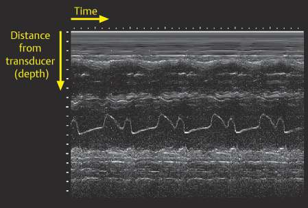
Fig. 1.1 M-mode image tracks the motion of the mitral valve over time. The temporal resolution of M-mode imaging is unmatched by any other technique. M-mode is indispensable for the visualization of moving structures.
图 1.1 M 型超声图像可追踪二尖瓣随时间的运动。M 型成像的时间分辨率是任何其他技术都无法比拟的。M 型对于显示活动结构是不可或缺的。
Fig. 1.2 Arterial bifurcation visualized by color duplex sonography. Blood flow toward the transducer is encoded in red. A color reversal (to blue) is noted just proximal to the bifurcation. It is caused by aliasing because the flow velocity in that area exceeds the measurable range ( ±19 cm/s) and therefore appears at the opposite end of the color scale. A distinctive feature of aliasing is the direct juxtaposition of contrasting colors, whereas a true flow reversal would always show a black zone interposed between the colors (Doppler angle = 90 degrees).
CDS images is to encode the different flow directions in shades of red and blue. The operator can choose which flow direction is encoded in blue and which in red. The blood flow velocity indicated in all conventional CDS techniques is the intensity-weighted mean blood flow velocity or Doppler shift (phase shift of the Doppler signals). Lighter shades of color indicate higher flow velocities. The color green may be added to the red and blue shades to indicate variance, especially in scanners designed for echocardiographic use. Variance is often used in medicine as a measure of turbulence. On a physical level, variance represents the scatter of Doppler frequency shifts. Turbulence increases the scatter of flow velocities, with an associated increase in the scatter of Doppler frequencies.
Rather than color-encoding the sign and amplitude of the Doppler signals as in CDS, a power Doppler image is produced by color-encoding the intensity of the local Doppler signals. Sites with stronger local Doppler signal intensities appear brighter in the image. Red and orange color shades are commonly used (Fig. 1.3). It is also possible to indicate flow direction in the image, but this sacrifices some key advantages of power Doppler, namely, its high sensitivity to very low flow velocities and its ability to depict high flow velocities in the same image without aliasing.
In tissue Doppler imaging, the motion of the myocardium or other tissue of interest is color-encoded relative to an arbitrary reference point. The signals arising from blood are not displayed.
B-flow imaging generates a gray scale image of blood flow. As the red cells move between the transmission of two successive pulses, the backscatter from the blood
B-flow 成像生成血流灰阶图像。当红细胞在连续两次脉冲发射之间移动时，来自血液的背向散射
changes. The effect is greatest when the blood flow is directed perpendicular to the ultrasound scan lines. This effect is virtually negligible in blood flowing along the scan lines because successive pulses will “hit” the same red cells. Consequently, this mode is best for imaging blood flow in vessels the run parallel to the skin surface (Fig. 1.4).
Color M-mode imaging uses pulsed Doppler interrogation along a single scan line similar to conventional M-mode echocardiography. While M-mode echocardiography displays location and intensity of reflected spectral signals, in color M-mode the Doppler velocity shift of moving reflectors is recorded and then color encoded and superimposed on the M-mode image. This process results in high temporal resolution data on the direction and timing of flow events. Since this is a pulse Doppler technique, just as it is with color Doppler imaging, velocity resolution is limited.
Fig. 1.3 Inflow from a tributary into the jugular vein through a venous valve. (a) Color duplex sonography. Note the reflection of the flow against the proximal wall, with blood streaming in the opposite direction on the right and left sides of the actual jet. (b) "Wideband" Doppler with a lower pulse repetition frequency (PRF) obscures core flow details but increases sensitivity to low velocities. (c) Unidirectional imaging with power Doppler is very sensitive and highly susceptible to artifacts. Long integration times (large number of pulses per scan line) often leads to washout of anatomic boundaries, especially in the distal direction.
Fig. 1.4 B-flow provides a real-time image of splenic blood flow. The vascular architecture is clearly defined, and even higher order branches are visualized. (With kind permission of Dr. H.P. Weskott.)
图 1.4 B 型血流成像可实时显示脾脏血流。血管结构清晰可辨，甚至可见更高分支级的血管。（经 H.P. Weskott 医生慷慨授权使用。）
Motion is plotted along the time axis, which forms the abscissa, while the ordinate is the scale for image depth. Tissue motion or blood flow is interrogated along a single scan line. Although color M-mode is mainly used in cardiology (▶ Fig. 1.5), it is also used in vascular imaging to determine blood flow volume. 35,5
To quantify Doppler-shifted signals from moving reflectors, Doppler spectral analysis using fast Fourier transformation (FFT) is a common standard. The echoes are analyzed for their frequency distribution within a given time interval (e.g., one analysis each 20 ms or faster). The spectra (power spectrum with frequency along the x-axis and amplitude along the y-axis is calculated) of each time interval are then added side by side and displayed as
为了量化来自运动反射体的多普勒频移信号，基于快速傅里叶变换（FFT）的多普勒频谱分析是一项常用标准方法。回波信号在给定时间窗内（例如每 20 ms 或更短时间内进行一次分析）进行频率分布分析。将每个时间窗的频谱（横轴为频率、纵轴为振幅的功率谱）依次并列排列并显示，即得到
Doppler spectral analysis with time along the x-axis and frequency along the y-axis. The amplitude of each FFT point is represented by color code, e.g., blue for weak and white for echoes with a high amplitude. The amplitudes are not displayed on the axis (▶ Fig. 1.6). The spectrum that plots frequency intensities over time is commonly referred to as the “Doppler spectrum.”
Pulsed-wave (PW) Doppler is distinct from CW Doppler. In PW Doppler, a Doppler sample volume is positioned in the B-mode image by the operator. Only echoes recorded from this user-defined region are analyzed for their spectral (frequency and amplitude) composition. The distance of the sample volume from the transducer defines the maximum pulse repetition frequency (PRF). In CW Doppler, ultrasound pulses are continuously emitted from the transducer while all echoes are continuously received and spectrally analyzed for their Doppler shift relative to the mean frequency of the transducer in use. Depth discrimination is not available as in PW Doppler; hence, the exact site of origin of the velocity information cannot be determined.
脉冲波（PW）多普勒不同于连续波（CW）多普勒。在 PW 多普勒中，操作者在 B 型图像上设定多普勒取样容积，仅对该用户所定义区域内接收的回声进行频谱（频率与幅度）成分分析。取样容积距换能器的距离决定了最高脉冲重复频率（PRF）。而在 CW 多普勒中，换能器连续发射超声脉冲，同时持续接收所有回声，并对其相对于所用换能器中心频率的多普勒频移进行频谱分析。CW 多普勒不具备 PW 多普勒那样的深度分辨能力，因此无法确定血流速度信息的精确来源部位。
HPRF Doppler is a special type of PW Doppler that employs multiple, equidistant Doppler sample volumes of the same size. The number of sample volumes depends on the selected PRF. The higher the PRF, the more sample volumes there are on the selected scan line at a given image depth. The information is ambiguous because the signal to be analyzed may originate from any of the sample volumes. The use of HPRF Doppler is an effective way to avoid aliasing. This technique is most commonly used for the detection of high flow velocities across sites of stenosis.
Three-dimensional techniques for displaying B-mode and color duplex images will be mentioned only in passing.
用于显示B型及彩色多普勒双功图像的三维技术将仅作简要提及。
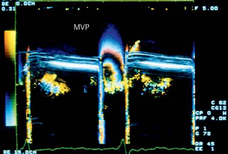
Fig. 1.5 Color M-mode image. This technique can define local flow patterns with high temporal resolution. This is an image of mitral valve prolapse (MVP, bulging of the mitral valve into the left atrium during systole). The course of the Nyquist limit (aliasing, red/blue color reversal) can be used to calculate flow volumes.
Fig. 1.6 Pulsed-wave (PW) Doppler spectrum from a healthy common carotid artery (CCA) in a standard gray scale display. Data derivable from the spectrum are indicated.
Conventional systems process a number of sectional images that have been stored in the scanner memory. The sectional images are acquired either as parallel planes (freehand) or as planes arranged in a pyramidal array (motor control). Using computer postprocessing, the volume data set is displayed as a combination of three sectional planes or as a three-dimensional rendering. In the future this display will be generated in the ultrasound machine. This process does not represent a fundamentally new analysis of the original echo signals, but just a different mode of display. While this process creates displays that are pleasing to the eye, it is time-consuming and ultimately does not supply any new information. The most popular use of this technology is in displaying fetal images. Basically, this rendering process is the same as that used for three-dimensional reconstructions in computed tomography (CT) and magnetic resonance imaging (MRI).
A new approach was presented by O. T. von Ramm at the American Institute of Ultrasound in Medicine (AIUM) conference in 1997. An unfocused planar sound wave is transmitted into the body. The receivers consist of numerous, parallel-processing electronic units called “receive beamformers.” At that level, the scanned volume is divided into individual segments, and the signals are analyzed along the scan lines for two-dimensional visualization. The received signals can be analyzed within the individual segments as a function of time to produce a real-time, three-dimensional volumetric image of the scanned volume.
1997 年，O. T. von Ramm 在美国超声医学学会（AIUM）会议上提出了一种新方法。该方法将一束未聚焦的平面声波发射入体内。接收端由大量并行处理的电子单元组成，称为"接收波束形成器"。在该层面上，扫描容积被分割为各个独立的区段，沿扫描线对信号进行分析以实现二维可视化。接收到的信号可在各个独立区段内随时间进行函数化分析，从而生成扫描容积的实时三维体积图像。
Besides the high costs of this technology, image display requirements place high demands on research and development. How can a volumetric image be displayed on a two-dimensional monitor? Which structures are essential and which should be suppressed? What it is that we wish to display? Like other three-dimensional techniques, real-time volumetric imaging does not achieve higher spatial resolution than two-dimensional imaging.
Real-time, three-dimensional imaging (4D) is integrated in midrange and high-end level ultrasound systems. New techniques and a considerable calculation power are required for that.
实时三维成像（4D）已集成于中端和高端超声系统。该技术需要新的技术方法及强大的计算能力。
The development of matrix transducers combined with high-speed computer technology expanded three-dimensional imaging to 4D imaging. The high frame rate permits the three-dimensional visualization of dynamic structures in real time. This 4D technique has already been widely utilized in the form of 4D-transesophageal echocardiography (4D-TEE) probes. So-called "plane wave imaging" and software beamforming can achieve the high frame rates necessary for 4D imaging.
In harmonic imaging, a certain fundamental frequency is transmitted into the body, and analysis of the returning echoes is limited to a frequency range that is approximately twice the fundamental transmitted frequency. For a 2.0-MHz transducer, for example, the "second harmonic"
waves at a frequency of approximately 4.0 MHz would be analyzed. The signal intensity of the tissue echoes in this range is very faint and therefore requires some type of amplification. The harmonic signal intensities from blood were initially found to be below the detectability threshold. But the total echo signal intensity, including the second harmonics, can be increased to the detectable range by means of microbubble contrast enhancement. The use of phase and amplitude modulation with multiple consecutive pulses can be analyzed on the receiver side in such a way that the tissue signal is strongly suppressed and the backscatter from the contrast agent depicts both the vascular distribution and the time course of the flow (▶ Fig. 1.7). The details of harmonic imaging are discussed more fully in the section on Innovations (p. 27).
Light and sound have much in common. Both are based on the propagation of waves and both are subject to the same processes of reflection, refraction, interference, diffraction, attenuation, and absorption.
Electromagnetic radiation (e.g., X-rays and light) and acoustic radiation both involve the propagation of waves. But while electromagnetic radiation can travel even in a vacuum, sound propagation requires a medium such as air or water. As a sound wave passes through the particles that make up the object, it sets them into mechanical vibration about their resting position. The vibrations propagate in a regular, periodic pattern as kinetic energy is transferred from one particle to the next. Each particle transmits momentum to its neighbor along the propagation pathway.
电磁辐射（例如 X 射线和光）与声辐射均涉及波的传播。但电磁辐射即使在真空中也能传播，而声音的传播则需要空气或水等介质。当声波穿过构成物体的粒子时，会使这些粒子围绕其静止位置发生机械振动。随着动能从一个粒子传递到下一个粒子，振动以规则、周期性的方式向前传播。每个粒子都将其动量沿传播路径传递给相邻粒子。
In a reversible process, the particles vibrate but do not change their location during the energy transfer; only a
在可逆过程中，粒子在能量传递过程中仅发生振动而不改变其位置；仅
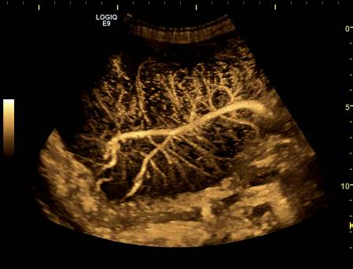
Fig. 1.7 The smallest vessels in an enlarged lymph node (lymphoma) can be visualized with a summation technique using microbubble contrast enhancement. (With kind permission of Dr. J. Vogelpohl.)
图 1.7 采用微泡造影增强的叠加技术可显示增大的淋巴结（淋巴瘤）中的最小血管。（经 J. Vogelpohl 博士惠允使用。）
state of motion is transferred from one particle to the next. This locally spreading, periodic change of state is called wave motion. Thus, a wave transports both energy and momentum. The sound wave is a pressure wave (or density wave) and is based on alternating compression and decompression of the medium. The pressure at any given site changes in a time-varying manner.
The stronger the bond between the particles, the faster the state of motion propagates, i.e., the higher the sound velocity in the given medium. Sound velocity depends on the compressibility and density of the medium, and therefore the temperature of the medium is also a factor. For our purposes, the temperature and external pressure may be considered constant in all cases, so sound velocity is viewed as a material constant. The sound velocities in various tissues and fluids are shown graphically in Fig. 1.8.9,10
A distinction is made between transverse waves and longitudinal waves (Fig. 1.9). In a transverse wave, mobile structures oscillate about their resting point in a direction that is perpendicular to the direction of wave propagation and energy transfer. In a longitudinal wave, the vibration is parallel to the direction of wave propagation and energy transfer. Remember that the particles that oscillate in longitudinal waves do not travel with the wave. Assuming that permanent deformation does not occur (i.e., the amplitudes are within the Hooke range), the pressure wave will cause only a transient disturbance in the medium. Sound propagation can occur in both ways. But because liquids and gases do not transmit shear forces, only longitudinal sound waves can propagate through them. Human beings are composed mostly of water (at least their nonskeletal portions), and so diagnostic ultrasound is based on the propagation of longitudinal waves.
In the range of ultrasonic frequencies, particles vibrate 20,000 to 1 billion times per second about their resting point. The unit of measure for frequency (f) is the hertz, or number of cycles per second (Hz = 1/s). Medical imag- ing generally employs frequencies between 2 and 25 MHz and occasionally as high as 70 MHz.
Wavelength is defined as the shortest distance between two successive wave peaks. Wave propagation is also subject to the time-distance law, i.e., the ratio of the distance traveled λ and time t equals a constant c. In other words, the propagation velocity c of a wave equals the product of the wavelength λ and the frequency f:
波长定义为两个相邻波峰之间的最短距离。波的传播同样遵循时距定律，即传播距离 λ 与时间 t 之比为一常数 c。换言之，波的传播速度 c 等于波长 λ 与频率 f 的乘积：
C=λ f(1.1)
A transmitted frequency of 1.54 MHz has a wavelength of exactly 1 mm in tissue. Doubling the transmitted frequency shortens the wavelength by one-half. The wavelength at 15 MHz is 0.1 mm.
Although the mean sound velocity in tissue is assumed to be 1,540 m/s, the velocity of electromagnetic radiation (light) in tissue is 3.3 × 10^7 m/s, or 2 × 10^4 times greater. This means that the wavelength of sound is shorter than that of an electromagnetic wave of equal frequency by the factor stated (▶ Fig. 1.10). The relatively low sound velocity in tissue is a key factor in understanding the processes involved in creating an ultrasound image.
Fig. 1.8 Velocities of sound propagation in various human tissues and fluids.
图1.8 声波在各种人体组织和体液中的传播速度。
various human tissues and fluids.
The basic principle of ultrasound imaging is that an ultrasound pulse is emitted from the transducer, and the echoes that return at different times from different depths are received by the same transducer (the pulse-echo principle). A single ultrasound pulse consists of only a few wavelengths. The longer the time interval between pulse transmission and echo reception, the longer the
transit time of the sound and thus the greater the distance from the transducer to the reflector from which the sound wave has returned.
声音的传播时间越长，表明从探头到反射体（声波由此反射回来）的距离也越远。
An echo is generated at the interface between two media with different acoustic properties. The amplitude of the echo depends greatly on the difference in acoustic impedance between the adjacent media. Impedance can be
Fig. 1.9 Sound propagation requires a medium. Both transverse and longitudinal waves are generated in solids, while only longitudinal waves occur in liquids and gases. Transverse waves are negligible in human tissues. (a) Transverse waves. (b) Longitudinal waves.图 1.9 声音传播需要介质。固体中可同时产生横波和纵波，而液体和气体中仅产生纵波。在人体组织中横波可忽略不计。(a) 横波。(b) 纵波。
Fig. 1.10 Comparison of the frequency ranges of electromagnetic (EM) radiation and sound. In both cases, c=λ f. Because light velocity in tissue (3.3×107m/s) is 2×104 times faster than sound velocity in tissue (1540 m/s), the wavelength of EM radiation is greater than that of sound by the same factor, given equal frequencies. (a) Frequency range of electromagnetic radiation. (b) Frequency range of sound.图 1.10 电磁（EM）辐射与声波频率范围的比较。两者均满足 c=λ f。由于组织中的光速（3.3×107 m/s）比组织中的声速（1540 m/s）快 2×104 倍，因此，在频率相同的情况下，电磁辐射的波长比声波的波长大相同的倍数。（a）电磁辐射的频率范围。（b）声波的频率范围。
thought of as resistance to transmission. The impedance z of a medium is equal to the product of the sound velocity c in the medium and the density ρ of the medium:
可视为对透射的阻力。介质的阻抗 z 等于介质中声速 c 与介质密度 ρ 的乘积：
z=cρ(1.2)
The greater the difference in acoustic impedance between the media, called the impedance mismatch, the greater the amplitude of the returning echo because less sound is transmitted into the adjacent medium. This means that all ultrasound imaging modes (A-mode, B-mode, M-mode) depict only the interfaces that are encountered within the field of view. Without interfaces there are no echoes, and the monitor image will be black and featureless. Signal analysis utilizes the reflected or scattered wave energy that is returned to the transducer. This energy flow is defined in physics by its intensity, and its unit of measure is W/m². The intensity of a sound wave is proportional to the square of the wave amplitude.
Fig. 1.11 shows that a large impedance mismatch is associated with very little sound transmission, as most of the intensity is reflected. The impedance of air is approximately 0.0004 × 10^6 kg/m²s due to its low density and sound velocity, while the impedance of tissue is approximately 1.62 × 10^6 kg/m²s. This fact alone makes it necessary to use an aqueous coupling medium between the skin and transducer during ultrasound imaging, otherwise very little sound intensity could be transmitted into the body. Because the impedance differences in the tissue itself are very small, only weak
echoes are generated within tissue, making it possible to achieve deep penetration.
回波在组织内产生，从而能够实现较深的穿透深度。
Two other properties of wave propagation are reflection and scattering. Reflection occurs only at interfaces that are large relative to the ultrasound wavelength. If the structures are smaller than λ, some of the intensity will be scattered. Reflection is a directional process, whereas scattered energy is distributed in all directions. Because the angle of incidence is equal to the angle of reflection, the angle between the path of the incident sound wave and a line perpendicular to the interface is equal to the reflection angle between the reflected wave path and the perpendicular line. This is why vessel walls perpendicular to the ultrasound beam appear very bright in the B-mode image, since most of the incident wave intensity is reflected back to the transducer.
波传播的另外两个特性是反射和散射。反射仅发生在相对于超声波波长而言较大的界面上。如果结构小于 λ，部分声强将被散射。反射是一个方向性过程，而散射能量则向各个方向分布。由于入射角等于反射角，入射声波路径与界面垂直线之间的夹角，等于反射波路径与该垂直线之间的反射角。这就是为什么在 B 型图像中，与超声束垂直的血管壁显得非常明亮，因为大部分入射波强度都被反射回了换能器。
The intensities I_t and I_r of the transmitted and reflected pulses (echoes) depend on the ratio of the impedances and the associated angles of incidence, reflection, and refraction ( ▶ Fig. 1.12). An ultrasound pulse strikes an interface between medium 1 and medium 2 at incidence angle θ_e. Some of the pulse intensity at that point is reflected at angle θ_p and some is transmitted at the refraction or transmission angle θ_t. Whether the transmission angle is greater or less than the incidence angle depends on the ratio of sound velocities in the media.
Fig. 1.11 Reflection coefficient R and transmission coefficient T in the case of normally incident sound as a function of the impedance ratio.图 1.11 在声波垂直入射的情况下，反射系数 R 和透射系数 T 作为阻抗比的函数。
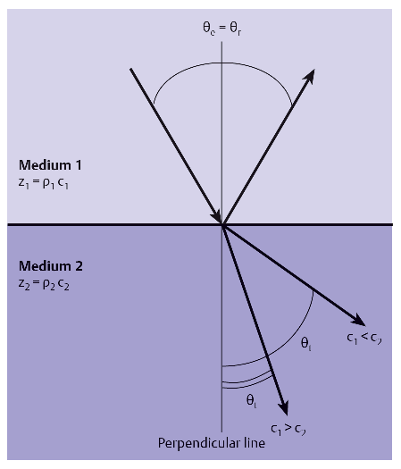
Fig. 1.12 An ultrasound pulse strikes an interface between medium 1 and medium 2 at the incidence angle θe. Some of the pulse intensity at that point is reflected back at angle θr and some is transmitted at the refraction or transmission angle θt. The transmission angle may be greater than or less than the incidence angle depending on the ratio of the sound velocities in the media.
When an ultrasound pulse crosses from medium 1 to medium 2, the reflection coefficient R and the transmission coefficient T at that interface are defined by the following formulas:
The weak scattering of ultrasound by red blood cells (spheric emitters) occurs almost uniformly in all spatial directions. Therefore, the echoes from blood that are received by the transducer are extremely faint, and blood vessels appear almost black in the B-mode image relative to tissue, which is a much more efficient scatterer and reflector, for a given scan depth and gain setting. The intensity of scattering by red cells is proportional to the fourth power of the sound frequency. 4,7 Attenuation increases with frequency. For example, the scattering intensity of a 7.5-MHz signal is 21 times greater than that of a 3.5-MHz signal. A 5-MHz transducer still provides a fourfold improvement over a 3.5-MHz probe. Thus, the more favorable scattering properties at higher frequencies can compensate for tissue attenuation to some degree.
Scattering plays a central role in ultrasound imaging and in Doppler scans. Structures of different densities act as scatterers. This particularly applies to red blood cells, which range from approximately 7 to 2 μm in their greatest and smallest dimensions. The scattering properties of blood are of key importance in the determination of blood flow. Unfortunately, these properties are very difficult to measure in vivo.
Another phenomenon that occurs at interfaces besides reflection and scattering is refraction (▶ Fig. 1.12, ▶ Fig. 1.13). This denotes a change in the direction and velocity of a wave due to a difference in the sound velocities of the media. If the sound velocity in the first medium is greater than in the second, the wave will be refracted toward a line perpendicular to the interface. If the opposite is true, the wave will be refracted away from the perpendicular. Refraction can be misleading when it comes to judging the exact size and location of a perceived structure. Anyone who reaches for an object submerged in water will find that it appears to be at a different depth and location than it actually is. Refraction is usually of minor importance in diagnostic ultrasound but may become significant in ultrasound-guided aspirations and biopsies, for example.
Interference refers to the interaction of two superimposed waves. The amplitudes of the waves may be added together (constructive interference) or they may diminish or even cancel out (destructive interference), depending on the relative phase positions of the interacting waves.
Fig. 1.13 As sound travels through different media, refraction of the sound can cause an apparent displacement. A knowledge of anatomy is essential for recognizing this artifact. The occasional presence of a "double aorta" is a well-known refraction phenomenon.
Diffraction occurs when the wave deviates from a straight line and bends around objects. Without diffraction, we would be unable to hear sounds behind an obstacle. The Huygens principle, which states that each point encountered by a wave becomes the starting point for a spherical wave, provides a qualitative means for describing the beam pattern emanating from a transducer. Diffraction and interference are the primary determinants of beam shape.
Attenuation limits the penetration depth of an ultrasound pulse. This phenomenon reduces the initial intensity I0 of the ultrasound pressure pulse. The intensity I declines exponentially with distance s, the attenuation coefficient α being a material constant. As the intensity of the pulse is attenuated, its energy is converted to heat (absorption), along with intensity losses due to reflection and scattering and other geometric losses.
衰减限制了超声脉冲的穿透深度。该现象使超声压力脉冲的初始强度 I0 减弱。强度 I 随距离 s 呈指数衰减，衰减系数 α 为材料常数。随着脉冲强度发生衰减，其能量转化为热量（吸收），此外还包括反射、散射及其他几何因素所致的强度损失。
l=l₀e-α s(1.7)
The human body is definitely not a homogeneous medium. Instead, it is composed of layers. Different types of tissue such as fat, muscle, blood, tendons, and organs each have their own attenuation coefficients. 12 Despite local differences in the layered composition of the body, the average attenuation is from 0.3 to 0.6 dB/MHz cm. 2 This corresponds to a total round-trip attenuation of 0.6 to 1.2 dB/MHz cm for a pulse-echo system.
Signal amplification, called gain, is used to compensate for ultrasound attenuation in tissue (▶ Fig. 1.14). The settings are based on a combination of time gain compensation (TGC), also called depth gain compensation (DGC), and the overall gain. Because of tissue-dependent differences in attenuation that occur at different sites and among different patients, the gain settings should be optimized for each examination.
As noted above, attenuation is also frequency-dependent. The higher the frequency, the greater the attenuation and thus the lower the penetration depth from which a readable signal can be acquired, assuming maximum gain and power output. Additionally, the center frequency of the pulse is shifted toward lower values with increasing depth because higher frequencies are attenuated more than low frequencies. As a result, the pulse length increases with travel time and the frequency distribution in the pulse becomes narrower. This can be a problem in the interpretation of Doppler spectra that are sampled at greater depths. This is particularly true when short, wideband pulses are used, equivalent to a small Doppler sample volume. The narrower the frequency band of the pulses, the less significant this effect. It is practically negligible in CW Doppler.
The dynamic range is a key determinant of penetration depth. It refers to the difference between the maximum echo amplitude and the minimum amplitude that is still distinguishable from noise. The maximum amplitude is
influenced by the maximum ultrasound output power that can be safely delivered to the body without injury. A dynamic range of approximately 110 dB may exist close to the transducer. The dynamic range dwindles with depth due to attenuation. Also, the initially wideband signal becomes narrower and consists of lower frequencies as described above.
Spatial resolution, especially in the axial direction, is correlated with the wavelength. The higher the frequency, the shorter the wavelength according to formula (1.1) and the better the spatial resolution. To make all regions from the abdomen to the thyroid gland accessible with optimum resolution for a given maximum penetration depth, we must use multiple transducers with different center frequencies. The relationship of penetration depth to wavelength as a function of transmitted frequency is shown graphically in Fig. 1.15. It should be noted that this curve is only an estimate with regard to maximum penetration depth because the actual attainable penetration depth will depend strongly on patient-related factors—especially the thickness of the fat layer, which increases scattering and attenuation, as well as total reflection at tissue-air interfaces.
Fig. 1.14 Echo signal intensity and gain (normalized). Signal intensity is amplified as a function of depth to compensate for sound attenuation in the tissue. This feature, called time gain compensation, creates a uniform appearance of equally echogenic tissues located at different depths.图 1.14 回声信号强度与增益（归一化）。信号强度作为深度的函数被放大，以补偿组织中的声衰减。这一特性称为时间增益补偿（time gain compensation），可使位于不同深度且回声特性相同的组织呈现均匀一致的图像表现。
1.4 Formation of the Ultrasound Image1.4 超声图像的形成
Ultrasound image formation is based on the analysis of multiple pulse-echo cycles along the individual scan lines that make up the image plane. Numerous individual, adjacent scan lines form a two-dimensional ultrasound image. Different arrangements of the scan lines produce different image formats, which correlate with the type and geometry of the transducer (Fig. 1.16).
Except in phased array transducers and systems with beam steering, the scan lines always emanate from the transducer face at right angles to the excited ("pulsed") group of elements. A phased array transducer consists of a linear, planar assembly of piezoelectric elements. These
Except for mechanical sector transducers, all standard transducers consist of a linear assembly of piezoelectric elements. When an alternating electrical voltage is applied to the transducer elements, they undergo a rapid mechanical expansion and contraction. In turn, the vibrating elements cause a pressure change in the surrounding medium that is proportional to the amplitude of the vibrations. This pressure change propagates from the transducer into the tissue. The piezoelectric elements also function as receivers for the returning echoes. By changing the pressure on the elements, the echoes induce an electrical voltage that is detected and analyzed by electronic circuitry.
elements are pulsed with a time delay between successive excitations. The summation signal of all the elemental waves from all the transducer elements can be steered through various angles by a precise timing mechanism to create a sector-shaped image. A similar technique is beam steering, which is used in linear array transducers. It produces a more favorable beam angle for Doppler analysis in both spectral Doppler and CFI.
Given the relatively low sound velocity of 1,540 m/s in tissue, plus the desire for real-time imaging capability, only a limited number of real scan lines are available. The transducer cannot emit the pulse for the next scan line until the deepest possible echo from the previous pulse has been received. Otherwise, the echoes could not be uniquely assigned to specific pulses.
Color Doppler requires the use of multiple pulse-echo cycles per scan line. Often it is up to the operator to select the width of the color-encoded image area. The narrower the color window, the higher the frame rate for a specified image depth.
The use of multiple transmit pulses focused to different depths poses another problem in this regard. Because each pulse emitted by the transducer has only one transmit focus, optimum spatial resolution is obtained only at a particular depth. To compensate for this, it is common to use multiple pulse-echo cycles with transmit pulses focused at different depths. As a result, each individual scan
Fig. 1.15 Wavelength and attainable penetration depth as a function of center frequency based on a total assumed attenuation (round trip) of 0.9 dB/cm/MHz.图 1.15 基于 0.9 dB/cm/MHz（往返）的总衰减假设，波长与可达穿透深度随中心频率变化的函数关系。
line is segmented. In the simplest case, the time required to produce an image is multiplied by the number of transmit focuses that are used.
In electronic transducers, transmit and receive focusing occurs in a direction that is longitudinal to the transducer (i.e., in the image or scan plane) by precisely timing the pattern in which the individual elements are pulsed and summing the signals received by the individual elements in a transmit or receive group. Almost all modern ultrasound systems have “dynamic receive focusing” in the image plane, meaning that receive focusing is optimized in small steps and occurs almost continuously during pulse transit. This eliminates cumulative time losses. Transmit and receive focusing perpendicular to the transducer are accomplished with an acoustic lens. The focal position in this spatial direction cannot be changed in transducers whose elements are arranged in a single row.
Spatial resolution, denoting the size of structures that are still discernible in the image, depends on many factors, including the position of the object in the field of view. As Fig. 1.17 and Fig. 1.18 illustrate for a linear array transducer, resolution varies in the x, y, and z directions. Spatial resolution in the z direction depends directly on the pulse length. Spatial resolution in the y direction depends on electronic focusing and on the given position in the field of view. Spatial resolution in the x direction (perpendicular to the image plane) is also called the slice thickness resolution or elevational resolution. The divergence of the ultrasound beam, even without attenuation, leads to a decline of pressure amplitudes with increasing depth. The acoustic energy is distributed over an ever-expanding volume (Fig. 1.19).
1.4.1 Frame Rate, Pulse Repetition Frequency, Penetration Depth, and Number (Density) of Scan Lines1.4.1 帧率、脉冲重复频率、穿透深度及扫描线数量（密度）
Assuming a constant sound velocity, the depth at which a particular echo is formed can be calculated by measuring the elapsed time from the transmission of a short pulse until the echo is received. To assign the echo unambiguously to a specific depth or range, all possible echoes from the previous pulse must return to the transducer before the next pulse is transmitted. The maximum depth at which echoes can still be received without range ambiguity is determined by the attenuation properties (1.7) and scattering properties of the medium and by the transmit/receive characteristics and signal-to-noise ratio of the ultrasound machine.
The distance s that the sound travels in time t is calculated as follows:
声音在时间 $t$ 内传播的距离 $s$ 可按如下方式计算：
s=ct(1.8)
A value of c = 1,540 m/s is accepted as the mean sound velocity in diagnostic ultrasound. This number is binding for all ultrasound equipment manufacturers. Because we are dealing with a pulse-echo system, the distance s traveled by the sound is equal to twice the distance d from the transducer to the reflector indicated on the display. First the pulse must reach the designated reflector, then the echo must travel the same distance back to the transducer. For a given transit time t:
在诊断超声中，声速的平均值通常取 c = 1,540 m/s。该数值对所有超声设备制造商均具有约束力。由于我们使用的是脉冲回波系统，声波传播的距离 s 等于从探头到显示屏上所示反射体距离 d 的两倍，因为脉冲必须首先抵达指定的反射体，随后回声需沿相同路径返回探头。对于给定的传播时间 t：
d=(ct)/(2)(1.9)
The maximum tolerable depth at which echoes can be acquired and analyzed without range confusion, dmax, is called the penetration depth (scan depth, penetration). Actually, the electronic circuitry requires several micro-seconds of processing time between pulses, so the device must wait for that interval before transmitting the next pulse. The maximum allowable PRF at a specified image
Fig. 1.16 Different image formats of sector, convex (curved array), and linear array transducers. Generally, the scan lines are either radial or perpendicular to the transducer. (a) Sector transducer. (b) Curved array transducer. (c) Linear array transducer.
depth dmax without range ambiguity is given by the formula:
深度 dmax（无测距模糊）的计算公式为：
The A-mode ultrasound image consists of a single scan line, and echo amplitude is displayed as a function of transit time. All other imaging modes require more than one pulse-echo cycle to produce an image. A B-mode image is formed by multiple side-by-side scan lines. One pulse-echo cycle corresponds to one scan line when only one transmit focus is used. The color duplex mode requires multiple pulse-echo cycles per line to acquire flow information; this principle will be explained more fully in a later section.
A 型超声图像由一条扫描线构成，回波振幅作为渡越时间的函数显示。所有其他成像模式都需要多个脉冲-回波周期才能生成图像。B 型图像由多条并列的扫描线组成。当仅使用单一发射焦点时，一个脉冲-回波周期对应一条扫描线。彩色双功模式需要每个扫描线多个脉冲-回波周期来获取血流信息；这一原理将在后续章节中更详细地阐述。
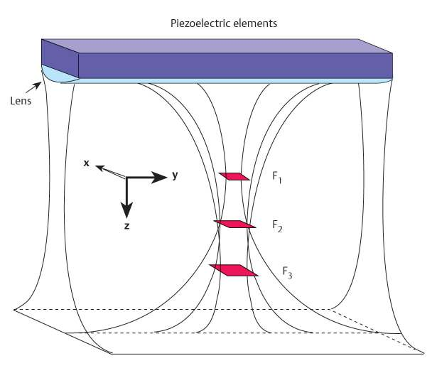
Fig. 1.18 The spatial resolution in a gray scale image is direction-dependent. Resolution is highest in the axial direction. Lateral resolution and elevational resolution (across the slice thickness) are determined by the beam geometry and transducer design.
The sound velocity determines the relationship of frame rate to number of scan lines and to penetration. As the number of scan lines L and number of transmit foci S are increased, the maximum frame rate FRmax decreases according to the formula:
声速决定了帧率与扫描线数量及穿透深度之间的关系。随着扫描线数量 L 和发射焦点数量 S 的增加，最大帧率 FRmax 按如下公式降低：
FRmax=(c)/(2LHsdmax)(1.11)
where L=number of scan lines, H=number of transmit pulses per color line, S=number of transmit foci, and dmax=maximum penetration depth.
This is best illustrated by considering a color duplex image with one transmit focus. Our goal is to achieve a frame rate of 20 frames/s. This means that 0.05 s is available for producing an image. According to formula (1.8), the total distance traveled by the ultrasound, s, is 77 m. Since ultrasound image formation is based on multiple pulse-echo cycles, the distance d from transducer to echo source is one-half that distance, or 38.5 m. Now let us define the scan depth as 20 cm, for example. This immediately gives us the maximum number of scan lines per B-mode image: 192 lines (38.5 m/0.2 m). If simultaneous color encoding of the image is desired, this will reduce the number of scan lines and the number of pulse-echo cycles per line. With 10 pulse-echo cycles per line, for example, the scan line number is reduced to 19 lines per image. If more than one transmit focal zone is selected, the line number is reduced by the number of transmit foci because one pulse-echo cycle is required for each transmit focus.
这一点通过考虑一幅具有单个发射焦点的彩色双幅图像最容易说明。我们的目标是达到 20 帧/秒的帧率，这意味着每生成一幅图像可用时间为 0.05 秒。根据公式1.8，超声传播的总距离 s 为 77 m。由于超声图像的成像是基于多次脉冲–回声循环，因此从换能器到回声源的距离 d 为该距离的一半，即 38.5 m。现在我们将扫描深度定义为 20 cm（例如）。由此可直接得到每幅 B 模式图像的最大扫描线数：192 线（38.5 m/0.2 m）。如果希望同时进行彩色编码，则会减少扫描线数以及每条扫描线上的脉冲–回声循环次数。例如，每条扫描线采用 10 次脉冲–回声循环，则每幅图像的扫描线数减少至 19 线。如果选择不止一个发射焦点，则扫描线数将按发射焦点的数目成比例减少，因为每个发射焦点都需要一次脉冲–回声循环。
The low sound velocity in tissue also limits the velocity range for Doppler spectral analysis. Since range ambiguity must be avoided in pulsed Doppler spectral analysis, once again all echoes must return from the selected depth before the next pulse is transmitted.
The maximum Doppler shift that can be interpreted unambiguously, called the Nyquist limit, is equal to one-half the PRF. Doppler shifts above that limit cannot be determined unambiguously without additional assumptions. But the PRF depends on the scan depth and is therefore related to sound velocity as shown in formula (1.10).
An ultrasound system always consists of a transducer (probe) and a control unit. The quality of a system is mainly determined by the transducer. This fact seems self-evident, but all too often it is disregarded in practice.
The principal types of transducers are electronic linear array, curved array, and phased array transducers and mechanical transducers. Mechanical transducers may have a single piezoelectric element (fixed focus) or multiple elements (annular array). When multiple elements are used (generally no more than 12) they are arranged in concentric rings.
Linear array transducers have a rectangular field of view. Image width is determined by the width of the transducer. Sector and mechanical transducers generate a sector- or "pie"-shaped image. Linear array and sector transducers have a linear arrangement of piezoelectric elements and differ in the timing sequence for pulsing the elements. The width of an element in a sector transducer must be no greater than one-half the wavelength of the transducer center frequency. This limitation does not apply to linear array transducers.
A curved array is a curved, linear assembly of piezoelectric elements. The image format of a curved array transducer is roughly a combination of the linear and phased array formats. Close to the transducer, a curved array has a wide field of view similar to a linear array transducer. The field widens to a sector format with increasing distance from the probe. While the beam direction of electronic transducers is defined by the timing sequence in which the individual elements are fired, in mechanical transducers it is determined by moving the acoustic group in the desired beam direction.
Sound emission is produced by the reverse piezoelectric effect, in which a solid body contracts or elongates in proportion to an applied external voltage. Conversely, external pressure on the material induces electrical charge formation on its surface. The pressure distorts the crystal lattice, causing positive and negative charge carriers to separate. The resulting potential difference, or voltage, is proportional to the applied pressure and can be measured. The piezoelectric effect occurs in crystals that have polar axes and no centers of symmetry. One such material is quartz. Today the most widely used piezoelectric material in imaging transducers is lead zirconate titanate oxide ceramic (PbZrTiO2) called PZT. This ceramic becomes polarized in a strong electric field, creating its piezoelectric properties. Every transducer contains one or more piezoelectric elements.
Fig. 1.19 Pressure variations in the sound field. The distribution of pressure amplitudes along the beam is shown symbolically. The beam spreads out with increasing depth. All reflections and backscatter returning to the transducer are reduced to one image line by the ultrasound machine. A gray scale image is composed of numerous image lines. A schlieren image (inset) shows the sound pressure field of an ultrasound transducer. Zones of high pressure appear dark. The side lobes (outside the acoustic axis) are clearly visible.
The basic components of an ultrasound transducer are illustrated in Fig. 1.20 for a linear array. All transducers have the same basic design. The acoustic lens at the front of the transducer is backed by a λ/4 matching layer, which is followed by the piezoelectric elements, damping (backing) material, and a baseplate. The shape and material composition of the transducer determine its acoustic characteristics. The acoustic block is shielded with grounded metal foil to prevent electromagnetic interference. The whole assembly is housed in a hermetically sealed plastic case.
The resonance frequency or natural center frequency of the piezoelectric element is determined by the thickness of the element. That thickness equals one-half the wavelength of the resonance frequency in the piezoelectric material (not in the tissue). The top and bottom surfaces of the piezoelectric elements are coated with silver or aluminum to provide better charge distribution and electrical contact. One signal-transmission wire is bonded to these metal electrodes for each piezoelectric element. Either a ground wire is attached to the face, usually in a single-element system, or the damping layer as a whole is made of a conductive material that provides ground contact.
The properties of the damping layer should be appropriate for the transducer application. In many cases it consists of an epoxy resin that contains tungsten or aluminum particles. In a simple CW Doppler pencil probe, the layer should damp as little as possible to ensure a narrow bandwidth of the emitted ultrasound signals. In transducers used for imaging only, high damping is desired to keep the pulse length as short as possible. The shorter the pulse, the wider the bandwidth of the transducer. Unfortunately, higher damping is associated with lower sensitivity of the transducer elements. Duplex transducers that are used for simultaneous imaging and Doppler analysis should be both wideband and narrowband. This is an inherent contradiction, of course, so a tradeoff must be made that favors one application.
The piezoelectric elements are also coated with a matching layer, which serves the same function as an antireflective coating on optical lenses. It reduces reflective losses at the transducer-tissue interface. Its thickness is one-quarter wavelength ( λ/4), and its impedance Zlayer should equal √ZPZT × Ztissue.
Array transducers consist of a linear assembly of individual, mechanically separate piezoelectric elements cut from a plate of suitable geometry with a diamond saw. The number and width of the strips are geared toward the desired application and the number of elements that can be pulsed electronically by the ultrasound machine.
Fig. 1.20 All transducers have a similar basic design, as illustrated in these sectional diagrams of a linear array transducer. (a) Longitudinal section. (b) Cross section.图 1.20 所有换能器都有相似的基本设计，如这些线阵换能器的剖面示意图所示。(a) 纵切面。(b) 横切面。
Phased array transducers are fitted with 64 to 192 independent elements. Linear and curved array transducers have approximately 64 to 256 elements. These numbers do not refer to the number of channels that form the transmit or receive aperture (the active area that transmits or receives waves at any given point in time). Generally, this number is a subset of the available independent elements. The number of piezoelectric elements actually present in the transducer may be two or four times higher than stated above. Sidelobes can be reduced by mechanically grouping the elements while maintaining their electrical connections. The number of elements actually present in a transducer depends on the transducer geometry.
Array transducers are fitted with a front lens bonded directly to the λ/4 matching layer. The lens is often composed of silicone rubber with additives. The function of the lens is to focus the sound beam perpendicular to the image plane (elevation, slice thickness), since at present it is very difficult to achieve good electronic focusing on that plane. Because the elements in almost all electronic transducers are flat and arranged in one row, focusing in the elevational plane must be done by refraction. The focal point of the beam is defined by the manufacturer. The focal depth is determined by the shape of the lens and the refractive index of the selected material. Focusing in the longitudinal direction is done electronically.
Lateral electronic focusing perpendicular to the image plane requires a true two-dimensional array with, for example, 64 × 64 (or more—matrix array) piezoelectric elements that can be separately pulsed. The number of individual elements required in the transducer is increased by a factor equal to the number of additional element rows. Electronic focusing can then be done in the elevational direction as well, analogous to the methods described below for single-row piezoelectric arrays. This requires at least two parallel receive circuits (receive beamformers for receive focusing), one for the longitudinal direction and one for elevation. Sophisticated electronics are needed to turn the technical refinement into an actual improvement of image quality.
In the past, transducers were designated according to their center frequency. A transducer labeled LA 7.5, for example, is a linear array transducer with a center frequency of 7.5 MHz. Today, transducers are designed to allow techniques such as tissue harmonic imaging (THI) and continuous high intensity (CHI). This requires a large bandwidth, and therefore the transducer is designated by its nominal bandwidth. Thus, for example, a transducer labeled C 6–1 is a convex array transducer with a bandwidth of 1 to 6 MHz. This means that the transducer can perform THI with a transmission frequency as high as 3 MHz.
过去，探头按其中心频率命名。例如，标有 LA 7.5 的探头即为中心频率为 7.5 MHz 的线阵探头。如今，探头的设计需支持诸如组织谐波成像（THI）和连续高强度（CHI）等技术。这要求探头具有较宽的带宽，因此探头以其标称带宽来命名。例如，标有 C 6–1 的探头即为带宽为 1 至 6 MHz 的凸阵探头。这意味着该探头在 THI 模式下可使用高达 3 MHz 的发射频率。
A highly damped transducer with single-pulse excitation provides the highest spatial resolution. Vibration of the piezoelectric elements is induced with a single, short electrical pulse. The resonance frequency is defined by the thickness of the transducer elements and the electrical matching of the oscillating circuit to the elements. Because the elements are damped, they return to their resting state after a few vibrations. The number of vibrations, and thus their duration, defines the length of the pulse packet and is a measure of the spatial resolution (especially axial resolution) that can be achieved with the transducer. The shorter the pulse packet, the better the resolution. A frequency analysis of the emitted pulse packet yields the center frequency of the transducer, i.e., the frequency that is midway between the highest and lowest frequencies. The upper and lower ends of the frequency bandwidth are generally defined as the frequencies whose amplitudes are one-half that of the frequency with the highest amplitude (▶ Fig. 1.21, ▶ Fig. 1.22). The center frequency for single-pulse excitation is close to the resonance frequency (= natural center frequency) of the transducer. The transducer will provide the best spatial resolution at that frequency.
There is no reason why the transducer center frequency cannot be changed arbitrarily by using multiple excitation signals. In this way a nominal 5-MHz transducer, for example, can be changed to a 3.5- or 7.5-MHz transducer. This always makes the pulse packet longer than in the optimal case of single-pulse excitation, so there will be some loss of spatial resolution. Virtually any frequency can be selected as the center frequency. This is not the same as “wideband transducers,” a marketing term that does not describe technical reality. From a technical standpoint, there is no such thing as “wideband technology.”
The relationship between (frequency) bandwidth and pulse length is as follows: the shorter the pulse, the higher the bandwidth of the pulse. A pulse produced by single excitation always has a significantly higher bandwidth than a pulse produced by multiple excitations. The spatial resolution in the single-pulse case is always better than in the multi-pulse case, regardless of the nominal center frequency in the multi-pulse case. Thus, the bandwidth of the sound pulse has very little to do with the transducer design.
There is one medical application in which multi-pulse excitation is essential: Doppler spectral analysis plus CDS. This technique employs longer pulses with a narrow bandwidth, otherwise the error in determining the Doppler frequency shift would be too large. The rule for spectral analysis plus CDS is as follows: the longer the pulse, the better the frequency resolution. Doppler applications generally use pulses with a lower center frequency than in the single-pulse case in order to increase penetration. Ordinarily, 7.5-MHz transducers are operated at 7.5 MHz for B-mode imaging and at center frequencies of around 5 MHz for Doppler.
In addition to their value for Doppler, variable frequencies also increase the penetration depth in B-mode when
此外，变频除有助于多普勒成像外，还可在以下情况下提高B模式成像的穿透深度：
a lower frequency is used. Multi-pulse excitation also delivers more energy into the body, further increasing the penetration depth. Besides changing the “look” of the image (with an invariable loss of spatial resolution at higher frequencies), the variable frequency capability primarily serves a marketing function.
So far this section has basically dealt with transmission. But in the reception as well, a frequency range can be freely selected from the total frequency distribution of the returning echoes by using a suitable bandpass filter. The received frequency range used at a particular depth is rarely distributed symmetrically about the transmit center frequency. In the near field (close to the transducer) the high-frequency portion of the wideband signal is generally filtered out and used for imaging. In the far field, the narrow-band, low-frequency echo range is generally used.
When an observer and a sound source are moving toward or away from each other, the frequency measured by the observer will be higher or lower than the frequency measured by a stationary observer, depending on the direction of relative motion. This effect was observed by Christian Doppler in 1842 based on the color shift of double stars and was named after him. When the transmitter and receiver are moving toward each other, the perceived wavelength is shortened and so the wave frequency is increased. When they are moving
Fig. 1.21 Center frequency and bandwidth. Because each transmitted pulse has a finite length, there is a frequency spectrum in the transmitted signal with a center frequency. Short pulses have a greater bandwidth than long pulses. The apparent length of the ultrasound pulse depends on the intensity being considered. The bandwidth of an ultrasound pulse characterizes the frequency range that exceeds a selected signal amplitude. The half-width ( -6 dB) is generally determined.图 1.21 中心频率与带宽。由于每个发射脉冲都有有限的持续时间，因此发射信号中存在一个具有中心频率的频谱。短脉冲的带宽大于长脉冲。超声脉冲的表观长度取决于所考察的强度。超声脉冲的带宽用来表征超过选定信号幅度的频率范围，通常测定其半峰全宽（ -6 dB）。
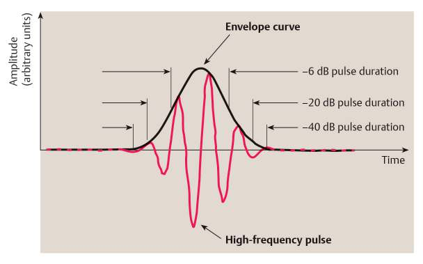
Fig. 1.22 Bandwidth is the key determinant of axial resolution. When in receive mode, the ultrasound machine analyzes the envelope curve (dark line), not the high-frequency signal. The flank slope of the curve is a measure of contrast resolution, and its length is a measure of spatial resolution.
away from each other, the measured frequency is reduced and the wavelength is increased. The Doppler effect is used medically to determine blood flow velocity ( ▶ Fig. 1.23).
远离彼此时，所测得的频率降低，波长增大。多普勒效应在医学上用于测定血流速度（ ▶ 图 1.23）。
The transducer emits a sound pulse, which encounters moving scatterers in the blood. The blood cells are assumed to move toward the transducer at a constant velocity. The wavelength is the shortest distance between two equivalent motion states of vibrating particles. It takes a certain time for the wave to propagate for a distance equal to its wavelength. But the scatterers are moving in a direction opposite to the direction of wave propagation. They can travel a distance of one wavelength in less time than a stationary object would for the wave to move past by one wavelength. But according to the time-distance law, the product of time and velocity is equal to distance traveled. Thus, the body moving toward the pulse emitter "sees" a shorter wavelength than the stationary object. In other words, the frequency observed by the moving object is higher than the frequency measured by the object at rest. Hence, the frequency in this case is shifted to a higher level.
If the blood cells are moving away from the transducer, the frequency will be shifted toward lower values. For a known transmission frequency, then, we can calculate the velocity at which the objects are moving relative to each other.
The Doppler effect occurs "twice" in the application of ultrasound. The transducer emits sound waves at a certain frequency. The moving blood cells "measure" a different frequency and transmit it back to the transducer. The transducer now receives a signal (echo) and again measures a lower or higher frequency depending on the direction of motion.
where fB= observed frequency, f0= actual transmitted frequency (in this case the center frequency of the transducer), vobserver= velocity of the observer, vsource= velocity of the source, and c = sound velocity.
In our case the velocities are equal ( vobserver = vsource = v) and the above formula becomes:
在我们的案例中，速度相等（vobserver = vsource = v），上述公式变为：
fB=f₀(c+v)/(c-v)(1.13)
The following approximation is valid for small velocities (v<50 m/s, v<<c):
以下近似式在低速情况下成立（v < 50 m/s，v ≪ c）：
fB=f₀(1+2(V)/(c))(1.14)
or
或
fB-f₀=2f₀(v)/(c)(1.15)
The difference fB - f0 is equal to the Doppler frequency shift fd. If the source and observer are not moving directly toward each other but at an angle θ, we have:
Thus, we are measuring only the component that is perpendicular to the transducer (disregarding possible beam steering for now) and therefore parallel to the direction
因此，我们测量的只是垂直于换能器（暂不考虑可能的声束偏转）且与……方向平行的分量
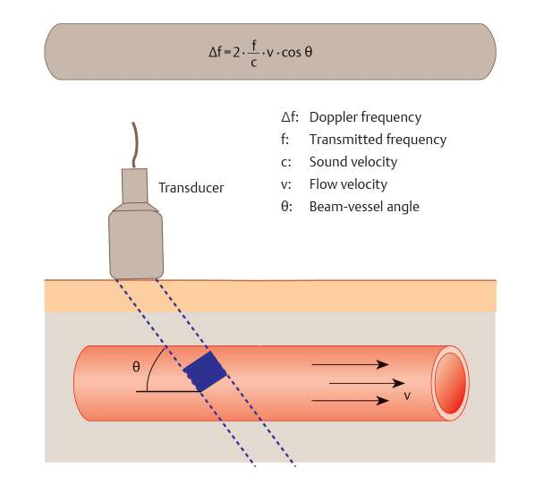
Fig. 1.23 Doppler effect. The ultrasound beam forms a certain angle with the velocity vector of the blood. The projection of the velocity vector onto the scan line is measured. The Doppler frequency is within the audible range for flow velocities occurring in the body and for the ultrasound frequencies that are used. Therefore, all ultrasound machines equipped with pulsed-wave (PW) or continuous-wave (CW) Doppler have a loudspeaker.
of sound transmission (Fig. 1.21). The angle θ is hereafter referred to as the Doppler angle for short. The Doppler frequency shift, called simply the Doppler shift, may be positive or negative corresponding to motion toward or away from the transducer.
The reference frequency in PW Doppler can be selected arbitrarily. Generally, it is set less than the resonance frequency of the transducer as a center frequency or Doppler reference frequency. With a 7.5-MHz transducer, it is common to use a Doppler reference frequency of approximately 5.5 MHz. This results in better scan penetration. In many cases the user of PW Doppler can select the Doppler reference frequency from a range of frequencies offered by the manufacturer for a particular transducer. Even in extremely narrow-band CW Doppler, the center frequency can be freely selected.
The terms in formula (1.16) can be rearranged as follows:
公式（1.16）中的各项可重新整理如下：
vδ =(fdc)/(2f₀cosθ)(1.17)
Formula (1.16) and formula (1.17) derived from it are the two most important equations in medical Doppler imaging. A knowledge of these equations is essential for interpreting Doppler spectra and color duplex images. In medical ultrasound the transducer or beam direction always provides the reference point for all measurements regarding blood flow direction and flow velocity.
The dependence of the Doppler effect on angle and center frequency should never be ignored when interpreting the measured Doppler shift. Simply stating, a measured Doppler shift is meaningless in itself. The Doppler reference frequency of the transducer and the Doppler angle must be known in order to determine blood flow velocity and make generally valid interpretations. The use of different Doppler reference frequencies will lead to very different Doppler shifts despite a constant blood flow velocity. The Doppler shift measured for a given velocity will be greater at a higher center frequency than at a lower center frequency. Conversely, higher flow velocities are measured for a given Doppler shift when lower center frequencies are used.
Because the Doppler shift depends on the cosine of the Doppler angle, a Doppler shift can never be measured at a 90 degrees angle because the cosine at that angle equals zero, regardless of whether blood flow is present or absent. The apparent flow velocity measured at 90 degrees would be infinite. Assuming that a flow pattern is detectable at all, it should be possible to set the Doppler angle to an accuracy of ±2 degrees. Beyond a Doppler angle of approximately 70 degrees, a 2 degrees error in measuring the Doppler angle would cause more than a 10% error in the calculated velocity. It is best to keep the Doppler angle as small as possible, but unfortunately this is not always possible due to anatomical constraints.
Every machine can resolve only certain frequencies. A user-adjustable high-pass filter, called a wall filter in medicine, can be used to determine the lowest Doppler frequency that can still be measured and displayed. Doppler shift is plotted against blood flow velocity for various wall filter settings in Fig. 1.24. The lower the wall filter setting, the lower the flow velocities that are still measurable. The more directly the blood is flowing toward or away from the transducer, the better the detection of low flow velocities for a given wall filter. Additional literature on the theory of Doppler spectral analysis and its implications for equipment settings can be found in Siegert.⁸
Fig. 1.24 Detection of low Doppler shifts for various Doppler angles and wall filters in the case of a 5.0-MHz transducer. The wall filter cuts off all Doppler shifts below the selected value.图1.24 在使用5.0 MHz探头的情况下，针对不同多普勒角度和壁滤波器的低多普勒频移检测。所有低于选定值的壁滤波器低多普勒频移均被切掉。
1.6.1 Problem of Pulsed Sampling—Aliasing1.6.1 脉冲采样问题——混叠
Pulsed-wave (PW) and color Doppler are techniques that measure a given process at discrete points, not continuously. Pulsed measurements of this kind are used in many areas of physics and technology. Pulsed measuring techniques are subject to a phenomenon called aliasing.
This refers to situations in which the measured Doppler frequency shift is incorrectly displayed. Anyone who has seen movies is familiar with the effect. A film is made up of individual image frames that are acquired at a particular sampling rate (▶ Fig. 1.25). The wheels of an accelerating car first spin clockwise, after acceleration they appear to spin counterclockwise, then return to clockwise and so on. The reversal points are a multiple of one-half the sampling rate, which in this case is the frame rate of the movie camera. If the data were acquired continuously, aliasing would not occur.
We know from the Doppler equation that the flow velocity of red blood cells is directly proportional to the Doppler frequency. Given the velocities that occur in the body and the ultrasound frequencies that are used, the Doppler frequency is within the audible range (50 Hz–20 kHz). The received signal is sampled at the PRF. The PRF itself is also within the audible range and represents the velocity scale, or the maximum velocity in the positive or negative direction that can be displayed without aliasing. Only Doppler frequencies within that range can be unambiguously determined. If a Doppler frequency higher than the PRF is determined with PW Doppler, it will show an apparent direction reversal, and the corresponding velocity will be displayed in the opposite direction.
Two types of Doppler ultrasound are available: continuous wave (CW) and pulsed wave (PW). In CW Doppler, sound waves of a designated frequency are continuously emitted and received by the transducer. But the depth from which the echoes originate cannot be determined. In PW Doppler, short ultrasound pulses are transmitted. Based on the known transit time of the sound, the received echoes can be assigned to a specific depth. Consequently, all color duplex techniques are necessarily based on the PW technique, and the CW technique cannot be used. Aliasing does not occur in CW Doppler but is inevitable in the PW technique.
As noted above, only short pulses are emitted from the transducer in PW Doppler. In spectral Doppler the ultrasound machine is switched to receive only echoes from a user-defined depth (range gate, Doppler sample volume), and only echoes from the selected range will undergo fast Fourier transform analysis. The received short ultrasonic pulses (echoes), called samples, are used to reconstruct the Doppler signal by determining the Doppler frequency shift fd, which is just a few tenths of a percent of the center frequency. Thus, only a low-frequency Doppler shift will be registered.
Fig. 1.25 Snapshots are taken at a variable frequency fa during the rotation of a single-spoked wheel. The wheel is turning in the same direction at a constant rotational frequency fd. As we look through the snapshots, the direction of wheel rotation appears to change. When fa=1/2fd, the wheel appears to be inverted. When fa=fd, the wheel appears to stop.
图 1.25 在单辐条车轮旋转过程中，以可变频率 a 进行快照拍摄。车轮以恒定转动频率 d 沿同一方向旋转。当我们依次查看这些快照时，车轮的旋转方向似乎会发生变化。当 a = 1/2d 时，车轮看起来是倒置的。当 a = d 时，车轮似乎停止转动。
Unfortunately, an accurate Doppler waveform cannot be plotted from a single short pulse. Each pulse yields only one discrete value, which functions as a sample point. Many sample points—the more, the better—are needed to obtain a complete Doppler signal. The PRF or sampling rate fPRF characterizes the time intervals between data-point samplings. In Fig. 1.26, sample data points are acquired at regular intervals, and they can be connected to form a curve. Because fPRF in this example is less than the frequency of the actual curve, a low-frequency curve is generated; the actual curve is not portrayed. In order to reproduce the actual curve correctly, the sampling rate must satisfy the condition |f_d| < 1/2 fPRF or fPRF > 2|f_d|.
The frequency 1/2 fPRF is called the Nyquist frequency or Nyquist limit. Doppler shifts that exceed the Nyquist limit lead to misinterpretation of velocity information.
To understand what happens when the Doppler shift is greater than 1/2 fPRF, it is helpful to revisit the analogy of the turning wheel in Fig. 1.25. Remember that the uninitiated observer does not know a priori the direction of wheel rotation. Note how the apparent behavior of the wheel changes with sampling rate, from a reasonably accurate depiction in the first sequence to an apparent inversion in the second, a direction reversal in the third, and an apparent absence of rotation in the fourth.
In the case of Doppler spectra, we find that when the velocity exceeds the Nyquist limit, the displayed Doppler shift jumps from the maximum detectable positive Doppler shift to the maximum detectable negative Doppler shift, and vice versa (▶ Fig. 1.27). If the velocity of the measured object increases further, the indicated Doppler shift will fall until it reaches the full fPRF ( 2 × the Nyquist frequency). After that the indicated Doppler shift will again increase in the opposite direction. Each time it reaches a whole multiple of one-half the Nyquist frequency, it will appear to reverse direction.
Fig. 1.26 If the sampling rate fPRF is less than twice the frequency of the signal to be measured, the actual curve cannot be reconstructed from the sampled values.图1.26 如果采样率PRF低于被测信号频率的两倍，则无法由采样值重建实际曲线。
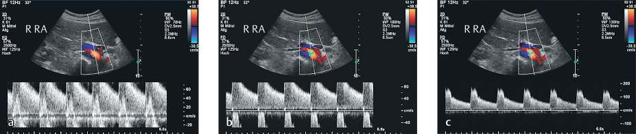
Fig. 1.27 Stented right renal artery. The color Doppler settings are the same for all three images. (a) In pulsed-wave (PW) Doppler, the systolic peak is cut off and displayed in the opposite flow direction. The velocity scale (90 cm/s, pulse repetition frequency [PRF]) is not properly adjusted for an accurate assessment of peak velocity. The systolic peak is wrapped around the other side of the baseline. While it can still be recognized as the peak systolic velocity, it cannot be measured. (b) Matching the PRF (velocity scale 120 cm/s) to the waveform distorts the display somewhat. The probable peak systolic flow velocity is within the range of the wall filter (dark zone around the baseline, 100 Hz). (c) When the PRF is raised further (velocity scale 3 m/s), the entire flow spectrum is correctly displayed and the waveform can be quantitatively analyzed.
An implicit assumption in the above discussions of aliasing is that we are concerned only with the magnitude of the Doppler shift. In reality, Doppler shifts of -1/2 fPRF through +1/2 fPRF can be measured without aliasing. Thus, the unambiguous range is 2x+1/2 fPRF = +1/2 fPRF. This means that the entire unambiguous range can be manually adjusted over the forward and reverse flow range by a kind of baseline shift. It should be emphasized that this does not really extend the maximum unambiguous range (▶ Fig. 1.28). It is possible, for example, to extend the forward flow component up to the full fPRF, but this is done at the expense of the reverse flow component, which can no longer be unambiguously displayed. To make this adjustment, however, the user must know beforehand that reverse flow is absent or unimportant in the vessel under study.
The PRF cannot be increased arbitrarily because the echo from the previous pulse must be received before the next pulse is transmitted. As a result, the PRF is dependent on the user-selected position of the Doppler gate. The deeper the sample volume, the lower the fPRF. A maximum possible PRF is available for each selected depth of the Doppler gate or color box. The PRF can be matched to the spectrum of interest (Fig. 1.29) while keeping below the maximum possible PRF. The maximum velocity that can be measured unambiguously is shown as a function of Doppler gate position and Doppler frequency (Fig. 1.30).
A final Doppler variation of interest is high-pulse-repetition-frequency (HPRF) Doppler. This is a special case of the pulsed Doppler technique in which the PRF is set higher than the maximum permissible level. This means that the depth of the Doppler gate is no longer unambiguous. For example, if the fPRF is twice as high as the permissible level for PW Doppler, a second gate will occur halfway between the Doppler gate and the transducer. The user cannot distinguish whether the Doppler data originate from the first or second gate because the signals arrive at the transducer simultaneously. If fPRF is increased even further, additional gates will appear. The advantage of this technique is that it expands the frequency range that can be displayed without aliasing. The disadvantage is the range ambiguity in locating the origin of the Doppler data.
Fig. 1.28 The pulse repetition frequency (PRF) provides a sensitivity control for detectable velocities. (a) The carotid artery (longitudinal scan) shows aliasing. The flow velocities across most of the vessel are encoded in blue, which would indicate flow toward the transducer according to the color bar. Aliasing occurs because the PRF (1.4 kHz) is set too low. Only the flow along the vessel walls (red) is correctly displayed. The darker shades of blue at the center of the vessel indicate higher velocities. (b) The apparent flow reversal is clearly depicted in a cross-sectional view of the artery. The cause of this artifact is aliasing. Due to the pressure gradient in the vessel, flow can occur in one direction only. The central blue area is an aliasing artifact. (c) Matching the PRF to the actual flow velocities (PRF 8.4 kHz) correctly displays the flow pattern along the carotid artery.
Fig. 1.29 Color duplex views of a hemodynamically significant stenosis in the external iliac artery. (a) Correct settings for color and pulsed-wave (PW) Doppler accurately display the flow characteristics in both modes. (b) Changing the pulse repetition frequency (PRF) in PW Doppler (velocity scale 250 cm/s) causes aliasing, and the peak systolic velocity cannot be measured. (c) With a correct spectral display in PW Doppler, lowering the PRF in color Doppler (to 3.5 kHz from 10.5 kHz in a and b) causes aliasing. The direct red-to-blue color reversals indicate aliasing, meaning that the PRF is set too low.
The basic components of an ultrasound system are shown diagrammatically in Fig. 1.39. Most processes in an ultrasound machine occur at an extremely high speed that precludes the complete and direct control of all processes, even when the most modern microprocessors are used. Consequently, each circuit board in the system works independently. Only certain tabular values or start/stop commands are relayed by the central processing unit (CPU) to the individual circuit boards. The CPU also performs the trivial computations displayed on the monitor (length, area, volume, etc.). Thus, the CPU functions in a relatively low-demand environment. In practical terms, even the simplest processors can be used. By contrast, most of the other circuit boards must perform at extremely high standards of speed and accuracy, especially when it comes to focusing, interpolation, image averaging, Doppler acquisitions, and control functions (transmit and receive control and [pixel] coordinate calculation). These functions require special processors that can perform only a few, precisely defined tasks but do it faster and more accurately than ordinary universal-type processors.
Generally, the transducers plug directly into the connector board, where the user can switch between the probes. All piezoelectric elements in the transducers are connected to switching and sequencing modules at this level.
The next device in the system, the multiplexer, delivers preamplified signals from the transducer elements to the transmit and receive focusing boards, which control the respective positions of the transmit and receive focus. In linear arrays and especially in curved arrays, all of the elements are never needed simultaneously for focusing. The number of elements that are used at maximum aperture defines the active channel count of the system as well as the number of individual delay channels on the focusing boards.
After focusing, signal summation, and other preprocessing functions (before image storage) such as edge enhancement and frequency filtering have been carried out, the next step—if the system has not already done so after signal preamplification—is analog-to-digital (A/D) conversion. Increasingly, more systems are performing A/D conversion prior to focusing. From a physical standpoint and in terms of "image quality," the dynamics of the B-mode and M-mode image are defined during A/D conversion.
经过聚焦、信号叠加以及其他一些预处理功能（如边缘增强和频率滤波）于图像存储之前完成之后，下一步——若系统尚未在信号预放大之后进行此操作——则是模数（A/D）转换。越来越多的系统选择在聚焦之前即进行 A/D 转换。从物理层面及“图像质量”角度而言，B 模式和 M 模式图像的动态特性在 A/D 转换过程中得以确立。
The coordinate calculator determines the accuracy of pixel interpolation and of image smoothing and averaging. Except in linear array transducers, coordinates are transformed from the polar coordinate system (R, θ) of the scan lines to Cartesian coordinates (x, y) on the monitor display. Image averaging is based on the time-weighting of the gray scale and color values of individual pixels.
Demodulation and acquisition of the Doppler signal from high-frequency echo sequences take place on the Doppler acquisition board. This board and the components that precede it must be extremely low-noise so that the full range of signal dynamics will be available for Doppler analysis. Some "fully digital" devices re-analogize the signal after focusing to facilitate Doppler signal processing.
Distance of Doppler gate from transducer (cm)多普勒取样门距探头的距离（cm）
Fig. 1.30 Maximum velocity that can be measured unambiguously as a function of Doppler gate position for a Doppler angle of 0 degree.图1.30 当多普勒角度为0°时，可无混叠测量的最大速度随多普勒取样门位置的变化关系。
After A/D conversion, the signal is relayed to the analysis unit that is appropriate for the selected mode (PW Doppler, color duplex, power Doppler). The result of spectral analysis is sent in digital form to the video board and analogized for transmission to the loudspeaker.
All of the imaging modes are recombined on the video board (graphics card). This device has a large memory where all B-mode and color duplex images and spectra are temporarily stored and processed for presentation. The values are sent to the monitor for display. All post-processing functions (after image storage) are executed on the video board.
所有成像模式均在视频板（显卡）上进行重组。该设备配备大容量存储器，可临时存储和处理所有 B 型（灰阶）图像与彩色多普勒双功图像及频谱，以便进行显示。数值被发送至显示器进行显示。所有后处理功能（图像存储之后）在视频板上执行。
1.7.1 Interpretation of Color Duplex Images1.7.1 彩色多普勒影像判读
A color duplex image has both gray scale and color components. The gray scale image is the ordinary B-mode image. It is useful for examining the structural properties of tissue. The light and dark areas characterize organs, blood vessels, and fluid-filled sacs like the urinary bladder and gallbladder. Structural changes such as cysts and solid masses can be recognized by their typical distribution of gray scale values.
Color encoding characterizes motion within the field of view. It is used mainly to investigate blood flow. The color-encoded image area is superimposed over the gray scale image. Either a color value or a gray scale value is assigned to each pixel. If motion is detected at a particular site in the image, the associated pixel is color-encoded and the gray scale value at that site is not displayed.
Each color-coded pixel represents the mean value of at least three samples of a local blood flow velocity calculated by the autocorrelation unit of the color-coded Duplex machine. The quality of the color-coded image depends on the number of samples the machine can take during one computing cycle. Another limitation is the spatial resolution of the ultrasound beam and the number of samples one scan line can contain. Most scanners encode blood flow velocity in shades of red and blue. The lighter the color shade, the higher is the mean blood flow velocity at one point on a scan line. One color represents flow toward the transducer, the other color flow away from the transducer. The color assignment is usually left to the operator and can be switched easily. The range of possible color values is displayed in a color reference bar. The maximum measurable color velocity without aliasing depends on the actual PRF chosen by the operator.
In addition to the two colors, red and blue, representing the mean flow velocity at one point, the autocorrelation as a statistical method provides one more parameter which is the variance (standard deviation) showing the difference of the blood flow velocity samples at one point, displayed typically in green color. The green pixels are considered as a measure of turbulence.
Assigning red to flow toward the transducer and blue to flow away from the transducer is a convention that can be reversed on any machine. The standard color assignment is often used because angiologists prefer red for arteries and blue for veins.
A power Doppler image displays the local intensity of the Doppler signal, generally without regard for direction. Blood flow in power Doppler is usually depicted in shades of red and orange. The brighter the color, the higher the signal intensity at that location in the image.
New developments in color Doppler and B-mode techniques are only adjuncts to the established techniques, supplying very little information that is new. They include power Doppler, color tissue Doppler, harmonic imaging, and real-time compound B-mode imaging. All color techniques are prone to aliasing and are angle-dependent, despite numerous claims to the contrary in the literature.
Harmonic imaging (also called “second-harmonic imaging” even though the first harmonic of the fundamental frequency is used) is based on the analysis of nonlinear harmonic components in the received ultrasound echoes. When an ultrasound pulse travels through a medium such as tissue or water, local compression of the medium occurs. The next portion of the sound wave “sees” a higher density of the medium than the initial portion. But sound has a higher velocity in a medium of higher density than in a medium of lower density. This has the effect of steepening the wave slope ( ▶ Fig. 1.31). The later portions of the sound pulse appear to “catch up” to the portions ahead. This process generates the higher harmonic frequencies.
The harmonic beam cross section illustrates how side lobes are reduced ( ▶ Fig. 1.32). Contrast and spatial resolution are better than at the fundamental frequency but poorer than that of a transducer with a twice-higher fundamental frequency.
Nonlinearity occurs when the waves propagate through tissue. The amplitude of the first harmonic is low in the near field. Beyond the focal zone, the intensity of the first harmonic falls more rapidly than would occur in a transducer with a fundamental frequency in that range. In other words, a true 4-MHz transducer has deeper penetration, better spatial resolution, and poorer contrast resolution when used at its fundamental frequency than a 2-MHz transducer would have when used for first-harmonic imaging.
When the returning sound is received, basically the same process occurs as during transmission. Because the intensity of the returned signal is significantly lower than that of the transmitted signal, only the linear case needs to be considered. There is no further significant increase in the wave slope.
A specific type of harmonic imaging is differential tissue harmonic imaging (DTHI). The transmitted pulse is electronically “shaped” to contain two frequency peaks, e.g., at 6 and 12 MHz in a transducer with a bandwidth of 6 to 12 MHz. Two pulses (the second pulse is phase-inverted) are transmitted along the same beam line. The transducer bandwidth is fully utilized in the received spectrum because the received signal contains both, the basic frequency of 6 MHz and its first harmonic frequency of 12 MHz and the differential frequency of the two transmitted frequencies, 12 MHz - 6 MHz = 6 MHz (▶ Fig. 1.33). This results in a better signal-to-noise ratio in the gray scale image.
The process underlying this technique follows the Khokhlov-Zabolotskaya equation for the propagation of sound waves in viscous media.
该技术的基本过程遵循描述声波在黏性介质中传播的霍赫洛夫-扎博洛茨卡娅方程。
The simultaneous transformation of two frequencies can be described mathematically:
两个频率的同步转换可以用数学方式描述：
arrayrc(∂)/(∂ t)\(s i nω₁t+s i nω₂t)²\=s i n2ω₁t-2s i n(ω₂-ω₁)t\ +2s i n(ω₂+ω₁)t+s i n2ω₂tarray(1.18)
where ω=2π t (angular frequency). The frequency components 2ω1 and ω2-ω1 contribute to the result. The transducer bandwidth is optimally utilized for transmitting and receiving.
The use of ultrasound contrast agents increases the total signal intensity owing to the more favorable scattering properties of the contrast agent relative to the blood-tissue milieu. The elastic properties of the administered microbubbles (less than 5 μm in diameter) cause them to vibrate in the resonance range when excited at approximately 1.7 MHz. They produce harmonic frequencies, which the tissue itself does not generate at the low power settings used in this technique. The signal intensity in the first harmonic range is high enough to distinguish from background noise. Stationary echoes at the fundamental frequency continue to be eliminated because the higher-intensity signals in the first harmonic range can only originate from the contrast agent. This avoids the signal intensity losses that result from the elimination of stationary echoes.
The flow of ultrasound contrast agent in the blood can be traced with modified THI settings. Through phase inversion using a two-pulse technique, the fundamental frequencies cancel out when the two received signals are added together, leaving only the harmonic signals.
Fig. 1.31 Harmonic imaging—progressive wave distortion. The sound wave undergoes distortion as it propagates in the tissue. The wave travels slightly faster at sites of high pressure and slightly slower at sites of negative pressure, causing the waveform to become steeper. This process generates harmonics (integral multiples) of the fundamental transmitted frequency.
Fig. 1.32 Harmonic imaging. The beam cross section of the harmonic components is more concentrated around the acoustic axis compared with the fundamental beam cross section, and the amplitude of the side lobes is significantly smaller. This results in higher axial resolution and increased contrast.
The ultrasound contrast agent consists of gas microbubbles encapsulated in an elastic peptide shell. The microbubbles are less than 5 µm in diameter. Their minute size and encapsulation allow for multiple circulatory passes through the lung. Blood plasma is approximately 1,000 times denser than the gas, and it is less compressible by approximately 6 orders of magnitude. As a result, the microbubbles have a scattering cross section at 3 MHz that is approximately 109 times greater than that of red blood cells, 6 and the first harmonic of the fundamental frequency is detectable above background noise.
Contrast-enhanced sonography is well established in vascular and tumor imaging, despite its rigorous technological requirements. There is also a learning curve for examiners who must interpret real-time images or stored sequences rather than a static image. Contrast-enhanced scans can completely depict the phases of hepatic perfusion, for example, to a degree that cannot be accomplished with other techniques.
If the transmit power setting is raised, the microbubbles are increasingly destroyed because their shell and gas contents cannot tolerate the greater pressure amplitudes. The bubbles burst, and the gas is dissolved in the blood and eliminated by respiration. There is an examination window of approximately 10 minutes in which the microbubbles continue to produce contrast enhancement. Spatial resolution is dramatically increased with this technique, and vascularity is demarcated in exceptionally high detail.
The experienced examiner can draw clear diagnostic conclusions based on observations of enhancement dynamics and vascular architecture ( ▶ Fig. 1.34).
经验丰富的检查者可根据对强化动态及血管结构的观察得出明确的诊断结论（▶ 图 1.34）。
1.8.2 Tissue Doppler1.8.2 组织多普勒
Tissue Doppler is an ultrasound technique that encodes tissue motion, especially myocardial motion, instead of
组织多普勒是一种超声技术，它对组织运动（特别是心肌运动）进行编码，而不是
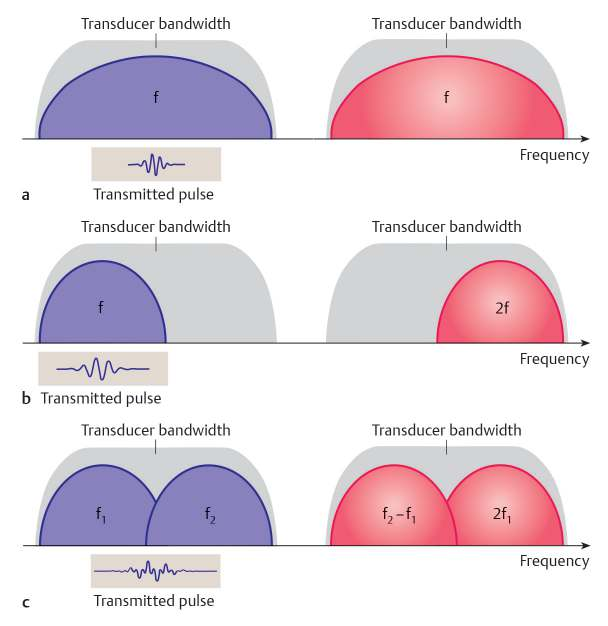
Fig. 1.33 A special type of harmonic imaging is differential tissue harmonic imaging (DTHI). Through proper selection of the two initial frequencies contained in the transmitted signal, the bandwidth of the transducer is optimally utilized and image quality is improved. (a) Fundamental. (b) Tissue harmonic imaging. (c) DTHI.
Fig. 1.34 Microbubbles are used to increase backscatter from the vessels to obtain reliable information on organ perfusion. The mass in the liver is hepatocellular carcinoma. The feeding artery and exclusive arterial perfusion of the tumor are clearly apparent before the normal liver tissue is perfused.
flowing blood. Rather than analyzing low-amplitude echoes from blood for their Doppler frequency shift, this technique analyzes the higher-amplitude echoes generated by moving solid tissue. Frequency analysis of the signals is similar to that used in other color duplex techniques. For the image display, the moving tissue is color-encoded for the direction and velocity of its motion. Doppler signals are not returned from blood-filled spaces, as they are approximately 1,000 times weaker than the tissue signals ( P Fig. 1.35).
Power Doppler can detect the faintest Doppler signals owing to its long acquisition times (many pulses per scan line) and very low PRF. This technique color-encodes the intensity of the Doppler signals (Fig. 1.3c). The brightness of the color pixels is proportional to the Doppler signal intensity. This differs from CDS, in which the colors represent flow velocity and direction. The advantage of power Doppler lies in the use of extremely low pulse repetition frequencies in the order of a few 100 Hz. This makes it possible to resolve extremely low Doppler shifts and flow velocities. If desired, directional information can be added to the normally unidirectional intensity display (bidirectional power Doppler).
This technique detects the presence of flow; it is qualitative rather than quantitative. It cannot even provide meaningful relative information. It can only determine whether flow is present or absent. Basically, anything that is moving relative to the transducer is detected and displayed as a Doppler signal, so artifacts are common (▶ Fig. 1.36).
The original compound scan technique was used in the 1970s and early 1980s. It employed a pencil-shaped
原始复合扫描技术于20世纪70年代和80年代初使用。
probe that was connected to an articulated x-y position sensor and was manually translated over the subject's body. The z-axis was defined by scan depth. Each acquisition from a manual transducer sweep corresponded to one scan line. The individual scan lines were successively displayed on a monitor. The width of the final composite image represented the path along which the probe was translated over the patient. This technique can be described as a manual but static B-mode technique.
一个探头连接于关节式 x-y 位置传感器，并在受检者体表进行手动扫查。z 轴由扫描深度定义。手动扫查探头时，每一次采集对应一条扫描线。各扫描线依次在显示器上显示。最终合成图像的宽度代表探头在患者体表扫查的路径。该技术可描述为一种手动但静态的 B 型超声成像技术。
In the latest version, a transducer is still moved manually over the patient. But unlike the earlier technique, the examiner now uses an electronic (linear or curved array) transducer, which produces a standard B-mode or color duplex image. The system includes a high-speed computer that continuously compares the current real-time image
Fig. 1.35 Tissue Doppler echocardiography. This technique employs the Doppler effect to display tissue motion. The Doppler effect from blood flow is filtered out to enable wall-motion analysis. The temporal progression of individual user-selected segments indicates the mobility of the corresponding wall regions. This technique supplies reliable data when the myocardial segment is scanned at a small (<20 degrees) Doppler angle. For wall segments with an unfavorable Doppler angle (e.g., the apex with an apical probe position), the error is large and the data cannot be analyzed.
Fig. 1.36 Power Doppler is very sensitive but highly susceptible to artifacts. Even the smallest movements during signal acquisition create a Doppler effect that is evident during analysis. Respiratory motion of the diaphragm in power Doppler creates artifacts that mimic blood flow through the diaphragm. (With kind permission of Prof. W. Wermke.)
图 1.36 能量多普勒灵敏度极高，但极易产生伪像。即使在信号采集过程中出现的最细微的移动，也会产生在分析时显现的多普勒效应。呼吸运动造成的膈肌移动在能量多普勒中形成的伪像，会酷似血流穿过膈肌的表现。（经 W. Wermke 教授惠允引用。）
content with previous frames. As the user moves the transducer along the image plane, the computer determines that certain structures are encountered along different scan lines than in a previous image.
随着用户在图像平面上移动探头，计算机会判定某些结构出现在与先前图像不同的扫描线上。
For example, when the transducer is moved to the right during ordinary real-time imaging, new structures are added on the right side of the image while structures on the left side that were present in the previous image disappear from the frame. Meanwhile, other structures from previous images that are still within the current field of view are shifted to the left. But when real-time compound B-mode is enabled, the field of view is extended: new structures are added to the right side of the image without overwriting structures that are no longer in the current field or have shifted to a new position. Because the total screen area of the monitor is constant, this can continue until the edge of the screen is reached. At that point, the image size must be reduced, keeping it to scale, to make room for new structures that successively appear during the transducer sweep. This makes it possible to display the entire upper abdomen, for example, or the extended course of a blood vessel in one continuous, panoramic image (Fig. 1.37).
Through the use of special algorithms, the anatomic region of interest can be scanned not just in a perpendicular direction but also from various directions by angling the beam to the left and right. The region of interest is interrogated "from multiple sides." The individual images are processed and combined by software to form a compound image, which is displayed. This reduces noise and minimizes some artifacts. The number of compounding steps is adjustable and should definitely be varied when the function is enabled. Examiner should be aware that
known dorsal artifacts like shadowing or acoustic brightening due to cystic lesions are reduced.
由囊性病变引起的背侧伪影（如声影或声增强）有所减轻。
1.8.6 Elastography1.8.6 弹性成像
Different tissues have different elastic properties. It is generally assumed that tumor tissue is harder than surrounding healthy tissue. It is a logical step, then, to measure the elastic properties of tissue with ultrasound. Gray scale imaging depicts the density of tissue, not its elastic properties, so it is reasonable to expect that elastography will provide an information gain.
Historically, classic palpation is the forerunner of modern ultrasound elastographic techniques. The sonographer controls the amount of transducer pressure that is exerted on the underlying tissue, and the change between pressure application and release can be detected sonographically. Soft tissue is more compressible than harder tissue. Special software can be used to analyze tissue compressibility in the beam path in response to alternating compression/decompression and superimpose this colore-encoded data over the B-mode image. This technique, also known as transient elastography, yields qualitative results based on a comparison of normally elastic tissue with pathologically altered tissue. This imaging method is based on changes in the compression modulus.
Other methods are based on determination of the elastic modulus by the measurement of shear-wave velocities. Shear waves are formed when the deflection of the particles (atoms, molecules, cells) in the path of the sound wave is so great that their elastic up-and-down motion is transmitted to adjacent structures. Initiation of this effect requires a strongly focused, high-energy ultrasound pulse. A shear wave (transverse wave) is generated that spreads perpendicular to the beam. When a high frame rate is used, later images will show a characteristic pattern lateral to the initiating beam line, making it possible to determine the propagation velocity of the shear wave. Shear-wave velocity correlates physically with elastic modulus. A high frame rate (up to 5,000 fps) is essential because the shear waves are very strongly attenuated and thus have only a short range in the lateral direction. Imaging the elasticity differences in tissue with shear waves is qualitatively superior to transient elastography; the technical challenges are very high. Shear-wave elastography provides direct quantitative values for the shear-wave velocity and elastic modulus, which can then be compared with normal values to make a diagnosis.
First, these techniques were used in diagnosing tumors of the breast (Fig. 1.38), thyroid gland, prostate, and other superficial structures. 11-13 In hepatology elastographic measurements are helpful for grading the severity of hepatic fibrosis. 14-16 Guidelines concerning influencing factors, standardization, and quality control are updated by European Federation of Societies for Ultrasound in Medicine and Biology (EFSUMB) and by the Quantitative Imaging Biomarkers Alliance (QiBA)-group of Radiological Society of North America (RSNA). 17,18
Fig. 1.37 Panoramic image produced by moving the transducer over a region of interest (here, the breast) that is larger than the transducer aperture. Correlation determines how the individual frames are interleaved to produce an extended field of view. This image clearly depicts the size and location of a cyst within the breast. This technique can also be used with color duplex imaging.
Further indications are early detection of transplant rejection, especially in renal allografts.
其他适应证还包括早期发现移植排斥反应，尤其是肾同种异体移植。
It is reasonable to expect that shear-wave elastography will have applications in vascular imaging. As the technology is refined, it should be possible to display the elastic properties of the artery wall with greater accuracy, enabling the early detection of structural changes.
As discussed in chapter "Elastography," a large number of frames is necessary to detect shear waves. If the technology is present and integrated in ultrasound systems new opportunities are present: by recording all received data and stored transient in a data storage, one can do B-mode imaging, A-mode imaging, and PW- and color Doppler from any position in the B-mode image; elastography imaging is also possible, all offline. The received data can be processed in any kind of imaging modality. Three-dimensional and 4D imaging can be available offline.
Traditional technique used spherical waves and the principle of synthetic aperture imaging (SAI) for frame reconstruction (Fig. 1.39). The next step was to transmit nearly flat waves from a group of transducer elements. Meanwhile, the technology is improving: a whole number of transducer elements transmit a sound pulse at the same time—a plane wave is passed into the tissue. In all transducer elements receiving the echo from the tissue, parallel processing is necessary (Fig. 1.40). For a given depth of 15 cm of ultrasound image, the transit time for the plane wave (forth and back–30 cm) will be around 200 μs. Theoretically, up to 5,000 frames per second are available. High computing power is needed to process all these data as real-time imaging. Most common methods to get images with plane waves is called "delay and sum" (Fig. 1.41). For every image point the received signals from each transducer element will be delayed and sum to be in phase.
The whole data for a number of plane wave images are stored so that the data can be processed to get a gray scale image, a M-mode scan of one or more lines, PW- and Color-Doppler, and elastography images at the same time.
多个平面波图像的全部数据被存储，以便对这些数据进行处理，同时获取灰阶图像、单个或多个扫描线的 M 型扫描、频谱多普勒（PW）和彩色多普勒图像以及弹性成像图像。
Combining plane wave imaging with spatial compounding, the quality of gray scale images is becoming the same as with traditional methods.
将平面波成像与空间复合成像相结合，灰阶图像的质量已可达到与传统方法相当的水平。
Fig. 1.38 Comparison of tumor imaging by B-mode ultrasound, color duplex, power Doppler, and elastography. (a) Gray scale image depicts the reflection and scattering of ultrasound waves. The tumor appears hypoechoic with irregular margins. (b) Color duplex scan: blood flow signals are superimposed over the gray scale image. (c) Power Doppler: flow signals are superimposed over the gray scale image. (d) Elastography encodes shear-wave velocities in various colors. Red means stiff. The tumor mass is clearly delineated from normal surrounding tissue. The shear-wave velocity can be directly determined at selected points. It is 1.6 m/s in normal tissue. Values from 3.9 to 4.4 m/s are measured within the tumor. Higher shear-wave velocities are suggestive of "hard" tissue.
Fig. 1.39 Traditional technology uses spherical waves and synthetic aperture imaging (SAI) to reconstruct a gray scale ultrasound image. The number of frames per second depends on the number of pulses to calculate an image. Using a number of transducer elements to transmit an unfocused sound beam increases the frame rate but the computing power has to be increased a lot. In modern systems working with plane wave imaging, all of the transducer elements transmit a sound pulse at the same time and all the elements receive the echoes. With a high computing power, up to 5,000 images will be reconstructed for up to a depth of 15 cm penetration. It is possible to calculate not only gray scale images, but also pulsed-wave (PW) and Color Doppler as well as shear wave images at the same time (multimodality imaging).
图 1.39 传统技术采用球面波与合成孔径成像（SAI）来重建灰阶超声图像。每秒帧数取决于计算一幅图像所需的脉冲数。利用多个换能器单元发射非聚焦声束可提高帧率，但计算量会大幅增加。在采用平面波成像的现代系统中，所有换能器单元同时发射声脉冲，且所有单元均接收回波。凭借强大的计算能力，可在 15 cm 穿透深度内重建多达 5,000 幅图像。系统不仅可计算灰阶图像，还能同步计算脉冲多普勒（PW）、彩色多普勒及剪切波图像（多模态成像）。
Delay and sum延时叠加
Point reflector
35 mm away from the central transducer element点反射体
距中央换能器元件 mm
Fig. 1.40 Plane wave imaging uses a lot of computing power to be a real-time imaging process. The most common method to add all the signals for each imaging point is called "delay and sum." As shown here, the time delay for every transducer element and every image point position has to be adjusted to get a real image, comparable to well-known technology.
To handle these data, graphics processing units (GPUs) will be used. In that way it is possible to have a storage capacity to calculate offline Doppler images, measuring shear wave velocities, to present in 3D and 4D.图 1.40 平面波成像需要大量计算能力才能实现实时成像。为每个成像点叠加所有信号的最常用方法称为“延时叠加”。如图所示，必须对每个换能器元件和每个成像点位置的时间延迟进行调整，才能获得与成熟技术相媲美的真实图像。为了处理这些数据，将使用图形处理器（GPU）。通过这种方式，可以拥有足够的存储容量来离线计算多普勒成像、测量剪切波速度，并以 3D 和 4D 形式呈现。
Plane wave imaging平面波成像
2D linear transducer
二维线阵探头
All elements of the transducer are active for each single image - transmit and receive.
在每张单一图像中，换能器的所有元件均处于活动状态——既用于发射，也用于接收。
The resulting image is the sum of multiple firings to get more contrast and better resolution.
所得图像为多次激发叠加所得，以增强对比度并提高分辨率。
Software is necessary to calculate the final image.
软件是计算最终图像所必需的。
1.9 Documentation1.9 文档记录
The use of standard computer technology in modern ultrasound machines has greatly expanded our ability to document examinations in digital form. The internal hard drive of the imaging device provides a convenient medium for the primary storage of individual images and video sequences.
Manufacturers of diagnostic imaging equipment have agreed upon a protocol for image and data exchange. This protocol is constantly being refined and updated to meet current requirements. Digital Imaging and Communications in Medicine (DICOM) 35 is the standard for the storage, transmission, and display of medical images. The DICOM standard ensures that all imaging data are readable by other, external computers. The stored image data include calibration information that allows valid secondary measurements to be taken from stored images. Normally, the DICOM tags are standardized. Problems can occur especially in ultrasound data containing CDS, contrast-enhanced ultrasound (CEUS), and elastography due to nonstandardized private DICOM tags that should be communicated with the picture archiving and communication system (PACS) provider.
Other essential data on the patient, examiner, and machine are stored so that image data can be uniquely identified. This ensures a high degree of conformance with legal requirements. The stored data files are originals, and any changes are traceable and transparent. Thus, the operator should perform digital preprocessing by optimally adjusting the ultrasound image on the monitor before the image is stored.
Data are exported from the ultrasound machine to an external computer by means of a data network or storage medium. It can be helpful to install an archiving and reporting system on the external computer. These systems function with a data base that allows for rapid navigation and permits the reporting of findings along with images and measured values. The measured values are not necessarily part of the DICOM data transmission, so a means should be available for transferring measurements digitally from the ultrasound machine to the reporting system. The desired values should be integrated into the report in a simple manner.
Fig. 1.41 Ultrafast imaging with frame rates of more than 1,000 frames per second suffering under loss of contrast and spatial resolution. To avoid this kind of image quality problems, spatial compounding of plane wave images from different angles is necessary. The overall image quality is getting better and the contrast resolution has increased using spatial compounding. Computing power is needed to get high image quality in very fast time.
The storage of image sequences is essential for studying dynamic processes especially in CEUS. Dimensional changes in structures during movement and the visualization of blood flow are helpful in the diagnosis and clinical demonstration of pathologic processes. The external reporting system can also assume this task. Image data transfer is machine-dependent and may occur by a direct digital route, or the video signal may be digitized by the ultrasound machine. Exporting images and video sequences from the machine in a data format that is readable by a presentation software has become the standard practice. Archiving programs also have this functionality and often include options for labeling, marking, and image processing.
2 Ultrasound Device Settings, Examination Technique, and Artifacts2 超声设备设置、检查技术与伪像
Reinhard Kubale, Hans-Peter Weskott
Reinhard Kubale，Hans-Peter Weskott
2.1 Introduction2.1 引言
Color flow imaging (CFI) combines the pulse-echo technique of B-mode imaging with the capabilities of functional evaluation by Doppler ultrasound. Other techniques such as power Doppler, B-flow imaging, and contrast-enhanced ultrasound have broadened the range of diagnostic capabilities. Each of these procedures has special technical and equipment characteristics that must be matched to the organ or vascular region of interest and to the clinical question that the study is intended to address.
Usually, the first step in an ultrasound examination is to obtain an optimum B-mode image. Then the desired technique for flow imaging is selected:
通常，超声检查的第一步是获得最佳的B型图像。然后选择所需的血流成像技术：
- Generally, it is best to start with color flow. Doppler spectra can then be selectively sampled depending on the clinical question and findings.
一般来说，最好先使用彩色血流成像，然后根据临床问题和发现有选择性地采集多普勒频谱。
- Power Doppler (power mode, energy mode) can help to detect weak signals in examinations of the kidneys or tumor blood flow.
- 能量多普勒（能量模式、能量模式）有助于在肾脏或肿瘤血流检查中检测微弱信号。
- B-flow is calculated from the whole US image, a “color” box is not needed. Advantages are high special and time resolution, less artifacts, like blooming or aliasing. Due to the subtraction technique, stationary echoes are eliminated, strong moving echoes like bowel gas or swirling of tissue due to a high-grade stenosis that may cause typical, time dependent artifacts.
- Depending on the number of scatters and their velocity, CFI can only image vascularization whereas US contrast agent can image the perfusion and is thus much more sensitive compared to all the other CFI techniques.
This chapter will deal with operator-controlled parameters that are most important for the optimum utilization of various sonographic techniques, the analysis of flow information, and the identification of artifacts.
本章将讨论操作者可控参数，这些参数对于优化使用各种超声技术、分析血流信息以及识别伪影最为重要。
2.2 Transducer Selection and Instrument Settings2.2 换能器选择与仪器设置
2.2.1 Prerequisites2.2.1 先决条件
The basis for all techniques is B-mode ultrasound, which can provide a detailed morphologic depiction of the vessel wall and lumen by virtue of increasingly higher resolution and frame rates. The echoes displayed in the ultrasound image are generated by reflections at interfaces between tissues with different acoustic impedance. If the resistance to sound transmission is low, the acoustic energy will have sufficient penetration for imaging tissues at deeper levels. If large impedance differences are encountered at interfaces such as tissue-air or tissue-bone, almost all of the sound energy will be reflected and deeper objects will not be visualized.
所有技术的基础都是 B 型超声，其凭借不断提高的分辨率和帧率，能够详细呈现血管壁和管腔的形态学特征。超声图像中所显示的回声，是由声阻抗不同的组织界面反射所产生的。如果对声波传播的阻力较低，声学能量便能充分穿透，从而对较深层的组织进行成像。但如果遇到像组织-空气或组织-骨骼这样声阻抗差异较大的界面，几乎所有的声能都会被反射，深部结构将无法显示。
Reflection is an angle-dependent process. For example, when the beam strikes the vessel wall at a 90 degrees angle, that portion of the wall will appear brighter and thicker than the rest of the wall, an effect known as blooming artifact, which is an important artifact and should always be considered in CFI. When the beam strikes an interface at angles other than 90 degrees, only a portion of the wave energy will be returned to the transducer.
When the sound wave strikes a reflective or rough interface that are small relative to the incident wavelength, a great many randomly directed echoes are generated due to a process called scattering. In addition to losses caused by reflection and scattering, some of the sound energy is absorbed in a frequency-dependent fashion due to frictional and relaxation forces in the medium. As a result, the sound pressure declines, but is under normal tissue conditions. The estimated loss will be automatically compensated depending on the depth of the organ or ROI. The degree of this amplitude loss, called attenuation, depends on the distance traveled, the transmission frequency, and patient-specific, sound-conduction properties.
The selection of a transducer depends on the clinical question and the anatomic region of interest. The main types of transducer are linear arrays, curved arrays, and phased arrays. The main criteria for selecting a particular type are the necessary field-of-view width, penetration depth, and desired spatial resolution. The selection of transducer frequency is a tradeoff between the required resolution and necessary penetration depth.
If a large near-field width of view is desired, say for scanning the carotid artery or limb arteries, the best choice would be a linear-array transducer, also called a linear array (see Chapter 7.2.1.3, 7.2.2.3, and 7.3.3).
Linear arrays are available with various types of dynamic focusing or mechanical focusing with acoustic lenses (e.g., Hanafy lens). Matrix arrays are also available and are selected according to desired imaging depth, geometric resolution, and tissue-contrast resolution (Fig. 2.1).
The curved-array transducer (curved array) combines high near-field resolution with a wider far field of view than that of a linear array (▶ Fig. 2.2). It provides the best compromise for abdominal imaging (Chapter 11, Chapter 12, and Chapter 14) and for certain examinations of peripheral veins in the thigh or calf.
A phased-array transducer (phased array) has a very small footprint that is excellent for scanning through a small acoustic window as in echocardiography, transcranial Doppler ultrasound, and scanning of the renal arteries through a lateral intercostal approach. Newer scanners have a trapezoidal mode that increases the width of the far field, similar to a curved array, while maintaining good near-field resolution.
The band width of the transmitted frequencies depends on the transducer. It correlates with the spatial resolution from near to far field. The greater the width of frequencies, the better the near field resolution will be and vice versa. High transducer frequencies are best for the high-resolution imaging of superficial structures such as lymph nodes, thyroid gland, and breast (9–24 MHz) and for supra-aortic arteries (7–14 MHz). Transducer frequencies in the 1 to 8 MHz range perform best for intra-abdominal imaging, depending on the desired penetration and imaging technique.
2.2.4 Optimizing the Image with Operator-Controlled Settings2.2.4 通过操作者控制参数优化图像
B-ModeB 型超声模式
First a normal-appearing area is imaged within the anatomic region of interest, depending on the specific application. The acoustic output (=power). In plane wave imaging a focal point(s) are no longer needed. Focussing is managed on the receiving side. For abdominal imaging, these settings can be adjusted in a longitudinal scan of the hepatic left
lobe and aorta or in a subcostal transverse scan through the liver (▶ Fig. 2.2). The initial power setting should be as low as possible. Then the TGC control is adjusted to obtain a balanced image. If this does not give adequate visualization of all tissue areas, the power setting should be increased.
Vessel lumina should appear hypoechoic or echo-free, and the intima-media layer should be well defined in examinations of the carotid artery and limb arteries (▶ Fig. 2.1). Speckle noise can be reduced by tissue harmonic imaging (THI), by compound imaging based on scanning at multiple angles (spatial compounding, marketed as SonoCT, SieClear, and XBeam), or by scanning at different frequencies (frequency compounding) in order to improve image quality (▶ Fig. 2.3).
Other settings such as dynamic range, the summation of old and new information (persistence, frame averaging), and postprocessing algorithms such as edge enhancement
其他设置例如动态范围、旧信息与新信息的叠加（持续显示、帧平均），以及后处理算法（例如边缘增强）
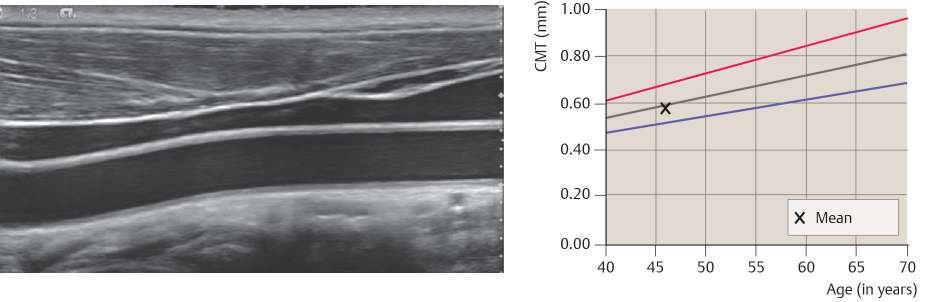
Fig. 2.1 High-resolution linear array. Longitudinal scan of the common carotid artery from the lateral side of the neck. The image clearly depicts the intima-media layer in the near and far vessel walls, permitting an accurate measurement of carotid intima-media thickness (CIMT).图2.1 高频线阵探头。自颈部外侧对颈总动脉行纵切扫查。图像清晰显示血管前后壁的内-中膜层，可对颈动脉内-中膜厚度（CIMT）进行精确测量。
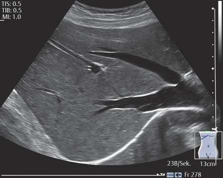
Fig. 2.2 Curved array with an optimized B-mode image (liver parenchyma with hepatic veins). The parenchyma shows uniform echogenicity with increasing depth in this subcostal oblique scan. The hepatic veins and diaphragm are sharply defined.
图 2.2 配有经过优化的 B 型图像的弧形阵列探头（肝实质伴肝静脉）。在此肋下斜扫切面中，肝实质随深度增加呈均匀回声。肝静脉与膈肌显示清晰。
and changes in the gray scale curve should be saved as standard presets so that comparable images can be obtained in follow-up examinations (e.g., of tumors or changes in liver pattern during chemotherapy). For vascular imaging, it is generally best to obtain grainy images with low persistence and a lower dynamic range. The principal operator-controlled parameters are reviewed in Table 2.1.
Flow imaging techniques can be chosen either as continuous wave (= one dimensional performed with a pencil probe), pulsed wave (PW) Doppler including spectral analysis or two-dimensional techniques that can detect motion simultaneously in a great many spatially distributed volume elements and display that information in a two-dimensional sectional image (Chapter 1). While spectral Doppler plots the changes in velocity over time that are measured at one sampling site, CFI and power Doppler analyze the flow velocities or number of moving
Fig. 2.3 Artifact suppression by tissue harmonic imaging (THI). Longitudinal scan through the common carotid artery shows generalized wall thickening due to vasculitis. The image on the left, acquired in the fundamental mode, shows significant scattering and speckle artifacts. In the image on the right, acquired in THI mode, the wall changes are sharply delineated with almost no artifacts.
Table 2.1 Operator-controlled parameters for continuous-wave (CW)/pulsed-wave (PW) Doppler sonography (DS) and color flow imaging (CFI): Recommended settings表 2.1 连续波 (CW)/脉冲波 (PW) 多普勒超声 (DS) 及彩色血流成像 (CFI) 的操作者可控参数：推荐设置
Parameters
Settings, problems, and optimization
Duplex
CFI
Power output
The necessary power output depends on the examination conditions (sound absorption) and imaging depth. The power setting for obstetric ultrasound should be as low as possible.
+
+
Gain
The gain setting should be adjusted to obtain a clear spectrum with little noise. A normal vascular segment should be completely filled with color, and there should be no extraluminal color bleed or superimposed color noise.
+
+
Pulse repetition frequency (PRF), velocity scale
Adjust so that the range of measurable frequencies is optimally utilized. A PRF of approximately 1,000 Hz is best for imaging veins; the optimal range for arteries is between 1,500 and 3,000 Hz. If aliasing occurs, the PRF can be increased or, with deep intra-abdominal scans, the beam (Doppler) angle can be selectively increased. The operating frequency can also be decreased if necessary, as lower frequencies are less susceptible to aliasing at high velocities.
+
+ (lower than in DS)
Baseline shift
Adjust so that the range of measurable frequencies is optimally utilized. Shifting the baseline up or down can help with aliasing. Approximately two-thirds of the velocity scale should be reserved for maximum velocity in the main flow direction.
+
+
Wall and flash artifact filters
Filters reduce troublesome wall pulsations and motion artifacts, but may cause low velocities to be missed (recommended: 50–200 Hz for arteries, <100 Hz for veins). Enabling other filters such as motion and flash-artifact filters may reduce sensitivity, especially for detecting slow flow. This is important for detection of brief reverse flow in the vertebral artery or slow flow in the portal vein (e.g., due to hepatic cirrhosis).
+
+
Write priority, color priority
Postprocessing function is to ensure that color will overwrite the B-mode image. If color priority is set too low relative to gray scale data, flow information may be suppressed. The color balance or write priority should be set for minimal gray scale priority in very noisy images or when looking for sites of thrombosis.
-
+
Line density for B-mode/color flow (spatial resolution)
Improves lateral resolution of the B-mode image or color display at the expense of frame rate (lower color frame rate). Line density should be reduced for the detection of rapid motion (e.g., fetal heart) or high velocities.
-
+
(Continued)
（续）
scatterers at a great many sampling sites distributed over all or part of the sectional image:
在全部或部分层面图像上分布于大量采样点的散射体：
- CFI calculates the frequency-weighted modal frequency shift or mean velocity per volume element (Chapter 1). The results of this computation are color-coded and superimposed over the B-mode image. The colors—usually red and blue—indicate flow direction relative to the transducer. Brightness levels indicate the magnitude of the Doppler frequency shift or, when the beam-vessel angle is known, the flow velocity. Additionally, the variance of the frequency shift can be calculated as an indicator of possible turbulence. Variance may be shown as a separate parameter but is usually added to the flow information as green pixels when turbulence mode is enabled.
CFI 计算频率加权的模态频移或每个体积单元的平均速度（第 1 章）。计算结果以颜色编码，并叠加于 B 型图像之上。颜色（通常为红色和蓝色）表示相对于探头的血流方向。亮度水平表示多普勒频移的大小，或者在已知声束-血管夹角的情况下，表示血流速度。此外，频移的方差可以作为湍流可能性的指标加以计算。方差可作为独立参数单独显示，但在启用湍流模式时，通常以绿色像素叠加于血流信息之上。
- In power Doppler (energy mode, power mode), the intensity of the signal from moving blood cells is usually encoded in varying shades of color. Some machines can add color-coded directional information (bidirectional power Doppler).
- B-flow imaging is a non-Doppler technique in which the change in the location of blood cells is determined from two or four encoded pulses that are successively transmitted along each scan line. The returning echo signals are subtracted from each other. Pixel brightness depends on the number of moving blood cells and, to a degree, on their velocity. Stationary tissue echoes may be completely discarded from the image or may be displayed faintly in the B-flow image for better anatomic orientation.
CW/PW Doppler with Spectral Analysis and CFI连续波/脉冲波多普勒频谱分析与彩色多普勒成像
Criteria for a high-quality color duplex image are homogeneous color filling of the vessel in at least one phase of
高质量彩色双工图像的标准是血管在至少一个心动周期内呈现均匀的彩色充盈。
flow, clear delineation of the vessel wall, plaque not overwritten by color, and an uncluttered spectrum with a clear spectral window (e.g., during systole in a large, nonstenosed artery; Fig. 2.4). The most important parameters for scan optimization are as follows:
Determines the number of pulses that are transmitted in each scan line of color flow information or, in autocorrelation techniques, the number of acoustic lines. A high ensemble length improves signal-to-noise ratio and sensitivity. Disadvantage: slower frame rate.
-
+
Persistence (frame average)
Determines how long color flow information stays on the screen before new information is displayed. Higher persistence means that more old information is added. Time-averaging the color pixel values can provide better vessel fill-in but reduces the frame rate. Higher persistence makes it more difficult to appreciate flow dynamics.
-
+
Spatial averaging
One- or two-dimensional filtering of the color image based on surrounding color pixels or flow information. Reduces color noise. Does not affect frame rate but may sacrifice visualization of very small velocity scale.
-
+
Every machine has its strengths and weaknesses, so general recommendations cannot be made. The settings should be appropriate for the scanning depth, clinical question, and especially for the anticipated flow velocity.
Fig. 2.4 Normal-appearing common carotid artery with all settings optimized. Criteria for evaluating the quality of the examination are: accurate display of color information in the vessel lumen with no extraluminal color bleed or aliasing, complete vessel fill-in in at least one flow phase, a Doppler spectrum free of noise and aliasing, and a clear spectral window at the normal site.
Doppler techniques (CW and PW Doppler with spectral analysis).
多普勒技术（连续波多普勒与脉冲波多普勒频谱分析）。
The power output and color gain for signal reception should initially be increased until color noise appears. Then the color gain is decreased until a normal vascular segment shows no extraluminal overflow of color signals. Setting the color gain too low causes loss of color sensitivity (Fig. 2.5). Setting it too high fills the vessel lumen with color but also causes extraluminal color bleed with a decrease in resolution and slice thickness! This can cause the overwriting of possible hypoechoic wall changes. For example, tubes 1 mm in diameter may show inflow signals of up to 4 to 6 mm lateral to the transducer long axis, depending on the power setting and focal position. Vessel diameter is overestimated when viewed in cross section, and hypoechoic thrombi and wall changes may be overwritten. For this reason, classic compression sonography is still superior to CFI for the detection of thrombi in peripheral veins.
彩色多普勒的输出功率和彩色增益在开始时应逐步调高，直至出现彩色噪声；然后再降低彩色增益，直至正常的血管段不出现腔外彩色溢出。彩色增益设置过低会导致彩色敏感性下降（图 2.5）；设置过高则会使血管腔内充满彩色信号，并引起腔外彩色外溢，从而使分辨率和切层厚度降低！这可覆盖并掩盖可能的低回声管壁改变。例如，1 mm 直径的管腔在长轴切面上可显示距探头长轴 4–6 mm 处的入流信号，具体范围取决于功率设置和聚焦位置。在横切面上观察时，血管直径会被高估，低回声血栓及管壁改变也可能被覆盖。因此，对于外周静脉血栓的检测，经典的加压超声检查仍优于彩色血流成像（CFI）。
An analogous problem occurs in spectral Doppler. If the Doppler gain is set too low, a flow signal will not be detected. If the Doppler gain is too high, it may eliminate the important criterion of a clear spectral window with consequent overwriting and mirror-image artifacts in older machines (▶ Fig. 2.6). Increasing the gain further will result in noise.
The velocity scale or pulse repetition frequency (PRF) should be adjusted for the anticipated velocity.
速度标尺或脉冲重复频率（PRF）应根据预期血流速度进行调整。
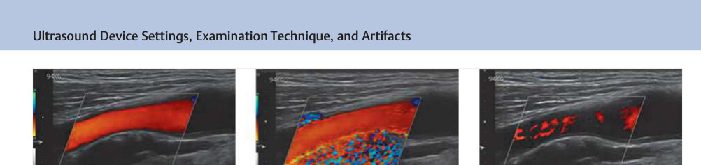
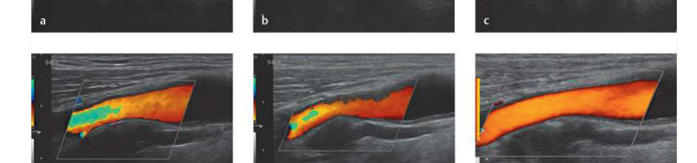
Fig. 2.5 Effect of color gain, pulse repetition frequency (PRF), and color-write priority on the color Doppler image. (a) With proper settings, the vessel lumen is filled with color. A PRF of 1,000 Hz provides an optimum, uniform color flow display. The posterior vessel wall is not overwritten by color signals. (b) Color gain is too high: Blooming artifact masks the vessel wall and any gray scale plaque that may be present. Increasing the gain further produces a mosaic color band that fills the color box. (c) Color gain is too low: Despite correct focus position and a small angle between the color box and vessel axis, the intraluminal flow signal is spotty and incomplete. (d) Aliasing: With the PRF set too low and a smaller Doppler angle leading to a higher Doppler frequency shift, velocity is no longer detected unambiguously. Like the wagon-wheel effect in films, an apparent direction reversal occurs and the opposite color is displayed (Fig. 2.7, Fig. 2.8). (e) Color priority is less than 60%: A lower color priority, even with otherwise optimal settings, causes true blood flow to be discarded from the display. Additionally, if the B-mode gain is set high enough to create gray scale noise, the higher B-mode priority will further suppress the display of color pixels. The vessel lumen becomes ragged and can mimic the presence of thrombi. (f) Power Doppler image in the same plane as a show homogeneous vessel fill-in. Color brightness is graded according to the amplitudes of moving reflectors.
Fig. 2.6 Effects of Doppler gain on the Doppler spectrum. If the Doppler gain is set too low, flow is not detected (left side of spectral trace). An optimum setting yields a well-defined spectrum with a clear window. As Doppler gain is increased, the spectral window fills in toward the baseline and noise appears. Increasing the gain further in older machines leads to crosstalk between the flow channels, and a mirror image of the spectrum appears on the opposite side of the baseline.
Setting the velocity scale or PRF too high leads to the incomplete detection of slow flow. Setting the PRF too low causes errors in directional information, or aliasing, like the effect in films where a spoked wheel appears to be turning backwards. Aliasing in the Doppler spectrum causes high frequencies to be truncated and "wrapped around" to the opposite side of the baseline (Fig. 1.28). Aliasing in CFI produces regions of color reversal indicating flow in the opposite direction (Fig. 2.5d, Fig. 2.7). The brightest shades of red and blue lie adjacent to each other at the aliasing point. Actual turbulence is distinguished by a zero crossing in the Doppler spectrum and by a dark border separating the opposite colors in CFI (Fig. 2.8).
A velocity scale of 19 to 30 cm/s and a PRF of 2,000 to 4,000 Hz are recommended as initial settings for arterial imaging. This ensures that blood flow in normal arterial segments will be encoded without aliasing, even in systole. The baseline can be shifted if necessary, making more of the frequency or velocity scale available for the main flow direction. These adjustments should be carried out in a normal-appearing vascular segment. Once the proper settings have been made, flow acceleration in an artery, for example, can be immediately recognized as aliasing and evaluated by adding a duplex scan with angle correction. Directional changes in the course of a vessel can create sites of apparent flow acceleration. This is a particularly common source of false-positive findings within the abdomen. Venous imaging requires a corresponding reduction in velocity scale and PRF. Portal hypertension in particular is associated with low flow velocities in the abdomen, and the scale should be less than 5 cm/s.
If the vessel under investigation runs parallel to the beam, an effort should be made to obtain a beam-vessel
如果所检查的血管与声束平行，应尽量获得声束与血管的
angle less than 60 degrees. This can be done by manually angling the transducer or by electronically angling the color box (beam steering) in a linear array (Fig. 2.9). The proper selection of transducer shape and color box adjustment can be helpful in optimally displaying vessels that run parallel to the skin. Color flow signals will be absent or fragmentary if the Doppler angle equals 90 degrees. The Doppler spectrum at this angle will consist partly of spectral components directed toward the transducer and partly of components directed away from the transducer, displayed below the baseline.
Fig. 2.7 Effect of pulse repetition frequency (PRF) on color flow imaging (CFI) and spectral Doppler. (a) When the PRF is set too low (here 2,500 Hz), spectral aliasing occurs at high Doppler shift frequencies and velocities, and the spectral peaks are wrapped to the opposite side of the baseline. Aliasing in the color flow image produces an abrupt color inversion from red to light blue. (b) Increasing the PRF (to 3,989 Hz) eliminates aliasing from the spectrum and color flow image.
Fig. 2.8 Aliasing in color flow imaging (CFI): distinguishing it from turbulence. If the pulse repetition frequency (PRF) is set too low, the faster central flow layers in systole are brightly encoded in the opposite color ("bright in bright"). Unlike aliased flow, turbulence (here distal to plaque) shows a zero crossing with a black line separating the forward and reverse flows ("dark in dark").
filter, which eliminates extraneous low-frequency signals arising from vessel wall motion, for example. Filters set at 300 to 500 Hz may be adequate in cardiology, but this would suppress low velocities if used in the abdomen or periphery. Filter settings in the 100 to 200 Hz range are recommended for arterial scans (Fig. 2.10). Slow venous flow can often be detected only by lowering the filter setting to less than 50 Hz. Additional filters such as flash artifact filters or motion detectors that precede autocorrelation are helpful in separating flow information from stationary echoes. A common feature of all these filters, however, is that they reduce sensitivity to slow velocities and to weak reflectors at greater depths. Thus, if flow is not detected, the operator should deactivate the filter or lower the filter settings before diagnosing thrombosis or occlusion.
Another underestimated parameter is the write priority or color-write priority, which adjusts the relative priorities for displaying color flow and gray scale data. Originally, its main purpose was to have the color signals "disciplined" by the B-mode data, and this did achieve better axial and lateral resolution for many years. Write priority was designed to limit flow detection to sites where an (echo-free) vessel lumen was detectable. As a result, even the earliest machines could simulate the precise color fill-in of vessels such as the carotid artery, despite the relatively poor resolution available at that time. One disadvantage of this mechanism is that only echogenic calcified plaques are detected, while color information is discarded from the display when the color priority is set too low (▶ Fig. 2.5e). It should also be noted that color duplex is an "overlay" mode in which the color-coded flow image is superimposed over the B-mode image. Rapid transducer movements may cause color to be shifted outside the vessel lumen.
To increase the accuracy of measurements in both CFI and power Doppler, a selectable number of transmission pulses are delivered to the same site along each color line. Increasing the pulse number or packet number leads to increased color sensitivity with improved signal-noise
Fig. 2.9 Color Duplex imaging of the CCA in a long axis view at different angles of insonation (a) As a result of the spiral flow character, flow can be seen on both sides of the baseline at 90 deg (angle of insonation and color box as well). (b) At an angle of 80 deg a unidirectional flow above the baseline is documented with spectral broadening. The color box is still positioned at 90 deg. (c) At 50 deg spectral broadening is much more reduced. (d–f) Size of the sample volume and its position within the vessel lumen change the spectral waveform character and its velocity distribution. Again, this finding demonstrates how the size and position of the sample volume influences the spectral waveform (see also Chapter 21, Figs. 21.3, 21.4, and 21.5).
separation. But increasing the number of transmission pulses per color line also takes more time, with a corresponding reduction in frame rate. Depending on the machine, the operator can make a tradeoff between sensitivity and spatial resolution in the color and B-mode image.
To keep the frame rate within an acceptable range, generally the color information is not acquired throughout the imaging area but is localized to an area called the color box or color window. Electronic steering can optimize the scanning angle for color by maintaining less than a 60 degrees angle between the Doppler beam and the vascular segment of interest. The shape of the color box is variable. In curved-array transducers, it is usually shaped like a crescent-shaped trapezoid. In linear arrays, the color box is shaped like a parallelogram due to the parallel scan lines. In some scanners the oblique position of the color box may cause loss of sensitivity in deeper vessels (e.g., the vertebral artery) despite an optimum scan angle. A steeper scan angle will improve the color display by improving scattering and reflection and shortening the transit time.
Power Doppler is a color-coded Doppler technique based on the strength (power) of the Doppler shift signal. While blood flow in CFI is detected and displayed as a function of direction, power Doppler displays the overall strength of the Doppler flow signal (▶ Fig. 2.5f). Signal amplitudes detected by the autocorrelator are squared, integrated over time, color-encoded, and superimposed over the B-mode image, independent of their direction (Chapter 1). This provides significantly greater sensitivity, enabling the display of smaller vessels and even tissue perfusion. Power Doppler is less angle-dependent because it detects the Doppler shift amplitude, which is less angle-dependent than the polarity of the shift signal.
能量多普勒是一种基于多普勒频移信号强度（功率）的彩色编码多普勒技术。在 CFI 中，血流的检测与显示基于血流方向；而能量多普勒则显示多普勒血流信号的整体强度（▶ 图 2.5f）。自相关器检测到的信号幅度经平方、时间积分后进行彩色编码，并叠加在 B 型图像上，且不受血流方向影响（参见第 1 章）。这种方法显著提高了敏感性，能够显示更细小的血管，甚至组织灌注。由于能量多普勒检测的是多普勒频移幅度，而频移幅度的角度依赖性小于频移信号的极性，因此其角度依赖性较低。
Although power Doppler is essentially a Doppler technique and is therefore angle-dependent to some degree, generally a vascular signal can still be detected even at a perpendicular scan angle. Color intensity may be diminished but is generally sufficient to provide an acceptable vascular image. This is because some transducer elements are always present that can detect nonzero spectral components. Unlike CFI, which displays only the mean frequency shift, the integration process in power mode will generate a measurable signal.
As in CFI, the main operator-controlled parameters in power Doppler, besides power and gain, are the PRF and filter selection. Again, the settings should be adjusted to avoid overwriting of the vessel wall.
In B-flow imaging (B-flow mode), the brightness and size of the pixels depend on the number or density of moving particles. Other determinants are local flow velocity, readout direction, receiver gain (identical to B-mode gain), and sensitivity range, which should be set to "high" for fast flow and "low" for slow flow.
The tissue suppression setting (0–6) should be increased for imaging highly pulsatile atherosclerotic vessels and hemodialysis fistulas to eliminate noise due to pulsations. A high frame rate should be used in cases requiring an assessment of flow dynamics, as in aneurysms. We cannot give definitive recommendations for instrument settings in the B-flow mode. They will depend on the machine and on the clinical question. Other references may be consulted for more details on the principles and clinical applications of B-flow imaging.¹
Both power Doppler and B-flow have the advantage of little or no angle dependence, so both are adept at displaying hard-to-scan regions. One disadvantage of all Doppler techniques is its sensitivity to pulsation and intestinal motion. B-flow can display even high grade stenoses without artifacts quantified by the cross-section area between the reference and the stenotic segment of the ICA, 2,3,4
The selection of scan mode, transducer, and examination technique depends on the clinical question and the capabilities of available hardware. Pulse inversion techniques are available in cases where high resolution is desired. If high penetration is needed, the options would include amplitude modulation techniques and contrast pulse sequencing (CPS).
Fig. 2.10 Effect of filter setting on the Doppler spectrum. With a 50-Hz wall filter, the spectrum is fully displayed. As the filter setting is increased to 450 Hz, it cuts off frequencies near the baseline. Usually, the color flow image and spectrum will still show some residual flow in arterial vessels, but a high wall filter can discard slow flow in the portal vein and other veins, prompting a false-positive diagnosis of thrombosis.
2.3 Examination Technique, Limitations, and Artifacts2.3 检查技术、局限性及伪影
2.3.1 Examination Protocol2.3.1 检查方案
After the transducer has been selected and the B-mode image optimally adjusted, the next step is to examine the wall, lumen, and pulsation characteristics of the vessel under investigation. Color or power Doppler is then activated to evaluate color fill-in and dynamics. Normally, the vessel lumen will be uniformly filled with color (▶ Fig. 2.4). The time course of color shading depends on the resistance in the distal vascular bed and on pathologic changes both locally and in the proximal and distal beds (see Chapter 3). Any color abnormality should be investigated by acquiring a Doppler spectrum at that location. B-flow may be helpful for investigating even in cases with coarse vibration artifacts like those occurring in a hemodialysis fistula or filiform stenosis.
在选定探头并优化调节 B 型图像之后，下一步是观察待检查血管的管壁、管腔及搏动特征。随后开启彩色多普勒或能量多普勒，以评估彩色充盈情况及动态变化。正常情况下，血管管腔应被彩色信号均匀充盈（▶ 图 2.4）。彩色深浅随时间的变化取决于远端血管床的阻力以及局部、近端和远端血管床的病理改变（见第 3 章）。任何彩色异常均应在该处采集多普勒频谱以进一步评估。B-flow 有助于在存在粗大振动伪像的情况下进行检查，例如血液透析动静脉瘘或线样狭窄时所出现的伪像。
It is important to consider physiologic and pathologic factors that can affect the examination. For example, CFI of the limb arteries should be preceded by at least a 5- to 10-minute rest period to eliminate any persistent post-exercise hyperemia that would distort the flow velocity and measurable resistance indices. Similar considerations apply to quantitative measurements in intestinal vessels, for which the patient should be fasted whenever possible. Clinical parameters such as anemia, cardiac output, and multivessel disease with proximal stenoses should always be considered in the interpretation of flow velocities.
Besides preventable technical artifacts such as angle effects and acoustic shadowing over the vessel of interest, there are a number of other potential artifacts and problems relating to physics, hemodynamics, and examination technique. The creation of an ultrasound image is based on certain idealized physical assumptions such as a constant sound velocity and attenuation in tissue as well as the assumption that the transmitted wave travels along a straight path. Conditions that deviate from these assumptions as well as improper settings lead to artifacts, which are diagnostically useful in some cases but often lead to misinterpretation.
Besides troublesome phenomena such as acoustic shadowing from calcium (Fig. 2.8), bone, air, and reverberations, artifacts can also be useful diagnostic aids. One such artifact is posterior enhancement behind a cyst. TGC tries to produce a homogeneous echo display over the full imaging depth, based on the assumption of constant sound attenuation. But sound waves undergo little absorption and no reflection when traversing a fluid (cyst, gallbladder, urinary bladder, vessels), with the result that an area of relative "acoustic enhancement" appears behind the fluid. It should be noted that when any posterior artifacts appear with spatial averaging enabled, the width of the phenomenon is decreased due to the different insonation and readout directions (the "umbra" effect).
Other artifacts are edge shadowing at rounded interfaces and slice-thickness artifacts. They may cause reflectors located outside the scan plane to be displayed within the image. If an object is located in front of a strong reflector, such as a liver hemangioma over the diaphragm or the subclavian artery over the apical pleura, multiple reflections of the backscattered echoes can cause a false image to appear behind the reflector due to the prolonged transit time. This phenomenon can occur not only in B-mode but also in color flow, creating the impression of a duplicated vessel (▶ Fig. 2.11).
其他伪像包括圆弧形界面处的边缘声影以及切层厚度伪像。这些伪像可使位于扫描平面外的反射体在图像内显示。若一个物体位于强反射体前方，例如位于膈肌上方的肝脏血管瘤或位于胸膜顶部的锁骨下动脉，背向散射回声的多重反射可因往返时间延长而在反射体后方形成伪像。该现象不仅见于 B 型成像，也可见于彩色血流成像，造成血管重复的错觉（▶ 图 2.11）。
Artifacts in Color Doppler彩色多普勒伪像
Like B-mode ultrasound, CFI is subject to artifacts resulting from unexpected physical or hardware limitations. They can be classified by their effects as artifacts that cause loss of sensitivity or loss of specificity. In rare cases they may also increase sensitivity, as illustrated by the "confetti artifact" associated with a high-grade stenosis.
False-negative flow detection (underestimation). Because CW and PW Doppler and color duplex imaging are all Doppler techniques, both color information and spectral information are angle-dependent. At beam-to-a-vessel angle of 90 degrees, Doppler-based measurements cannot be used for blood flow calculations. Calcified plaques also lead to color dropout (Fig. 2.8). The angle at which color dropout occurs is different from B-mode shadowing and depends on the angle of the color box.
Fig. 2.11 Mirror-image artifact from a highly reflective interface (pleura, diaphragm). The subclavian artery is mirrored due to beam reflection from the pleura causing a second, virtual vessel to appear. A similar effect occurs at the diaphragm, which can cause a mirror image of the liver and hepatic vessels to be reflected into the chest cavity (Fig. 2.16).
(Fig. 2.12a). The importance of power output, gain, filters, and color versus gray scale priority are reviewed in the section on Optimizing the Image with Operator-Controlled Settings.
False-positive flow detection (overestimation). The display of color signals in nonflow areas, known as blooming artifact or color bleed, may occur when the gain is set too high or the PRF is set too low. Motion artifacts may simulate flow in cystic structures. Older machines are especially prone to color extension beyond vessel walls due to a greater slice thickness (up to 10 mm). Color bleed can cause misinterpretation if flow information from adjacent vessels is projected into an occluded or thrombosed vessel, creating the appearance of recanalization. With optimized settings, today it is possible and clinically desirable to detect even subtle wall changes such as thrombus deposits after percutaneous transluminal angioplasty (PTA) or incipient mesenteric and portal vein thrombosis and to monitor them over time.
Ghosting or mirror-image artifact (Fig. 2.11, Fig. 2.14a) occurs at highly reflective surfaces like the diaphragm or pleura. Reflection and repetitive backscatter create the appearance of a second vessel that not only displays color information but can even generate Doppler spectra. Another, rare phenomenon results from malfunction at the level of the beamformer. This can cause a series of ghost vessels to appear in the readout direction.
Confetti artifacts at high-grade stenosis and arteriovenous (AV) fistulas result from the vibration of perivascular soft tissues due to the impingement of rapid jet flow (see Fig. 11.23). The confetti sign can be helpful for locating high-grade stenosis in a survey scan. Vibrations are often induced in stones and plaques, giving rise to a coarse color mosaic (Fig. 2.12a,b). This can even mimic ulceration in plaques.
The vibration of elastic vessel walls in an area of high-grade stenosis can create a “musical murmur” in PW Doppler (Fig. 2.13) and is perceived acoustically as a high-frequency tone, or “seagull’s cry,” accompanying the actual stenotic bruit. Often this phenomenon first directs attention to a significant stenosis. Confetti artifacts at stenosis or AV fistulas in the abdomen require differentiation from transient intestinal peristalsis, which can also create a mosaic-like artifact.
Most artifacts in contrast-enhanced ultrasound (CEUS) can be explained indirectly by artifacts present in B-mode imaging. Mirror-image artifacts, for example, occur in CEUS as they do in other sonographic techniques (Fig. 2.14). Signal enhancement occurs behind cystic structures (Fig. 2.15), and attenuation is caused by a fatty liver, fibrous structures, and acoustic phenomena such as diffraction and refraction (Fig. 2.16a). The contrast agent itself causes increased absorption, which may lead to attenuation behind organs (Fig. 2.16b) or behind tumors that show strong contrast uptake in the arterial inflow phase (Video 2.1).
Depending on the probe characteristics, depth and tissue attenuation, the tissue perfusion may suffer greatly. Changing the position of the TX or the patient may bring the ROI closer to the TX, so attenuation will be less strong. Another problem may be oversaturation resulting from a bubble overload. It is mostly seen during the early contrast phase and will diminish over time. Often the CA
Fig. 2.12 Artifacts and secondary phenomena arising from plaques and stones. (a) Longitudinal scan of the common carotid artery and bifurcation. A coarse, calcified plaque at the origin of the internal carotid artery causes acoustic shadowing in the B-mode and color images. (Note that the shadow in the B-mode image is perpendicular to the transducer face, while the shadow angle in the color flow image is aligned with the color box.) The calcified plaque material also gives rise to vibrational effects due to plaque motion generating a confetti sign. This may appear in front of the plaque or on its abluminal side and can mimic plaque undermining or an ulcer niche. (b) Vibration artifact from a kidney stone. This phenomenon may be confused with a confetti sign arising from an arteriovenous (AV) fistula.
图 2.12 斑块和结石所产生的伪像及继发现象。(a) 颈总动脉及分叉部的纵切面扫查。在颈内动脉起始部，一处粗糙的钙化斑块在 B 型及彩色图像上均引起声影。（注意 B 型图像中的声影垂直于探头表面，而彩色血流图像中的声影角度与彩色取样框方向一致。）钙化斑块物质还因斑块运动产生振动效应，形成"彩屑征"。该征象可出现于斑块前方或其无腔侧，并可类似斑块下侵蚀或溃疡龛影。(b) 来自肾结石的振动伪像。此现象可能与动静脉（AV）瘘所致的"彩屑征"混淆。
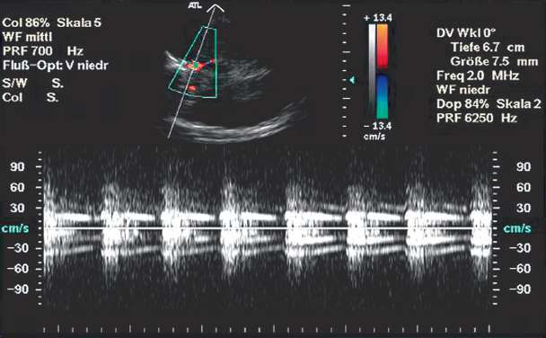
Fig. 2.13 “Seagull's cry” from a high-grade stenosis of the internal carotid artery. This spectrum was sampled from the intracerebral bifurcation of the internal carotid artery in a 14-year-old girl following trauma. Pulsed-wave (PW) Doppler demonstrates flow acceleration with spectral expansion. A bandlike high-frequency sine-wave tone (musical murmur) is superimposed over the spectrum.
Fig. 2.14 Mirror-image and duplication artifacts in contrast-enhanced ultrasound (CEUS). (a) Mirroring of a hepatic vein into the chest cavity. (b) Duplication artifact of the aorta due to increased transit time and different refraction angles.
Fig. 2.15 Effect of acoustic enhancement in contrast-enhanced ultrasound (CEUS). Due to acoustic enhancement behind a cyst in the fatty liver, the posterior liver tissue is displayed more clearly at that level than other tissues. Thus, the diagnosis should be based on lateral reference tissue at the same level.
dose may be too high as well. Thus, the vessel wall may be overwritten and the contrast resolution within the vessel lumen will suffer.
剂量也可能过高。因此，可能会过度覆盖血管壁，导致血管腔内的对比分辨率下降。
High microbubble concentrations can also cause glare. It starts at a high level of contrast bubbles and disappears with a decline of contrast enhancement (Figs. 2.17 and 2.18).
2.4 Effect of Imaging Technique on Spatial Resolution and Lesion Detectability2.4 影像学技术对空间分辨率和病灶检出能力的影响
Amplitude modulation imaging (AMI) has poorer spatial resolution due to the use of longer transmission pulse lengths, and the resolution may be further degraded by selecting a low transmission frequency ("penetration mode"). Small metastases may be missed at these settings. Pulse inversion imaging (PII) has higher spatial resolution, but this may be associated with less penetration, again making small metastases more difficult to detect (Fig. 2.19).
Technique-related artifacts may occur when the operator applies the transducer with too much pressure or insonates the same site for too long. For example, applying too much pressure during liver imaging may reduce the uptake of contrast microbubbles in the capillary bed of liver tissue closer to the transducer causing that region to appear hypovascular (▶ Fig. 2.20a). A similar effect can result from the destruction of microbubbles exposed to high pressure.
acoustic energy emission (MI value too high). This may occur if same plane is insonated for too long (especially with a higher frequency linear-array transducer) or, for example, if hepatic lesions with a relatively low microbubble concentration are insonated constantly in one plane. If a high MI value is causing microbubble destruction, this problem can be solved by sweeping the scan plane to adjacent tissue and then back again, allowing time for contrast microbubbles to regenerate (Fig. 2.20b).
Fig. 2.16 Effects of sound attenuation in contrast-enhanced ultrasound (CEUS). (a) Shadowing due to diffraction and refraction leads to less vibratory stimulation of the microbubbles causing less enhancement in the shadowed area. (b) Effect of sound attenuation by a high microbubble concentration in the spleen on signal enhancement in the far kidney. Because of this effect, the upper pole of the kidney appears to be less vascularized.
Video 2.1 Increasing sound absorption by an intensely enhancing mass. The aorta and vena cava show initial early-phase enhancement, and the liver mass (focal nodular hyperplasia [FNH]) enhances before the aorta. As the enhancement of the tumor and liver increases, the intensity in the rapid phase of aortic flow is no longer sufficient to cause significant microbubble vibration, and the lumen appears increasingly dark.
Patient-related artifacts due to aortic prostheses may originate from the prosthetic material itself or from postinterventional factors: older prostheses are easier to evaluate 5 days after placement than newer types, which are more difficult to scan. Thicker Gore-Tex sheaths and reinforcing rings as in the Ovation Prime® prosthesis can make it difficult to evaluate the lumen and posterior elements of the device (Fig. 2.21). Residual air present in the thrombosed aneurysm sac immediately after the intervention can mimic a leak (Fig. 2.22). Misinterpretations of this kind can be avoided by acquiring an unenhanced series prior to contrast administration.
Fig. 2.17 Glare artifact in a posttraumatic hemorrhaged renal cyst. (a) At 22s, the glare artifact is not seen as the spleen is only little enhanced. (b) Over time, the spleen takes up more bubbles causing this artifact without any movement of the internal echoes mirrored by the strongly enhanced spleen.
Fig. 2.18 Glare artifact and saturation effect due to a very high bubble concentration. (a) When the administered contrast dose is too high (in this case 1.8 mL SonoVue), glare occurs behind the limbs of an aortic prosthesis. This artifact can obscure a reperfusion leak posterior to the prosthesis (generally reperfused from lumbar arteries). The saturation effect also prevents the differentiation and quantification of enhancement. (b) When waiting for a few seconds, the contrast concentration will fall. So the glare artifact will slowly disappear.
图2.18 极高气泡浓度所致的眩光伪影与饱和效应。（a）当注射的造影剂剂量过高（本例为1.8 mL SonoVue）时，主动脉假体四肢后方出现眩光。该伪影可遮蔽假体后方再灌注性漏（通常由腰动脉再灌注供血）。饱和效应亦使增强的分辨与定量无法实现。（b）等待数秒钟后，造影剂浓度下降，眩光伪影遂逐渐消失。
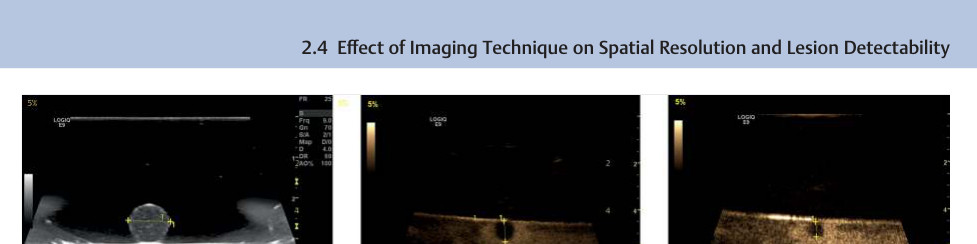
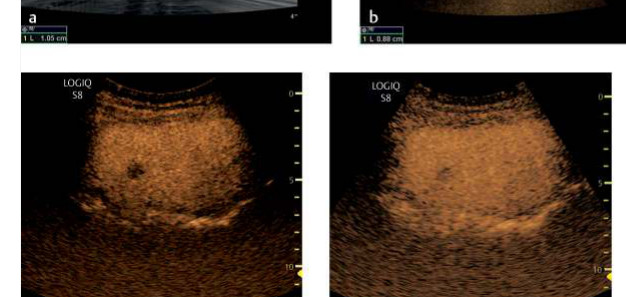
Fig. 2.19 (a) Within a water tank, a 1.05-cm small bubble tea sphere filled with a sugar suspension is scanned at an AO of 5%. (b) Milk enhanced with microbubbles with a layer of rapeseed oil swimming on top is scanned with a 9-MHz transducer (MI) = 0.5. The size of the bubble sphere measures now 0.88 cm applying Pulse inversion imaging mode. (c) Amplitude modulation imaging (AMI) in the same phantom setting shows a more pronounced blooming artifact of the microbubbles around the sphere, causing a drop in diameter to 0.63 mm. (d) Small metastasis in the left liver lobe being well delineated by PII. (e) Due to bubble blooming, the same lesion becomes smaller and more difficult to detect when using the AMI mode. The lower the transmit frequency the more bubble blooming, and thus the smaller the bubble size becomes.
Fig. 2.20 Effect of transducer compression and contrast enhancement (near-field compression artifact). (a) High transducer pressure kept in one position can compress the underlying tissue causing the liver to appear hypovascular in the near field. (b) Constant insonation in one plane for 20 s has caused near-field microbubble destruction that mimics segmental hypoperfusion (axillary lymph node metastasis). (c) After a brief pause, the same region shows a homogeneous signal enhancement due to new microbubble inflow during the pause.
Fig. 2.21 Artifacts caused by prosthetic material. While older types of aortic prosthesis are easily scanned with ultrasound, newer models equipped with denser mesh or reinforcing rings (e.g., Ovation Prime °ledR endograft) are more resistant to luminal assessment by computed tomography (CT), color flow imaging (CFI), and contrast-enhanced ultrasound (CEUS). Evaluation of the thrombosed aneurysm sac is still possible but requires scanning from multiple angles. (a) Reinforcing rings in an aortic prosthesis with attenuation artifacts in the longitudinal scan. (b) CT scans in a patient with an aortic prosthesis. (c) CEUS in a patient with an aortic prosthesis.
Fig. 2.22 Artifacts in the early postinterventional period (air artifact). (a) Contrast pulse sequencing (CPS). Scan after contrast administration appears to show a reperfusion leak (<) from the superior mesenteric artery at 1 o'clock in the left anterolateral quadrant. (b) Axial computed tomography (CT) in the early arterial phase shows residual air in the aneurysm sac immediately after the intervention. Subsequent scans continued to show no evidence of reperfusion leak.
Blood, unlike water, is not a Newtonian fluid but a suspension composed of blood plasma and cellular constituents. It is subject to the laws of fluid mechanics that apply to mixtures of fluids and solids. Factors of prime importance in describing the flow characteristics of blood are viscosity, plasticity, and shear rate, especially, the latter depending on flow velocity.
Viscosity is the coefficient of internal fraction. It denotes the force that is needed to move adjacent fluid layers relative to one another. The viscosity of blood depends on hematocrit and other factors, and it remains more or less constant up to a hematocrit of 10; above that value it increases according to an empirically defined exponential function. 16 Since blood is a suspension, its viscosity is normally determined chiefly by the relative volumes of hemoglobin-filled erythrocytes and plasma. In small-diameter vessels like terminal capillaries (7–10 μm), blood acquires an apparent viscosity that is only slightly higher than that of pure plasma (Fahraeus-Lindqvist effect). This effect is caused by the axial migration of red cells, giving rise to a peripheral, hypocellular layer of plasma-like viscosity along the vessel walls.
Hydrodynamic parameters of major importance in diagnostic ultrasound include the dimensionless Reynolds number, which essentially determines whether flow is laminar or turbulent. In simplified terms, the Reynolds number is calculated from viscosity, flow velocity, and vessel diameter. Unlike blood, an ideal fluid does not have viscosity and its Reynolds number would be infinite. As the Reynolds number approaches a critical value, even very minor disturbances are sufficient to induce a transition from laminar to turbulent flow.
The Reynolds number indicates that flow in larger blood vessels like the aorta is turbulent, whereas laminar flow prevails in smaller-caliber branch vessels that do not contain zones of disturbed flow. This is an important diagnostic distinction, since the presence of turbulent flow in smaller-caliber vessels is indicative of a flow disturbance. These principles apply to vessels in the 0.5- to 16-mm range of diameters that are accessible to ultrasound scanning (Doppler, B-mode).
All modern sonographic techniques are echo techniques in which the quality of signal generation (intensity, signal-to-noise ratio) depends critically on the nature and quantity of reflectors. It is important that reflection can occur only at a tissue-to-tissue interface when the tissues are of different acoustic impedance (complex resistance Z = |Z| × ejφ). The cellular constituents of blood act as ultrasound reflectors. The strength (intensity) and na- ture of the reflection depend not only on the number and size of the reflectors but also on the impedance mismatch between the cellular reflectors and the plasma that surrounds them. If the impedance mismatch is small, the resulting echo will be weak.
所有现代声学技术均为回声技术，其信号生成质量（强度、信噪比）关键取决于反射体的性质和数量。重要的是，反射仅能在声阻抗（复阻抗 Z = |Z| × ejφ）不同的组织界面处发生。血液中的细胞成分可作为超声反射体。反射的强度（声强）及性质不仅取决于反射体的数量和大小，还取决于细胞反射体与周围血浆之间的阻抗差异。若阻抗差异较小，所产生的回声则较弱。
The size of the reflectors is particularly important for sonographic imaging because it determines the intensity of the echoes and whether diffraction and/or scattering will occur. Ultrasonography is successful or fails with frequency-dependent absorption in the medium; this determines the signal-to-noise ratio, which is crucial for image quality and often dictates whether a technically sound examination can even be performed.
The following parameters basically determine the fluid mechanics of blood in a given vascular segment:
以下参数基本上决定了一段血管内血液的流体动力学特性：
- Vessel diameter or cross-sectional area and its local change (expansion as in the carotid sinus or constriction due to stenosis)
- 血管直径或横截面积及其局部变化（如颈动脉窦的扩张或因狭窄导致的收缩）
• Pressure gradient along the vascular segment
• 血管节段沿线的压力梯度
- Flow velocity as a function of pressure gradient, cross-sectional area, and volume flow
- 流速作为压力梯度、横截面积和体积流量的函数
• Vessel curves and branches
• 血管弯曲与分支
• Viscosity or apparent viscosity (Fahraeus-Lindqvist effect)
• 黏度或表观黏度（Fåhræus–Lindqvist 效应）
- Reynolds number as the parameter for laminar or turbulent flow
- 雷诺数作为层流或湍流的参数
Pulsatility of the flow
脉动性血流
• Elasticity of the vessel wall
• 血管壁弹性
• Shear rate of the flowing blood
• 流动血液的剪切速率
• Density
• 密度
Blood flow characteristics depend in the first line on the cardiac output, vessel size and arterial sclerosis, its course, and branching arteries. At 90 degrees, it is believed that color Doppler will miss flow information, as the parabolic flow character (Vmax in the center, lowest V at the vessel wall) will indicate a zero flow at 90 degrees on CFI. The physiologic blood flow can be characterized by a spiral flow pattern, first due to a reflection at the aortic arch, then mowing downstream. Nearly all arteries show a spiral flow at least during the mid-systolic flow even the portal vein have this flow pattern. Therefore, at 90 degrees CDI will show blue and red colors, which will disappear when the angle of insonation is optimized.
3.2 Flow Characteristics in Steady Volume Flow3.2 稳态容积流中的流动特征
Steady flow (flow that is constant or continuous over time) usually occurs only in man-made systems, while flow in blood vessels typically consists of pulsatile flow in elastic tubes due to cardiac contractions and respiration. But a knowledge of the physical principles of steady flow in rigid tubes is still helpful for understanding hemodynamics in
general, the phenomena associated with pulsatile flow in blood vessels, and the imaging of blood flow and morphology by color and spectral Doppler (e.g., in patients with stenotic vascular lesions). 31,18
Shear rate (shear velocity) describes the spatial change of flow velocity in the transverse direction. Real fluids are permeated by frictional forces which cause different flow velocities to arise at different locations, which in turn generate a transfer of forces. The shear rate, then, is a measure of the mechanical stress exerted by the fluid components.
Shear rate defines the viscosity, the coefficient of ratio between shear stress and shear velocity measured in 1/second. The shear rate is calculated from the ratio of the velocity difference between two adjacent fluid layers and their distance apart. Thus, shear rate is the gradient of the velocity field.
In Newtonian fluids, the linear relationship between shear stress τ and shear rate is defined by the τ = ηγ, where η is dynamic viscosity. Thus, the viscosity in Newtonian fluids is not dependent on shear rate. By contrast, “structurally viscous” fluids change their viscosity as a function of shear rate: the greater the shear rate, the lower the viscosity.
在牛顿流体中，剪切应力 τ 与剪切速率之间的线性关系由 τ = ηγ 定义，其中 η 为动力黏度。因此，牛顿流体的黏度不随剪切速率变化。相比之下，“结构黏性”流体的黏度随剪切速率变化：剪切速率越大，黏度越低。
Viscosity in non-Newtonian "dilatant" fluids increases as the shear rate rises. This results from a structural change that causes the individual fluid components (particles) to interact more strongly, making it more difficult for the layers to slip past one another.
A prerequisite for fluid flow (volume per unit time, volume flow measured in mL/minute) from A to B is a pressure difference ( P2-P1), which serves as the driving force. The Hagen-Poiseuille law applies to Newtonian fluids and nonpulsatile laminar flow in rigid cylindrical tubes:
流体（单位时间内的流量，以 mL/min 为单位测量的体积流量）从 A 流到 B 的前提条件是存在压力差（2-2），该压力差即为驱动力。Hagen-Poiseuille 定律适用于刚性圆管中的牛顿流体和非脉动层流：
Δ P=P₂-P₁=(8·η· l· i)/(π· r⁴)
We can rearrange this equation to obtain the volume flow, which describes the relationship of flow rate to the fourth power of the tube radius( r4)
我们可以重新整理此方程以得到体积流量，它描述了流速与管半径的**四次方**（r4）之间的关系。
i=(π· r⁴Δ P)/(8·η· l)
where
这里
- i = volume flow through a tube segment (unit of measure: m³/s)
- i = 流经管段单位时间内的体积流量（计量单位：m³/s）
• η = dynamic viscosity of the flowing fluid (unit of measure: m 2/s)
• η = 流动流体的动力黏度（计量单位：m 2/s）
- l=length of the tube segment (vascular segment; unit of measure: m)
- l = 管段长度（血管段；计量单位：m）
- r = inside radius of the tube segment (vessel; unit of measure: m)
- Δ P = pressure difference or pressure drop ( P2 - P1) along the tube segment (vascular segment) of length l (unit of measure: N/m 2)
- r = 管段（血管）内半径（单位：m）
- ΔP = 沿长度为 l 的管段（血管段）的压力差或压降（P2 - P1）（单位：N/m 2）
Ohm's law of electricity states that
欧姆定律指出
R=(U)/(I)
where
这里
• U=voltage (measured in volts)
• U=电压（以伏特测量）
• R = electrical resistance (measured in ohms)
• R = 电阻（单位：欧姆）
• l= current intensity (measured in amperes)
• l = 电流强度（以安培为单位）
Analogous to Ohm's law, the Hagen-Poiseuille law can be used to calculate flow resistance in fluid dynamics. The voltage U corresponds to the pressure difference Δ P, and the current intensity I corresponds to the volume flow i.
类似于欧姆定律，在流体力学中，哈根-泊肃叶定律可用于计算流动阻力。其中电压 U 对应于压力差 ΔP，电流强度 I 对应于体积流量 i。
R~=~(Δ P)/(i)=(8·η· l)/(π· r⁴)
This means, for example, that if the vessel radius is decreased by one-half, the resistance R is increased by a factor of 16. Most of the total flow resistance in the vascular system comes from the arterioles, 7 i.e., the portion of the arterial vascular tree that has the greatest regulatory capacity ( ▶ Fig. 3.1). As a result, the luminal diameter of the arterioles at any given time has a significant bearing on total flow resistance and also influences the flow phenomena that occur in vessels proximal to the arterioles. This means that peripheral vascular resistance affects both the spectral Doppler waveforms and the color flow image in duplex sonography.
这意味着，例如，如果血管半径减小一半，阻力 R 将增加 16 倍。血管系统中绝大部分的总血流阻力来自于小动脉，即动脉血管树中具有最强调节能力的部分（▶ 图 3.1）。因此，小动脉的管腔直径在任一时刻都对总血流阻力有显著影响，同时也影响其近端血管中发生的血流现象。这意味着外周血管阻力会影响双功超声中的频谱多普勒波形和彩色血流图像。
3.2.3 Fahraeus-Lindqvist Effect,
Apparent Viscosity, and Axial Migration3.2.3 法拉乌斯－林德奎斯特效应、表观黏度与轴向迁移
The viscosity of a Newtonian fluid is assumed to be constant across the cross section of the tube, but this is not true in a suspension such as blood. The shear forces depend on the velocity gradient of the streamlines, as described in the section Flow Profile at Constrictions and Expansions (p. 58). If the velocities of the individual cylindrical flow layers are similar, they will generate less shear. The gradient is largest at the vessel wall. As a result, the red cells are crowded toward the center of the stream, where they can move faster than at the wall; this phenomenon is called axial migration. Viscosity decreases toward the vessel wall, while shear forces increase. Zones with the highest shear forces become depleted of cellular constituents, so the viscosity in those areas approximates that of the fluid and is called the apparent viscosity. The wall layer, then, becomes a hypocellular layer composed mostly of blood plasma. This effect occurs in vessels of all sizes, from large to extremely small, and is highly advantageous in the capillary network, where vessel diameters are in the range of 7 to 10 μm, barely larger than the red cells themselves. As a result, the peripheral resistance in the capillary
bed is significantly lower than it would be if axial migration did not occur. Another result is that the hematocrit has very little effect on the degree of peripheral resistance in the smallest vessels.
3.3 Flow Characteristics in Straight Vessels of Constant Cross Section3.3 等截面直管内的流动特征
3.3.1 Reynolds Number as the Determinant of Laminar or Turbulent Flow3.3.1 雷诺数作为层流或湍流的决定因素
The diagnostic classification of flow phenomena that are measurable with ultrasound is based in part on whether the flow is laminar or turbulent. Flow in the aorta is typically turbulent, while flow in branch vessels (cerebral and peripheral arteries) is normally laminar. Whether flow will assume a laminar or turbulent pattern is determined by the dimensionless Reynolds number Re:
超声可测量的血流现象的诊断分类部分基于血流是层流还是湍流。主动脉的血流通常为湍流，而分支血管（脑血管和外周动脉）的血流通常为层流。血流将呈现层流还是湍流模式由无量纲雷诺数 Re 决定：
Re=(vm· d)/(η)
where
这里
vm = mean velocity over the vessel cross section
vm = 血管横截面上的平均速度
d=inside diameter of the vessel
d=容器内径
η = kinematic viscosity
η = 运动黏度
Kinematic viscosity ν is the ratio of dynamic viscosity η to the density of the fluid. It follows that the Reynolds number is proportional to velocity and diameter and is inversely proportional to viscosity. The larger the diameter of a vascular segment and the faster the flow through that segment, the higher the Reynolds number and thus the greater the likelihood of transition from laminar to turbulent flow. The viscosity (internal friction) of the fluid restrains this tendency.
运动黏度 ν 是动力黏度 η 与流体密度的比值。由此可知，雷诺数与速度和管径成正比，与黏度成反比。血管段管径越大、流经该血管段的血流速度越快，雷诺数就越高，因此由层流向湍流过渡的可能性也越大。流体的黏度（内摩擦力）则会抑制这种转变倾向。
When the Reynolds number exceeds a certain critical value R_e crit., even very minor disturbances will be sufficient to cause turbulence (i.e., induce a transition from laminar to turbulent motion). 17 The reason is as follows: A high mean velocity v_m implies that local, transient velocity changes will lead to high acceleration. If this acceleration is checked by a correspondingly high internal friction (viscosity), the changes cannot propagate through the fluid. But if internal friction is low, small changes will spread across the whole flow profile, leading to turbulence. The Reynolds number, then, describes the relationship between accelerational forces and frictional forces.
The critical Reynolds number is 2040 ± 10 according to Avila et al 4 and 2000 according to McDonald, 23 as measured at sharp-edged inlets or outlets from the main flow. If disturbances are present in the form of stenosis-like constrictions and they are hemodynamically irregular (not streamline-shaped), turbulence can occur even at Reynolds numbers considerably lower than 2000.
When velocity is increased past the critical Reynolds number, vortices (sites of localized turbulence) also form near the vessel wall. The implication for diagnostic ultrasound is that the insonation angles are no longer the same for different streamlines and may assume arbitrary values, appearing in the color duplex image as an inhomogeneous distribution of colors and brightness levels. The velocity profile in the turbulent flow region is flat, resulting in a high velocity gradient near the vessel wall. A knowledge of these factors that influence the
Fig. 3.1 Relative vascular resistance in various parts of the circulatory system. (Reproduced with permission from Landwehr et al. 20)图3.1 循环系统各部位的相对血管阻力。（经Landwehr等人20授权转载）
development of turbulent flow is helpful in understanding hemodynamic phenomena. 31
湍流的发展有助于理解血流动力学现象。31
When velocity is less than the Reynolds number and there is no spatial disturbance or change over the longitudinal section of a vessel, the result is laminar flow with a nearly parabolic velocity profile. Velocities are highest at the axial center of the vessel, while the fluid layer in contact with the vessel wall has a velocity close to zero. This zone, called the boundary layer, is defined as the region with less than 99% of the mainstream velocity (▶ Fig. 3.2).
While the degree of shear (degree of layer movement per unit time) in a Newtonian or homogeneous fluid is linearly proportional to the applied shear stress, non-Newtonian fluids such as blood shows a nonlinear relationship to shear stress (Fig. 3.2). As a result, Newtonian and non-Newtonian fluids exhibit different behaviors in the same vessel (Fig. 3.2).
The flow velocity gradient between adjacent fluid layers (laminae) depends on the internal friction of the fluid. 6 The shape of this flow profile is influenced by:
相邻流体层（层流）之间的流速梯度取决于流体的内摩擦力。6 该流速剖面的形状受以下因素影响：
• Internal friction (viscosity)
• 内摩擦力（黏度）
• Cohesion (the “forces of attraction” between adjacent similar molecules)
• 内聚力（相邻相似分子之间的“吸引力”）
Adhesion of the fluid to the vessel wall (external friction)
液体对血管壁的附着力（外部摩擦力）
Laminar Flow层流
Flow is described as laminar if all the particles or concentric fluid cylinders ("layered" flow) are moving in the same direction and there is no mixing of streamlines, i.e., no exchange of particles at right angles to the flow direction. In the color duplex imaging of laminar flow, the brightest color (relative to the color bar) is displayed at the center of the vessel, indicating the relatively highest flow velocity, while darker color shades indicating lower flow velocities are displayed near the vessel wall (Fig. 3.2).
Turbulent flow is present if the streamlines exhibit (usually) three-dimensional, random-appearing, unsteady movements over the whole cross section of the vessel, with a resultant mixing of all the streamlines. Unlike simple eddy formation at sites of disturbed flow (branch points, plaques, stenoses), turbulent flow is characterized by a large spatial extent, a disorganized and largely unpredictable spatiotemporal structure, and a strong dependence on initial and boundary conditions.
In pulsatile flow as in steady flow, the transition from laminar to turbulent flow is marked by the occurrence of transitional phenomena. However, pulsatile flow differs from laminar flow in that the Reynolds number in pulsatile flow changes during the cardiac cycle due to changes in flow velocity, flow profile (different velocities with different streamline gradients at different times), and possible changes in vessel diameter. Even under physiologic conditions, this can lead to the development of periodic turbulence (local turbulent zones) in certain phases of the cardiac cycle. 35
3.4 Flow Characteristics in Vessels of Variable Cross Section3.4 变截面血管中的血流特征
3.4.1 Bernoulli Principle3.4.1 伯努利原理
The law of energy conservation also applies to fluid flow and is described by the Bernoulli principle, an important equation in fluid mechanics. Basically this principle states
能量守恒定律同样适用于流体流动，由伯努利原理描述，这是流体力学中一个重要的方程。该原理的基本内容是
Fig. 3.2 Properties of Newtonian and non-Newtonian fluids.
(a) Nonlinear and linear relationship between shear stress and degree of shear associated with non-Newtonian and Newtonian fluids.
(b) Laminar flow profile of Newtonian and non-Newtonian fluids.
(c) Color-coded flow patterns in the internal carotid artery (ICA) and external carotid artery (ECA), with color brightness graded according to different flow velocities (centers show highest velocity with aliasing).
that all energy components in a flowing fluid are equal at all sites. This presumes that there is no friction or loss of fluid.
在流动流体中，各部位的所有能量组分均相等。这假设不存在摩擦或流体损耗。
The Bernoulli principle is also an important basis for the sonographic detection of stenoses by the measurement of flow velocities and accelerations. The equation is as follows:
The product of pressure and mean velocity, therefore, will be the same in measurements taken at all sites. It follows that the velocity at sites of narrowing 5 must increase at the expense of hydrostatic pressure so that the volume flow rate will remain equal at all points in the vessel (1, 2, and 3).
An ideal fluid is frictionless. In this case the velocity measured at point 3 would precisely equal that measured at point 1. This does not apply to nonideal fluids like blood, in which case the flow velocity will steadily decline over the length of the vessel due to friction losses.
3.4.2 Flow Profile at Constrictions and Expansions3.4.2 狭窄与扩张处的流速分布
When there is a sudden decrease in vessel caliber, pressure and velocity changes are accompanied by a change in the velocity profile, which is usually flat downstream from the constriction (entrance effect). The fluid must travel a certain distance before it reestablishes a nearly parabolic profile. Conversely, an increase in vessel diameter causes the flow
profile to become steeper (exit effect), with an increased velocity gradient between the central and peripheral wall-adjacent layers.
流速剖面变得更陡峭（出口效应），中央层与邻近管壁的外周层之间的速度梯度增大。
3.4.3 Flow Separation, Separation Zones, and Turbulent Zones3.4.3 流动分离、分离区与湍流区
The separation of streamlines from the main flow into secondary flows with possible vortices and turbulence is called flow separation. This may occur at stenoses or branch points (flow dividers). Physiologic flow separation with a local turbulent zone (resident turbulence) is normally present in the carotid sinus, for example, just past the division of the common carotid artery into the internal and external carotid arteries (Fig. 3.3).
Turbulent zones are usually areas of low shear. Along with oscillating and time-varying shear forces, published studies include these zones among the pathologic flow disturbances that are most active in promoting atherosclerosis. Clinically, these factors create sites of predilection for plaque formation along the inner curve of vessels and at bifurcations. 1
The vessel diameter distal to a stenosis is generally larger than within the stenosis, creating an expansion effect like that described above. If the stenosis does not have a streamlined shape, it leads to poststenotic flow separation and local turbulence. If, on the other hand, a stenosis or branch point happens to be favorably streamlined, flow separation and turbulence may not occur. This is typically seen with lower-grade "flat" stenoses.
In addition to the hemodynamic effects described above, the separation and reattachment of streamlines occur in areas of caliber change and at branch points. These phenomena, also called secondary flow, occur in the main vessel just proximal to the origin of a side branch and particularly in the side branch itself just distal to its origin (Fig. 3.4).
Fig. 3.4 Secondary flow (recirculation zone) at a vessel origin with a stagnation point (arrows: zone of kinetic energy acting at right angles to the vessel wall). A, separation point; R, recirculation zone; S, stagnation point; W, reattachment point.
Key factors that determine the degree of flow separation are as follows:
决定流体分离程度的关键因素如下：
- Relative cross sections and flow volumes of the main vessel and side branch
- 主血管与分支血管的相对横截面积和血流量
• Geometry of the branch point (e.g., sharp-edged or streamlined)
• 分支点的几何形态（例如，锐边型或流线型）
• Branch angle or inlet angle
• 分支角或入口角
• Flow velocity or inlet velocity
• 流速或入口速度
• Pulsatility
• 搏动性
• Pressure gradient
• 压力梯度
• Viscosity
• 黏度
• Surface texture (rough or smooth vessel inner wall)
• 表面纹理（血管内壁粗糙或光滑）
Separation is most commonly observed in expansions that follow constrictions. One factor in this process is the mass inertia of the flow, which can prevent mainstream separation from the vessel wall only if the constriction has a streamlined surface.
Generally speaking, a turbulent zone ("dead-water zone") forms just distal to the constriction. The local flow in this zone does not follow the mainstream, sometimes opposing the mainstream but may circulate in a vortex between the mainstream and vessel wall. The site at which the main flow and "dead-water flow" separate is called the separation point. Consistent with the Bernoulli principle, the mainstream will be slowed down and reattach to the vessel wall after a certain distance called the entrance length. That point is called the reattachment point.
The flow in a “dead-water zone” is characterized by flow reversal and vortex formation with low velocities and multidirectional flow ( ▶ Fig. 3.5).
“死水区”内的血流特征为流速低、多向流动，并伴有血流方向逆转及涡流形成（▶ 图 3.5）。
A key implication for ultrasound imaging is that the boundary layers between different flow components (vortices) are relatively echogenic and thus generate high-intensity echoes of low Doppler frequency, which are clearly apparent both in the frequency spectrum and in the color flow image. Platelets may remain suspended for some time in these turbulent zones, where shear forces can promote their aggregation, adhesion, and release of procoagulant agents. This stimulates local atherogenic processes in the vessel wall ( ▶ Fig. 3.5).
3.5 Characteristics of Pulsatile Volume Flow3.5 脉动性容积流量特征
The description of a time-varying or discontinuous pulsatile flow is considerably more complex than in the case of steady flow. 22 Other references (e.g., McDonald 23) may be consulted for a more detailed exploration, but a somewhat simplified discussion will suffice for clinical purposes.
Blood flow in the arterial vascular system is characterized by alternating phases of acceleration and deceleration caused by the pulsatile pumping action of the heart, which performs both pressure and volume work. Anatomic and physical conditions tend to modify the original intraventricular pressure and volume curves. Although a large pressure amplitude is generated in the left ventricle during one cardiac cycle, it is moderated by the compliance of the aorta and large vessels ("windkessel effect") in the presence of a competent aortic valve and elastic vascular system (Fig. 3.6). The large vessels function as a reservoir whose compliance enables them to store some of the pulsatile energy of the heart. This tends to make the flow more uniform over time, especially in the arteries more distant from the left side of the heart. The pulsatility (ratio of systole to diastole) of the flow is also strongly influenced by peripheral vascular resistance, which in turn reflects the tonicity of the arterioles. It also determines the amplitude of reflected pulse waves, which affects the movement patterns of individual streamlines at arbitrary sites of measurement.
3.5.1 Velocity Profile of Pulsatile Flow3.5.1 脉动流的速度分布
Pulsatile flow is basically laminar as well when compared with steady flow, but its velocity profile is more variable due to the inertia and internal friction of blood. The velocity
Fig. 3.5 Local atherogenic processes in turbulent zones. (a) Plaque in the "dead-water zone" of the internal carotid artery (ICA) with a separation zone and retrograde flow components along the inner curve of the vessel. (b) Pulsed-wave (PW) Doppler frequency spectrum documents retrograde flow.
profile in the acceleration phase is flat and approaches a parabolic pattern only if forward flow still predominates after the acceleration phase. If transient reverse flow occurs (especially in the limb arteries), it often begins in the central arteries, i.e., the regions in which the highest maximum velocity formerly prevailed (Fig. 3.7).
Fig. 3.6 Three-dimensional magnetic resonance imaging (MRI) for flow analysis (with kind permission of M. Markl and J. Hennig, Department of Radiology, Medical Physics, Freiburg University Medical Center). (a) Three-dimensional flow analysis of the thoracic aorta past the valve plane shows the spatial distribution of velocity vectors during systole. The distributions of flow velocities (velocity profiles) have also been calculated in multiple planes. The true velocities are quantified by color coding (0–1 m/s). (b) Three-dimensional flow analysis of the thoracic aorta shows a continuous systolic pulse wave from the valve plane to the descending aorta. While velocity vectors are already dropping in the ascending aorta, they are reaching peak values in the descending aorta. The true velocities are quantified by color coding (0–1 m/s).
图3.6 用于血流分析的三维磁共振成像（MRI）（经弗赖堡大学医学中心放射科医学物理系 M. Markl 和 J. Hennig 惠允）。(a) 跨越瓣环平面的胸主动脉三维血流分析显示了收缩期速度矢量的空间分布。在多个平面上也计算了血流速度的分布（速度剖面）。真实速度通过颜色编码进行量化（0～1 m/s）。(b) 胸主动脉三维血流分析显示了一个从瓣环平面到降主动脉的连续收缩期脉搏波。当升主动脉中的速度矢量已经开始下降时，降主动脉中的速度矢量正达到峰值。真实速度通过颜色编码进行量化（0～1 m/s）。
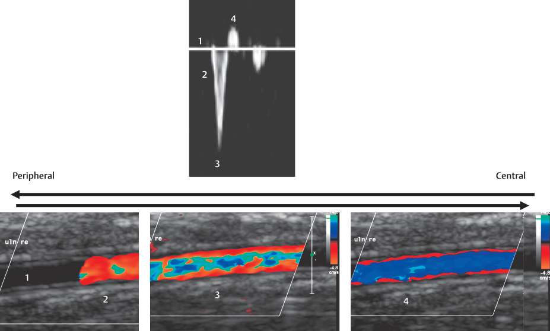
Fig. 3.7 Doppler frequency analysis and color flow images of an adolescent ulnar artery with a triphasic spectrum, a brief cessation of flow (1), an incident pulse wave in early systole (2), central aliasing with peripheral flow reduction in systole (3), and a central reflected wave from the periphery with persistent peripheral antegrade flow (4).
3.5.2 Approach to the Flow Complexity3.5.2 流量复杂度分析方法
Color flow imaging and spectral Doppler analyze blood flow angle-dependent. The estimated velocity should be adjusted to the streamlines. Because of limited frame rate and low spatial resolution, both Doppler techniques provide reduced information about the flow complexity in different parts of blood vessels, especially close to bifurcations or bending of vessels. At plane wave imaging techniques, frame rates of about 400-1000 fps provide an insonation of at least three angles, thus allowing the visualizing of blood flow vectors at a high spatial and temporal resolution. It supports the spiral and helical flow pattern in nearly all arteries during mid to end-systole except the small-sized vessels. Larger veins may also show a spiral flow character. A great deal of work is needed to establish the rheologic parameters for the physiologic values (see Chapter 21).¹⁰,¹³
3.5.3 Waveforms of Pulsatile Flow/Helical Flow3.5.3 脉动流/螺旋流的波形
As a result of the different boundary conditions, two different waveforms are seen in association with pulsatile flow:
由于边界条件不同，在搏动性血流中可见两种不同的波形：
• High-resistance flow
• 高阻力血流
Low-resistance flow
低阻力血流
The classic waveform produced by high peripheral resistance is found in the limb arteries at rest ( ▶ Fig. 3.7a). The time-velocity waveform or Doppler spectrum is characterized by a steep systolic upstroke and a rapid decline of flow velocity. Significant reverse flow occurs in early and mid-diastole, while a second, small forward flow component may be observed in late diastole, creating a triphasic waveform. The development of this waveform is at least partly explained by noting that the primary pulse wave is reflected in the periphery, travels back up the arterial system, is reflected against the now-closed aortic valve, then travels back in the peripheral direction where it causes the second forward-flow peak (“ping-pong” phenomenon). 8 The amplitude dwindles distally because the flow velocity is decreased by the viscosity of the blood and by the greatly increased total vascular cross-sectional area in the periphery (see Chapter 7.1.1 and Chapter 7.2.1).
The typical flow pattern in a limb artery (high peripheral resistance at rest) characterizes all arteries that do not predominantly supply organs but chiefly supply blood to the muscles and skin in the normal resting state (e.g., upper and lower limb arteries, external carotid artery, penile arteries, and, to a degree, the mesenteric artery in fasted individuals).
As the physiologic demands on the periphery increase (e.g., muscular exercise, tumescence, digestion) and under pathologic conditions (e.g., local inflammation, hyperthyroidism, sepsis, peripheral neuropathy), peripheral resistance is decreased due to both central regulatory mechanisms (increased heart rate, stroke volume, blood pressure) and vasodilation, especially of the arterioles. This latter mechanism increases systolic flow and in particular an increase of the diastolic flow volume, producing a significantly increased rate of volume flow (Fig. 3.8).
This is manifested in the time-velocity waveform or Doppler spectrum by significant forward flow in diastole. In this respect the waveform pattern approximates that of parenchyma-supplying arteries.
Fig. 3.8 Severe foot infection. (a) High systolic-diastolic flow in the posterior tibial artery with a volume flow rate of almost 300 mL/minute. (b) Follow-up 3 years after resolution of the bone and soft-tissue infection with 2 years of antibiotic therapy. A normal triphasic spectrum has replaced the monophasic waveform.
The “parenchymal artery” type of flow pattern characterizes arteries that supply the parenchymal organs (especially the kidneys, liver, spleen, and brain).
“实质动脉”型血流频谱特征见于供应实质器官（尤其是肾脏、肝脏、脾脏和大脑）的动脉。
The peripheral resistance of the arterial vascular system is normally low to ensure a constant maintenance of perfusion.
外周动脉血管系统的阻力通常较低，以保证持续稳定的灌注。
3.6 Blood Flow through Stenoses3.6 血流通过狭窄段
Correct interpretation of stenotic flow patterns is crucial for the accurate assessment of vascular pathology with Doppler ultrasound and especially by color flow imaging (CFI). Absolute and relative changes in flow volume as well as pre-, intra-, and poststenotic changes in flow patterns are the key parameters that can supply a correct diagnosis (regardless of the ultrasound technology used) and permit a quantitative analysis of pathologic findings (Table 3.1).
3.6.1 Relationship between Vessel Cross Section and Flow Velocity3.6.1 血管横截面与流速的关系
We know from the Bernoulli principle (p. 57) that the volume flow (i.e., flow volume per unit time) in vessels without branches or leaks remains constant from one vascular segment to the next (▶ Fig. 3.9). This relationship is fully described for time-varying flows by the continuity equation (a certain partial differential equation for mass conservation). Basically, the continuity equation states that the volume flow along a vessel is always constant. Even if the cross section of the vessel varies, the volume flow does not change.
For clinical purposes, we may assume that the flow through the vessel is in a steady state. Thus:
在临床应用中，我们可以假设血管内血流处于稳态。因此：
q=A v
Or, for a vessel of circular cross section:
或者，对于圆形横截面血管：
where
这里
q=~π~r²v
q = volume flow
q = 体积流量
• A = cross-sectional area
• A = 横截面积
v = mean flow velocity in a given cross section
v = 给定横截面内的平均流速
r = vessel radius
r = 血管半径
Substituting in the continuity equation, we obtain:
将其代入连续性方程，可得：
arraylq₁=q₂=q₃array
q=A₁v₁=A₂v₂=A₃v₃
Thus, a reduction in the vessel diameter or cross-sectional area leads to an inversely proportional change in flow velocities:
因此，血管直径或横截面积减小会导致血流速度发生成比例的反向变化：
A₁/A₂=v₂/v₁
Example示例
If the vessel diameter is reduced by 50%—corresponding to a 75% reduction in cross-sectional area—the flow velocity is more than doubled.
若血管管径减少50%——相当于横截面积减少75%——则流速增加一倍以上。
Hence, based on the relative increase in flow velocity and assuming that the continuity equation is valid, we can calculate the degree of stenosis relative to cross-sectional area as follows:
因此，基于流速的相对增加，并假设连续性方程成立，我们可以按如下方法计算相对于横截面积的狭窄程度：
Table 3.1 Sensitivity and specificity of the ratio of intra- and prestenotic peak velocities (maximum velocity ratio, PVR) in peripheral arteries (Based on Ranke et al 26)表3.1 外周动脉狭窄处与狭窄前峰值流速比值（最大流速比，PVR）的敏感性与特异性（基于 Ranke 等 26）
Degree of stenosis (% diameter reduction)
PVR
Sensitivity (%)
Specificity (%)
≥ 20
≥ 1.33
96
75
≥ 30
≥ 1.6
90
91
≥ 40
≥ 2.1
84
92
≥ 50
≥ 2.4
87
94
≥ 60
≥ 2.9
84
91
≥ 70
≥ 3.4
91
98
≥ 80
≥ 4.0
90
98
≥ 90
≥ 7.0
88
97
Fig. 3.9 Diagrammatic representation of a vascular stenosis (illustrated for a mechanical constriction in a hydraulic model). The initial vessel diameter at site 1 (100%) is narrowed to a residual diameter of 25% at site 2 (= 75% stenosis) and to 75% of the initial diameter at site 3 (= 25% stenosis). The arrow lengths represent the resultant flow velocities at the three sites. The volume flow at sites 1 to 3 is constant. Hence, the velocity of the flow must change as indicated by the arrow lengths in the diagram.
• v1 = prestenotic flow velocity (measured at site 1 in Fig. 3.10)
• v1 = 狭窄前血流速度（于图 3.10 中部位 1 处测得）
• v2 = flow velocity in the stenosis (measured at site 2 in Fig. 3.10)
• v2 = 狭窄处（位于图 3.10 中 2 点测量位置）的血流速度
For a circular constriction, the cross-sectional area of the vessel has a quadratic relationship to its diameter:
对于圆形狭窄，血管的横截面积与其直径呈二次关系：
A=π r²
In the first approximation, then, the formula can also be used to determine the degree of stenosis relative to the vessel diameter in the case of concentric narrowing.
因此，在近似情况下，该公式也可用于在向心性狭窄时确定相对于血管直径的狭窄程度。
Note备注：1
The absolute velocities depend not only on the local degree of stenosis but also on the pre- and poststenotic flows (e.g., tandem stenosis). Also, the frictional forces present in very high-grade stenoses can cause such a drastic reduction in volume flow that the flow velocity may be significantly decreased in some cases, rather than increased. 28
The dependence of intrastenotic velocity increase on degree of stenosis is shown graphically in Fig. 3.11 for a stenosis model. When measurements are performed by Doppler frequency analysis, the theoretically expected values are underestimated at higher degrees of stenosis because of intrastenotic energy losses due to friction, which causes a reduction in flow velocity.
Recommendations on Quantitative Assessment of Arterial Stenosis动脉狭窄定量评估建议
It is rarely necessary to quantify a peripheral vascular stenosis with a high degree of accuracy. For example, the correlation of clinical findings with the Doppler anklebrachial index and the detection of a localized, hemodynamically significant stenosis are generally sufficient to qualify a patient for angioplasty. If the significance of the stenosis is questionable (e.g., due to an unfavorable angle in the pelvic region), the qualitative assessment of hemodynamics can be improved by means of stress tests (10–20 knee bends), sampling flow spectra across the stenosis, and
Fig. 3.10 Principle of the continuity law. Because the volume flow (mL/minute) is the same at every point in a vessel (of radius r), any change in cross-sectional area (A) will cause an opposite change in flow velocity (v). The degree of velocity increase provides a measure of the causative flow reduction. Thus, the degree of stenosis can be determined from the magnitude of the velocity change.
Fig. 3.11 Relative increase in flow velocity versus degree of stenosis. Theoretical values were calculated from the continuity principle. Duplex ultrasound measurements were performed in models with various degrees of stenosis. (Reproduced with permission from Heinrich. 15) The values measured at higher degrees of stenosis are less than theoretical values due to the conversion of frictional energy into heat.图 3.11 血流速度相对增加率与狭窄程度的关系。理论值依据连续性原理计算。彩色多普勒超声测量在不同狭窄程度模型中完成。(经许可引自 Heinrich。15) 在较高狭窄程度时所测得的值低于理论值，原因在于摩擦能量转化为热量。
comparing the peripheral Doppler pressure readings before and after exercise (see Chapter 7.2.1).
比较运动前后外周多普勒血压读数（见第7.2.1章）。
Note备注：1
As a general rule, the stenotic area must be directly visualized by color duplex imaging in order to quantify the stenosis. Indirect signs of stenosis are minor criteria that should be included in the evaluation and carefully correlated with the clinical presentation.
For the quantification of stenoses, the immediate pre-stenotic, intrastenotic, and poststenotic flow velocities should be measured in vessels that do not have a large branch near the stenosis ( ▶ Table 3.1). The continuity law still applies to stenoses in a bifurcated region (e.g., origin of the internal carotid artery [ICA]), but the flow in side-branching vessels (e.g., external carotid artery) shows an unpredictable distribution of volume flow between the two vessels.
The peripheral resistance in the territory supplied by the vessel under investigation is of key importance. In this case the degree of stenosis can be determined from velocity measurements if, besides the intrastenotic value, flow velocity can also be measured in a normal vascular segment located well distal to the stenosis, far from the stenotic jet or turbulent zones. Alternatively, empirically determined ratios of the pre- and intrastenotic peak systolic velocities can be used to estimate the degree of stenosis in the proximal ICA. 3
3.6.3 Intra- and Poststenotic Flow Changes3.6.3 狭窄段及狭窄后血流改变
The increased intrastenotic flow velocity in high-grade stenoses may potentially cause a drastic increase in the
重度狭窄时，狭窄段内血流速度加快，可能导致⋯⋯显著增加。
Reynolds number. The poststenotic maximum velocity remains elevated for a certain distance downstream (poststenotic jet). “Exit effects” play a significant role in this process (▶ Fig. 3.12, ▶ Video 3.1). Distal to a stenosis, areas of reverse flow (recirculation zones) may develop close to the vessel wall. These constant near-wall vortices propagate distally for a distance that depends on the flow velocity and degree of stenosis. 5,35
Given an initially constant and increased poststenotic flow velocity, the Reynolds number may increase well beyond the intrastenotic value due to the potentially abrupt expansion of the vessel lumen, and zones of significant turbulence may form. The turbulence may propagate distally for a distance that is a multiple of the normal vessel diameter ( ▶ Fig. 3.13). 15
The kinetic energy of the flow (flow volume and velocity) proximal to a stenosis is normally equal to the energy distal to the stenosis. Within the stenosis, the individual components vary inversely with one another according to the formula
Fig. 3.12 Flow patterns associated with concentric and eccentric carotid artery stenosis. (a) Concentric stenosis features a long poststenotic jet with near-wall retrograde flow due to the "exit effect" (encoded blue). (b) Eccentric stenosis causes unpredictable flow disturbance.
Video 3.1 Jet stream behind a high grade echolucent stenosis of carotid artery.
视频 3.1 高回声低回声颈动脉狭窄后方的喷射流。
(See also the Bernoulli principle with
（另见伯努利原理及相关内容
p₀=p+(1)/(2)ρv²
where Etotal = p_0, Estatic = p and Ekinetic = (1)/(2) p v^2.
其中 Etotal = p_0，Estatic = p，Ekinetic = (1)/(2) p v^2。
Ekinetic in the formula is the energy density (energy per unit volume) based on the flow velocity of the fluid, hence its kinetic origin. The quantity p0 represents the static pressure at zero flow velocity (v=0 m/s in the above formula). The quantity p is dynamic pressure.
公式中的 Ekinetic 是基于流体流速的能量密度（单位体积能量），因此其本质上来源于动能。量 p0 代表流速为零时的静压（上述公式中 v=0 m/s）。量 p 为动压。
Fig. 3.13 Flow velocities: measurements and theoretical relationships. (a) Flow velocity measurements across a stenosis with 75% concentric area reduction (i.e., 50% diameter reduction) in a vascular phantom. Luminal width proximal and distal to the stenosis is 6 mm. Stenosis length = 12 mm. The open box (-12 to 0 mm) indicates the range for stenosis measurements. The measurements were taken at the center of the vessel, and flow velocities were calculated from the Doppler spectrum (peak systolic velocity). A typical pattern of velocity change occurs in the stenosis (relative to prestenotic value). The relative velocity increase does not quite reach the theoretically expected value of 400% due to friction losses. The poststenotic jet extends several centimeters downstream from the stenosed segment. (b) Theoretical relationship between flow velocity and flow rate for various degrees of stenosis.²⁴图3.13 流速：测量值与理论关系。（a）在血管模型中，对一处面积同心性狭窄75%（即直径狭窄50%）的跨狭窄流速测量。狭窄近端及远端管腔宽度为6 mm。狭窄长度=12 mm。开放方框（-12至0 mm）表示狭窄段的测量范围。测量取自血管中心，流速根据多普勒频谱（收缩期峰值流速）计算。狭窄处呈现典型的流速变化模式（相对于狭窄前的数值）。由于摩擦损失，相对流速增加未完全达到理论上预期的400%。狭窄后射流自狭窄段向下游延伸数厘米。（b）不同狭窄程度下流速与流量的理论关系。²
Explanation说明
For a body of mass m, we know that the kinetic energy E = (1)/(2) · m · v^2. The energy density e is defined as the energy E per volume V, so e = (E)/(V) = (1)/(2) · (m)/(v) · V^2 = (1)/(2) · ρ · V^2, because the density is ρ = (m)/(V). Note the distinction between the notations V (volume) and v (velocity). Energy equals rce · distance E = F · s.
The pressure p is defined as force per area, p = (F)/(A). In the formula ξ F · s, s, s is assumed to be parallel to the force F while the area A is assumed to be perpendicular to the force F. The volume element V is equal to the base area times height, so ξ A · s. Therefore, p = (F)/(A) = (E)/(s · A) = (E)/(V) then is “related” to energy density.
对于质量为 m 的物体，我们已知动能 E = (1)/(2) · m · v^2。能量密度 e 定义为单位体积 V 所对应的能量 E，即 e = (E)/(V) = (1)/(2) · (m)/(V) · v^2 = (1)/(2) · ρ · v^2，因为密度 ρ = (m)/(V)。请注意 V（体积）和 v（速度）这两种符号表示的区别。
能量等于力乘以距离：E = F · s。压强 p 定义为单位面积所对应的力，即 p = (F)/(A)。在公式 F · s 中，s 假定与力 F 方向平行，而面积 A 则假定与力 F 方向垂直。体积元 V 等于底面积乘以高度，即 A · s 。因此，p = (F)/(A) = (E)/(s · A) = (E)/(V) 因而与能量密度"相关"。
When the critical Reynolds number of 2000 is exceeded, the increase in turbulence leads to increased frictional losses and explains the pressure drop that occurs as a function of exercise or degree of stenosis. Within the stenosis itself, the tangential intravascular pressure falls with rising flow velocity according to the Bernoulli principle, and the relative negative pressure promotes the development of traction forces. These forces, in turn, can be responsible for the development of intramural hematomas, which are commonly found in association with complex, high-grade stenoses.
From a clinical standpoint, a stenosis becomes hemodynamically significant only if it reduces flow volume by an amount sufficient to cause peripheral hypoperfusion during rest or exercise with associated clinical symptoms.
A hemodynamically significant stenosis causing a 50% angiographic diameter reduction based on intra-arterial pressure measurements should not be equated with a clinically significant stenosis. 29 Most such cases are clinically asymptomatic, and stenoses of 50% or less are usually not confirmed by indirect pre- and poststenotic Doppler frequency parameters. On the other hand, a clinically significant stenosis of >70% leads to a poststenotic reduction of the diastolic reverse-flow component in peripheral arteries, with transition to a biphasic or monophasic flow spectrum, a delayed systolic peak, a decreased peak systolic velocity, and a consequent decrease in the pulsatility index (PI).
In cases with multiple stenoses arranged in series: the more numerous the stenoses, the lower the PI because the individual resistances are added together according to the Kirchhoff laws. The higher the grade of the stenosis and the greater its length, the greater the pressure drop across the stenosed vascular region. Above a critical degree of stenosis, the flow volume will be reduced throughout the vessel. This critical value depends largely on the demands of the downstream peripheral vessels. When peripheral dilatation occurs, such as during muscular exercise, the stenosis may cause such a severe drop in perfusion pressure that relative or absolute ischemia occurs.
As a general rule, a 50% reduction in diameter (i.e., a 75% reduction in cross-sectional area) is taken as the critical value in limb arteries. This empirical cutoff value is only an approximate threshold, however, and the value for a specific case will depend on the proximal and distal vascular segments, cardiovascular performance, and the degree of collateralization.
3.7 Evaluation of Stenoses by Color Duplex Imaging3.7 彩色多普勒双功超声对狭窄的评估
Modern color duplex scanners typically have the following operating modes:
现代彩色双功扫描仪通常具有以下工作模式：
B-mode
B 型超声
- B-mode, pulsed Doppler, and fast fourier transformation (FFT) frequency analysis (duplex)
- B 型超声、脉冲多普勒和快速傅里叶变换 (FFT) 频谱分析（双功）
B-mode with CFI by autocorrelation
基于自相关分析的彩色血流显像（CFI）B模式成像
- B-mode with CFI and Doppler FFT (triplex)
- B 型（灰阶）联合 CFI 与多普勒 FFT（三联模式）
With Doppler ultrasound, a relative increase in flow velocity due to stenosis can be measured and documented based on the Doppler frequency shift. Ideally the Doppler signal is evaluated by FFT frequency analysis and displayed in a time-frequency spectrum, making it possible to quantify individual signal components at different points in the cardiac cycle (systole-diastole). Analyzing and recording the absolute values in the time-frequency spectrum (maximum velocity envelope curve) based on the maximum intrastenotic Doppler frequencies as an expression of local flow acceleration conveys a good impression of the local degree of stenosis, provided the frictional forces in the stenosis are not too high.
When the degree of stenosis exceeds a critical value (more than 80%), the flow cannot be accelerated but is slowed due to internal frictional forces in the blood, as described in the section on Shear Rate (p. 55). Other significant factors are the blood flow velocities in the individual patient and overall hemodynamic status, such as the presence of proximal and/or distal stenoses as well as viscosity and blood density. Waveforms are also significantly affected by valvular heart disease (aortic stenosis or regurgitation). A single, elevated Doppler measurement taken at one location is not diagnostic in itself and should always be combined with a systematic examination and evaluation of relevant sampling sites.
3.7.1 Criteria for Vascular Findings3.7.1 血管表现的判定标准
One advantage of color duplex imaging over conventional duplex is that it is easier to locate vessels and vascular abnormalities based on the color mapping of blood flow within the B-mode image. Stenotic plaques can be detected by the narrowing of the perfused vessel lumen and the typical stenotic flow changes described above. A qualitative assessment of stenosis can be accomplished in several ways:
By noting the relative intrastenotic velocity increase in the color flow image compared with the pre- and poststenotic vascular segments
通过比较彩色血流图像中狭窄段相对于狭窄前和狭窄后血管节段的流速增加
- By determining the local degree of stenosis from the calculated diameter, as in angiography
- 通过根据计算所得直径确定局部狭窄程度，如同血管造影所示
By noting the aliasing that occurs when intrastenotic flow acceleration exceeds the Nyquist limit
通过注意到当狭窄处血流加速度超过奈奎斯特极限时发生的混叠现象
Color duplex imaging is essential for detecting vascular occlusion and determining its length. Both direct and indirect criteria have proven useful for this application (Table 3.2).
Potential errors may arise due to significant vessel wall calcifications or faulty instrument settings (e.g., PRF too high for detecting slow postocclusive flow). B-mode criteria may include an occlusive internal echo pattern or thin, irregularly enhancing tissue bands accompanying the deep vein. The latter signify an occlusive event that is many years old 30.
Unlike continuous-wave (CW) Doppler, both spectral Doppler and CFI require the use of pulsed ultrasound packets. The pulses enable a repetitive scanning process with random sample acquisition at the pulse repetition frequency (PRF). To reconstruct the original signal from the random samples, the PRF must be at least twice as high as the highest frequency of the original (Nyquist criterion). Due to the internal processes in color duplex scanners, the PRF and wall filter (which cuts off low frequencies) are interlinked. The PRF and associated cutoff frequency of the wall filter should be set as low as possible for the detection of slow flows (veins, poststenotic flow). This setting would not be appropriate for the examination of normal arterial flow.
To measure flow velocities in stenoses, the PRF should be set high enough to eliminate aliasing in the Doppler spectrum. The baseline position in the Doppler spectrum should also be adjusted to prevent aliasing. These considerations do not strictly apply to CFI. In fact, aliasing causes a color inversion that can be a useful indicator of significant flow acceleration (see Chapters 2, 7.1.1 and 7.2.1).
The Doppler gain should be lowered to correct a noisy or irregular spectral trace. It may also be necessary to reduce the power setting in select cases. Most scanners, however, come with presets that are configured for specific imaging tasks. Care should be taken, for example, not to use the carotid preset when scanning lower extremity veins. The Doppler gain should be adjusted to minimize noise and produce a sharply-defined spectral tracing. The best way to do this is by acquiring a spectrum from a healthy vascular segment. The goal is to obtain a well-defined spectrum with a clear window between the spectral line and baseline.
Our discussions of velocity profiles have demonstrated the need to make the sample volume for the pulsed Doppler spectrum sufficiently large or positioned at the center of the vessel if possible, unless there is an eccentric stenosis producing an eccentric jet, which can then be identified in the color flow image (▶ Fig. 3.14).
Table 3.2 Criteria for vascular occlusion in color duplex imaging表 3.2 彩色多普勒超声中血管闭塞的诊断标准
Direct criteria
Indirect criteria
• Absence of color signal within the imaged vessel lumen in multiple planes with a low wall filter setting (low PRF), optimum beam angle, and highest possible color gain (just below threshold for color noise)• Doppler signal cannot be acquired from the vascular segment under investigation
• Collateral vessels arising proximal to the occlusion site• Postocclusive restoration of flow by collaterals• Low postocclusive flow velocity and RI, usually with a monophasic pattern
Fig. 3.14 The longitudinal image shows a transverse stenotic jet arising from an eccentric carotid artery stenosis. The cross-sectional image shows poststenotic flow in two opposite directions (scan plane indicated by a vertical line).
3.7.3 Envelope Curves of Doppler Spectrum3.7.3 多普勒频谱包络曲线
Envelope curves are often used for the simplified description of Doppler waveforms and the measurement of flow velocities. They can be generated by the scanner itself or drawn manually over the spectrum. An envelope curve is derived by outlining the frequency shifts in the spectral display to form a time-versus-frequency shift curve. The following terms and definitions apply:
• Maximum frequency shift ( Fmax): It is the largest frequency shift at each point in the time-varying Doppler spectrum. Since some noise is present, Fmax is generally taken as the frequency greater than a specified percentage (e.g., 95%) of all measured frequency shifts.
• Mean frequency shift ( Fmean): It is the arithmetic mean of all frequency shifts displayed in the spectrum per unit time.
• 平均频移（Fmean）：指频谱中所有频移在单位时间内的算术平均值。
- Modal frequency shift Fmod: It is the frequency shift showing the greatest intensity in the spectrum.
- 模态频率偏移 Fmod：是指在频谱中显示出最大强度的频率偏移。
• Minimum frequency shift ( Fmin): It is the lowest frequency shift at each point in the time-varying Doppler spectrum.
• 最低频移（Fmin）：指在时变多普勒频谱中每个时间点的最低频移。
3.7.4 Spectral Window in Doppler Frequency Analysis3.7.4 多普勒频率分析中的频谱窗
Note备注：1
The spectral window (systolic window) is an “empty” frequency range in the Doppler spectrum where no frequency shifts are detected due to a narrow range of velocities. It results from a flat flow profile combined with a small sample volume placed at the center of the main flow.
Graphic representation of a Doppler spectrum shows a clear spectral window when flow is undisturbed and a small sample volume has been placed at the center of the main flow. The clear window is caused by an absence of low-frequency components in the Doppler signal because no streamlines are moving within the sample volume at the corresponding low velocities. This is typical of the systolic upstroke and the flat flow profile prevailing at that time. If the length of the sample volume roughly equaled the vessel diameter, the slow near-wall flow components would also be detected and the "window" would no longer be clear.
When a small sample volume is used, the area of the clear spectral window can provide a measure of the uniformity (laminarity) of the flow without vortices and secondary flows. The greater the bandwidth of the measured frequency shift, the smaller the spectral window.
Increasing flow disturbance is typically manifested by a widening of the frequency band due to the presence of many different velocity vectors in the sample volume.
血流紊乱程度增加通常表现为频带的增宽，这是由于取样容积内存在众多不同方向的速度矢量所致。
The window may be completely filled in with low frequencies, especially in the poststenotic vascular segment. The window size at the time of maximum systolic forward flow, or integrated over systole as a whole, can be expressed as follows:
As noted above, filling-in of the spectral window, called spectral broadening, is most commonly found in the post-stenotic segment. For this reason, many authors have attempted to define indices of spectral broadening (e.g., the spectral broadening index, SBI) to calculate the degree of stenosis. Although correlations have been found between SBI and degree of stenosis, the problem is to define the optimum poststenotic sampling site because the underlying flow changes show a very complex spatial distribution (▶ Fig. 3.14). 19
3.7.5 Timing of Velocity Measurements in Doppler Spectrum3.7.5 多普勒频谱中速度测量的时相
In principle, the maximum flow velocity should be measured at the time of maximum systolic forward flow. The highest indicated velocity can be determined from the Doppler spectrum or from the additional color mapping provided by color duplex imaging. 21 Good results have been achieved in practice by recording the maximum systolic and maximum end-diastolic frequencies from the frequency spectrum.
For peripheral arteries, the degree of stenosis in percentage diameter reduction is defined most accurately by the ratio of the intra- and prestenotic peak systolic velocities ( ▶ Table 3.1). 27 It is helpful in this case to use a standard nomogram in which degree of stenosis is found quickly and easily by entering the measured velocities (see Fig. 7.42). 26
With careful examination technique, even changes described as wall irregularities in the angiogram can be identified as 50% stenosis by measuring the maximum pre- and intrastenotic velocities (see Fig. 7.42). For the precise quantitative measurement of flow velocities from the Doppler spectrum, the beam-vessel angle (angle between the vessel long axis and ultrasound beam axis) should not be too large, preferably less than 30 degrees. The maximum error in this case is 13%.
Color duplex scanners usually have a velocity scale (cm/s) for Doppler sampling, and a frequency scale (kHz) can be displayed if desired. But measurements are always based on Doppler frequencies according to the Doppler formula and are then converted to velocity data:
When the velocity scale is used, the actual beam-vessel angle must be taken into account. Scanners have manually adjustable angle correction for this purpose. This is based on the fact that beam-vessel angles > 30 degrees produce a rapidly increasing measurement error: 30% at 45 degrees, 43% at 55 degrees, and 60% at 65 degrees. At 80 degrees, a setting error of 2 degrees would cause a 16% deviation from the actual velocity, and a 5 degrees error would cause a 33% deviation. 2
This section deals with the principal changes in the spectral Doppler waveform that are caused by varying degrees of vascular obstruction. Numerous factors can affect the Doppler waveform and should be taken into account, depending on the sampling site. These factors include:
Cardiac pumping function (e.g., systolic spectral amplitudes are reduced in heart failure)
心脏泵血功能（例如，心力衰竭时收缩期频谱幅度降低）
- Function of the aortic valve (e.g., delayed systolic peak due to aortic stenosis, increased systolic–diastolic amplitude with continuous negative diastolic flow due to aortic insufficiency)
- Course of the vessel (e.g., spectral broadening due to tortuosity)
- 血管走行（例如，由于走行迂曲所致的频谱增宽）
- Surface texture of the intima (surface irregularities increases stenotic flow disturbance, for example)
- 内膜表面纹理（例如，表面不规则会增加狭窄处的血流紊乱）
• Degree of luminal narrowing
• 管腔狭窄程度
• Degree of collateralization
侧支循环的程度
Peripheral vascular resistance
外周血管阻力
Note备注：1
There are no universally valid rules for spectral Doppler waveform analysis. When analyzing a specific waveform, the examiner should take into account as many of the above factors as possible and determine their relevance. To make this determination, Doppler spectra should be acquired at multiple proximal and distal sites in the vascular system.
3.7.8 Doppler Waveform Patterns Associated with Stenotic Lesions3.7.8 与狭窄性病变相关的多普勒波形模式
Prestenotic Changes狭窄前变化
A significant obstructive lesion (hemodynamically significant stenosis or occlusion) must be present in order to cause appreciable Doppler waveform changes proximal to the lesion. The poorer the collateralization and the shorter the distance between the sampling site and vascular lesion, the more pronounced the changes. The reduction in volume flow causes a decreased systolic amplitude, while the slope of the systolic upstroke generally remains unchanged. The systolic peak is followed by a rapid downstroke to the baseline or diastolic reverse flow. The latter is usually reduced, however, compared to vessels with normal flow.
Higher-grade stenoses (70%-90%) may be associated with increased diastolic flow toward the heart due to a reduced peripheral volume capacity (high peripheral resistance caused by peripheral occlusions; Fig. 3.15, Fig. 3.16, Fig. 3.17, Fig. 3.18). This can resemble the bidirectional flow pattern in the neck of a false aneurysm (Fig. 3.19) or the spectrum recorded from the anterior tibial artery in patients with a chronic recurrent compartment syndrome (Fig. 3.20). An arteriovenous (AV) fistula is characterized by high systolic and diastolic forward flow (Fig. 3.21).
In the case of an acute vascular occlusion, the (ineffectual) pulsations of the preocclusive vascular segment may be transmitted to the occlusion site, occasionally producing very thin, almost streaklike Doppler signals of very low amplitude that do not represent a true flow signal (see Chapter 7.2.1).
Other than a high amplitude, which may be sufficient to cause aliasing, the principal intrastenotic changes in the initially biphasic or triphasic spectrum from a major limb artery may include decreased pulsatility of the flow within and distal to a hemodynamically significant stenosis. This waveform change is caused mainly by the high pressure gradient across the relatively short area of luminal narrowing. Another effect, noted earlier, is a partial or complete loss of the systolic spectral window (▶ Fig. 3.15a). If turbulence is also present, Doppler frequencies without a clear window will also be displayed below the baseline.
High-grade stenoses may also be evidenced by artifacts called musical murmurs in pulsed-wave (PW) Doppler and may appear as high-frequency pure tones, called a "seagull's cry," superimposed over the Doppler spectrum (▶ Fig. 3.22). Comparable color-flow artifacts associated with high-grade stenoses are perivascular tissue vibrations, which cause pulsating clouds of color pixels near the stenosis—the confetti sign—in 70% to 90% of cases in which the stenosis exceeds 70% (▶ Fig. 3.23, ▶ Video 3.2).
With the increasing use of stents in interventional vascular medicine, it is common to find stent-induced changes in vascular compliance leading to a significant rise of peak systolic velocity. Data published on the origin of the ICA indicate a 20% to 30% increase, depending on the degree of stenosis 14 (see Chapters 7.1.1 and 7.2.1).
The rate of systolic pressure buildup is slowed distal to a vascular obstruction, leading to deceleration of blood flow in systole and a delayed systolic peak in the spectrum.
收缩压上升速率在血管阻塞部位远端减慢，导致收缩期血流减速，并在频谱中出现延迟的收缩期峰值。
Fig. 3.15 Increased diastolic reverse flow associated with high-grade stenoses. (a) High-grade stenosis of the popliteal artery ( vmax 4 m/s) with fill-in of the spectral window (white arrow) and holodiastolic reverse flow at the point of maximum stenosis. (b) Systolic color flow image shows aliasing, turbulence, and a confetti sign. (c) Diastolic color image shows a retrograde jet within the stenosis and central, retrograde flow components distal to the stenosis.
图 3.15 与高级别狭窄相关的舒张期反向血流增加。(a) 腘动脉高级别狭窄（峰值流速 max 4 m/s），频谱窗消失（白色箭头），于狭窄最重处可见全舒张期反向血流。(b) 收缩期彩色血流图像显示混叠、湍流及“彩屑征”。(c) 舒张期彩色图像显示狭窄内存在逆向射流，以及狭窄远端的中心性逆向血流成分。
Fig. 3.17 Doppler spectrum from the external iliac artery (EIA) in a patient with an embolic occlusion of the common femoral artery. The systolic upstroke shows a normal slope but a reduced amplitude.
Fig. 3.19 Bidirectional flow (systolic forward flow and diastolic reverse flow) in the common femoral artery (CFA) due to a false aneurysm.
图 3.19 因假性动脉瘤所致的股总动脉（CFA）双向血流（收缩期前向血流与舒张期反向血流）。
Fig. 3.21 High systolic and diastolic forward flow associated with an arteriovenous fistula.
图3.21 与动静脉瘘相关的高收缩期和舒张期前向血流。
Fig. 3.23 Confetti sign from a high-grade stenosis of the external carotid artery, mimicking an aneurysm.
图 3.23 高 grade 颈外动脉狭窄所致的五彩征，酷似动脉瘤。
(Fig. 3.18, Fig. 3.24b). Besides recording the time from the onset of systolic forward flow to the systolic peak, this change in the spectral waveform can also be identified by comparing proximal and distal spectra. Another sign of a significant proximal obstruction is reduced pulsatility due to a decrease in peripheral vascular resistance. By increasing diastolic flow, the body attempts to
maintain a near-normal average arterial flow distal to a stenosis for as long as possible.
在尽可能长的时间内，将狭窄段远端的平均动脉血流维持在接近正常的水平。
Very severe proximal flow obstructions may create a flat spectral waveform with a rounded systolic peak. This pattern is partly due to peripheral collateralization and, when found in medial arteriosclerosis, provides a semiquantitative measure for the degree of arterial compensation in the affected limb (Fig. 3.25). On the other hand, a normal ankle-brachial index (ABI) combined with a flat, monophasic waveform would indicate falsely elevated peripheral Doppler pressures, as in medial arteriosclerosis, and disclose the presence of critical ischemia despite normal ABI values. According to Taute (oral communication 2014), a close correlation exists between the slope of the systolic upstroke and the severity of arterial insufficiency (up to 0.1 s = normal, up to 0.18 s = stage IIb, >0.18 s = stage III or IV). Differences in the lengths and lumina of the individual collaterals result in different distances traveled by the individual pulse waves (see Chapters 7.1.1 and 7.2.1).
极严重的近端血流阻塞可产生平坦的频谱波形，并伴有圆钝的收缩期峰值。该波形部分归因于周围侧支循环的形成，当见于内侧动脉硬化（medial arteriosclerosis）时，可作为受累肢体动脉代偿程度的半定量评估指标（图 3.25）。另一方面，若踝肱指数（ABI）正常而波形平坦、单相，则提示外周多普勒测压假性升高，如内侧动脉硬化所致，并提示在 ABI 正常的情况下仍存在严重缺血。根据 Taute（2014 年口头交流）的观点，收缩期上升支的斜率与动脉供血不足的严重程度之间密切相关（上升支 ≤ 0.1 s 为正常；≤ 0.18 s 为 IIb 期；＞0.18 s 为 III 或 IV 期）。各侧支血管长度和管腔的差异导致各脉搏波传播距离的不同（参见第 7.1.1 和 7.2.1 章）。
Given these variables, we cannot quantify a vascular lesion based solely on an analysis of proximal and distal spectral waveforms. Nevertheless, these spectra still furnish qualitative information that is helpful in recognizing the presence of significant obstructive disease in the proximal or distal vascular beds.
Video 3.2 Confetti signs due to high grade stenosis of celiac trunk and superior mesenteric artery in a 51-year-old patient with abdominal angina induced by fibromuscular dysplasia.
The more numerous and pronounced the abnormal waveform criteria noted above, the greater the likelihood that a vascular lesion is hemodynamically significant. If the resting waveform remains completely unchanged along the course of a vessel, this largely excludes a hemodynamically significant lesion at rest.
CFI can easily detect and localize areas of flow separation, reverse flow, and local turbulence. This type of information is purely qualitative, however, and is not quantitative.
With its combined color-flow and B-mode imaging capabilities, color duplex imaging, unlike classic Doppler ultrasound, can display both morphology and flow (e.g., plaques and stenoses) in a given vascular segment. CFI of local turbulence will show a color inversion due to the presence of reverse flow components.
Doppler frequency analysis initially shows spectral broadening (increased proportion of low-frequency shifts or complete filling in of the spectral window to the baseline) and, depending on the signal intensities of the different flow components, may show synchronous positive and negative frequency components (simultaneous forward and reverse flow in the sample volume, Fig. 3.24).
The B-mode evaluation of vascular changes depends critically on the quality of the B-mode image, which in turn depends on proper instrument settings, operator technique, patient-related factors, and positional factors. A valid diagnosis in duplex examinations requires the measurement of local flow velocities at various sites. These factors also determine the quality of color imaging, with the caveat that many modern scanners appear to be optimized for color mapping at the expense of B-mode imaging.
B 模式下血管变化的评估在很大程度上取决于 B 模式图像的质量，而 B 模式图像质量又取决于仪器的合理设置、操作者的技术、患者相关因素以及体位相关因素。在双功扫查中做出可靠的诊断，需要在不同的部位测量局部血流速度。上述因素同样决定了彩色成像的质量，但需要注意的是，许多现代扫描仪似乎以牺牲 B 模式成像质量为代价来优化彩色血流成像。
An important advantage of color duplex imaging is that the sampling site for flow imaging is uniquely determined by the technology itself and can easily be documented. In addition to B-mode imaging and Doppler frequency measurement, blood flow is easily visualized in longitudinal or transverse section, making it much easier to select a sampling site for the quantitative Doppler determination of flow velocity.
It should be noted that the ultrasound scan plane or sampling site for Doppler frequency measurements should be accurately placed at the center of the targeted flow to ensure that maximum flow velocities are detected. The length of the sample volume should not be too small, especially since larger sample volumes are associated with higher signal intensities (due to more reflectors).
Significant vascular calcifications, overlying gas or bone, and obesity are physical barriers that can prevent direct visualization of a stenosis. In these somewhat rare cases, it can be helpful to base the Doppler assessment of vascular obstruction on indirect criteria.
3.7.10 Integral Display of Flow Velocity and Volume Flow3.7.10 流速与体积流量的综合显示
A special technique in color duplex imaging called color velocity imaging (CVI) permits the almost simultaneous measurement of flow velocities at many points within the region of interest by autocorrelation. The time-averaged value of multiple flow velocities sampled randomly at one site is assigned to each color pixel on the monitor of the color duplex scanner. The sampling sites are shifted along the scan line to create an overall image of the flow velocities.
Fig. 3.25 Medial arteriosclerosis. (a) Glassy stiffening of the vessel due to severe medial arteriosclerosis. (b) Monophasic flow pattern with normal ankle-brachial index (ABI) values is typical of severe ischemia but actually signifies medial arteriosclerosis. (c) The causal neuropathy leads to peripheral dilatation with decreased resistance and a patent posterior tibial artery.
at all the sites. These calculated data are then superimposed over the B-mode image.
在所有部位。计算所得数据随后叠加于B模式图像之上。
Conventional duplex sonography, by contrast, can determine flow velocities at only one site in a variable-sized sample volume during Doppler frequency analysis. A flow velocity profile cannot be displayed with this method.
Qualitative flow velocity measurement by color duplex imaging is not accomplished by spectral analysis (FFT) but by autocorrelation, because FFT is much too slow for the computation of many random samples within the region of interest. The operator can position the region of interest and vary its size. It should not be made too large, as this would slow the frame rate and cause a flickering display.
The quantification of integral flow velocities is highly susceptible to errors and requires optimum examination conditions that include the following:
整体血流速度的定量测量极易出现误差，需在最佳检查条件下进行，具体包括：
- The highest possible transducer frequency (5 MHz or preferably 7–12 MHz) should be used to achieve high spatial resolution.
- 应使用尽可能高的换能器频率（5 MHz，或最好 7～12 MHz），以获得高空间分辨率。
- Color image should be optimally adjusted without aliasing and without too much or too little gain.
彩色图像应在调整至最佳效果，且不产生混叠伪影，增益适中。
• A relatively small Doppler angle (<60 degrees if possible) and an uncurved vascular segment are used to minimize the effects of faulty angle determinations. 2
• 采用相对较小的多普勒角度（尽可能小于 60°）且血管段无弯曲，以尽量减少角度测定误差的影响。2
- Light transducer pressure is applied to avoid elliptical distortion of the vessel diameter (volume flow formula is valid only for vessels of circular cross section).
- 施加换能器压力时应避免血管直径发生椭圆形变形（容积流量公式仅适用于横截面为圆形的血管）。
• Optimum longitudinal scan plane through the greatest vessel diameter is used (para-axial scans will cause underestimation).
• 应采用通过血管最大直径的纵向最佳扫描切面（轴位平行扫描会导致测量值偏低）。
- Flow should be free of turbulence and vortices (angle correction must be correct for all pixels on the scan line at each point in time).
- 血流应无湍流和涡流（在任意时刻，扫描线上所有像素的角度校正均必须正确）。
• Accurate transverse diameter is determined by measuring electronically with calipers. The measurement of maximum systolic diameter involves a small systematic error but is the most reproducible measurement available.
- Doppler acquisition of superficial vessels: The reflected frequency depends not only on flow velocity and angle but also on the distance between the transducer and backscattering particles (see Chapter 1).
Under ideal laboratory conditions, the results of flow measurements are very precise (r>0.99, regression line close to identity line 20). Given the need to optimize the examination conditions, integral volume flowmetry requires special care on the part of the examiner. When the factors listed above are taken into consideration, accurate flow measurements can be performed only in superficial vessels. Important clinical applications include the measurement of volume flow in hemodialysis fistulas and the quantification of shunt volume in AV fistulas.
3.7.11 Limitations of Color Duplex Imaging3.7.11 彩色双功超声成像的局限性
In principle, color duplex imaging is excellent for determining the areas and diameters of stenoses. One limitation of this technology is that it cannot positively distinguish the flowing blood from the vessel inner wall, so the color does not accurately define the vessel wall boundaries in all phases of the cardiac cycle. Nevertheless, a geometric evaluation should still be done whenever possible to check the plausibility of a hemodynamically significant stenosis.
B-flow imaging of the perfused lumen is an entirely different approach to the quantification of local stenosis. 32,33 B-flow (B for “brightness”) is a non-Doppler ultrasound technique of blood flow evaluation that has been commercially available since early 2000. Specially encoded pulses are transmitted in rapid sequence, received, and subtracted from one another to create a gray scale image of moving blood cells. The stationary (nonmoving) tissue background can be deleted or displayed at variable intensity (▶ Fig. 3.26).
Flow indices provide a means of standardizing and simplifying the clinical diagnosis and especially the interpretation of vascular lesions, even in longitudinal section. Moreover, they can be structured in a way that minimizes or eliminates the effects of individual differences, enabling their use as independent parameters. Ideally, an index could express complex sonographic findings in the form of a single number, comparable to a laboratory value. On the other hand, the clinical significance of indices should not be overestimated. Interindividual differences in flow parameters, especially among different age groups, may be greater than the differences between health and disease, especially in cases with relatively mild pathology.
A Doppler frequency spectrum can be analyzed in terms of the following qualitative (morphologic) and quantitative criteria:
多普勒频谱可从以下定性（形态学）和定量标准两方面进行分析：
• Systolic upstroke slope
• 收缩期上行斜率
• Systolic downstroke time
• 收缩期下降时间
• Retrograde flow components
• 逆向血流成分
- Waveform and duration of diastolic antegrade flow
- 舒张期前向血流的波形和持续时间
The following criteria can be used for quantitative analysis:
以下标准可用于定量分析：
• Peak systolic velocity
• 收缩期峰值流速
• Peak reverse flow velocity
• 收缩期峰值流速
• Peak end-diastolic velocity
• 舒张末期峰值流速
PI
PI
• Resistance index
• 阻力指数
• Damping factor
• 阻尼系数
While velocity measurements and volume flow data are angle-dependent, all of the flow indices are independent of beam-vessel angle, so their determination requires only a Doppler spectrum of acceptable quality. Generally speaking, calculation of the indices is based on the waveform of the envelope curve of the Doppler spectrum.
The index for resistance vessels has a normal value of >5.
阻力血管指数的正常值大于 5。
RI=(Vmax-Vmin)/(Vmax)
The spectral waveform of averaged frequency shifts is considered in PI but does not affect RI. This suggests a theoretical advantage of the PI, but in practical application the RI can be calculated more quickly. If end-diastolic flow is only half the peak systolic velocity, a normal RI value of 0.5 would be calculated for the ICA.
In clinical applications, the same index should be consistently used for making intra- or interindividual comparisons of examination results.
在临床应用中，应始终使用同一指标进行个体内或个体间的检查结果比较。
References参考文献
Suggested Readings推荐阅读
Chapter 4第4章
Ultrasound Contrast Agents—Fundamentals and Principles of Use
超声造影剂——基本原理与使用原则
4.1 Structure and Properties of Ultrasound Contrast Agents
4.2 Equipment and Software: Settings and Transducers
4.3 Vessel- and Organ-Specific Contrast Doses
4.4 Interpretation of Findings
4.5 References
4 Ultrasound Contrast Agents—Fundamentals and Principles of Use4 超声造影剂——基础与使用原理
Hans-Peter Weskott, Christian Greis
Hans-Peter Weskott、Christian Greis
4.1 Structure and Properties of Ultrasound Contrast Agents4.1 超声造影剂的结构与特性
4.1.1 Structure4.1.1 结构
Ultrasound contrast agents are composed of microscopic bubbles approximately 2 to 10 μm in diameter, comparable in size to red blood cells. The microbubbles are filled with gas and encapsulated in a stabilizing shell. The gas in the first generation of microbubbles consisted of ordinary room air. But the main chemical components of air (nitrogen, oxygen, and carbon dioxide) are highly soluble in blood and therefore diffuse quickly out of the microbubbles, causing them to become unstable shortly after injection. Air microbubbles must be stabilized by a very thick shell (e.g., of glucose or denatured albumin) to ensure an adequate duration of enhancement.
Newer, second-generation contrast agents have a lipophilic gas core that is poorly soluble in water and resists diffusion from the microbubbles in the aqueous medium of blood. This gives the microbubbles much longer stability in vivo, and a very thin (elastic) shell can be used. The gas core normally consists of sulfur hexafluoride or perfluorocarbons, which are pharmacologically inert, nontoxic, and extremely stable. Phospholipid membranes provide an ideal shell for these gases. Amphiphilic phospholipids consist of a hydrophilic head and two lipophilic fatty acid tails, which self-align in aqueous solution to form a membrane in which all the heads point outward toward the aqueous medium while the fatty acid tails point inward toward the gas core (Fig. 4.1). This phospholipid monolayer forms a thin, elastic membrane that stabilizes the gas microbubbles and prevents their aggregation and coalescence owing to its negative surface charge.
The microbubble shell creates an interface between the gas core and surrounding blood. An incoming ultrasound wave is backscattered at this interface owing to the acoustic impedance mismatch between the gas and blood. As a result, the microbubbles generate a strong echo, making them an effective ultrasound contrast agent (▶ Table 4.1). Different formulations differ in the type of gas used, the composition and elasticity of the membrane shell, the range of approved indications, and the geographic availability.
The echo returning from contrast microbubbles is considerably stronger than one would expect based on their scattering cross section (backscattering of the echo signal). This results from the manner in which the incident sound wave interacts with the microbubbles. The transmission frequencies used in diagnostic ultrasound
(approximately 2–15 MHz) are within the resonant frequency range of the microbubbles; this causes them to oscillate and generate a very intense, microbubble-specific signal (Chapter 3 and Fig. 4.3).
4.1.2 Pharmacologic Properties of Ultrasound Contrast Agents4.1.2 超声造影剂的药理学特性
Ultrasound contrast microbubbles have the same velocity and distribution in the bloodstream as red blood cells. Their size and elastic compliance enable them to pass through the capillaries, but they cannot leave the vascular system. This distinguishes ultrasound contrast agents from the standard iodinated and gadolinium contrast media used in computed tomography (CT) and magnetic resonance imaging (MRI). The latter are extracellular media that extravasate from the blood vessels and become distributed throughout the interstitial fluid space, whereas ultrasound contrast agents are distributed exclusively in the blood (true blood-pool contrast agents).
Because of its lipophilic properties, almost none of the microbubble gas can diffuse into the blood. The only site where it can leave the microbubbles is in the
由于其亲脂性，微泡内的气体几乎不会扩散进入血液。其唯一能够离开微泡的部位是肺 。
Fig. 4.1 Diagram of an ultrasound contrast microbubble. The gas-filled microbubble is encapsulated by a thin phospholipid shell. Amphiphilic phospholipids self-assemble to form a monolayer in which the hydrophilic phosphate heads point outward toward the blood and the lipophilic fatty acid chains point inward toward the gas core.
lung capillaries, where it can pass directly into the alveolar airspace. From there the gas is expelled from the body by exhalation. The total gas volume administered in microbubbles is extremely small (a few µL) and is completely cleared from the lungs in approximately 20 to 30 minutes. 1 The phospholipids in the microbubble shell are natural constituents of the cell membrane and are metabolized through the natural pathways of phospholipid metabolism.
The gases used in ultrasound contrast agents are chemically inert and nontoxic owing to their high molecular stability. They do not react with endogenous molecules and are excreted unchanged. Sulfur hexafluoride gas also has medical applications (e.g., injected into the eye to reapproximate a detached retina to the optic fundus).
Given their inert properties, ultrasound contrast agents are very safe and well tolerated. 2 They are non-nephrotoxic, making them a good alternative to iodinated and gadolinium-based media in patients with impaired renal function. Side effects are rare and are usually mild. 3 Due to their colloidal properties, however, there have been rare instances of anaphylactoid reactions with potentially severe respiratory and cardiovascular complications or even cardiac arrest. Anaphylactoid reactions have a reported incidence of approximately 1 in 10,000 patients. Thus, centers where ultrasound contrast agents are used should have an emergency protocol in place for the immediate management of these complications.
4.1.3 Acoustic Properties of Ultrasound Contrast Agents4.1.3 超声造影剂的声学特性
The behavior of microbubbles in a sound field depends greatly on the intensity of the sound wave, or more precisely on the local acoustic pressure (acoustic power) and its fluctuations in the ultrasound field (▶ Fig. 4.2).⁴ When the pressure fluctuations are very small, an incident sound wave is simply backscattered at the microbubble interface. But as the pressure fluctuations increase, the microbubbles will contract in the positive-pressure phase and expand in the negative-pressure phase due to the elastic properties of the shell. This induces a rapid oscillation of the microbubbles, which is strongest at their resonant frequency. That frequency depends on the size of the microbubbles and coincides with the range of transmission frequencies used in medical ultrasound devices. When exposed to an ultrasound field, therefore, microbubbles become highly efficient resonators that produce a characteristic (nonlinear) signal response.
In modern formulations that have a very thin, elastic shell (Lumason™, Definity™), these resonant oscillations occur even at an extremely low sound intensity, meaning that these products are excellent for ultrasound imaging at a low power setting. The acoustic power output on most ultrasound machines is displayed as the mechanical index (MI), so scanning at a reduced power setting is also known as "low MI imaging."
As sound intensity increases, the microbubbles undergo increasingly strong resonant oscillations until finally their shell ruptures and the contrast microbubbles are destroyed. This is particularly common in regions with slow blood flow (e.g., capillary beds) where the circulating microbubbles are exposed to the sound field for a longer period of time. In this case microbubble destruction can occur even at standard B-mode sound intensities, and therefore the power setting for contrast-enhanced imaging should be substantially reduced, especially in parenchymal organs.
随着声强的增加，微气泡的共振振荡逐渐增强，最终其外壳破裂，对比微气泡被破坏。这种现象在血流缓慢的区域（例如毛细血管床）尤为常见，因为循环中的微气泡在声场中暴露的时间更长。在这种情况下，即使在标准的 B 型超声强度下，微气泡也可能发生破坏，因此在进行对比增强成像时应大幅降低功率设置，尤其是在实质性器官中。
The specific signal response of oscillating microbubbles includes harmonic frequency components ("overtones") that are not present in the signals returning from blood and tissue. With suitable technology, therefore, tissue signals can be distinguished from contrast signals and
Table 4.1 Commercially available ultrasound contrast agents a表4.1 商业可用的超声造影剂 a
Product name
Manufacturer
Gas
Shell
Elasticity of membrane shell
Approved indications
Initial approval
Optison ®
GE Healthcare
Perfluoropropane
Albumin
High
Cardio
1998
Lumason ®
Bracco
Sulfur hexafluoride
Phospholipids
High
Cardio, vessels, abdomen
2001
Definity ®
Lantheus Medical Imaging
Perfluoropropane
Phospholipids
High
Cardio
2001
Sonazoid ®
Daichi Sankyo/GE Healthcare
Perfluorobutane
Phosphatidylserine
Moderate
Abdomen
2006
Note: a The only agents currently approved for use in Germany are Optison ® (approved for echocardiographic use) and SonoVue ® (approved for echocardiography, macrovascular imaging, and microvascular imaging for focal-lesion characterization in the liver and breast).
displayed separately (Fig. 4.3). 5 In this technology, called contrast-enhanced ultrasound (CEUS), the contrast signal is often displayed in a specific color (e.g., gold) that is clearly distinguishable from tissue signals in the B-mode image. The contrast-enhanced portion of the image can be isolated (by suppressing the tissue signal) and displayed side-by-side with the tissue image in a split-screen format or superimposed over the gray scale tissue image.
Various filtering techniques are used to separate the nonlinear contrast signals from tissue signals in real time during the examination. Originally a simple frequency filter technique (second harmonic imaging) was used for this purpose. In this technique the transmission frequency is filtered out of the signal response and only higher frequencies are displayed. These occur mainly at the resonant frequencies of the microbubbles. In second harmonic imaging, however, a large portion of the
分别显示（图 4.3）。5 在这种被称为超声造影（CEUS）的技术中，造影信号通常以特定颜色（例如金色）显示，以便能够与 B 模式图像中的组织信号清晰区分。可以将造影增强部分的图像分离出来（通过抑制组织信号），并以分屏格式与组织图像并排显示，或叠加在灰阶组织图像之上。检查过程中会使用各种滤波技术实时分离非线性造影信号与组织信号。最初为此目的采用的是一种简单的频率滤波技术（二次谐波成像）。在该技术中，传输频率被滤除，仅显示较高频率。这些较高频率主要出现在微泡的共振频率处。然而，在二次谐波成像中，很大一部分
Fig. 4.3 Principle of pulse summation techniques. The transducer emits multiple pulses per scan line, which differ in their phase and/or amplitude (phase and amplitude modulation). The backscattered signals from tissue are similar in waveform to the transmitted echo pulses (linear signals), while the signals from microbubbles are produced by resonant oscillations and differ significantly from the transmitted signal in their frequency, phase, and amplitude (nonlinear signals). Electronic summation of the received signals in the contrast mode then leads to extinction (suppression) of the linear tissue signals while the nonlinear signals from the microbubbles are selectively displayed in the image.图 4.3 脉冲叠加技术原理。探头在每条扫描线上发射多个脉冲，这些脉冲在相位和/或幅度上有所不同（相位调制与幅度调制）。来自组织的背向散射信号在波形上与所发射的回波脉冲相似（线性信号），而来自微泡的信号由共振振荡产生，在频率、相位和幅度上与发射信号差异显著（非线性信号）。在造影模式下对接收信号进行电子叠加后，可使线性组织信号相互抵消（抑制），而来自微泡的非线性信号则被选择性显示于图像中。
contrast signal is filtered out (the nonlinear portions in the fundamental frequency range) so that imaging requires a relatively high power output in order to obtain a sufficiently strong contrast signal.
Newer technology employs pulse summation techniques in which multiple pulses are transmitted per scan line and are processed in the received signal. This principle is based on the fact that backscattered signals (from tissue) resemble the transmitted sound wave in their amplitude and phase (linear signal response), while the signals produced by oscillating microbubbles have very different wave characteristics (nonlinear signal response). Now if the individual pulses in a transmitted signal packet are altered in a mathematically defined way, only the linear tissue signal will follow that pattern, not the signal from the contrast agent. The received signal pulses are then processed to suppress the linear tissue signals while preserving the contrast signals, which are selectively displayed in the image. The phase (pulse or phase inversion), amplitude (amplitude or power mode), or both parameters of the wave packets can be altered, depending on the type of scanner software used.
4.2 Equipment and Software: Settings and Transducers4.2 设备与软件：设置与探头
4.2.1 Quality Aspects of Contrast-Enhanced Imaging4.2.1 增强成像的质量要求
As in B-mode ultrasound, the essential quality criteria in CEUS are spatial resolution, temporal resolution, and contrast resolution. Quality depends upon the following parameters:
Sensitivity is the ability to detect small numbers of microbubbles. It includes early detection of the initial microbubbles and the persistence of signal enhancement (prolonged late phase). Different concentrations of contrast agent (e.g., between the hepatic arteries and portal veins) should produce different brightness levels in the arterial and washout phases. The pulse inversion technique is advantageous in this setting. Although the contrast agent clears relatively quickly from the arterial vessels and later from the venous vessels, it persists for a longer period in the liver and spleen than in other organs.
This denotes the ability to detect microbubbles of very small size. Frequency, pulse duration, microbubble concentration, and interaction with tissue all affect the "pixel size" of the microbubbles. Blooming artifact can hamper the detection of very small liver lesions, which may appear too small or may be undetectable (Fig. 4.4). Blooming artifact is also common in color duplex sonography, where it is considerably more important as it may overwrite and obscure the vessel lumen, especially in small vessels.
Temporal resolution is defined by the frame rate and indicated on the monitor. Pulse summation techniques have an inherently lower frame rate because multiple pulses are transmitted per scan line. A higher frame rate is better for resolving rapid changes in the local concentration of contrast agent, especially in the arterial phase of well-perfused hepatic or renal lesions. Most manufacturers provide a gray scale reference image to aid orientation. The use of this dual image mode usually sacrifices some degree of temporal resolution.
As in B-mode ultrasound, a high dynamic range helps to discriminate small differences in microbubble concentration.
与 B 型超声一样，较高的动态范围有助于辨别微泡浓度上的微小差异。
Penetration穿透伤
As in B-mode, sound attenuation (e.g., in a fatty liver) can limit ultrasound penetration. Because microbubbles also
与B模式一样，声衰减（例如在脂肪肝中）会限制超声的穿透力。由于微泡也会
Fig. 4.4 Images of small, sonolucent spheres of 1 cm in diameter in an oil-water bath. Signals in the last image are contrast-enhanced. At 5% acoustic power output, the "lesions" appear to vary in size depending on the display technique. Blooming artifact occurs at various transmission frequencies and in the contrast mode. (a) Pulse inversion imaging (PII) with a high transmission frequency. (b) PII with a low transmission frequency. (c) Amplitude modulation imaging (AMI) with a high transmission frequency. (d) AMI with a low transmission frequency. All four images were taken after contrast injection into the water bath. The diameter seems to shrink by using a lower resolution technique, by switching from PII to amplitude modulation technique, and by a decreasing transmission frequency, here shown in a–d.
attenuate sound, insonation conditions are not improved in CEUS. Time-gain compensation (TGC) is designed to compensate for sound attenuation with increasing depth, so the contrast agent is displayed in the far field at a homogeneous brightness, according to its concentration.
The advantages of pulse inversion imaging (PII) are its high spatial and contrast resolution (Fig. 4.5). Amplitude modulation imaging (AMI) has better penetration but somewhat poorer spatial resolution. Many manufacturers offer multiple frequencies for AMI, and they should be utilized to achieve the highest possible spatial resolution.
Today, broadband transducers are used for abdominal ultrasound, and various transmission frequencies can be used for contrast-enhanced imaging. Note that while lower frequencies can increase the depth of sound penetration, this occurs at the expense of spatial resolution. Most equipment manufacturers offer CEUS software that
can be used even with high-frequency linear transducers. Tissue suppression is usually poor, however, and persistent tissue echoes may cause interpretation problems in the CEUS mode. There are significant performance differences among different transducers, even from the same manufacturer, regarding how well a particular transducer will support the CEUS mode. Selecting the "right" transducer is essential, especially in the high-frequency range. High-frequency transducers require higher doses of contrast agent than the lower-frequency transducers used in abdominal sonography.
4.3 Vessel- and Organ-Specific Contrast Doses4.3 血管与器官特异性对比剂剂量
4.3.1 Abdominal and Peripheral Vessels4.3.1 腹部与外周血管
All contrast agent doses stated in this section pertain to the contrast agent Lumason™. An effective contrast agent
本节中所述的所有对比剂剂量均涉及对比剂 Lumason™。有效对比剂
Fig. 4.5 Enhancement characteristics of a splenic angioma. High temporal and spatial resolution provide a clear view of intralesional vessels and the centripetal spread of enhancement. (a) B-mode image of the spleen from the left side. (b) High temporal and spatial resolution display intralesional vessels and centripetal spread of enhancement: 13 s. (c) 17 s. (d) 29 s. (e) Contrast washout from the lesion in a delayed image (6 minutes 14 seconds).
dose should avoid dose-dependent artifacts while providing complete enhancement of the vessel lumen for an acceptable period of time. The aorta and its branch vessels show high concentrations of contrast agent during the wash-in phase, which may produce oversaturation effects. The vessel wall is not sharply delineated from the lumen, and extravascular blooming artifacts cause the vessel to appear unsharp. Because a high microbubble concentration attenuates the sound, the posterior lumen and wall are not visualized.
As the intraluminal contrast agent dose decreases, visualization improves. A useful rule of thumb, therefore, is to use only one-fourth (AMI) to one-third (PII) of the dose recommended for liver imaging, depending on the contrast mode, administered by intravenous (i.v.) bolus injection. If the duration of enhancement is too short, it can be prolonged by adding a second dose, either equal to the first or adjusted for local requirements. PII is superior to AMI for the detection of small ulcerations.
Blood flow in the aorta and its branches exhibits a spiral flow pattern and is best visualized by the use of high-resolution contrast settings. Brightness in this mode is not only proportional to microbubble concentration but also depends on velocity, since the frame rate roughly defines the period over which all signals are analyzed. Again, an excessive contrast dose will compromise measurement accuracy. An uncompressed time-intensity curve (TIC) can provide a visual representation of the pulsatile flow pattern in vessels (Fig. 4.6).
The acoustic power output of the scanner should be reduced to approximately 10% for Doppler acquisitions in the CEUS mode after contrast administration because microbubble destruction leads to undesired (loud!) spikes in the spectrum (▶ Fig. 4.7). As in unenhanced pulsed-wave (PW) Doppler, a larger sample volume in contrast-enhanced PW Doppler will produce an increase in signal intensity.
Fig.4.6 Time-intensity curves from the aorta and from two positions in the renal artery (logarithmic data compression).
图4.6 主动脉及肾动脉两个位置的时间-强度曲线（对数数据压缩）。
Fig. 4.7 Narrow spikes in the Doppler spectrum indicate sound intensity levels high enough to cause microbubble destruction (arrows). (a) Color duplex sonography (CDS). (b) Color duplex imaging.
Doses of 1.0 to 1.5 mL Lumason™ are used for the imaging of organ perfusion, and some manufacturers still recommend 2.4 mL. Since the arterial phase is crucial for hepatic lesion characterization, it is important to avoid signal saturation due to excessive amounts of contrast agent. Lower doses should be used for lesions that already show vascularization in color duplex sonography. The high perfusion of the kidneys usually requires a somewhat lower contrast dose (approximately 80% of the liver dose). The examination technique is the same as for B-mode ultrasound. The transducer should not scan continuously in one plane for too long, as this could lead to microbubble destruction, especially in hypovascular lesions. A high transducer contact pressure should also be avoided as it could compress small, usually venous, vessels and reduce inflow of the contrast agent.
The B-mode image should always be optimally adjusted prior to contrast administration. Imaging in left or, if necessary, in right lateral decubitus will often give a better-quality view of liver lesions, which in turn is advantageous for CEUS. Because orientation may be more difficult than in the plain examination, even when a reference image is available, a scan should be performed over the organ region of interest before contrast injection and then repeated in the same way after contrast injection.
For all abdominal organs, the microbubbles should arrive at the target site approximately 8 to 12 s after bolus contrast injection. Contrast arrival will occur faster in younger patients. Peripheral tissues such as muscle take considerably longer to enhance (20–30 s, depending on their distance from major supply arteries). The smaller the supply arteries, the longer it will take to reach peak enhancement. 6
The liver, with its dual vascular supply (hepatic artery and portal vein), is an exceptional organ in contrast-enhanced imaging because liver tissue enhances only after the contrast agent has passed through the capillary bed of the intestine and spleen. The time lag between enhancement of the hepatic artery and portal vein is approximately 3 s in healthy individuals. Transit time refers to the time needed for contrast agent to travel from the feeding artery to the draining organ vein. Two transit times exist in the liver: one between the hepatic artery and hepatic vein and one between the portal vein and hepatic vein. The temporal enhancement pattern of focal hepatic lesions provides a reliable tool for lesion characterization. 7,8
The transit time in the kidney is very short, only 2 to 3 s. The duration of parenchymal enhancement depends on the time required for contrast agent to pass through the sinusoids and on the affinity of the contrast agent for the reticuloendothelial system (RES) (▶ Fig. 4.8). Diagnostically useful enhancement may persist for 5 to 7 minutes in the liver and up to 10 to 15 minutes in the spleen.
Broadband linear transducers should be used to ensure that the resonant frequencies of contrast microbubbles are optimally utilized. Generation of useful image from microbubble signals is limited by the high-frequency signal component; meanwhile the contrast dose cannot be arbitrarily increased because signal loss rises with increasing dose. Thus, the recommended contrast dose range is 2 to 4.8 mL. Higher doses should be used for higher transmission frequencies. As stated earlier, constant insonation in one plane can cause microbubble destruction, and intermittent scanning is necessary for microbubbles to replenish. Additionally, imaging of small parts requires a light transducer pressure in order to maintain sufficient wash-in of contrast agent in the near-field capillary bed.
Higher transducer frequencies reduce sensitivity. They also affect contrast kinetics, as the duration of signal enhancement is significantly shortened. Enhancement can be improved by changing to an abdominal transducer. If necessary, an abdominal curved-array probe can be used for imaging of small parts, such as in cases where a lymph node at least 2 to 3 cm deep must be imaged under difficult scanning conditions. This type of transducer can significantly improve sensitivity, and a lower contrast dose can be used.
较高的探头频率会降低敏感性。频率还会影响造影剂的动力学表现，因为信号增强的持续时间会明显缩短。更换为腹部探头可以改善增强效果。必要时，可使用腹部凸阵探头对小器官进行成像，例如在扫描条件困难时对深度至少为 2 至 3 cm 的淋巴结进行成像。这种探头能够显著提高敏感性，并可使用较低剂量的造影剂。
Fig. 4.8 Enhancement of the right hepatic lobe. (a) Portal venous phase 82 s after bolus injection (portal venous phase). The microbubbles remaining in the sinusoids indicate homogeneous parenchymal perfusion with conspicuous contrast drainage through the hepatic veins. (b) By 180 s after bolus injection, it is difficult to see any appreciable contrast drainage through the hepatic veins while the liver parenchyma is still enhanced.
图 4.8 右肝叶增强。（a）团注后 82 s 的门静脉期。肝窦内残留的微泡提示肝实质灌注均匀，且经肝静脉的对比剂廓清显著。（b）至团注后 180 s，经肝静脉已难以观察到明显的对比剂廓清，而肝实质仍呈持续强化。
4.3.4 Intracavitary Use4.3.4 腔内使用
Following needle aspiration or placement of an abscess drain, contrast agent should be injected through the needle or drain to define the size of the abscess cavity (or cavities) and detect possible connections to extrahepatic sites, biliary or vascular system, or renal collecting system. 9 Cutaneous fistulas, whether postoperative or in patients with chronic inflammatory bowel disease, can be visualized by contrast instillation through a blunt-tipped cannula ( ▶ Fig. 4.9). The contrast material should be administered in a highly diluted form (1 drop per 10 mL NaCl).
在穿刺抽吸或放置脓肿引流管后，应经穿刺针或引流管注入对比剂，以明确脓肿腔（或多个脓肿腔）的大小，并发现其与肝外部位、胆道或血管系统或肾集合系统之间可能存在的连通。9 无论是术后还是合并慢性炎症性肠病的患者，其皮肤瘘管均可通过钝头套管注入对比剂加以显示（▶ 图 4.9）。对比剂应以高度稀释的形式注入（每 10 mL 生理盐水中加入 1 滴）。
Ultrasound contrast agents can also be used to assess the patency of duct systems (e.g., the fallopian tube in the female) and to detect urinary reflux. In hysterocontrast salpingography (HyCoSy), the contrast agent is applied in the uterus and any discharge through the fallopian tubes is examined. [10] In micturition ultrasound (MUS), the contrast agent is applied in the urinary bladder and ascension of microbubbles into the ureter and the renal medullary system during micturition is examined. [11]
4.4.1 Documentation: From JPEG to Digital Raw Data4.4.1 文档记录：从JPEG到数字原始数据
The documentation of findings includes a written report (description and interpretation of the findings) and image documentation. Images in the form of printouts can be appended to the written report. They should cover the vessels examined, may be supplemented by a drawing if necessary, and should include views that document the pathologic finding. Several digital storage media are available (external hard disks or picture archiving and communication system [PACS]) that have the capacity to store all findings. Single frames or even short cine clips can be compressed (e.g., JPEG, TIFF, BMP, AVI) or stored as raw data in the patient file.
4.4.2 Visual Interpretation: Online and Offline4.4.2 视觉判读：在线与离线
As a general rule, images are interpreted visually. The storage of video sequences is strongly recommended, as this will permit a subsequent offline, frame-by-frame review of the findings. Most abnormalities can be successfully detected and evaluated in this way.
4.4.3 TIC: Software-Assisted Analysis of Enhancement Kinetics4.4.3 TIC：软件辅助强化动力学分析
The digital generation of a TIC is useful for comparing different parenchymal or tumor areas with one another and for analyzing a selected area on different dates (e.g., to evaluate therapeutic response). In TIC analysis, attention is given to times, intervals (e.g., from initial to peak enhancement), and intensities (in dB or a linear scale). An i.v. contrast bolus is injected as a tracer, and its passage through an organ or organ-based lesion is analyzed over time. The tracer distribution reflects regional blood flow and the blood supply to an organ or a lesion. 12
时间-强度曲线（TIC）的数字化生成有助于比较不同的实质或肿瘤区域，并用于分析同一选定区域在不同时期的变化（例如评估治疗反应）。在 TIC 分析中，需关注时间、间隔（例如从开始强化到达峰强化的时间）及强化强度（以 dB 或线性标度表示）。以静脉团注造影剂作为示踪剂，观察其随时间流经某一器官或器官来源病灶的过程。示踪剂分布可反映局部血流以及器官或病灶的血供情况。12
A tracer for analyzing blood supply should meet the following requirements:
用于分析血供的示踪剂应满足以下要求：
- It must move through the vessels in the same way as blood (red blood cells).
它必须以与血液（红细胞）相同的方式在血管中流动。
• It should not affect the hemodynamics.
• 不应影响血流动力学。
• It should remain in the bloodstream (no extravasation).
• 应保留在血液中（无外渗）。
• It should be measurable by external means.
• 应能通过外部手段进行测量。
Contrast microbubbles meet all of these requirements and are thus an optimum perfusion tracer.
对比剂微气泡符合上述所有要求，因此是理想的灌注示踪剂。
Fig. 4.9 Fistulography of a postappendectomy drainage tract (1 drop of Lumason™ in 10 mL NaCl injected through a blunt-tipped cannula into a cutaneous fistula opening) in a patient with a postoperative abscess on the left side of the abdomen (image montage from a cine clip).
图 4.9 阑尾切除术后引流窦道造影（经钝头套管向皮肤窦口注入 1 滴 Lumason™ + 10 mL 生理盐水），患者为左侧腹部术后脓肿（电影片段图像拼接）。
Blood supply is defined by two parameters: blood volume and blood flow velocity. 13 For a given dose of contrast agent (microbubble concentration in the blood), the signal intensity is proportional to blood volume. 14 Organs with a high relative blood volume will enhance brightly (TIC peak) at the time of peak contrast wash-in. This assumes proper correction for deep shadowing, of course.
Blood flow velocity is reflected in the TIC plot of contrast wash-in and washout (Fig. 4.10). When blood flow velocity is high, peak wash-in is reached quickly and is followed by rapid washout. When blood flow is slow, these parameters are prolonged. Thus, both perfusion parameters (blood volume and flow velocity) can be evaluated by means of dynamic contrast-enhanced ultrasound (DCE-US).
Blood volume in the region of interest (ROI) is measured in relative units because, although the local microbubble concentration can be estimated from the administered dose, it is not precisely known in a given case due to the increasing dilution that the contrast agent undergoes as it passes through the heart and lungs. Peak intensity (after complete enhancement of the vascular tree) is a useful parameter in principle. But in cases with complex vascular architecture or tumor vessels of varying density, often a uniform peak is not present throughout the ROI, i.e., portions of the vascular tree or tumor would not have yet reached peak enhancement while others are already clearing. In this case the area under the time-intensity curve (AUC) can be a useful parameter for determining blood volume (Fig. 4.10).
It is important to understand that the intensity values in the video signal (and thus in the monitor display) are logarithmically compressed by the ultrasound machine. Thus, a pixel that appears twice as bright does not represent twice the signal intensity or twice the blood volume in the tissue. This signal compression occurs during postprocessing in the ultrasound machine and depends on the machine settings (gain, dynamic range, color map, etc.). To obtain reproducible values, the quantification of perfusion must be based on uncompressed raw data signals, or the intensity values must be relinearized with allowance for the postprocessing parameters.¹⁵
Blood flow velocity is evaluated by measuring temporal parameters in the TIC. 16 The velocity of arterial inflow is evaluated by measuring the time to peak. The mean transit time, on the other hand, also takes into account the persistence of contrast in the capillary and venous beds and thus forms the basis for evaluating perfusion in parenchymal tissues.
The quantification of TICs may be done in the ultrasound machine itself or with special quantification software (e.g., VueBox®) on a workstation or personal computer. External software solutions are usually more convenient and permit a pixel-level analysis of TICs with results displayed in the form of a two-dimensional parametric image.¹⁷,¹⁸ Areas with abnormal perfusion characteristics can be easily localized in the anatomic image and measured with calipers (▶ Fig. 4.11).
Fig. 4.10 Time-intensity curve plotted after intravenous (i.v.) bolus injection of an ultrasound contrast agent. Blood volume in the region of interest (ROI) is evaluated by the degree of enhancement, measured as peak intensity ( Imax) or area under the curve (AUC). Blood flow velocity is evaluated by the wash-in and washout time, measured for example as the time to peak (TTP) or mean transit time (MTT).图 4.10 静脉（i.v.）团注超声造影剂后绘制的时间-强度曲线。感兴趣区（ROI）的血容量通过增强程度进行评估，测量指标包括峰值强度（ Imax）或曲线下面积（AUC）。血流速度通过流入和流出时间进行评估，例如以达峰时间（TTP）或平均通过时间（MTT）作为测量指标。
References参考文献
Fig. 4.11 Quantitative analysis of a contrast-enhanced ultrasound (CEUS) examination using special quantification software (VueBox®). The examination, stored as a DICOM file, is loaded into the software, and the intensity values are relinearized with allowance for the postprocessing settings. Upper left: regions of interest (ROIs) are outlined in the video clip. Upper right: selected parameters are displayed as parametric images with pixel-level accuracy (shown here: the linearized signal 19 s postinjection). The green ROI outlines a hepatic metastasis while the yellow ROI is in normal liver parenchyma. Contrast intensity is displayed and color-coded at the pixel level in the parametric image. It is clear that arterial enhancement in the metastasis is located mainly at the periphery of the lesion (coded in yellow/red) while the center appears hypovascular (coded in blue/black). Lower left: the time-intensity curves clearly show that the metastasis enhance intensity in the arterial phase and shows faster washout in the portal phase relative to normal liver tissue.
Color duplex sonography (CDS) is the standard diagnostic tool for evaluating the extracranial cerebral arteries. Its most important application is the detection of carotid artery stenosis in the primary and secondary prevention of stroke. The interdisciplinary German S3 guidelines (see Chapter 23) on the diagnosis, treatment, and follow-up of extracranial carotid artery stenosis recommend sonography by an experienced operator as the diagnostic modality of first choice. 16 Ultrasound is particularly useful for assessing degree of stenosis, which is of key importance for therapeutic decision-making 30 and for detecting the progression of stenosis. 10 Ultrasound can also supply information on plaque morphology. 26
The detection of pathology in the extracranial carotid artery or vertebral artery is particularly important owing to the availability of specific treatment options. Vascular ultrasound permits the detection of vasculitis and is a useful tool for detection of dissections and arteriovenous (AV) fistulas.
5.2.1 Anatomy, Examination Technique, and Normal Findings5.2.1 解剖、检查技术与正常表现
Introductory Note前言
Stenotic changes in the carotid artery are manifested mainly in vascular segments that are easily accessible to ultrasound scanning: the extracranial carotid bifurcation and the proximal segment of the internal carotid artery (ICA). Less commonly, carotid stenosis may develop in more distal extra- and intracranial segments or at the origin of the common carotid artery (CCA). These vascular segments are partially inaccessible to direct sonographic imaging, and indirect hemodynamic criteria must also be applied in order to detect obstructive lesions in those areas.
The right CCA arises from the brachiocephalic trunk. Its counterpart on the left side generally arises directly from the aortic arch, runs cephalad, and divides at a variable level (usually the superior border of the thyroid cartilage) into the internal and external carotid arteries (▶ Fig. 5.1).
The large-caliber ICA gives off no extracranial branches and ascends to the skull base posterolateral to the external carotid artery (ECA), while showing a variable degree of tortuosity. After emerging from the carotid canal, it forms the curved carotid siphon and gives off its first substantial branch, the ophthalmic artery. It then divides into its terminal branches, the middle and anterior cerebral arteries. The proximal ICA, and occasionally the distal portion of the CCA, shows a variable dilatation called the carotid bulb.
Just past its origin from the CCA, the ECA divides into multiple branches. Its first branch is the superior thyroid artery, which usually arises at the level of the carotid bifurcation; sometimes it springs directly from the distal CCA, but always on the side of the external carotid origin. Other important branches are the facial artery, occipital artery, and superior temporal artery.
The carotid artery may show any of several variations in its normal anatomy:
颈动脉在其正常解剖结构中可出现以下几种变异：
• Anomalies of position and course
• 位置和走行异常
Caliber variants
口径变体
• Anomalous origin
• 起源异常
Anomalies of Position位置异常
Anomalies of position are the most common normal variants of the carotid artery and predominantly affect the carotid bifurcation. The ICA lies posterolateral to the ECA in approximately 70% of cases, posteromedial in approximately 20%, medial in approximately 10%, and anterior in fewer than 1% of cases.
It is not unusual to find minor side-to-side differences in the carotid artery diameters, but an abnormally small caliber (hypoplasia) is very rare. Caliber variants most commonly affect the carotid bifurcation: the location and prominence of the carotid bulb can vary greatly in different individuals. Accordingly, normal hemodynamic findings (e.g., the presence or absence of flow separation) may also vary over a wide range.
An important but rare variant is the ascending pharyngeal artery arising from the ICA (▶ Fig. 5.2). This anomaly, present in 1% to 2% of the population, can make it difficult to differentiate between the internal and external carotid arteries. When this normal variant is present, the origin
of the ICA may show segmental occlusions that are surgically treatable. The ascending pharyngeal artery may also arise directly from the carotid bifurcation at a site between the internal and external carotid arteries. The most common proximal normal variant of the carotid artery is the left CCA arising from the brachiocephalic trunk (truncus bicaroticus).
Examination Technique and Normal Findings检查技术与正常表现
The optimal transducer for examining the proximal portions of the ICA and the middle and distal portions of the CCA are linear transducers with a transmission frequency of 5 to 8 MHz for B-mode imaging and approximately 3 to 5 MHz for the Doppler and color Doppler modes. The vessels can be traced relatively far proximally and distally by angling the transducer. Curved-array or sector transducers (e.g., an abdominal probe) can be useful adjuncts for insonating these vascular segments. An abdominal transducer is particularly useful for evaluating conditions such as kinking, fibromuscular dysplasia, or dissection, and also for limiting conditions due to a large neck circumference.
The carotid artery is imaged in anterolateral and posterolateral longitudinal sections and in transverse sections; the patient's head is turned slightly to the opposite side (Fig. 5.3). If the ICA occupies a far medial position and is poorly visualized in standard planes, it may be possible to scan it from the anterior side with the head tilted back.
Fig. 5.2 Anomalous origin of the ascending pharyngeal artery from the internal carotid artery.
图5.2 咽升动脉起自颈内动脉（变异）。
The examiner sits behind the head of the supine patient, occupying the same position as in extracranial and transcranial Doppler ultrasound, or sits on the patient's right side as in abdominal ultrasound.
A complete examination should include B-mode, color Doppler, and spectral Doppler views ( ▶ Table 5.1). It is best to start with B-mode imaging, since a good B-mode visualization is an effective foundation for the examination as a whole. The CCA is imaged in contiguous planes, starting from the middle or distal third of the vessel and proceeding first in the caudal direction and then cephalad. The bifurcation and its branches are visualized. The vessel walls and lumen are evaluated in various B-mode planes. Occasionally the internal and external carotid arteries can be displayed simultaneously in one bifurcation view ( ▶ Fig. 5.4). While still in B-mode, the operator should try to differentiate the external and internal carotid arteries by noting their relative positions and identifying their origins. The vessel walls are evaluated according to the criteria listed in ▶ Table 5.2.
完整的检查应包括 B 型、彩色多普勒和频谱多普勒视图（▶ 表 5.1）。最好先从 B 型成像开始，因为良好的 B 型可视化是整个检查的有效基础。颈总动脉（CCA）在连续的切面中成像，从血管的中段或远段三分之一开始，先向尾侧、再向头侧扫查。显示分叉部及其分支。在各种 B 型切面中评估血管壁和管腔。偶尔可在同一切面上同时显示颈内动脉和颈外动脉的分叉部图像（▶ 图 5.4）。在仍处于 B 型模式时，操作者应尝试通过观察颈内、外动脉的相对位置并识别其起源来加以区分。血管壁的评估依据 ▶ 表 5.2 中所列的标准进行。
Color Doppler彩色多普勒
Next, the same vascular regions are analyzed in color Doppler mode (▶ Fig. 5.5). It is determined whether flow is detectable in all vascular segments. Flow is evaluated for direction and local changes (e.g., local acceleration and flow disturbances). If a flow void is noted in the pattern, that area should be closely scrutinized in various planes and at various insonation angles. If the finding is reproducible, the site is reexamined in B-mode to check for possible hypoechoic structures. The lower part of the CCA cannot always be visualized, but this should still be attempted if there is indirect evidence of a proximal flow obstruction.
接下来，在彩色多普勒模式下分析相同的血管区域（▶图 5.5）。需要判断所有血管节段内是否可探及血流，并评估血流方向及局部变化（如局部血流加速和血流紊乱）。如果在血流频谱中发现血流信号缺失，应在多个切面及不同声束入射角度下对该区域进行仔细扫查。若该征象可重复出现，则需在 B 模式下复查该部位，以排除可能存在的低回声结构。颈总动脉下段并非总能清晰显示，但若存在近端血流梗阻的间接证据，仍应尝试对其进行扫查。
The following three instrument settings are particularly important in color Doppler mode:
以下三个仪器设置在彩色多普勒模式下尤为重要：
• Color gain
• 色彩增益
- Pulse repetition frequency (PRF) for setting the upper cutoff frequency of the color scale
- 脉冲重复频率（PRF），用于设定彩色标尺的上限截止频率
• Color box angle
• 颜色盒角度
These settings must be changed frequently during the examination. The color gain should be adjusted just below the level at which extravascular color pixels start to appear. Whenever possible, the color scale should be set just below the level at which aliasing occurs in the vascular segment of interest. This is the best way to detect a local increase of flow velocity across a stenosis. The color box angle for carotid artery imaging should be adjusted to obtain an insonation angle that is well below 90 degrees. An insonation angle close to 90 degrees may cause an apparent flow reversal in the vessel or may even fail to detect existing flow.
All vascular segments that are suspicious on color Doppler scans are investigated further by Doppler spectral analysis (▶ Fig. 5.6). Doppler spectra are routinely obtained from the
Fig. 5.3 Transducer positions for carotid ultrasonography. (Reproduced with permission from Arning C. Farbkodierte Duplexsonographie der hirnversorgenden Arterien. 3rd ed. Stuttgart: Thieme; 2002.) (a) Transverse scan. (b) Longitudinal scan from an anterolateral transducer position. (c) Longitudinal scan from a posterolateral transducer position.
图 5.3 颈动脉超声检查的探头位置。（经许可转载自 Arning C. Farbkodierte Duplexsonographie der hirnversorgenden Arterien. 第 3 版. 斯图加特：Thieme；2002。）（a）横切扫描。（b）前外侧探头位置的纵切扫描。（c）后外侧探头位置的纵切扫描。
CCA, ECA, and ICA (at least 1 cm above the carotid bulb). If normal waveforms are found, the internal and external carotid arteries can be positively identified based on that finding alone. Equivocal cases can be resolved by the compression of ECA branches ( ▶ Table 5.3). Spectra sampled from the vessels are evaluated in a side-to-side comparison so that a possible obstructive lesion outside the scannable region can be detected on the basis of indirect criteria. Attention should also be given to possible signs of abnormally increased blood flow (angioma, collaterals).
Positive differentiation of the internal and external carotid arteries is important so that stenotic lesions can be assigned to the correct vessel. Differentiation based on differences in Doppler waveforms is not possible in pathologic cases. The ECA can be positively identified by detecting multiple branch vessels or the origin of the superior thyroid artery.
Evaluation of the periorbital arteries (supratrochlear artery, STA) is important for detecting indirect signs of stenosis. CW Doppler is best for this purpose (▶ Fig. 5.7). A CW Doppler probe is available as an option for some
Table 5.1 Diagnostic aspects for evaluating the carotid artery表5.1 评估颈动脉的诊断要点
B-mode
Color Doppler
Spectral Doppler
Continuous-wave (CW) Doppler of the supratrochlear artery
Vessel diameter course and branches wall, plaque
Flow detection• Vessel patent or occluded• Circumscribed flow void(hypoechoic stenosis) change in flow• Quantitative• Qualitative (flow disturbance) direction course and branches features (e.g., tissue vibrations)
Flow velocity• Direct/indirect signs of stenosis?• Decreased flow? disturbances/diastolic ratio:• Identification of vessels• Indirect signs of stenosis?
Flow direction-to-side comparison of amplitudes
Fig. 5.5 Color Doppler image of a normal carotid bifurcation. CCA, common carotid artery; ECA, external carotid artery; ICA, internal carotid artery; STA, superior thyroid artery.
Table 5.2 Ultrasound imaging criteria for describing plaque morphology表5.2 描述斑块形态的超声成像标准
Echogenicity
Echo distribution pattern
Surface structure
Special features
Echogenic
Homogeneous
Regular
Acoustic shadow
Hypoechoic
Inhomogeneous
Irregular
Niche formation
Hypoechoic inclusions
Plaque motion
duplex ultrasound systems. Another alternative would be to add a Doppler scanning unit to the system. Blood flow is assessed with a 5- to 8-MHz pencil probe positioned at the medial canthus of the eye. The probe is applied without pressure and is angled slightly toward the midline and parietal region. The probe position is varied until a maximum audible Doppler signal is obtained.
Because the supratrochlear artery often has a tortuous course, the flow direction in the artery cannot always be accurately determined based on flow direction relative to the probe. A compression test of external carotid branches will increase confidence that antegrade flow is present. While applying the Doppler probe on the supratrochlear artery, the operator manually compresses branches of the ECA—the superficial temporal artery and facial artery—on the ipsilateral side and, if necessary, on the contralateral side. Care is taken not to alter the probe position during the test (this is a common pitfall in the compression test, especially if multiple external carotid branches are compressed simultaneously).
- Minimum documentation: Vessel wall at the ICA origin, longitudinal B-mode, also color Doppler if required; ICA
- 最低记录要求：颈内动脉起始处的血管壁，纵向 B 模式，必要时加用彩色多普勒；颈内动脉
Doppler spectrum above the carotid bulb; longitudinal views of the CCA and ECA with documentation of Doppler spectra
颈动脉球部以上的多普勒频谱；颈总动脉和颈外动脉的纵切面观，并记录多普勒频谱
Fig. 5.6 Spectral Doppler ultrasound. (a) Normal scan of the internal carotid artery in spectral Doppler mode. (b) Normal scan of the external carotid artery in spectral Doppler mode.
Table 5.3 Criteria for differentiating the internal and external carotid arteries表 5.3 颈内动脉与颈外动脉的鉴别要点
B-mode
Color Doppler
Spectral Doppler
• Position of the vessels: ICA usually posterior (90%) and lateral (70%)• Caliber: ICA is usually larger than ECA• Origin of superior thyroid artery or multiple branch vessels: definitely ECA
• Origin of superior thyroid artery or multiple branch vessels: definitely ECA
• Waveforms: ECA has higher pulsatility (uncertain when pathology is present)• Test by intermittent ECA branch compression (e.g., superficial temporal artery)
Fig. 5.7 Continuous-wave (CW) Doppler ultrasound of the supratrochlear artery. (Reproduced with permission from Arning C. Farbkodierte Duplexonographie der hirnversorgenden Arterien. 3rd ed. Stuttgart: Thieme; 2002.)
图 5.7 滑车上动脉的连续波（CW）多普勒超声。（经授权转载自 Arning C. Farbkodierte Duplexonographie der hirnversorgenden Arterien. 第3版. 斯图加特：Thieme 出版社；2002.）
- If pathology is present: Document the Doppler spectrum at the point of maximum stenosis, also document indirect signs of stenosis; document the stenosis in longitudinal B-mode, add transverse views if possible
• If plaque is detected outside the vascular segments already documented: Document in longitudinal B-mode (add transverse views if possible)
• 若在已有记录的血管段之外发现斑块：采用纵向B型记录（尽可能附加横切面视图）
5.2.2 Stenosis5.2.2 狭窄
Cerebral ischemia secondary to extracranial carotid artery stenosis is a frequent cause of stroke. Therefore, early detection of these lesions is of major importance, especially since various invasive and conservative treatment options are available. According to the Oxford Vascular Study, the conservative treatment of asymptomatic carotid stenosis with statins is of greater benefit than reported in previous studies. 25 This means that the early detection of carotid stenosis is important for stroke prevention, even if invasive therapy is withheld.
Extracranial carotid stenosis most commonly occurs in the proximal segment of the ICA. Stenosis is less common in the CCA, where it mainly occurs just below the bifurcation. These vascular segments are easily accessible to ultrasound.
The decision between invasive or noninvasive treatment for extracranial carotid artery stenosis depends primarily on the degree of stenosis. In asymptomatic stenosis, a rapid increase in degree of stenosis is believed to indicate an increased stroke risk. In the past, various methods for grading stenosis have been used concurrently. The European carotid surgery trial (ECST) method (based on the original lumen) takes into account the physiologic dilatation of the vessel at its origin, while the NASCET (North American Symptomatic Carotid Endarterectomy Trial) method (based on the ICA distal lumen) does not take proximal dilatation into account ( a Fig. 5.8).
Various ultrasound methods and criteria for grading carotid stenosis have been used in the past. The DEGUM (Deutsche Gesellschaft für Ultraschall in der Medizin) criteria for grading internal carotid stenosis 10 employ a multiparameter approach: high-grade stenosis is described in 10% increments, which also aids in detecting the progression of stenosis. The DEGUM criteria differ significantly from the grading system used in the Anglo-American literature, a less exacting system that basically employs one parameter (plus one minor criterion) and thus defines just two categories of stenosis, moderate and high grade. 18
Today, there is a consensus among many professional societies to grade internal carotid stenosis by the NASCET method while also using the DEGUM ultrasound criteria. 4 Additionally, the DEGUM criteria have been revised and transferred to the NASCET system. 10
All ultrasound criteria for grading stenosis have their limitations and may lead to misinterpretation when applied alone. The key advantage of a multiparameter grading system is that the different criteria supplement one another, so that a synoptic review of all the findings allows them to be stratified into multiple, well-defined grades of stenosis. Because the individual criteria have varying degrees of reliability, they are grouped into major and minor criteria (Table 5.4).
Fig. 5.8 Angiographically determined degree of stenosis. Measurements and formulas for calculating the local degree of stenosis and the "distal" degree of stenosis relative to the distal lumen. D, distal lumen; L, original lumen; R, residual lumen at the site of maximum stenosis. (Reproduced with permission from Widder B, Arnolds B, Drews S, et al. Terminologie der Ultraschall-Gefässdiagnostik. Ultraschall in Med 1990;11:214–218.)
R
L
Distal degree of stenosis D - R × 100% D
Major criteria are as follows: Visualization of the stenotic lesion with B-mode or color Doppler (to detect low-grade stenotic lesions and distinguish stenosis from occlusion), the flow velocity measured at the narrowest part of the stenosis (for moderate and high-grade stenosis), the measured poststenotic flow velocity (to detect very high-grade stenosis), and the detection or exclusion of collateral circulation.
Minor criteria are indirect signs of stenosis found in the CCA, the detection of flow disturbances, the diastolic flow velocity, the “confetti sign,” and the carotid ratio. Minor criteria increase the confidence of the finding by supplementing and supporting the major criteria. They are of special importance in cases with multivessel disease. They may partially replace major criteria in select cases with poor scanning conditions.
Proximal Internal Carotid Artery Stenosis B-Mode颈内动脉近端狭窄 B 超
Nonstenotic plaques can be visualized in the B-mode image (Fig. 5.9) but cannot be accurately graded by percentage of stenosis (NASCET). For follow-up purposes, the maximum plaque length and thickness should be documented in the scan plane displaying the plaque in its greatest extent. Documentation in a transverse view is also advised whenever possible.
非狭窄性斑块可在 B 型超声图像中显示（图 5.9），但不能根据狭窄百分比（NASCET）进行准确分级。为了便于随访，应在显示斑块最大范围的扫描切面中记录斑块的最大长度和厚度。条件允许时，也建议记录横切面视图。
Color Doppler彩色多普勒
Low-grade stenosis can be detected and differentiated from nonstenotic plaque by the presence of local flow acceleration (aliasing) in the color Doppler image (Fig. 5.10). This requires careful adjustment of the beam
b. Detection of low-grade stenosis (local aliasing) as distinct from nonstenotic plaque; detection of vascular occlusion.
b. 检测低度狭窄（局部混叠），以与非狭窄性斑块相鉴别；检测血管闭塞。
c. Criteria apply to stenosis 1 to 2 cm long; they have limited validity when multivessel disease is present.
c. 该标准适用于狭窄长度为 1～2 cm 的情况；当存在多支病变时，其有效性有限。
d. Poststenotic indices measured far beyond turbulent zone.
d. 在湍流区远端测得的后狭窄指数。
e. Only one collateral connection may be affected. Findings of ICA grading are of less value when only extracranial scans are obtained.
f. Confetti sign is detectable only at a low pulse repetition frequency (PRF) setting.
e. 仅有一条侧支通路可受累。仅获取颅外扫描结果时，颈内动脉（ICA）分级发现的价值有限。
f. 碎屑征（confetti sign）仅在低脉冲重复频率（PRF）设置下可被检出。
angle and PRF in the color Doppler mode. 10 Color Doppler (with a low PRF setting) is also crucial for distinguishing stenosis from complete occlusion.
The site of maximum stenosis (Fig. 5.11) is indicated by aliasing in color Doppler with the proper PRF setting, 10 and the peak systolic velocity (PSV) will be measured at that site in spectral Doppler. Angle correction should be adjusted for the precise direction of jet flow in or just beyond the stenosis. This criterion is subject to uncertainties in cases with a very short or long stenosis or multivessel disease. Measurements are also affected by the degree of collateralization. As a result, PSV alone is not a reliable criterion for grading the severity of stenosis.
PSV (Fig. 5.12) should be measured well beyond the stenosis (outside the zone of the jet and flow disturbances), if necessary by using a curved-array transducer. This criterion may not be available for stenosis occurring at a far distal level.
The presence of collateral circulation proves the existence of a very high-grade, hemodynamically significant flow obstruction. However, the absence of this criterion should be interpreted with caution as intracranial collateral channels are frequently absent, or ophthalmic collateral flow may be absent because an effective intracranial collateral circulation has made it unnecessary. Scanning at both the extracranial and intracranial levels is a more reliable approach for detecting collateral flow. Precursors of collateral flow such as alternating flow or unilateral slow flow in the periorbital arteries are significant diagnostic findings.
Reduced Flow Velocity in the Common Carotid Artery颈总动脉流速降低
This finding requires bilateral examination with a side-to-side comparison (Fig. 5.13). A slowing of flow velocity in the CCA changes the systolic/diastolic ratio in the Doppler waveform, as pulsatility is increased. The degree of this indirect stenosis criterion also depends on the pattern of collateral recruitment: in collateral flow through the contralateral ICA, a side-to-side difference is detectable at an earlier stage than in collateral flow through the ipsilateral ECA.
Flow disturbances depend partly on the surface characteristics of the stenosis ( a Fig. 5.14), so they do not correlate closely with degree of stenosis. Pronounced flow disturbances can be a useful minor stenosis criterion in cases where flow velocity is not measurable at the site of maximum stenosis.
End-Diastolic Flow Velocity in Stenosis狭窄处的舒张末期血流速度
In some cases, the PSV cannot be measured with reasonable accuracy, such as in cases where the peak of the spectral waveform is cut off. The maximum end-diastolic
Fig. 5.10 Stenosis indicated by local flow acceleration (aliasing) in a color Doppler image.
图5.10 彩色多普勒图像中通过局部血流加速（混叠）所示的狭窄。
flow velocity may be a useful criterion in cases of this kind.
在这种情况下，血流速度可能是一个有用的参考指标。
Perivascular Tissue Vibrations血管周围组织振动
Of the various stenosis indices that are available, the ratio of poststenotic flow velocities in the internal and common carotid arteries, called the carotid ratio, is the most commonly used. The carotid ratio is useful in cases with
The “confetti sign” (▶ Fig. 5.15) is caused by the vibration of perivascular soft tissues in response to a high-velocity flow jet. It is observed just distal to high-grade stenoses and AV fistulas, appearing as a perivascular color mosaic. 2 Color pixel artifacts due to faulty instrument settings are not confined to a circumscribed perivascular region but will appear throughout the color image.
multivessel disease and is helpful for differentiating stenosis and hyperperfusion of the ICA.
多支血管病变，有助于鉴别颈内动脉（ICA）的狭窄与高灌注。
Follow-up随访
Management guidelines for carotid stenosis recommend annual ultrasound follow-ups, with the first appointment scheduled 6 months after the initial diagnosis of an asymptomatic stenosis to make sure a rapidly progressive stenosis is not missed. 16,17 Rapid progression of stenosis may require shorter follow-up intervals of 3 to 6 months and is considered an important prognostic criterion. 24 The case in Fig. 5.16 illustrates the progression of internal carotid stenosis over time. Only by taking all the criteria into account, including indirect signs of stenosis, was it possible in this case to detect progression from 70% to 80% stenosis, at which point interventional treatment was advised.
The morphologic analysis of plaque and stenosis with B-mode ultrasound should employ only those parameters which permit an unequivocal, reproducible description of the findings (▶ Table 5.2). Plaque ulceration, representing an endothelial defect, cannot be unequivocally identified with ultrasound. Research within the framework of the ECST study has shown, however, that the criterion of an “irregular plaque surface” is an important prognostic factor. 30 Rarely, lesions are encountered that cause very little stenosis but have a high embolic risk; they are undetectable with Doppler methods but can be identified with B-mode ultrasound as a floating thrombus, for example (▶ Video 5.1). 8
B 型超声对斑块和狭窄的形态学分析，应仅采用能够对检查结果进行明确、可重复描述的参数（▶ 表 5.2）。斑块溃疡作为内皮缺损，无法通过超声明确识别。然而，欧洲颈动脉外科试验（ECST）框架内的研究表明，“斑块表面不规则”这一标准是一项重要的预后因素。30 临床上偶尔会遇到一些病变，其所致的狭窄程度很轻，却具有较高的栓塞风险；这些病变无法用多普勒方法检出，但可通过 B 型超声识别为漂浮血栓等（▶ 视频 5.1）。8
The color Doppler finding of a vessel wall niche associated with echogenic plaque or stenosis may actually be a mirror-image artifact ( ▶ Video 5.2). The criteria for identifying a mirror-image artifact have been described in detail 1 and are summarized below.
Fig. 5.11 Peak systolic velocity at the site of maximum stenosis, a criterion for the grading of stenosis.
图 5.11 狭窄最严重处的收缩期峰值流速——狭窄程度分级的一项指标。
Fig. 5.12 Poststenotic flow velocity, a criterion for detecting very high-grade stenosis.
图 5.12 狭窄后血流速度——用于检测极重度狭窄的标准。
Diagnostic criteria for mirror-image artifacts at sites of carotid plaque and stenosis:颈动脉斑块及狭窄部位镜像伪影的诊断标准：
• Stenosis or plaque with a highly reflective surface
• 高度反射表面的狭窄或斑块
Plaque located on the far vessel wall (relative to the transducer)
斑块位于血管远壁（相对于探头而言）
• Incident sound is not perpendicular to the interface
• 入射声波未垂直于界面
- Hypoechoic or echo-free tissue areas under the plaque (color signals projected onto a gray scale acoustic shadow must be artifacts!)
- 斑块下方的低回声或无回声组织区域（投射到灰阶声影上的彩色信号必定是伪像！）
Stenosis in the Middle and Distal Segments of the Internal Carotid Artery颈内动脉中、远段狭窄
When dealing with stenosis beyond the regions that can be directly insonated, it is important to rely on indirect signs of stenosis, especially reduced flow velocity in the
在处理无法直接进行多普勒超声探测区域的狭窄时，重要的是依靠狭窄的间接征象，特别是血流速度的降低
CCA (like that seen with a proximal stenosis) as well as reduced flow velocity in the ICA with an altered systolic/diastolic ratio in the Doppler waveform (increased pulsatility). Ophthalmic collateral flow may be present only if the stenosis is proximal to the origin of the ophthalmic artery. Indirect signs of stenosis are found only in association with high-grade stenosis, however. Stenosis in the distal extracranial segment of the ICA is most commonly due to dissection, kinking, vasculitis, or fibromuscular dysplasia.
Stenosis involving the terminal segment of the CCA below the bifurcation is diagnosed and treated in the same way as a proximal internal carotid stenosis. Stenosis may also occur at the origin of the CCA from the brachiocephalic trunk or aortic arch. Symptomatic stenosis at these sites is probably of a high grade and is therefore detectable by indirect hemodynamic criteria: The common carotid segment distal to the stenosis will show a reduced flow velocity with decreased pulsatility.
Fig. 5.13 Reduced flow velocity in the common carotid artery, a minor stenosis criterion. (a) Reduced flow velocity and increased pulsatility on the affected side. (b) Normal findings on the contralateral side.
Fig. 5.15 Perivascular tissue vibrations ("confetti sign"), a criterion for high-grade stenosis.
图 5.15 血管周围组织振动（"彩屑征"），为高级别狭窄的判定标准之一。
5.2.3 Tortuosity and Kinking5.2.3 迂曲与成角
Aging is associated with an increasing, dilating type of atherosclerosis that may cause elongation and looping of vessels. Weibel and Fields 32 classified these findings as
Aging is associated with an increasing, dilating type of atherosclerosis that may cause elongation and looping of vessels. Weibel and Fields 32 classified these findings as
(Fig. 5.17). Similar hemodynamic changes are also found in the internal and external carotid arteries, and an extremely high degree of stenosis may give rise to extracranial collateral circulation via external carotid branches to the ICA.
tortuosity, coiling, and kinking (Fig. 5.18). All three may affect the carotid artery.
Tortuosity and coiling may also be congenital, and tortuosity of the ICA is often found in younger individuals. Kinking, or acute angulation, may become clinically apparent by causing ischemic cerebral symptoms or local thrombus formation. The degree of stenosis caused by kinking may vary with head movements. Elongation of the ICA with coiling or kinking is believed to increase the risk of spontaneous dissection.
Fig. 5.16 Progressive stenosis of the internal carotid artery (ICA). Initial examination in 2009 (not shown) revealed approximately 30% stenosis. (a) Follow-up in 2011: peak systolic velocity (PSV) is 1.4 m/s, indirect criteria are normal; approximately 40% stenosis. (b) Follow-up in 2012: PSV is 2.5 m/s, indirect criteria are normal, flow velocity in distal ICA 0.7 m/s; approximately 60% stenosis. (c) Follow-up in June, 2013: PSV is 3.8 m/s, supratrochlear artery flow (STA) is an tegrade and equal on both sides, reduced flow velocity in common carotid artery (CCA), flow velocity in distal ICA is 0.6 m/s; approximately 70% stenosis. (d) Follow-up in September, 2013: PSV is 4.2 m/s, flow reversal in STA, severe reduction of flow velocity in CCA, flow velocity in distal ICA is 0.4 m/s; approximately 80% stenosis.
Video 5.2 Mirror-image artifact in the carotid artery.
视频 5.2 颈动脉镜像伪像。
In addition to standard views, the ultrasound examination of patients with kinking or coiling should always include scans in various functional positions of the cervical spine, as this may alter the degree of stenosis. Power Doppler is advantageous for documenting the findings (▶ Fig. 5.19). The main criterion for distinguishing stenotic kinking from nonstenosing tortuosity is the presence of significant flow acceleration just distal to the kink relative to the adjacent vascular segments (▶ Fig. 5.20, ▶ Video 5.3). If stenotic kinking is found, it may be an indication for invasive treatment.
Occlusions of the ICA most commonly result from local thrombus formation secondary to atherosclerotic changes in the vessel wall. A frequent cause in younger patients is dissection of the distal carotid segment. Thrombosis of the ICA usually arises from stenosis or plaque in the proximal segment of the artery. There is always subsequent thrombus extension to the next branch point in the petrous bone or to the ophthalmic artery. Most dissections involve a long carotid segment and cause high-grade
Fig. 5.17 Carotid stenosis. (a) Reduced flow velocity in the common carotid artery with decreased pulsatility due to a high-grade proximal stenosis. (b) Normal contralateral findings.
Fig. 5.18 Looping and kinking of the carotid artery. (a) Tortuosity. (b) Coiling. (c) Kinking.
图 5.18 颈动脉迂曲与成角。（a）迂曲。（b）盘绕。（c）成角。
stenosis, giving rise to thrombosis with both proximal and distal thrombus extension.
狭窄，导致血栓形成，并伴有近端和远端血栓延伸。
Occlusions of the CCA are considerably less common. They originate from the initial or terminal segment of the artery, sites of predilection for stenotic atheromatous plaque, and most commonly result from local thrombosis secondary to atherosclerotic wall changes. With a distal occlusion, the proximal stump may still be patent (Video 5.4). In most cases the occlusion continues into the ICA, but sometimes that vessel is patent and is perfused by retrograde flow from the ECA. The ECA is consistently patent in the presence of a CCA occlusion. It communicates with the thyrocervical trunk (a branch of the subclavian artery) via the superior thyroid artery, with the vertebral artery via the occipital artery, and it receives a collateral supply from one or both vessels (Fig. 5.23).
Occlusions of the CCA or ICA may also have an embolic cause. Embolic occlusions tend to affect more distal portions of the ICA, however; the proximal segment may initially remain patent and show alternating flow. That
segment, too, will eventually become occluded due to retrograde thrombosis. Other possible causes of ICA and CCA occlusions are vasculitis and radiation-induced angiopathy.
Isolated occlusion of the ECA is rare. It may result from atherosclerosis or vasculitis, with atherosclerotic cases involving only the proximal segment. The vessel is patent beyond the origin of the superior thyroid artery or occipital artery, which are perfused by retrograde flow in response to the occlusion.
One goal of ultrasound is to differentiate between occlusion and filiform stenosis. Color Doppler provides high sensitivity when the artery is imaged in longitudinal and transverse views (Fig. 5.21). Another goal is to determine the etiology of the occlusion. Echogenic plaque at the start of the occlusion is suggestive of local thrombosis secondary to atheromatosis (Fig. 5.22a, Video 5.5). If the occluded lumen appears uniformly hypoechoic, the occlusion is most likely caused by embolism or retrograde thrombosis due to dissection (Fig. 5.22b). When the occlusion is due to embolism, pulsatile motion may be
Fig. 5.20 Stenotic kinking of the internal carotid artery documented by color and spectral Doppler.
图 5.20 颈内动脉狭窄性纡曲，由彩色多普勒及频谱多普勒证实。
Video 5.4 Distal occlusion of the common carotid artery with a patent proximal stump.
视频 5.4 颈总动脉远端闭塞伴近端残端通畅。
present in the early stage (Video 5.6). In occlusions with a patent proximal stump, alternating flow can be detected within the stump (Fig. 5.24, Video 5.7).
Besides its ability to image the vessel lumen and blood flow, ultrasound can also define the vessel wall; this makes it useful for detecting nonstenosing diseases of the vessel wall. Of all available imaging modalities, ultrasound has the highest spatial resolution which makes it excellent for diagnosing nonatheromatous pathology.
Often these special pathologies will require a specific therapy, so their detection can have major implications. Knowledge of the clinical presentation is essential for a successful diagnosis: imaging should always be predicated upon a sound presumptive diagnosis that will direct the imaging protocol. Special pathologies are likely to be missed in a "routine" vascular survey.
Dissection occurs when blood extravasates between the layers of the artery wall. The extravasation may be
夹层是指血液渗出到动脉壁各层之间。渗出可
caused by a previous intimal tear or bleeding from the
vasa vasorum. 14 The collection may or may not commu-
nicate with the vessel lumen, depending on the cause.
In the cervical arteries, an intramural hematoma can
form without an intimal tear and is also classified as a
dissection.
Fig. 5.21 Occlusion of the internal carotid artery viewed in color Doppler mode. (a) Longitudinal. (b) Transverse.
图 5.21 颈内动脉闭塞（彩色多普勒模式观察）。（a）纵向切面。（b）横向切面。
Fig. 5.22 Occlusion of the internal carotid artery (a) due to local thrombosis and (b) due to embolism.图 5.22 颈内动脉闭锁 图 a 由局部血栓形成所致，图 b 由栓塞所致
Fig. 5.23 Occlusion of the common carotid artery with collateral flow through the external carotid artery (retrograde flow via external carotid artery branches).
图 5.23 颈总动脉闭塞，通过颈外动脉形成侧支循环（经颈外动脉分支逆行血流）。
Internal Carotid Artery颈内动脉
Dissections of the cervical arteries may be caused by vascular trauma, but spontaneous dissections are much more common and often occur in response to minor trauma. They may also arise by extension from a Stanford type A aortic dissection. A dissection of the ICA originates in its distal extracranial segment and often spreads downward to involve a considerable length of the vessel. It is bilateral in up to 20% of cases or may be associated with a vertebral artery dissection. 19 Luminal stenosis caused by the dissection usually resolves within a period of weeks or months, and even occlusions may be recanalized. A residual pseudoaneurysm may persist due to dilatation of the vessel wall.
颈动脉夹层可由血管外伤引起，但自发性夹层更为常见，且常发生于轻微外伤之后。夹层也可由 Stanford A 型主动脉夹层扩展而来。颈内动脉（ICA）夹层起源于其颅外远端段，常向下方延伸，累及较长一段血管。双侧发病者可达 20%，或可合并椎动脉夹层。19 夹层所致的管腔狭窄通常在数周至数月内消退，闭塞也可再通。血管壁扩张后可遗留假性动脉瘤。
The ultrasound detection of ICA dissections is based on direct and indirect criteria. A direct sign is the detection of intramural hematoma ( ▶ Fig. 5.25); less commonly a double lumen or intimal tear may be found. Indirect hemodynamic criteria include the detection of localized flow obstruction of the ICA proximal to the origin of the
ophthalmic artery: reduced flow velocity with increased pulsatility is found in the CCA and proximal ICA, accompanied by retrograde flow in the supratrochlear artery or reduced flow velocity in that vessel compared with the opposite side.
Minor diagnostic criteria are the site of stenosis (as distinguished from atheromatosis) and its course: the regression of stenosis caused by an ICA dissection can be followed sonographically over time based on changes in direct and indirect criteria. ICA dissections located outside the region directly accessible to ultrasound scanning are detectable only if there is a high degree of stenosis and only by applying indirect Doppler criteria.
The magnetic resonance image in Fig. 5.26 demonstrates an ICA dissection below the skull base that was not detected sonographically. The patient presented clinically with Horner syndrome due to the mass effect caused by dilatation of the dissected artery. Luminal narrowing was slight and did not produce changes in indirect Doppler criteria. Direct ultrasound visualization of the carotid artery dissection was not possible due to its location below the skull base.
Video 5.6 Occlusion of the internal carotid artery caused by embolism.
视频 5.6 栓子引起的颈内动脉闭塞。
Video 5.7 Distal occlusion of the internal carotid artery. Doppler spectrum shows alternating flow in the proximal stump.
视频 5.7 颈内动脉远端闭塞。多普勒频谱显示近端残端呈交替血流。
Common Carotid Artery颈总动脉
Dissections are much rarer in the CCA than in the ICA. They may result from blunt trauma to the neck or may be iatrogenic due to a misdirected venipuncture. Dissections of the CCA may also arise from a Stanford type A aortic dissection that spreads from the aortic arch to the cervical arteries. The false lumen is often patent over a long segment, and the dissection may propagate distally past the bifurcation to involve the ICA. Blood flow in the false lumen may be antegrade or alternating, or rarely retrograde, depending on the location of a possible reentry point. The false lumen may also be occluded over a long vascular segment.
颈总动脉夹层远少于颈内动脉夹层。其病因可能为颈部钝挫伤，也可能为静脉穿刺误操作所致医源性损伤。颈总动脉夹层也可由 Stanford A 型主动脉夹层逆行延伸至主动脉弓并累及颈部动脉引起。假腔常在较长一段范围内保持通畅，夹层可向远端延伸越过颈总动脉分叉累及颈内动脉。假腔内血流方向取决于可能的再破口位置，可为顺向或交替流动，逆向者罕见。假腔也可在较长血管段内发生闭塞。
The dissection may cause stenosis or occlusion leading to ischemic cerebral symptoms. Cervical artery dissection may persist after a prior aortic dissection, and even after its successful operative treatment, and may remain unchanged for years. 34 Some aortic dissections do not cause chest pain. These cases are easily missed and later may be detected incidentally during the investigation of stroke due to a cervical artery dissection. 9
The main diagnostic criterion for a CCA dissection is the detection of a vessel-wall hematoma as an eccentric, hypoechoic wall thickening (Fig. 5.27) or a double lumen (Fig. 5.28, Video 5.8). The asymmetric, eccentric location of the wall thickening distinguishes it from vasculitis, in which the hypoechoic wall thickening is concentric (see below). Dissections of the CCA with two patent lumens consistently show very abnormal waveforms caused by movements of the intimal flap.
Extracranial vasospasms may occur in response to mechanical manipulations of the artery. They have also been described in association with migraine, eclampsia, vasculitis, ergotism, and drug abuse. Vasospasms may also occur without apparent cause in young adults (Fig. 5.29); these cases may involve a migraine variant.
Fig. 5.25 Intramural hematoma in an internal carotid artery dissection appears as an eccentric, hypoechoic thickening of the vessel wall. (a) Longitudinal scan. (b) Transverse scan.
Fig. 5.27 Traumatic iatrogenic dissection of the common carotid artery caused by inadvertent arterial puncture: mural hematoma.
图 5.27 医源性创伤性颈总动脉夹层，由意外动脉穿刺所致：壁内血肿。
The incidence of these vasospasms is still unclear, as they are rarely detectable by diagnostic tests due to their transient nature. Clinical symptoms consist of hemodynamically induced cerebral or ocular ischemia. To date only a few cases have been published in which an extracranial vasospasm was detectable sonographically, 33 and it is reasonable to assume that the true incidence of vasospasms is higher and that many go undetected. 11 Their detection would have therapeutic implications because calcium antagonists could perhaps be used successfully for the prevention of recurrence.
The sonographic detection of extracranial vasospasms would require a very prompt examination. Direct and/or indirect signs of a very high-grade stenosis can be found, depending on the location of the spasm. The ICA spasms that we observed and described in the literature were located far above the bifurcation, similar to spontaneous dissections, and were sometimes bilateral. We did not find notable morphologic changes in the vessel wall.
The main diagnostic criterion for vasospasm is its resolution over a period of hours to a few days. In contrast, the recanalization of stenosis secondary to carotid dissection requires several weeks. Spontaneous vasospasms may recur, usually at the original location.¹¹
Fibromuscular dysplasia (FMD) is a nonatheromatous, noninflammatory arteriopathy of unknown cause with segmental manifestations involving large arteries in various body regions. The renal arteries are a particular site of predilection. The ultrasound features of FMD are described fully in the section on Nonatherosclerotic Arterial Diseases in Chapter 8. Here we shall limit our attention to carotid artery involvement.
Based on data obtained by catheter-based angiography, the cervicocephalic arteries are affected in approximately 0.6% to 1% of cases, and approximately 60% of these cases show bilateral involvement. 15 Angiography displays a typical string-of-beads pattern with alternating zones of vascular narrowing and dilatation over a distance of 3 to 5 cm, usually sparing the proximal segment of the ICA.
Video 5.8 Dissection of the common carotid artery arising from a Stanford type A aortic dissection: transverse scan.
视频 5.8 累及颈总动脉的 Stanford A 型主动脉夹层解剖：横切面扫查。
Fig. 5.29 Spontaneous vasospasm of the internal carotid artery. (a) Initial findings. (b) After 2 days.
图 5.29 颈内动脉自发性血管痉挛。(a) 初始表现。(b) 2 天后。
FMD is rarely detected by magnetic resonance angiography (MRA) because small caliber changes and very short-segment stenoses escape detection by MRA. FMD of the cervicocephalic arteries may cause nonspecific symptoms such as headache and vertigo, but ischemic cerebral symptoms may also occur. It may also remain asymptomatic for years, however.
FMD of the ICA can be detected sonographically only by tracking the vessel beyond the carotid bifurcation. This is most easily accomplished with a low transducer frequency and sensitive color Doppler setting like that used for the vertebral artery. High-grade stenoses caused by FMD are detected by looking for indirect signs of stenosis. The color Doppler image, like angiography, shows multiple sites of segmental vascular narrowing and dilatation (▶ Fig. 5.30), usually bilateral. The changes involve a very distal portion of the ICA above a completely normal-appearing vascular segment. 5
The following two forms of immune-mediated vasculitis may be manifested in the carotid artery and other large extracranial vessels, where they are detectable by ultrasound:
以下两种免疫介导的血管炎可能累及颈动脉及其他颅外大血管，超声可检测到其病变：
Takayasu arteritis
高安动脉炎
• Giant-cell arteritis, also known as Horton's disease
• 巨细胞动脉炎，又称霍顿病
Both forms of large-vessel vasculitis may present in various body regions, so their diagnostic investigation is explored more fully in the section on Nonatherosclerotic Arterial Diseases in Chapter 8. Our discussions here are limited to carotid artery involvement.
Ultrasound scans in both diseases show long-segment, concentric, uniformly hypoechoic wall thickening, which appears on color Doppler as a dark halo surrounding the lumen (▶ Fig. 5.31). The wall thickening leads to luminal narrowing, and severe cases show stenosis with Doppler abnormalities or even occlusion.
Slight wall thickening of the CCA may also be attributable to incipient hypoechoic atheromatosis (increased intima-media thickness). The site shown in Fig. 5.31a is suspicious but not yet conclusive for vasculitis. But correlating it with a similar finding in the subclavian artery (Fig. 5.31b) provides convincing proof of large-vessel vasculitis.
It is important to distinguish vasculitis from dissection, which exhibits similar yet different features. The wall thickening is concentric in vasculitis (▶ Fig. 5.31) but eccentric in a dissection (▶ Fig. 5.25, ▶ Fig. 5.27). Additionally, the vascular dilatation caused by a dissection is quite pronounced while it is more subtle in vasculitis.
Idiopathic carotidynia is neck pain relating to a nonspecific inflammation of the vessel wall close to the carotid bifurcation or, rarely, in the midportion of the CCA. Carotidynia has an unknown cause and a favorable spontaneous prognosis. In the first classification of headache disorders published by the International Headache Society (IHS), carotidynia was still listed as a separate entity within the category of vascular headaches.
Criteria in the older IHS classification for the diagnosis of idiopathic carotidynia (Based on Headache Classification Committee 22):老年特发性颈动脉痛诊断的国际头痛协会（IHS）分类标准（依据头痛分类委员会22）：
a) At least one of the following signs overlying the carotid artery:
a）颈动脉表面至少出现以下体征之一：
Tenderness
压痛
• Swelling
• 肿胀
• Increased pulsations
• 搏动增强
b) Appropriate investigations do not reveal any structural abnormality
b) 适当的检查未发现任何结构异常
c) Pain over the affected side of the neck, which may project to the ipsilateral side of the head
c) 患侧颈部疼痛，可放射至同侧头部
d) A self-limiting syndrome of less than 2 weeks' duration
d) 一种自限性综合征，病程短于 2 周
After the term “carotidynia” had been misapplied in many publications to a variety of headaches, neck pain, and facial pain, carotidynia was questioned as a distinct syndrome 12 and was removed from the revised IHS classification in 2004. 21 Since then, however, new data have become available based on studies with magnetic resonance imaging (MRI) 13 and ultrasound 3 and based on the histology of carotidynia. 31 These data support the classification of carotidynia as a distinct entity caused by nonspecific inflammation of the vessel wall. This is consistent with the favorable response of the pain to nonsteroidal anti-inflammatory drugs.
The vessel wall inflammation appears as hypoechoic wall thickening in the ultrasound image (▶ Fig. 5.32a,b). A hematoma of the vessel wall has much the same appearance.
Fig. 5.30 Fibromuscular dysplasia of the internal carotid artery.
图5.30 颈内动脉纤维肌发育不良。
ance, and a dissection is often diagnosed erroneously at ultrasound. The initial diagnosis of carotidynia and its differentiation from dissection are based on the clinical criteria listed in the former IHS classification (see box). A dissection causes headache or facial pain but does not cause neck pain as in carotidynia.
The sites of occurrence are also different: carotidynia is located in the CCA or at the bifurcation, but this location is not at all typical of spontaneous dissection. Equivocal cases can be resolved by MRI. In contrast to the mural hematoma in a dissection, carotidynia will show increased magnetic resonance signal intensity after contrast administration due to inflammatory changes in the vessel wall.
Dural AV fistulas are AV shunts in the region of the dura mater. A majority of them are acquired vascular lesions.
硬脑膜动静脉瘘是位于硬脑膜区域的动静脉分流。大部分为获得性血管病变。
Fig. 5.31 Giant-cell arteritis (histologically confirmed in the superficial temporal artery). (a) Common carotid artery. (b) Subclavian artery.
图5.31 巨细胞动脉炎（经颞浅动脉活检组织学证实）。(a) 颈总动脉。(b) 锁骨下动脉。
Fig. 5.32 Carotidynia, initial findings and follow-up. (a) Initial longitudinal scan shows pronounced hypoechoic thickening of the vessel wall with slight luminal narrowing and marked local dilatation. (b) Initial transverse scan. (c) Longitudinal scan at 6 weeks shows only slight thickening of the vessel wall. (d) Transverse scan at 6 weeks.
Cranial dural fistulas may develop as a result of bland sinus thrombosis causing the enlargement of preexisting microshunts due to a change in venous pressure. The cardinal symptom is unilateral pulsatile tinnitus, and the fistula may potentially give rise to cerebral edema or intracranial hemorrhage.
Dural fistulas cannot be directly visualized with ultrasound but are detectable by the increased blood flow in vessels feeding the shunt. This requires selective examination of the feeding vessels, which usually arise from the ECA. 7 The occipital artery is a particularly common feeding vessel for AV fistulas. The hyperperfusion must reach a certain level, of course, before the fistula can be detected. Low-flow fistulas with a small shunt volume are not detectable based on indirect hemodynamic signs; low-flow fistulas, however, do not induce pulsatile tinnitus. The increased blood flow may be confused with stenosis if scanning is limited to a short vascular segment, as both lesions have similar frequency spectra. But while stenosis is confined to a circumscribed vascular segment, the changes associated with an AV fistula are detectable over a long segment.
The positive identification of AV fistulas and all their feeding vessels requires special neuroradiologic tests with selective and superselective arteriography, which also provides access for endovascular embolization (Fig. 5.33).
5.3.1 Anatomy, Examination Technique, and Normal Findings5.3.1 解剖、检查技术与正常表现
The vertebral artery is more difficult to evaluate sonographically than the carotid artery. Although the origin and terminal segment of the vessel are sites of predilection for stenosis, they are more difficult to demonstrate than the proximal segment of the ICA. Therefore, detection of indirect signs of stenosis assumes particular importance.
Additionally, the vertebral artery is much more subject to congenital variations of caliber than the carotid artery, and these variants may be mistaken for acquired flow obstructions. Unlike the ICA, the vertebral artery already has numerous connections with other arteries in its cervical portion, and these vessels can provide effective extracranial collateralization in response to a proximal occlusion. As a result, very different findings may be noted in the proximal and distal segments of the vertebral artery.
The vertebral artery arises from the subclavian artery, ascends in a gentle S-shaped curve, and usually enters the costotransverse foramen of the C6 vertebra. The artery runs a relatively straight course between the transverse processes of the cervical vertebrae, curves laterally between the C1 and C2 vertebrae, forming the lower part of the atlas loop, then turns medially above the C1 vertebra to form the upper part of the atlas loop. It enters the cranial cavity through the foramen magnum, where it gives off a relatively large branch, the posterior inferior cerebellar artery, before uniting with the opposite vertebral artery to form the basilar artery. The principal anatomic divisions of the vertebral artery are designated as segments V0 through V4 (Fig. 5.34).
• Segment V2 with branches of the thyrocervical trunk and costocervical trunk
• V2段，伴甲状颈干和肋颈干的分支
• Segment V3 with the occipital artery, a branch of the ECA
• V3 段与枕动脉伴行，枕动脉为颈外动脉（ECA）的分支
It is not unusual for the vertebral artery to deviate from the normal anatomy described here.
椎动脉偏离此处所述的正常解剖结构并不罕见。
Fig. 5.33 Dural arteriovenous (AV) fistula on the right side. (a) Spectrum from the right occipital artery (identified by vibration test) shows a very abnormal waveform with decreased pulsatility on the side of the fistula. (b) Normal contralateral findings (artery identified by vibration test).
The optimum transducer for examining the vertebral artery (especially its V2 segment) is a 5-MHz linear transducer. A transmission frequency of 3 to 4 MHz is typically used in the Doppler and color Doppler modes. If curved-array or sector transducers are also available, they are advantageous for scanning the vessel origins. A low-frequency sector transducer like that used in abdominal ultrasound is appropriate in patients with a large neck circumference.
The vertebral artery is scanned in longitudinal section from an anterolateral transducer position (▶ Fig. 5.3b) with the patient's head turned slightly to the opposite side. The examination begins with segment V2, which is the easiest to image. From there the vessel can be scanned in both the proximal and distal (cephalad) directions.
The first step in scanning the V2 segment of the vertebral artery is to image the CCA in longitudinal section. The transducer is positioned on the anterolateral aspect of the neck. After the CCA has been identified in the B-mode image, the transducer is tilted to a slightly more upright position. This sweeps the beam a short distance laterally, bringing the transverse processes of the cervical vertebrae into view along with the intervening segments of the vertebral artery.
When the color Doppler mode is switched on, the machine settings should be optimized for the vertebral artery. The color gain should be set as high as possible. With poor scanning conditions, slight overgaining is recommended despite the presence of color noise in the image. The color scale is adjusted by setting the PRF as low as possible to increase sensitivity for low flow velocities and Doppler frequencies. The color box should be angled to align with the beam; it should not be angled laterally in a way that would increase scanning depth, keeping in mind that electronic steering reduces the reflected ultrasound intensity. If the vertebral artery is oriented exactly 90 degrees to the insonation axis, the transducer should be angled slightly, in which case it is unnecessary to angle the color box.
By sliding the transducer in cephalad direction, it is generally possible to demonstrate the artery as far as the transverse process of C2. The V1 segment and usually the V0 segment (origin from the subclavian artery) can be identified by moving the transducer in caudad direction. Visualization of the proximal vertebral artery segments is more difficult on the left side than on the right side. Imaging is sometimes facilitated by turning the patient's head farther toward the opposite side, but this is not helpful in all cases. The V3 segment (atlas loop) is visualized by positioning the transducer high on the lateral to posterolateral side of the neck.
A Doppler spectrum should always be obtained so that indirect signs of stenosis can be identified. Spectra are sampled in at least two vascular segments. The systolic/diastolic ratio of the waveforms is determined, compared between the right and left sides, and also compared with the CCA to obtain a normal pulsatility baseline for each patient.
The V2 segment of the normal vertebral artery appears as a straight or slightly tortuous vessel between the
正常椎动脉的 V2 段表现为自至之间的笔直或略呈迂曲的血管。
Fig. 5.34 Normal anatomy of the vertebral artery. V0 = origin, V1 = prevertebral segment, V2 = intravertebral segment, V3 = atlas segment, V4 = intracranial segment.
图5.34 椎动脉正常解剖。V0＝起始部，V1＝椎前段，V2＝椎内段，V3＝寰椎段，V4＝颅内段。
transverse processes of the cervical vertebrae (▶ Fig. 5.35a). The homonymous vein can usually be identified as well, running anterolateral to the vertebral artery (in an ultrasound image over the artery) or appearing as a venous plexus on both sides of the artery. The luminal diameter of the artery increases with aging, usually measures approximately 3 to 3.5 mm, and is often unequal between the right and left sides. All gradations may be found from a minimal to very pronounced right-left disparity.
Doppler spectral analysis shows the waveform pattern typical of the cervical arteries, characterized by a high diastolic flow component (Fig. 5.35b). A spectrum can also be consistently recorded from the vertebral artery under favorable scanning conditions. The normal range of peak systolic velocities is highly variable, so only an upper limit can be stated: the normal PSV should be less than 0.8 to 1 m/s.
The lower (proximal) part of the atlas loop between the atlas and axis can be clearly demonstrated in most cases (▶ Fig. 5.36). The vessel diameter and flow parameters do not differ from the findings in the V2 segment.
Below the level of the C6 vertebra, the vertebral artery can usually be traced to its origin from the subclavian artery, especially on the right side. As Fig. 5.37 shows, the vertebral artery arises from the subclavian artery at a relatively far posterior site (lower part of image). A vessel arising at an anterior site (top of image) is usually the thyrocervical trunk.
It is common to find side-to-side differences in the caliber of the vertebral arteries. A continuum exists from slightly small to very small calibers, and so the definition of hypoplasia based on luminal diameter is an arbitrary one. Vertebral artery hypoplasia may affect either side but is statistically more common on the right side. Aplasia is extremely rare. Not infrequently, hypoplasia is combined
Fig. 5.35 Normal findings in the V2 segment of the vertebral artery. (a) Display in color Doppler mode, with acoustic shadows from the transverse processes of the cervical vertebrae (arrows). A, vertebral artery; V, vertebral vein. (b) Display in spectral Doppler mode. The spectral waveform is similar to that in the internal carotid artery.
Fig. 5.36 Normal appearance of the V3 segment of the vertebral artery (lower part of atlas loop between the C1 and C2 vertebrae).
图 5.36 椎动脉 V3 段的正常表现（位于 C1 与 C2 椎体之间的寰椎环下部）。
with an anomalous course. Thus, for example, the hypoplastic vertebral artery may not communicate with the basilar artery and instead may be continuous with the posterior inferior cerebellar artery. Perhaps the only clinical significance of hypoplasia is that the affected vessel is not available to compensate for contralateral hypoperfusion. The relevance for vascular imaging lies in the need to differentiate a harmless anomaly from a potentially dangerous vascular disease. Therefore, hypoplasia should be evaluated with great care. The detection of slow flow in a small-caliber vessel requires very precise equipment settings.
The diagnosis of hypoplasia involves the assessment of an essentially normal finding. It may be diagnosed when the
发育不全的诊断涉及对本质上正常表现的评估。当出现以下情况时，可作出诊断：
luminal diameter is less than 2.5 mm, in which case the contralateral artery is usually hyperplastic. Very rarely, vertebral artery hypoplasia is bilateral and coexists with basilar artery hypoplasia. The flow velocity in the hypoplastic artery is low compared with the opposite side, and its pulsatility is usually increased (Fig. 5.38). Differentiation is required from long-segment narrowing due to pathology such as dissection or vasculitis, and therefore the vessel wall should always be closely scrutinized in the B-mode image.
当管腔直径小于 2.5 mm 时，通常对侧动脉呈增生改变。椎动脉发育不良极为罕见地可为双侧，并可与基底动脉发育不良并存。发育不良侧动脉的流速较对侧降低，其搏动性通常增高（图 5.38）。需与夹层、血管炎等病变所致的较长节段狭窄相鉴别，因此必须仔细观察 B 型超声图像中的管壁情况。
Anomalies of Origin and Course起源和走行异常
In 5% of cases the left vertebral artery arises directly from the aortic arch. In this case stenosis of the subclavian artery cannot be collateralized via the vertebral artery (no subclavian steal). The vertebral artery does not enter the cervical spine at C6 in all cases (only about 90%); in 5% of cases the artery enters at C5, and in another 5% it enters the spine at a higher or lower level. When the vertebral artery enters at a high level, it often runs beside and parallel to the CCA for some distance. Anomalies of origin and course frequently coexist.
Stenoses and occlusions of the vertebral artery are often located at sites that cannot be directly visualized with ultrasound. Therefore, indirect signs of stenosis are particularly important. These criteria are basically the same for segmental occlusions and high-grade stenoses, with the result that stenoses and collateralized occlusions cannot always be distinguished.
Obstructive lesions of the vertebral artery are basically associated with the same hemodynamic changes as comparable lesions of the carotid artery. Fig. 5.40 and Fig. 5.41 show typical vertebral artery waveforms produced by distal or proximal obstructive lesions, each
Fig. 5.37 Normal appearance of the vertebral artery in segment V0–V1. The vertebral artery (VA) is viewed in longitudinal section, the subclavian artery (SA) in transverse section.
图 5.37 椎动脉 V0–V1 段正常表现。椎动脉（VA）纵切面观，锁骨下动脉（SA）横切面观。
Fig. 5.38 Vertebral artery hypoplasia. (a) Narrow caliber with a luminal diameter less than 2 mm (measured in multiple segments). Spectral Doppler shows a reduced flow velocity and increased pulsatility. (b) Contralateral hypoplasia with a luminal diameter of 4.5 mm.
recorded in the V2 segment. The normal vertebral artery waveform is shown in Fig. 5.39 for comparison. Another criterion for proximal occlusion and high-grade stenosis is the detection of cervical collaterals (Fig. 5.42).
Stenosis at the origin of the vertebral artery from the subclavian artery leads to cerebral ischemia only when a very high-grade stenosis is present. Sites of less severe stenosis rarely give rise to emboli, probably due to a different vessel-wall structure than in cases of carotid stenosis. Thus, the detection of moderate or low-grade, nonhemodynamically significant stenosis in the proximal vertebral artery does not have significant clinical implications.
In most cases the right vertebral artery, and often the left artery as well, can be traced down from the V2 segment to its origin. When Doppler spectral analysis shows a proximal-obstruction type of waveform in the V2 segment (▶ Fig. 5.40), an attempt should always be made to image the proximal vertebral artery in the color Doppler and spectral Doppler modes, even under difficult scanning conditions. The supplemental use of a sector or curved-array transducer (abdominal probe) may be helpful.
Fig. 5.43 illustrates the typical findings associated with a stenosis at the origin of the vertebral artery. Criteria are not available for quantifying the stenosis, but whenever indirect signs of stenosis are noted like those in Fig. 5.40 and Fig. 5.42, it is reasonable to assume that a high degree of stenosis is present. A proximal
Fig. 5.40 Vertebral artery waveform produced by a distal obstructive lesion.
图 5.40 远端阻塞性病变所致的椎动脉波形。
Fig. 5.42 Vertebral artery waveform produced by a proximal obstructive lesion.
图 5.42 近端阻塞性病变所致的椎动脉波形。
vertebral artery stenosis may also be manifested by systolic deceleration in the more distal vascular segments (V3 or V4).
椎动脉狭窄也可表现为较远端血管节段（V3 或 V4）的收缩期减速。
The confusion of vertebral artery stenosis with a stenotic lesion or increased blood flow in other subclavian artery branches can be avoided by using the above criteria for identifying the vertebral artery (i.e., tracing the artery back from the V2 segment, finding its origin at a relatively far posterior site on the subclavian artery).
Extracranial Stenosis above the Origin颈动脉颅外段起始部以上狭窄
Atherosclerotic stenosis rarely occurs at this level. Its diagnosis requires detecting concomitant signs of atherosclerosis in other vessels or vascular segments. Stenoses in these segments are more likely to result from dissection or vascular kinking (Video 5.9). If abnormally high flow velocities are found, they may also be caused by an AV fistula or collateral circulation rather than stenosis. In that case the flow velocity will be increased over a long segment of the artery.
Like the carotid artery, the vertebral artery is also subject to tortuosity, coiling, and kinking.
与颈动脉类似，椎动脉同样可发生迂曲、盘绕和成角。
Location定位
Tortuosity and coiling can occur in all segments of the vertebral artery. Stenotic kinking is believed to be most common in the distal extracranial third of the vertebral arteries (cephalad).
扭曲和盘曲可发生于椎动脉的各段。狭窄性成襻被认为最常见于椎动脉颅外段的远端三分之一（头侧）。
Etiology病因学
These findings usually result from vessel elongation secondary to a dilating type of atherosclerosis. However, tortuosity and coiling may also be congenital.
这些表现通常是由于血管在扩张型动脉粥样硬化的基础上发生延长所致。然而，纡曲与盘绕亦可为先天性改变。
Significance意义
Tortuosity of the vertebral artery rarely becomes clinically significant. Even stenotic kinking generally becomes symptomatic only if the perfusion deficit cannot be compensated by the contralateral vertebral artery or intracranial collaterals. In stenotic kinking of the carotid artery and vertebral artery, the degree of stenosis may vary with the functional position of the cervical spine. Consequently, cerebral symptoms provoked by certain head movements should always raise suspicion for vertebral artery kinking. However, it is relatively uncommon for this mechanism to produce detectable, hemodynamically significant stenosis.
An awareness of vertebral artery coiling is important in connection with surgical operations on the cervical spine, as it may expose the vessel to iatrogenic injury.
了解椎动脉迂曲在颈椎手术中具有重要意义，因为迂曲可能使血管面临医源性损伤的风险。
5.3.4 Occlusion5.3.4 咬合
Location定位
Vertebral artery occlusions often affect only individual segments due to the capacity for extra- and intracranial collateralization. In a proximal occlusion, the vessel may again be patent in its V2 segment owing to collateral flow from the subclavian artery or ECA. In an occlusion of its terminal segment (V4), the artery is often patent as far as the posterior inferior cerebellar artery.
Extracranial occlusions of the vertebral artery are most frequently caused by local thrombosis secondary to atherosclerotic wall changes (arising from the proximal artery segment) and less frequently by cardiogenic emboli or dissection. The contralateral vertebral artery and (with a proximal occlusion) branches of the ipsilateral ECA contribute to the collateral circulation, reestablishing vertebral artery patency in its V2 or V3 segment.
Video 5.9 Stenosis in the V2 segment of the vertebral artery caused by a dissection with an eccentric wall hematoma.
视频 5.9 椎动脉 V2 段狭窄，由夹层伴偏心性壁间血肿所致。
Ultrasound Evaluation超声评估
The goal of ultrasound is to differentiate among an occlusion, a stenosis, and a normal variant (hypoplasia). The sonographic diagnosis of occlusion is established when the findings meet all of the criteria listed below (▶ Fig. 5.44). In all cases, instrument settings should be optimized for the examination, including use of the correct transducer with the lowest possible operating frequency.
Diagnostic criteria for extracranial vertebral artery occlusion颅外椎动脉闭塞的诊断标准
The diagnosis is established when all four of the following criteria are met:
当满足以下全部四项标准时，即可确立诊断：
The vertebral artery can be visualized in B-mode (excludes aplasia).
椎动脉可在B型超声模式下显像（排除发育不全）。
There is no evidence of vertebral artery perfusion in color Doppler mode.
彩色多普勒模式下未见椎动脉血流灌注证据。
There is no evidence of vertebral artery perfusion in spectral Doppler mode.
频谱多普勒模式下未见椎动脉血流灌注证据。
- The vertebral vein can be visualized in color Doppler mode (excludes poor scanning conditions).
椎静脉可在彩色多普勒模式下显示（排除扫查条件不佳的情况）。
Segmental occlusions in proximal or distal vascular segments not accessible to direct insonation can be diagnosed from indirect hemodynamic criteria (Fig. 5.39, Fig. 5.40, Fig. 5.42). In a proximal occlusion of the basilar artery, the waveform changes shown in Fig. 5.39 are detectable in both vertebral arteries. In this case it is important to compare with findings in the (common) carotid artery to ensure that generalized waveform changes due to loss of compliance (advanced age, dilatative arteriopathy, or poor cardiac compliance) are not misinterpreted as stenosis. Occlusions in the terminal segment of the vertebral artery are not accessible to extracranial insonation.
The term “subclavian steal” describes flow changes in the vertebral artery resulting from stenosis or occlusion of the subclavian artery.
“锁骨下盗血”一词描述了由于锁骨下动脉狭窄或闭塞导致的椎动脉血流变化。
Location定位
The obstructive lesion in the subclavian artery (or brachiocephalic trunk) must be located proximal to the origin of the vertebral artery. In 5% of cases, the left vertebral artery arises directly from the aortic arch.
Proximal stenosis of the subclavian artery or brachiocephalic trunk may be due to atherosclerotic disease, vasculitis, radiation-induced angiopathy, or aortic dissection. There is a higher proportion of nonatherosclerotic lesions than in the carotid artery. Vasculitis is more commonly associated with long-segment stenosis or occlusion. Mechanical compression of the subclavian artery in the interscalene triangle or costoclavicular space always occurs distal to the origin and cannot cause subclavian steal.
The severity of the steal effect in the vertebral artery depends on the following factors:
椎动脉窃血效应的严重程度取决于以下因素：
• Degree of subclavian artery stenosis
• 锁骨下动脉狭窄程度
• Extracranial and intracranial collateralization
• 颅外和颅内侧支循环
A continuum exists from a mildly altered spectral waveform with slight systolic deceleration to continuous retrograde flow with the vertebral artery functioning as a collateral channel (Fig. 5.45). The condition is termed subclavian steal syndrome when it leads to provocable vertigo or other ischemic cerebral symptoms. Subclavian steal is asymptomatic in most cases, however, and it may remain asymptomatic even when retrograde flow is detectable in the basilar artery.
Table 5.5 shows the findings in the subclavian artery or vertebral artery that are associated with a complete or incomplete subclavian steal. Although an upper arm compression test is routinely employed to detect continuous vertebral artery flow reversal in a simple Doppler examination, only equivocal cases will require a compression test in CDS.
In the treatment of subclavian steal syndrome, it is important to distinguish between subclavian artery stenosis, which is treatable by catheter dilatation, and an
在治疗锁骨下动脉窃血综合征时，重要的是鉴别锁骨下动脉狭窄（可通过导管扩张治疗）与
Fig. 5.44 Occlusion of the V2 segment of the vertebral artery.
图 5.44 椎动脉 V2 段闭塞。
occlusion, in which that option is more limited. Often the two conditions cannot be differentiated sonographically with complete certainty, even with optimal examination technique.
5.3.6 Special Pathologies Dissection5.3.6 特殊病理标本解剖
Etiology and Location病因与部位
Like the ICA, dissections of the vertebral artery are frequently spontaneous, often occurring in response to
如同颈内动脉一样，椎动脉夹层也常为自发性，通常发生于对（某诱因的）反应之后
physical exertion or minor trauma. Not infrequently they are bilateral or associated with ICA dissections. Sites of predilection are the craniocervical junction, especially the atlantoaxial segment, and the entrance of the vertebral artery into the cervical spine below C6. But dissections may also occur in the other extracranial vascular segments, often span multiple segments, and may develop at the intracranial level.
Fig. 5.45 Vertebral artery waveforms associated with varying degrees of subclavian steal. (a) Normal waveform. (b) Systolic deceleration. (c) Alternating flow. (d) Complete subclavian steal with continuous retrograde flow. (Reproduced with permission from Widder B, Görtler M. Doppler- und Duplex-Sonografie der hirnversorgenden Arterien. 6th ed. Heidelberg: Springer; 2004.)
图5.45 不同程度锁骨下盗血对应的椎动脉波形。(a) 正常波形。(b) 收缩期减速。(c) 交替血流。(d) 完全性锁骨下盗血伴连续逆行血流。(经许可转载自 Widder B, Görtler M. *Doppler- und Duplex-Sonografie der hirnversorgenden Arterien*. 6th ed. Heidelberg: Springer; 2004.)
Table 5.5 Diagnostic criteria for subclavian steal表 5.5 锁骨下动脉盗血的诊断标准
Incomplete subclavian steal
Complete subclavian steal
Proximal stenosis of the subclavian artery (or brachiocephalic trunk) deceleration or alternating flow in the vertebral artery (► Video 5.10)
High-grade proximal flow obstruction in the subclavian artery (or brachiocephalic trunk): stenosis or occlusion Continuous retrograde flow in the vertebral artery
Video 5.10 Incomplete subclavian steal due to proximal subclavian artery stenosis, characterized by systolic deceleration and brief retrograde flow.
视频 5.10 因锁骨下动脉近端狭窄所致的锁骨下动脉不完全盗血，特征为收缩期血流减速及短暂的逆流。
Clinical Features临床特征
The intramural hematoma in a vertebral artery dissection causes ipsilateral occipital headache and posterior neck pain. Luminal narrowing leads to segmental or long-segment stenosis or occlusion. Possible clinical effects are vertebrobasilar perfusion abnormalities, especially embolic infarction in the cerebellum and lateral medulla oblongata. In some cases, occipital headache and posterior neck pain may precede brainstem symptoms. In the majority of cases, stenosis caused by dissection will resolve within a period of weeks to months. 14 In dissections involving the intradural segment of the vertebral artery, there is a potential for spontaneous subarachnoid hemorrhage or early formation of a fusiform aneurysm.
If clinical signs are consistent with a dissection, segments V1–V3 should be examined in contiguous scans.
若临床表现符合夹层，则应对 V1–V3 段进行连续扫描检查。
if possible, as the stenosis may be confined to one intervertebral segment (Video 5.9). Particular attention should be given to segments in which the artery is subject to greatest movements: the atlas loop below and above the C1 vertebra (segment V3, Fig. 5.47) and the entrance of the artery into the cervical spine at C6.
As far as the sonographic diagnosis is concerned, finding a vessel wall abnormality such as an intramural hematoma (Fig. 5.47) confirms the diagnosis of a dissection. In contrast to vasculitic stenosis of the vertebral artery in a setting of giant-cell arteritis, long-segment stenosis in a dissection is eccentrically positioned and often changes sides when viewed in a series of transverse scans (spiral dissection). In other cases, dissection may be suggested by the location of the stenosis and possibly by the history. Stenoses in the atlas loop, V2 segment, or entrance of the artery into the cervical spine at C6 are usually not due to atherosclerotic disease.
No solid data have yet been published on the sensitivity of ultrasound in the detection of dissections. Based on personal experience, ultrasound imaging of the vertebral artery is superior to MRI, especially in the early stage of a dissection (▶ Fig. 5.47, ▶ Video 5.9, ▶ Video 5.11). A recently published MRI follow-up study confirms the problems of diagnosing dissection at an early stage. 20 Ultrasound is also very effective for the follow-up evaluation of vertebral artery dissections.
The diagnostic workup of vasculitis is fully explored in the chapter on Nonatherosclerotic Arterial Diseases. Here, we shall note only that the vertebral artery is not an uncommon site of involvement by giant-cell arteritis. 28,29 As in other arteries, ultrasound reveals a concentric, uniformly hypoechoic wall thickening that involves a long vascular segment and appears in color Doppler as a dark halo around the lumen (▶ Fig. 5.48, ▶ Video 5.12).
Fig. 5.46 Dissection in the V2 segment of the vertebral artery with an eccentric wall hematoma. The dissection was not detectable by magnetic resonance imaging (MRI) (even when sonographic findings were known).
Fig. 5.47 Dissection in the V3 segment of the vertebral artery with associated stenosis.
图 5.47 椎动脉 V3 段夹层伴狭窄。
Arteriovenous Fistula动静脉瘘
Location定位
Cervical AV fistulas are most commonly located between the vertebral artery and surrounding venous plexus.
颈椎动静脉瘘最常见于椎动脉与周围静脉丛之间。
Etiology病因学
AV fistulas can result from external injury (including vascular puncture), rotational neck trauma, or an indeterminate cause.
动静脉瘘可由外部损伤（包括血管穿刺）、颈部旋转性创伤或不明原因引起。
Clinical Features临床特征
Vertebral AV fistulas may produce a steal effect causing signs of decreased cerebral blood flow as well as local symptoms (pain and pulsatile tinnitus). Often a vascular bruit can be objectively documented by auscultation.
The sonographic detection of an AV fistula is based on direct color and spectral Doppler criteria (▶ Fig. 5.49) and on indirect hemodynamic criteria (▶ Table 5.6). The detection of a perivascular color Doppler artifact or greatly accelerated jet flow in the fistulous tract is strongly suggestive.⁶ However, this requires that the fistula be located in a vascular segment that is directly accessible to ultrasound scanning. Fistulas that cannot be directly insonated can still be detected by the increased blood flow in feeding and draining vessels (▶ Table 5.6) once hyperperfusion has reached a sufficient level.
5.4 Color Duplex Sonography Compared with Other Modalities5.4 彩色多普勒双功超声与其他影像学方法的比较
In addition to CDS, several other extracranial vascular imaging modalities are available: arterial digital subtraction
除CDS外，还有其他几种颅外血管成像方式可供选择：动脉数字减影
angiography (DSA), MRI with MRA, and computed tomography (CT) with CT angiography (CTA).
血管造影（DSA）、MRI 联合 MRA，以及 CT 联合 CT 血管造影（CTA）。
Despite better risk reduction through the use of new catheters, atraumatic guidewires, nonionic contrast media, and digital imaging systems, digital subtraction angiography (DSA) still carries a significant risk when used for selective examination of cervicocephalic arteries: cerebral angiography performed outside special neuroradiologic centers is associated with a 0.3% to 1.2% incidence of persistent neurologic deficits. 23 For this reason, all noninvasive options for vascular diagnosis should be exhausted before proceeding with conventional angiography. CDS and MRI, as well as CT to a degree, are noninvasive modalities that can demonstrate not just the lumen but also the vessel wall.
According to current guideline recommendations, ultrasound is the first imaging modality choice for evaluating the carotid bifurcation and proximal ICA, provided the examination is performed by an experienced sonographer. 16 If the grading of stenosis is in doubt or if scanning conditions are unfavorable, the patient should additionally be evaluated by MRA or, if that modality is unavailable, by CTA. 16 Diagnostic DSA can be recommended only if noninvasive modalities fail to provide a definitive diagnosis and only if the test will have therapeutic implications.
Fig. 5.48 Giant-cell arteritis of the vertebral artery.
图 5.48 椎动脉巨细胞动脉炎。
Video 5.12 Giant-cell arteritis of the vertebral artery, characterized by concentric, hypoechoic wall thickening.
视频 5.12 椎动脉巨细胞动脉炎，特征为管壁向心性低回声增厚。
MRA can provide detailed views of the extracranial vessels and a limited portion of intracranial vessels. An advantage over ultrasound is that MRA requires less operator experience. One limitation of time-of-flight (TOF) techniques is that turbulence can cause overestimation of stenosis; another is the problem of detecting slow flow. Contrast-enhanced MRA, with its ability to define the entire extracranial vascular tree from the aortic arch to the skull base, can also supply information on vascular segments that are not directly accessible to ultrasound imaging. One limitation of MRA is its inability to detect alternating flow like that occurring in subclavian steal, which may be misinterpreted as an occlusion. Moreover, MRA cannot accurately determine flow direction and is susceptible to motion artifacts like those associated with lesions near the aortic arch. But despite these limitations, MRA is still an important adjunct to CDS. It can establish the therapeutically important distinction between occlusion and stenosis of the subclavian artery and brachiocephalic trunk. MRI combined with MRA is also valuable for detecting dissections or aneurysms in the distal extracranial segment of the ICA artery, which may escape sonographic detection.
CT provides sectional images of the vessel wall, and CTA can provide two- and three-dimensional views of the vessel lumen. CTA is inferior to ultrasound in vascular segments that can be directly insonated. But like MRA, it can be an important adjunct to ultrasound for imaging vascular segments at a far proximal or distal level. One disadvantage of CTA compared with MRA is the use of iodinated contrast media, with the potential for contrast-induced nephropathy—although recent data suggest that this side effect can be moderated by adequate patient preparation.²⁷ The side effect of nephrogenic systemic fibrosis in response to gadolinium-based magnetic resonance contrast media is negligible when stable gadolinium complexes are administered at low dosage.
When all factors are considered, high-resolution CDS is the standard technique of choice for imaging the extracranial carotid and vertebral arteries. With its high-resolution capability, sonography is superior to all other modalities for the early detection of plaque and vasculitic wall changes. Aided by the use of direct and indirect Doppler criteria, CDS can supply hemodynamic information that cannot be obtained with other noninvasive techniques. In some cases, the evaluation of proximal supra-aortic vascular segments or very distal segments below the skull base may additionally require the use of MRA or CTA, and arterial DSA may be needed in rare cases.
Fig. 5.49 Spontaneous arteriovenous (AV) fistula in the V2 segment between the vertebral artery and vein. (a) Perivascular color Doppler artifact in the fistulous tract. (b) High-velocity jet in a Doppler spectrum recorded from the fistula (peak systolic velocity = 1.8 m/s).
Table 5.6 Diagnostic criteria for a vertebral arteriovenous fistula表 5.6 椎动静脉瘘的诊断标准
Direct signs
Indirect signs
Perivascular color Doppler artifact in the fistulous tract Detection of a high-velocity jet in the fistulous tract
Increased flow velocity and decreased pulsatility in the feeding arteries Increased flow velocity and decreased pulsatility in the draining veins
References参考文献
Chapter 6第 6 章
6.1 General Remarks
6.2 Transtemporal Approach
6.3 Transnuchal Approach
6.4 Orbital Approach
6.5 References
6.1 概述
6.2 经颞入路
6.3 经项入路
6.4 经眶入路
6.5 参考文献
6 Intracerebral Arteries and Brain6 脑内动脉与脑
Günter Seidel, Christian Arning
Günter Seidel, Christian Arning
6.1 General Remarks6.1 总论
There are certain thin-walled areas in the skull where low-frequency ultrasound can penetrate the bone. Owing to the availability of these acoustic windows, the basal cerebral arteries can be interrogated with pulsed Doppler ultrasound, and the course of the arteries can be superimposed over the gray scale image of the brain parenchyma with color duplex sonography. The squamous portion of the temporal bone provides the most important acoustic window. Other windows are also available for transcranial imaging, such as the transorbital and transfrontal approaches. The foramen magnum provides a suboccipital window for transforaminal imaging of the vertebral and basilar arteries. These techniques are generally referred to as transcranial color-coded sonography (TCCS).
6.2.1 Examination Technique and Normal Findings6.2.1 检查技术与正常所见
Transtemporal color duplex sonography is performed with low-frequency sector transducers. The transmission frequency is from 1 to 3 MHz, and the gray scale dynamic range should be at least 75 dB. These transducers are also used in echocardiography. The relatively low transmission frequency is a tradeoff between penetration of the cranial bone and spatial resolution. The thin bony layer of the temporal squama permits transtemporal imaging of the brain parenchyma, basal cerebral arteries, and large dural venous sinuses.
A good way to evaluate the acoustic conditions for transtemporal ultrasound is to start with an imaging depth of 16 cm and assess penetration based on visualization of the opposite calvarium. With a good acoustic window, this scan should also demonstrate the parenchymal brain structures with the basal cisterns and ventricular system. To evaluate the brain parenchyma, the contralateral hemisphere is imaged to ensure that the largest possible sound field is available for examination. Vascular structures are generally imaged ipsilateral to the selected acoustic window so that the relatively weak Doppler signals can be optimally detected.
评估经颞部超声声学条件的良好方法是首先采用 16 cm 的成像深度，并根据对侧颅骨的显示情况来评估穿透力。在声窗良好的情况下，该扫描还应能显示脑实质结构以及基底池和脑室系统。为评估脑实质，需对对侧大脑半球进行成像，从而确保可获得尽可能大的声场进行检查。血管结构通常在与所选声窗同侧进行成像，以便最佳地检测相对微弱的超声多普勒信号。
Once orientation has been established from the parenchymal structures, velocity-based color Doppler imaging is switched on and, if necessary, the pulsed flow velocities of the basal cerebral arteries are measured.
在通过实质结构确认方位后，开启基于速度模式的彩色多普勒成像，必要时测量基底脑动脉的脉冲式血流速度。
The transtemporal approach also permits the evaluation of cerebral parenchymal perfusion. This requires the use of a low-frequency transducer (1–3 MHz) that can detect nonlinear echoes from ultrasound contrast agents. The physiology of the cerebral microcirculation, with a greatly reduced concentration of red blood cells compared with the larger basal cerebral arteries, plus the very slow flow velocity in the capillary bed (approximately 1 mm/s) pose insurmountable technical problems for conventional ultrasound. These problems can be overcome by utilizing the harmonic signature of ultrasound contrast agents in the microcirculation. The echo signal enhancer provides an optimum intravascular indicator of flowing blood in this setting.
The examination begins with an axial B-mode image in the orbitomeatal plane. The scan plane lies on an imaginary line connecting the inferior orbital rim with the superior border of the external acoustic meatus. Frontal structures are displayed on the left side of the image, occipital areas on the right. Three standard planes have proven best for gray scale imaging of the brain parenchyma (▶ Fig. 6.1).
The butterfly-shaped brainstem can be identified at the level of the mesencephalon. The dark brain parenchyma is rimmed by a light border representing the basal cisterns. Posterior to these structures is the cerebellum, where transverse gyri are occasionally depicted as hypoechoic features. Anterior to the brainstem and aligned with the transducer is a hyperechoic band, the lateral fissure, which transmits the M1 segment of the middle cerebral artery (MCA, Fig. 6.2).
The mesencephalic plane is essential for parenchymal sonography in patients with movement disorders. The substantia nigra (SN) can be distinguished in the mesencephalon as a hyperechoic bean-shaped structure. It is particularly distinct when the mesencephalon is displayed with a magnification factor of 2 to 3 (Fig. 6.1, a2). Another important structure is the hyperechoic red nucleus, which appears farther medially. The mesencephalic brainstem is divided at its center by the aqueduct and raphe nuclei. When parenchymal sonography is done to investigate movement disorders, a relatively poor acoustic window with inadequate sound penetration may lead to misinterpretation due to an inability to detect increased SN echogenicity. At the same time, hyperechoic calcifications or fresh microhemorrhages should not be misinterpreted as pathognomonic signs of movement disorders.
Angling the transducer 10 degrees up will bring the plane of the thalamus into view (diencephalic plane). Normally the thalamus appears as a hypoechoic structure bordering on the third ventricle. Between both thalamis a bright double outline that is parallel to the transducer face could be displayed. This is the third ventricle. This plane is useful for measuring the diameter of the third ventricle.
(Table 6.1). Posterior to these structures is the pineal gland, which often appears hyperechoic due to the presence of calcifications. Just posterior to the pineal gland and farther from the transducer is another hyperechoic structure, the choroid plexus of the occipital horn of the contralateral lateral ventricle.
The transducer is angled another 20 degrees up to display the plane of the cella media. The posterior, hyperechoic structure located in the brain parenchyma of the ipsilateral hemisphere is the choroid plexus of the ipsilateral lateral ventricle. The interhemispheric fissure is seen running parallel to the transducer face, passing through the whole plane of section. The frontal horn of the ipsilateral lateral ventricle is visible anteriorly, and the lateral border of the contralateral lateral ventricle can be seen at the center of the scan plane, at the level of the cella media, running parallel to the interhemispheric structures.
These three scan planes serve to establish orientation in handheld transtemporal axial parenchymal sonography and are initially confusing for the computed tomography (CT)-accustomed eye because they are oblique. With some initial practice in normal subjects, however, they can easily be located, recognized, and reproduced. In the imaging of cerebral hemorrhage or tumors, a coronal view of the pathology should be obtained to allow for volume determination.
After the imaging depth has been shortened to 10 cm, velocity-based color Doppler is switched on in the axial
在将成像深度缩短至 10 cm 后，于轴向切面开启基于速度的彩色多普勒。
Fig. 6.1 Mesencephalic plane (a), diencephalic plane (b), and cell media plane (c) demonstrated by magnetic resonance imaging (MRI) (left) and transcranial color-coded sonography (TCCS) (right). (a) Mesencephalon with the cerebral peduncles, substantia nigra (outlined in red), and raphe nuclei (arrow). Posterior to them is the aqueduct (magnified view in a2). (b) Hyperechoic pineal gland posterior to the third ventricle (yellow bar) with the hyperechoic ventricular walls (2) and hyperechoic choroid plexus of the contralateral occipital horn (3). (c) Hyperechoic choroid plexus of the ipsilateral occipital horn (4). Hypoechoic contralateral cell media with the echogenic ventricular walls (5) (diameter determined at the level of the yellow double arrow). Interhemispheric fissure (6) and frontal horn of the lateral ventricle (7).
Fig. 6.2 Axial mesencephalic planes for imaging the basal cerebral arteries: magnetic resonance angiography (MRA) and axial transcranial color-duplex sonography (TCCS). The different ultrasound planes are caused by different angulations (Fig. b to e) and angulation is more caudal). Insonated side: (a) MRA. (b) TCCS insonated from A1. Middle cerebral artery (MCA): M1 segment (1). Anterior cerebral artery (ACA): ipsilateral A1 (3) and A2 segments (4) and contralateral A1 segment (5). PCA: P1 (6), P2 (7), and contralateral P1 segment (9). (c) TCCS insonated from A1, same plane as b without color Doppler. Brain parenchyma: mesencephalon (13), lateral fissure (14), and interhemispheric fissure (15). (d) TCCS insonated from A2. MCA: division of the M1 segment into M2 branches (2). PCoA (10). ICA: C1 (11) and C3 segments (12). (e) TCCS insonated from A2, with the plane in d tilted basally. PCA: ipsilateral P1 (6), P2 (7), and P3 segments (8).
Table 6.1 Normal and pathologic findings in transcranial sonography 70,79表 6.1 经颅超声检查的正常与病理性所见 70,79
Scan plane
Structure
Normal findings
Pathologic findings
Mesencephalic plane
Substantia nigra, ipsilateral
Weakly echogenic (area < 0.2 cm^2)
Moderately echogenic (0.2–0.24 cm^2) to very echogenic (≥ 0.25 cm^2)
Red nucleus, ipsilateral
Weakly to moderately echogenic
-
Raphe nuclei
Weakly to moderately echogenic
-
Diencephalic plane
Thalamus, contralateral
Iso- or hypoechoic
Hyperechoic (diffuse, focal)
Lentiform nucleus, contralateral
Isoechoic
Hyperechoic (diffuse, focal)
Caudate nucleus, contralateral
Isoechoic
Hyperechoic (diffuse, focal)
Diameter of third ventricle
20–59 years < 7 mm
20–59 years ≥ 7 mm
≥ 60 years < 10 mm
≥ 60 years > 10 mm
Displacement of third ventricle
±2 mm
> 2 mm
Cella media plane
Diameter of lateral ventricle (cella media), contralateral
20–59 years < 19 mm
20–59 years ≥ 19 mm
≥ 60 years < 22 mm
≥ 60 years ≥ 22 mm
plane of the mesencephalon (▶ Fig. 6.2, ▶ Fig. 6.3). This will demonstrate the M1 segment of the MCA in the lateral fissure, with flow directed toward the transducer (coded in red by convention). The anterior cerebral artery (ACA, A1 segment) runs toward the midline in continuity with the MCA and is coded in blue, indicating flow away from the transducer.
The A2 segment can be scanned in the axial plane by angling the transducer in the cephalad direction. The transducer can then be tilted basally to display the terminal C1 segment of the internal carotid artery (ICA), which is coded in red and traverses the hyperechoic cavernous sinus. With a complete circle of Willis, this scan plane will also display the posterior communicating artery (PCoA), which communicates with the posterior cerebral artery (PCA). The P1 segment of the PCA runs just anterior to the cerebral peduncles and then curves toward the occiput. The P2 segment is located distal to the connection of the PCA with the PCoA; its proximal portion is coded in red while its distal portion, designated P3, is coded in blue as it carries flow away from the transducer.
The head of the basilar artery (BA) can be demonstrated in the coronal plane, which is oriented perpendicular to the axial plane.
基底动脉（BA）的起始部可在冠状面上显示，该平面与轴位垂直。
The basal vein of Rosenthal is commonly found at the level of the P3 segment of the PCA. Like the P3 segment of the PCA, it is coded blue in the color Doppler image. As the vein runs occipitally, it drains first into the vein of Galen and then into the straight sinus. The tip of the transducer can be raised at this point to demonstrate the transverse sinus and the proximal portion of the superior sagittal sinus.
Pulsed Doppler can be activated to selectively measure flow velocity in the basal cerebral arteries, where marked differences can be found in different vessels ( ▶ Table 6.2). Angle correction should always be used for accuracy if a sufficiently long vascular segment could be imaged. In
practical terms, the segment interrogated by color duplex sonography should be approximately 2 cm long and angle correction should not exceed 30 degrees so that the measurement error will be small. The flow velocities in the cerebral veins and sinuses can vary substantially in different patients due to the high variability of individual venous anatomy.
The ability to demonstrate the basal cerebral arteries and cerebral veins depends greatly on the quality of the acoustic window. The acoustic window is inadequate in 14% to 20% of the elderly Caucasian population. By using an ultrasound contrast agent, however, the arteries can be evaluated in 76% to 84% of patients with a poor acoustic window. In this way the basal cerebral arteries can be successfully imaged through a temporal window in 95% to 98% of all cerebrovascular patients. 71 The contrast agent does affect blood velocity measurements, with the result that measured flow velocities are approximately 24% higher ( ±7.4%) on average than when a contrast agent is not used. 34,67 This occurs because the agent increases the number of fast-flowing scatterers that are not detected in unenhanced scans because their signals are too weak.
The transtemporal acoustic window can also be used to evaluate cerebral parenchymal perfusion. This requires the use of a low-frequency transducer that can detect nonlinear echoes from ultrasound contrast agents. Various kinetic analyses can be performed. The analysis of bolus kinetics is analogous to the method used in perfusion CT and magnetic resonance imaging (MRI). It involves imaging an ultrasound contrast bolus in a gated mode as it passes through the microcirculation.⁵²,⁶⁶
A newer alternative technique is flash replenishment imaging in which a contrast agent administered by infusion 72 or bolus injection is destroyed in the microcirculation by a high-energy ultrasound burst, whereupon the replenishment of the contrast-depleted tissue volume is displayed in real time ("flash replenishment kinetics"). 33 This process takes less than 10 s per imaging plane, and therefore motion artifacts are significantly reduced.
Analysis of the displayed kinetics relies on mathematical models, and modern ultrasound systems have software tools available for this purpose. These tools can also generate a parametric display of individual parameters in the kinetic models, which greatly simplifies display and documentation.
The imaging planes for perfusion scans are the standard gray scale imaging planes described above. The thalamic plane affords the best view. Approximately 80% of cerebrovascular patients have an acoustic window that is adequate for successful transcranial color duplex sonography without contrast agents. Accordingly, the method currently works in only about 60% of cerebrovascular patients and is still experimental in nature.
An occlusion or stenosis of intracranial large arteries can be detected in the acute phase of ischaemic stroke in about 42% of patients. The diagnostic accuracy of TCD and TCCD for detecting stenosis or occlusion of intracranial large arteries in people with acute ischaemic stroke was evaluated in a recent Cochrane review. 44
Sensitivity and specificity estimates for TCD and TCCD were high (95% (95% CI = 0.83 to 0.99) and 95% (95% CI = 0.90 to 0.98), respectively).
TCD 和 TCCD 的敏感度与特异度均较高，分别为 95%（95% CI = 0.83 ~ 0.99）和 95%（95% CI = 0.90 ~ 0.98）。
Intracranial stenoses of the basal cerebral arteries most commonly result from atherosclerosis and are identified as the cause of ischemia in 5% to 20% depending on age of stroke 30 patients in the chronic phase. 59,84 During the acute phase of cerebral infarction, moreover, transient stenoses are found in association with recanalizing embolic occlusions. In rare cases, cerebral vasculitis 49,54 or vasospasms related to various underlying diseases are found to be causative of stenosis.
General Doppler and color duplex criteria for intracranial stenosis and occlusion are reviewed in Table 6.3 and Table 6.6. The most important general Doppler criterion for stenosis is the presence of circumscribed flow acceleration with an increase in blood flow velocity (BFV) by at least 20%, or preferably 50%, 56 combined with an intra- and poststenotic flow disturbance.
Hyperperfusion in the MCA can be excluded by the MCA/ICA index (ratio of peak systolic angle-corrected flow velocities in the MCA and extracranial ICA). Values greater than 2 are borderline, and values greater than 3 are typical of stenosis or vasospasm. This is indicated in
Table 6.2 Normal values for mean angle-corrected flow velocities in various segments of the basal cerebral arteries without the use of ultrasound contrast agents. 4,46,60,61 On average, measured velocities are 24% higher with contrast agents than without contrast agents.表6.2 不使用超声造影剂时基底脑动脉各段平均角度校正血流速度的正常值。4,46,60,61 平均而言，使用造影剂时测得的速度比不使用造影剂时高24%。
Vessel
Flow velocities (in cm/s, followed by range of mean values)
Systolic
End-diastolic
Middle cerebral artery
110 (100-119)
50 (40-55)
Anterior cerebral artery
95 (80-105)
40 (30-50)
Posterior cerebral artery
70 (55-75)
35 (30-35)
Vertebral artery
55 (40-60)
25 (20-30)
Basilar artery, proximal
60 (50-70)
35 (30-35)
color duplex by circumscribed aliasing when the pulse repetition frequency (PRF) of the system has been optimized for the prestenotic vascular segment. In this case the abnormal color signals serve as indicators of stenosis.
Several other Doppler criteria of stenosis should be applied even when a color duplex system is used: the absolute value of flow velocity, its comparison with the corresponding contralateral segment, spectral abnormalities such as low-frequency symmetrical frequency components indicating vessel wall vibrations due to a high-grade stenosis, and low velocities in vascular segments distal to the stenosis (Table 6.3).
Transcranial color duplex sonography, unlike conventional transcranial Doppler (TCD), can also provide etiologic clues to the cause of an intracranial stenosis. Initial studies suggest that stenoses with a high echo return are due to atherosclerosis,11 as distinguished from a brain embolism undergoing recanalization (Fig. 6.4, Fig. 6.5). It should be added, however, that most atherosclerotic stenoses are not echogenic.
To date there has been no accurate and angiographically validated system for grading stenosis based on Doppler ultrasound parameters comparable to the grading system used for proximal internal carotid stenosis. This is mainly due to a lack of precision in the angiographic measurement of intracranial stenosis. Caliber estimates based on transcranial color duplex images are inherently imprecise due to inadequate spatial resolution and the dependence of the color signal on system parameters. The key advantage of TCCS over TCD lies in its more accurate localization of Doppler signal abnormalities given the very close proximity of basal cerebral vascular segments to one another. This has raised problems in examinations with conventional transcranial Doppler ultrasound,
Pre-/poststenotic BFV ratio ≥ 2; exceeds cutoff velocity (segment specific); increased BFV compared with contralateral segment (segment specific)
Hyperechoic atherosclerotic stenosis (in some cases)
Circumscribed aliasing; circumscribed color void at very high-grade stenosis (low flow volume in the stenosis)
Poststenotic
Decreased pulsatility; alternating or retrograde flow in distal segments with very high-grade stenosis
Decreased
-
-
Collateral arteries (with high-grade stenosis)
-
Increased
Visualization of small arteries not normally detectable
Fig. 6.4 Bilateral stenoses of the middle cerebral artery (MCA) (right ≥ 50% and left <50% based on Baumgartner criteria 22) in a patient with primary cerebral vasculitis.
making it difficult, for example, to distinguish between proximal MCA and distal ICA stenosis or determine the identity of a collateral vessel.
例如，难以区分大脑中动脉近端狭窄与颈内动脉远端狭窄，或难以确定侧支血管的身份。
Segment-specific stenosis criteria that have been described in the literature are summarized in ▶ Table 6.4, where the most commonly used criteria are shown in boldface print. Many laboratories use the Baumgartner criteria 6,14 for angle-corrected transcranial color duplex sonography. If angle correction cannot be performed, the TCD criteria can be used; again, every laboratory should determine which criteria to use. The SONIA criteria 87 (Stroke Outcomes and Neuroimaging of Intracranial Atherosclerosis criteria) differentiate ≥50% stenosis and ≥70% stenosis, a system that is particularly useful in detecting the progression of stenosis.
A new multiparameter scoring system based on the SONIA criteria (Hao et al. 2020, see table) incorporating several characteristics of TCD measures (mean velocity, spectrum pattern, and asymmetry ratio) yielded higher positive predictive value while maintaining high negative predictive value compared with the single-parameter velocity criteria of SONIA in diagnosing MCA ≥50% stenosis.
Criteria for diagnosing significant progression or regression of stenosis have previously been described for the M1 segment of the MCA using TCD. 1,40 According to these criteria, more than a 20-30 cm/s (15%-20%) increase of mean systolic BFV at the stenosis within at least a 3-month period suggests a significant change in the degree of stenosis. The regression rate of an intracranial stenosis is dependent upon etiology and treatment. Stenosis caused by recanalizing embolism or angiospastic syndromes may resolve within a period of days to weeks, vasculitic stenosis within weeks to months, and atherosclerotic stenosis within months to years.
The diagnosis of intracranial vasospasms after subarachnoid hemorrhage (SAH) with transcranial color duplex sonography does not differ from conventional TCD with regard to hemodynamic criteria when TCCS is done without angle correction. TCCS has higher spatial resolution, especially when intracranial arteries are displaced by masses, giving TCCS a significant diagnostic advantage over TCD.⁵³ Intracranial spasms may develop during the initial days after SAH. Accordingly, a transcranial Doppler examination should be performed at least once daily for the first 10 days after the onset of SAH so that spasms can be detected. If spasms do not occur during this time, TCD can be performed every second or third day for the first 3 weeks after SAH, otherwise the daily examinations are continued.⁴⁸
Besides spasms in the setting of SAH, there are a number of other diseases and clinical conditions in which the cerebral arteries may undergo reversible spasms ("reversible cerebral vasoconstriction syndrome"). 21 The main diagnostic criterion for this syndrome is the reversibility of stenosis over a 12-week period, and TCD or TCCs can be helpful in making this determination.
There are numerous pitfalls in the diagnosis of intracranial stenosis. Table 6.5 reviews the corresponding clinical situations with examples and possible diagnostic solutions.
颅内狭窄的诊断存在诸多陷阱。表 6.5 回顾了相应的临床情形，并给出了示例和可能的诊断解决方案。
Occlusion闭塞
Occlusions of intracranial vessels are most commonly found in patients who have had an acute cerebral infarction. TCCS has greatly simplified their diagnosis. With its ability to provide simultaneous PW Doppler, gray scale, and color-flow information, the quality of the acoustic window can be evaluated even without a flow signal, and the sample volume can be accurately positioned in the occluded vascular segment under gray scale guidance.
The general diagnostic criteria for intracranial vascular occlusions are shown in Table 6.6.
颅内血管闭塞的一般诊断标准见表6.6。
Fig. 6.5 Stenoses in the M1 segment of the middle cerebral artery (MCA). (a) Small hyperechoic stenosis. (b) Hyperechoic stenosis (arrow) consistent with excentric calcified plaque at the stenosis site. (c) Hyperechoic stenosis (arrow) consistent with concentric calcified plaque at the stenosis site.
Table 6.4 Segment-specific stenosis criteria published by various authors. The criteria apply both to TCD (without angle correction) and to TCCS (with angle correction). (The most commonly used criteria are shown in boldface.)表6.4 不同作者提出的各节段狭窄判定标准。该标准同时适用于TCD（不进行角度校正）和TCCS（进行角度校正）。（最常用的标准以粗体标示。）
Degree of stenosis
Site
Method (window, insonated segment)
Diagnostic criteria
Sensitivity (%)
Specificity (%)
PPV (%)
NPV (%)
Kappa
Author
Year
Internal carotid artery
30%-75%
Petrous and cavernous segments
TCD (transorbital, C2-C3)
Maximum systolic BFV is >80 cm/s and Symmetrical prominent low frequencies (SPLF)
73
95
89
87
-
Spencer and Whisler 75
1986
Luminal narrowing by at least 2 mm
Carotid siphon
TCD (transtemporal + transorbital, C1-C3)
Circumscribed increase in mean systolic BFV at site of stenosis is >80 cm/s with low-frequency components in the frequency spectrum Decreased BFV distal to the stenosis Possible side-to-side difference in BFV is >30 cm/s
94.1
96.7
80.0
99.2
0.86
Ley-Pozo and Ringelstein 39
1990
Carotid siphon (C1 segment), proximal M1 segment of MCA
TCCS (transtemporal)
Circumscribed BFV increase with maximum systolic BFV of ≥140 cm/s (mild: 140-180 cm/s; moderate: 181-220 cm/s; severe: >220 cm/s) and spectral abnormalities Decreased BFV distal to a high-grade stenosis
-
-
-
-
0.76 a
Klötzsch et al 38
2000
Middle cerebral artery
≥70%
M1 segment
TCD
Mean BFV at site of stenosis is >120 cm/s or Ratio of stenotic/prestenotic BFV is ≥3 or Low BFV b
91
80
54
98
-
Zhao et al 87
2011/2020
≥50%
M1 segment
TCD
Mean BFV at site of stenosis is >100 cm/s or Ratio of stenotic/prestenotic BFV is ≥2 or Low BFV b
64
88
72
84
-
Hao et al 28
>50%
M1 segment
TCD
Maximum systolic BFV in the stenosis is >120 cm/s with low-frequency components in the frequency spectrum 20% velocity increase in the stenosis compared with segment proximal to the stenosis
75
-
-
-
-
de Bray et al 15
1988
Table 6.4 (Continued) Segment-specific stenosis criteria published by various authors. The criteria apply both to TCD (without angle correction) and to TCCS (with angle correction). (The most commonly used criteria are shown in boldface.)表6.4（续）各作者所发表的分段特异性狭窄标准。这些标准同时适用于TCD（无角度校正）和TCCS（有角度校正）。（最常用的标准以粗体显示。）
Degree of stenosis
Site
Method (window, insonated segment)
Diagnostic criteria
Sensitivity (%)
Specificity (%)
PPV (%)
NPV (%)
Kappa
Author
Year
>50%
M1 segment
TCD
Maximum systolic BFV in the stenosis is >160 cm/s
62
98
86
-
-
Reutern and Büdingen 55
1989
>50% (>0.5 mm angiographic luminal narrowing)
M1 segment
TCD
Mean systolic BFV in the stenosis is >80 cm/s with low-frequency components in the frequency spectrum. Decreased BFV distal to the stenosis. Possible side-to-side difference in BFV is >30 cm/s
85.7
98.7
85.7
98.7
0.91
Ley-Pozo and Ringelstein 39
1990
>50%
M1 segment
TCCS
Maximum systolic BFV in the MCA is >110 cm/s and Side-to-side difference of flow velocities in both MCAs is >45 cm/s
91
100
-
-
-
Seidel et al 74
1992
≥50%
M1 segment
TCCS
Maximum systolic BFV in MCA is ≥200 cm/s
100
100
100
100
-
Baumgartner et al 6
1999
<50%
M1 segment
TCCS
Maximum systolic BFV in MCA is ≥155 and <220 cm/s
100
100
100
100
-
Anterior cerebral artery
>50%
A1 segment
TCD
Maximum systolic BFV in the stenosis is >116 cm/s
-
-
-
-
-
Reutern and Büdingen 55
1989
≥50%
A1 segment
TCCS
Maximum systolic BFV in the ACA is ≥155 cm/s
100
100
100
100
-
Baumgartner et al 6
1999
<50%
A1 segment
TCCS
Maximum systolic BFV in the ACA is ≥120 and <155 cm/s
100
100
100
100
-
Posterior cerebral artery
≥50%
P1 c to P2 segments
TCCS
Maximum systolic BFV in the PCA is ≥145 cm/s
100
100
100
91
-
Baumgartner et al 6
1999
<50%
P1 c to P2 segments
TCCS
Maximum systolic BFV in the PCA is ≥100 and <145 cm/s
(Continued)
（续）
Table 6.4 (Continued) Segment-specific stenosis criteria published by various authors. The criteria apply both to TCD (without angle correction) and to TCCS (with angle correction). (The most commonly used criteria are shown in boldface.)表6.4（续）各作者所发表的分段特异性狭窄标准。这些标准同时适用于TCD（无角度校正）和TCCS（有角度校正）。（最常用的标准以粗体显示。）
Degree of stenosis
Site
Method (window, insonated segment)
Diagnostic criteria
Sensitivity (%)
Specificity (%)
PPV (%)
NPV (%)
Kappa
Author
Year
Vertebral artery
<50%
V4 segment
TCCS
Maximum systolic BFV is 90 cm/s and <120 cm/s
1.0
1.0
1.0
1.0
-
Baumgartner et al 6
1999
50%
V4 segment
TCCS
Maximum systolic BFV is 120 cm/s
50%
V4 segment, BA
TCD
Maximum systolic BFV is 120 cm/s and Low-frequency signals in the stenosis
0.8
0.97
-
-
-
de Bray et al 16
1997
50%
V4 segment
TCD
Mean BFV in the stenosis is 90 cm/s or Ratio of stenotic/prestenotic BFV is 2 or low BFV b
0.88
0.83
0.54
0.97
-
Zhao et al 87
2011
70%
V4 segment
TCD
Mean BFV in the stenosis is 110 cm/s or Ratio of stenotic/prestenotic BFV is 3
60.80
0.95
0.63
0.95
-
Basilar artery
<50%
-
TCCS
Maximum systolic BFV is 100 and <140 cm/s
1.0
1.0
1.0
1.0
-
Baumgartner et al 6
1999
50%
-
TCCS
Maximum systolic BFV is 140 cm/s
50%
-
TCD
Mean BFV in the stenosis is >90 cm/s or Ratio of stenotic/prestenotic BFV is 2 or low BFV b
88
83
54
97
-
Zhao et al 87
2011
70%
-
TCD
Mean BFV in the stenosis is >110 cm/s or Ratio of stenotic/prestenotic BFV is 3
Notes: a All low-grade stenoses (n=4) in TCCS were interpreted as angiographically normal.
注释：a TCCS 中的所有低度狭窄（n=4）在血管造影上均判读为正常。
b Mean BFV reduction is ≥30% compared with corresponding vascular segment on the opposite side.
1 平均血流量速度（BFV）较对侧相应血管节段降低 ≥30%。
c Not applicable in cases with high-grade stenosis or occlusion of the ICA and suspected collateral flow through these vascular segments.
c 不适用于颈内动脉（ICA）重度狭窄或闭塞且怀疑通过这些血管段存在侧支血流的情况。
Table 6.5 Potential errors in the diagnosis of intracranial arterial stenosis表6.5 颅内动脉狭窄诊断中可能出现的错误
Condition
Effect
Examples
Solution
Collaterals
BFV acceleration in a collateral vascular segment
Distal ICA occlusion collateralized by the PCoA, misinterpreted as a high-grade distal ICA stenosis
Use TCCS (higher spatial resolution than TCD)
Vessel tortuosity
Circumscribed velocity increase with low-frequency flow components due to varying insonation angles and disturbed flow
Tortuosity of the M1 segment of the MCA
Use TCCS to define the vessel course, use angle correction
Tandem stenosis
Decreased BFV distal to the proximal stenosis, and less than typical stenosis cutoff velocity for the distal stenosis
ICA tandem stenosis at the origin and in the C1 segment
Use general diagnostic criteria without segment-specific cutoff velocities
Long-segment, high-grade stenosis
Decreased BFV and blood volume in the stenosis
Very high grade, long-segment MCA stenosis, moyamoya syndrome
Use echo signal enhancers
Vasospasms
Long-segment stenoses in multiple vessels with high temporal dynamics
Subarachnoid hemorrhage, reversible cerebral vasoconstriction syndrome (e.g., seen occasionally in eclampsia/preeclampsia, drug side effects), meningitis
History and clinical findings, sonographic follow-ups, precise documentation of TCCS findings
Arteriovenous malformation (AVM) or fistula
High BFV in the AVM-feeding arteries
Small AVM in the PCA territory with isolated increase of BFV in the PCA
No circumscribed BFV increase, low pulsatility of the arterial signal, direct visualization of draining arterialized veins and AVM
Hyperperfusion
Circumscribed: increased BFV in all segments of an artery
Circumscribed: recanalized arterial occlusion ^27 or AVM feeder
No evidence of a circumscribed BFV increase in vascular segment; history and clinical findings
• Nondetectable flow signals in the arterial segment of interest (indirect criterion) and • Visualization of other basal cerebral arteries (confirms an adequate bone window)
• Direct B-mode localization of the affected site without a detectable flow signal in the artery (direct criterion) and • Selective use of pulsed-wave (PW) Doppler at the site localized by B-mode
Distal to the occlusion
• Decreased BFV with increased pulsatility • Possible alternating or retrograde flow in distal segments
Collateral arteries
• Increased BFV in collateral segments
• Visualization of small arteries normally not detectable
Although TCCS can facilitate and expedite the diagnosis of transcranial occlusions, there is still a potential for misinterpretation ( ▶ Table 6.7). A particular problem, besides a poor acoustic window, is a partially inadequate window in which imaging is compromised by bony structures. This most commonly affects the anterior part of the image, with the result that the PCA can be visualized while the MCA and ACA cannot. Ultimately, a partially inadequate acoustic window can be distinguished from a carotid T occlusion only by administering echo signal enhancers that define the opposing vascular segments in the anterior image sector (C1 segment of the ICA and the contralateral ACA).
Extracranial examination will often reveal indirect signs of intracranial stenosis or occlusion, which are particularly rewarding in patients with distal ICA lesions ( ▶ Fig. 6.6).
With a distal occlusion of the ICA proximal to the origin of the ophthalmic artery (OA), extracranial scans will demonstrate a high-resistance signal (Fig. 6.7, sites 1+2) and retrograde flow in the OA. If the ICA occlusion is distal to the origin of the OA, the supratrochlear artery (STA) will show a normal flow velocity and direction (Fig. 6.7, sites 3+4). If the ICA is occluded between the origins of the OA and PCoA (Fig. 6.7, site 3), marked side-to-side differences will be noted in the ICA and common carotid artery (CCA) flow velocities. Only the OA can drain blood from the ICA in this situation. If the occlusion is distal to the PCoA, the side-to-side differences are still significant but are less pronounced due to drainage via the posterior circulation (Fig. 6.7, site 4). An occlusion of the MCA trunk leads to inconsistently decreased flow in the ipsilateral ICA, since blood can drain via the OA and PCoA as well as the ACA (Fig. 6.7, site 5). When the occlusion is collateralized by leptomeningeal anastomoses, even more drainage can occur through the latter two vessels. Additionally, with chronic occlusions, numerous collaterals will develop at the level of the basal ganglia. ACA or MCA branch occlusions generally do not induce significant extracranial flow changes (Fig. 6.7 sites 6–8).
Stenoses located at more distal sites must be of a higher grade to be detectable by extracranial findings. Stenoses must exceed 70% before they are detectable by indirect signs. An occlusion represents the "maximal variant" in terms of producing hemodynamic changes in vascular segments proximal to the lesion.
The fourth update issued by the Scientific Advisory Board of the German Medical Association in 2015 83 states that an operator specially experienced in ultrasonography may diagnose cerebral circulatory arrest when the following criteria are met:
- Two ultrasound examinations spaced at least 30 minutes apart, with a mean arterial pressure higher than 60 mmHg
两次超声检查间隔至少 30 分钟，平均动脉压高于 60 mmHg
- Minimum vessels to be examined with use of
- Doppler ultrasound: intracranial: MCA and ICA on both sides; extracranial: VA and, if the corresponding intracranial vascular segments are not visualized, the ICA on both sides
- Duplex ultrasound: intracranial: MCA (M1 segment), ICA, VA (V4 segment) on both sides and the BA; ultrasound contrast agents increase the sensitivity of TCCS
Biphasic (oscillating) flow signals with equal integrals of the antegrade and retrograde flow components or early systolic peaks of <50 cm/s and <200 ms duration, with no additional flow signal detectable in the cardiac cycle
Absence of intracranial flow signals with definite prior flow detection by the same operator using the same instrument settings, or with detection of circulatory arrest in the extracranial arteries supplying the brain
Pulsed Doppler: Unidirectional or bidirectional systolic signal
脉冲多普勒：单向或双向收缩期信号
- B-mode: Possible rounded echogenic structure, hypoechoic thrombus material may be visualized
- B型超声：可能可见圆形强回声结构，可显示低回声血栓样物质
The use of ultrasound contrast agents increases the sensitivity of aneurysm detection. [78,82] Published data on diagnostic accuracy vary with the aneurysm location, with a reported sensitivity between 40% and 78% and a specificity between 90% and 91%. Sensitivity depends on aneurysm size: it is 51% to 81% for aneurysms larger than 6 mm in diameter and 28% to 35% for aneurysms smaller than 6 mm. The detection rate also depends on aneurysm morphology. Multilobular aneurysms are easier to detect than globular or elongated aneurysms.
使用超声造影剂可提高动脉瘤检出的灵敏度。[78,82] 已发表的数据表明，诊断准确性因动脉瘤部位而异，文献报道的灵敏度介于 40% 至 78%，特异度介于 90% 至 91%。灵敏度取决于动脉瘤的大小：直径大于 6 mm 的动脉瘤灵敏度为 51% 至 81%，而直径小于 6 mm 的动脉瘤灵敏度为 28% 至 35%。检出率还取决于动脉瘤的形态：多叶状动脉瘤较球形或梭形动脉瘤更易被检出。
Another important factor besides shape is the site of occurrence in the vascular system. Aneurysms of the basilar tip and anterior communicating artery (ACoA) are easier to demonstrate than aneurysms of the MCA, terminal carotid segment, anterior inferior cerebellar artery (AICA), and PCoA. Aneurysms of the A2 segment of the ACA cannot be visualized.
If we compare the noninvasive modalities of computed tomography angiography (CTA), magnetic resonance angiography (MRA), and transcranial color duplex sonography using contrast agents, we find that color duplex has
Fig. 6.6 Indirect signs of a high-grade intracranial stenosis of the left internal carotid artery (ICA). (a, b) Extracranial scan shows a marked reduction of flow velocity on the symptomatic left side (b) with antegrade flow in the supratrochlear artery (STA) on both sides. (a) Normal flow pattern in the right ICA. (c) Contrast-enhanced magnetic resonance angiography (CE MRA) shows a very high grade stenosis in the carotid T (red circle). (d) Transcranial color-coded sonography (TCCS) shows a high-grade stenosis of the C1 segment of the left ICA.
the poorest sensitivity for aneurysm detection. Hence, this technique cannot be recommended for the primary detection or exclusion of aneurysms. The spatial resolution of TCCS is too low for use as an accurate follow-up tool.
Arteriovenous malformations (AVMs, Fig. 6.9) are arteriovenous shunts that are characterized by decreased pulsatility and high flow velocities in pulsed Doppler mode. [37,47] Diagnostic criteria are as follows:
- Mixed pattern of echogenic and hypoechoic areas in the B-mode image
B 模式图像中强回声与低回声区域混合存在
- Color duplex: a mass of tangled vessels with closely spaced arterial and venous vessels perfused by flow in different directions
- 彩色多普勒超声：可见一团迂曲缠绕的血管团，其内动、静脉血管紧密相邻，血流方向各异
• Increased arterial flow velocities with low pulsatility in the feeder vessels
供血动脉血流速度增快，搏动指数减低
• Increased venous flow velocities in draining vessels
• 引流静脉血流速度增快
The diagnostic sensitivity for cerebral AVMs previously diagnosed by angiography is 71%. 37 Visualization is limited for AVMs located in the parieto-occipital region and posterior cranial fossa. Transcranial sonography also has limited sensitivity for detecting microfistulous malformations due to the limited detectable hemodynamic changes.
Transcranial sonography is not the method of choice in screening for cerebral AVMs. Nevertheless, knowledge of hemodynamic effects is important in the detection of incidental cerebral AVMs.
Fig. 6.7 Diagram showing possible occlusion sites of the internal carotid artery, middle cerebral artery, and anterior cerebral artery (explanation in text).
图6.7 显示颈内动脉、大脑中动脉和大脑前动脉可能闭塞部位的示意图（正文中有说明）。
Fig. 6.8 Aneurysm in the cavernous segment of the internal carotid artery (width: 12 mm, neck: 6 mm). (a) Three-dimensional rotational angiography, inferior view. (b) Three-dimensional rotational angiography, lateral view. (c) Three-dimensional rotational angiography, posterior view. (d) Transcranial color duplex sonography: axial view of the anterior cerebral artery (1) and posterior cerebral artery (2, 3) on both sides. (e) Transcranial color duplex sonography: basal to the plane in d, with an axial view of the aneurysm protruding into the cavernous sinus (4). (f) Transcranial color duplex sonography: coronal view of the aneurysm protruding into the cavernous sinus (4).
Color duplex sonography is not suitable for the primary detection of cavernomas. If hemorrhage occurs, the cavernoma appears hyperechoic in the acute stage. Hyperechoic calcifications can be seen in the chronic stage. The low flow in a cavernoma cannot be visualized by transcranial color duplex sonography, however, and so transcranial ultrasound is definitely not suitable for the diagnosis of this relatively common malformation.
When imaged by transcranial sonography, an acute cerebral infarction appears isoechoic or slightly hypoechoic to surrounding brain tissue. If the infarcted area undergoes hemorrhagic transformation, even a small amount of blood can be detected with high sensitivity. Transcranial sonography has a positive predictive value of 97% and negative predictive value of 91% in detecting the supratentorial hemorrhagic transformation of an infarction (▶ Fig. 6.10). Ultrasound is an effective bedside tool for monitoring the progression of hemorrhagic transformation, providing a more convenient alternative to serial CT examinations. 64
Displacement of the third ventricle in response to an infarction (or other supratentorial mass) can be reliably detected by transcranial sonography. 26,65
第三脑室因脑梗死（或其他幕上占位性病变）所致的中线移位，可经经颅超声检查可靠地检出。1
The distance from the transducer tip to the center of the third ventricle can be measured with high accuracy when the probe tip is positioned perpendicular to the ventricular walls ( ▶ Fig. 6.11). One-half the difference between the distances measured on both sides indicates the displacement of the third ventricle. Normally this value should be ±2 mm. 77
当探头尖端垂直于脑室壁时，可高精度地测量从换能器尖端到第三脑室中心的距离（▶ 图 6.11）。两侧测量距离之差的一半即代表第三脑室的偏移量。通常该值应在 ±2 mm 以内。77
Serial examinations in patients with an acute MCA territory infarction showed that more than a 2.5-mm shift of the third ventricle 16 hours after symptom onset could predict transtentorial herniation with a positive predictive value of 100% and a negative predictive value of 96%. 26 This is an important discovery when we note that the clinical findings were not statistically different between the
在大脑中动脉供血区急性梗死患者的系列检查中显示，症状发作后 16 小时第三脑室移位超过 2.5 mm 可用于预测经天幕疝，其阳性预测值为 100%，阴性预测值为 96%。26 这一发现具有重要意义，因为我们注意到临床表现之间的差异并无统计学意义。
Fig. 6.9 Arteriovenous malformation (AVM). (Magnetic resonance imaging [MRI] and digital subtraction angiography [DSA] courtesy of Dr. Christian Mohr, Department of Neuroradiology, Lübeck University Hospital.) (a) Axial transcranial color duplex sonography: mesencephalic plane with a bidirectional frequency spectrum and low pulsatility of the aneurysmal dilatation in the AVM (1, 4) and long-segment flow acceleration in the middle cerebral artery (MCA) with low pulsatility (2, 3). (b) Axial transcranial color duplex sonography in the diencephalic plane. (c) Temporoparietal AVM (red oval) in contrast-enhanced T1-weighted MRI. (d) Temporoparietal AVM (red oval) in contrast-enhanced magnetic resonance angiography (MRA). Digital subtraction angiogram with selective visualization of the AVM and associated aneurysm (4).
two patient groups. It is also noteworthy that the examination can be performed at bedside, making it unnecessary to transport the patient for CT or MRI.
两组患者。此外值得注意的是，该检查可在床旁完成，无需转运患者行 CT 或 MRI 检查。
It should be added, however, that third ventricular shift may not be significant after a temporal infarction, despite significant brainstem compression. As a result, third ventricular shift may not be a useful indicator for infarctions in that region.
Parenchymal Perfusion in Ischemic Supratentorial Brain Areas缺血幕上脑区实质灌注
The new nonlinear imaging techniques for demonstrating ultrasound contrast agents in the brain parenchyma are useful for evaluating parenchymal perfusion. This provides a means for identifying ischemic supratentorial brain areas ( ▶ Fig. 6.12).
Researchers were able to demonstrate the infarcted area in stroke patients during the early phase of cerebral infarction. In various studies performed in patients with acute hemispheric stroke, diagnostically useful perfusion images of the affected hemisphere could be obtained in 64% to 84% of the patients examined. 23,24,52 A perfusion deficit was detected in the early phase after symptom onset with a sensitivity of 75% to 79% and a specificity of 93% to 100% in infarcted brain areas subsequently identified by CT.
One study also analyzed enhancement kinetics. Some patients had curves typical of cerebral hypoperfusion with a marked decrease in peak enhancement intensity and a delayed time to peak intensity compared with the healthy contralateral hemisphere.
Our own initial studies on the analysis of contrast kinetics confirm that this technique can be effectively used for transtemporal color duplex sonography in 79% of patients with an adequate acoustic window, even after a supratentorial brain infarction. 73,74 In another study, a qualitative analysis of the image data on infarction imaging has shown a sensitivity of 91% and specificity of 67% in the early phase of cerebral infarction (<12 hours after stroke onset).
Fig. 6.10 Supratentorial hemorrhagic transformation (HT) of a cerebral infarction.
(a) Transcranial sonography 5.5 hours after the onset of infarction (left column) shows no hyperechogenicity. (b) Transcranial sonography at 71 hours shows evidence of HT (arrows). (c) Axial computed tomography (CT) prior to the examination in a. (d) Axial CT after the examination in b demonstrates HT (arrows).
Fig. 6.11 Midline shift in a patient with a space-occupying middle cerebral artery (MCA) infarction. (a) Transcranial sonography from the ipsilateral side (symptomatic hemisphere). The transducer tip is perpendicular to the third ventricle (V3). The shift of the third ventricle is defined as one-half the difference between distances A and B. (b) Transcranial sonography from the contralateral (asymptomatic) side opposite to the infarction.
One limitation of nonlinear imaging is limited ultrasound penetrance, with the result that 16% to 36% of stroke patients cannot be examined. Additionally, in most examinations (up to 92% in one volunteer study) there are inhomogeneities in the acoustic bone window, resulting in streak artifacts. Also, contrast agent use has not been formally approved for this indication and therefore constitutes off-label use. Accordingly, the nonlinear sonographic imaging of stroke is not yet considered a routine procedure. Advantages over other sectional imaging modalities are technical simplicity with bedside capability, rapid evaluation of the image data (immediate information is available during the examination), and concomitant imaging of the cerebral macro- and microcirculation with a suitably configured color duplex scanner within a very short time.
The sonographic morphology of intracranial hemorrhages evolves in several phases ( ▶ Fig. 6.13):
颅内出血的超声形态学表现随病程演变可分为数个阶段（▶ 图 6.13）：
- The initial phase (days 1–5 after bleeding onset) is characterized by a sharply circumscribed, hyperechoic
- 初始阶段（出血后第1–5天）的特征为边界清晰的高回声
Cerebral Hemorrhage脑出血
Intracranial hemorrhage at the supratentorial level can be diagnosed by parenchymal sonography with a positive predictive value of 88% to 91% and a negative predictive value of 95% to 98%. [43,68,69] Small hemorrhages at the cortical level pose a greater challenge, as they are very difficult to distinguish from the inherently hyperechoic calvarium. Hemorrhages in the region of the hyperechoic plexus formation are also difficult to diagnose.
signal in the brain tissue. If the patient is anticoagulated, the hyperechoic clotted blood may contain individual hypoechoic areas that represent uncoagulated blood.
- In the intermediate phase (days 6–10 after bleeding onset), the echogenicity of the blood clot decreases from the center toward the periphery.
- 在中期阶段（出血发生后第 6–10 天），血凝块回声强度由中心向周围逐渐减低。
• Starting from day 10 (capsular phase), the central echogenicity fades below the echogenicity of the surrounding brain parenchyma.
• 从第10天起（包膜期），中心回声逐渐减弱，低于周围脑实质的回声。
The echogenic rim becomes progressively thinner over time, finally disappearing after a period of weeks.
回声晕轮随时间逐渐变薄，最终在数周后消失。
This change in sonographic morphology, which is rapid compared with CT morphology, makes it possible in the acute and subacute phases to detect rebleeding, which may then appear hypoechoic or hyperechoic, depending on the blood coagulation status. Expansion of the hemorrhage can also be monitored in the acute phase by measuring the blood volume in all three dimensions. 51 Bleeding into the ventricular system can be detected when a sufficient blood volume is present.
The differentiation of primary intracerebral hemorrhage (ICH) from parenchymal hemorrhagic transformation within an ischemic infarction (PHI) is crucial in order to adapt therapeutic measures. In a pilot study, gray scale sonography and perfusion sonography were performed in acute stroke patients with intracranial hemorrhage on admission imaging. Patients with PHI showed a significantly larger perfusion deficit compared to patients with ICH. 88 Multimodal transcranial sonography with mismatch imaging may be a helpful tool for differentiation.
原发性脑内出血（ICH）与缺血性梗死内实质性出血转化（PHI）的鉴别对于调整治疗措施至关重要。在一项初步研究中，对入院影像学证实存在颅内出血的急性卒中患者进行了灰阶超声及灌注超声检查。PHI 患者的灌注缺损范围显著大于 ICH 患者。88 采用多模态经颅超声结合不匹配成像或许可作为鉴别的有效手段。
Fig. 6.12 Parenchymal perfusion in a patient with an acute middle cerebral artery (MCA) infarction 5.5 hours (magnetic resonance imaging [MRI]) and 6 hours (ultrasound) after symptom onset. (a) Diffusion-weighted MRI (DWI) shows minimal changes. (b) Sonographic perfusion image of bolus kinetics displayed as a parametric image of peak signal intensity (PPI = pixelwise peak intensity). The sound field (yellow) and perfusion delay (white) are outlined. (c) Perfusion-weighted MRI (PWI). The maximum PWI delay in the sound field is outlined (white). (d) Sonographic perfusion image of bolus kinetics displayed as a parametric image of time to peak (TTP) intensity, showing good agreement with the perfusion delay.
between these two entities particularly in critically ill patients with unclear ICH.
在这两个实体之间，特别是在危重症患者且颅内出血（ICH）原因不明的情况下。
Parenchymal sonography can also be used to monitor displacement of the third ventricle in patients with ICH. 35 Third ventricular shift becomes maximal between days 2 and 5 and between days 12 and 14. On the whole, a midline shift greater than 4.5 mm signals the failure of conservative therapy, and third ventricular shift greater than 12 mm indicates a generally poor prognosis with high mortality (sensitivity: 69%; specificity: 100%; positive and negative predictive values: 100% and 74%, respectively).
实质超声也可用于监测脑出血（ICH）患者第三脑室的移位情况。35 第三脑室的移位在第2至第5天以及第12至第14天之间达到最大。总体而言，中线移位超过 4.5 mm 提示保守治疗失败，而第三脑室移位超过 12 mm 则通常预示预后不良且死亡率高（灵敏度：69%；特异度：100%；阳性与阴性预测值分别为 100% 和 74%）。
Subdural Hemorrhage硬膜下出血
Subdural hematoma can also be detected by transcranial ultrasound with insonation of the contralateral hemisphere. The detection rate is approximately 88% and shows good correlation with diameter determination by cranial CT. Again the echo morphology progresses in stages, with fresh hemorrhage appearing hyperechoic; thus it may be more difficult to distinguish from the echogenic calvarium. Hygroma in the chronic stage is hypoechoic, and the brain surface can be identified as a slightly hyperechoic structure parallel to the calvarium. 50
Blood that has entered the subarachnoid space is difficult to detect because it is a hyperechoic collection in the inherently hyperechoic basal cisterns of the brain. One publication described detection rates of approximately 75%, finding that blood in the basal cisterns, on the tentorial roof, in the ventricle, or in the brain parenchyma could be detected. 9
Fig. 6.13 Basal ganglia hemorrhage in cranial computed tomography (CT) (left column) and transcranial sonography (right column, arrow). The echogenicity of the hemorrhage declines over time, starting at the center of the hematoma and spreading peripherally.
The lateral ventricles and third ventricle can be reliably demonstrated by transcranial sonography. For quantitative evaluation, the transverse diameters of the third ventricle and the cella media of both lateral ventricles are measured (Fig. 6.1). Abnormal readings that exceed the cutoff values in published reference data (Table 6.2) can be confidently detected and followed over time as the measurements are reliable and reproducible. Thus, hydrocephalus can be diagnosed with transcranial ultrasound.
One group of authors tested for hydrocephalus based on visible undulation of the septum pellucidum on 20 degrees passive head rotation to both sides during constant insonation. Undulation was noted in patients with intracranial pressures lower than 15 cm H2O and was absent when pressures were higher than 25 cm H2O. This phenomenon is easily documented with M-mode traces in gray scale ultrasound.
一组研究者在持续超声探查下,通过向两侧被动旋转头部20度,根据透明隔的可见波动来检测脑积水。在颅内压低于15 cm H2O的患者中观察到波动,而当压力高于25 cm H2O时则未观察到该现象。这种现象可通过灰阶超声的M型超声描记图便捷地记录。
Transcranial sonography has also been used in intensive care unit (ICU) patients with drained intraventricular hemorrhage to assess the need for permanent shunt placement. 36 More than a 5.5-mm increase of ventricular width 12 to 48 hours after clamping of the drain signifies impaired circulation of cerebrospinal fluid (CSF) (sensitivity 100%, specificity 83%).
Intracranial malignant brain tumors typically have an inhomogeneous appearance on B-mode images (Fig. 6.14), consisting of mixed hyperechoic and hypoechoic areas. But echogenicity and echo texture supply only limited information on tumor classification. Occasionally the pathologic structure has a hypoechoic rim formed by the compression of surrounding brain tissue. Vascularized tumors will sometimes show enhancement after contrast administration.
颅内恶性肿瘤在 B 型（灰阶）图像上通常表现为不均匀回声（图 6.14），由高回声区与低回声区混合构成。但回声强度与回声纹理仅能为肿瘤分类提供有限的信息。有时，病灶周围可因周围脑组织受压而形成低回声边缘。富血供肿瘤在注射对比剂后有时可见强化表现。
Transcranial sonography is less sensitive for tumor detection than conventional sectional imaging by CT or MRI. 10 When the tumor location is already known, an experienced sonographer can demonstrate cerebral gliomas in 90% of cases. Accordingly, transcranial ultrasound is not an effective primary diagnostic tool but can be used in serial examinations and follow-ups. It is particularly useful for detecting intratumoral hemorrhage during follow-up.
Parenchymal sonography has become established in recent years as a diagnostic mainstay in patients with movement disorders. Its use expanded swiftly after the initial discoveries of Becker, 12 who in 1995 described an increased hyperechoic area in the substantia nigra (SN) of patients with Parkinson's disease examined by transcranial sonography. 29
There are no standard cutoff values for classifying an increased area of SN hyperechogenicity because dimensional measurements of echogenic size depend on equipment, individual settings, insonation conditions, and on the operator who manually measures the hyperechoic area. As a result, every ultrasound laboratory should define its own cutoff values based on examination of patients and controls. The following cutoff values are used in most laboratories:
- Echogenic area of the SN is between 0.2 and 0.24 cm²: suspicious but not definitely abnormal
- 黑质回声区面积为 0.2～0.24 cm²：可疑，但尚不能确定为异常
- Echogenic areas is ≥ 0.25 cm 2: abnormally increased echogenicity
- 回声增强区域 ≥ 0.25 cm 2：回声异常增高
An increased SN echogenic size is the hallmark of Parkinson's disease (▶ Fig. 6.15), which is detectable in up to 90% of patients with the disease. 7 However, up to 15% of healthy controls also show SN hyperechogenicity. 62 The incidence of abnormal findings is even higher in first-degree relatives of patients with Parkinson's disease. 58 A number of other movement disorders also present with SN hyperechogenicity and will be discussed later in this chapter.
The cause of SN hyperechogenicity in patients with Parkinson's disease is not yet fully understood. Besides the hypothesis that an elevated tissue iron concentration may be causative, 85,86 there has been speculation about unphysiologic protein binding of iron, glial cell proliferation, and other cofactors. 41 Based on the finding that asymptomatic mutation
Fig. 6.14 A patient with glioblastoma multiforme and foci of cystic parieto-occipital necrosis. (a) Axial transcranial sonography (16 cm penetration depth). The tumor margin (1) is hyperechoic while the cystic center is hypoechoic (2). (b) Contrast-enhanced computed tomography (CT) scan in a comparable plane.
carriers of an autosomal dominant Parkinson's syndrome apparently show SN hyperechogenicity many years before the onset of motor symptoms, it is reasonable to conclude that the feature develops very early in the course of the disease. Moreover, the fact that approximately 10% to 15% of the population without motor abnormalities show SN hyperechogenicity suggests that the presence of the feature may precede the clinical expression of the disease by many years. It is also conceivable that the increased echogenicity is simply a vulnerability factor that signifies an elevated risk for developing a Parkinson's syndrome.
Transcranial sonography is particularly useful for the differential diagnosis of Parkinson syndromes. This is important when we consider that the clinical differentiation of the different Parkinson syndromes is difficult at the onset of the disease and requires multimodal testing.
In addition to distinguishing the affected and healthy individuals, transcranial sonography should include imaging in the diencephalic plane to evaluate the width of the third ventricle and the echogenicity of the thalamus, the lentiform nucleus, and the head of the caudate nucleus. The diencephalic nuclei are normally isoechoic or hypoechoic to surrounding brain tissue; when disease is present, they have a stippled or diffusely hyperechoic appearance.
Thus, transcranial sonography in the mesencephalic and diencephalic planes can be used in the differential diagnosis of various movement disorders ( ▶ Table 6.8): essential tremor, multisystem atrophy (MSA), progressive supranuclear palsy (PSP), corticobasal degeneration (CBD), and perhaps in the discrimination of Lewy body dementia (LBD).
Increased SN echogenic size has been found in a considerably smaller percentage of patients with
发现增大的强回声SN的患者比例明显低于
Fig. 6.15 Transcranial sonography in patients with movement disorders. (a) Normal findings in the mesencephalic plane. (b) Abnormal findings in the mesencephalic plane in a patient with Parkinson's disease. The area of substantia nigra (SN) hyperechogenicity, at 0.25 cm^2, is abnormally increased (white). The red nucleus (red), raphe nuclei (yellow), and aqueduct (blue) are indicated. (c) Normal findings in the diencephalic plane. The head of the caudate nucleus (yellow), thalamus (blue), and lentiform nucleus (red) are indicated. (d) Abnormal findings in the diencephalic plane in a patient with dystonic head tremor and marked hyperechogenicity projected over the lentiform nucleus (arrow).
parkinsonian-type MSA (MSA-P) and even less commonly in patients with PSP than in patients with primary Parkinson's syndrome. Additionally, over 50% of patients with an atypical Parkinson's syndrome show increased echogenicity in the basal ganglia on one or both sides. The diameter of the third ventricle is found to be enlarged (>10 mm) in 85% of patients with PSP. 80
A Parkinson's syndrome with rapid onset of dementia is difficult to distinguish from dementia with Lewy bodies (DLB) either clinically or pathologically, and their classification as different entities is not without controversy. But study data on differentiation of these diseases by transcranial sonography (TCS) have been published 81 and point to a symmetrical increase of SN echogenic size in patients with DLB as a distinguishing feature from Parkinson's dementia syndrome, in which the increase is asymmetrical.
Another interesting application of parenchymal sonography is in distinguishing tremor-dominant Parkinson's disease from an essential tremor. 18 Only a small percentage (13%-16%) of patients with clinically diagnosed essential tremor showed SN hyperechogenicity. And although this feature is more common than in healthy controls, it is still significantly less common than in patients with Parkinson's disease. A possible explanation for the slightly increased percentage may relate to an overlap of the syndromes.
The diagnostic investigation of patients with incomplete Parkinson's syndrome (isolated akinetic syndrome) or patients with tremor symptoms requires a battery of tests. Besides parenchymal sonography of the SN, basal ganglia, and third ventricle, the workup includes an olfactory test since olfactory disturbances may be an early sign of Parkinson's disease. If the tests reveal hyposmia, motor asymmetry, and increased SN echogenic size ( ≥ 0.24 cm^2), the positive predictive value for diagnosis of Parkinson's disease is 85% when two of the features are present and 97% when all three features are present. 19
6.3.1 Examination Technique and Normal Findings6.3.1 检查技术与正常表现
Transforaminal insonation employs a low-frequency sector transducer (1–3 MHz) like that previously described for transtemporal sonography. The dynamic range of gray scale values should be lower than in transtemporal scanning to allow positive differentiation of the foramen magnum. The transducer is positioned approximately 2 to 3 fingerwidths below the occipital protuberance and is aimed at the nasion while oriented in the axial plane. The patient's head should be flexed as far forward as possible, and examination in a sidelying position is recommended. The ultrasound system should be set to an imaging depth of 10 cm.
Next, velocity-based color flow imaging is switched on. The confluence of the BA is located at an average depth of 7.0 to 7.4 cm (▶ Fig. 6.16), but there is a large range of individual variations. Accordingly, the proximal and middle portions of the BA may be found for up to an imaging depth of approximately 10 cm.
In some patients the posterior inferior cerebellar artery (PICA) may be imaged in the distal portion of the vertebral artery (VA), and the AICA may connect to the proximal and middle portions of the BA on one or both sides. The PICA appears red in the color duplex image because its flow is directed toward the transducer. By convention the VA and BA are coded in blue due to flow away from the transducer. At our laboratory the right VA is displayed on the left side of the image. 32
在部分患者中，小脑后下动脉（PICA）可在椎动脉（VA）远段显影，而小脑前下动脉（AICA）可连接于基底动脉（BA）的近段及中段，单侧或双侧均可出现。在彩色双功图像中，PICA 因血流方向朝向探头而显示为红色。根据惯例，VA 和 BA 因血流方向背离探头而编码为蓝色。在我实验室，右侧 VA 显示于图像左侧。32
Evaluation of the vertebrobasilar system requires trans-
muchal insonation in addition to transtemporal insonation
of the basilar tip and proximal PCA (P1) on both sides in
order to detect indirect signs of pathology in the distal part
of the BA. In parenchymal sonography, it is rarely possible
to define the brainstem through the transnuchal window.
Table 6.8 Ultrasound findings in various movement disorders表6.8 各种运动障碍的超声表现
Disease
Echogenicity
Width of third ventricle
Substantia nigra
Lentiform nucleus
Caudate nucleus
Parkinson's disease
+++ , asymmetrical
+
+
Normal
Essential tremor
+
Normal
Normal
Normal
Corticobasal degeneration
++
++
++
Normal
Multisystem atrophy
Normal to +
++
++
Normal
Progressive nuclear palsy
Normal to +
++
++
Enlarged
Lewy body dementia
+++ , symmetrical
+
+
Normal
Source: Modified with permission from Hagenah and Seidel. 29
修改并经 Hagenah 和 Seidel 同意。29
The basal cerebral arteries can be imaged at a greater penetration depth by using ultrasound contrast medium, which also improves visualization of the cerebellar arteries. 32 Normal flow velocities in the VA and BA are shown in Table 6.2.
Like all stenotic lesions in arteries supplying the brain, the general and segment-specific sonographic criteria of stenosis are also valid in the vertebrobasilar system. Stenosis is indicated by the presence of circumscribed flow acceleration with at least a 20% to 50% increase in flow velocity. Additionally, the pulsatility of Doppler signals may increase proximal to the stenosis and decrease distal to the stenosis (▶ Table 6.4, ▶ Fig. 6.17). Flow velocity in the distal segments may decrease, or hemodynamic steal effects may occur, especially in the VA (▶ Fig. 6.18).
The segment-specific velocity criteria have been validated in relatively small number of cases (▶ Table 6.4). It is noteworthy that angle-corrected measurements were performed in TCCS. The most widely used stenosis criteria at present are the Baumgartner criteria. ^6 Absolute values of velocity criteria are no longer applicable in patients with multivessel disease of the vertebrobasilar system (▶ Fig. 6.17, ▶ Fig. 6.19), and therefore general criteria must be applied (▶ Table 6.3).
A new simple method using duplex ultrasonography of the extracranial vertebral arteries to assess intracranial vertebrobasilar arterial stenosis was introduced. 45 The test use changes the Doppler profile in different head positions. The clinical benefit is still unclear compared to the direct insonation of the stenosis.
Steno-occlusive lesions at the origin of the subclavian artery (SA) and VA affect blood flow in intracranial portions of the VA and BA. Without an awareness of these lesions, the findings in intracranial portions of the vertebrobasilar system could not be meaningfully interpreted (▶ Fig. 6.20).
In an intracranial occlusion of the VA proximal to the origin of the PICA, flow in the ipsilateral VA is markedly reduced and shows increased pulsatility. The contralateral flow velocity is increased to compensate for the occlusion, and normal flow velocities are usually found in the BA (▶ Fig. 6.21).
In the distal VA segment between the occlusion and the junction with the contralateral VA, ultrasound shows flow directed toward the transducer (retrograde) with a reduced flow velocity but normal pulsatility if a patent PICA is present (Fig. 6.17). If the PICA is absent or occluded, that portion of the VA will either be occluded or show increased pulsatility because muscular branches at the level of the atlas loops are supplied via the retrograde VA.
If the VA is occluded distal to the origin of the PICA, the extracranial ipsilateral VA may show a reduced flow velocity. If blood can drain through the PICA, this hemodynamic effect may not be detectable. The contralateral side may show a compensatory flow velocity increase with a normal or slightly reduced flow velocity in the BA. The V4 segment distal to the PICA origin cannot always be demonstrated by color duplex sonography, even in the physiologic case, and so an occlusion at that location may be easily missed.
If the BA is occluded at its origin, extra- and intracranial insonation of the VA will most likely show reduced bilateral flow velocities with increased pulsatility. The latter finding may be absent in the case of a chronic occlusive process (▶ Fig. 6.22). Scans of the distal BA in this situation may show retrograde flow with a reduced flow velocity.
In an occlusion at the basilar tip, extracranial and transnuchal insonation of the vertebral arteries and BA may show no definite abnormalities other than a possible bilateral decrease in flow velocity. However, transtemporal insonation of the basilar tip and both P1 segments may show very definite pathology (▶ Fig. 6.22).
Deviations from these typical findings may occur if additional extracranial obstructions are present in the SA and VA or contralateral intracranial VA, which is not unusual. In cases of this kind, it becomes increasingly difficult to interpret the various abnormal waveforms and classify them in a meaningful way.
Potential errors most commonly result from the imprecise localization of Doppler signal abnormalities. If a "stenotic signal" is detected at a considerable depth (90–120 mm) through the transnuchal window, the signal did not necessarily originate from a VA or the BA. High flow velocities also occur in vertebrobasilar branches perfused by collateral flow and are most commonly encountered in the PICA and its branches. Moreover, filiform stenoses with a low-intensity stenotic signal may not be detected directly, or an anomalous course may create an unfavorable insonation angle. Cases of this kind require further investigation by TCCS using ultrasound contrast agents.
A high-grade stenosis or occlusion of the BA at its origin is indistinguishable from a bilateral obstruction of the vertebral arteries based on extracranial findings alone. The clinical situation in such cases may require the use of a different modality (e.g., CTA in an emergency). The likelihood of receiving a diagnostically useful signal declines at greater depths (100–120 mm), increasing the risk of distal BA stenosis to escape detection by transnuchal sonography.
The vascular status of the carotid circulation and basal cerebral arteries must be known in order to interpret
颈动脉循环及基底脑动脉的血流动力学状态对于解读以下是必要的：
Fig. 6.17 Transnuchal color duplex sonography of a >50% stenosis in the V4 segment of the right vertebral artery (VA) in a patient with a right posterior cerebral artery (PCA) infarction, proximal occlusion of the left VA, and retrograde perfusion of the left V4 segment. (a) Extracranial V2 segments of the right vertebral artery. (b) Extracranial V2 segments of the left vertebral artery. (c) Pre- and intrastenotic traces from the right V4 segment. (d) Similar trace from the basilar artery. (e) Angiography shows less than 50% stenosis (red oval). (f) Retrograde flow in the left V4 segment.
pathologic findings. Indeed, there are patients with oligosymptomatic bilateral ICA occlusion whose brain receives all of its blood supply from the basilar circulation. In this case we would expect to find proportionately impressive flow-velocity changes in the posterior circulation.
The stealing of blood flow is caused by a cardiac phase-dependent change in the pressure differential between communicating vascular segments. Steal effects may occur in all arteries that connect different territories—most notably the VA but also the BA. The “main” artery of the vertebrobasilar system, the BA, forms the connecting vessel between the carotid systems on both sides and the subclavian arteries. All high-grade obstructions of the carotid or subclavian arteries will affect the flow velocity and possibly the flow direction in the BA if there is a patent connection with the BA in both directions. 17
A steal effect on flow in the ipsilateral VA will occur only in response to high-grade stenosis or occlusion of the proximal SA or brachiocephalic trunk (BCT) with a postobstructive pressure drop (▶ Fig. 6.18, ▶ Fig. 6.20). In a complete or incomplete vertebrovertebral steal effect, the two vertebral arteries can be readily distinguished by transnuchal ultrasound without performing a compression test in the V4 segment. Another differentiating criterion is the response of flow velocity to upper-arm compression or fistclenching on the side of the subclavian occlusion.
In the case of a complete vertebral steal effect, the "poorer" the connection with the carotid system, the more likely it is that antegrade flow will be found in the BA. Retrograde or alternating flow requires a patent connection with the carotid system via the PCoA.
Coronary subclavian steal syndrome (CSSS) occurs during left arm exertion when (1) the left internal mammary artery (LIMA) is used during coronary artery bypass surgery (CABG) and (2) there is a high grade ( ≥75%) left subclavian artery stenosis or occlusion proximal to
Fig. 6.18 Segmental steal effect in the distal vertebral artery (VA, segments V3 and V4) caused by proximal tandem stenoses of the VA and a hypoplastic V4 segment.
图6.18 远端椎动脉（VA，V3 和 V4 段）因 VA 近端串联狭窄及 V4 段发育不良所致的节段性盗血效应。
the ostia of the LIMA resulting in “stealing” of the myocardial blood supply via retrograde flow up the LIMA graft to maintain left upper extremity perfusion. Subclavian artery stenosis screening before and after CABG is necessary to diagnose CSSS in internal mammary artery bypass recipients. 89
LIMA 开口发生窃血现象，通过 LIMA 桥的逆行血流“窃取”心肌血供，以维持左上肢灌注。对接受内乳动脉桥移植的患者，在冠状动脉旁路移植术（CABG）前后需进行锁骨下动脉狭窄筛查，以诊断冠状动脉-锁骨下动脉窃血综合征（CSSS）。89
Fig. 6.19 Stenosis in dilatative arteriopathy. (a) High-grade stenosis of the basilar artery in a woman with dilatative arteriopathy. (b) Angiography via the left vertebral artery.
Fig. 6.20 Incomplete subclavian steal secondary to high-grade stenosis of the brachiocephalic trunk. (a) Incomplete steal during right upper arm compression. (b) Complete steal immediately after right upper arm compression.
6.4.1 Examination Technique and Normal Findings6.4.1 检查技术与正常表现
Transorbital color duplex sonography is performed in the axial plane with a high resolution transducer applied to the closed upper eyelid. Axial views of the optic disc and optic nerve can be obtained through this window (▶ Fig. 6.23). The mechanical index should be set very low (MI=0.2) for transorbital gray scale imaging.
The optic disc is evaluated above the plane of the retina. The optic nerve sheath diameter (ONSD) is determined 3 mm distal to the retinal plane by measuring the distance between the outer margins of the hyperechoic optic nerve sheath parallel to the entry of the optic nerve into the globe (▶ Fig. 6.23). Optic disc elevation may still be normal for up to 0.5 mm when the optic nerve enters the globe obliquely. Increased intracranial pressure, papillitis, or optic disc drusen will cause varying degrees of optic disc protrusion into the vitreous (▶ Fig. 6.23).
Normal values for the ONSD measured 3 mm distal to the retinal plane average 5.4 ± 0.6 mm with a range from 4.3 to 7.6 mm^2 and good inter- and intraobserver reliability. ^2 These values show very good agreement with values determined by MRI. 76
Color duplex sonography can demonstrate the central retinal artery (CRA) and other intraorbital arteries in which flow is normally directed toward the transducer. The flow direction may be reversed due to high-grade stenosis or occlusion of the ipsilateral ICA proximal to the origin of the ophthalmic artery, creating a collateral pathway in which the brain is supplied via the external carotid artery.
Gray scale sonography of the optic nerve is used to assess increased intracranial pressure. [20,31,90] An acute rise of intracranial pressure initially causes enlargement of the ONSD, followed in subsequent days by elevation of the optic disc ( ▶ Fig. 6.23b–d). As the intracranial pressure falls, these changes regress in reverse order. Sonographic measurement of the ONSD is probably a useful adjunct to intracranial pressure evaluation because the values adapt very quickly to changing intracranial pressure dynamics. It can also be useful in patients with idiopathic intracranial hypertension [63] and in ICU patients with a space-occupying intracranial infarction, hemorrhage, or tumors. [42]
Fig. 6.21 Occlusion of the vertebral artery (VA) in the right V4 segment proximal to the origin of the posterior inferior cerebellar artery in a man with a right cerebellar infarction. (a) Right VA: pulsatile spectrum in the V2 segment. (b) Left VA: normal flow in the V2 segment. (c) Right VA: pulsatile spectrum in the V3 segment. (d) Left VA: normal flow in the V4 segment.
Fig. 6.22 Long-segment occlusion of the basilar artery in an 80-year-old woman. (a) Slightly pulsatile spectrum in the hypoplastic V2 segment of the right vertebral artery. (b) Slightly pulsatile spectrum in the hypoplastic V2 segment of the left vertebral artery. (c) Marked, bilateral reduction of flow velocity in the V4 segments. (d) High-grade reduction of flow velocity at the tip of the basilar artery. (e) Magnetic resonance angiography.
Fig. 6.23 Orbital sonography (with kind permission of Prof. Max Nedelmann, Pinneberg Hospital). (a) Normal findings: vitreous body (1), optic nerve (2). The optic nerve sheath diameter (ONSD) is measured between the slightly hypoechoic margins of the hyperechoic cerebrospinal fluid (CSF) space around the hypoechoic optic nerve 3 mm distal to the retinal plane (white arrow). Here the ONSD measures 4 mm, which is within normal limits. (b) A patient with a space-occupying intracranial hemorrhage and increased CSF pressure, with enlargement of the ONSD to 7.4 mm (constant over time) and development of papilledema (arrow). (c) The same patient at 27 hours. (d) The same patient at 100 hours.
The statistical cutoff value for diagnosing increased intracerebral pressure is between 5.7 and 5.9 mm, 3,25 keeping in mind that this value shows marked interindividual differences, so the individual course is decisive. On the whole, transorbital B-mode sonography is a promising tool for detection, monitoring, and follow-up in patients with increased intracranial pressure. It is of particular interest in settings where invasive intracranial pressure monitoring is contraindicated or the technical expertise for invasive monitoring is not readily available.
诊断颅内压增高的统计学截断值介于 5.7 至 5.9 mm 之间，3,25 需注意该数值存在显著的个体间差异，因此个体病程变化才是决定性因素。总体而言，经眶 B 型超声是检测、监测及随访颅内压增高患者的一种有前景的方法。在有创性颅内压监测存在禁忌证或缺乏相关技术条件的特殊情况下，该方法尤具价值。
In an embolic occlusion of the CRA, transorbital sonography will sometimes show high-level punctate signals in the optic nerve, called the “spot sign” 13 (▶ Fig. 6.24). As initial studies have shown, this phenomenon is found predominantly in thromboembolic occlusions; it is not seen in association with vasculitic changes due to temporal arteritis. 22,57 The spot sign may persist for years, and so the gray scale findings should be interpreted only within the context of color duplex findings in the CRA.
Fig. 6.24 Transorbital sonography in a patient with central retinal artery (CRA) occlusion by calcified plaque from the ipsilateral internal carotid artery (<50% by NASCET criteria) (with kind permission of Prof. Felix Schlachetzki, Department of Neurology, Regensburg University Hospital). (a) Spot sign (arrow) in the optic nerve on acute examination. (b) Absence of arterial flow in the CRA. (c) Follow-up at 3 years showing persistent spot sign. (d) Slight residual flow in the CRA.
Thomas Karasch, Hubert Stiegler, Rupert Bauersachs
Thomas Karasch，Hubert Stiegler，Rupert Bauersachs
General Remarks总论
Critical ischemia of the upper extremity is much rarer than in the pelvis and lower extremities and accounts for only about 5% of all peripheral arterial diseases. 7 It is unclear why this is so. Although atherosclerosis is by far the leading cause of peripheral arterial diseases in the pelvis and lower extremities, stenosis and occlusion in upper extremity arteries are often due to nonatherosclerotic causes. These causes are listed below in descending order of frequency:
• Arterial injuries (iatrogenic, humeral fracture in children)
• 动脉损伤（医源性损伤、儿童肱骨骨折）
In the case of acral ischemia, inflammatory vascular diseases cause a critical reduction of blood flow in just 40% of cases, followed by embolism in 20%.
在肢端缺血的情况下，炎症性血管疾病仅在 40% 的病例中导致血流严重减少，其次是栓塞，占 20%。
Anatomy and Variants解剖学与变异
The arterial anatomy of the arm is relatively simple, as there is only one vascular axis that runs distally, dividing mostly in the forearm into the ulnar artery and radial artery. The vessels show a more complex distribution in the hand and fingers. Thus, the examination technique is clearly prescribed and the arteries are easily visualized with a high-frequency transducer (7–12 MHz) owing to the relatively thin soft-tissue envelope of the arm.
The following three large arteries arise from the aortic arch:
主动脉弓发出三条大动脉：
• Right brachiocephalic trunk
• 右侧头臂干
• Left common carotid artery (CCA)
• 左侧颈总动脉（CCA）
• Left subclavian artery
左锁骨下动脉
The brachiocephalic trunk divides 3 to 5 cm past its origin into the right CCA and right subclavian artery. The anatomy of the large supra-aortic branches is shown diagrammatically in Fig. 7.1.
头臂干在起始后 3～5 cm 处分为右颈总动脉和右锁骨下动脉。各大主动脉上分支的解剖结构如图 7.1 所示。
Anatomic variants are encountered in approximately 15% of the population (▶ Fig. 7.2). The most common variant observed (8%–10%) is the presence of common trunk of brachiocephalic (right side) and left common carotid arteries arising from the aortic arch as a separate vessel (▶ Fig. 7.2g). In 5% of cases, the left vertebral artery arises directly from the aortic arch. Much less common is a truncus bicaroticus with upper limb arteries arising by separate origins or all four vessels arising separately from the aorta.
The left subclavian artery arches over the pleural dome and gives off five branches in its course: The first is the vertebral artery, which runs cranial. The internal thoracic artery (internal mammary artery) arises opposite the vertebral artery and descends on the inner
surface of the chest wall. The next branches are the thyrocervical trunk and costocervical trunk, which run cephalad, and the scapular artery, which runs posterolaterally.
胸壁表面。接下来的分支是甲状腺颈干和肋颈干，它们向头侧走行，以及肩胛动脉，它向后外侧走行。
The subclavian artery passes through the interscalene triangle, bounded anteriorly by the anterior scalene muscle, posteriorly by the middle scalene muscle, and inferiorly by the first rib. From the inferior margin of the scapula to the distal border of the pectoralis major muscle, the vessel is called axillary artery. As a rare variant, the axillary artery may give rise to the deep brachial artery (profunda brachii) or an unusually high origin of the radial artery. Other axillary branches are the subscapular artery, lateral thoracic artery, and anterior and posterior humeral circumflex arteries (▶ Fig. 7.3).
Brachial Artery, Radial Artery, and Ulnar Artery肱动脉、桡动脉和尺动脉
On reaching the upper arm, the axillary artery becomes the brachial artery. Branching from its medial surface is the deep brachial artery, which runs close to the radial nerve. Approximately 10 to 20 mm past the elbow, the brachial artery divides into the radial artery, which runs superficially, and the ulnar artery, which runs beneath the pronator teres muscle.
腋动脉延续至上臂即成为肱动脉。自肱动脉内侧面发出肱深动脉，该动脉紧邻桡神经走行。肱动脉在肘关节远端约 10 至 20 mm 处分为桡动脉和尺动脉：桡动脉走行位置表浅，尺动脉则走行于旋前圆肌深面。
The ulnar artery gives origin to the common interosseous artery, which divides into the anterior and posterior interosseous arteries. These very small caliber vessels run distally between the radial artery and ulnar arteries, passing anterior and posterior to the interosseous membrane of the forearm. In 0.7% to 9.4% of cases the ulnar artery runs superficially on the forearm flexors and may lead to complications if inadvertently pierced during an injection or venipuncture. 4,13
In up to 10% of cases the radial artery arises from the proximal third of the brachial artery (high origin). It then runs down the radial, anterior side of the forearm, gives off the princeps pollicis artery at the level of the wrist, and continues distally to supply the deep palmar arch of the hand (▶ Fig. 7.4).
Fig. 7.2 Diagrammatic representation of the aortic arch with the origins of the large supra-aortic branches and anatomic variants. (a) Aortic arch with the origins of the large branches. (b) Common origin of the brachiocephalic trunk and left subclavian artery. (c) "Bovine arch" with a common origin of the brachiocephalic trunk and left common carotid artery. (d) The left vertebral artery arising directly from the aortic arch. (e) Truncus bicaroticus. (f) Separate origins of all four aortic arch branches. (g) Common origin of the left carotid and subclavian arteries ("bilateral brachiocephalic trunk"). (h) Rare right-sided aortic arch.
The superficial palmar arch, which gives off the proper palmar digital arteries, is supplied mainly by the ulnar artery (▶ Fig. 7.4). The blood supply to the superficial palmar arch has three main variants: it is supplied by the ulnar artery in 66% of cases, by the radial artery in 30%, and by the medial artery (a branch of the anterior inter-osseous artery) in 4% of cases. Each finger is supplied by two proper palmar digital arteries. ^9 ▶ Fig. 7.5 shows the most common anatomic variants of the arteries of the hand. ^5 Awareness about potential anatomic variants is an important prerequisite for treating critical ischemia of the hand. 34
Steno-occlusive disease of the upper extremity arteries should be suspected clinically in patients who complain of claudication when carrying objects, blanching of the hand or fingers during exercise, or necrotic changes in the fingers. Patients may also describe exercise-induced pain when doing unaccustomed work with the arm. Further evaluation is angiologic and includes the following tests and findings:
- Low blood pressure (BP) readings on the affected side
- 患侧血压（BP）读数偏低
• Absent or diminished radial or brachial pulse
• 桡动脉或肼动脉搏动消失或减弱
• Delayed reactive hyperemia of affected fingers in response to fist clenching
• 患侧手指握拳后出现迟发性反应性充血
Audible bruits over the supra- or infraclavicular fossa, less commonly over the axillary artery, possibly induced by exercise (e.g., fist clenching)
锁骨上窝或锁骨下窝可闻及杂音，腋动脉处偶可闻及，杂音可由运动（如反复握拳）诱发。
Allen's Test艾伦试验
In this test the radial and ulnar arteries are simultaneously compressed during repetitive fist clenching. Then the pressure over the radial artery is released, and the hand should flush within 6 to 15 seconds. The same
Fig.7.5 Important anatomic variants of the superficial palmar arch and their prevalence.
图7.5 掌浅弓的重要解剖变异及其发生率。
phenomenon occurs with the ulnar artery (reverse Allen's test). If an artery is occluded or the arch is not fully patent, delayed reactive hyperemia will be seen in individual fingers or in the hand.
Under normal anatomic circumstances, linear array transducers operating at a B-mode frequency of 7 to 10 MHz are best for imaging the arteries of the arm. A lower transducer frequency (approximately 5 MHz) is recommended in obese patients. For imaging in the shoulder region, a 3- to 5-MHz sector transducer may be helpful in very muscular patients. A 3.5- to 5-MHz sector transducer is also used for scanning the origins of the supra-aortic branches. The aortic arch, brachiocephalic trunk, and subclavian arteries can be insonated from the jugular fossa when this type of transducer is used.
Modern multifrequency transducers permit the operator to vary the frequencies in each mode and thus use the highest possible transmission frequency for a given imaging depth. The frequencies used for B-mode image generation are always higher than those used for various Doppler techniques. 19 High-frequency linear array transducers (5–17 MHz) with a small footprint are recommended for scanning superficial arteries of the hand or fingers.
With the patient's head tilted back, the origins of the large supra-aortic branches (brachiocephalic trunk, left subclavian artery) are scanned from the jugular fossa with a sector transducer. Specially shaped mechanical transducers were formerly used for this purpose. Today it is best to use an electronic transducer with a small footprint. A small neck rest can be helpful in stabilizing the position of the patient's head.
It is best to scan the subclavian artery with the patient in a supine or sitting position. Both the patient and the operator should be comfortably positioned, especially in a lengthy examination. Otherwise, difficulties in transducer handling could compromise the quality of the images. The operator should stand at the patient's head when scanning the subclavian and axillary arteries and comparing the left and right sides. For scanning the arteries of the arm, the operator should sit at the side of the examination table with the patient's arm positioned on the table in slight abduction.
A less experienced operator should work in a sitting position whenever possible in order to achieve a more stable hand and transducer position. An adjustable height stool and an adjustable examination table will help the operator maintain an optimal position while
scanning the patient. It should be possible for the operator to support the transducer hand or forearm on the examination table, or occasionally on the patient, to facilitate smooth and stable transducer handling.
Duplex sonography can display both the velocity curves of the digital arteries and the vessel lumen when high-resolution transducers (7–17 MHz) are used. The blood flow pattern in the digital arteries depends strongly on the room and skin temperature as well as level of excitation, especially in adolescent patients. Digital blood flow decreases in response to cold exposure. Thus, the evaluation of digital blood flow is greatly simplified by immersing the hand in a warm water bath (see Fig. 9.2). This not only provides a largely constant and reproducible examination temperature but can also reverse functional luminal narrowing and cold-induced vasospasms (▶ Fig. 7.11). Additionally, this technique avoids compression artifacts due to excessive transducer pressure and saves ultrasound gel (▶ Video 7.1).
Color Doppler flow imaging has greatly facilitated examination of the arteries in the upper arm, forearm, and especially the fingers. Arterial flow is coded in red, venous flow in blue. Attention should be given to zones of color brightening (increased flow velocity) or aliasing, and vascular cutoffs should be identified. The latter may also be marked by the diversion of flow into collateral vessels.
Flow disturbances are displayed continuously in the segments proximal to, within, and distal to the presumed site of luminal narrowing with angle-corrected pulsed Doppler. For rapid orientation, we recommend continuous color Doppler imaging of the large arteries and veins in longitudinal or transverse sections from the axilla to the wrist with the arm in slight external rotation. Attention is given to possible normal variants such as high
Video 7.1 Short embolic occlusion of a digital artery in the right index finger, with compensatory collateral blood flow (fingertip on the right side of the screen).
视频 7.1 右手中指指动脉短段栓塞性闭塞，伴侧支代偿性血流（指尖位于屏幕右侧）。
vessel origins (e.g., radial or ulnar artery) and caliber variations (hypoplasia). Alternate scanning in longitudinal and transverse sections is essential for accurately determining occlusion length, location, diameter, and for the evaluation of neighboring structures.
To obtain a longitudinal scan, the transducer is oriented in such a way that the cranial end of the artery is displayed on the left side of the image. In a transverse scan, the right side of the patient should appear on the left side of the image. Analogous to the convention used in axial computed tomography, sonographic slices are viewed as if the examiner were looking at the patient "from below."
The procedure and scope of the examination depend on the clinical question. If a vascular occlusion near the aorta is suspected, the operator should first look for indirect steno-occlusive criteria in dependent vascular segments. This requires examination of the CCA, vertebral artery, and infraclavicular subclavian artery on the right side or the vertebral artery and subclavian artery on the left side. A diagnosis can be made by supplementing abnormal indirect duplex criteria with direct criteria obtained by transjugular scanning.
Differentiation between a proximal subclavian artery stenosis and occlusion is not always easy but is aided by the auscultation of a bruit. Even if the subclavian artery cannot be interrogated directly beneath the clavicle because of the bone, a frequency spectrum acquired from the immediate infraclavicular segment will yield reliable information on the patency of the vessel at rest. 10
A hypoechoic stenosis or occlusion of the axillary or brachial artery should be ascribed to inflammation until another equally plausible cause has been found, as described in Chapter 8. The principal functional stenoses that may occur in the setting of a thoracic outlet syndrome are also described under that heading.
When dealing with digital artery occlusions, it is important to exclude arterioarterial embolism by conducting a level-by-level ultrasound survey that covers the aortic arch (to exclude embolizing plaques by transesophageal echocardiography (TEE)), the subclavian artery (to exclude organic and functional stenosis), the axillary artery (e.g., inflammatory stenosis, compression syndromes), the brachial artery (compression syndromes at the elbow) (see Table 3.9 in Chapter 8), and finally the forearm arteries to the level of the hand (hypothenar hammer syndrome). 25,27
In rare cases, duplex sonography can also be used to investigate a falsely elevated BP or “unexplained” interarm pressure difference. Medial sclerosis of the brachial artery should always be excluded in patients who have frequent BP readings of >250 mmHg. This can cause a drastic BP difference when the condition is more pronounced in one arm than the other. Other potential causes of a BP difference are a high division of the brachial artery into the radial and ulnar arteries and an undetected rupture of the biceps brachii muscle (early compression of the artery during cuff inflation).
The arteries of the upper extremity are easily identified sonographically as pulsating, hypoechoic to echo-free vessels. Their walls appear echogenic relative to accompanying veins. In large vessels the intima-media complex can be discerned on the luminal side with a favorable insonation angle. The brachial artery, radial artery, and ulnar artery are generally accompanied by paired veins and run an essentially straight course.
Normal Doppler waveforms sampled from the subclavian artery, axillary artery, and brachial artery by duplex scanning show a triphasic pattern typical of the extremity vessels. Spectral analysis normally indicates high systolic forward flow with a steep upstroke, rapid downstroke, and a reverse flow component in early diastole followed by brief forward flow.
The normal flow pattern seen on color Doppler is marked by a pulsatile color change. If the pulse repetition rate is not too high, the early diastolic reverse flow is coded in blue and the second diastolic peak along with the first is coded in red so that the triphasic flow pattern is visually detectable in color Doppler mode, as described in Chapter 3 on Hemodynamics.
Compared with waveforms in the pelvic and lower extremity arteries, the greater elasticity of the subclavian and brachial arteries may result in a second period of forward flow in mid-diastole, especially in younger patients. This happens because the primary pulse wave is reflected at the periphery, travels back through the arterial system, is reflected from the momentarily closed aortic valve, and is redirected distally producing the second forward peak ("ping pong" phenomenon). The wave amplitude diminishes as it moves distally because the flow velocity decays in a series of multiple in-line tubes.
Because the autonomically regulated tone of the cutaneous vessels is subject to large individual variations (cold, warm, or moist hands), the variable frequency spectrum in the forearm arteries and especially the digital arteries also reflects these changes. Frequency spectra acquired from the distal forearm and digital arteries, even in healthy subjects, may show a continuous or even relatively high diastolic flow component when vascular resistance is physiologically low.
The effects of peripheral resistance are further amplified by even slight contraction of the finger muscles (increases the resistance). This produces a triphasic or multiphasic spectrum, which may revert to a monophasic waveform when the muscles are relaxed. Usually, the rapid systolic upstroke is initially preserved.
This is different from a monophasic poststenotic or postocclusive waveform in which the systolic upstroke is markedly delayed.
这与单相狭窄后或闭塞后波形不同，后者的收缩期上升支显著延迟。
Normally the digital arteries run an essentially straight course, display collateral flow to the opposite side when immersed in warm water (Video 7.1), and can be traced to the level of the fine fingertip vessels owing to the high resolution (<0.5 mm) of modern scanners. It is not surprising, then, that water-bath ultrasound can define glomus tumors as small as 1 to 2 mm during the investigation of acral ischemia (Fig. 7.6). 35
It is not unusual to find caliber variations in the digital arteries, with larger calibers occurring on one side. Pronounced vascular tortuosity and individual occlusions may develop in the hand with ageing, especially in patients who do manual work. The systolic flow velocities in the digital arteries are normally >20 m/s based on angle-corrected measurements.
It is much rarer for atherosclerotic occlusive disease to be manifested in the upper extremities than in the pelvis and lower extremities. The involvement of upper extremity arteries is less common by a factor of approximately 1:20. Nonatherosclerotic arterial diseases are much more likely to be found in the arm than in the pelvis and legs. The complaints may relate, for example, to a thoracic outlet syndrome, inflammatory vascular disease, or embolism giving rise to an acral ischemia syndrome. 12 We refer the reader to our detailed review of nonatherosclerotic vascular diseases in Chapter 3.
The spectrum of complaints in upper extremity arterial occlusive disease ranges from claudication symptoms in the upper arm and forearm, functional complaints (Raynaud's syndrome), and rest pain in the hand to finger necrosis in the setting of acral ischemia.
Hemodynamically significant stenosis or occlusion of the proximal upper limb arteries may lead to intermittent claudication with exercise-dependent pain in the upper arm or forearm. In a high-grade flow obstruction in the subclavian artery, the vertebral artery can usually provide such an effective collateral supply to the upper limb arteries that significant arm claudication will occur only with strenuous exertion (heavy carrying or overhead work). A prerequisite for this collateral pathway is that the vertebral artery arises from the proximal subclavian artery and not directly from the aortic arch (in 5% of cases the left vertebral artery arises directly from the arch). In this case the arms would be supplied by branches of the thyrocervical and costocervical trunks or by thyroid arteries on both sides. Typically, atherosclerotic obliteration is much more common in the left subclavian artery than the right. In one carotid artery study in almost 8,000 patients, 6.5% had BP difference of >20 mmHg between the arms due to subclavian artery stenosis. While 19% of the patients had no steal from the vertebral artery, 23% had a partial steal and 61% a complete steal. Only 7.4% (38 of 514) of the patients with hemodynamically significant subclavian stenosis were symptomatic. In 32 of the 38 cases, symptoms were referable to the posterior cerebral circulation while only 6 of the 38 patients described complaints in their extremity.¹⁸
Stenosis and occlusion of the axillary and brachial artery are rare and most commonly result from embolism, vascular inflammation, 21 or trauma such as arterial puncture, supracondylar humeral fracture in children, or axillary and brachial artery entrapment syndrome (see Table 8.11. Arterial catheterization may result in a dissection or pseudoaneurysm. Targeted ultrasound-guided procedures (probe compression, injection of fibrin glue) may be beneficial (Fig. 7.7).
The distal brachial artery is a site of predilection for traumatic entrapment or dissection due to a supracondylar humeral fracture in children. Literature reports 1.5% to 19% incidence of vascular injury in children. 24 Among our own cases, 8 of 141 children with a supracondylar humeral fracture were found to have brachial artery injury. Given the
Fig. 7.6 Questionable blood flow disturbance in the thumb of a 46-year-old woman. (a) Skin ink marks a tender spot where pressure elicits a sharp pain radiating to the forearm. (b) Hypoechoic mass. (c) Color Doppler scan at low pulse repetition frequency (PRF) demonstrates a very vascular tumor, which was confirmed histologically as a glomus tumor.
special situation in children, especially at preschool age (re-
occlusion after vascular surgical intervention, vasospasm
and keloid formation on one hand, excellent collateraliza-
tion of occlusions without late sequelae, spontaneous recan-
alization on the other), a wait-and-see approach is justified
in cases with a recordable peripheral Doppler spectrum and
no clinical signs 8 (▶ Fig. 7.8, ▶ Fig. 7.9).
Axillary artery compression syndrome is seen in professional basketball players (see "Axillary artery/posterior circumflex humeral artery (PCHA) injury" in Table 8.11 of Chapter 8). Finally, we will consider brachial artery entrapment syndrome at the elbow, a condition that is rarer than thoracic outlet syndrome. The patients diagnosed in our outpatient units had a history of strenuous physical exertion (farmer, lumberjack, warehouse worker, male newspaper carrier with complaints on Sundays due to bulkier editions) and presented with rest ischemia of the hand or individual fingers (Fig. 7.10). The pathogenesis was related to compression of the brachial artery by the bicipital aponeurosis, a long biceps tendon, a fibrous band, or the pronator teres muscle against the condyles.
As an adjunct to our discussions of nonatherosclerotic arterial diseases, we shall review the role of color duplex sonography in the investigation of acral ischemia. We have found it helpful in our outpatient units to distinguish between diseases of the vessel wall and of the vessel contents when investigating acral ischemia (▶ Table 7.1).
While primary Raynaud's syndrome is mainly a clinical diagnosis, color duplex sonography, with its ability to detect digital artery occlusions in a warm water bath, can provide information essential for differentiating between primary and secondary Raynaud's syndromes (▶ Fig. 7.11).¹⁴
In the presence of digital artery occlusions, sonography can greatly advance the diagnosis of arterioarterial embolism by detection of embologenic plaques, stenoses (inflammatory or degenerative), dissections, or traumatically acquired aneurysms. These conditions require differentiation from autochthonous digital artery occlusions due to severe atherosclerosis (diabetes, renal insufficiency), vasculitis, or trauma.
An exogenous traumatic cause is illustrated by hypothenar hammer syndrome, 31 which can lead to painful ischemia of the fingers not only through occupational exposure (truck mechanics) but also in various sports such as baseball, volleyball, mountain biking, or hockey, and sometimes in patients who have to walk on crutches. Responsible for 2% of all hand ischemia, it is caused by acute or chronic recurring trauma to the ulnar artery due to impingement or compression of the vessel against the carpal bones of the hypothalam. It may lead to acute occlusion of the ulnar artery or, in chronic cases, to severe tortuosity or aneurysm formation with embolism to the digital arteries. Fig. 7.12, Fig. 7.13, Fig. 7.14,
Fig. 7.7 (a) Pseudoaneurysm in the elbow after cardiac catheterization. (b) Typical alternating flow in the pseudoaneurysm neck. (c) Cannula tip (white arrow) is advanced to the pseudoaneurysm. (d) A small amount of Tissucol (0.1 mL) is injected to obliterate the pseudoaneurysm.
Fig. 7.15 each illustrates a hypothenar hammer syndrome causing direct vessel wall damage and precipitating arterioarterial embolism in four patients with embolic occlusions of the digital arteries. 17,36
A similar condition is hand vibration syndrome caused by the prolonged use of vibrating handheld machinery. Depending on the frequency (100–200 Hz), amplitude, duration of exposure, and ambient conditions (cold and moisture), the vibrations may lead to occlusions in the arteries of the palmar arch and digital arteries and may also trigger vasospastic attacks by increasing the number and excitability of alpha α2 and mechanical receptors. 1
Atherosclerotic wall changes in the upper extremity arteries are rare. 22 Proximal stenosis of the left subclavian artery is the most common. According to Vollmar, 29 16% of supra-aortic occlusions occur at that location. In the study on subclavian steal syndrome, 18 the left side was affected in more than two-thirds of cases.
Luminal narrowing in the subclavian artery can be detected with simple clinical tests and quantified by arterial BP measurements in the arm. If the readings are borderline with a BP differential of approximately 15 mmHg, an exercise stress test (20 fist clenches) can help to detect a hemodynamically significant obstruction.
When a suitable transducer has been selected and the patient positioned (p. 160), the intrastenotic or immediate poststenotic peak systolic velocity should be determined and related to the waveform and maximum frequency
Fig. 7.8 Supracondylar humeral fracture in a 4-year-old girl who fell from a hopper ball. (a) Radiograph of the arm. (b) After fracture reduction, a high-grade stenosis of the brachial artery remains. (c) By 6 weeks, the stenosis has resolved completely in response to heparin therapy.
shift in the downstream vascular segment with laminar flow. Use of the color Doppler mode is essential for this purpose.
下游血管段内的血流层流偏移。彩色多普勒模式对于此目的不可或缺。
Stenosis Criteria狭窄判定标准
The velocity waveforms are analyzed using the standard criteria for extremity arteries. Subclavian stenosis of ≥70% can be diagnosed from a vmax syst of ≥350 cm/s with a sensitivity and specificity of 87% and 83%, respectively, a vmax diast of ≥60 cm/s with 76% and 93%, respectively, and an intra- to poststenotic vmax ratio of ≥2 or ≥4 with 91%/55% or 76%/91%, respectively, compared with digital subtraction angiography (DSA). ^9
In case of a less experienced operator or in an emergency (multiple injuries), indirect criteria in the poststenotic or postocclusive region will usually be applied since the site of the stenosis or occlusion itself cannot always be directly visualized. Even an experienced operator may encounter difficulties, especially when dealing with a proximal occlusion. In this case the absence of audible flow sounds combined with a monophasic waveform would create a very high index of suspicion for an occlusion, which could then be confirmed in a symptomatic patient by magnetic resonance angiography (MRA).
High-grade luminal narrowing of the brachiocephalic trunk always leads to a drastic flow reduction in the ipsilateral CCA relative to the opposite side. An exception is a normal variant of the CCA arising separately from the aorta. Fig. 7.16 shows a compilation of direct and indirect stenosis criteria found in a patient with bilateral proximal stenoses of the left subclavian artery and right brachiocephalic trunk. 26
Acute cardiogenic embolism of the extremities affects the upper limb in 7% to 36% of cases. Thanks to good collateralization, upper limb amputation is necessary in just 0% to 4% of cases compared with 9% to 24% in the lower limb. The right side is affected three times more frequently than the left. The sites of predilection for an acute occlusion are the brachial artery bifurcation at the elbow (25%) followed by the radial artery (11%), axillary artery (6%), and ulnar artery (6%) (Fig. 7.17). Clinical criteria for distinguishing between embolic occlusion and acute thrombosis are shown in Table 7.14.
Stanford type A dissections involve the subclavian artery in 5% to 17% of cases and, unlike acute dissections of the internal carotid artery, have a mobile intimal flap over a long vascular segment. The reentry point is usually marked by circumscribed flow acceleration at the end of the dissection. 3 Acral ischemia may then result from a combination of luminal narrowing by the dissected flap, local thrombosis, or peripheral embolism (▶ Fig. 7.18).
Stanford A 型主动脉夹层在 5% 至 17% 的病例中累及锁骨下动脉，且与颈内动脉急性夹层不同，其在较长的血管节段上存在活动的内膜瓣。再入口通常表现为夹层末端局限性血流加速。3 肢体末梢缺血可由夹层瓣造成的管腔变窄、局部血栓形成或外周栓塞共同引起（▶ 图 7.18）。
Palmar Arches掌弓
The assessment of blood flow in the superficial and deep palmar arches may be important in patients with vascular
评估浅掌弓和深掌弓的血流情况在血管疾病患者中可能具有重要意义。
Fig. 7.9 Supracondylar humeral fracture in a 7-year-old boy who fell from a swing. (a) Image showing 3-cm-long occlusion of the brachial artery. (b) The artery recanalized after 3 months' heparin and aspirin therapy, with moderate residual stenoses and palpable peripheral pulses.
图7.9 一名 7 岁男孩从秋千上跌落后发生的肱骨髁上骨折。（a）图像显示肱动脉长 3 cm 的闭塞。（b）经 3 个月的肝素和阿司匹林治疗后动脉再通，残余中度狭窄，可触及外周脉搏。
injuries, after puncture-related vasospasm, dissections or occlusions, or before the creation of a hemodialysis fistula and should be done routinely prior to radial artery catheterization. The functional clinical Allen's test (p. 158) has a 13% failure rate and cannot be used in the setting of posttraumatic shock. 2 An abnormal Allen's test should always be supplemented by duplex sonographic imaging of the brachial artery and both forearm arteries.
损伤后、穿刺相关的血管痉挛、夹层或闭塞后，或在建立血液透析动静脉瘘之前，并应在桡动脉插管前常规进行。功能性临床 Allen 试验（第 158 页）有 13% 的失败率，且在创伤性休克情况下不能使用。2 异常的 Allen 试验应始终辅以肱动脉及双侧前臂动脉的 duplex 超声检查。
The most reliable criterion for a functionally competent palmar arch is flow reversal in the distal radial or ulnar artery in response to occlusive compression of the vessel proximal to the transducer. Another option is to check the flow direction in the princeps pollicis artery while the radial artery is compressed at the usual site for taking the pulse. Increased flow velocity in the ulnar or radial artery in response to occlusive compression of the opposite artery is too nonspecific.
In patients with decreased blood flow in the acral arteries, functional Raynaud's syndromes should be distinguished from acral vascular occlusions, which can be
对于肢端动脉血流减少的患者，应区分功能性雷诺综合征与可能导致以下后果的肢端血管闭塞：
Fig. 7.10 Rest ischemia of the right index finger in a 45-year-old warehouse worker. (a) Subungual splinter hemorrhages (black arrows). (b) Focal occlusion of the digital artery with a collateral vessel. (c) Provocative test: The patient flexes the arm against the resistance of the examiner's hand. (d) Increasing compression of the brachial artery by the long biceps tendon as a function of muscular contraction (none to maximal).
Table 7.1 Pathogenetic aspects of acral ischemia syndrome of the upper extremity表7.1 上肢肢端缺血综合征的发病机制方面
Diseases of the vessel wall
Diseases of the vessel contents
Organic, fixed
Local manifestation of systemic disease
Degenerative
Hypercoagulability
Inflammatory
Hyperviscosity
Traumatic (exogenous, endogenous)
Embolism
Toxic
Cardiogenic
Functional
Arterioarterial
Primary (Raynaud's syndrome, acrocyanosis)
Secondary (Raynaud's syndrome)
Fig. 7.11 Long history of Raynaud's syndrome in a 52-year-old lumberjack. (a) Acrocyanosis in both hands at room temperature. (b) Complete vasospastic occlusion of the digital arteries. (c) Gradual release of the spasm in a warm water bath.
Fig. 7.12 Hypothenar hammer syndrome in a mechanic with an ulnar artery aneurysm. (a) Traumatic aneurysm of the ulnar artery on digital subtraction angiography (DSA). (b) Perfused aneurysm (arrow) in a longitudinal duplex scan.
Fig. 7.13 Hypothenar hammer syndrome in a furniture mover with a dissection and thrombotic occlusion of the ulnar artery. (a) Occlusion of the ulnar artery (arrow) on digital subtraction angiography (DSA). (b) Transverse scan of the occluded and enlarged ulnar artery (arrow).
Fig. 7.14 Hypothenar hammer syndrome in a farmer with partially thrombosed ulnar artery. (a) Ectasia of the ulnar artery on digital subtraction angiography (DSA). (b) Transverse scan of the partially thrombosed ulnar artery.
Fig. 7.15 Hypothenar hammer syndrome in a professional volleyball player with spastic narrowing of arteries in both hands and occlusion of the ulnar artery and individual digital arteries. (a) Digital subtraction angiography (DSA) demonstrates occlusion of the ulnar artery and digital arteries (arrows). (b) The same arteries in fingers 2 and 3 displaying the occlusion (arrow) in longitudinal section. (c) Same as b.
diagnosed on a preliminary basis by taking pulses or pressure readings of the digital arteries. When duplex scanning is performed with a high-resolution linear array transducer, the following criteria can be used to distinguish chronic from acute occlusions and vasospastic from organic occlusions of the palmar digital arteries:
• Local segmental increase in flow velocity is >50% compared with the proximal vascular segment.
Fig. 7.16 Direct and indirect stenosis criteria in a patient with bilateral proximal stenoses in the arteries of the arm. A 73-year-old woman had a long history of vertigo, which she attributed to low blood pressure. Weak palpable radial pulses and loud bruits over both subclavian arteries were noted on physical examination. Both axillary arteries show monophasic waveforms with evidence of high-grade stenosis of the brachiocephalic trunk and left subclavian artery with a vmax of approximately 400 cm/s. (a) Left axillary artery. (b) Right axillary artery. (c) Brachiocephalic trunk. (d) Left subclavian artery. (e) Minimal pulsatility in the right internal carotid artery (ICA). (f) Left ICA for comparison. (g) Partial steal in the right vertebral artery. (h) Complete steal in the left vertebral artery. (i) Resultant alternating flow in the basilar artery. (j) Survey angiogram.
Fig. 7.18 Necrosis of the left hand in a 63-year-old man following an acute Stanford type A dissection and endovascular treatment. (a) Left hand compared with the right. (b) Mobile dissection flap, identified by the intima-media complex within the vessel lumen. (c) Infraclavicular reentry (white arrow) and retrograde flow in the false lumen. This explains the alternating flow in the frequency spectrum (yellow arrows).
In contrast to a chronic occlusion, the outlines of an acutely occluded vessel can be clearly visualized.
与慢性闭塞不同，急性闭塞血管的轮廓可以清晰显示。
- Segmental vascular cutoffs in color Doppler mode and the detection of collateral vessels are suggestive of occlusion (note the flow direction).
- 彩色多普勒模式下节段性血管截断征及侧支血管的检出提示存在闭塞（注意血流方向）。
• Increased tortuosity of vessels (in Winiwarter-Buerger's disease, but also in patients who work with their hands).
• 血管迂曲度增加（见于 Winiwarter-Buerger 病，也见于用手劳作者）。
- Peak systolic velocity reduced to less than 15 cm/s with a flat, monophasic spectrum suggests an occlusion proximal to the sample site.
- 收缩期峰值流速降至低于 15 cm/s，且频谱呈平坦、单相型，提示取样部位近端存在闭塞。
• After immersing the fingers in ice water (5 °C), patients with primary Raynaud's syndrome show a greatly delayed time to onset of perfusion compared with healthy subjects (3.6 minutes vs. 0.9 minute). 28
Findings Associated with Digital Artery Occlusion与指动脉闭锁相关的发现
In one study of 450 digital arteries (45 hands), the sensitivity and specificity of color duplex sonography in diagnosing digital artery occlusions were 86.3% and 93.1%, respectively, compared with selective hand angiography. 16 In a further 3 study, the duplex findings for differentiating between primary and secondary Raynaud's syndromes were subdivided into three groups:
• Group 1: Stenosis or isolated chronic occlusions
• 第1组：狭窄或孤立的慢性闭塞
• Group 2: Stenoses and occlusions of all digital arteries
• 第二组：所有指动脉的狭窄与闭塞
• Group 3: Acute occlusions (p. 164)
• 第3组：急性闭塞（第164页）
While 3 of 53 patients in the first group had a primary Raynaud's syndrome, groups 2 and 3 consisted entirely of patients with a secondary Raynaud's syndrome resulting from connective tissue disease, Buerger's disease, antiphospholipid syndrome, or vibrational trauma.
The diagnostic algorithm in Fig. 7.19 was developed at our center and is recommended for the investigation of acral ischemia of the digital arteries.
图 7.19 所示的诊断流程由本中心制定，建议用于指动脉型肢端缺血的检查。
Documentation文献支持
General Recommendations总体建议
Every finding should be documented by photo or video documentation, a precise description of the finding, and a final interpretation. The result report should include
每一项发现均应通过照片或视频予以记录，并对该发现进行精确描述及最终判读。检查报告应包括
Fig. 7.19 Diagnostic algorithm for investigating acral ischemia of the digital arteries.
图 7.19 指动脉肢体端缺血诊断检查流程图。
recommendations for further diagnostic procedures and may include therapeutic recommendations.
对进一步诊断程序的建议，并可能包括治疗建议。
Note备注：1
The findings should be documented in such a way that the archived image could be shown in a presentation.
这些发现的记录方式应便于在演示中展示存档图像。
Dynamic Documentation动态文档
This may consist of a video recording of illustrative sequences. Dynamic documentation may include an acoustic recording of the time-varying frequency spectrum in addition to information from color Doppler, B-flow, power Doppler, and B-mode images. 12 It is superior to single images for documenting complex findings such as aneurysms and steno-occlusive lesions and ideally requires the latest generation of ultrasound scanners with high storage capacity.
这可包括一段包含示意性序列的录像。动态记录可包括随时间变化的频谱的声学录音，以及来自彩色多普勒、B-flow、能量多普勒和 B 型超声图像的信息。12 它在记录动脉瘤和狭窄-闭塞性病变等复杂病变方面优于单一图像，且理想情况下需要具有高存储容量的最新一代超声扫描仪。
Normal Findings正常表现
Depending on the clinical question, relevant regions of interest such as the proximal subclavian artery, axillary artery, or forearm arteries should be documented in representative longitudinal scans that include a frequency spectrum. A color Doppler display can never replace pulsed Doppler flow-velocity measurements or Doppler spectral waveform analysis. Angle correction should be routinely applied for flow-velocity measurements.
Maximum flow acceleration should be documented at the pre-, intra-, and poststenotic levels. If caliber changes are present (hypoplasia, aneurysm, anastomoses), stenoses should be documented in two planes (longitudinal and transverse) with measurements of vascular diameters.
Occlusions should be documented by direct duplex ultrasound criteria (absence of color and Doppler signal in multiple planes with a low PRF, optimal insonation angle, and color gain) and indirect criteria (collateral vessels with distal reconstitution, low resistance index (RI) with a monophasic waveform).
Quality control standards for diagnostic ultrasound as adopted by the National Association of Statutory Health Insurance Physicians (NASHIP) and the American Institute of Ultrasound in Medicine (AIUM) in 2014 32 require that physicians document both the indication for the procedure and its conduct. Image documentation in color duplex sonography should include distance scale, transmission frequency, baseline, wall filters, and patient identity. Normal findings are documented by a sectional image in one plane with a Doppler spectrum, and pathologic findings by sectional images in two planes, preferably including a longitudinal scan with a Doppler spectrum. One of the vessels examined, such as the brachial artery, should have image documentation.
The AIUM Practice Parameter for the Performance of Peripheral Arterial Ultrasound Examinations (2019) using color and spectral Doppler imaging shows in detail the indications for peripheral arterial examinations, the qualifications and responsibilities of the physician, the written request for the examination, the specifications of the examination, the documentation required, the equipment specifications, quality control and improvement, safety, infection control, and patient education.
The documentation of a vascular ultrasound examination includes image and waveform documentation of the finding in question, a description of the finding, and the interpretation of the finding with reference to the clinical question that prompted the examination.
Image and waveform documentations are an essential part of quality assurance in diagnostic ultrasound. They should convey information on the rationale for selecting the imaging techniques, proper conduct of the examination, proper image acquisition, and comparability of the findings. Specific recommendations for documenting the upper extremity arteries are as follows:
The following vessels are imaged successively in longitudinal section with simultaneous recording of angle-corrected velocity profiles or Doppler frequency profiles, and in transverse section if required:
依次对以下血管进行纵切面成像，同步记录角度校正后的速度频谱或多普勒频率频谱，必要时加做横切面成像：
• Supra- or infraclavicular subclavian artery
• 锁骨上或锁骨下锁骨下动脉
• Axillary artery
• 腋动脉
Brachial artery
肱动脉
Depending on the indication and clinical question, bilateral examination of:
根据适应证和临床问题的不同，可对以下结构进行双侧检查：
Forearm arteries
前臂动脉
• Digital arteries in a water bath
• 水浴中的指动脉
Basic Documentation (of Normal Findings)基础记录（正常所见）
Bilateral individual documentation of the longitudinal scans with angle-corrected Doppler spectra (peak systolic velocity) in the following:
双侧个体化记录纵向扫描的经角度校正多普勒频谱（收缩期峰值流速），记录以下内容：
• Supra- or infraclavicular subclavian artery
• 锁骨上或锁骨下锁骨下动脉
• Axillary artery
• 腋动脉
Brachial artery
肱动脉
• Forearm arteries (if examined)
• 前臂动脉（如有检查）
• Digital arteries (if examined)
• 趾/指动脉（如检查）
Documentation of Pathologic Findings病理发现的记录
Individual color duplex documentation of the longitudinal scan (and transverse scan, if applicable) at the site of maximum narrowing with (in longitudinal scan) associated Doppler spectrum documenting the angle-corrected velocity profile. Individual color duplex documentation of the longitudinal scan of the post- and prestenotic vessel, or at post- and prestenotic sites, with documentation of the angle-corrected velocity profile.
An occlusion is documented with longitudinal and optional transverse color Doppler scans of the occluded artery segment (may include occlusion endpoints in the longitudinal scan) with the associated color and/or Doppler spectrum (in the longitudinal scan) documenting acquisition of the angle-corrected velocity profile from the occluded segment, supplemented if necessary by the preocclusive and postocclusive segments, using low- or slow-flow settings for color Doppler and the velocity spectrum. Digital artery occlusion requires documentation of the preocclusive ulnar and radial arteries.
A hemodynamically significant obstructive lesion can almost always be recognized from the waveform of the distal Doppler spectrum and should not be missed due to a "rapid emergency examination."
The description of findings provides a verbal description, aided by drawings if necessary, documenting the location, number, and sonomorphology of stenoses or occlusions, giving particular attention to echogenicity, media sclerosis, luminal width, and possible dilatations.
Duplex sonography is subject to patient-specific and technical errors that may hinder the examination and distort the findings ( ▶ Table 7.2). An awareness of these pitfalls will help the operator avoid technical problems and make key adjustments that can correct for patient-specific problems. Because these issues may arise in any duplex ultrasound examination of the upper and lower extremities and are comparable in both regions, they will
be explored more fully in Chapter 7.2.1 (Lower Extremity: Arteries).
将在第7.2.1节（下肢：动脉）中更详细地探讨。
Mirror-image artifacts. During imaging of the subclavian artery, the pleura may produce a mirror-image artifact that creates a second, phantom image of the vessel projected onto the lung. This phenomenon can be positively identified as an artifact whenever a "duplicated" subclavian artery is found.
Utility of Color Duplex Sonography Compared with Other Methods彩色多普勒双功超声与其他方法的对比应用
Today, color duplex sonography is considered the standard modality for diagnosing arterial steno-occlusive disease in the upper and lower extremities once preliminary clinical tests (pulse status, auscultation, Doppler pressure measurement, oscillography, finger pressure measurement or finger plethysmography) have helped to formulate a clear diagnostic question. The diagnostic validity of color duplex sonography has already been elucidated for specific vascular regions and indications.
▶ Utility. The strength of duplex sonography in the upper extremity, as in other vascular regions, is that it provides a tool for the noninvasive assessment of blood flow. When color duplex sonography was compared with digital angiography in 297 arterial segments of the upper extremity, it was found to have a mean sensitivity of 90% in the detection of vascular pathology and a specificity of 99%. When applied to the proximal supra-aortic vessels (21 vascular segments), it showed a sensitivity of 91% and specificity of 100%. These respective figures were 93.3% and 100% in the upper arm segments (n=58), and 88.6% and 98.7% in the forearm segments (n=201). 30 Experienced examiners scanning the digital arteries can achieve a sensitivity and specificity of 86.9% (95% CI: 81%–91%) and 93.8% (95% CI: 91%–96%), respectively. 15
In patients with peripheral arterial embolism, surgical outcome for patients with preoperative duplex sonography alone is equivalent to patients evaluated with contrast angiography or computed tomography angiography (CTA), particularly for upper extremity embolism. 33
► Continuous-wave (CW) Doppler. Ideally, functional stenosis at the infraclavicular level can be detected with suitable provocative tests using a 4-MHz CW Doppler probe. This method is fast and simple compared with duplex sonography and yields reliable results on the hemodynamic significance of functional narrowing. If an arterial thoracic outlet syndrome (TOS) is suspected, the examination to exclude morphologic changes in the subclavian artery (plaque, stenosis, aneurysm, peripheral embolism) should be supplemented by color duplex sonography.
Improper transducer selection insonation angle settings for color imaging (e.g., gain, high-pass filter for Doppler frequencies and color Doppler frequencies)-image artifacts
steno-occlusive lesions of the subclavian artery and brachiocephalic trunk in particular should be documented by MRA. This study is unlikely to have advantages over color duplex sonography when applied to infraclavicular vascular segments down to the level of the digital arteries, which are freely accessible to ultrasound. In particular, the detection of functional stenoses in the setting of a thoracic outlet syndrome does not require confirmation by MRA because the degree and location of the varying stenoses can be accurately assessed sonographically. Both modalities require an experienced examiner. This is particularly true when the digital arteries are imaged for purposes of disability evaluation, which is significantly improved by MRA with subsystolic lower arm cuff compression to reduce venous overlay. 20
► Angiography. In the age of high-resolution color duplex ultrasound technology and MRA, the diagnostic use of DSA in the upper extremity arteries should be a thing of the past. Because duplex sonography can accurately localize vascular stenoses (functional or organic) and help determine their etiology (inflammatory, traumatic, or atherosclerotic), the indication for DSA is an interdisciplinary decision that would usually involve its therapeutic interventional use for recanalization. Exceptions are extratruncal arteriovenous malformations and complex vascular obstructions in the setting of a planned intervention.
In summary, color duplex sonography permits an accurate evaluation of arterial hemodynamics that can be repeated at any time. When combined with a clinical assessment of the effects of arterial steno-occlusive disease in the upper extremity, it provides a sound basis for definitive treatment planning. Conventional angiography of the large upper limb arteries is necessary only in exceptional cases. Because MRA and CTA provide excellent alternatives to DSA, and do not compete with color duplex sonography, they should be used within a diagnostic algorithm on an interdisciplinary basis.
7.1.2 Veins of the Neck and Upper Extremities7.1.2 颈部与上肢静脉
Hubert Stiegler, Viola Hach-Wunderle
休伯特·施蒂格勒，维奥拉·哈赫-温德勒
General Remarks总论
With the increase in intensive care therapy and catheter-based diagnosis in the last 30 years, the relative frequency of venous thrombosis in the shoulder and arm regions has risen from 1% to 2% of all venous thrombosis cases to approximately 10%, 2,3 Central venous catheters (CVCs) and malignancies, with or without port implantation, are the most frequent causes of subclavian vein thrombosis, followed by shoulder trauma and neck infections. Together they account for approximately 80% of all upper extremity venous thrombosis ( Table 7.3). The remaining 20% of cases result from anatomic constrictions in the shoulder and neck regions, whether due to compression by structures abutting the vessels (venous thoracic outlet syndrome) or microtrauma to the vein wall relating to strenuous activity (effort-related thrombosis or Paget-von Schroetter syndrome). 1
Complications of upper extremity venous thrombosis in the form of symptomatic pulmonary embolism or post-thrombotic syndrome (PTS) are much less common than in the lower extremity, with respective rates of 6%–14% versus 32%–51% for pulmonary embolism 5 and approximately 5% versus 50% for PTS. Also, the recurrence rates of upper extremity venous thrombosis at 1 year are less than half the rates reported in the lower extremity (2%–5% vs. 10%). 2,6
The deep veins of the forearm (radial and ulnar veins, anterior and posterior interosseous veins), which are usually paired, join at the elbow with the distal portions of the paired brachial veins, which continue proximally as the unpaired axillary vein and subclavian vein. The axillary vein extends from the inferior border of the pectoralis major muscle to the clavicle and usually contains a venous valve.
As they run proximally, the axillary and subclavian veins pass through three anatomic constrictions that may become hemodynamically significant with changes in arm position. These sites are located:
- Between the pectoralis minor muscle and coracoid process
- 胸小肌与喙突之间
• Between the clavicle and first rib
• 锁骨与第一肋之间
- Between the anterior scalene and subclavius muscles and the first rib
- 位于前斜角肌与锁骨下肌之间及第一肋之间
Each subclavian vein unites with the internal jugular vein behind the right or left sternoclavicular joint, next to the artery, to form the right or left brachiocephalic vein. A venous valve is consistently present at the jugulosubclavian venous junction, sometimes called the "venous angle." As a normal variant, the axillary vein and subclavian vein are duplicated in approximately 1% of the population. Fig. 7.20 illustrates the anatomic relations of the deep shoulder and arm veins and the sites of physiologic constriction.
The cephalic vein is an important superficial vein that ascends in the lateral bicipital groove, pierces the fascia in the upper arm, and joins with the subclavian vein at the infraclavicular level in Mohrenheim's space. The basilic vein is generally a large vessel that runs to the mid-upper arm in the medial bicipital groove, pierces the brachial fascia, and usually opens into the medial brachial vein.
The internal jugular vein conveys most of the blood from the cerebral veins and dural sinuses. It exits the skull through the jugular foramen. From there it runs lateral to the internal and common carotid arteries to its union with the subclavian vein.
Microtrauma to the subclavian/axillary vein from repetitive overhead use of the arms in certain sports (weightlifting, swimming, wrestling, etc.) or occupations (painter, window washer)
Examination Technique and Normal Findings检查技术与正常表现
Inspection and Palpation视诊与触诊
Ultrasonography should always be preceded by a clinical examination of the patient in a sitting or standing position. With the patient disrobed to the waist, visual inspection is done for side-to-side comparison of the neck, shoulders, and arms for asymmetry, differences in circumference, prominent superficial veins, and skin discoloration. Palpation is used to assess skin temperature and texture and to check for local tenderness if phlebitis is suspected. Outflow obstruction may be suggested by unilateral prominent veins in the hand and forearm with the arms outstretched or by prominent superficial veins in the shoulder region (Fig. 7.21).
A linear-array transducer with a transmission frequency of 5 to 12 MHz is suitable for imaging the superficial
频率为5至12 MHz的线阵探头适用于浅表结构的成像。
Fig. 7.20 Arrangement of the deep shoulder and arm veins and physiologic constrictions. (a) Supra- and infraclavicular level. (b) Costoclavicular space.
图7.20 深部肩部与上肢静脉的走行及生理性狭窄。（a）锁骨上及锁骨下水平。（b）肋锁间隙。
Fig. 7.21 Acute subclavian vein thrombosis with complete occlusion of the vessel. (a) Clinical manifestations of acute subclavian vein thrombosis with swelling of the arm and prominent superficial veins in the shoulder region. (b) Complete occlusion of the subclavian vein (SCV). The terminal portion of the cephalic vein (CV) is also occluded. CL, clavicle.
venous system including the deep veins of the arm and neck. A 3- to 5-MHz sector transducer may be necessary for imaging the axillary and subclavian veins in muscular patients. The recommended velocity scale is 10 to 12 cm/s with a pulse repetition frequency (PRF) of approximately 1,000 Hz.
The shoulder and arm veins can be scanned with the patient in a sitting or supine position. The supine position can provide better spontaneous filling of the proximal veins (internal jugular vein, subclavian vein).
Ultrasound examination of the internal jugular vein requires a side-to-side comparison. The operator images each vein in continuous transverse scans by sliding the transducer (with plenty of gel to reduce probe pressure) from the base of the neck to the skull base while assessing luminal changes in response to respirations and the cardiac cycle. If the vessel cannot be imaged or appears only as a narrow slit, especially with shallow respiration, the examination should be continued during a Valsalva maneuver. Usually this will make the jugular vein lumen twice as large as the medially adjacent common carotid artery (Fig. 7.22). Not infrequently, the fine cusps of the venous valve at the jugulosubclavian junction can be seen just cranial to the costoclavicular joint. The internal jugular vein can be compressed with light probe pressure to exclude thrombosis.
Examination of Subclavian Vein and Brachiocephalic Vein锁骨下静脉与头臂静脉检查
Examination of the subclavian vein is somewhat more difficult due to anatomical constraints but can be accomplished with a longitudinal scan without probe pressure at the supraclavicular and immediate infraclavicular levels. Venous valves can be identified in this area, similar to the jugulosubclavian junction. The subclavian vein can be traced to its union with the internal jugular vein, at which point the brachiocephalic vein can usually be imaged in a longitudinal scan using a 2- to 5-MHz curved array transducer. Imaging is facilitated by having the patient perform a Valsalva maneuver (Fig. 7.23). The transition into the axillary vein is obscured by acoustic shadowing from the clavicle.
Fig. 7.22 Luminal changes of the internal jugular vein (IJV) as a function of respiratory state. CCA, common carotid artery. (a) Narrow lumen with the patient sitting and breathing normally. (b) Luminal expansion in response to a Valsalva maneuver.
Fig. 7.23 Imaging the supraclavicular portions of the upper extremity deep veins. (a) Longitudinal scan of the subclavian vein during a Valsalva maneuver (VALS) displays the union of the internal jugular vein (IJV) and subclavian vein (SCV) to form the brachiocephalic vein (BCV). (b) The subclavian vein has a narrow lumen during spontaneous respiration. PL, pleura. (c) Color Doppler activated immediately after the Valsalva maneuver. CL, clavicle.
Activation of color Doppler at this point will demonstrate the respiratory modulation of venous flow, which is different from the patterns in the femoral vein: during inspiration, the negative intrathoracic pressure exerts a suction effect on the large central veins. Besides brief flow acceleration toward the heart, this causes a transient reduction of luminal diameter. This also explains the initial centripetal flow that occurs during a Valsalva maneuver; the flow approaches zero while the patient is bearing down and then resumes antegrade flow toward the heart when the patient exhales.
Next, the veins are scanned longitudinally with color Doppler while the spectrum is displayed. Attention should be paid to the optimum beam-vessel angle in a side-to-side comparison. Because the brachiocephalic vein cannot be compressed, flow signals are acquired from the subclavian vein and internal jugular vein in side-to-side comparison. 4
The brachiocephalic vein can be imaged using a sector transducer (3–5 MHz) with a simultaneous color and spectral display. Next, the axillary vein, located medial to the artery, is imaged in cross section just below the clavicle. Normally, the subclavian vein and axillary vein will disappear from the image when light compression is applied.
Examination of the Axillary Vein and Deep Arm Veins腋静脉和上肢深静脉检查
The deep veins are imaged in contiguous transverse scans by moving the transducer distally over the axilla and medial side of the upper arm to the elbow—or to the level of the wrist in select cases—while light compression is applied to exclude deep vein thrombosis. An abrupt caliber increase is often noted at the junction of the brachial vein with the axillary vein. This results from the generally unpaired course of the axillary vein and its union with the basilic vein, which usually has a large caliber.
Venous flow signals are obtained by placing the transducer in a longitudinal orientation over the axillary or brachial vein and switching to color mode. If very weak spontaneous flow signals are acquired, A sounds (A for "augmented") can be obtained by compressing the forearm. They are recorded on both sides and compared.
将探头纵向放置于腋静脉或肱静脉上方，并切换至彩色模式，即可获取静脉血流信号。若获取的自发性血流信号非常微弱，可通过挤压前臂获得 A 声（A 代表“增强”）。两侧均需记录并加以比较。
Examination of Superficial Arm Veins上肢浅静脉检查
Imaging of the superficial veins (basilic and cephalic veins) is important in patients with thrombophlebitis or a peripheral venous catheter and for planning the placement of a hemodialysis fistula. The patient may be examined in a sitting or supine position (with the upper body elevated) and the arm abducted. The superficial veins are scanned from the forearm to the upper arm, continuing to their junction with the deep venous system while light, intermittent compression is applied. Because of their superficial location, a high-resolution 7- to 15-MHz transducer should be used with plenty of coupling gel (Fig. 7.24). This transducer can also record collateral flow as S sounds (S for "spontaneous") associated with deep vein occlusion.
The total time required for a complete ultrasound examination of the superficial and deep veins of the shoulder and arm regions, including side-to-side comparisons and documentation, is approximately 15 to 20 minutes.
Thrombosis of the Deep Shoulder and Arm Veins深部肩静脉和臂静脉血栓形成
Causes原因
Thrombosis of the deep shoulder and arm veins is most often a complication of indwelling catheters ( ▶ Fig. 7.25). Its occurrence depends on the following factors 7:
深部肩静脉和上臂静脉血栓形成最常由留置导管引起（图 7.25）。其发生取决于以下因素7：
• The access vein
• 入路静脉
• Number of access attempts
• 接入尝试次数
• Catheter material
• 导管材质
Catheter lumen
导管腔
Catheter length
导管长度
• Location of the catheter tip
• 导管尖端的位置
• Prior catheter-based therapy
• 既往导管介入治疗
• Duration of catheter-based therapy
• 基于导管的疗程时长
Fig. 7.24 Thrombophlebitis in a 34-year-old heavy smoker. (a) Acute, painful swelling of the hand. Scans in a water bath display the superficial dorsal veins of the hand. (b) Phlebitis of subcutaneous veins with inflammatory wall thickening and an occlusive thrombus (transverse scan). (c) Longitudinal scan.
A cardiac pacemaker may also lead to acute upper extremity venous thrombosis after a period of years (▶ Fig. 7.26). Simultaneous involvement of the internal jugular vein occurs in 20% to 60% of cases, depending on the patient cohort.
Lemierre's syndrome is a special condition that predominantly affects young patients in previously good health. It occurs when a bacterial pharyngotonsillitis is complicated by septic thrombosis of the jugular vein that spreads to central veins.⁸ Clinically, patients present with high fever, swollen neck, dyspnea, and severe pain. Severe septic organ complications may arise if diagnosis is delayed (▶ Fig. 7.27).
In up to one-third of patients with deep vein thrombosis in the shoulder and arm regions, a specific cause cannot be identified. 9 These primary forms include Paget–von Schroetter syndrome, an effort-related thrombosis preceded by microtrauma to the subclavian or axillary vein usually caused by strenuous activity in high-performance sports ( ▶ Table 7.3). This syndrome is distinguished in the literature from venous thoracic outlet syndrome due to compression in the costoclavicular space. Clinical experience shows that a continuum exists between these two mechanisms of primary upper extremity venous thrombosis. 11
In contrast to lower extremity venous thrombosis, no evidence-based data are available on clinical pretest
与低肢静脉血栓形成不同，目前尚无基于循证医学的临床验前概率评估数据可供参考。
Fig. 7.25 Catheter-related thrombosis in a 4-year-old girl who had undergone liver transplantation, had polycystic kidneys and renal failure requiring dialysis, and had Burkitt's lymphoma. A Shaldon catheter for cytostatic therapy had been in place for 1 year. (a) Floating end of a thrombus in the internal jugular vein. (b) Thrombus forms a cast of the catheter after withdrawal, with a central lumen (yellow arrow). (c) Residual peripheral lumen demonstrated by color Doppler. (d) Thrombosis extends to the infraclavicular level. The echogenic thrombus is documented in B-mode during compression of the upper arm. (e) Thrombosis extends to the infraclavicular level. The echogenic thrombus is documented in B-mode during compression of the upper arm.
Duplex sonography not only permits an early diagnosis but can also determine the efficacy of therapeutic actions on the thrombus. Additionally, ultrasound-guided catheterization of the central neck and arm veins can significantly reduce inadvertent arterial punctures with hematoma formation or dissection, shorten the insertion time, and significantly increase the success rate of catheter insertion on the first attempt. 13 This is particularly important in pediatric and neonatal intensive care units (ICUs). 14
The various provocative maneuvers like those used to detect an arterial thoracic outlet syndrome (hyperabduction test, elevated arm stress test) are of no value in determining the cause of subclavian vein thrombosis. They
Fig. 7.26 Acute upper extremity venous thrombosis in a 75-year-old woman who had worn a cardiac pacemaker for 6 years. Several days ago she developed erysipelas after a bee sting, and her whole arm was swollen. Ultrasound reveals a long-segment occlusion of the infra- and supraclavicular part of subclavian vein (SCV) and a patent cephalic vein (CV), which enters the brachiocephalic vein at a typical site and is drained via the brachiocephalic vein (BCV). Yellow arrow shows pacemaker lead.
Fig. 7.27 Lemierre's syndrome in a 22-year-old woman with a 2-week history of neck pain and tenderness and dyspnea on mild exertion, later accompanied by joint and back pain, limited head rotation, and swallowing difficulties. She also had a 3-day history of fever and chills. (a) Composite images show inhomogeneous thrombosis of the internal jugular vein (IJV), subclavian vein (SCV), cephalic vein (CV), and brachiocephalic vein (BCV) with thrombotic fixation of a venous valve (white arrow). (b) In a cross-sectional view, the lumen of the thrombosed jugular vein is several times larger than that of the common carotid artery (CCA). (c) Image after contrast administration shows absence of enhancement in the thrombus (Th) with pronounced inflammatory uptake in surrounding tissues. CCA, common carotid artery.图7.27 Lemierre综合征。患者女性，22岁，颈部疼痛伴压痛2周，轻微活动后呼吸困难，随后出现关节和背部疼痛、头部旋转受限及吞咽困难。此外还有发热伴寒战3天。（a） 复合图像显示颈内静脉（IJV）、锁骨下静脉（SCV）、头静脉（CV）及头臂静脉（BCV）内不均匀血栓形成，并可见静脉瓣的血栓固定（白色箭头）。（b） 横断面图像显示，血栓形成后的颈静脉管腔是颈总动脉（CCA）管腔的数倍。（c） 增强后图像显示血栓（Th）内无强化，周围组织见明显的炎性摄取。CCA，颈总动脉。
almost always compress the veins against the adjacent bone, tendons, or ligaments and may be omitted.
几乎总是将静脉压向邻近的骨骼、肌腱或韧带，可省略。
Sonography超声检查
Noncompressibility of the affected vein is the most important direct criterion for thrombosis detection in the B-mode image. Other findings are luminal enlargement and intraluminal echoes. Depending on the age and texture of the thrombus, it may be hypoechoic (more recent) or echogenic (older). The affected vein is surveyed in continuous transverse scans with light compression, and the proximal and distal ends of the thrombosis are identified if possible. With a partially occlusive thrombus, color Doppler can detect residual flow while peripheral compression is applied.
受累静脉不可压闭性是 B 型超声图像中诊断血栓最直接的征象。其他表现包括管腔增宽及管腔内回声。根据血栓的病程及质地，回声可呈低回声（较新鲜）或回声增强（较陈旧）。在横断面连续扫查中以适度压力观察静脉，并尽可能明确血栓的近端与远端边界。对于部分阻塞性血栓，在施以远端加压时，彩色多普勒可探及残余血流。
Loss of respiratory modulation of venous flow, with little or no spontaneous flow
静脉血流失去呼吸性波动，自发性血流减弱或消失
If thrombosis cannot be detected directly in the proximal portions of the subclavian vein or brachiocephalic vein, it is necessary to rely on indirect signs in veins distal to the affected site:
Congested distal veins show luminal enlargement but are still compressible
淤滞的远端静脉可见管腔扩大，但仍可压闭
Another sign is spontaneous flow (S sound), usually unaffected by respiration, in the ipsilateral superficial veins of the upper arm, shoulder, and neck regions. This collateral flow is detectable with color flow and pulsed-wave (PW) Doppler using a water path or copious gel and a high-frequency, linear-array transducer. The duplex ultrasound criteria for acute deep thrombosis are summarized in Table 7.5.
Inflammations of the superficial arm veins usually have an iatrogenic cause. The injection of medications that damage the endothelium or catheter-based therapies can irritate the vein wall, promoting the secondary development of thrombosis. In rare cases, however, phlebitis may be the manifestation of a systemic disease and may occur in the setting of vasculitis such as in Behçet's syndrome, in connective tissue diseases, in thrombangiitis obliterans (▶ Fig. 7.24), giant cell arteritis, or in association with neoplasms.
Phlebitis can be diagnosed clinically with reasonable confidence and confirmed by compression ultrasound. Analogous to the deep veins, examination in acute cases reveals an enlarged, noncompressible vessel that is tender to pressure. Duplex sonography can additionally define
Table 7.4 Diagnostic methods in patients with clinically suspected upper extremity venous thrombosis (Based on Di Nisio et al 10)表7.4 临床拟诊上肢静脉血栓形成患者的诊断方法（改编自Di Nisio等10）
Method
Sensitivity
Specificity
Clinical presentation (pain, swelling, lack of alternative diagnosis)
78% (68%–88%)
64% (57%–72%)
Positive D-dimer
100% (78%–100%)
14% (4%–29%)
Compression ultrasound (CU)
97% (90%–100%)
96% (72%–97%)
CU + Doppler
91% (85%–97%)
93% (80%–100%)
MRI (TOF)
71% (29%–96%)
89% (52%–100%)
MRI + contrast medium
50% (12%–88%)
80% (44%–97%)
Abbreviations: MRI, magnetic resonance imaging; TOF, time-of-flight.
缩写：MRI，磁共振成像；TOF，时间飞跃。
Table 7.5 Duplex ultrasound criteria for acute deep vein thrombosis表 7.5 急性深静脉血栓形成的双功能超声检查标准
Major criteria
Minor criteria
a. Noncompressibility
a. No respiratory changes in lumen size
b. Increased lumen size
b. Absence of Doppler signal with a complete occlusion, or residual flow with an incomplete occlusion
c. Internal echogenicity (hypoechoic to echogenic)
c. High collateral flow, independent of respiration, in superficial veins
the precise extent of thrombophlebitis and detect possible thrombus extension into the deep venous system.
精确评估血栓性静脉炎的范围，并检测血栓是否可能延伸至深静脉系统。
Documentation文献支持
Recommendations for documentation are based on the guidelines issued by the German Society for Ultrasound in Medicine (DEGUM) as well as on the AIUM Practice Parameter for the Performance of Peripheral Venous Ultrasound Examinations, published in 2020 by the American Institute of Ultrasound in Medicine. 15
文档记录建议依据德国医学超声学会（DEGUM）发布的指南，以及美国医学超声学会于 2020 年发布的《外周静脉超声检查操作规范》（AIUM Practice Parameter for the Performance of Peripheral Venous Ultrasound Examinations）。15
Normal Findings正常表现
The following documentation is recommended for normal findings:
以下文档推荐用于正常所见：
- Bilateral transverse scans of the internal jugular vein in the lower third of the neck with functional residual capacity breath-hold and, if necessary, during a Valsalva maneuver.
- 双侧颈内静脉下三分之一段横切扫查，采用功能残气量屏气状态，必要时加做瓦尔萨尔瓦动作。
- Longitudinal scan of the subclavian and axillary veins just below the clavicle with simultaneous acquisition of a respiratory-modulated Doppler spectrum; also scans of vessel cross sections with and without compression.
Describe the extent of thrombosis aided by a small drawing if necessary.
请借助小图（如有需要）描述血栓形成的范围。
Older Thrombosis老年血栓形成
These recommendations apply when documenting older venous thrombosis with signs of recanalization:
这些建议适用于记录伴有再通征象的陈旧性静脉血栓形成时：
• Obtain comparative cross-sectional views with and without compression.
• 获取加压与未加压状态的对比横断面图像。
• State residual thrombus size in millimeters.
• 描述残余血栓大小，单位为毫米。
• If necessary, document high-level internal echoes in longitudinal section.
• 必要时，在纵切面记录高级别内部回声。
Document venous flow with color and spectral Doppler in longitudinal section.
以纵向切面采用彩色多普勒和频谱多普勒记录静脉血流。
A side-to-side comparison is essential for evaluating venous drainage.
两侧对比对于评估静脉回流至关重要。
Phlebitis数字 静脉炎
In case of phlebitis, document the proximal end in cross section and, where applicable, document thrombus
若发生静脉炎，记录近心端的横截面，并视情况记录血栓情况
Fig. 7.28 Evaluating response to thrombolytic therapy. (a) Spontaneous thrombosis of the left subclavian vein and axillary vein in a thin, 25-year-old male. (b) Recanalization occurred within 12 hours after placement of a thrombolysis catheter with continuous thrombolysis. (c) Follow-up at 1 month shows a patent subclavian vein. CI, clavicle. (d) Follow-up at 3 months shows a patent subclavian vein. Yellow arrow shows venous valve contours in a power Doppler view of the supraclavicular subclavian vein.
extension into the deep venous system in longitudinal section.
深静脉系统内纵向切面上的延伸。
Comparison of Color Duplex Sonography with Other Modalities彩色双功超声与其他影像学方法的比较
While venous thrombosis in the shoulder and arm regions can be diagnosed from clinical criteria with a reported sensitivity of 50%, or 78% in patients with an indwelling venous catheter or pacemaker, compression ultrasound provides a sensitivity and specificity of 97% and 96%, respectively, based on a systematic review (Table 7.4) 16 Interestingly, the additional use of Doppler ultrasound does not improve diagnostic quality.
Problems arise when dealing with nonocclusive thrombosis in proximal veins that are difficult to insonate. A definitive diagnosis in some cases may require the addition of contrast venography. 17 It should be noted that catheter-induced thrombosis usually has a more central location than spontaneous thrombosis in upper extremity veins. 7
Although not validated by study data, the use of a diagnostic algorithm is helpful in detecting or excluding upper extremity venous thrombosis in clinically suspicious cases ( ▶ Fig. 7.30).
Fig. 7.29 Venous thrombosis in a 71-year-old woman with metastatic breast cancer and a chemotherapy port on the right side. Now she presented with acute, painful swelling of the left side of the neck and left arm. (a) Freely mobile venous valve (VV) is seen opposite the port tip (Po) with no evidence of thrombosis on the right side. (b) Acute, inhomogeneous thrombosis of the left brachiocephalic vein (BCV), internal jugular vein (IJV), and subclavian vein (SCV).
Fig.7.30 Algorithm for the investigation of clinically suspected upper extremity venous thrombosis.图7.30 临床拟诊上肢静脉血栓形成的检查流程。
If ultrasound findings are inconclusive, a different imaging modality (magnetic resonance imaging [MRI], computed tomography [CT], or venography) should be used to permit confident detection or exclusion of disease. Moreover, MRI or CT is indispensable for investigating thoracic lesions in patients with suspected tumor-associated subclavian vein thrombosis. Using the Wells score for venous thrombosis, study by van Es et al tested an algorithm consisting of clinical pretest probability, D-dimer, and ultrasound. 18 Age-adjusted D-dimer testing is likely to safely increase the efficiency of the diagnostic algorithm, but this approach needs prospective validation.
Duplex sonography has advantages over venography in the diagnosis of phlebitic vascular occlusions and in the differential diagnosis of unexplained arm edema, as it can reliably detect hematomas, joint effusions, arterial injuries after fractures, vascular malformations, compartment syndrome, and soft-tissue masses causing extrinsic vascular compression.
Given the varying accuracies of available diagnostic methods, we recommend the algorithm in Fig. 7.30 for the investigation of upper extremity venous thrombosis. It should be kept in mind that the accuracy of duplex sonography depends critically on operator's experience, and that venography should also be performed by an experienced radiologist or vascular specialist and reserved for select indications. The methods shown in the algorithm are not competitive but should be viewed as complementary from a diagnostic, therapeutic, and economic standpoint.
Hubert Stiegler, Thomas Karasch, Rupert Bauersachs
Hubert Stiegler, Thomas Karasch, Rupert Bauersachs
General Remarks总论
Color duplex sonography can be used routinely for examinations of the pelvic and lower extremity arteries, where it permits fast and accurate localization of steno-occlusive lesions. Pulsed Doppler can be used to assess hemodynamic significance, and clinical and duplex findings can be correlated to determine the relevance of a stenosis and its therapeutic implications.
Owing to constant advances in sonographic techniques and operator training, color duplex sonography is achieving the accuracy level of magnetic resonance angiography (MRA) or intra-arterial digital subtraction angiography (DSA) in the lower extremity arteries. [11] As the modality of first choice in the investigation of peripheral arterial occlusive disease (PAOD), it can reliably detect angiographically difficult lesions such as internal iliac artery stenosis with gluteal claudication, thigh pain due to proximal stenosis of the profunda femoris artery, or plantar claudication due to the occlusion of pedal arteries. However, this requires comprehensive operator training. Only a physician experienced in vascular disease can effectively utilize this method (an essential part of the PAOD algorithm), make a diagnosis, make appropriate therapeutic recommendations, and avoid a confusing, "colorful" description of findings, which could prompt costly and sometimes stressful testing and may even necessitate additional color duplex scans for clarification.
This section deals with basic anatomical and hardware aspects of lower extremity ultrasound, examination techniques, patterns of findings, and sources of error. The role of color duplex sonography in lower extremity arterial diseases will be explored and its capabilities compared with other imaging modalities.
The descending aorta enters the abdomen through the aortic aperture at the level of the T12 vertebra. Its diameter is approximately 16 to 25 mm on average and depends on several factors such as body height and gender. It descends in a straight course, passing to the left of the midsagittal plane and anterior to the vertebral bodies. At the level of the L4 vertebral body it divides into the two common iliac arteries, each measuring 10 to 12 mm in diameter (Fig. 7.31).
Approximately 4 to 8 cm distal to the aortic bifurcation, the internal iliac artery branches from the common iliac artery to supply the pelvic organs, pelvic wall, perineal region, and gluteal muscles. Distal to the iliac bifurcation, the common iliac artery continues as the external iliac artery. This vessel is approximately 8 to 10 mm in diameter and runs along the iliopsoas muscle in the pelvis. Proximal to the inguinal ligament it gives off the deep circumflex iliac artery; distal to that ligament it is given off the inferior epigastric artery, which passes to the anterior abdominal wall, as well as the superficial circumflex iliac artery (Fig. 7.31). Very rarely, claudication symptoms will draw attention to atresia of the external iliac artery caused by a persistent fetal sciatic artery.
Although anatomical nomenclature does not recognize the term, vascular specialists call the continuation of the external iliac artery distal to the inguinal ligament the common femoral artery, which runs lateral to the common femoral vein and medial to the femoral nerve. The joint line of the hip marks its junction with the external iliac artery on angiograms. Approximately 3 to 5 cm below the inguinal ligament, the artery divides into the superficial femoral artery and profunda femoris artery (deep femoral artery).
尽管解剖学术语并不承认这一名称，但血管专科医师将髂外动脉在腹股沟韧带以远的延续段称为股总动脉，该动脉走行于股总静脉外侧、股神经内侧。在血管造影图像上，髋关节的关节线可作为股总动脉与髂外动脉的分界标志。在腹股沟韧带下方约 3～5 cm 处，股总动脉分为股浅动脉和股深动脉。
The profunda femoris artery runs posterolaterally in 48% of cases, posteriorly in 40%, and medially in 10% to supply the muscles of the thigh. Just past its origin it gives off two large branches: the medial and lateral circumflex femoral arteries, each named for its course. Both vessels may branch directly from the common femoral artery, a pattern found in 15% to 18% of cases (▶ Fig. 7.31). The terminal branches of the profunda femoris artery, especially the lateral circumflex femoral artery, connect with smaller side branches of the articular rete about the knee, the genicular anastomosis. The lateral circumflex femoral artery provides an important source of collateral blood flow in patients with femoral artery occlusive disease. As an anatomic variant, branches of the profunda femoris artery may arise directly from the superficial femoral artery.⁵¹
The superficial femoral artery first runs anteromedially and then medially down the thigh, approaching the femoral shaft in its middle and distal thirds. At the junction of the middle and distal thirds of the femur, it enters the adductor canal (of Hunter), accompanied by the superficial femoral vein and saphenous nerve, and turns posteriorly. The adductor canal is formed by an anterior aponeurosis composed of adductor longus and magnus fibers (vasoadductor membrane) and the posterior portions of those two muscles (▶ Fig. 7.32).
At the level where the femoral artery intersects the medial femoral shaft on radiographs, the superficial femoral artery becomes the popliteal artery, which extends from the inferior border of the adductor canal (tendinous adductor hiatus) to the inferior border of the popliteus muscle. It measures 4 to 6 mm in diameter. It has a total length of 12 to 18 cm and is divided into three segments (P I–III):
- The proximal segment (P I) extends from the adductor hiatus to the gastrocnemius tunnel.
- The middle segment (P II) occupies the gastrocnemius tunnel just posterior to the joint space of the knee.
• The distal segment (P III) extends from the end of the gastrocnemius tunnel to the tendinous arch of the soleus muscle. There the artery gives off three smaller side branches (middle, inferior medial, and inferior lateral genicular arteries), which form the genicular anastomosis (Fig. 7.32).
The first crural branch of the popliteal artery is the anterior tibial artery. After passing through the interosseous membrane with a proximal diameter of 3 to 5 mm, it runs
sharply downward between the extensor muscles of the lower leg and crosses the front of the ankle joint to become the dorsalis pedis artery. Distal to the origin of the anterior tibial artery, the vessel becomes the tibioperoneal trunk, which descends for 1 to 2 cm before branching into the posterior tibial artery and peroneal (fibular) artery. Trifurcation of the popliteal artery into all three infrapopliteal arteries at one level may be encountered as a rare variant (Table 7.6).
在小腿伸肌群之间急剧下行，并越过踝关节前方延续为足背动脉。胫前动脉起点以远，血管成为胫腓干，向下走行 1～2 cm 后分为胫后动脉和腓动脉（腓骨动脉）。腘动脉在同一水平三分叉为全部三条膝下动脉可作为一种罕见变异遇到（表 7.6）。
The posterior tibial artery is generally the largest of the infrapopliteal vessels. It runs downward between the soleus and deep flexor muscles. The peroneal artery ends at the ankle in the lateral malleolar network (▶ Fig. 7.32).
Anatomic variants of both the popliteal and infrapoliteal arteries are not uncommon and are found in approximately 12% of the population. 34 The most common variants are described in Table 7.6.
腘动脉和腘下动脉的解剖变异并不少见，约见于 12% 的人群。34 最常见的变异类型见表 7.6。
Arteries of the Foot足部动脉
The dorsalis pedis artery gives off the small arcuate artery from which the dorsal metatarsal arteries arise, while its main portion continues distally between the first and second metatarsals as the deep plantar artery and communicates with the deep plantar arch. The posterior tibial artery divides into the medial and lateral plantar arteries. The latter forms the deep plantar arch from which the plantar metatarsal arteries and common plantar digital arteries arise.
Similar to the hand, numerous variations may be found in the arterial supply to the foot. The deep plantar arch, and thus the toes, are supplied primarily by the dorsalis pedis artery in 27% of cases and primarily by the posterior tibial artery in 26%. In 19% of cases the posterior tibial artery and anterior tibial artery supply the fourth and fifth toes and the first through third toes, respectively (▶ Fig. 7.33). 51
Table 7.6 Variations of the popliteal and infrapopliteal arteries (Based on Kil and Jung 34)表7.6 腘动脉及腘下动脉的变异（基于Kil和Jung 0）
Variations
Extremities (%)
No deviations from normal
1,543 (88.2)
ATA origin above the knee joint
60 (3.5)
Trifurcation at one level
53 (3.0)
Hypoplastic or aplastic PTA collateralized distally by the PA
32 (1.8)
Hypoplastic ATA collateralized distally by the PA
25 (1.4)
PTA origin above the knee joint
17 (1.0)
High PTA origin with common anterior fibular trunk
14 (0.8)
Hypoplastic ATA and PTA collateralized distally by the PA a
3 (0.2)
Abbreviations: ATA, anterior tibial artery; PA, peroneal artery; PTA, posterior tibial artery.
a"Dominant peroneal artery." Given the special anatomic location of the peroneal artery, the collateral supply to a hypoplastic PTA leads to falsely elevated Doppler pressure readings that can mimic medial calcific sclerosis.
Color duplex sonography is included in the diagnostic algorithm for diseases of the pelvic and lower extremity arteries (▶ Fig. 7.34). The algorithm begins with the history, visual inspection, palpation, and auscultation, supplemented by the Ratschow's test and, if necessary, auscultation after exercise to aid further differentiation. These tests plus the measurement of ankle artery Doppler pressures with and without exercise will detect clinically significant PAOD in >95% of cases. This enables the examiner to classify the PAOD clinically as:
Color duplex sonography can be used effectively in this setting as the imaging modality of first choice for the accurate evaluation of PAOD and directing the use of possible additional diagnostic and therapeutic modalities.
To ensure useful morphologic and Doppler data acquisition from vessels at depths ranging from a few millimeters to 15 to 20 cm, the duplex system should be equipped with linear and curved-array transducers with transmission frequencies of 3 to 17 MHz so that the frequency can be tailored to the structure under investigation. Modern multifrequency transducers can also provide variable frequencies in each mode so that the highest possible transmission frequency can be used for a given scanning depth. The frequencies used for B-mode imaging are higher than those used for Doppler scans. 44 A color Doppler and pulsed Doppler mode is essential in the detection of steno-occlusive disease.
Pure B-mode imaging is as important for the detection of early atherosclerotic vessel wall changes, uniformly hypoechoic vasculitic wall structures, wall changes in medial calcific sclerosis, and rare cystic wall degeneration as it is for the evaluation of perivascular tissues and neighboring structures (nerves, veins, lymph nodes, muscles). Because the lower extremity vessels are not placed very deeply in the leg, despite a highly variable leg circumference, linear-array transducers operating at 5 to 10 MHz are generally used. Often a 2- to 4-MHz curved-array transducer will have to be used in very obese patients or patients with heavy vascular calcification.
Both the patient and operator should be able to assume a comfortable position for the examination. Otherwise, both the performance and quality of sectional imaging would be compromised, especially in lengthy examinations. This requirement includes a room temperature that is comfortable for the patient, since a cold room may lead to shivering artifacts and increased peripheral vascular resistance, which could distort the findings.
The bladder should be empty for imaging the pelvic arteries, since transducer pressure on a distended bladder would cause discomfort to the patient. The patient should rest for approximately 10 minutes before the examination, as any muscular effort during that time would distort the Doppler spectrum due to hyperemia.
The patient is positioned supine for examination of the iliac and femoral arteries as well as the anterior and posterior tibial arteries. The operator sits on the patient's right side and maneuvers the transducer with the right hand. The left hand controls the ultrasound machine, which is next to the examination table. Both the stool and examination table should have an adjustable height so that the operator can handle the transducer in a relaxed position. This is particularly important in lengthy examinations to avoid excessive
Fig. 7.34 Diagnostic algorithm for peripheral arterial occlusive disease (PAOD) (based on the S3 guideline 69).
图7.34 外周动脉闭塞性疾病（PAOD）的诊断流程（根据S3指南69）。
tension in the arm and shoulder muscles, which could affect the quality of the examination.
手臂和肩部肌肉的张力增加，可能影响检查的质量。
The patient should be placed in a prone position for examination of the popliteal artery, tibioperoneal trunk, and peroneal artery, as these vessels are more easily identified when the transducer is on the back of the leg. The same applies to patients with claudication symptoms in the gluteal muscles. In this case the superior and inferior gluteal arteries, terminal branches of the internal iliac artery, are identified by scanning with a 3- to 5-MHz curved-array transducer at the level of the greater sciatic foramen (see Fig. 7.49). The patient lies on his or her stomach. If the patient is unable to turn to a prone position, lateral position is a possible alternative. A fallback option is to scan the popliteal artery in the supine position with the knees flexed and the legs drawn up. If necessary, an assistant can elevate the legs of the supine patient to facilitate transducer access to the popliteal fossa and calf. Any difficulties encountered during the examination should be noted in the ultrasound report.
Duplex sonography used within the diagnostic algorithm for PAOD can supply information on the morphology and function of arterial vascular segments.
双功超声在周围动脉闭塞性疾病（PAOD）诊断流程中的应用，可提供动脉血管节段的形态学及功能学信息。
▶ B-mode. It is prudent to begin the examination with a longitudinal B-mode scan. A normal artery should present an echo-free lumen.
▶ B 型超声。检查开始时，宜先行纵向 B 型超声扫描。正常动脉腔内应呈无回声表现。
Note备注：1
For longitudinal scans, orient the transducer so that the cranial end of the artery is always displayed on the left side of the image.
对于纵向扫查，应调整探头方位，使动脉的颅侧端始终显示在图像左侧。
For transverse (cross-sectional) scans, the patient's right side should be displayed on the left side of the image.
对于横断面（轴位）扫描，患者的右侧应显示在图像的左侧。
Analogous to documentation in CT, the image is displayed as if the examiner were “looking into the patient from below.”
与CT的图像记录类似，图像显示的方式如同检查者“从下方观察患者”。
The procedure and scope of the examination depend on the clinical question:
检查的操作和范围取决于临床问题：
For a suspected flow obstruction proximal to the inguinal ligament: The abdominal aorta, pelvic arteries, and common femoral artery should be examined over their full length in continuous longitudinal scans.
For a presumed obstruction distal to the inguinal ligament: The common femoral artery, superficial femoral artery, origin of the profunda femoris artery, and femoropopliteal vessels should be scanned over their full length. The infrapopliteal arteries should also be scanned if required.
Because renal artery stenosis (up to 40%) and abdominal aortic aneurysms (up to 15%) are common findings, depending on the severity of PAOD, the vessels of the abdomen and lower extremities should be examined together when vascular status is determined. Usually this will not significantly prolong the examination time. Aortic aneurysm and renal artery stenosis are both independent predictors of increased cardiovascular mortality. 42,57
► Color Doppler. The color-coded imaging of blood flow has greatly facilitated examination of the extremity arteries. Arterial flow should be coded in red, venous flow in blue. In color Doppler sonography, attention should be given to brightly colored areas, aliasing, turbulence, and changes in flow direction (color reversal) that signal an increased mean flow velocity or mark the site of a draining or feeding vessel (Fig. 7.35). With correct machine settings (pulse repetition frequency [PRF], gain, and color filter adjusted to give a homogeneous red color in normal arterial segments), the color-coded image will shorten the examination time since the operator can quickly detect areas of stenosis and evaluate them on the basis of direct and indirect stenosis criteria (Fig. 7.35). Occlusion is marked by an abrupt cutoff of color flow signals. Often this is associated with inflow/outflow signals from small collateral vessels that are not coaxial with the main vessel. This provides a differentiating feature from the color dropout caused by calcified plaque.
► Length of examination. The examination time necessary depends in large part on operator's experience and patient-specific factors. It also depends on whether the findings are normal or abnormal. While clinical vascular status itself is a strong indicator of vascular health (Fig. 7.34) and can be confirmed in minutes by duplex scanning, complex vascular findings may require examination time of 30 to 45 minutes or more. This is especially true in patients with poor renal function (generalized vessel wall calcification, contraindication to contrast media) and patients with nonatherosclerotic vascular disease (compression syndromes, vasculitis, vascular malformations, acral ischemia syndrome), and there is ever-present need to think "outside the box" (glomus tumor, carpal or tarsal tunnel syndrome, spinal claudication). Regardless of the region under investigation, color duplex sonography should always attempt to answer the question posed to the vascular specialist, aid in selecting any further tests, and direct the decision for invasive or conservative vascular therapy.
With the patient lying in a relaxed supine position, the examination begins with B-mode imaging of the aorta in longitudinal and transverse sections. Color Doppler is then superimposed over the longitudinal gray scale image.
患者取放松的仰卧位，首先采用 B 型超声对主动脉进行纵切面和横切面成像；随后在纵切面灰阶图像上叠加彩色多普勒成像。
to check for flow irregularities. In this way the proximal renal arteries can be evaluated quickly and confidently even in nonfasted patients ( ▶ Fig. 7.35).
B-mode imaging of the iliac arteries begins in the groin. Orientation is established from the double contours of the external iliac artery and vein ( → Fig. 7.36), which can be traced up to the aortic bifurcation in longitudinal section. Like the aorta, the artery can be traced continuously in the proximal direction using the color and Doppler modes while documenting the Doppler frequency spectrum, which normally has a triphasic waveform. When stenosis is detected, flow parameters are determined from the pre-, intra-, and poststenotic systolic Doppler spectra, and significant stenoses are confirmed by indirect flow parameters in the common femoral artery.
B 型超声对髂动脉的扫查从腹股沟开始。取像方位依据外动脉和髂外静脉的双重轮廓（→ 图 7.36）来确定，在纵切面上可向上追踪至主动脉分叉处。与主动脉扫查类似，可在近端方向持续追踪该动脉，同时使用彩色多普勒和多普勒模式记录多普勒频谱，其正常波形为三相波。检出狭窄时，应根据狭窄前、狭窄处和狭窄后的收缩期多普勒频谱测定血流参数，并通过股总动脉的间接血流参数来证实有显著意义的狭窄。
As Fig. 7.31 illustrates, the internal iliac artery often arises from the "deepest" (most posterior) part of the common iliac artery. Imaging the origin of the internal iliac artery is important in that it may supply information on vascular impotence in males or on the rare finding of vascular claudication of the gluteal musculature in a patient with palpable femoral artery pulses. To evaluate the gluteal arteries, the examination is performed with the patient in prone position. This type of stenosis or occlusion is also accessible to endovascular therapy.
As in the pelvis, examination of the femoral circulation begins in the groin. With the patient in a relaxed supine position with the leg in slight external rotation, scanning is continued to the distal segments of the superficial femoral artery in the adductor canal. The transducer is initially positioned for a longitudinal view of the common femoral artery and its bifurcation with the origins of the superficial femoral and profunda femoris arteries. The bifurcation is a site of predilection for early angiopathic vessel-wall changes and should be routinely assessed for complications after a catheterization procedure (pseudoaneurysm,
occasional dissection, or arteriovenous [AV] fistula), even in patients with mild complaints. Note that the level of catheter insertion is highly variable and can range from the distal external iliac artery to the proximal superficial femoral artery.
The femoral bifurcation is first imaged in longitudinal section. The origins of the profunda femoris artery and superficial femoral artery are separately identified, giving particular attention to possible variations in their origin. The profunda femoris artery should be traced for several centimeters, continuing past the origins of the first muscular branches in the thigh. This can be done only in color mode and should be combined with the acquisition of Doppler spectra. This method can easily detect sites of proximal stenosis (Fig. 7.37), which are difficult to detect by indirect methods and may even be missed on anteroposterior (AP) angiograms due to overlying structures.
Next, the femoral artery is traced distally in one plane as it courses from an anteromedial to a posterolateral position in the thigh. Special attention is given to the femoropopliteal junction, which is a site of predilection for stenosis. With the thigh in slight external rotation,
Fig. 7.35 Incidental findings during the investigation of peripheral arterial occlusive disease (PAOD). (a) High-grade stenosis of the superior mesenteric artery is indicated by color artifacts (yellow arrow) with a "confetti sign" (see Chapter 3). (b) Left renal artery stenosis (white arrow shows aliasing).
Fig. 7.36 Normal findings in the external iliac artery and vein and their internal branches, which show "opposite" color encoding. EIA, external iliac artery; EIV, external iliac vein; IIA, internal iliac artery; IIV, internal iliac vein.
this area is traced into the P1 segment of the popliteal artery.
该区域被追踪至腘动脉 P1 段。
For scanning of the popliteal artery, the patient can be placed in a prone position with the knee in slight flexion, aided by a foot rest, or in a sitting position with the lower legs hanging down. The femoropopliteal vascular segment is deeply embedded in the muscles and is a frequent site of stenosis or collateral reconstitution distal to a femoral artery occlusion. In some cases, a 3- to 5-MHz curved-array transducer is useful for better penetration. Besides noting congenital variants, it may be necessary to image the popliteal artery to its junction with the individual crural arteries, depending on the clinical question.
If the patient's mobility is limited, the anterior and posterior tibial arteries can be traced continuously while the patient is supine, moving the transducer laterally to scan the peroneal artery, after the femoral circulation has been examined. For the investigation of plantar claudication or acral ischemia, the dorsalis pedis artery and its terminal branches should be scanned with a 5- to 17-MHz linear-array transducer. Additionally, the distal portions of the posterior tibial artery should be scanned from the plantar surface of the foot. Doppler frequency spectra should be sampled for the detection of proximal or distal occlusions. 55
The normal pelvic arteries appear as pulsating structures with smooth borders and no intraluminal echoes. The sonographically determined diameter of the external iliac artery is approximately 8 to 10 mm. The radiographic diameters reported for the common iliac artery average 8.3 mm (left side) and 8.9 mm (right side). 36 The normal intima-media thickness in the common femoral artery is not greater than 0.7 mm. Besides caliber measurements, B-mode imaging is recommended for the exclusion of true aneurysms in the aorta and iliac arteries.
For orientation purposes, typical triphasic Doppler spectra in normal cases are recorded from both common femoral arteries and the sides are compared. As a general rule, normal findings in the extremity arteries should meet the criteria listed below.
The extremity arteries normally have a triphasic spectral waveform with:
四肢动脉通常呈三相型频谱波形，其特征为：
• A narrow frequency band
• 窄频带
• A steep systolic upstroke (acceleration)
• 收缩期快速上升支（加速）
• A narrow peak
• 窄峰
• A rapid downstroke (deceleration)
• 快速下冲（减速）
- A reverse flow component in early diastole, approximately one-fifth the amplitude of systolic forward flow (DIP = diastolic inverse peak)
- 舒张早期出现反向血流成分，其幅度约为收缩期前向血流的五分之一（DIP = 舒张期反向峰）
• Brief forward flow in late diastole
• 舒张晚期短暂的顺向血流
This latter characteristic occurs when the primary pulse wave is reflected in the periphery, travels back through the arterial system, is reflected from the momentarily closed aortic valve, and is redirected peripherally, depending on aortic compliance, to produce a second forward peak ("ping pong" phenomenon). 7 This may not occur as a normal phenomenon in elderly patients.
The waveform pattern of extremity arteries results mainly from the high peripheral resistance that prevails in the terminal vascular bed (skin and muscles) of the extremities at rest. The wave amplitudes diminish distally due to the decay of flow velocity that occurs in multiple in-line tubes (▶ Fig. 7.38). A triphasic Doppler spectrum in the common femoral artery, with no evidence of flow disturbances, excludes a high-grade stenosis at the pelvic level with reasonable confidence (▶ Fig. 7.38, see Fig. 7.48).
While it is pointless to report peak systolic or diastolic flow velocities of the extremity arteries in patients with normal findings, velocity ratios should always be correlated with clinical findings when evaluating stenoses. The "normal values" for peak velocities in different vascular regions are listed in Table 7.7 to provide a rough guide.
Fig. 7.37 Angiographic and color duplex findings in a 78-year-old woman scheduled for a femoropopliteal bypass. (a) Angiography confirms occlusion of the superficial femoral artery. (b) Duplex sonography reveals a high-grade proximal stenosis of the profunda femoris artery (black arrow in a) with a "seagull cry" in the frequency spectrum (white arrows). As a result of this lesion, which had been missed by angiography, the proposed bypass was changed to a profundaplasty.
These values are strictly for orientation purposes and are subject to large intra- and interindividual variations.
这些数值仅供参照，且存在较大的个体间和个体内变异。
Lower Extremity Arteries下肢动脉
B-modeB 超
Under physiologic conditions, B-mode is used to determine vascular course and diameter. This involves the exclusion of aneurysmal dilatation, atherosclerotic plaques, uniformly hypoechoic vasculitic wall deposits, possible medial calcific sclerosis in long-term diabetics, or detection of stents. Sonographically determined vascular diameters are approximately 8 to 10 mm for the common femoral artery, 6 to 8 mm for the proximal superficial femoral artery, and 5 to 7 mm for the distal part of the artery, values that show good agreement with anatomically measured calibers. 28
While the above flow velocities provide a guideline for normal findings in the femoral and popliteal arteries, normal findings in the infrapopliteal arteries are comparable only with regard to spectral waveforms. A triphasic or biphasic waveform in the pedal arteries at the malleolar level virtually excludes a hemodynamically significant flow
obstruction in the more proximal vessels. On the other hand, vasospasms (e.g., in response to a low room temperature) may reduce systolic flow amplitudes to such a degree that a "stump waveform" is produced despite arterial patency.
Table 7.7 Normal values for peak systolic flow velocity ( vmax), peak diastolic flow velocity ( vdias), and maximum reverse flow velocity ( vDIP) in the pelvic and lower extremity arteries, in cm/s (Based on Wuppermann et al 65)表 7.7 盆腔动脉和下肢动脉收缩期峰值血流速度（vmax）、舒张期峰值血流速度（vdias）和最大反向血流速度（vDIP）的正常值，单位为 cm/s（引自 Wuppermann 等65）
v_max
v_dias
v_DIP
Distal aorta
50-120
20-35
5-30
Common iliac artery
90-130
20-40
9-25
External iliac artery
100-140
30-50
11-26
Common femoral artery
90-140
30-50
8-25
Superficial femoral artery
80-110
25-45
8-21
Popliteal artery
55-82
18-38
4-16
arteries. This flow resistance is highly variable, particularly in children, and is affected by emotional factors as well as room temperature. Holodiastolic forward flow may be a normal finding caused by increased cutaneous blood flow in a warm room and should not be falsely attributed to decreased poststenotic resistance. Similarly, systolic-diastolic flow may be increased due to an inflammation of the forefoot, decreased flow resistance due to peripheral neuropathy, or iatrogenic injury to the sympathetic nerve (Fig. 7.39).
PAOD is a hitherto underdiagnosed disease whose prognostic significance for life expectancy is usually underestimated. As a marker disease, it not only affects the diseased extremity but is also distinguished by a high cardiovascular mortality, even more than the history of coronary heart disease.
► Frequency. According to an ankle-brachial pressure index (ABI) study of patients seen by private practitioners, the prevalence of PAOD is 19.8% and 16.8%, respectively, in men and women ≥65 years, increasing to 27.9% and 29.2% by 85 years of age. 17 When the infrapopliteal arteries are included, the prevalence in a study of 6,880 patients is approximately doubled to 34% and 34.8%, respectively. These figures do not include patients with asymptomatic, hemodynamically insignificant PAOD not detectable by changes in the ABI. 22 These cases are detectable only by color duplex sonography. 71
As Fig. 7.40 indicates, the frequency distribution of PAOD is influenced not only by age but also particularly by risk factors and is a generalized vascular disease that is rarely confined to a circumscribed region. 18
Sites of occurrence. The classification of lower extremity PAOD by anatomic regions is based on the subtypes proposed by Ratschow. Three different affected regions are distinguished:
发生部位。下肢PAOD按解剖区域的分型基于Ratschow提出的亚型。共区分三个不同的受累区域：
• Pelvic level (pelvic type)
• 骨盆平面（骨盆类型）
• Thigh level (thigh type)
• 大腿平面（大腿型）
• Crural and pedal arteries (peripheral type)
• 小腿及足部动脉（周围型）
As a general rule of thumb, the complaints associated with PAOD always occur distal to the vascular obstruction. Thus, a patient with an occlusion at the pelvic level may experience significant claudication in the calf in addition to exercise-dependent pain in the gluteal or thigh muscles. The nature, extent, and location of the typically exercise-dependent complaints depend on the collateral blood supply and thus on the patient's level of conditioning.
In our experience, approximately one-fourth of patients have multilevel involvement, or the presence of obliterative lesions at multiple pelvic levels, at the time of initial diagnosis. It is common to find bilateral changes which, interestingly, will often show a symmetrical distribution. This underscores the importance of a complete, proximal-to-distal vascular examination that includes scanning of the opposite leg, as the reported complaints may be limited to one side.
▶ Staging. According to the Kirchhoff's laws, the resistances produced by steno-occlusive lesions in multilevel disease are additive and explain the severity of the disease, which is staged by the Fontaine and Rutherford criteria shown in Table 7.8.
Hemodynamic Principles of Stenosis Detection狭窄检测的血流动力学原理
As described above, the triphasic waveform with a narrow frequency band remains intact out to the peripheral level. Only the amplitudes diminish distally because flow velocities decrease along multiple in-line tubes (▶ Fig. 7.38). Meanwhile the frequency spectrum is subject to a number of influences that can compound the difficulty of spectral analysis:
Cardiac pumping function (delayed systolic peak and amplitude in heart failure)
心脏泵血功能（心力衰竭时收缩期峰值延迟与振幅降低）
• Aortic valve function (delayed systolic peak due to aortic stenosis, or increased systolic and diastolic amplitudes with continuous negative diastolic reverse flow due to aortic insufficiency)
Fig. 7.39 A patient after resection of a tumor near the sympathetic trunk. (a) Hyperemia of the left foot with local warmth and redness. (b) Normal triphasic frequency spectrum from the right posterior tibial artery. (c) Monophasic waveform with an increased flow volume (2 vs. 26 mL/minute) after iatrogenic sympathectomy. The patient had been referred for investigation of a possible arteriovenous (AV) fistula in the left foot.
- Functional competence of the aortic windkessel (expansion chamber)
- 主动脉弹性腔（Windkessel）的功能完整性
- Course of the vessel (spectral broadening and amplitude changes due to tortuosity)
血管走行（因血管迂曲导致的频谱增宽和振幅变化）
• Vascular branching
• 血管分支
• Degree of collateralization
侧支循环的程度
Peripheral vascular resistance
外周血管阻力
Decreased due to peripheral inflammation, polyneuropathy, previous exercise, warm extremity, AV shunts
因外周炎症、多发性神经病变、既往运动史、肢体温暖、动静脉分流所致的降低
○ Increased due to a cold extremity, elevated tissue pressure as in a compartment syndrome, vasospasm
○ 由于肢体发凉、组织压力升高（如骨筋膜室综合征）、血管痉挛而增加
Fig. 7.40 Effect of risk factors on the distribution pattern of peripheral arterial occlusive disease (PAOD) in 2,659 symptomatic patients managed by interventional therapy. (Adapted with permission from Diehm et al. 18)图7.40 危险因素对2,659例接受介入治疗的有症状患者外周动脉闭塞性疾病（PAOD）分布类型的影响。（经许可改编自Diehm等18）
Table 7.8 Fontaine and Rutherford systems for the staging of PAOD表7.8 Fontaine分期与Rutherford分级用于外周动脉闭塞性疾病（PAOD）的分期
The accuracy of many duplex ultrasound studies in determining the extent and location of vascular obstructions, including comparisons with other imaging modalities, does not always correspond to the experience in angiologic practice because the study methodology is often reduced to an analysis of single flow parameters. The hemodynamic significance and clinical relevance of a vascular obstruction can be accurately assessed based on a correlation of clinical findings, vascular status, and sonographically acquired direct and indirect stenosis criteria.
▶ Intrastenotic flow changes. These are the direct stenosis criteria listed in ▶ Table 7.9.
▶ 狭窄段内血流变化。这些是 ▶ 表 7.9 中列出的直接狭窄判定标准。
Based on a duplex study of arterial segments from the iliac to popliteal level, <50% stenosis can be distinguished from >50% stenosis with a sensitivity and specificity of 77% and 98%, respectively, which matched the angiographic grading of stenosis by two independent radiologists. 28 If we consider only a peak systolic velocity (PSV) of >180 cm/s for >50% stenosis, the sensitivity and specificity are reduced to 66% and 80%, respectively. 45 This is explained by a reduction of flow velocities across multiple stenoses. But when we take the ratio of intrastenotic PSV to prestenotic PSV (the peak velocity ratio, PVR), we obtain a quantitative measure for evaluating the degree of stenosis. 45 This increases the sensitivity and specificity for the detection of >50% stenosis to 87%–91% and 91%–98%, respectively (▶ Fig. 7.42, ▶ Table 7.10). 45,46,70
If the prestenotic segment cannot be clearly visualized, the PVRdist (ratio of intra- to poststenotic PSV) can be used as a measure of stenosis, although this method has slightly lower sensitivity and specificity. 45 In an angiographically controlled study of 177 lower extremities, a PVR of >2 could detect >50% stenosis with a sensitivity and specificity of 92% and 99% in vascular segments distal to the origin of the renal arteries. 1 A poor correlation was found between the peak end-diastolic velocity and the detection of >50% stenosis (sensitivity: 47%). 45 Diastolic flow may be antegrade or retrograde, depending on peripheral runoff conditions and the resistance across the stenosis, which explains the poor accuracy of degree-of-stenosis determination based on the peak end-diastolic flow velocity alone (▶ Fig. 7.43).
High-grade stenosis may also be manifested by artifacts, which appear as “musical murmurs” in pulsed-wave (PW) Doppler and form a high-frequency “seagull cry” superimposed over the Doppler spectrum ( ▶ Fig. 7.37).
Prestenotic flow changes. Spectral changes proximal to an obstructive lesion are indirect stenosis criteria that are seen only in association with high-grade stenosis or occlusion. The poorer the collateral circulation and the shorter the distance from the sampling site to the lesion, the more pronounced the changes. This particularly applies to an acute embolic occlusion with inadequate peripheral compensation. The decrease in volume flow leads to a reduced systolic amplitude, while the slope of the systolic upstroke usually remains unchanged. The diastolic reverse flow component is reduced and shows a biphasic or monophasic pattern. In extreme cases it may produce a "stump signal" with short, steep forward and reverse flow amplitudes (Fig. 7.17, Fig. 7.44).
Poststenotic flow changes. These changes can provide important indirect stenosis criteria. A hemodynamically significant stenosis with an angiographic diameter reduction of 50% according to intra-arterial pressure measurements should not be equated with a clinically significant stenosis. 53 Besides causing no clinical symptoms in most cases, a stenosis of approximately 50% is usually not manifested by indirect pre- and poststenotic Doppler frequency parameters. On the other hand, a
Table 7.9 Intrastenotic flow changes as direct stenosis criteria (Based on Jäger et al 27)
Degree of stenosis (% diameter reduction)
Flow changes
Normal
• Triphasic Doppler waveform with a narrow frequency band• Diastolic forward flow decreases with ageing until only diastolic reverse flow remains
<25
• Preservation of triphasic waveform• Possible slight spectral broadening• No change in pre-, intra-, or poststenotic flow velocities
25–50
• Increased flow velocity• Bi- or triphasic waveform• Further spectral broadening• No change in pre-, intra-, or poststenotic flow velocities
50–75
• Peak systolic velocity in the stenosis increases by more than 100% and thus by a factor > 2, usually much more than 2.• While the prestenotic spectrum may show little, if any, change, the distal spectrum will usually show a diminished, monophasic waveform.
75–99
• Peak systolic velocity is increased manyfold.• In a very high-grade stenosis, flow is decreased due to friction.• Variable intrastenotic diastolic flow (from flat forward flow to flat reverse flow, ▶ Fig. 7.41)• Prestenotic reduction of peak systolic velocity with a normal slope and decreased diastolic reverse flow• Poststenotic reduction of peak systolic velocity and slope (= flattened waveform) with absence of a diastolic component (= monophasic flow)
clinically significant stenosis of >70% will cause a poststenotic decrease in the diastolic reverse flow component with transition from a triphasic to a bi- or monophasic waveform, a delayed systolic peak, a reduced PSV, and therefore a reduced pulsatility index (PI). The more stenoses are arranged in series, the greater the reduction in PI since the resistances add up according to the Kirchhoff's laws. While the normal PI values range from 4.5 to 13 at different sites in the peripheral arteries (mean value = 6.7), they may be less than 1 due to the presence of multilevel occlusions. It is also true that as the peak diastolic flow more closely approaches the peak systolic flow, peripheral compensation for the upstream occlusions becomes less effective. Severe cases show a flat frequency spectrum with minimal systolic-to-diastolic velocity fluctuations ( ▶ Fig. 7.45). In our experience, the presence of this waveform in patients with medial calcific sclerosis equals the prognostic value of transcutaneous oxygen measurement in the assessment of critical ischemia. 57
临床上显著的 > 70% 狭窄会导致狭窄后舒张期反向血流成分减少，波形由三相变为双相或单相波，收缩期峰值延迟，PSV 降低，因此搏动指数（PI）降低。串联排列的狭窄越多，PI 降低越明显，因为阻力按基尔霍夫定律叠加。正常外周动脉不同部位的 PI 值在 4.5 至 13 之间（均值 = 6.7），但存在多节段闭塞时 PI 可低于 1。同样，当舒张期峰值流速越来越接近收缩期峰值流速时，对上游闭塞的外周代偿能力会变差。严重病例频谱呈平坦状，收缩期与舒张期流速波动极小（▶ 图 7.45）。据我们的经验，伴内侧钙化硬化的患者出现这种波形，其预后判断价值等同于经皮氧分压测定对评估严重缺血的价值。57
Fig. 7.41 Holodiastolic reverse flow (arrow) in a high-grade stenosis of the superficial femoral artery. (a) Pulsed-wave (PW) Doppler. (b) Color Doppler.
Fig. 7.42 Incidental finding of an asymptomatic stenosis with approximate grading of the stenosis. (a) Incidental angiographic finding. (b) Velocity profile across the stenosis with a peak velocity ratio (PVR) of approximately 2. (c) Grading of the stenosis in the Rank nomogram (approximately 40%).图 7.42 无症状狭窄的偶然发现，并附狭窄的大致分级。(a) 血管造影偶然所见。(b) 跨狭窄部位的速度曲线，峰值流速比（PVR）约为 2。(c) 在 Rank 列线图上对狭窄进行分级（约为 40%）。
Color Doppler彩色多普勒
Besides improving the spatial resolution of vascular imaging compared with gray scale duplex sonography, superimposing color Doppler information provides rapid, semiquantitative information on the presence of flow inhomogeneities such as local flow separation (turbulence) or stenosis-induced flow acceleration with aliasing or a color mosaic over perivascular tissue (“confetti sign,” Fig. 7.46) that may indicate high-grade luminal narrowing. The investigation of suspicious vascular segments by PW Doppler spectral analysis using the pre-,
Table 7.10 Quantification of stenosis in peripheral arteries based on the peak velocity ratio (PVR: ratio of intra- to prestenotic peak systolic velocities) (Based on Ranke et al 46)表 7.10 基于峰值流速比（PVR：狭窄处与狭窄前收缩期峰值流速之比）的外周动脉狭窄程度定量评估（引自 Ranke 等 46）
Fig. 7.43 Examples of three clinically significant >70% stenoses of the superficial femoral artery. (a) With biphasic reverse flow. (b) With holodiastolic reverse flow. (c) With predominantly diastolic forward flow.
Fig. 7.44 Asymptomatic occlusion of the popliteal artery in a 65-year-old athletic male. (a) Spectrum from the profunda femoris artery at its origin shows holodiastolic forward flow as evidence of increased collateral flow through the vessel. (b) Reduced systolic and diastolic flow amplitudes with a normal slope of the systolic upstroke in the middle third of the superficial femoral artery. (c) Further amplitude reduction and absent diastolic inverse peak (DIP) at the femoropopliteal junction approximately 2 cm proximal to the occlusion.
intra-, and poststenotic flow changes described above is a reliable method for evaluating the degree of stenosis. Similar to the "seagull cry" in PW Doppler, a high-grade stenosis may produce color artifacts due to perivascular tissue vibrations with a pulsatile confetti sign (Fig. 7.46).
Color Doppler is essential for detecting vascular occlusion and determining its length. The criteria for this purpose are listed in Table 7.11. Errors may arise due to pronounced vessel wall calcifications or improper machine settings (e.g., PRF set too high for detecting slow postocclusive flow). Also, if the color box angle is too flat, it may lead to misinterpretation in a deeply situated vessel. The flat incidence angle causes color signals to be absent or diminished due to increased tissue reflections and a prolonged transit time, mimicking an occlusion. It is helpful in such cases to change from a linear transducer to a curved array.
B-mode sonographic criteria may be an occlusive internal echo pattern or narrow tissue bands with irregular echoes accompanying the deep vein. The latter indicates an occlusive event that occurred many years earlier. Ultimately, a comprehensive assessment of the duplex sonographic criteria will determine the reliability of the findings.
B 型超声的判别标准可能表现为闭塞性内回声模式，或深静脉旁伴有回声不规则的窄组织带。后者提示多年前曾发生过闭塞性事件。最终，对多普勒超声判别标准的综合评估将决定检查结果的可靠性。
The occlusion length may be underestimated if proximal or distal collaterals in the course of the vessel mimic a patent channel. It may be overestimated if:
- Shadowing plaques create a color void in the proximal or distal part of the occlusion or
- 声影斑块在闭塞段的近端或远端形成色彩暗区，或
The severely reduced postocclusive flow velocity is no longer color-coded.
严重减少的血流阻塞后流速已不再以彩色显示。
Steno-occlusive Disease of the Pelvic Arteries骨盆动脉的狭窄-闭塞性疾病
Clinical Examination临床检查
Steno-occlusive arterial disease at the pelvic level may be suspected from the history (claudication of the gluteal,
骨盆水平的动脉狭窄闭塞性疾病可根据病史（臀部、
thigh, or calf muscles), absent or diminished femoral pulses, and auscultation at rest and after exercise. Audible bruits provide the only clinical means for differentiating
大腿或小腿肌肉）、股动脉搏动消失或减弱，以及静息和运动后听诊。可闻及的血管杂音是鉴别
Fig. 7.45 Flat waveform from the posterior tibial artery with an extreme flow reduction and a falsely elevated ankle-brachial index (ABI) of 0.9 in a patient with medial calcific sclerosis.
Fig. 7.46 Series of multiple stenoses in the superficial femoral artery. (a) Angiography. (b) With duplex sonography, the stenoses are quickly revealed by the presence of aliasing (yellow arrows) and eddy currents (white arrow, confetti sign).
high-grade stenosis from occlusion. At the same time, high-grade stenosis may not produce an audible bruit, or a stenosed collateral may mimic an iliac stenosis when an occlusion is present. In rare cases vasogenic impotence or claudication complaints in the gluteal muscles may be caused by an internal iliac occlusion that is obscured clinically due to equal femoral pulses.
Even with long-standing occlusions of the pelvic arteries, strong collateral recruitment may produce almost equal femoral pulses on both sides, especially in young patients following a traumatic or inflammatory occlusion of the common iliac artery. As a general rule, the more
proximal the occlusion, the more extensive the collateralization. The collateral vessels may reach considerable size and may even be mistaken for normal findings.
闭塞部位越近，侧支循环越丰富。这些侧支血管可达相当大的口径，甚至可能被误认为正常结构。
Although the specific arteries that collateralize a flow obstruction can vary considerably in different individuals, the most commonly recruited pathways are shown in Fig. 7.47. With a unilateral occlusion of the common iliac artery, cross-connections will often develop between branches of the right and left internal iliac arteries. This explains why occlusive lesions of the iliac bifurcation and the origin of the inferior mesenteric artery, which block the connection between the two principal collateral pathways, cause much greater ischemic complaints than occlusions located below those levels.
Qualitative measurements. Because indirect stenosis criteria in the lower extremities are easy to determine, even for less experienced operators, and supply reliable information on stenosis at the aortoiliac level, we start the examination by sampling a Doppler spectrum from the common femoral artery and proceed upward. While <50% stenosis does not alter the spectral waveform, proximal stenosis of 50% to 70% can cause a reduction of the reverse flow component (DIP) in the common femoral artery. This waveform is not qualitatively different from a condition of aortoiliac patency with distal femoral artery occlusion. Stenosis must exceed 70% in order to produce diminished amplitudes with a delayed systolic peak and a decreased PI. The normal PI is approximately 5 (8.5 ± 3.5)
Table 7.11 Color duplex criteria for vascular occlusion (Based on Karasch et al 32)表 7.11 血管闭塞的彩色多普勒诊断标准（依据 Karasch 等 32）
Direct criteria
Indirect criteria
• Imaging in multiple planes shows no intraluminal color signals with a low PRF, optimal insonation angle, and optimal color gain• A Doppler frequency spectrum cannot be acquired from the affected vascular segment
• Collateral vessels arising proximal to the occlusion• Postocclusive reconstitution of color flow by collateral vessels• Reduced postocclusive flow velocity with a steep upslope, monophasic or biphasic• Low postocclusive flow velocity with a flat upslope, usually monophasic
Abbreviation: PRF, pulse repetition frequency.
Fig. 7.47 Potential collateral pathways associated with aortic, aortoiliac, and femoral occlusions (diagrammatic representation): mesenteric epigastric, lumbar, iliofemoral, and ilioprofundal. IMA, inferior mesenteric artery.
and may fall to 1 in patients with a poorly compensated occlusion. According to an older study, a femoral PI cutoff value of 4 had 95% sensitivity and 82% specificity for detecting isolated aortoiliac obstructions with corresponding values of 99% and 45% for two-level occlusions. 62
Common femoral artery velocity waveforms. In another study, duplex ultrasound velocity waveforms recorded from the common femoral artery were classified into four patterns: triphasic, biphasic, sharp monophasic, and poor (flat) monophasic. The findings were then compared with MRA to determine their accuracy for detecting aortoiliac obstructive disease. The presence of a poor monophasic waveform had 56% sensitivity and 97% specificity for detecting high-grade iliac stenosis. A full one-fourth of cases with significant aortoiliac stenosis presented a triphasic waveform. 52
But when the duplex ultrasound findings (monophasic and biphasic) in the common femoral artery were compared with the results of pelvic angiography, they were found to have a sensitivity and specificity of 95% and 89%, respectively, for detecting significant aortoiliac occlusive disease. 47 When a common femoral artery PSV of 45 cm/s or less is included in the analysis, the sensitivity and specificity of the monophasic waveform are, respectively, increased from 89% and 75% to 97% and 92% (▶ Fig. 7.48). 47
The hemodynamic effects of an obstructive lesion of the internal iliac artery with gluteal claudication can also be qualitatively assessed based on velocity waveforms from the superior and inferior gluteal arteries. As Fig. 7.49 shows, a monophasic waveform is recorded from the terminal gluteal branches of the internal iliac artery. A biphasic or triphasic waveform excludes claudication due to circulatory insufficiency and would warrant interdisciplinary tests.
Quantitative measurements. Usually, the iliac artery can be visualized as far as the aortic bifurcation, even in
定量测量。一般而言，髂动脉可以一直观察到主动脉分叉处，即便在
Fig. 7.48 Duplex findings in a 58-year-old heavy smoker with claudication symptoms in both calves, spreading later to the thighs and buttocks. (a) Color Doppler demonstrates an infrarenal occlusion of the aorta (3.7 cm long). Collateral flow is noted through a stenosed inferior mesenteric artery (IMA) with associated vortices and through posterior lumbar arteries. (b) Monophasic waveform from the right common femoral artery (CFA) with a vmax of 40 cm/s. (c) Monophasic waveform from the left CFA with a vmax of 40 cm/s.
Fig. 7.49 Stenosis of the internal iliac artery in a 75-year-old man who complained for years of pain in the left buttock when walking uphill. (a) Sonographic examination in the prone position with ultrasound probe in the middle of the buttock. (b) Filiform stenosis of the internal iliac artery ( vmax > 4 m/s). (c) Waveform from the inferior gluteal artery is monophasic with greatly reduced velocities. (d) Angiographic view of the stenosis before interventional therapy.
obese patients. Because the transducer pressure may cause discomfort, the examination should be performed with the bladder empty. This is essential for a qualitative evaluation of the pelvic arteries, which involves determining the PSV and the ratio of peak velocities within the stenosis and 2 cm proximal (or distal) to the stenosis (PVR). Cutoff values for >50% stenosis have been determined with the aid of receiver operating characteristic (ROC) curves (Table 7.12). 48 These ROC curves are constructed by plotting the sensitivity of the test against its specificity for various cutoff values.
肥胖患者。由于探头加压可能引起不适，检查应在膀胱空虚时进行。这对于盆腔动脉的定性评估至关重要，其内容包括测定收缩期峰值流速（PSV）以及狭窄处与狭窄近端（或远端）2 cm 处峰值流速的比值（PVR）。>50% 狭窄的截断值已通过受试者工作特征（ROC）曲线确定（表 7.12）。0 这些 ROC 曲线是通过在不同的截断值下，以该检查的灵敏度对其特异度作图而构建的。
As a general rule, the value for the optimal relationship between sensitivity and specificity is called the best test value. 61 Nevertheless, the values reported by Sacks et al 48 are lower than in most other studies, which determined a cutoff value of 180 cm/s for PSV and a ratio of 2.5 for >50% stenosis. These values are in good agreement with other studies, 64 which found an in vivo PVR value of 2.67 for >50% stenosis.
In another study of 112 aortoiliac segments, 16 various Doppler waveform parameters (PSV, PSV ratio, PSV difference, and end-diastolic flow velocity) were compared with invasive pressure measurements and stenosis cross-sectional area reduction based on angiograms. A PSV cutoff ratio of 2.8 achieved the best result for the detection of >50% aortoiliac stenosis with 86% sensitivity and 84% specificity. A PSV ratio of 5 achieved lower sensitivity.
(65%) but higher specificity (91%) for the detection of angiographically determined stenosis of >75% 39
(65%)，但对血管造影确定的>75%狭窄检出具有更高的特异性(91%)39
In cases of borderline iliac artery stenosis, the degree of stenosis can be further quantified by exercise testing. 9 A velocity increase of >140 cm/s (intrastenotic/prestenotic) provoked by exercise had a sensitivity and specificity of 93% and 87%, respectively, for detecting hemodynamically significant stenosis. This underscores the importance of all available flow parameters in evaluating stenosis, especially in patients who are difficult to examine or have equivocal findings. The examination result should never stand alone and clinical correlation must be performed to be meaningful. Due to instances of imprecise patient claims at our outpatient unit, it is our practice to take the patient on a “test walk” at an individualized pace.
Duplex sonography has become an increasingly important tool for evaluating collateral circulation in response to iliac artery occlusions. For example, it may demonstrate retrograde flow through the internal iliac artery to the external iliac artery in patients with an occluded common iliac artery (Fig. 7.50a). Similarly, retrograde flow (i.e., toward the transducer) may be detected in the profunda femoris artery due to an occlusion at the junction of the external iliac artery and common femoral artery. This occlusion is collateralized from branches of the internal iliac artery that gain attachment to the lateral or medial circumflex femoral artery, producing retrograde flow in the profunda femoris artery (Fig. 7.50b).
The criteria listed in Table 7.11 are useful for diagnosing an occlusion, although we again emphasize that the sum of all information gained from B-mode, color Doppler, and PW Doppler sonography should be considered in making the diagnosis during the examination.
表 7.11 所列标准有助于诊断血管闭塞，但我们再次强调，诊断时应综合考虑 B 型超声、彩色多普勒及脉冲多普勒超声所提供的全部信息。
Dissection. Spontaneous dissections of the infrarenal aorta lead to lower extremity ischemia in approximately
解剖。肾下腹主动脉的自发性夹层约导致下肢缺血
Table 7.12 Quantification of stenosis based on ROC curves表7.12 基于ROC曲线的狭窄程度量化
Fig. 7.50 Profunda femoris: A 57-year-old man with an occlusion of the distal aorta and right common iliac artery (CIA). (a) Retrograde flow in the internal iliac artery (IIA) and monophasic flow in the external iliac artery (EIA). (b) Left-sided occlusion of the iliac and common femoral artery (CFA) with retrograde collateral flow in the profunda femoris artery (PFA) and collateralization of the superficial femoral artery (SFA).
10% of cases,43 with the dissection often extending beyond the iliac artery to involve the common femoral artery.20 B-mode is most likely to demonstrate a mobile intimal flap at the junction of the external iliac artery and common femoral artery. Activating color Doppler will immediately show two lumens in the original vessel that are perfused in opposite directions (Fig. 7.51). The use of contrast agents can help to distinguish between the true and false lumina, as the lumen showing rapid contrast wash-in will be the true lumen.
Aneurysms in the lower extremity arteries most frequently have an atherosclerotic cause. Traumatic, inflammatory, mycotic, and degenerative etiologies are less common. A true aneurysm is characterized by the outpouching of all vessel wall layers, which can be accurately localized in the B-mode image and described in terms of its extent and morphology (Fig. 7.52). The detection of an aneurysm in a large artery should always prompt an ultrasound status survey of the other large arteries,
下肢动脉瘤最常见的病因是动脉粥样硬化。外伤性、炎症性、感染性和退行性等原因较为少见。真性动脉瘤的特征是血管壁全层向外膨出，可在 B 型超声图像中准确定位，并描述其范围和形态（图 7.52）。在某一大型动脉检出动脉瘤时，应常规对该患者其他大型动脉进行超声筛查。
Fig. 7.51 Clinical and duplex findings in a 72-year-old man with a prior history of a Stanford type A dissection. (a) Areas of acral necrosis are visible on the hands and toes. (b) Dissection extending into the left common femoral artery, with reentry. The false lumen is perfused by retrograde flow (coded in blue), which shows an alternating pattern in the Doppler spectrum.
图 7.51 既往有 Stanford A 型夹层病史的 72 岁男性患者的临床和双功能超声表现。（a）双手和足趾可见肢体远端坏死区域。（b）夹层延伸至左股总动脉，并可见再入口。假腔由逆向血流（以蓝色编码）灌注，多普勒频谱呈交替型频谱表现。
Fig. 7.52 Diagrammatic representation of various dilatative and traumatic arterial changes in longitudinal and transverse sections. (a) In a true aneurysm, the outpouching involves all layers of the artery wall. True aneurysms are further classified morphologically as fusiform (spindle-shaped), saccular, and combined saccular-fusiform. (b) Pseudoaneurysm (false aneurysm) is a persistent, perfused cavity formed by a disruption of the artery wall. (c) Dissection results from a tear in the vessel wall, usually involving the tunica media, which creates two lumens perfused by flow in opposite directions.
especially the aorta as well as the iliac, femoral, and popliteal arteries on both sides. Differentiation is required from hematomas or cysts of intrapelvic organs and from rare cystic adventitial degeneration. It is helpful to demonstrate continuity with the iliac artery in B-mode and color Doppler mode.
尤其需要评估主动脉以及双侧髂动脉、股动脉和腘动脉。鉴别诊断需与盆腔内脏器的血肿或囊肿以及罕见的囊性外膜变性相区分。在 B 模式和彩色多普勒模式下显示与髂动脉的连续性有助于诊断。
Isolated aneurysms of the iliac artery without an accompanying aortic aneurysm are rare. They have been described in 0.03% of autopsy studies and comprise 0.4% to 1.9% of all arterial aneurysms. Defined as circumscribed luminal dilatation by a factor of >1.5, they are diagnosed in 10% to 20% of patients with a concomitant aortic aneurysm. 49 One retrospective study found that iliac artery aneurysms of <3 cm in diameter had an average annual growth rate of 1 mm/year. Although available data are sparse compared with aortic aneurysms, an asymptomatic iliac artery aneurysm of >3.5 cm in diameter is considered an indication for interventional therapy. 49 The principal complication of iliac artery aneurysms is rupture, with a risk of 14% to 70% within 5 years reported for aneurysms more than 5 cm in diameter. 49 The risk of peripheral embolism is increased by the detection of thrombotic wall deposits in the aneurysm sac. Rarely, complaints due to compression of accompanying nerves or veins may suggest the presence of an iliac artery aneurysm.
A special type of pelvic artery aneurysm is the rare aneurysm of a persistent sciatic artery. Due to hypoplasia or aplasia of the external iliac artery and superficial femoral artery during embryonic development, the leg derives its blood supply from an enlarged internal iliac artery, which is continued via the superior and inferior gluteal arteries into the sciatic artery, functioning as the main supply vessel, and finally connects to the popliteal artery. This persistent embryonic vascular channel follows the course of the sciatic nerve and is predisposed to degenerative aneurysms and obliterative processes, which usually occur in the second to third decades of life.
Stenosis of the femoral artery is suspected clinically on the basis of diminished popliteal artery pulses and audible bruits from the groin to the popliteal artery. The latter vessel may exhibit strong pulsations due to a high-grade stenosis or distal occlusion. For examiners who are inexperienced in taking pulses, we should note that the absence of a popliteal pulse is not possible in patients with good pedal pulses. Provocative exercise (10 deep knee bends) may increase the loudness of bruits along the femoral artery, but stenosed collaterals can also mimic stenosis of the main vascular axis when an occlusion is present.
B-mode imaging from the groin to the popliteal junction supplies information on the condition of the vessel wall (hyperechoic or hypoechoic plaques, long-segment involvement suspicious for giant-cell arteritis, vessel wall calcification, signs of medial calcific sclerosis). Activating color Doppler will quickly reveal flow disturbances (aliasing, direction change, eddy currents; Fig. 7.46) and allow the pulsed sample volume to be moved through the vascular segment of interest. As in the iliac artery, femoral artery occlusion can be localized by an abrupt cutoff of color flow signals and the presence of collaterals, and the occlusion length can be accurately determined.³²
Color Doppler is also highly accurate in detecting a series of multiple stenoses or occlusions. Difficulties may arise if the distal flow velocity is very low, as it may not be properly encoded, especially in heavily calcified vessels. In addition to the occlusion criteria described above, the differentiation of occlusion from color dropout due to acoustic shadowing is aided by comparing the Doppler waveforms before and after the color signal void. In acoustic shadowing due to calcium rather than an occlusion or stenosis, the waveform will remain unchanged over a long vascular segment (▶ Fig. 7.53).
Using the occlusion criteria shown in ▶ Table 7.11, a study of 100 limbs in 94 patients found that color duplex sonography could match the precision of angiography in determining the length of femoral artery occlusions, with a correlation coefficient r=0.95. The occlusion could also be localized to the correct vascular segment in 95% of cases. 32 This means that diagnostic angiography is indicated only in patients with equivocal duplex findings or for highly selective use in patients as standby procedure during angioplasty.
According to Ranke, a useful rule of thumb is that an increase in PSV by a factor of 2.4 corresponds to 50% stenosis (diameter reduction). 45 The ratio of intra- to prestenotic peak flow velocity is superior to the ratio of intra- to poststenotic flow in both sensitivity and specificity. In a current study on the differentiation between <50% and ≥50% femoropopliteal stenosis, the combination of a PSV of 150 cm/s and a velocity ratio of 1.5 was found to be a highly specific criterion. In the same study, peak velocities of >200 cm/s or a ratio of >2 had approximately 90% sensitivity and specificity for detecting ≥70% stenosis. 33 The ROC values for ≥70% stenosis are shown in ▶ Table 7.13.
The profunda femoris artery has special significance. Its variable origin makes angiographic assessment difficult. Since it is an important collateral channel for the superficial femoral artery, the normal resting flow at the origin of the profunda femoris may double to values of approximately 140 ± 44 cm/s when the superficial femoral artery is occluded. [61] Significant stenosis at the origin of the profunda femoris was diagnosed with high confidence at values of >180 cm/s and was exceeded only by a peak velocity of >50 cm/s averaged over one cardiac cycle (envelope curve) in its diagnostic accuracy. Not infrequently, a shortened walking distance in patients with a
known superficial femoral artery occlusion is due to a progression of stenosis in the common femoral artery or the origin of the profunda femoris. As Fig. 7.37 illustrates, duplex sonography can accurately define the variable origin of the profunda femoris artery and clarify equivocal angiographic findings.
► Etiology. If a foot suddenly becomes cold and pale, either spontaneously or with position changes, the acute occlusion of a pelvic or lower extremity artery should be excluded. The cause in 70% of cases is a cardiogenic embolus secondary to atrial fibrillation or myocardial infarction. Less frequent causes are spontaneous arterioarterial emboli shed by stenotic plaques in proximal vascular segments or from aneurysms in more proximal vessels such as the aorta, iliac artery, or popliteal artery. In approximately 30% of cases, the acute occlusion of a lower extremity artery is caused by acute thrombosis, usually complicating a preexisting site of atherosclerotic stenosis. Rare exceptions are acute thrombotic occlusions that occur in the setting of a hypercoagulable state (e.g., paraneoplastic, antiphospholipid antibody syndrome).
Besides the profunda femoris artery, cardiogenic emboli may also cause acute occlusion of the popliteal artery. Because of its unique position in the leg, however, the
除了股深动脉外，心源性栓子也可能导致腘动脉急性闭塞。然而，由于腘动脉在小腿中所处的特殊位置，
Fig. 7.53 Multiple femoral artery stenoses, acoustic shadows, and occlusion. (a) Angiography shows multiple sites of femoral artery stenosis with a focal occlusion of the popliteal artery. (b) Color duplex sonography. Stenoses, indicated by aliasing, coexist with acoustic shadows from calcified plaques (blue arrows). Focal occlusion of the popliteal artery creates a color void without acoustic shadowing (red arrows). (c) Velocity spectrum of a high-grade stenosis (approximately 4 m/s, yellow arrow). (d) Poststenotic spectrum (white arrow). (e) Postocclusive spectrum (green arrow).
popliteal artery is subject to various disorders that may lead to acute occlusion of the vessel: popliteal aneurysm, cystic adventitial degeneration, and entrapment syndrome.
腘动脉可罹患多种疾病，导致其急性闭塞，包括腘动脉瘤、腘动脉囊性外膜变性及腘动脉陷迫综合征。
Clinical features. The more distal the causative stenosis, the more peripheral the occlusion, as in the case of blue toe syndrome (Fig. 7.54). While an embolic event causing a cold leg always occurs suddenly (in seconds or minutes), the symptoms of acute arterial thrombosis may develop over a period of hours.
The clinical differentiation between arterial embolism and thrombosis can be challenging, despite use of the criteria in Table 7.14. Duplex sonography provides additional criteria (Table 7.15) that can increase diagnostic
confidence. 14 An embolic event is strongly suggested by an acute, hypoechoic occlusion of the profunda femoris artery with coexisting occlusion of the popliteal artery and by an embolus straddling the femoral bifurcation (▶ Fig. 7.54) in an acutely symptomatic patient (▶ Fig. 7.55, ▶ Fig. 7.56, ▶ Video 7.2).
Definition. A peripheral arterial aneurysm is defined as an increase in vascular diameter by a factor of 1.5, and some authors define it as a factor of 2. Arterial aneurysms of the lower extremity are classified according to etiologic, morphologic, and clinical criteria (Table 7.16).
Sites of occurrence. After the aorta, the popliteal artery is the main site of predilection for true aneurysms, ranking ahead of the femoral and iliac arteries. 35 Approximately 80% of popliteal aneurysms occur at the level of the popliteal fossa, and their prevalence is approximately 1% in men between 65 and 80 years of age. 15 The profunda femoris artery is not commonly affected. Nontraumatic infrapopliteal artery aneurysms are rare.
► Etiology and clinical features. Most peripheral aneurysms are a result of atherosclerotic changes (often in the form of dilatative arteriopathy). Less frequent causes are trauma and inflammatory vessel wall changes. The etiology, morphology, and clinical aspects of peripheral aneurysms are reviewed in Table 7.16.
A popliteal artery aneurysm may be suspected clinically on the basis of acute ischemia, intermittent claudication, or a feeling of pressure in the popliteal region. The main risk of a popliteal artery aneurysm is not rupture but recurrent peripheral embolism and an acute occlusion of the aneurysm causing acute ischemia.
Aneurysms less than 2 cm in diameter were found to have an annual growth rate of 0.7 mm, which increased to 1.5 mm/year for aneurysms larger than 2 cm. 58 In the review by Cross et al, 15 aneurysms of 2 to 3 cm in diameter had a mean growth rate of 3 mm/year, prompting a recommendation for 6-month follow-ups. About 70% of popliteal artery aneurysms were partially thrombosed
Fig. 7.54 Blue toe syndrome in a 70-year-old man with Candida endocarditis. (a) Embolus straddling the femoral bifurcation. (b) Color view of the stenosis demonstrates a confetti sign and aliasing.
Table 7.14 Clinical criteria for differentiating between acute embolism and thrombosis of a limb artery (Based on Stiegler and Brandl 56)表7.14 肢体动脉急性栓塞与血栓形成的临床鉴别标准（基于Stiegler和Brandl 56）
Clinical signs
Embolism
Acute thrombosis
Sudden onset
+++
+(+)
Preexisting claudication
-(+)
+++
The "6 P's"
+++
+
Atrial fibrillation
--- +++
(+)
Trophic skin changes
+(+)
+++
Contralateral pulses
+++
-(+)
Audible bruit
(+)
+++
Table 7.15 Duplex sonographic criteria for differentiating between acute embolism and thrombosis of a limb artery (Based on Stiegler and Brandl 56)表 7.15 肢体动脉急性栓塞与血栓形成的双功能超声鉴别标准（根据 Stiegler 和 Brandl 56）
Color duplex criteria
Embolism
Acute thrombosis
Occlusion in the absence of atherosclerosis
+++
-
Fresh, mobile occlusion
+++
+(+)
Occlusion of the profunda femoris artery
+++
+(+)
Thrombus straddling a bifurcation
+++
-
Multiple hypoechoic occlusions
+++
+
Generalized hypoechoic ^a or hyperechoic wall changes
-(+)
+++
Popliteal artery occlusion with an aneurysm
-
+++
Note: ^a Giant-cell arteritis.
Fig. 7.55 Acutely cold, pale forefoot in a 54-year-old man. (a) Embolic occlusion of the popliteal artery with a stump waveform. (b) Scan of the ipsilateral profunda femoris artery shows a hypoechoic occlusion.
Fig. 7.56 Acute coldness and weakness of the foot in a 91-year-old woman. (a) Acute occlusion of the common femoral artery and its branches. (b) Frequency spectrum close to the occlusion shows reduced amplitudes with a normal slope of the systolic upstroke.
and were often missed by angiography. Complications in the form of peripheral embolism or an acute aneurysmal occlusion were significantly more common with aneurysms larger than 2 cm in diameter, with an incidence of 14.3% versus 3.1% in 2.5 years. This explains the lack of interventional benefit that has been reported for popliteal artery aneurysms of ≤2 cm. Leake et al 66 have devised an algorithm for open and endovascular repair of popliteal aneurysms based on diameters greater or less than 2 cm and symptoms.
并且常被血管造影漏诊。当动脉瘤直径大于 2 cm 时，诸如外周栓塞或急性瘤体闭塞等并发症显著增多，2.5 年内发生率分别为 14.3% 和 3.1%。这解释了为何既往报道中直径 ≤ 2 cm 的腘动脉瘤未能从腔内/介入治疗中获益。Leake 等 66 根据瘤体直径是否大于 2 cm 以及有无症状，分别制定了腘动脉瘤开放手术与腔内修复的治疗策略。
The spontaneous course is adversely affected by possible angulation of the aneurysm sac (▶ Fig. 7.57).
▶ Differential diagnosis. Popliteal aneurysms require differentiation from hematomas, cysts (e.g., Baker cysts), and very rare sarcomas. Differentiation from cystic adventitial degeneration can be more difficult. Separation of the intima-media complex is pathognomonic for cystic adventitial degeneration, and the diagnosis is proven by the aspiration of a gelatinous yellow fluid. 55
► Coexistence with other aneurysms. The high prevalence of multiple aneurysms and the coexistence of popliteal aneurysms with dilatative and obliterative arterial changes in other vessels call for a systematic angiologic
Video 7.2 Scan of the femoral bifurcation in a 70-year-old man with Candida endocarditis and blue toe syndrome. Video shows a mobile thrombus at the bifurcation of the superficial femoral and profunda femoris arteries. B-mode image and color Doppler view with aliasing.
Fig. 7.57 Popliteal artery aneurysm.
(a) Partially thrombosed popliteal aneurysm (3.4 × 3.7 cm) with the knee slightly flexed.
(b) When the knee is extended, the thrombosed part of the aneurysm causes hemodynamically significant stenosis.
(c) Digital subtraction angiography (DSA) view of the perfused lumen.
examination whenever an aneurysm is diagnosed. The contralateral circulation (41% of cases) is a special site of predilection for coexisting aneurysms besides the abdominal aorta and iliac artery (37% of cases). 58
Moreover, among 251 men with an abdominal aortic aneurysm (AAA), the incidence of femoral or popliteal aneurysms was 14% as compared to an incidence of 0% among 62 women with AAA. 67
Isolated occlusions of infrapopliteal arteries are frequently asymptomatic. They are most common in the anterior tibial artery and least common in the peroneal artery. A significant proximal stenosis of the anterior tibial artery with poor collateral circulation may cause complaints in the form of an anterior tibial syndrome. The occlusion of two or three infrapopliteal arteries may cause claudication in the distal calf in addition to exercise-related plantar foot pain. Rest pain or toe/forefoot gangrene may develop depending on the adequacy of the collateral circulation.
Color duplex sonography of the infrapopliteal arteries is indicated in cases where more proximal obstructive lesions have been excluded as a cause of presenting complaints. If imaging proves difficult, it may be necessary to scan the infrapopliteal arteries in a distal-to-proximal direction, similar to the technique used at the iliofemoral level.
If we take a PVR of ≥ 2 as the criterion for > 50% stenosis, we find that even decades ago, color duplex sonography could achieve a sensitivity and specificity of 90% and 93% in the anterior tibial artery and 82% and 74% in the peroneal artery compared with angiography. 41 These results are consistent with current published reports.
As ▶ Fig. 7.58 shows, duplex scanning of the anterior and posterior tibial arteries showed good agreement with DSA (k=0.8–0.61), while the peroneal artery was more difficult to scan (k=0.6–0.41). In terms of technical success rates, both studies show complementary results with duplex sonography showing advantages in the distal crural arteries. 19 Similar results were found when selective angiography was compared with color duplex sonography of peripheral arteries with a 13-MHz transducer prior to pedal bypass surgery. Color duplex sonography
Fig. 7.58 Comparison of duplex sonography and digital subtraction angiography (DSA). (Reproduced with permission from Eiberg et al.¹⁹) (a) Agreement between duplex sonography and DSA (dark green: k = 1.0–0.81; light green: k = 0.8–0.61; yellow: k = 0.6–0.41; red: k = 0.4–0.21). (b) Technical success rates with duplex sonography. (c) Technical success rates with DSA (dark green vs. light green vs. yellow vs. red: ≥97% vs. 96%–94% vs. 93%–91% vs. <91%).
图 7.58 双功能超声与数字减影血管造影（DSA）的比较。（经 Eiberg 等¹⁹ 授权转载）（a）双功能超声与 DSA 之间的一致性（深绿色：k = 1.0–0.81；浅绿色：k = 0.8–0.61；黄色：k = 0.6–0.41；红色：k = 0.4–0.21）。（b）双功能超声的技术成功率。（c）DSA 的技术成功率（深绿色 vs. 浅绿色 vs. 黄色 vs. 红色：≥97% vs. 96%–94% vs. 93%–91% vs. <91%）。
(k=0.82) was superior to DSA/CE-MRA (k=0.67) in determining sites of anastomosis. 23
（k=0.82）在判断吻合部位方面优于DSA/CE-MRA（k=0.67）。23
Note备注：1
Evaluation of the crural arteries can be challenging in diabetics with severe medial calcific sclerosis. If the proximal vascular segments do not show significant stenosis, interventional DSA with percutaneous antegrade access is recommended in patients with severe medial calcific sclerosis with monophasic, flattened spectral waveforms in the ankle arteries and corresponding clinical manifestations (pain at rest, necrotic areas, nonhealing rhagades).
Contrast-Enhanced Sonography of Peripheral Arteries外周动脉超声造影
Although contrast-enhanced ultrasound (CEUS) is far superior to color duplex sonography alone in the follow-up of aortic aneurysms treated by endoluminal repair (see Chapter 10) and also provides key information in distinguishing between the true and false lumens in aortic dissections with peripheral extension, it has only a negligible role in the day-to-day evaluation of PAOD, even at outpatient vascular centers. 24 A small case study using angiography as the reference standard found no difference between different contrast dosages in contrast-enhanced duplex scanning. Agreement with angiography was only moderate, with a kappa of 0.50 and CI of 0.03 to 0.9, compared with the previously cited comparative studies of color duplex sonography and DSA. 10
Studies on muscular perfusion 74 suggest the potential importance of CEUS in drug studies, determining amputation level, evaluating acute compartment syndrome, and supplying information on critical limb ischemia. 2 Our own experience in the evaluation of acute large-vessel vasculitis and its course is detailed in the section on Non-atherosclerotic Arterial Diseases in Chapter 8.
Causes. While traumatic pseudoaneurysms were a common diagnosis in times of military conflict, today the majority of these lesions are iatrogenic. With the increase in diagnostic and therapeutic procedures involving puncture of the common femoral artery, the number of pseudoaneurysms in the inguinal region have risen considerably despite improvements in catheter techniques and the use of occlusion systems. This trend is most likely due to the use of dual platelet inhibition and the administration of anticoagulants or glycoprotein IIb/IIIa inhibitors, accompanied by an increase in catheter diameters.
Incidence. The reported incidence of pseudoaneurysms after catheter procedures is 0.6% to 6%. Rates between 1% and 3% are considered clinically acceptable. 37
Clinical features. Most cases present with audible postinterventional bruits, pain, or swelling in the groin that raise suspicion of a pseudoaneurysm, which is then confirmed sonographically in 35% to 43% of cases. 29,54 A jet of arterial blood is propelled into the aneurysm cavity during systole (forward flow), and in diastole the blood flows back into the feeding artery (reverse flow). This process is shown diagrammatically in Fig. 7.59.
► Findings. B-mode ultrasound usually depicts a pseudoaneurysm as an echo-free mass with systolic pulsations. Local swelling, unfavorable scanning conditions due to a diffuse hematoma, local tenderness, and an unfavorable location due to a high puncture site may require the use of a 3- to 5-MHz abdominal sector transducer for good visualization of the pseudoaneurysm. B-mode should be used to assess the degree of possible thrombosis at the periphery of the aneurysm sac (▶ Fig. 7.60).
Color Doppler is helpful in distinguishing between hypoechoic thrombus and perfused lumen. In most cases the aneurysm neck can be accurately localized in color
Fig. 7.59 Hemodynamics of a pseudoaneurysm (diagrammatic representation). (a) During systole, blood enters the aneurysm cavity through the persistent puncture track. (b) In diastole the tissue pressure expels the blood back into the feeding vessel.
Doppler mode, while PW Doppler can show the pathognomonic alternation of forward and reverse flow (▶ Fig. 7.60).
多普勒模式可见，但脉冲多普勒可显示特征性的正向与反向血流交替（▶ 图 7.60）。
The Doppler frequency spectrum recorded from the neck of the pseudoaneurysm will reflect the pathognomonic high-velocity alternating flow. The broad reverse-flow component extending throughout diastole differs markedly from the brief reverse flow (DIP) seen in normal arteries but may closely resemble the flow pattern seen in high-grade stenosis or in hemodynamically significant compartment syndrome (Chapter 3).
If high diastolic forward flow is found in the aneurysm neck, this suggests a coexisting AV fistula that is fed by the pseudoaneurysm. In these cases, the area around the pseudoaneurysm should be searched for the draining vein.
Treatment. While asymptomatic pseudoaneurysms of 1 cm in diameter will usually resolve by spontaneous thrombosis, the uncertainty associated with larger pseudoaneurysms should prompt interventional treatment due to the risk of progression with compression of the vein or rupture. Treatment options consist of manual compression, ultrasound-guided compression, ultrasound-guided thrombin injection, endovascular therapy with coils or covered stents for lesions at an unfavorable site (pseudoaneurysm of the external iliac artery or profunda femoris artery), and vascular surgery.
治疗。直径 1 cm 的无症状假性动脉瘤通常可经自发血栓形成而消退，但鉴于较大假性动脉瘤存在不确定性，且有进展压迫静脉或破裂的风险，应采取介入治疗。治疗方案包括手法压迫、超声引导下压迫、超声引导下凝血酶注射、对于位置不利的病灶（髂外动脉或股深动脉假性动脉瘤）采用弹簧圈或覆膜支架进行血管腔内治疗，以及血管外科手术。
In ultrasound-guided compression, an attempt should be made to compress the aneurysm with the duplex transducer under color Doppler control. The aneurysm neck should be pressed completely shut to promote total thrombosis of the lesion. The pressure of this maneuver is monitored in the color Doppler view. Just enough pressure should be applied to stop perfusion of the pseudoaneurysm neck and cavity. Continuous compression should be applied in 10-minute intervals for 30 to 40 minutes.
Immediately after the compression therapy, the patency of the artery and accompanying vein should be tested and documented. The site should be checked again the following day as the pseudoaneurysm may reopen. The success rate with this technique at our center is approximately 75%, which is consistent with results in the literature. 37,72
Further treatment may be required, especially in patients who are on anticoagulant medication or experience severe pain on transducer compression. The next therapeutic step is the ultrasound-guided injection of 0.1 to 0.3 mL thrombin into the pseudoaneurysm, which provides immediate occlusion in more than 95% of cases. A Cochrane analysis found that thrombin injection was more effective than ultrasound-guided compression, although the difference was not statistically significant. 63 Rare potential complications of thrombin injection are peripheral embolism or thrombosis of the punctured artery. We feel that it is plausible, although not statistically proven, that an increased risk is associated with pseudoaneurysms with a very short and broad neck ( ▶ Video 7.3).
进一步治疗可能仍是必要的，尤其是对于正在使用抗凝药物的患者，或在探头加压时出现明显疼痛者。后续的治疗措施是在超声引导下向假性动脉瘤内注射 0.1～0.3 mL 凝血酶，该方法在超过 95% 的病例中可实现即刻闭塞。一项 Cochrane 分析发现，凝血酶注射的疗效优于超声引导下压迫治疗，但差异无统计学意义。63 凝血酶注射罕见的潜在并发症包括外周栓塞或被穿刺动脉的血栓形成。我们认为，尽管尚无统计学证据，但瘤颈极短且宽大的假性动脉瘤发生上述并发症的风险可能更高（▶视频 7.3）。
Arteriovenous (AV) Fistulas1 动静脉（AV）瘘
Definition. An AV fistula is a persistent, abnormal communication between the arterial and venous systems.
定义。动静脉瘘是指动脉系统与静脉系统之间持续存在的异常连通。
▶ Etiology and pathogenesis. Besides occurring as a congenital vascular malformation, AV fistulas may also result from a combined AV injury. Acquired AV fistulas may have various causes (▶ Table 7.17). In 80% of traumatic AV fistulas, a direct arteriovenous connection is created (direct AV fistula). Approximately 20% of cases
Fig. 7.60 Pseudoaneurysm after cardiac catheterization. (a) Long puncture track (arrow) with a partially thrombosed, painful pseudoaneurysm in the left groin. (b) Typical alternating flow pattern. (c) The aneurysm is occluded following the injection of 0.5 mL thrombin.
图 7.60 心导管检查术后假性动脉瘤。(a) 左腹股沟处见长穿刺道（箭头所示）及部分血栓形成的疼痛性假性动脉瘤。(b) 典型的交替性血流频谱。(c) 注射 0.5 mL 凝血酶后动脉瘤闭塞。
are of longer duration and have an aneurysmal dilatation interposed between the artery and vein (indirect AV fistula). Both the feeding artery and draining vein become enlarged in response to the increased volume load (see Fig. 9.7); this results in decreased peripheral blood flow relative to the opposite side. In patients with preexisting arterial occlusive disease, a peripheral steal effect may occur with the development of ischemia or even acral necrosis. Possible venous complications are venous distension, pulsating varices, hyperthermia, or stasis edema with tissue damage and subsequent venous crucial ulcer. Sometimes small spontaneous AV fistulas will develop in older patients with severe arterial disease in the lower leg—mostly seen only in arterial angiogram as a mechanism of compensation of critical ischemia.
Clinical features. The following findings are suggestive of an AV fistula:
临床特征。以下表现提示动静脉瘘：
• Continuous murmur with a systolic peak (machinery murmur)
• 连续性杂音伴收缩期高峰（机器样杂音）
• Continuous palpable thrill over the fistula in systole and diastole
• 在收缩期和舒张期，瘘口上方可触及持续性震颤
- Disappearance of the thrill and murmur when the feeding artery or fistula is compressed (positive extinction sign)
当供血动脉或瘘管被压迫时，震颤和杂音消失（阳性消退征）。
Pulsating veins around the fistula
搏动性静脉瘘管周围静脉
- Dilatation and tortuosity of the afferent artery
- 输入动脉扩张和迂曲
- Positive Nicoladoni-Branham test (pulse rate falls and blood pressure rises in response to compression of the hemodynamic relevant fistula or feeding artery)
▶ Findings. The approximate location of the fistula is appreciated on physical examination by noting the site of the palpable thrill and the continuous audible machinery murmur. Duplex sonography will usually raise initial
suspicion of a fistula by showing decreased resistance relative to the opposite side with monophasic flow in the proximal vascular segments (Fig. 7.61). For rapid orientation, the suspicious vascular segments can be imaged with confetti sign in cross section with a 3- to 5-MHz transducer.
Doppler ultrasound demonstrates high systolic and diastolic forward flow. With a long-standing AV fistula, enlargement of the feeding artery will be accompanied by elongation and tortuosity (Fig. 7.61). High-velocity turbulence in the recipient vein is also very typical, so that aliasing is accompanied by marked changes in flow direction.
Differential diagnosis. Decreased resistance in the crural arteries with a high flow rate (250 mL/minute, compared with a normal rate of approximately 10 mL/minute) is not necessarily caused by an AV fistula. This is true even if MRA has documented an apparent longstanding AV fistula and embolization has been proposed (Fig. 7.62) in a patient with long-standing infection of the foot due to mycetoma.
Vascular imaging is frequently used in the follow-up of various recanalization procedures, including angioplasty techniques such as percutaneous transluminal angioplasty (PTA).
血管成像常用于多种再通术后的随访，包括经皮腔内血管成形术（PTA）等血管成形技术。
Video 7.3 Bilocular pseudoaneurysm in the left groin after cardiac catheterization. The needle is introduced under ultrasound guidance. Thrombin is injected first into the left chamber of the lesion, then into the right. Color Doppler is activated to assess the result.
Table 7.17 Causes of acquired arteriovenous (AV) fistulas and corresponding hemodynamic effects表7.17 获得性动静脉（AV）瘘的病因及相应血流动力学影响
Cause
Examples
Traumatic
• Penetrating vascular injuries
Iatrogenic
• Postinterventional• Postoperative
Spontaneous
• Neoplasms• Erosion by aneurysm
Therapeutic
• Hemodialysis fistula• Post-thrombectomy due to venous thrombosis
Hemodynamic effects
No cardiovascular effects
Cardiovascular effects
• Elevated heart rate• Increased cardiac output• Heart failure• Venectasia, varocosis• Arterial elongation and aneurysms• Longitudinal growth of affected limb in children
Fig. 7.61 Arteriovenous (AV) fistula. This 54-year-old woman developed pain and swelling in the left calf following bacterial endocarditis. She was referred for exclusion of venous thrombosis. Comparison of Doppler frequency spectra from the left and right popliteal arteries shows decreased resistance in the left lower leg. (a) Spectrum from the left popliteal artery. (b) Spectrum from the right popliteal artery. (c) More distal scans show increased flow velocity in the posterior tibial artery and accompanying veins (aliasing). (d) High shunt flow at the mid-calf level. (e) Appearance of the AV fistula on computed tomography (CT) angiography.
Fig. 7.62 Madura foot (mycetoma). A 75-year-old man with a 14-year history of an apparent arteriovenous (AV) fistula presented with a swollen foot too large to fit into a shoe. The patient described a marked increase of pain in recent years. (a) Warm, grossly swollen foot with weeping skin eruptions. (b) High-flow volume in the pedal arteries (approximately 250 mL/minute) and in the posterior tibial artery. The patient was diagnosed with Madura foot caused by a Nocardia infection and underwent a 2-year course of antibiotic therapy. (c) Magnetic resonance angiography shows a high index of suspicion for an AV malformation. (d) On completion of the therapy, both feet are approximately the same size. (e) On completion of the therapy, normal spectra are recorded on both sides.
atherectomy, rotablation, and laser angioplasty. It is also used to assess patency after stent implantation and to evaluate the results of vascular surgery. On the other hand, no evidence-based recommendations have yet been established for follow-ups after PTA or for duplex ultrasound follow-ups after stent implantation. Duplex follow-ups did not add information to that furnished by clinical examination, either for PTA or for endovascular atherectomy, so far. One reason for this is the unpredictable course of mild to moderate residual stenosis after PTA, which stabilized in a full one-third of cases, increased in one-half, and progressed to eventual occlusion in 14%. Even high-grade stenosis after PTA stabilized in 80% of cases. 6
However, duplex sonographic evidence of restenosis following femoropopliteal intervention was highly significantly associated with clinical deterioration. 75 One study investigated the utility of duplex sonography in the follow-up of infrainguinal interventions for critical limb ischemia. When duplex scanning detected significant stenosis at 1 month follow-up, the amputation rate was 20% compared with 5% in patients with normal duplex findings. 25
Although an increase in the PSV ratio to ≥ 2.5 is generally accepted as indicating significant restenosis after PTA, the clinical manifestations and risk of stent occlusion appear to be associated with a ratio of > 3. The higher PSV is explained by the reduced compliance of the stented vascular segment. 73 A comparison of nonstenosed pre- and in-stent femoral artery segments showed up to a 50% increase in vmax. 31 The detection of a stent fracture in more mobile areas of the femoropopliteal arterial segment is also associated with an increased occlusion rate. Because in-stent restenosis will not resolve spontaneously, unlike residual stenosis after PTA, duplex ultrasound follow-up after stent implantation appears to increase the patency rate. 13 Ultimately, the low complication rate of reinterventions for progressive stenosis justifies the recommendation for duplex follow-up with subsequent intervention, especially since surgical revascularization for stent occlusions has significantly poorer outcomes. 50
Because postinterventional restenosis usually occurs within the first 6 months after the procedure, duplex follow-ups are recommended at 1, 6, and 12 months. Current studies must show whether new techniques for treating restenosis such as drug-coated balloons, drug-eluting stents, or brachytherapy can justify regular duplex follow-ups.
Fig. 7.63 illustrates the difficulties involved in the clinical interpretation of progressive femoral artery instent stenosis. After multiple catheter interventions, the patient was told that another intervention would be of little benefit. With conservative therapy, the predictable proximal femoral artery occlusion improved from stage IIb disease to asymptomatic stage I.
图 7.63 展示了股动脉支架内狭窄进行性发展时临床判读的难点。患者历经多次导管介入治疗后，被告知再次介入治疗获益有限。经保守治疗，原本可预期的股动脉近端闭塞从 IIb 期改善为无症状 I 期。
Bypass旁路术
The utility of duplex follow-up in the maintenance of graft patency has not been proven for femorodistal prosthetic bypasses but is well documented for autologous vein bypass grafts in properly selected patients. Duplex surveillance appears to be indicated for femorotibial and femorofemoral crossover bypasses but not for femoropopliteal prosthetic bypasses. The reocclusion rate for femorofemoral bypass
Fig. 7.63 This 54-year-old woman with a long history of diabetes suffered claudication symptoms after walking 500 m. (a) Discrete proximal femoral artery stenosis after percutaneous transluminal angioplasty (PTA). (b) Residual stenosis is still present after stenting. (c) First duplex ultrasound follow-up 5 months later shows moderate stenosis. Arrows indicate the stent length. (d) Further progression with preinterventional angiography at 2 months (walking distance 100 m). (e) Postinterventional duplex scan. (f) Long-segment high-grade stenosis after another 4 months. (g) Occlusion 1 month later.
grafts increased in patients with a stenosis of the inflow artery with PSV of >300 cm/s or a mid-graft PSV of <60 cm/s. In femorotibial bypasses, stenosis of the inflow or outflow arteries with PSV of >300 cm/s as well as a monophasic PSV of <45 cm/s in the graft were correlated with a significantly higher rate of graft occlusion. 8,60
A greater volume of data appears to be available on venous bypasses. Despite normal postoperative angiograms, 25% to 37% of patients developed stenosis within the first 6 months after venous bypass surgery. Stenosis developing within the first 3 months after bypass was associated with a significantly higher occlusion rate compared with stenosis developing at a later time. 26 The latter stenoses were far less common, so that 6-week duplex follow-ups are recommended for the first 3 to 4 months with concomitant measurement of the ABI. Color duplex follow-ups at 6 months appear to be adequate if significant stenosis is not found in the first 4 months.
recommendation is based primarily on retrospective studies aimed at risk stratification for the likelihood of a bypass intervention (▶ Table 7.18). 5 The indication for intervention is based primarily on the degree of stenosis and the decrease in peripheral pressures (▶ Table 7.19). Follow-up based on clinical complaints has proven unsatisfactory. 21,60
In a retrospective analysis of 1,404 patients with critical limb ischemia, patients with smaller diameter grafts and those who were nonadherent to ultrasound surveillance were found to be at increased risk for bypass occlusion. 76
Duplex sonography is also essential for detecting bypass complications such as graft infection, anastomotic aneurysms, and postoperative seromas as well as for the fast and accurate diagnosis of bypass occlusion and as a useful adjunct for targeted punctures for directing a catheter for lysis of an occluded bypass graft.
For didactic reasons, potential pitfalls in lower-extremity duplex sonography are listed separately according to patient-specific factors and technical errors. Of course, it is possible for multiple potential sources of error to be encountered in one examination.
Obesity. A complete examination of the pelvic arteries may be more difficult in obese patients. If gentle transducer process is insufficient to obtain continuous longitudinal views of the iliac vessels, particular attention should be given to indirect signs of a hemodynamically significant flow obstruction (e.g., delayed systolic peak, monophasic waveform). The examination should be performed with the bladder empty.
► Bloating, peristalsis. Distended (colon) loops can often be displaced by applying steady, moderate pressure to maintain a clear acoustic window to the pelvic arteries. Peristaltic waves may cause significant artifacts, especially in color Doppler but also in spectral Doppler. If this problem occurs, scanning can be delayed until bowel activity subsides.
Table 7.18 Incidence of bypass revision as a function of bypass type and duplex findings (Based on Bandyk 5)表7.18 根据搭桥类型与多普勒超声检查结果统计的搭桥修复术发生率（根据Bandyk 5）
Bypass factor
Incidence of revision for graft stenosis (%)
Residual postoperative bypass stenosis
50
Early bypass thrombectomy
39
Alternative vein bypass (e.g., arm vein)
37
Vein bypass modified at operation
29
Vein lumen < 3.5 mm
25
Nonreversed vein bypass
17
Reversed saphenous vein bypass
14
In situ saphenous vein bypass
12
In situ bypass with normal intraoperative duplex ultrasound findings
8
Table 7.19 Hemodynamic criteria for risk stratification and therapeutic strategy in patients with graft stenosis (Based on Bandyk 5)表 7.19 移植物狭窄患者的血流动力学危险分层和治疗策略标准（基于 Bandyk 5）
Motion artifacts. Motion artifacts can usually be avoided since the anatomic structures of the peripheral arteries, unlike the abdominal vessels, undergo little if any movement with respiratory excursions.
Cardiac arrhythmias. Especially in patients with an absolute arrhythmia, the variable duration of left ventricular diastolic filling leads to variations in the peak systolic velocities. In cases of this kind, 5 to 7 successive cardiac cycles should be averaged to determine the PSV.
Rest period. An adequate rest period should be scheduled before the examination, both in healthy patients and in pathologic cases, because muscular effort tends to increase flow velocities and decrease peripheral resistance. The resulting transient physiologic monophasic Doppler waveform can mimic a proximal flow obstruction.
Precise angle correction. Positioning of the Doppler mode at the necessary angle of <60 degrees may cause problems at the pelvic level because transducer handling is more difficult and less variable than on the extremities, and the blood vessels do not follow a straight course.
Positional anomalies and variants. Significant positional anomalies of the peripheral pelvic and lower extremity arteries are relatively rare. Some variability is encountered in the origins of the profunda femoris artery and its branches. Vascular bifurcation patterns may also be variable, especially about the knee.
► Insonation angle. The angle of multiply pulsed Doppler sample volumes in color flow imaging cannot be adjusted for changes in vessel direction, with the result that different brightnesses do not always indicate stenosis; they may reflect a change of insonation angle relative to the vessel axis. With more deeply situated vessels, an optimum insonation angle, especially with a linear-array transducer, may lead to absent or fragmentary color signals due to a prolonged transit time and increased acoustic scattering. This signal loss, which could mimic an occlusion, can be remedied by using a perpendicular color window angle or changing to a sector transducer.
► Color Doppler parameters. Use of the wrong transducer or an inadequate transmission frequency can significantly degrade the quality of the examination. It is essential, therefore, to match the transmission frequency to the scanning depth. Since the color-encoded flow velocity is a mean velocity, it can provide only qualitative and semiquantitative information. When there is an actual change in flow direction relative to the transducer, the red-to-blue color reversal will pass through a black baseline with dark color shades. In the case of aliasing, the color reversal crosses high frequencies that are marked by white and bright color shades.
Artifacts. Perivascular color artifacts appear as clouds of multicolor pixels (“confetti sign”) projected over the tissue around the stenosed vessel or AV fistula. These artifacts vary with the heartbeat and in case of stenosis are most conspicuous in systole. 40 They result from perivascular tissue vibrations in response to significant intravascular turbulence, producing Doppler frequency shifts in that area. Hence, they are found in association with AV fistulas, stenosis of hemodialysis fistulas, and stenosis in large arteries.
► Postsurgical changes. The direct insonation of arteries may be limited by the presence of hematomas immediately after vascular surgery or a catheter intervention. Old scars or postirradiation changes may also interfere with imaging. Most notably, repeated surgical procedures in a vascular region create conditions that are anatomically and acoustically difficult for ultrasound imaging.
Differentiating filiform stenosis from occlusion. The differentiation between filiform stenosis and total occlusion, which is difficult on clinical examination, can also be challenging with duplex ultrasound because the filiform vessel lumen may escape color Doppler encoding, and all the indirect signs cannot positively distinguish between stenosis and occlusion. It is important in this situation to:
Every physician is obligated to document the indication and technical details of the ultrasound examination. Image documentation for color duplex sonography should include the distance scale, transmission frequency, baseline, wall filter, patient identity, and a sectional image with a Doppler spectrum in one plane for normal findings. When pathology is found, the documentation should include sectional images in two planes, preferably in longitudinal section, with the accompanying Doppler spectra.
Central vascular regions such as the femoral bifurcation and the origins of the superficial femoral artery, profunda femoris artery, and popliteal artery should be routinely documented in duplex examinations. Pathologic findings such as stenoses or occlusions should be clearly documented.
A color Doppler image cannot replace pulsed Doppler flow-velocity measurements or spectral waveform analysis
彩色多普勒图像不能取代脉冲多普勒血流速度测量或频谱波形分析
in the pre-, intra-, and postocclusive vascular segments. Image documentation should include longitudinal views of the scanned limb arteries along with a representative frequency spectrum.
The report should include a description of the findings, aided by drawings if necessary, and should provide a clearly formulated diagnosis.
报告应包括对检查结果的描述（必要时附示意图），并应给出表述明确的诊断结论。
Examination protocol. The following vessels should be successively examined in longitudinal section with the angle-corrected velocity profile or frequency spectrum and in transverse section:
检查方案。应依次在纵切面上采用角度校正的速度曲线或频谱，以及在横切面上检查以下血管：
Common femoral artery
股总动脉
Bifurcation with the superficial femoral artery
股浅动脉分叉处
• Profunda femoris artery
• 股深动脉
• Popliteal artery
• 腘动脉
- Infrapoliteal arteries (where indicated)
- 膝下动脉（必要时）
▶ Normal findings. The following vessels should be documented when no pathology is found (each vessel in longitudinal section with angle-corrected velocity measurement):
▶ 正常所见。当未发现病变时，应记录以下血管（每条血管均行纵切面扫查并进行角度校正后的流速测量）：
Common femoral arteries
股总动脉
• Superficial femoral arteries
• 股浅动脉
• Profunda femoris arteries
• 股深动脉分支
• Popliteal arteries
• 腘动脉
- Infrapoliteal arteries (where indicated)
- 膝下动脉（必要时）
► Pathologic findings. With a pathologic finding such as stenosis or occlusion, Doppler frequency spectra should be documented in longitudinal scans from the proximal, pathologic, and distal segments. The PVR is calculated if needed. An aneurysm should be documented in two planes indicating its maximum size. If color duplex sonography is billed as a service, the color documentation of blood flow should be provided.
Comments on the documentation guidelines. The quality control standards for diagnostic ultrasound as adopted by the National Association of Statutory Health Insurance Physicians (NASHIP) and the American Institute of Ultrasound in Medicine in 2021 68 require that physicians document both the indication for the procedure and its conduct. The AIUM Practice Parameter for the Performance of Peripheral Arterial Ultrasound Examinations using color and spectral Doppler imaging shows in detail the indications for peripheral arterial examinations, the qualifications and responsibilities of the physician, the written request for the examination, the specifications of the examination, who to document, the equipment specifications, and the quality control and improvement, safety, infection control, and patient education. 3
Nevertheless, it should be added that an initial transverse scan of the lower extremity arteries may be helpful for orientation purposes (i.e., to locate a vessel). It makes little sense to perform full-length scans of the femoral and crural arteries to document a normal finding, or to take velocity measurements based on an indeterminate Doppler angle.
Utility of Color Duplex Sonography Compared with Other Methods
Intra-arterial Digital Subtraction Angiography (DSA)彩色双功超声的临床应用价值与其他方法的比较——动脉内数字减影血管造影（DSA）
Although intra-arterial DSA is still the gold standard for vascular imaging owing to its accuracy and clarity, it is being increasingly replaced by the noninvasive alternatives of duplex sonography, MRA, and CT angiography for purely diagnostic indications. The advantages of intra-arterial DSA are its high-quality documentation with a coherent view of all vascular segments, its compatibility with interventional procedures, and its extensive experience as an established technique.
• Complications that affect patient management in 0.7% of cases
• 影响患者管理的并发症发生率为 0.7%
• Mortality rate of 0.16%
• 死亡率 0.16%
Thyrotoxicosis
甲状腺毒症
• Drug incompatibility
• 配伍禁忌
• Radiation exposure
• 辐射暴露
• Limited two-dimensional display
• 二维显示受限
CT Angiography编号 CT血管造影
The advantages of CT angiography (CTA) are that it is well tolerated, technically straightforward, has short acquisition times (1 minute), and provides ideal demonstration options (three-dimensional reconstructions). CTA is a helpful study before catheter interventions in the distal aorta (e.g., kissing balloon technique) to exclude annular calcification for risk assessment. Especially in patients with an acute abdomen, both the arterial and venous territories can be safely imaged in one pass.
The disadvantages of CTA are the use of iodinated contrast media (allergies, nephrotoxicity, thyrotoxicosis), a radiation dose equivalent to 400 chest radiographs, and artifacts from stents. In the latest generation of scanners, the processing time needed to produce a three-dimensional reconstruction is negligible. Information on degree of stenosis is unreliable in calcified stenoses.
CTA 的缺点包括使用含碘造影剂（过敏、肾毒性、甲状腺毒症）、相当于 400 次胸部 X 线摄影的辐射剂量，以及来自支架的伪影。在最新一代扫描仪中，生成三维重建所需的处理时间可忽略不计。在钙化性狭窄中，关于狭窄程度的信息不可靠。
Magnetic Resonance Angiography磁共振血管成像
Contrast-enhanced magnetic resonance angiography (CE MRA) is an imaging technique that can provide high-quality, three-dimensional vascular reconstructions with high sensitivity and specificity through the use of gadolinium chelates. Its advantages include the
ability to provide flow information, image vessels in arbitrary planes of section, evaluate the vessel wall, and generate three-dimensional vascular images. This provides an excellent overview of vascular details, which is necessary for applications such as planning bypass surgery.
Disadvantages include inconsistencies in scanner quality, low resolution (often with poor visualization of the crural arteries and overestimation of stenosis), susceptibility to artifacts (stents, metallic implants), and superimposed veins in the lower leg. Image quality is also dependent on patient's cooperation (breath-hold compliance, especially in examinations using subtraction technique). Cost may also be a significant factor.
A serious potential complication is gadolinium-induced nephrogenic systemic fibrosis (NSF). Because this complication has occurred only in patients with severe renal dysfunction, the European approval authority no longer recommend use of gadolinium in patients with a glomerular filtration rate of < 30 mL/minute. Other contraindications are pacemakers, defibrillators, pain-control and insulin pumps, ferromagnetic clips, and claustrophobia (a relative contraindication).
The different imaging modalities cannot be directly compared due to differences in measurable parameters; for example, the angiographic assessment of stenosis is based on morphologic criteria, while duplex sonography determines the hemodynamic degree of stenosis. Moreover, a number of studies have shown weaknesses in the definition of stenosis, since the reduction in cross-sectional area does not correspond to diameter reduction and an eccentric stenosis should be evaluated differently from a concentric stenosis. Also, isolating one parameter of stenosis does not do justice to color duplex sonography in everyday clinical practice.
Because the degree of stenosis affects flow while flow affects the degree of stenosis, limitations are imposed on duplex sonography as well as on DSA, CE MRA, and CTA. The clinical relevance of a subcritical stenosis can be assessed only by obtaining a detailed history, taking into account direct and indirect parameters of stenosis, and examining the patient during exercise stress. A knowledge of nonvascular sources of limb pain 56 is essential for avoiding unnecessary interventions (X-ray documentation). 38
Table 7.20 Sensitivity and specificity of various imaging modalities in the diagnosis of symptomatic PAOD for >50% stenosis or occlusion of lower extremity arteries (Based on Collins et al 12)表7.20 各种影像学方法在诊断症状性下肢动脉疾病（狭窄>50%或闭塞）中的敏感性与特异性（基于Collins等 12）
CE MRA
TOF MRI
CTA
CDS
Number of studies
7
5
6
7
Median sensitivity
95
92
91
88
(Range)
(92-99.5)
(79-94)
(89-99)
(80-98)
Median specificity
97
88
91
96
(Range)
(64-99)
(74-92)
(83-97)
(89-99)
Abbreviations: CDS, color duplex sonography; CE MRA, contrast-enhanced magnetic resonance angiography; CTA, computed tomography angiography; PAOD, peripheral arterial occlusive disease; TOF MRI, time-of-flight magnetic resonance imaging.
缩写：CDS，彩色多普勒超声；CE MRA， contrast-enhanced magnetic resonance angiography，对比增强磁共振血管成像；CTA，computed tomography angiography，计算机体层血管成像；PAOD，peripheral arterial occlusive disease，外周动脉闭塞性疾病；TOF MRI，time-of-flight magnetic resonance imaging，时间飞跃法磁共振成像。
Table 7.21 Sensitivity and specificity of various imaging modalities in the diagnosis of symptomatic PAOD for occlusions of lower extremity arteries (Based on Collins et al 12)表 7.21 各种影像学方法在下肢动脉闭塞性症状性外周动脉闭塞性疾病（PAOD）诊断中的敏感性与特异性（基于 Collins 等 12）
CE MRA
TOF MRI
CTA
CDS
Number of studies
6
4
5
7
Median sensitivity
94
86
97
90
(Range)
(85-100)
(77-100)
(89-100)
(74-94)
Median specificity
99.2
97.8
99.6
99
(Range)
(97-99.8)
(85-98)
(99-100)
(96-100)
Abbreviations: CDS, color duplex sonography; CE MRA, contrast-enhanced magnetic resonance angiography; CTA, computed tomography angiography; PAOD, peripheral arterial occlusive disease; TOF MRI, time-of-flight magnetic resonance imaging.
缩写：CDS，彩色多普勒超声；CE MRA， contrast-enhanced magnetic resonance angiography，对比增强磁共振血管成像；CTA，computed tomography angiography，计算机体层血管成像；PAOD，peripheral arterial occlusive disease，外周动脉闭塞性疾病；TOF MRI，time-of-flight magnetic resonance imaging，时间飞跃法磁共振成像。
Against this background, it is understandable that a PVR of 1.5 to 3.5 alone is not sufficient for evaluating subcritical iliac stenosis, and that diagnostic information can be improved by exercise stress testing (to increase the delta PSV to >1.4 m/s) and taking into account the post-stenotic flow parameters. At vascular centers, duplex sonography is not considered an adjunct to a range of established imaging modalities, some of which are costly, but as a diagnostic mainstay which, according to one current study 4 and a systematic review, 11,12 can direct the management of aortoiliac steno-occlusive disease in 92% of cases without the need for additional imaging.
In a systematic review 12 of 107 studies in patients with symptomatic lower-extremity PAOD, 58 of the studies could be evaluated for diagnostic accuracy. ▶ Table 7.20 and ▶ Table 7.21 show the median sensitivity and specificity for > 50% stenosis or occlusion, or occlusion alone, for CE MRA, 2D time-of-flight (TOF) MRI, CTA, and color duplex sonography compared with DSA of the whole leg. A small portion of the studies differentiated between findings above and below the knee. For the detection of > 50% crural artery stenosis and occlusion, CE MRA was found to have a sensitivity and specificity of 87% and 93% and of 83% and 92%, respectively. The median sensitivity and specificity of color duplex sonography were almost identical at 88% and 95% and 84% and 93%, respectively. 12
The disadvantages of color duplex sonography, which are difficult to derive from the results of comparative studies, are an inability to document the complete course of the arteries, limited evaluation of obstructive lesions due to heavy calcifications or significant medial sclerosis, especially in patients with complex multilevel occlusions, and the dependence of results on the clinical and technical experience of the operator. The latter factor, of course, would also apply to other imaging modalities as well.
Color duplex sonography does not compete with available radiologic modalities. In times of tight financial resources in medicine, it should not be used as an adjunct to the much costlier, riskier, and more invasive modalities. Rather, as a noninvasive modality with comparable diagnostic accuracy, color duplex sonography should be integrated into the standard algorithm for the investigation of PAOD (see Fig. 7.34).
In the diagnostic algorithm for PAOD proposed by the Association of Scientific Medical Professional Societies, color duplex sonography represents the imaging modality of first choice which, in the presence of complex, heavily calcified multilevel occlusions, severe infrapopliteal PAOD, and medial calcific sclerosis, can be supplemented by CE MRA or DSA as needed prior to peripheral bypass surgery or catheter intervention (▶ Fig. 7.34).
for PAOD, 69 also described in the AIUM Practice Parameter for the Performance of Peripheral Arterial Ultrasound Examinations. 3,68
Ultimately, the availability of the imaging modalities, the expertise of the examiner, and the algorithm chosen in an interdisciplinary case discussion will determine the indication for necessary studies. Decisions in this area should be guided by the diagnostic algorithm
“Varicose veins” is a common term for degenerative disease of superficial veins characterized by circumscribed or long-segment venous dilatation, usually with associated tortuosity or coiling. Since the CEAP (clinical, etiologic, anatomic, pathophysiologic) criteria were introduced into the clinical description of venous disease (Table 7.22), 20 we have learned much more about the prevalence and severity of varicose veins in the general population based on data from the Bonn Vein Study (Table 7.23). 30
As the table indicates, only about 10% of individuals of 18 to 79 years of age are free of varicose disease. On the other hand, the most severe form of chronic venous insufficiency characterized by healed or florid ulceration is relatively rare, with a prevalence of only 0.7%. The principal risk factors for varicose veins identified in the Bonn Vein Study were family history, age (less impressive than described in many textbooks), female gender, pregnancy, and overweight.
Color duplex sonography has significantly influenced both the diagnosis and management of varicose veins in the last 10 years, helping to elucidate their pathogenesis and provide an accurate description. The duplex ultrasound mapping of epifascial veins can accurately detect the escape and re-entry points of reflux, incompetent tributaries, competent venous segments, atypical tributary veins from the pelvis, nonsaphenous incompetence in the buttock, thigh, or popliteal region, and incompetent perforator veins, providing a sound basis for subsequent therapeutic actions.
The venous system of the lower extremity can be divided into subfascial, transfascial, and intra- and epifascial veins (▶ Table 7.24). The transfascial and intra- and epifascial veins are part of the superficial venous system.
Intra/Epifascial Venous Trunks: Great Saphenous Vein筋膜内/上静脉主干：大隐静脉
Course课程
The great saphenous vein (GSV, known also as the large or long saphenous vein) arises from two veins in the lower leg, the posterior arch vein (posterior to the malleolus) and the anterior arch vein (medial side of the foot), which collect blood from the medial half of the foot. The two vessels unite just below the knee joint. Accompanied by the saphenous nerve, the main trunk of the GSV runs up the medial side of the thigh to the groin and opens into the common femoral vein at the saphenofemoral junction, also called confluence or crosse. This region is delineated proximally by the suprasaphenic valve and distally by the preterminal valve of the GSV and infrasaphenic valve of the common femoral vein. 42
C0: No visible or palpable signs of venous disease
Congenital (EC)
Superficial veins (AS)
Reflux (PR)
C1: Telangiectases or reticular veins
Primary (EP) with an unknown cause
Deep veins (AD)
Obstruction (PO)
C2: Varices (>3 mm diameter)
Secondary (ES) with a known cause (e.g., post-thrombotic, post-traumatic)
Perforators (AP)
Reflux and obstruction (PR, PO)
C3: Edema
No definable venous cause (EN)
No venous cause (AN)
No venous pathophysiology (PN)
C4: Skin changes due to varicose veins
C4a: Pigmentation, venous eczema
C4b: Lipodermatosclerosis, white atrophy (atrophie blanche)
C5: Skin changes as above with healed venous ulcer
C6: Skin changes as above with active venous ulcer
As it ascends to the groin, the GSV receives tributaries at various levels:
大隐静脉（GSV）向腹股沟区走行过程中，于不同平面接收属支：
- Branches of the anterior accessory saphenous vein, which pass over the front of the thigh to the GSV.
- 前副隐静脉的属支，经大腿前面汇入大隐静脉（GSV）。
The posterior accessory saphenous vein, which enters from the back of the thigh.
后侧副隐静脉，从大腿后方汇入。
It is fairly common to encounter variations of the GSV in the thigh. Duplicated or multiple saphenous veins are present in 30% of the population and usually communicate with one another. 15 Variants also occur at the proximal end of the GSV, which may terminate at a lower level than usual or, less commonly, at a higher level.
The various tributaries of the saphenofemoral junction are important in the development of recurrent varicose veins: Between the terminal (0–1.3 cm before the confluence into the femoral vein) and preterminal vein (0.4–8.7 cm before the confluence into the femoral vein) of the GSV, the superficial circumflex iliac vein, the superficial epigastric vein, the external pudendal veins (superficial and deep), and the anterior and posterior accessory saphenous vein can join in a star shape 42 (Fig. 7.64).
The small saphenous vein (SSV, also known as the short saphenous vein) originates on the lateral dorsum of the foot and runs behind the lateral malleolus to the back of the lower leg as a single, double, or less commonly triple vein within its double fascia like the GSV at the thigh, creating a pattern called the "pharaoh's eye."⁸ The SSV pierces the crural fascia at a highly variable level. This occurs in the popliteal region in one-third of cases and at some point between the mid-lower leg and popliteal region in more than 50% of cases. The SSV is highly variable in its termination as the saphenopopliteal junction takes place either directly via one or two veins, via a venous network,
or indirectly via the gastrocnemius muscle veins. 42 According to Kluess 14 and Weber and May, 38 it opens into the deep venous system at the upper border of the popliteal fossa in 80% of cases; otherwise, it is relatively common to find a “high termination” above the popliteal fossa. While the results of May are based on venographic studies, 24 Kluess first described these patterns in color duplex ultrasound examinations of 210 limbs. 14
Table 7.23 Prevalence of varicose veins according to the Bonn Vein Study as a function of CEAP criteria (Based on Rabe et al 30)表7.23 依据CEAP分级标准的下肢静脉曲张患病率（波恩静脉研究）[根据Rabe等30]
CEAP
Total (%)
Female (%)
Male (%)
C0
9.6
6.4
13.6
C1
59.1
59.5
58.4
C2
14.3
15.8
12.4
C3
13.4
14.9
11.6
C4
2.9
2.7
3.1
C5
0.6
0.6
0.6
C6
0.1
0.1
0.1
Table 7.24 Classification of lower extremity veins表7.24 下肢静脉分类
Subfascial veins
Transfascial veins
Epi-/intrafascial veins
• Deep veins: leg veins, vein, vein• Muscle veins: veins, veins, femoris vein
• Perforator veins
• GSV, SSV, of both saphenous veins• Subcutaneous and intradermal veins (abnormally enlarged as reticular or spider veins)
Abbreviations: GSV, great saphenous vein; SSV, small saphenous vein.
缩略词：GSV，大隐静脉；SSV，小隐静脉。
Fig. 7.64 Diagrammatic representation of the saphenofemoral junction (crosse).
图7.64 大隐静脉股静脉交界处（隐股点）的示意图。
Connections关联
Weber and May 38 and others 43 found that no connection existed between the SSV and popliteal vein in 25% to 40% of cases. These cases are marked by the presence of a femoropliteal vein, which either drains at a more proximal level into the superficial femoral vein or connects to the deep femoral venous system. A possible anatomic variant in this region is a very small-caliber superficial femoral vein combined with the presence of a large femoropliteal vein.
The SSV also has connections with the GSV, the Giacomini anastomosis being particularly important in the pathogenesis of varicose syndrome. It is a connection formed between an enlarged terminal bulb of the SSV and the GSV via posterior accessory saphenous vein. Anastomoses between the GSV and SSV territories are also consistently present in the lower leg.
According to Hach,^8 the GSV contains 10 (7–20) cusped valves while the SSV contains 8 (5–15), most of which have a bicuspid configuration (Fig. 7.65). The valve sinus just proximal to the venous valve is a site where local recirculation and stasis occur physiologically. These phenomena typically appear as transient, echogenic cellular aggregates (sludge) in the B-mode image (Fig. 7.66). Weber and May38 note that subclinical thrombosis is believed to occur at these sites.
The perforator veins, which are part of the transfascial venous system, provide the connection between the superficial and deep venous systems, perforating the fascia that separates those compartments. According to Schäfer, 34 an average of 150 perforator veins can be demonstrated in each lower extremity (60 in the thigh, 8 in the popliteal fossa, 55 in the lower leg, 28 in the foot). Approximately 60 of them (40%) are large-caliber vessels that belong to the saphenous system.
The perforator veins may be arranged in pairs and are always accompanied by an artery in the thigh and lower leg (Fig. 7.67). The perforating system is different in the foot, where the fascia is pierced entirely by valveless Kuster veins. According to Pirner, 27 all perforator veins except the Kuster veins possess valves, usually located just before the vein opens into the deep system, i.e., at the subfascial level (Fig. 7.67).
Based on recommendation by May and Nissl, the surgically important perforator veins are named for the authors who first described them. They are shown schematically in Fig. 7.68 and Fig. 7.69. The Cockett I–III perforator veins, which drain the posterior arch vein of the GSV, are especially important clinically. Also important are the Dodd perforators, which may become incompetent in isolation or as a starting point for incomplete GSV varicosity.
Other relatively common sites of clinical involvement are the profunda perforator of Hach (lateral thigh), the popliteal perforator, the May perforator (posterior midcalf), and the lateral perforator (lateral distal lower leg). 8,11 The perforating veins detectable along the anterior arch vein by duplex sonography are rarely mentioned in venographic studies; we call them the tibial perforators.
Except for the Kuster perforators in the foot, a competent perforator vein will permit only antegrade flow from the superficial veins to the deep venous system. The perforator veins of the posterior arch vein drain into the posterior tibial veins, while some perforators of the anterior arch vein drain into more deeply situated muscle veins. The Boyd group drains into the posterior tibial venous system, while the Hunter perforator at the level of the adductor canal and the more proximal Dodd perforator group drain into the superficial femoral vein (Fig. 7.68, Fig. 7.69).
In the territory of the SSV, the distally situated Bassi perforator drains into the deep peroneal group, as does the 12-cm perforator, while the May perforator at midcalf level connects the SSV to the gastrocnemius veins (Fig. 7.69).
Fig. 7.65 Bicuspid valve. (a) Anatomic specimen of the bicuspid valve in the great saphenous vein (GSV) with corresponding ultrasound views. (b) Valve closed. (c) Valve open.
Finally, perforators to the profunda femoris vein can be demonstrated on the posterior side of the thigh. According to May, however, they are more accurately described as communicating veins because they do not perforate the fascia (Fig. 7.70). 9
最后，在大腿后部可以观察到穿支静脉汇入股深静脉。然而，根据 May 的观点，更准确的描述是它们为交通静脉，因为它们并未穿出筋膜（图 7.70）。9
Examination Technique and Normal Findings检查技术与正常表现
Inspection. It is recommended that the patient be examined in a standing position. All clothing should be removed below the waist, and the patient should be free to rotate about the vertical axis. This is necessary in order to distinguish clinically the different types of varices, detect the blow-out sign that marks incompetent perforators, venous or lymphatic malformation, and make a comprehensive differential diagnosis (Baker cyst, foot deformities, arterial insufficiency). This also ensures that varicose veins medial to the saphenofemoral junction, which may signify pelvic reflux, will not escape subsequent ultrasound scanning. The upright examination is always followed by an examination of the recumbent
Fig. 7.69 Distribution of perforator veins in the small saphenous vein (SSV) territory along the calf, including the posterolateral Hach perforator in the thigh. The saphenous perforators may show considerable variation in their number and location. (Reproduced with permission from Weber and May. 38)
Fig. 7.70 Perforators to the profundal femoral vein. (a) Typical pattern of tributary (branch) varicosity caused by profunda perforator incompetence in a 46-year-old man. The escape point, or proximal reflux source, has been marked on the skin. (b) Persistent reflux toward the transducer (coded in blue) is seen after manual decompression of the lateral thigh.
patient to assess the skin above the medial malleolus and palpate fascial openings, especially in the Cockett region.
指导患者评估内踝上方皮肤，并触诊筋膜裂孔，尤其是Cockett区。
Transducer. The superficial venous system should be scanned with a 5- to 12-MHz linear-array transducer at a color Doppler sensitivity of 5 to 10 cm/s and a pulse repetition frequency (PRF) of approximately 1,000 Hz.
Examination time. The time required for a preoperative duplex ultrasound evaluation prior to varicose vein surgery or endoluminal treatment in a patient with extensive varicosity (GSV, SSV, and perforator varicosity) is 15 to 20 minutes per leg and includes evaluation of the GSV and SSV terminations, functional assessment of the deep venous system, and marking all sites of relevant perforator incompetence on the overlying skin.
Examination of the Great Saphenous Vein, Perforators, and Deep Veins大隐静脉、交通支及深静脉检查
▶ B-mode. According to a multicenter study, duplex ultrasound examination of the superficial venous system yields the most reliable results when performed in the morning. 19 For examination of the GSV, the patient should be in a standing position with the leg rotated slightly outward. The transducer is placed in a transverse orientation at the level of the inguinal ligament. First, the course of the GSV is scanned with B-mode ultrasound along the medial aspect of the thigh and lower leg, proceeding in a proximal-to-distal direction. As a result of good venous filling in the standing position, little time is needed to detect duplicated vessels, tributaries, relevant perforator veins, as well as venous segments showing varicose changes and possible phlebitic changes.
▶ B 型超声。多中心研究显示,浅静脉系统的双功超声检查在上午进行时结果最为可靠。19 检查大隐静脉时,患者应取站立位,下肢稍外旋。探头置于腹股沟韧带水平,采用横断面扫查。首先,沿大腿及小腿内侧使用 B 型超声以由近端至远端的顺序追踪大隐静脉的走行。患者站立位时静脉充盈良好,因此能快速发现静脉的重复畸形属支、相关穿通支静脉以及出现静脉曲张改变和可能的静脉炎改变的静脉节段。
Duplications of the whole saphenous veins are relatively rare, with a prevalence of 2%, while segmental agenesis of the GSV or partially duplicated or multiple saphenous veins has been described in up to 16% or 30% of cases, 2,17 Skin-to-vein distances should be documented along with vessel diameters as well as the course within its double fascia as a possible prelude to endovascular treatments or use of saphenous vein for arterial bypass. A varicose vein is defined as one whose cross-sectional luminal diameter is greater than 3 mm in at least two segments. Venous aneurysm refers to a circumscribed dilatation to more than three times the normal luminal size. 23
► Color Doppler. The next step in the examination is to use the smallest possible color window to obtain adequate sensitivity for color Doppler detection of venous flow. The terminal portion of the GSV is tested by light manual compression and rapid decompression distal to the transducer. In the absence of reflux, this step is followed by a Valsalva maneuver to test the saphenofemoral junction. Color Doppler imaging should always be combined with Doppler spectral analysis, keeping in mind that the Doppler angle is negligible for this application. The transducer is positioned for continuous transverse scans as described above, but with the hand placed distal to the probe and applying alternating light compression-decompression as the probe is moved down to the lower leg.
If sustained venous reflux is detected as defined below, the reflux length is determined and the escape point (start of reflux) and re-entry point (end of reflux) are identified to determine the Hach stage. Tributaries and perforator veins are evaluated in the same pass. Foot compression can be applied for evaluating distal venous segments. Reflux should be documented in longitudinal scans. Reflux is considered to be pathologic if the flow reversal lasts longer than 0.5 s. The rate of transducer movement should be coordinated with the compression maneuver to ensure that segmental valvular incompetence is not missed. Interestingly, an automated pneumatic compression-decompression test offers no advantages over the manual examination technique described above. 7
Perforator veins. The function of the perforator valves is also assessed in transverse scans while alternating compression and decompression are applied to the area just distal to the scan. Normally, compression will be followed by sustained flow toward the deep venous system. A change in flow direction during the compression-decompression maneuver (bidirectional flow) with flow toward the transducer lasting > 0.5 s signifies an incompetent perforator vein. A vein diameter of > 3.5 to 4 mm is considered additional evidence of incompetence. If venous flow is not detected, it may be any of several causes:
An inadequate compression-decompression maneuver distal to the imaged perforator vein
针对成像穿支静脉远端的不充分加压-减压操作
In the ideal case, a perforator vein below the knee appears sonographically as a paired vessel with an associated artery (Fig. 7.67). It is not uncommon for chronic pressure elevation and inflammation to cause a "fusion" of the paired vessels with loss of valvular function and a protruding blow-out nodule in the skin (also called the Dow sign) caused by the outward-directed "pile driver" action of the alternating blood flow (Fig. 7.72).
The once-standard comprehensive ligation of incompetent perforators has now been replaced by endovascular techniques for treating varicose veins. This is due to a lack of evidence in the few studies published to date, especially in patients without deep venous insufficiency and due to the spontaneous luminal reduction of perforators that occurs after the ablation of incompetent saphenous veins. 25
On the other hand, incompetent perforator veins may have a significant impact on disease progression in certain regions, where they would require preoperative ultrasound localization and marking for subsequent ablative surgery. This particularly applies to the Cockett, Boyd, and Dodd veins and to perforators which are:
• Re-entry points for significant saphenous varicosity
• 大隐静脉曲张的再穿入点
• More than 3.5 mm in diameter with sustained reflux
• 直径大于 3.5 mm 且伴有持续性反流
Diagnostic problems. Difficulties may arise in the imaging of incompetent perforator veins due to:
诊断问题。在穿通支静脉功能不全的影像学检查中，可能会因以下原因出现困难：
Heavy induration of the skin, including subcutaneous tissue calcifications
皮肤重度硬化，包括皮下组织钙化
- Collapse in patients with orthostatic dysregulation
- 直立调节障碍患者的虚脱
Aside from these potential difficulties, color duplex sonography by an experienced operator is the current method of choice for imaging clinically relevant perforator incompetence. Further investigation of equivocal findings by contrast venography may be necessary in select cases.
Deep venous system. Every examination of the superficial venous system should include an evaluation of the deep veins. Involvement of the deep veins in the form of secondary tibial, popliteal, and femoral vein insufficiency (SPFI) indicates a less favorable prognosis. It is associated clinically with swelling and more or less pronounced changes due to chronic venous insufficiency. B-mode ultrasound usually shows marked enlargement of the popliteal vein, and duplex scans demonstrate sustained reflux (>1 s). The more severe the saphenous varicosity, the greater the likelihood of coexisting SPFI. The findings may partially resolve after endoluminal or surgical treatment of varicosity owing to a decrease in the recirculating blood volume.
► Preoperative examination for vein graft harvest. The GSV can also be successfully imaged in the supine position in hemodynamically unstable or motion-limited patients to assess its suitability for use as a vein graft for coronary or other vascular surgery or endoluminal
Fig. 7.71 Perforator thrombosis.
(a) Thrombosed 24-cm perforator vein with echo-free arterial borders (art). (b) Absence of venous flow in response to compression-decompression maneuver, with flow in a centrally placed artery.
Fig. 7.72 Blow-out sign. (a) A 76-year-old man presented with spontaneous, spurting hemorrhage from a small lesion (yellow arrow) complicating significant perforator incompetence with a blow-out sign. (b) Enlarged lateral perforator. (c) Color Doppler shows sustained reflux.
treatment. For this purpose, the vessel is imaged in transverse and longitudinal scans with alternating compression–decompression maneuver to assess its valvular function, luminal diameter, and possible phlebitic changes. If imaging proves difficult (e.g., thin patient, cool environment), it is best to locate the saphenofemoral junction in the groin, which can always be identified, and then trace the GSV distally from that site. Using this technique with suitable probes, we have consistently been able to evaluate the anatomy and function of the vein down to the knee joint, despite reports to the contrary in other textbooks.
Technique. The SSV is imaged in the standing position with the patient's back turned to the examiner, starting with transversely oriented B-mode scans as before. The transducer is placed on the distal third of the thigh in order to detect:
技术。患者站立位，背对检查者，如前所述先进行横向B型超声扫查。将探头置于大腿远端三分之一处以探查：
Possible high junction of the SSV with the deep venous system
浅静脉（SSV）与深静脉系统可能的汇入位置较高
Possible anatomic variants such as femoropopliteal vein and Giacomini anastomosis
可能的解剖变异，如股腘静脉和Giacomini吻合
• Possible SSV termination in the popliteal vein proximal to the popliteal fossa
• 腘静脉于腘窝近端的小隐静脉可能存在终止变异
Finally, the SSV is scanned continuously down its course to the lateral malleolar region. Venous valve function is assessed in color Doppler mode, just as described for the GSV, by alternating compression–decompression to the sole of the foot or distal lower leg. Generally, the diagnosis of SSV reflux, unlike proximal GSV reflux, only relies on the compression–decompression test instead of a Valsalva maneuver.
To detect all relevant perforator veins in the lower leg, and because of frequent anastomoses between the GSV and SSV systems, the full circumference of the leg should be scanned starting below the knee and continuing the full length of the lower leg. This can be done in a standing or sitting position.
Preoperative examination. Patients selected for venous surgery or endoluminal therapy should be scanned in the standing position as described above. The disease stage (Hach I–III) is determined based on the reflux length. An incompetent SSV often opens laterally into the popliteal vein in the standing patient, but in the prone position it enters the vein more than 1 cm farther medially in over 75% of cases. It is a good idea, therefore, to locate and mark the terminal portion of the SSV in the prone position as well, especially since surgical ligation will be performed in that position.
cannot be positively identified in the recumbent patient, but as a rule these veins are not clinically relevant.
When all relevant incompetent perforators have been identified clinically and by duplex scanning, the overlying skin is marked preoperatively with ink. In our experience, up to 50% of perforators marked in the standing position
Spider veins or telangiectasias (dilated intradermal venules of less than 1 mm in caliber) and reticular veins (dilated bluish subdermal veins of usually 1 mm to less than 3 mm in diameter) 47 are usually tortuous, often occur in isolation, and tend to recur when treated. They may also occur in the area of incompetent perforator veins or as an associated feature of saphenous varicosity. Spider and reticular veins are diagnosed clinically. Generally, the veins have no special pathologic significance, but they may be cosmetically objectionable and may cause local discomfort in a warm environment. Coexisting or causative saphenous, tributary or perforator varicosity should be excluded by duplex scanning.
► Staging. Saphenous varicosity is classified into complete and incomplete forms based on venographic criteria. The GSV or SSV may be affected. In the complete form of saphenous varicosity, the terminal valve is incompetent and marks the “escape point,” or the proximal source of the reflux.
The Hach classification ( ▶ Fig. 7.73) defines four stages of GSV varicosity based on the reflux length, or the distal extent of saphenous incompetence:
Stage I involves only the saphenofemoral junction and is an incidental finding.
一期仅累及隐股交界处，为偶然发现。
• Stage II extends to a bandwidth above the knee joint.
• Ⅱ期病变扩展至膝关节以上的宽度范围。
Stage III extends to a bandwidth below the knee joint.
III期病变延伸至膝关节以下区域。
• Stage IV extends to the malleolar region.
• Ⅳ期延伸至踝部区域。
In its fully developed presentation, saphenous varicosity is almost always associated with signs of chronic venous insufficiency such as edema, stasis, eczema, pigmentation, atrophie blanche, and venous ulceration. 8 Relevant Cockett perforator varicosity is often present as well.
Incomplete saphenous varicosity is present if the terminal valve is competent and the saphenous vein fills from a more distal reflux source. According to Hach, incomplete varicosity of the GSV is most commonly of the tributary (side-branch) type, followed by the perforator type via the Dodd group of perforators, and a posterior type via the femoropopliteal vein with a Giacomini anastomosis.
► Reflux circuits. A reflux circuit is an abnormal pathway along which venous blood recirculates in the lower extremity due to incompetence of the GSV or SSV. In the Hach model of reflux hemodynamics, 10 four parts
of the GSV and three parts of the SSV are affected in succession. The reflux circuit in the GSV begins at the saphenofemoral junction (= escape point) as blood refluxes from the femoral vein into the saphenous vein as far as the distal "re-entry point" (part 1), where it enters a varicose tributary (part 2). From there the blood drains through perforator veins (part 3) into the deep veins (part 4), and at least a portion of it recirculates into the saphenous vein at the saphenofemoral junction. 11 Thus, the classification of saphenous varicosity requires identifying the proximal escape point and distal re-entry point. It is also important to determine whether the reflux has caused deep venous overload in the form of SPFI. If so, the disease has reached the decompensated stage; if not, it is still in a compensated stage. 10,11
GSV varicosity. Color duplex sonography can accurately define the flow patterns in the terminal portion of the GSV, making it possible to differentiate between complete and incomplete forms of varicosity.
The four Hach stages of complete saphenous varicosity and the individual parts of the reflux circuit can be identified by duplex scanning, and the function of the deep venous system can be assessed.
• In a stage I reflux circuit, the saphenofemoral junction (both the escape point and re-entry point) and the course of the anterior or posterior accessory saphenous vein can be accurately defined. There is no relevant perforator varicosity, and generally the deep veins are functionally competent.
• 在 I 级反流回路中，可准确界定隐股交界处（包括逃逸点和再入点）以及前或后副隐静脉的走行。该通路无明显的穿支静脉曲张，深静脉通常在功能上保持完好。
• In stages II to IV, the incompetent segments of the GSV (II above the knee, III extending below the knee) can be clearly identified, along with the origin and course of the varicose tributary at the distal re-entry point. Additional relevant perforator incompetence may be detectable in stage III and is often associated with deep venous overload.
• 在 II 至 IV 期中，可清晰辨别大隐静脉功能不全的节段（II 期位于膝上，III 期延伸至膝下），并可识别远端再入点处曲张属支的起点和走行。在 III 期中，还可能检出其他相关的穿支静脉功能不全，且常伴有深静脉负荷过重。
• In a stage IV reflux circuit, the reflux extends from the groin to the malleolar region. The varicose tributary does not play a significant role, but overloading of the deep venous system develops due to Cockett perforator incompetence. 10,11
Fig. 7.73 The four Hach stages of saphenous varicosity showing the distal extent of reflux. 10
图7.73 隐静脉曲张的四个Hach分级，显示反流的远端范围。10
Differentiating between compensated and decompensated reflux circuits provides a hemodynamic perspective that is useful for making an individual prognostic assessment of varicose disease ( ▶ Table 7.25).
Incomplete forms of saphenous varicosity are much rarer than complete forms (9:1 ratio of complete to incomplete) and are less likely to cause complications due to the shorter reflux length in the saphenous vein. Although a Giacomini vein 41 is very rare in isolated GSV varicosity, it is present in more than 50% of patients with combined GSV and SSV varicosity and, when disregarded, is a frequent source of recurrent varicosity.
SSV varicosity. According to the Bonn Vein Study, 30 isolated SSV incompetence has a prevalence of 3.5% and increases with age, obesity, and severity of CEAP criteria. More than half of cases are Hach stage III with reflux along the full length of the SSV and no Giacomini or
gastrocnemius vein involvement. While almost two-thirds of incompetent SSVs in the study were asymptomatic, patients with severe chronic venous insufficiency (stages C4–C5) were significantly more likely to have SSV incompetence. It is not uncommon to find associated incompetence of the femoropopliteal axis of the deep venous system.
• Stage I involves the terminal portion of the vein.
• 第一期累及静脉终末段。
Stage II extends to the mid-lower leg.
Ⅱ期病变延伸至小腿中下部。
Stage III involves the entire venous trunk down to the lateral malleolus.
Ⅲ期病变累及整条静脉主干，向下延伸至外踝。
The principle of the reflux circuit also applies to SSV varicosity, except that there are three stages instead of four. Unlike the constant termination of the GSV in the groin, the termination of the SSV in the popliteal fossa is subject to considerable variations. The SSV opens into the popliteal vein within the popliteal region in only 50% of cases. It has a higher termination in one-third of cases and a lower termination in 5% to 10%. Diagnostic assessment is also hampered by the proximity of the SSV to the gastrocnemius veins, the femoropopliteal vein arising close to the saphenopopliteal junction, and the proximal varicose tortuosity of the SSV (Fig. 7.74).
Duplex scanning can clearly demonstrate these features, keeping in mind that a Giacomini vein, defined as more than a 12-cm prolongation of the SSV past the popliteal skin crease, is present in up to 70% of cases. The percentage distribution of the various connections in the
Table 7.25 Effects of reflux circuits by stages (Based on Hach and Hach-Wunderle 10 and Hach et al 11)表 7.25 各阶段反流环路的影响（依据 Hach 与 Hach-Wunderle 10 及 Hach 等 11）
Reflux circuit
Decompensation
Chronic venous insufficiency
I
Never
Absent
II
Very late
Rare
III
In one to two decades
Mild to severe
IV
Immediate
Very severe
Fig. 7.74 Small saphenous vein (SSV) variability. (a) Pronounced varicosity of the SSV. (b) The terminal portion of the SSV is large and tortuous in a transverse scan. PV, popliteal vein. (c) Longitudinal scan.
thigh is shown in Fig. 7.75. A typical saphenoppliteal junction is demonstrable in 78% of cases. In 20% of cases the SSV has no connection with the popliteal vein and continues more than 7 cm before draining into various venous territories. 5
大腿见图 7.75。78% 的病例可显示典型的隐腘静脉交界处。20% 的病例中，小隐静脉与腘静脉无连接，而是延续超过 7 cm 后汇入不同的静脉区域。5
When is reflux classified as pathologic?. Based on comprehensive duplex ultrasound studies, pathologic reflux in the deep veins (common femoral vein, superficial femoral vein, and popliteal vein) is defined as flow reversal lasting more than 1 s. Reflux of >0.5 s is considered pathologic in the deep lower leg veins and profunda femoris vein. Reflux times of >0.5 s are also considered pathologic in the GSV, SSV, and perforator veins.
Duplex studies have also shown that the development of varicosity may ascend from a distal site of incompetence, especially in younger patients, while the proximal segments are competent. 28
Nonsaphenous vein reflux (▶ Fig. 7.76) is defined as reflux in superficial lower extremity veins that does not originate in the saphenous veins. In a study of 835 varicose legs, nonsaphenous vein reflux had a reported incidence of approximately 10%. 22 It has been detected in the following anatomic regions:
NSVV predominantly affects women who have had multiple pregnancies and patients who have undergone varicose vein stripping. NSVV is very often symptomatic (approximately 80% of cases), with pain as the most common symptom. The cause of gluteal or vulvar varicose veins may be pelvic venous insufficiency like that resulting from hemodynamically significant compression of the left iliac vein by the crossing right common iliac artery in patients with May-Turner syndrome.
Another potential cause is nutcracker syndrome due to compression of the left renal vein by the superior mesenteric artery, especially after extreme weight reduction in very thin women (see Fig. 7.94). Besides orthostatic proteinuria with occasional pain in the left renal bed, dilatation and elongation of the ovarian vein in this condition lead to flow reversal and varicosity in the proximal medial thigh along with vulvar varices or a varicocele in males.
Fig. 7.75 Percentage distribution of various connections in the thigh. (Reproduced with permission from Delis et al. 5) (a) Typical saphenoppliteal junction (in 78% of cases). (b) In a full 20% of cases the small saphenous vein (SSV) lacks a popliteal connection and drains mainly into the great saphenous vein (GSV) or, in descending order of frequency, into posterior muscle veins, the femoral vein, or the profunda femoris vein.
Therapy-relevant information from duplex ultrasound:
多普勒超声所提供的治疗相关信息：
Prior to endogenous treatment it must be taken into consideration whether the vein is accessible for a catheter. Small vein diameter (usually <2 mm), pronounced postphlebitic changes, tortuosity, and vein duplication play an important role since they can make correct placement of the catheter more difficult or impossible. A vein with superficial location can result in skin pigmentation, especially when lying outside the fascial duplication.
The reported incidence of recurrent varicose veins ranges from 7% to 65% in the literature. One reason lies in different definitions. It is important to distinguish between:
• Residual varicose veins, which are clinically detectable within 1 month after surgery, and
• 术后1个月内临床可检出的残余静脉曲张，以及
• Recurrent varicose veins, clinically detectable more than 1 month after surgery or endoluminal treatment.
• 复发性静脉曲张，在手术或腔内治疗后超过1个月仍可通过临床检查发现。
While residual varicose veins result from inadequate treatment, “true” recurrent varicose veins result from a saphenous vein stump that has been left intact, persistent varicose network that was present before intervention, or neovascularization. Finally, recurrence should be distinguished from the development of new varicosity in previously untreated regions due to the progression of underlying disease. 1,24
Many patients with recurrent varicose veins continue to have complaints such as swelling (up to 70%) or skin changes (approximately 30%). The frequency of recurrent varicosity often relates to missed incompetent perforator veins and less commonly to neovascularization or surgical errors such as leaving a short saphenous stump intact. In up to 35% of cases, however, no specific cause can be identified after surgery. 1
Possible causes of recurrent GSV varicosity after surgery include the following:
大隐静脉（GSV）曲张术后复发的可能原因包括以下几点：
• Short or long saphenous stump: While a short saphenous stump may lead to recurrent varicosity after inadequate ligation, this does not apply to a long saphenous stump or “intact saphenofemoral junction.”
• Varicose network: The inguinal network present before varicose vein surgery can be detected years later by duplex scanning in over 20% of cases, especially during vigorous bearing-down. Ultrasound detects retrograde flow in the inguinal region through veins in the lower abdomen or genital region, and the network may present clinically as a superficial venous plexus.
• Neovascularization: An irregular network of fine, valveless vessels may develop from the intima of veins remaining at the saphenofemoral junction. Essential factors are hypoxia, mechanical stress, inflammation, and release of endothelial growth factors. 32 The new vessels are often missed by venography and only became a common observation in the duplex era.
Fig. 7.76 Overview of nonsaphenous varicose veins. (Reproduced with permission from Labropoulos et al. 18)
图 7.76 非隐静脉来源的静脉曲张概述。（经许可转载自 Labropoulos 等 18）
Neovascularization occurs more frequently after open surgery (18%) than after endovascular procedures (up to 1.5%). Both the venous network and neovascularization have negligible hemodynamic effects.
• Recurrent varicosity of the perforator type: This often results from prior inadequate preinterventional clinical and duplex evaluation. 12
• 穿通支型静脉曲张复发：常因既往干预前的临床和双功超声评估不充分所致。12
• Recanalization: Recanalization after endovascular ablation or sclerotherapy. 1,12
• 再通：血管内消融术或硬化治疗后出现再通。1,12
The above causes of recurrent varicose veins can be verified by color duplex scanning, and skin markings can be placed for the vascular surgeon to indicate the proximal leak point and a possible distal re-entry point. However, reoperation would be indicated only if the findings are clinically relevant. This would not be the case for an inguinal varicose network, for example. Due to new revised guidelines, in the management of recurrent varicose veins, terminal ablation, foam sclerotherapy, and ambulatory phlebectomy are preferred to open groin surgery. 44 All these procedures are excellent when guided by duplex ultrasound.
In principle, the causes of recurrent varicosity described for the GSV can also be found in the terminal portion of the SSV. However, the frequent variant terminations of the SSV can be confusing even for experienced vascular surgeons, and inadequate ligation of the proximal SSV in cases where the anatomy is unclear may be a source of recurrent varicosity.
Duplex ultrasound follow-up immediately after venous surgery, endovascular treatment, or sclerotherapy is useful for excluding venous thrombosis, 48 and subsequent follow-ups can detect or exclude new incompetent venous segments or a saphenous stump that has been left intact.
Neovascularization requires a particularly careful examination technique, as the vessels may have connections with pelvic, vulvar, or gluteal veins or with veins of the sciatic nerve. In most cases neither venography nor duplex scanning can positively differentiate between neovascularization and preexisting collateral veins, but often this distinction has no clinical significance.
In summary, the use of Duplex Ultrasound is strongly recommended for pre- and perioperative assessment of varicose veins and road mapping of recurrent varicose veins, identifying escape points, refluxing networks, and patency of deep venous system. 41
Thrombophlebitis and Varicophlebitis血栓性静脉炎与静脉曲张性静脉炎
Definition. Thrombophlebitis is a usually noninfectious, localized inflammation of epi- or intrafascial superficial veins. In 80% to 90% of cases, the process involves varicose veins and is termed varicophlebitis. Inflammations of nonvaricose epifascial veins, predominantly in young patients, are much less common and may take the form of thrombophlebitis migrans, which spreads over the affected limb, or thrombophlebitis saltans, a recurrent form with varying limb involvement. 33
► Etiology. Secondary forms of thrombophlebitis often result from the placement of an intravenous (IV) line, a malignancy, a coagulation disorder, or vasculitis (e.g., thromboangiitis obliterans, Takayasu's arteritis, Behçet's syndrome). 3,4
Involvement of the deep venous system and embolism rate. If the deep lower extremity veins are systematically scanned in the presence of thrombophlebitis, additional sites of deep venous thrombosis will be found in 6% to 36% of cases. In the POST study, 4 proximal thrombosis was present in almost 10% of cases and symptomatic pulmonary embolism was present in 4%. A special situation involves the ingrowth of phlebitis from a superficial vein into the deep venous system with a detectable floating component (Fig. 7.77).
Fig. 7.77 Thrombophlebitis in a 55-year-old woman with pain, redness, and swelling at the midthigh level. The patient was hospitalized with a suspected pulmonary embolism. (a) Longitudinal duplex scan shows floating thrombosis of the common femoral vein (CFV) originating from great saphenous vein (GSV) phlebitis. (b) Transverse scan shows the mobile end of the thrombus in the CFV lumen. PF, profunda femoris artery; SF, superior femoral artery.
Findings. In addition to typical physical findings (redness, tenderness, indurated cordlike vein), the color duplex imaging of florid thrombophlebitis will show significant dilatation of the vessel and tenderness to transducer pressure. High-level intraluminal echoes may be present (Fig. 7.78), and the vessel wall and perivascular tissue may show edematous thickening. Complete occlusion is marked by an absence of intraluminal color. But occlusion is proven only by noncompressibility of the affected venous segment, since even slow-flowing blood in sacular veins will cause a sedimentation effect from blood cells that can fill the lumen with echogenic material. Unlike local thrombosis, this "sludge" will briefly disappear in response to light compression of the distal venous segment.
Purulent phlebitis may develop rarely in patients with erysipelas, drug abuse, or an infected ulcer. The clinical findings suggest the correct diagnosis. Ultrasound may show evidence of tissue liquefaction (hypoechoic paravascular areas).
Duplex scanning after the resolution of phlebitis shows incompetence of the affected venous valves, possible filamentous echogenic intraluminal structures, and indistinct outlines of the vein walls. Usually, the vein lumen is only partly compressible, and longstanding cases may show calcium deposits with acoustic shadows.
Scope of the examination. Besides the extent of varicophlebitis, duplex scanning should also define the terminal portion of the affected vein (Fig. 7.78), and associated deep vein thrombosis should be excluded. Deep vein thrombosis could develop in response to the
Fig. 7.78 Varicophlebitis. (a) Great saphenous vein (GSV) phlebitis in a 74-year-old woman appears as a red, painful cord along the medial side of the thigh. (b) Longitudinal scan of the GSV. The phlebitis is hypoechoic proximally and hyperechoic distally.
underlying disease or by direct extension from the terminal portion of the GSV or SSV. Another possible mechanism is thrombus extension from an epifascial vein into muscle veins or deep axial veins through an incompetent, thrombosed perforator ("collar button" phlebitis, Video 7.4).
Compression ultrasound often cannot be used for below-knee phlebitis because of potential extreme tenderness in the acute stage. In this case the patient should be treated similar to deep vein thrombosis and reevaluated after relieve of pain or venography could be indicated to exclude coexisting thrombosis. 3
Recommendations for documentation are based on the guidelines issued by the German Society for Ultrasound in Medicine (DEGUM) as well as on the AIUM Practice Parameter for the Performance of Peripheral Venous Ultrasound Examinations, published in 2020 by the American Institute of Ultrasound in Medicine. 45
▶ Normal findings. The following documentation is sufficient for normal findings in the saphenous veins:
▶ 正常情况。评估大隐静脉时，以下记录内容足以说明其结果正常：
• Longitudinal scans of the terminal portions of the GSV and SSV
• 大隐静脉和小隐静脉末段的纵向扫查
- Longitudinal scans of each vessel at the saphenofemoral and saphenoppliteal junctions with simultaneous Doppler spectrum after a provocative maneuver (Valsalva maneuver for the GSV, muscle compression-decompression distal to the transducer for the SSV or the distal part of the GSV)
▶ Thrombophlebitis, varicophlebitis. If thrombophlebitis is present, the terminal portion of the affected saphenous vein should be defined to exclude or detect extension of varicophlebitis into the deep vein. Additionally, the lumen of the affected vein should be documented in a transverse scan of its largest diameter (▶ Fig. 7.77). The phlebitic occlusion of perforator veins should also be documented (▶ Fig. 7.71).
Written documentation should record the precise distance (in cm) of the proximal end of the thrombus from the opening of the affected vein into the deep venous system. The depth of thrombus extension into the deep veins should be stated where applicable. This can provide the surgeon with crucial information in cases where surgery is proposed. Additionally, the total extent of saphenous vein phlebitic changes should be indicated, and deep vein thrombosis should be excluded.
Preoperative documentation for endoluminal therapy and venous surgery. Documentation in preparation for endoluminal therapy or venous surgery should include longitudinal scans of the terminal portions of the saphenous veins with associated Doppler spectra. We also recommend imaging a varicose segment of the GSV or SSV at midthigh or midcalf level with frequency analysis after distal compression-decompression, as well as relevant incompetent perforator veins (with diameters indicated).
Incompetent saphenous veins and relevant tributaries are marked preoperatively on the skin with ink, using dashed lines to indicate their course. The terminal portion of the SSV can be drawn separately if needed and should be described precisely in the written report. Perforator veins are also marked on the skin, using circles to indicate their sites of passage through the fascia (▶ Fig. 7.79) both in case of venous surgery. 36
Fig. 7.79 Preoperative markings. The skin overlying the sites where veins perforate the fascia has been marked for the surgeon.
图 7.79 术前标记。静脉穿出筋膜处的皮肤已被标记，以供术者参考。
Written documentation of normal and pathologic findings. Written documentation should include the following:
正常和异常检查结果的书面记录。书面记录应包括以下内容：
- The form (complete or incomplete) and stage of saphenous varicosity (I–IV for the GSV, I–III for the SSV) are indicated, or normal findings are described.
- The deep venous system is evaluated, noting the presence or absence of deep venous insufficiency or thrombosis.
- 对深静脉系统进行评估，记录是否存在深静脉功能不全或血栓形成。
Phlebitic changes in superficial veins are excluded.
浅表静脉的静脉炎性改变被排除在外。
• Preparations for endoluminal therapy will require the following information 46:
• 腔内治疗（endoluminal therapy）的术前准备需提供以下信息46：
The length of the intrafascial portion of the GSV or SSV
大隐静脉或小隐静脉鞘内段的长度
The lumen of the vein requiring treatment
需治疗静脉的管腔
The distance of the vein from the skin
静脉与皮肤之间的距离
The presence of postphlebitic changes
静脉炎后改变的存在
The possible tortuosity or duplication of veins
静脉的迂曲或重复（畸形）
Duplex criteria that are considered favorable or unfavorable for venous endovascular therapy are summarized in Table 7.26. 46
有利于或不利于静脉腔内治疗的双重超声标准总结于表 7.26。46
Comparison of Color Duplex Sonography with Other Modalities彩色双功超声与其他影像学方法的比较
Besides a thorough clinical examination, the principal noninvasive options for the diagnostic investigation of varicose veins are duplex sonography, plethysmography, and light-reflection rheography (LRR). Invasive options are contrast venography (usually the Hach technique of ascending venography with a Valsalva maneuver), variocography, and phlebodynamometry.
Ascending venography with a Valsalva maneuver has made it possible to investigate primary varicose veins in a scientifically reproducible form. It has significantly advanced research into a number of new diseases and their effects on the deep venous system and has contributed to the development of special surgical techniques. The key advantage of venography over duplex sonography is its ability to provide comprehensive views and documentation of the superficial and deep venous systems. Like duplex sonography, however, venography is operator-dependent.
The advantages of duplex sonography are its non-vasiveness and its excellent capacity for hemodynamic
双功超声检查的优点在于其无创性以及出色的血流动力学评估能力。
evaluation of the affected extremity.⁶,¹⁶ Duplex scanning can also supply information on paravascular structures or changes that are helpful in narrowing the differential diagnosis: Abscess or phlebitis? Saccular SSV termination or Baker cyst? Popliteal artery aneurysm or cystic adventitial degeneration? Venous malformation with or without arteriovenous malformation?
A long-term study on the most reliable methods for detecting incompetent perforator veins yielded the following accuracy rates 40:
一项关于检测功能不全穿通静脉最可靠方法的长期研究得出了以下准确率40：
For palpation: between 30% and 60%
用于触诊：介于 30% 与 60% 数字 之间
For thermography: between 40% and 90%
对于热成像：介于 40% 和 90% 之间
• For Doppler sonography: between 55% and 90%
• 多普勒超声：55% 至 90%
For venography: between 40% and 70%
对于静脉造影：在 40% 至 70% 之间
The authors of this textbook 36 were the first to report significantly better sensitivity of color duplex sonography over venography in the detection of incompetent perforator veins (96% versus 65%) based purely on the results of technically proficient venography. It should again be emphasized that accuracy requires a detailed clinical examination combined with a profound knowledge of the pathophysiology of varicose disease.
• Plethysmography and light-reflection rheography are unsuitable for the individualized planning of varicose surgery or endoluminal therapy because they provide no information on the morphology of the superficial venous system. 6 However, they are useful for hemodynamic analysis (capacity, drainage, vein pumping function) and are thus suitable for comparative studies before and after surgical and endovascular treatment. They are also useful adjuncts in disability evaluations.
Phlebodynamometry. Considered to be the reference method for evaluating venous pump function, it is distinguished by the very high reproducibility of its measurements. It is an invasive test used to evaluate hemodynamic changes prior to vein-occluding procedures, especially in patients with deep venous insufficiency in the setting of a clinically relevant post-thrombotic syndrome. 31
In summary, color duplex sonography performed by an experienced operator provides high sensitivity and specificity in evaluations of the superficial venous system. In most patients with saphenous varicosity, it can accurately define the escape and re-entry points of reflux and can discriminate the different forms. Combined with physical findings, color duplex can be used to identify relevant perforator veins and mark them for the vascular surgeon. It can detect phlebitis and determine its extent. Normal variants of the superficial venous system can be accurately described and the causes of recurrent varicose veins can be explained, allowing for precise preinterventional mapping. Duplex ultrasound is currently the most important imaging method for the preinterventional and postinterventional evaluation of patients with varicose veins and especially for
Table 7.26 Favorable and unfavorable duplex criteria (Based on Spinedi et al 46)表 7.26 有利的和不利的双功（duplex）标准（根据 Spinedi 等人 46）
Duplex findings
Favorable
Unfavorable
Patency
Occlusion
Patency
Incompressibility
Compressibility
Absence of color flow
Presence of color flow
Diameter (mm)
Decreased
Increased
Reflux (>0.5 s)
No
Yes
guiding and conducting the endoluminal treatment of varicose disease. It allows for definitive evaluation and treatment planning in most patients. During an intervention, duplex ultrasound facilitates venous access and allows correct catheter placement, precise application of tumescent anesthesia, and exact monitoring of the treatment. Duplex ultrasound is also a helpful postinterventional tool for identifying possible complications to be treated. 46
Deep vein thrombosis is the third most common acute cardiovascular disease after stroke and myocardial infarction. Approximately 90% of deep vein thrombosis develops in the inferior vena cava and the pelvic and lower extremity veins. Ascending thrombosis is much more common than descending thrombosis, accounting for 85% of cases.
The incidence of deep lower extremity venous thrombosis is 1 case per 1,000 population per year and is highly age-dependent (1:100,000 under 20 years of age, 1:10,000 in women of reproductive age, and up to 1:100 in the elderly). Our own studies indicate that 60% of patients already have a pulmonary embolism by the time their thrombosis is diagnosed. 14,23,32 The acute mortality from fulminant pulmonary embolism is as high as 25% in deep vein thrombosis patients who are not on proper anticoagulant medication.
After 10 to 15 years of deep vein thrombosis diagnosis, 30% to 60% of the patients suffer from a post-thrombotic syndrome (PTS), with milder forms predominating. In the German TULIPA PLUS study, 24.5% of the patients had PTS 3 years after thrombosis. Most of the cases were of mild (17%) or moderate severity (6%), with only 1.5% of the patients developing severe PTS. 11 In other studies approximately 10% of the patients develop a crural ulcer, depending on the extent of thrombosis. 2,3
在深静脉血栓形成诊断后10至15年，30%至60%的患者会患血栓后综合征（PTS），其中以较轻的类型居多。在德国的 TULIPA PLUS 研究中，血栓形成后3年的 PTS 患者比例为24.5%。大多数病例为轻度（17%）或中度（6%），仅1.5%的患者发展为重度 PTS。11 其他研究显示，约10%的患者会发生小腿溃疡，具体比例取决于血栓累及范围。2,3
Color duplex sonography can provide a level of diagnostic accuracy that is at least comparable to and sometimes superior to contrast venography in the evaluation of acute or recurrent thrombosis and PTS. Duplex scanning is a noninvasive, economical procedure that can be performed at bedside and achieves high diagnostic relevance in the hands of an experienced sonographer.
The subfascial venous trunks in the lower extremity consist of the deep axial veins and the muscle veins of the thigh and lower leg.
下肢的筋膜下静脉干包括大腿和小腿的深部轴静脉及肌静脉。
Veins of the Lower Leg小腿静脉
The deep veins of the foot drain directly into the deep veins of the lower leg and communicate with the superficial venous network of the foot through valveless bridging veins (Kuster perforator veins). They create a "pressure-suction pump" mechanism that is distal to the calf muscle pump. 15
The deep axial veins of the lower leg are usually arranged in pairs. They follow the homonymous arteries and unite at a variable level below the knee joint (approximately 46%) or above the knee joint (42%) to form the popliteal vein. Approximately 2% of the population have a double popliteal vein that merges with a double femoral vein. 15
The anterior tibial veins run in a characteristic arch through the interosseous membrane, accompanied by the homonymous artery. Besides a large-caliber perforator connecting the tibial veins with the anterior arch vein, imaging may also demonstrate incompetent perforators to the anterior tibial veins, especially in patients who have an incompetent anterior accessory saphenous vein.
When imaged in cross section, the fibular veins often show a fusiform expansion after receiving the soleus muscle veins, a feature that distinguishes them from the posterior tibial veins (Fig. 7.80). The latter receives blood from soleus muscle vein branches and via perforators in addition to blood from the posterior arch vein, which is a tributary of the great saphenous vein (GSV).
Fig. 7.80 Lower leg veins. (a) Imaged with a 5- to 7-MHz linear-array transducer at midcalf level in a sitting patient, with and without probe compression. The fibular veins (1) appear to have a larger caliber than the posterior tibial veins (2). White arrow marks the arteries during probe compression. (b) Scan with a 3- to 5-MHz sector transducer in a patient with a muscular calf shows saccular dilatation of the fibular vein (1) with relatively small posterior tibial veins (2).
This explains the important role of the posterior tibial group of deep veins in the development of chronic venous insufficiency.
这解释了胫后深静脉群在慢性静脉功能不全发生中的重要作用。
Veins of the Calf Muscle Pump小腿肌肉泵的静脉
The paired, valveless soleus veins, together with the gastrocnemius veins, form the greater portion of the calf muscle pump. 15 Both groups of veins are connected to the epifascial veins by perforators (soleus and gastrocnemius points; Fig. 7.81). Because of their special anatomy (tortuous when lax, valveless venous sinus of the soleus veins, terminal kinking, and stenosis on knee flexion), they are an important contributing factor to the development of calf vein thrombosis. A common termination of the small saphenous vein (SSV) and gastrocnemius veins is present in up to 50% of cases and may be an important consideration in surgical treatment.
The superficial femoral vein is duplicated in 21% of patients and is multiple (three or more) in 14%. Usually
浅股静脉在21%的患者中发生重复，在14%的患者中为多条（3条或更多）。通常
these congenital variants are segmental, and they rarely affect the vessel over its entire course. A less common variant is the presence of a deep anastomosis from the popliteal vein to the profunda femoris vein, in which case the anastomotic vein has a larger lumen than the normal superficial femoral vein. 34
The popliteal vein becomes the superficial femoral vein in the adductor canal, a slit-like opening between the insertions of adductor magnus. While the popliteal vein runs a medial-to-posterolateral course around the homonymous artery, the superficial femoral vein is located:
The profunda femoris vein and the trunk of the GSV empty into the superficial femoral vein only a few centimeters apart, at a level 2 to 7 cm below the inguinal ligament. The common femoral vein is the continuation of the femoral vein after it receives the profunda femoris vein.
Between the terminal (0–1.3 cm before the confluence into the femoral vein) and preterminal valve (0.4–8.7 cm before the confluence into the femoral vein) of the GSV the superficial circumflex iliac vein, superficial epigastric vein, external pudendal veins (superficial and deep), and anterior and posterior accessory saphenous vein can join in a star shape. It must be stressed that this anatomical configuration presents a great deal of variability; for example, the junction location can be more proximal or distal to the terminal and preterminal valves 37 (see Fig. 7.64).
在大隐静脉的终末瓣膜（距其汇入股静脉 0–1.3 cm 处）与终末前瓣膜（距其汇入股静脉 0.4–8.7 cm 处）之间，旋髂浅静脉、腹壁浅静脉、阴部外静脉（浅支和深支）以及前、后副隐静脉可呈星形汇入大隐静脉。必须强调的是，这种解剖构型存在很大的变异性；例如，汇合点的位置可位于终末瓣膜和终末前瓣膜的近端或远端 37（见图 7.64）。
Veins of the Pelvis骨盆的静脉
Branches of the obturator and pudendal veins may anastomose with the GSV to provide important collaterals in response to obstructed venous drainage in the lesser pelvis.
闭孔静脉和阴部内静脉的属支可与大隐静脉发生吻合，在小骨盆静脉回流受阻时形成重要的侧支循环通路。
On passing the inguinal ligament, the common femoral vein becomes the external iliac vein. Tributaries on the medial side of the inguinal ligament are the deep circumflex iliac veins, which enter from the lateral side, and branches off the obturator vein from the medial side and inferior epigastric veins from the abdominal wall. The external and internal iliac veins unite anterior to the sacroiliac joint to form the common iliac vein. The right and left common iliac veins unite at the level of the L5 vertebra to form the inferior vena cava. The ascending lumbar veins empty into the common iliac vein on the corresponding side (Fig. 7.82). 34
The common iliac vein is several centimeters longer on the left side than on the right. The left common iliac vein has
The common iliac vein is several centimeters longer on the left side than on the right. The left common iliac vein has
Fig. 7.81 Diagrammatic representation of significant veins of the calf muscle pump and their connections with the superficial and deep venous systems. (Reproduced with permission from Weber and May. 34)
several distinctive features as a result of its embryonic development. The course of the vein may be straighter than usual, depending on the projection of the sacral promontory, and its upper portion may be compressed against the lumbar spine by the right common iliac artery as it crosses over the vein. An autopsy study found varying degrees of luminal narrowing in 22% of adults, accounting for the left-sided predominance of iliofemoral deep vein thrombosis. The venous wall changes range from hemodynamically insignificant wall thickening to a membranous button-hole stenosis or “venous spur” (▶ Fig. 7.99).³⁴
Venous valves are paired bicuspid valves (Fig. 7.65) whose numbers vary in different regions of the lower extremity venous system ( 9 Table 7.27). Generally the pelvic veins are valveless, while the common femoral vein contains one cusped valve in up to 60% of cases. 34
Examination Technique and Normal Findings检查技术与正常表现
Clinical Examination临床检查
Duplex ultrasound scanning of the deep lower extremity veins is preceded by a detailed clinical examination. It should cover the main conditions requiring differentiation
双功能超声检查下肢深静脉之前，应先进行详细的临床评估，应涵盖主要的鉴别诊断情况。
from deep vein thrombosis based on the history, inspection, and palpation, most notably:
基于病史、视诊和触诊，最显著的特征是：
• Primary and secondary lymphedema and lipedema
• 原发性及继发性淋巴水肿和脂肪水肿
Traumatic causes of leg swelling such as hematoma and ruptured Baker cyst
创伤性下肢肿胀的原因，如血肿和贝克囊肿破裂
Equipment Selection设备选择
• Erysipelas
• 丹毒
► Transducers. Transducer selection depends on the region under investigation and patient-related factors. A 2.5- to 3.5-MHz sector transducer (abdominal transducer) is recommended in patients with significant obesity, posttraumatic leg swelling, and muscular calves. This transducer is also necessary for examining the vena cava and pelvic region. The deep veins of the thigh and lower leg can be evaluated with a 5-MHz linear-array transducer under normal circumstances.
Settings. Color duplex scanning of the deep veins requires a PRF of approximately 1,000 Hz with the velocity scale set to 10 cm/s. To ensure consistent documentation, venous flow should always be coded in blue and the craniocaudal flow direction should be oriented right-to-left in the image. The angle-independent power Doppler mode is better for displaying deeply situated pelvic veins along the curvature of the lesser pelvis. The window size should be as small as possible to minimize artifacts and obtain a higher frame rate.
Examination time. It takes approximately 20 minutes for an experienced sonographer to conduct a complete duplex ultrasound examination of the deep veins in both legs, including documentation. The examination will take longer in complex situations such as severe PTS or venous malformations—up to 1 hour.
The preferred position will depend largely on the vascular region of interest:
首选体位主要取决于感兴趣的血管区域：
Fig. 7.82 Anatomy of the pelvic veins. 1, common femoral vein; 2, profunda femoris vein; 3, great saphenous vein; 4, external iliac vein; 5, common iliac vein; 6, internal iliac vein; 7, pubic and pudendal veins; 8, epigastric veins; 9, obturator vein; 10, sacral plexus; 11, inferior and superior gluteal veins; 12, uterine and ovarian plexus; 13, testicular/ovarian vein; 14, ascending lumbar vein. (Reproduced with permission from Weber and May.34)
图 7.82 盆腔静脉解剖。1，股总静脉；2，股深静脉；3，大隐静脉；4，髂外静脉；5，髂总静脉；6，髂内静脉；7，耻骨静脉与阴部静脉；8，腹壁静脉；9，闭孔静脉；10，骶丛；11，臀下静脉与臀上静脉；12，子宫静脉丛与卵巢静脉丛；13，睾丸/卵巢静脉；14，腰升静脉。（经许可转载自 Weber and May.）
Table 7.27 Number of lower extremity venous valves (Based on Hach 8 and Hach and Hach-Wunderle 9)表7.27 下肢静脉瓣数量（基于Hach 8 和Hach及Hach-Wunderle 9）
Lower extremity vein
Number of valves
Superficial femoral vein
4 (1-9)
Popliteal vein
2 (1-5)
Posterior tibial vein
10 (7-20)
Anterior tibial vein
10 (9-12)
Fibular vein
10 (6-12)
Great saphenous vein
10 (7-20)
Small saphenous vein
8 (5-15)
Pelvic veins. The inferior vena cava, iliac veins, common femoral vein, profunda femoris, and superficial femoral vein are examined in the supine position with the upper body slightly elevated. A full bladder is unfavorable for evaluating the pelvic veins (lateral displacement of vessels, low tolerance of transducer pressure, compression can mimic an occluded pelvic vein; Fig. 7.83).
► Thigh. External rotation of the leg will facilitate imaging of the superficial femoral vein, especially in the adductor canal. Gentle pressure applied to the lateral, distal thigh with the examiner's free hand can facilitate the examination. The popliteal vein can be examined in the prone position with a bolster placed beneath the ankles, or in lateral position. For immobile patients, the popliteal vein can also be scanned in the supine position by flexing the knee or having an assistant raise the leg.
► Lower leg. The deep axial veins of the lower leg and the muscle veins are scanned with the legs hanging freely over the edge of the table. This provides optimum venous filling and also makes the distal portions of the popliteal vein more accessible to imaging.
In every position, each of the vessels should be scanned as far proximally and distally as possible to ensure continuous coverage of the deep venous system. This overlapping coverage should detect all lesions including localized thrombosis.
Evaluation of the deep venous system in the pelvis begins with B-mode imaging of the common iliac vein in longitudinal section and comparing the right and left sides. This can detect the presence of nonocclusive, echogenic thrombi. Color Doppler mode is then activated to confirm residual blood flow along the vein wall (▶ Fig. 7.84). Portions of the common iliac vein as well as the distal part of external iliac vein can be compressed by probe, and this may be helpful in some cases.
With proper color scale selection, color Doppler can also define the junction with the inferior vena cava and detect inflow from the internal iliac vein. Respiratory modulation is normally present, marked by flow acceleration during expiration and flow reduction during inspiration. Antegrade flow may even cease during inspiration, depending on the patient's depth of respiration.
Attention should also be given to venous aliasing, especially at the junction of the left common iliac vein with the inferior vena cava. This phenomenon could be an early sign of stenosis in May-Thurner syndrome. A high intrastenotic flow velocity with a low prestenotic velocity will establish the diagnosis (Fig. 7.99).
Evaluation of the pelvic veins concludes with a side-to-side comparison of respiration-modulated flow in the external iliac veins or common femoral veins with pulsed-wave (PW) Doppler.
骨盆静脉的评估以脉冲多普勒对双侧髂外静脉或股总静脉呼吸调节性血流进行对比观察作为结束。
Fig. 7.83 Effect of a full bladder on iliac vein patency. (a) Significant luminal narrowing of the right external iliac vein by a full bladder. The spectral waveform shows an almost complete lack of respiratory modulation of flow in the common femoral vein. (b) Extreme luminal narrowing of the left external iliac vein by a full bladder. The spectral waveform shows an almost complete lack of respiratory modulation of flow in the common femoral vein. (c) Scan after voiding shows normal luminal size of the iliac veins with normal respiratory modulation of flow in the inguinal veins. (d) Scan after voiding shows normal luminal size of the iliac veins with normal respiratory modulation of flow in the inguinal veins.
Imaging of the pelvic veins as described above is essential for the investigation of suspected thrombosis in pregnancy and for the investigation of pulmonary embolism in patients with normal compression ultrasound findings in the lower extremities (see Fig. 7.90b). 40
For further evaluation of the deep venous system, the transducer is placed transversely and tracks the deep veins continuously from the groin to the distal lower leg, always maintaining a position that is optimum for scanning. The first few centimeters of the profunda femoris vein should also be assessed in the groin. For the detection of localized thrombosis, the transducer is advanced slowly, 1 cm at a time, with color Doppler switched off (faster frame rate, no color artifacts). Complete compression with apposition of the vein walls is sufficient to exclude thrombosis (Video 7.5).
It is important to note the relationship of the veins to the accompanying artery and the adjacent structures to exclude false-positive findings. If compression is applied in the sagittal plane and does not take into account the adjacent bone, a residual lumen could mimic thrombosis. This particularly applies to the superficial femoral vein in the adductor canal and the fibular veins along the lower leg. Doubts can be resolved by applying gentle counterpressure to the lateral, distal lower leg with the examiner's hand or by moving the transducer (in cross section) around the circumference of the calf.
The deep veins and muscle veins below the knee are optimally dilated in the sitting position. This position also allows the lower leg to be scanned around its full circumference (▶ Fig. 7.85) from the proximal to distal levels. This is the key to achieving sensitivity and specificity comparable to contrast venography, plus
the ability to evaluate vascular regions that may not be accessible to venography such as muscle veins or perforators. 16
评估静脉造影可能无法触及的血管区域（如肌内静脉或穿支静脉）的能力。16
In some cases, it may be helpful to activate color Doppler in the lower leg so that, by identifying the arterial signal, the accompanying veins can be located more quickly ( ▶ Fig. 7.86).
The respiratory modulation of venous blood flow is best demonstrated in longitudinal scans with a beam-vessel angle of <60 degrees. With color Doppler activated, the window size should be less than half the total image width. The pulsed Doppler spectrum is also displayed and should show the following, depending on respiratory depth:
Fig. 7.84 Investigation of pulmonary embolism in a 28-year-old woman with acute chest pain and shortness of breath. (a) B-mode reveals a mobile thrombus in the internal iliac vein (IIV). (b) Color Doppler demonstrates flow around the thrombus (white arrow). CIA, common iliac artery; CIV, common iliac vein.
Video 7.5 Floating thrombus in the profunda femoris vein. The proximal superior femoral vein is compressible, indicating that the vessel is clear, while a mobile thrombus protrudes from the profunda femoris vein into the common femoral vein.
The S sounds (for “spontaneous”) are supplemented by A sounds (for “augmented”), which are provoked by respiratory maneuvers (forced respiration, Valsalva maneuver) and manual manipulations (distal/proximal compression and decompression; Fig. 7.87, Fig. 7.88, Fig. 7.89).
S 音（即“自发性”）由 A 音（即“增强性”）加以补充；后者由呼吸动作（用力呼吸、Valsalva 动作）和手法操作（远端/近端加压与减压）所诱发（图 7.87、图 7.88、图 7.89）。
Proper evaluation of the pelvic veins (▶ Fig. 7.83) requires a side-to-side comparison of venous flow in the common femoral veins. Decreased respiratory modulation may indicate iliofemoral deep vein thrombosis or some other type of flow obstruction in the pelvis (▶ Fig. 7.83).
Examination time. It takes approximately 20 minutes for an experienced sonographer to conduct a complete duplex ultrasound examination of the deep veins in both legs, including documentation. The examination will take longer in complex situations such as severe PTS or venous malformations—up to 1 hour.
Diagnostic criteria. The investigation of deep vein thrombosis (DVT) in the pelvis and lower extremities begins with a detailed history and physical examination. Ideally this will yield a score for determining the clinical pretest probability (CPTP). In one study, a three-part score indicated a DVT prevalence of 5% and 33%, respectively, for low and moderate CPTP, while a high score indicated an 85% prevalence of DVT. 35
Because the history and clinical examination alone will miss approximately 20% of DVT cases or give a false-positive diagnosis in up to 70% of cases, the current S2 guidelines offer the following recommendations: Every clinically suspicious case of DVT should be investigated until a sound therapeutic decision can be made. The history and physical examination alone are inadequate for this purpose. 36 Compression ultrasound is the method of choice for the detection or exclusion of symptomatic thrombosis. 10 Adding color Doppler imaging is helpful in the interpretation of findings (▶ Table 7.28) and is essential for evaluating the pelvic region.
A protocol for the diagnostic workup of DVT based on a combination of CPTP, D-dimer assay, and compression
数字一种基于CPTP、D-二聚体检测和加压超声联合应用的下肢深静脉血栓形成（DVT）诊断检查方案
Fig. 7.85 Ultrasound examination of the lower leg. 1, posterior tibial artery and veins; 2, fibular artery and veins; 3, soleus veins; 4, gastrocnemius muscle; 5, soleus muscle; 6, fatty tissue; 7, interosseous membrane; 8, tibia; 9, fibula. (a) Ultrasound scan at midcalf level from the posterior side. (b) Diagram of the lower leg shows the transducer placements used to exclude deep vein thrombosis below the knee.
Fig. 7.86 Fibular vein thrombosis. (a) The centrally placed arteries are visible along with the accompanying veins. (b) Probe compression reveals a site of localized fibular vein thrombosis.
ultrasound has been confirmed in management studies and rendered in algorithm form (▶ Fig. 7.90a). Given the difficulty of diagnosing iliofemoral DVT in pregnancy, the algorithm validated in clinical studies (▶ Fig. 7.90a) has been suitably modified by adding color and Doppler information acquired from the pelvic veins. If there is a high index of suspicion for iliofemoral DVT and ultrasound findings are equivocal, it may be appropriate to proceed with magnetic resonance (MR) venography, preferably without gadolinium (▶ Fig. 7.90b).⁴⁰
Although it deviates from S2 guidelines, practical clinical experience supports the primary use of compression ultrasound of the whole leg as a stand-alone test in patients with suspected pelvic and lower extremity DVT. 30 In this study, conducted in almost 5,000 ambulatory patients, thrombosis was detected in 28% of the cases,
excluded in 68%, and 4% of patients had an inconclusive diagnostic workup. The rate of venous thromboembolism at 90 days was 0.6% in the latter two groups without anticoagulant medication. Very similar results were reported in a meta-analysis based solely on whole-leg compression ultrasound. In patients found negative for thrombosis, the 3-month rate of venous thromboembolism was 0.57% with anticoagulation withheld. 12 Additionally, it has been found that distal DVT alone can be diagnosed at a rate of 30% to 60%. 28
Although it has been shown that the vein wall, perivascular structures, and hemodynamics can be successfully evaluated with ultrasound, initial enthusiasm for determining the age of venous thrombosis has waned due to highly inconsistent results. 5,32 We know from clinical experience that acute thrombosis often increases the vein diameter by a factor of 1.5 to 2 relative to the accompanying artery, and it is not uncommon for patients to report local tenderness to pressure during the examination. The echogenicity of acute thrombosis is variable depending on the cellularity of the occluding thrombus.
Fig. 7.87 Respiratory modulation of flow in the common femoral vein, with cessation of flow on deep inspiration (arrow), brief reflux (valve closure) during a Valsalva maneuver (double arrow), and increased inflow during expiration.
Fig. 7.89 Spontaneous, respiration-modulated flow in the common femoral vein in a patient with right heart failure. The spectrum shows modulated venous reflux due to tricuspid valve incompetence.
Fig. 7.88 Respiration-modulated flow in the popliteal vein, with brief reflux in response to thigh compression (TC) and increased antegrade flow in response to thigh decompression (TD).图 7.88 腘静脉呼吸调节性血流，在大腿加压（TC）时出现短暂反流，在大腿减压（TD）时前向血流增加。
Table 7.28 Duplex ultrasound criteria for acute deep vein thrombosis (DVT)表 7.28 急性深静脉血栓形成（DVT）的双功能超声诊断标准
Major criteria
Minor criteria
a. Noncompressibility
a. No respiratory modulation of the vessel lumen or blood flow
b. Luminal enlargement
b. Absence of Doppler signals with complete occlusion and presence of residual flow with incomplete occlusion in color flow
c. High- or low-level internal echoes
c. High flow in superficial collateral veins with no respiratory modulation
Venous thrombosis is sometimes associated with pain at characteristic sites, such as plantar pain with plantar vein thrombosis (▶ Fig. 7.91, ▶ Video 7.6), point calf pain with muscle vein thrombosis, or back pain associated with proximal iliac or vena cava thrombosis.
Duplex sonography can detect mobile, proximal thrombus components by means of a Valsalva maneuver or light probe compression. Based on our own study, a mobile thrombus component was present in approximately half of the patients with proximal thrombosis. In 90% of cases the mobile component was no longer detectable after an average of 21 days of anticoagulant medication. 31 No instances of symptomatic pulmonary embolism occurred during the 3-week observation period. This underscores the minor importance of a "floating" thrombus.
A special, limb-threatening form of lower extremity DVT is a rare condition called phlegmasia cerulea dolens. It may occur in the setting of heparin-induced type II thrombopenia, paraneoplastic syndrome, or hematologic disease. In addition to clinical signs of massive edema (hyperfiltration) and peripheral necrosis, ultrasound shows complete occlusion of the whole venous cross section with a consequent rise of vascular resistance in the arterial limb. Both the superficial and deep veins are incompressible, and the inflow artery is perfused by alternating flow due to the absence of venous outflow.
► Ultrasound follow-ups. The regression of lower extremity venous thrombosis depends on factors that include the quality of anticoagulation, site of occurrence, thrombus burden, and whether the thrombosis is a primary
Fig. 7.90 (a) Diagnostic algorithm for suspected deep vein thrombosis (DVT) based on S2 guidelines. (b) Algorithm for the clarification of suspected thrombosis in pregnancy based on expert opinion. (Reproduced with permission from Linnemann et al. 40)
or secondary event. After 1 year of diagnosis of femoropopliteal thrombosis, 100% of patients with postoperative DVT showed a normalization of compression ultrasound findings, compared with rates of 59% in patients with idiopathic thrombosis and only 23% in cancer patients. 25 In the lower leg, the efficacy of the calf muscle pump, the typically small thrombus burden, and the higher thrombolytic capacity of the vein wall allow the veins to recanalize faster and achieve complete patency in 95% of cases. By contrast, the spontaneous recanalization rate for iliac vein thrombosis is less than one-fifth that in the lower leg. 21
The recurrence rate after a first DVT episode in patients with transient surgical risk factors is 0% to 1% per year, increasing to 5% per year in patients with “soft” risk factors (e.g., immobilization, oral contraceptive use, air-travel thrombosis). The recurrence rate of idiopathic DVT is approximately 10% per year and may be even higher in cancer patients. 29
There is no gold standard for the confident diagnosis of recurrent thrombosis. According to the ACCP guidelines, 29 compression ultrasound plays a key role that is described by the following three situations:
• Recurrent thrombosis is present if ultrasound indicates DVT in a leg contralateral to the previous event. Moreover, a diagnosis of recurrent thrombosis is considered to be established if a new segment is involved or if residual thrombus diameter increases by ≥4 mm compared with the baseline assessment. 22
- Recurrent thrombosis is excluded if there has been no change relative to the baseline assessment.
- 若相对于基线评估无变化，则排除复发性血栓形成。
The findings are inconclusive if compression ultrasound detects thrombi in an ipsilateral leg without a baseline assessment, or if a baseline assessment is available and the residual thrombus
compression ultrasound should be repeated in 3 to 7 days. If there is an increase of ≥4 mm in thrombus diameter, the patient should be treated for recurrent DVT. 29,38
Contrary to prior opinion, the most frequent cause of CVI is not PTS but incompetence of the superficial venous system. In patients with venous leg ulcers, superficial venous insufficiency alone was detected in 45% of cases, while involvement of the deep venous system was present in only 12%. 27 In another study up to 50% of patients were found to have simultaneous involvement of the superficial and deep venous systems, depending on the severity of CVI ( ▶ Table 7.29). 20
CEAP criteria (Table 7.22) are available for the clinical evaluation of CVI. In cases where CVI results from underlying PTS, the Villalta score can additionally be used. Differentiated duplex ultrasound evaluation of the deep, superficial, and perforating veins is essential for the
Video 7.6 Plantar thrombosis of the posterior tibial veins distal to the medial malleolus.
视频 7.6 内踝远端胫后静脉足底段血栓形成。
Table 7.29 Venous reflux in the deep and superficial venous systems versus the severity of chronic venous insufficiency (CVI) (Based on Magnusson et al 20)表7.29 深静脉系统与浅静脉系统的静脉反流与慢性静脉功能不全（CVI）严重程度的关系（根据Magnusson等20）
Severity of CVI
Superficial venous system (%)
Deep venous system (%)
Both venous systems (%)
Uncomplicated varicose veins
55
2
18
Lipodermatosclerosis
39
7
34
Healed venous ulcer
38
8
48
causal investigation of CVI and for assessing the severity of PTS. Venography may be helpful in equivocal cases and phlebodynamometry can be essential before surgical or endoluminal intervention in severe PTS with varicose veins.
In patients with PTS, the combination of residual thrombosis, impaired venous drainage, and reflux 3 months after acute thrombosis has proven to be the key prognostic parameter in duplex sonography. 33 Outflow resistance can be assessed by demonstrating increased collateral flow through superficial veins and absent or diminished respiratory modulation of deep venous flow distal to the thrombosis. 26 In another study, a maximal reflux velocity of > 25 cm/s in the deep venous system was the most reliable predictor of severe PTS (▶ Fig. 7.92). 4
► Reflux testing. Reflux may vary considerably in response to a manual compression–decompression test or Valsalva maneuver. A more objective and reproducible approach is the cuff test, in which a 15-cm-wide blood pressure cuff is placed at midcalf level in the standing patient, inflated to 100 mmHg for 10s, then rapidly deflated. Before, a linear-array transducer is positioned longitudinally over the popliteal vein and records the reflux velocity with appropriate angle correction.
► 反流检测。反流对手动加压–减压试验或 Valsalva 动作的反应可有较大差异。更客观且可重复的方法是袖带试验：患者站立，将宽 15 cm 的血压袖带置于小腿中部，充气至 100 mmHg 维持 10 s 后迅速放气。此前需将线阵探头纵向置于腘静脉上方，并以适当的角度校正记录反流速度。
The degree of reflux is assigned to three categories:
反流程度分为三类：
• Mild reflux: maximal reflux velocity is <10 cm/s
• 轻度反流：最大反流速度 <10 cm/s
- Moderate reflux: reflux velocity is between 10 and 30 cm/s
- 中度反流：反流速度在 10 至 30 cm/s 之间
• Severe reflux: reflux velocity is >30 cm/s
• 重度反流：反流速度 > 30 cm/s
Both the reflux velocity and a reflux duration of >2s can yield prognostic information on the severity of a PTS. 4 The test can also predict the efficacy of wearing a compression stocking ( ▶ Fig. 7.92).
Special forms. A severe form of chronic venous insufficiency called lipodermatosclerosis leads to palpable induration of the skin and subcutaneous tissue with extensive fibrosis and formation of calcified plaques that have a striking sonographic appearance (Fig. 7.93). This condition is often combined with a chronic compartment syndrome as described by Hach et al 39 with intracompartmental pressures as high as 90 mmHg measurable in the standing position. As in chronic exercise-induced compartment syndrome, a fasciotomy may be beneficial in improving clinical symptoms (see Fig. 8.26).
Fig. 7.92 Post-thrombotic syndrome (PTS). (a) Setup for quantitative evaluation of PTS. The cuff is inflated to 100 mmHg, then the pressure is quickly released. (b) Sustained reflux without a compression stocking. (c) Sustained reflux is still present with a compression stocking, but is reduced.
Fig. 7.93 Lipodermatosclerosis. (a) A woman 86 years of age with painful ulcers, atrophie blanche with rarefied capillaries, lipodermatosclerosis with limited ankle motion, and a resulting venous compartment syndrome. (b) Branches of the incompetent great saphenous vein and fascial calcification.
A special form of CVI is chronic pelvic congestion syndrome with atypical varices in the pubic region and medial thigh. Patients may present clinically with pelvic pain that is aggravated by standing and by menstruation. Ultrasound shows varicose pelvic veins with retrograde flow during a Valsalva maneuver (Fig. 7.94). Differentiation is required from nutcracker syndrome, i.e., compression of the left renal vein by the overriding superior mesenteric artery. Retrograde flow in the ovarian vein or testicular vein (cause of varicocele in males) and retrograde flow in internal iliac vein due to May Turner Syndrome should be excluded.²⁴
Recommendations for documentation are based on the guidelines issued by the German Society for Ultrasound in Medicine (DEGUM) as well as on the AIUM Practice Parameter for the Performance of Peripheral Venous Ultrasound Examinations, published in 2020 by the American Institute of Ultrasound in Medicine. 41 Quality assurance guidelines require physicians to document the indication for diagnostic ultrasound and the technical details of the examination. Image documentation should routinely include patient identity, distance scale, transducer frequency, zero baseline, and wall filters. Normal color duplex findings should be documented with a sectional image in one plane that includes a Doppler frequency spectrum. When pathology is found, the documentation should include sectional images in two planes, preferably in longitudinal section, with the accompanying Doppler spectra.
Normal findings. The following vessels should be documented in patients with normal findings and no evidence of DVT:
• Common femoral vein, transverse scans with and without compression
• Popliteal vein at the level of the knee joint line, transverse scans with and without compression
• 膝关节线水平腘静脉，横断面扫查（加压与非加压）
• Lower leg veins with and without compression (Fig. 7.95)
• 小腿静脉（加压与未加压）（图 7.95）
Thrombosis. The presence of DVT should be documented with longitudinal scans that cover the proximal end of the thrombus and also the mobile component in the case of a floating thrombus. If four-level thrombosis is present, it should be documented as follows:
- Superficial femoral vein at midthigh in transverse section
- 大腿中段横切面的股浅静脉
• Popliteal vein at knee joint level in transverse section
• 膝关节水平横切面中的腘静脉
- Lower leg veins at the level of maximal pathology, in transverse section
- 经最大病变水平的小腿静脉横断面
The findings in each case should be documented with and without compression images of nonocclusive or partially recanalized thrombi and may include longitudinal and transverse color Doppler views. Residual thrombosis needs to be measured in millimeters at each level during compression as prerequisite for follow-up examinations. In the case of older thrombosis or PTS, provocative maneuvers (Valsalva, muscle compression-decompression test) should be employed to document valvular incompetence, making sure that an optimal insonation angle is used for longitudinal scans. Again, we recommend the proximal-to-distal documentation of valvular function, proceeding level-by-level and supplementing the images.
Fig. 7.94 Chronic pelvic congestion syndrome in a 38-year-old woman. After five pregnancies, the patient experienced pelvic pain on standing, and also swelling of the labia with conspicuous varices. (a) Ultrasound shows high-grade stenosis of the left renal vein with prestenotic luminal widening and pulsatile stenotic flow (vmax approximately 250 cm/s). (b) Retrograde flow in the ovarian vein. (c) Enlarged veins in the left labia with sustained reflux during a Valsalva maneuver.
• Muscle pump dysfunction due to lower limb weakness (dependency syndrome)
• 下肢无力（依赖综合征）导致的肌肉泵功能障碍
• Primary and secondary lymphedema
• 原发性与继发性淋巴水肿
• Lipedema
• 脂肪水肿（Lipedema）
• Acute dermatitis atrophicans
• 急性萎缩性皮炎
• Erysipelas
• 丹毒
• Arteriovenous (AV) fistula
• 动静脉（AV）瘘
• Edema due to other causes
• 其他原因所致的水肿
Disorders such as dependency syndrome, primary and secondary lymphedema, lipedema, and erysipelas can be diagnosed clinically. However, coexisting thrombosis should still be excluded. Duplex sonography can reliably detect extrinsic venous compression by processes such as tumors impinging on pelvic and lower extremity veins, popliteal artery aneurysms, circumscribed muscular hematomas, and ruptured or unruptured Baker cysts (Fig. 7.97). Chronic recurrent compartment syndrome is discussed under the heading of Compression Syndromes.
Diagnosis of thrombosis. The B-mode sonographic criteria for acute deep lower extremity venous thrombosis were developed in the late 1980s. They were widely implemented, thanks in part to studies by Habscheid and Wilhelm, 7 and achieved a diagnostic accuracy comparable to that of contrast venography, with a sensitivity of >90% and a specificity of almost 100%. The use of conventional duplex scanning, followed later by color duplex sonography, set a trend toward even high sensitivity and specificity compared with B-mode scans. With proper examination technique and patient positioning, even the below-knee veins can be assessed with a validity comparable to venography (Table 7.30, Table 7.31, Table 7.32).
Additionally, duplex sonography has advantages over venography in the following applications:
此外，双功能超声检查相对于静脉造影术在以下应用中具有优势：
• Imaging the profunda femoris vein
• 股深静脉成像
• Detecting muscle vein thrombosis in the lower leg
• 检测小腿肌肉静脉血栓形成
• Detecting thrombotic occlusions of multiple deep veins
• 检测多支深静脉的血栓性闭塞
• Evaluating thrombus extension from perforator veins and proximal phlebitis of the saphenous veins
• 评估穿通支静脉的血栓延伸情况及大隐静脉的近端静脉炎
• Evaluating the vein wall
• 静脉壁评估
Narrowing the differential diagnosis of thrombosis (Fig. 7.96, Fig. 7.97).
缩窄血栓形成的鉴别诊断（图 7.96，图 7.97）。
MR Venography. There is no longer a need for large comparative studies of conventional venography and MR venography analogous to studies in the 1980s that led to the establishment of compression ultrasound (CU) as the diagnostic procedure of choice. Meta-analyses have
Fig. 7.95 Normal findings in the deep veins of the lower leg. The left image in each pair was acquired without compression, the right image with compression. (a) Common femoral vein. (b) Popliteal vein. (c) Veins at midcalf level. FV, fibular veins; PTV, posterior tibial veins; SMV, soleus muscle veins; white arrows, arteries.
Fig. 7.96 Soft-tissue tumor with vascular invasion. This 62-year-old man had been taking a coumarin derivative (phenprocoumon) for 3 years for thrombosis in the left inguinal vein. He presented with a 6-month history of increasing pain and swelling in the left thigh. (a) Color duplex scan shows massive enlargement of the common femoral vein (CFV). (b) Transverse scan in the proximal third of the thigh reveals vascular invasion by sarcoma. (c) Longitudinal scan of the sarcoma documents invasion of the common femoral vein (vertical white lines). (d) Axial magnetic resonance imaging (MRI).
Fig. 7.97 Differential diagnosis of calf pain. (a) Acute hemorrhage into the calf (international normalized ratio (INR) > 4.5). (b) Sudden calf pain after a ruptured Baker cyst. (c) Severe right-sided muscle soreness (creatin-kinase (CK) > 5,000) after jogging. Left side was normal by comparison. (d) Acute pain due to torn muscle bundles. (e) Severe soft-tissue inflammation with gas gangrene bacteria.
reported a sensitivity and specificity no higher than that of CU. 42 MR venography has a sensitivity of 60% in the diagnosis of asymptomatic thrombosis, which again is comparable to CU. 42 The principal advantage of MR venography is its ability to detect iliofemoral thrombosis in patients with normal compression ultrasound findings 6 and in patients with prior pulmonary embolism. Thus, it has been added to the diagnostic algorithm for the detection of iliofemoral deep vein thrombosis during pregnancy, preferably without the use of gadolinium. 40
报告的敏感性和特异性均不高于 CU。42 MR 静脉造影在诊断无症状血栓形成中的敏感性为 60%，同样与 CU 相当。42 MR 静脉造影的主要优势在于其能够在髂股静脉压迫超声检查结果正常的患者6 以及既往有肺栓塞病史的患者中检测出髂股静脉血栓形成。因此，它已被纳入妊娠期髂股深静脉血栓形成的诊断流程中，且最好不使用钆对比剂。40
Table 7.30 Validity of B-mode ultrasound compared with venography in the diagnosis of deep vein thrombosis in the pelvis and lower extremities (Based on Karasch 13)表7.30 B型超声与静脉造影在盆腔及下肢深静脉血栓形成诊断中的准确性比较（引自 Karasch 13）
First author
Year
Patients/ venograms (n/n)
Thrombosis (n)
Sensitivity (%)
Specificity (%)
Habscheid
1988
146/146
127
94
97
O'Leary
1988
53/50
25
88
96
Rollins
1988
63/46
35
87
98
Lensing
1989
220/220
77
91
99
Habscheid
1990
238/301
153
96
100
Herzog
1991
113/101
57
88
98
Table 7.31 Validity of conventional duplex ultrasound compared with venography in the diagnosis of deep vein thrombosis in the pelvis and lower extremities (Based on Karasch 13)表7.31 与静脉造影相比，常规双功能超声诊断盆腔及下肢深静脉血栓的有效性（依据Karasch 13）
First author
Year
Patients/ veno-grams (n/n)
Thrombosis (n)
Sensitivity (%)
Specificity (%)
Vogel
1987
54/54
25
91-94
100
Barnes
1989
78/309
14
86
97
Killewich
1989
47/50
38
92
92
de Valois
1990
180/101
61
92
90
Wright
1990
87/71
34
91
95
Comerota
1990
103/72
44
96
93
Table 7.32 Validity of B-mode and color duplex sonography compared with venography in the diagnosis of below-knee venous thrombosis (Based on Karasch 13)表7.32 在诊断膝下静脉血栓形成中，B型和多普勒彩色双功超声与静脉造影的比较（依据Karasch 13）
First author
Year
Patients (n)
Sensitivity (%)
Specificity (%)
B-mode sonography
Krings
1990
100
92.9
95.8
Habscheid
1990
301
97
99
Yucel
1991
45
88
96
Color duplex sonography
Fobbe
1989
121
100
100
Grosser
1991
325
93-100
99-100
Langholz
1991
98
89
91
Schönhofer
1992
134
96.3
98
▶ CT Venography (CT-V). A meta-analysis pooled the sensitivity and specificity of 13 studies comparing CT-V with ultrasound for the diagnosis of lower leg DVT, although most of these studies included patients with suspected pulmonary embolism who—in the majority of cases—had no symptoms or clinical signs of DVT. The summary estimate of sensitivity was 95.9% (95% confidence interval [CI] 93.0%–97.8%) and of specificity was 95.2% (95% CI 93.6%–96.5%), indicating comparable diagnostic accuracy. There are a few situations in which CU is technically impossible to perform, such as in patients with plaster casts. CT-V has the potential to fill this gap.
Problem areas. The results of venous ultrasound are still unsatisfactory in screening examinations of high-risk patients for asymptomatic thrombosis after neurosurgery or trauma surgery. Screening ultrasound has a reported sensitivity and specificity of 60% and 96%, respectively, relative to venography in the detection of proximal deep vein thrombosis, with corresponding values of 31% and 93% in the lower leg. 1
A systematic analysis of ultrasound discrepancies relative to venography identified small thrombus size as causing 40% of all sonographic failures. Based on a central adjudication of videos, fewer than two compression maneuvers were described as being inadequate for thrombus lengths of <5 cm. Discrepancies in one-fifth of cases resulted from failure of the central adjudication process. The authors conclude that, besides a structured examination technique, centrally adjudicated ultrasound in asymptomatic patients requires documenting as many pathologic compression tests as possible with a maximum interval of 2 cm between two compressions. 1
Another weakness of color duplex sonography is the difficulty of imaging thrombosis in vessels of the lesser pelvis, especially in patients who are negative for lower extremity venous thrombosis by compression ultrasound after acute pulmonary embolism, which is the case in approximately 20% of all embolic events. In a study of 762 patients with pulmonary embolism, compression ultrasound was negative for thrombosis in 22%. 6 MR venography was performed in these patients for further evaluation, and 12 of the 169 patients were found to have thrombosis in the lesser pelvis, most commonly involving the internal iliac vein. It should be noted, however, that evaluation of the pelvic veins was based solely on indirect flow parameters in the common femoral vein. The example in ▶ Fig. 7.84 underscores the importance of direct scanning of the pelvic veins, although at times this is technically difficult to accomplish.
Imaging of the inferior vena cava may also be difficult in cases with nonocclusive thrombosis. Probe compression may be helpful in thin patients. Thrombi lodged in the struts of a vena cava filter cannot always be clearly visualized (Fig. 7.98).
Finally, we note the difficulty of determining the degree of stenosis in the iliac vein. Described under the term May-Thurner syndrome, 2% to 5% of patients with
Fig. 7.98 Thrombi in the vena cava filter of a 74-year-old man with metastatic renal carcinoma, lower extremity venous thrombosis, and contraindications to anticoagulant use. The patient was evaluated for possible filter removal. AO, aorta; IVC, inferior vena cava. (a) B-mode image of the filter is suspicious for thrombi. (b) Longitudinal and transverse power Doppler scans confirm the thrombi. (c) Preinterventional venogram.
CVI have stenosis of the left common iliac vein caused by pressure from the overriding right common iliac artery. With a prevalence of up to 22% in autopsy studies, it is responsible for a 2.5 times higher incidence of iliac vein thrombosis on the left side. At present, however, we have no data on the degree of stenosis that is hemodynamically significant, and no criteria have yet been devised for evaluating the stenosis by duplex sonography. In a pilot study of venous stenosis at various locations, a 2.5 ratio of intra- and prestenotic peak velocities was found to be a reliable predictor compared with venography. In the pelvic region, indirect flow parameters in the inguinal veins should also be determined and compared between the right and left sides (Fig. 7.99).¹⁷
Sources of Error in Color Duplex Sonography彩色双功超声诊断中的误差来源
As color duplex sonography is practiced more widely and there is less control by specialized centers, there has been an increase in the number of false-positive findings leading to unnecessary further testing. The sources of error listed in ▶ Table 7.33 should help to recognize potential pitfalls and remain critical of one's own findings through a process of continual review.
Problem areas. Equipment-related errors should be of minor importance owing to the availability of new color duplex scanners and variable-frequency transducers. Far more difficult are patient-related problems such as obesity, muscular calves, and significant lymphedema.
Muscular thighs and calves can be scanned efficiently with a high-performance 2- to 3-MHz sector transducer, while pelvic scans are improved by direct insonation where possible and by noting indirect signs of venous flow in distal vascular segments.
False-positive findings. This may occur when a high intravascular pressure makes vein compression difficult, especially in patients who are sensitive to pressure. Compressive lesions in the lesser pelvis and pregnancy can mimic noncompressibility, prompting a false-positive diagnosis of venous thrombosis. This is particularly likely to occur when echogenic intraluminal "sludge" forms due to reduced flow. Circumscribed hematomas or tumors can mimic the findings of muscle vein thrombosis, especially in the lower leg. Differentiation is accomplished by noting the absence of a detectable communication with the venous system. Tangential compression (past bony structures) may be misinterpreted as incomplete vein compression, possibly raising suspicion of partially occlusive thrombosis. Repeated compression with different probe angles can reliably exclude thrombosis in cases of this kind.
False-negative findings. Localized thrombosis may be missed if the compression intervals are too large and if adjacent scans are not sufficiently overlapped, especially in the adductor canal. Nonocclusive thrombi in pelvic veins can be detected by activating color Doppler, whereas venous ultrasound with long-segment compression cannot be done in the lower leg with compartment syndrome. No other imaging modalities are effective in this setting, however, and so the venous system can be evaluated only after the intrafascial compartment pressure has been reduced.
Fig. 7.99 Left iliac vein thrombosis in a 74-year-old man with severe pulmonary embolism. After catheter-directed thrombolysis, the common iliac vein recanalized with evidence of a hemodynamically significant venous spur. (a) Aliasing (white arrow) at the junction with the vena cava. Pulsed-wave (PW) Doppler shows a sevenfold rise of intrastenotic flow velocity. (b) Greatly reduced flow with very little respiratory modulation in the inguinal vein. (c) Preinterventional venogram demonstrates high-grade stenosis. (d) Color Doppler after percutaneous transluminal angioplastie (PTA) and stenting shows no flow acceleration (no aliasing). (e) The inguinal vein shows a resumption of normal respiratory modulation.
Table 7.33 Potential sources of error in color duplex sonography表7.33 彩色多普勒超声检查中潜在误差来源
Equipment related
Patient related
Specifics
False-positive results
False-negative results
• Transducer: Match the transmission frequency to penetration depth• Doppler/color mode: Nonvisualization due to unfavorable angle• Color sensitivity too low (high PRF)• Superimposed artifacts (PRF too low, color box too large, with a low frame rate)
• Obesity: Difficulty in imaging the abdomen, pelvis, and thigh• Muscular calf: Linear-array transducer is often inadequate• Severe medial calcific sclerosis: Acoustic shadows along calcified arteries in the thigh or lower leg• Lymphedema: Poor sound penetration
• High venous pressure (e.g., due to tumor or pregnancy): Requires greater probe pressure to exclude thrombosis, also high-level intraluminal echoes due to reduced flow (sludge)• Noncompressible hypoechoic structures such as hematoma, Baker cyst, tumor, and aneurysm• Thoracic respiration: Reduced respiratory modulation of venous flow can mimic pelvic vein thrombosis• Inadequate compression (tangential pressure goes "past" bony structures)
• Localized short thrombosis• Long-segment venous compression in the lower leg (compartment syndrome, severe lymphedema)• Nonocclusive thrombi, especially in the pelvic region• Inadequate overlap of the scans (e.g., groin, adductor canal)
Abbreviation: PRF, pulse repetition frequency.
缩写：PRF，脉冲重复频率。
7.3 Hemodialysis Access7.3 血液透析通路
Reinhard Kubale, Alexander Maßmann, Gunnar Heine, Gottfried Walker
Reinhard Kubale, Alexander Maßmann, Gunnar Heine, Gottfried Walker
7.3.1 General Remarks7.3.1 总论
Vascular access that is safe and easily accessible is an essential prerequisite for life-sustaining hemodialysis therapy. The breakthrough to permanent vascular access was achieved by Quinton et al in 1960 1 with their introduction of an external arteriovenous (AV) shunt and by Brescia and Cimino in 1966 2 with their ground-breaking development of an internal AV fistula. Numerous modifications of the AV anastomosis followed in rapid succession, marked by the development of other access options such as the saphenous vein interposition graft, bovine heterografts, umbilical cord vein grafts made from pretreated human umbilical veins, Dacron grafts, atrial catheters, and port systems. The initial prosthetic graft material of choice was expanded polytetrafluoroethylene (ePTFE), which is well incorporated and easy to cannulate. Although a native AV fistula may require a long maturation time before use (1–4 months) and may be more difficult to cannulate than an AV graft, a fistula conforming to Dialysis Outcome Quality Initiative (DOQI) of the National Kidney Foundation (NKF) guidelines is currently the most widely recommended form of hemodialysis access owing to its significantly lower infection rate and longer lifespan. 3
Cannulation problems and the effects of unphysiologically high volume flow, such as intimal proliferation in the outflow vein, are frequent causes of stenosis or occlusion. Published data on the patency rates of Brescia-Cimino fistulae and prosthetic grafts vary as a function of patient selection, study criteria, and surgical technique and experience. 4-14 Brescia-Cimino fistulae have a reported 1-year patency rate of 80% to 90%. From 63% to 87% of the fistulae are still patent at 2 years, and 65% at 4 years. The rates reported for functioning prosthetic grafts are 62% to 90% at 1 year, 50% to 79% at 2 years, and approximately 40% at 4 years. Miller et al 15 reported a much poorer result in a prospective study of native AV fistulae: less than 50% of forearm and upper-arm fistulae had an adequate volume flow of >350 mL/minute at the start of dialysis, necessitating revision.
The morbidity and mortality of hemodialysis patients and their overall quality of life are closely linked to a well-functioning vascular access. The morbidity relating to access problems has tremendous economic costs. 16,17 Approximately 20% of all necessary hospitalizations in dialysis patients are access-related. To improve this situation, vascular access should be performed by a surgeon experienced in access creation, and an effective imaging procedure is needed that can detect problems promptly and noninvasively. Besides real-time ultrasound, color duplex sonography (CDS) has become established as the procedure of first choice for dialysis access imaging. The early detection of stenoses or occlusions with an assessment of the occluding material and occlusion length in the affected vessel are helpful in planning targeted endovascular or surgical intervention. Skillful preinterventional imaging can have a major impact on access prognosis. 18-20
7.3.2 Normal Anatomy and Access Types7.3.2 正常解剖与入路类型
Dialysis access can be created by anastomosing a native artery to a vein (AV fistula) or by using a prosthetic graft (AV graft). AV fistulae are most commonly used and involve the surgical creation of a connection between an artery and subcutaneous vein. The decreased flow resistance along this conduit will greatly increase the blood flow rate through the anastomosed artery and vein. The high flow rate in the venous limb will induce gradual dilatation of the vein with thickening of the vein wall. This enables the arterialized venous segment to be cannulated several times weekly with large-bore needles, permitting a volume flow rate of 200 to 350 mL/minute for hemodialysis. If a sufficiently long native venous segment is not available, its function can be replaced with a prosthetic graft (generally made of ePTFE), which functions as the AV anastomosis.
Surgical principles. The potential need for reintervention should be considered when dialysis access is created. If vascular status permits, it is best to follow the principle of “as distal as possible” and place the initial access close to the wrist. The first fistula usually employs an end-to-side anastomosis, 21,22 so that the arterial segment distal to the anastomosis will remain patent even if the anastomosis or outflow vein becomes occluded. If the anastomosis or adjacent vein develops a stenosis that is not correctable by percutaneous transluminal angioplasty (PTA), the end-to-side technique will permit reanastomosis of the outflow vein several centimeters proximal to the original site.
This type of AV fistula was first described in 1966 and is still preferred today for initial dialysis access. In the classic Brescia-Cimino fistula, a distal anastomosis is created between the radial artery and the cephalic vein in the forearm (forearm fistula). In contrast to the side-to-side technique described originally, the current preferred technique is a venous end-to-arterial side anastomosis (Fig. 7.100, Fig. 7.101).
If access problems develop near the anastomosis, the fistula can be “proximalized” at revision while preserving the basic access construction. As an alternative to the radiocephalic fistula, an anastomosis between the ulnar artery and basilic vein can provide effective forearm access. A similar type is a forearm fistula between the brachial artery and the cephalic or basilic vein (Fig. 7.100b).
Occasionally the intended outflow vein (basilic vein) can be mobilized to a subcutaneous position to create a longer segment that is suitable for cannulation.
偶尔可以将预期的流出静脉（贵要静脉）游离至皮下位置，以形成更长的可供穿刺的血管段。
Ordinarily the primary Brescia-Cimino fistula cannot be cannulated right away because time is needed for the vein to undergo dilatation and wall thickening. The average maturation time for a primary AV fistula is 3 to 4 weeks. If an initially functioning access requires revision with proximalization due to juxta-anastomotic stenosis, generally a portion of the former cannulation segment
Fig. 7.100 Common types of hemodialysis access (arteriovenous [AV] fistulae and AV grafts). (a) Forearm fistula (Brescia-Cimino fistula). 1, feeding artery (usually the radial artery); 2, side-to-end AV anastomosis; 3, radial artery distal to the anastomosis, usually perfused by retrograde flow with a competent palmar arch; 4, shunt vein. (b) Upper-arm fistula (Brescia-Cimino fistula). 1, feeding artery (brachial artery); 2, side-to-end AV anastomosis; 3, radial artery; 4, ulnar artery; 5, outflow vein. (c) Prosthetic loop graft in the forearm. The anastomoses (2, arterial; 6, venous) are usually in the distal upper arm. 1, feeding artery (brachial artery); 3, radial artery; 4, ulnar artery; 5, prosthetic loop (cannulation segment); 6, venous anastomosis; 7, outflow vein. (d) Straight prosthetic graft in the upper arm. 1, feeding artery (brachial artery); 2, arterial anastomosis; 3, radial artery; 4, ulnar artery; 5, interposition graft (cannulation segment); 6, venous anastomosis; 7, outflow vein.
图 7.100 常见的血液透析通路类型（动静脉[AV]瘘和 AV 移植物）。(a) 前臂瘘（Brescia-Cimino 瘘）。1，供血动脉（通常为桡动脉）；2，端侧 AV 吻合；3，吻合口远端桡动脉，通常经完整掌弓由逆行血流灌注；4，分流静脉。(b) 上臂瘘（Brescia-Cimino 瘘）。1，供血动脉（肱动脉）；2，端侧 AV 吻合；3，桡动脉；4，尺动脉；5，引流静脉。(c) 前臂袢状人工血管移植物。吻合口（2 为动脉端；6 为静脉端）通常位于远端上臂。1，供血动脉（肱动脉）；3，桡动脉；4，尺动脉；5，人工血管袢（穿刺段）；6，静脉吻合；7，引流静脉。(d) 上臂直型人工血管移植物。1，供血动脉（肱动脉）；2，动脉吻合；3，桡动脉；4，尺动脉；5，间置移植物（穿刺段）；6，静脉吻合；7，引流静脉。
Fig. 7.101 Radiocephalic fistula (Brescia-Cimino fistula). Longitudinal scan displays the feeding artery, side-to-end anastomosis (*), and outflow vein in B-mode and color Doppler mode. (a) The radial artery (1) and cephalic vein (2) appear echo-free in the B-mode image. Distortion of the artery at the anastomotic site (*) creates a typical "cobra head" figure. (b) On color Doppler the artery is coded in red and the vein in blue. The more distal arterial limb (passing toward the right in the image) exhibits normal, peripherally directed flow.
图 7.101 桡动脉-头静脉瘘（Brescia-Cimino 瘘）。纵切扫查显示供血动脉、端侧吻合口（*）及回流静脉的 B 型超声与彩色多普勒表现。（a）B 型超声图像中桡动脉（1）和头静脉（2）呈无回声。吻合口（*）处动脉的变形形成典型的"眼镜蛇头"样图像。（b）彩色多普勒上动脉编码为红色，静脉编码为蓝色。更远端的动脉支（图像中向右走行）呈朝向周边的正常血流。
can still be used, in which case the fistula can be cannulated immediately after surgery.
仍可使用，在这种情况下，瘘管可在术后即刻进行插管。
ePTFE Graft膨体聚四氟乙烯人造血管
If local venous anatomy is problematic, either primarily or after prior access placements in the arm, prosthetic grafts can assume the function of the anastomotic vein. The most commonly used synthetic material is ePTFE (▶ Fig. 7.102). Owing to its nodular and fibrillar structure, Teflon generally is well incorporated, technically easy to cannulate, and promotes neointimal lining of the graft inner wall. The graft material is available in all necessary sizes and lengths and is easy to handle. The standard outer diameter of an ePTFE graft is approximately 6 to 8 mm.
Access volume flow can be reduced by using a graft with a tapered diameter (e.g., 7 mm in the cannulation segment, 4 mm at the anastomosis). This may be appropriate, for example, in patients with preexisting arterial occlusive disease to avoid a steal syndrome with peripheral ischemia or to reduce the volume load in patients with preexisting heart failure. One difficulty, however, is the ingrowth of intimal hyperplasia at the anastomotic site (see Fig. 7.107), which may lead to early access occlusion when small calibers are used.
Two ePTFE graft configurations are most commonly used for dialysis access in the arm (▶ Fig. 7.100c,d):
两种最常用于手臂透析通路的膨体聚四氟乙烯（ePTFE）人工血管构型（▶图 7.100c、d）：
The graft is placed as a subcutaneous U-shaped loop in the forearm connecting the brachial artery to the basilic vein (Fig. 7.102) or brachial vein (forearm PTFE loop graft).
- A straight graft is interposed between the brachial artery and the basilic, cephalic, brachial, or axillary vein (upper-arm PTFE interposition graft).
Both the straight and loop configurations use the distal brachial artery as the feeding vessel (graft end-to-arterial side) because its larger diameter makes it better for anastomosing to the synthetic material than the forearm arteries. Loop grafts can also be used in the upper arm in select cases where the arterial or venous anastomosis is at a more proximal level (e.g., the axillary artery or vein).
One alternative in patients with upper-extremity access problems is to create dialysis access in the thigh by placing a prosthetic graft between the superficial femoral artery and the great saphenous vein or common femoral vein. A native AV fistula with the great saphenous vein has not yielded satisfactory results. 23
If the AV anastomosis of a Brescia-Cimino fistula is functioning well but a usable segment of sufficient length is not available due to changes in the outflow vein, access can be preserved by resecting the affected venous segment and interposing a PTFE graft by end-to-end anastomosis (venovenous PTFE interposition graft).
Autologous great saphenous vein interposition grafts and heterografts (usually bovine) have not proven satisfactory due to their poor long-term results. The Scribner shunt, too, is purely of historical interest and has been completely replaced by central venous catheters. Atypical ePTFE interposition grafts are necessary in rare cases such as a complete subclavian vein occlusion and lack of potential access in the lower extremity, in which case a walking stick-shaped ePTFE conduit can be routed from the brachial artery to the still-patent internal jugular vein (▶ Fig. 7.103). In hopeless cases without a usable access vein, an arterioarterial bypass can be placed in the superficial femoral artery and subclavian artery, usually in a loop configuration, or an indwelling central venous catheter can be inserted. 24-27
Fig. 7.102 Expanded polytetrafluoroethylene (ePTFE) loop graft. The arterial and venous limbs of the loop appear normal. (a) B-mode: arterial anastomosis of the ePTFE graft. (b) B-mode: venous anastomosis of the ePTFE graft. (c) Color Doppler shows homogeneous color filling of the loop graft, with a small thrombus deposit inside the loop and mild turbulent zones within the loop. There is no evidence of stenosis.
7.3.3 Examination Technique and Normal Findings7.3.3 检查技术与正常表现
Clinical Examination and History1 临床检查与病史
Clinical Examination临床检查
Whenever possible, evaluation of the access site by CDS should be performed either before dialysis or on a nondialysis day to avoid infection or secondary bleeding from the last puncture site. But if acute problems arise that may require rapid intervention (especially if acute thrombosis is suspected), ultrasound scanning can also be performed with the needle or dressing in place. In this case an antiseptic spray or sterile ultrasound gel should be used as the coupling medium.
Quantitative data should be available on the maximum allowable pump speed during dialysis and on the venous back pressure at a designated pump speed. The sonographer should palpate the access extremity to gain an impression of the access configuration.
Examination Protocol and Equipment Settings检查方案与设备参数设置
Positioning体位摆放
The patient may be in a sitting or supine position for sonography, depending on available space and the patient's clinical condition. Ambulatory patients can generally sit on a low chair or stool next to the examination table with the arm slightly flexed and resting on the table. The sonographer then sits opposite the patient with the ultrasound machine and table positioned according to the side being examined.
Dialysis access ultrasound should be performed with a high-frequency linear-array transducer (7.5–18 MHz). The transducer should have electronic beam steering to achieve a Doppler angle of less than 60 degrees. The velocity scale or pulse repetition frequency (PRF), power setting, and wall filter should be adjusted for the expected flow. If blooming artifact occurs, the PRF can be increased and the power setting reduced. If flow is not detected, it may be necessary to rescan with a minimum wall filter, high power setting, and low PRF to ensure detection of peripheral residual flow like that associated with a high arterial or central venous stenosis.
Imaging should always include the inflow arteries, anastomosis, outflow vein (cannulation segment), and proximal draining veins. First the B-mode images are analyzed, then color Doppler is activated. It may also be necessary to
成像应始终包括流入动脉、吻合口、流出静脉（插管段）及近端引流静脉。首先分析 B 型超声图像，随后启动彩色多普勒。必要时还可
Fig. 7.103 Anastomosis of an arteriovenous expanded polytetrafluoroethylene (ePTFE) interposition graft to the jugular vein in a patient with subclavian vein occlusion. (a) Longitudinal B-mode scan displays the carotid artery (1) and dilated jugular vein (2). A shallow area of polypoid intimal hyperplasia is noted at the end of the PTFE graft (< < 1). (b) Normal color filling of the carotid artery (coded in red) with an inflow jet (yellow-green) from the bypass graft orifice to the posterior wall of the jugular vein. The venous blood, flowing in a craniocaudal direction, is coded in light blue. (c) Clinical appearance of the loop graft.
image the arteries distal to the anastomosis, depending on the clinical question (e.g., a suspected steal syndrome).
对吻合口远端动脉进行成像，具体取决于临床问题（例如，疑似窃血综合征）。
Feeding Arteries供血动脉
Whenever possible, imaging the arterial limb of the access should begin with a longitudinal scan of the subclavian artery and continue distally along the axillary artery. Scanning then proceeds to the brachial artery and may continue to the forearm feeding artery, depending on the access type. As in all arterial ultrasound examinations, the main diagnostic criteria are luminal diameter, wall changes, and flow patterns (Fig. 7.104). This permits stenoses and occlusions to be detected quickly and easily. A high access volume flow usually requires a relatively high PRF because the flow velocity in the inflow artery is considerably higher than normal. If the feeding arterial segment is difficult to scan continuously in the proximal-to-distal direction, or if the anatomy of the feeding
forearm artery is uncertain, it may be helpful to trace the arterial limb proximally from the anastomosis in transverse and longitudinal scans.
当桡动脉或尺动脉的走行不确定时，可在横切面和纵切面中从吻合口向近端追溯动脉支，这可能会有所帮助。
Anastomosis吻合术
The area of the AV anastomosis should first be imaged in transverse scans to define the course of the artery and vein and assess their luminal dimensions. Next the area is scanned longitudinally to cover the anastomosis and adjacent outflow vein and also the arterial and venous segments distal to the anastomosis. Often the inflow artery must be compressed before the morphology of the anastomosis and outflow-vein stenoses can be imaged without artifacts (Fig. 7.105).
Next the fistula vein or prosthetic graft is imaged over its full length in transverse and longitudinal scans, proceeding in a distal-to-proximal direction (Fig. 7.106). In a native AV fistula, the probe should be applied to the veins past the anastomosis with a very light touch since too much pressure could compress the superficial veins and cause false-positive findings. The probe should not be held too loosely, however; it should be stabilized by resting individual fingers or the edge of the hand against the patient's extremity. Rather than placing the probe directly over the vein, better results are achieved by applying the highest probe pressure just off the apex of the vein wall. The probe is then angled slightly on its long axis to image the vessel longitudinally in its greatest transverse diameter. Copious ultrasound gel should be applied. ePTFE grafts are less compressible than native veins, regardless of the intravascular pressure. They require a slight increase in color gain when higher-frequency transducers are used.
Fig. 7.104 Longitudinal scan of the brachial artery for determination of flow rate. Longitudinal scan with a Doppler spectrum shows normal, homogeneous color filling of the brachial artery (coded in red). After placement of the sample volume and angle correction, the vessel diameter is measured to calculate cross-sectional area, mean flow velocity, and volume flow per minute.
Fig. 7.105 Imaging of the anastomosis improved by compressing the inflow artery. (a) Modified longitudinal scan. The anastomosis is obscured by coarse extraluminal vibration artifacts. (b) After compression of the feeding artery, the artifacts are reduced. We can now see the morphology of the anastomosis and the funnel-shaped poststenotic dilatation of the vein.
Tortuous outflow veins and venous collaterals are displayed better in transverse scans than in longitudinal scans. If collateral veins are multiple (more than two) or have a relatively large lumen (diameter more than about one-third the main outflow vein), they should be individually traced to identify the principal draining vein.
The need to evaluate the more proximal veins depends on the access type and clinical problem. In AV grafts, it is essential to image the venous anastomosis and adjacent native venous segments because they are sites of prediction for stenosis. If there is clinical evidence of a proximal venous outflow obstruction (arm swelling, pain, high back pressure), it may be necessary to evaluate the basilic or cephalic vein, brachial vein, axillary vein, and subclavian vein, depending on the access type (see Chapter 12).
The proximal portions of the subclavian vein and the terminal part of the brachiocephalic vein generally cannot be imaged satisfactorily. In this case indirect signs of brachiocephalic vein obstruction can be identified by observing blood flow in the ipsilateral internal jugular vein.
Given the potentially high flow velocities, stenoses tend to induce vibrations of the vessel wall and adjacent soft tissues, similar to the vibration occurring at the anastomosis (see above). These vibrations, which create an audible bruit and palpable thrill, produce extraluminal mosaic-like artifacts that make it difficult to evaluate the vessel.²⁸ In most cases this artifact can be eliminated by careful manual compression of the inflow artery or outflow vein to reduce the flow rate (▶ Fig. 7.105, ▶ Fig. 7.108) and clearly define the vascular segment. The compression should be just light enough to maintain sufficient blood flow for color Doppler imaging.
Owing to the directional encoding of blood flow in two colors, orientation is usually easy to establish even in an access with complex geometry. The spectral waveform in the arterial limb of the access provides an indirect criterion for detecting high-grade stenosis or occlusion (Fig. 7.104, Fig. 7.112). Thus, an arterial Doppler spectrum should be routinely acquired and documented in the feeding artery. In patients with a forearm access, a spectrum should also be acquired from the nonaccess-feeding artery to detect possible involvement of the ulnar artery, for example, in a radial artery fistula via the palmar arch. Venous flow measurements are not widely practiced today because they are susceptible to large errors.
The examination technique for vascular access in the thigh is basically the same as in the arm.
大腿血管通路的检查技术基本上与手臂相同。
Volume Flow Measurement1 容量血流测量
The hemodynamic significance of pathophysiologic changes in dialysis access vessels is most accurately assessed by the measurement of volume flow. 29 Initial studies advocated combined measurements that included the outflow vein or cannulation segment. But these measurements can be problematic in an old fistula due to caliber changes, side branch development, and compressibility of the superficial vessels. Venous and arterial measurements in a young fistula show good correlation. But with increasing age and caliber irregularities of the vein, measurements become imprecise and it is not feasible to use venous measurements as a basis for access surveillance. The most reproducible results are obtained by taking measurements in the main supply artery in the upper arm. Residual flow in the nonaccess-feeding artery may be disregarded. 29
After the mean flow velocity has been calculated in the arterial segment of interest, the diameter and cross-sectional area are determined, and the volume flow rate in mL/minute is determined by integration. Overall accuracy is improved by taking three measurements and averaging them. Most modern ultrasound systems have built-in software that will automatically process the measurements to calculate volume flow (▶ Fig. 7.104).
When measurements are performed with different ultrasound machines, it should be noted that volume measurements may differ by up to 30% from one machine to the next. This is due partly to different methods of determining cross-sectional area (direct determination of cross-sectional area versus indirect determination from vessel diameter). Moreover, some manufacturers use the mean peak frequency or peak velocity as the integral while others use the median. These differences are irrelevant if the same scanner is consistently used for a given patient. But if the machines are changed, calibration measurements should be taken to determine possible conversion and correction factors.
Fig. 7.106 Duplex scan of the basilic vein. The vein is already mature but has not yet been transposed.
图 7.106 贵要静脉双功超声扫描。该静脉已成熟但尚未转位。
Normal Findings正常表现
Due to the low peripheral resistance in the venous system, the access-feeding artery and outflow vein are perfused by increased, continuous blood flow. As a result, the physiologic biphasic or triphasic arterial Doppler spectrum is replaced by a monophasic waveform with a high diastolic flow component. The Brescia-Cimino fistula presents a "cobra head" shape in the B-mode image. Color Doppler normally shows homogeneous color filling of the artery and vein (Fig. 7.101). Moderate flow acceleration and turbulence are generally noted at the anastomosis. The flow pattern usually becomes laminar again at more proximal levels. Unlike native veins, a functioning dialysis fistula will usually not show respiratory modulation of the spectral waveform.
The low resistance in the access vessels tends to increase inflow from the initially uninvolved artery in patients with a functioning palmar arch. This is manifested by spectral changes in the nonaccess-feeding artery (loss of a bi- or triphasic pattern) and by retrograde flow in the segment of the access-feeding artery distal to the anastomosis.
The outflow vein in a Brescia-Cimino fistula will dilate to a diameter of approximately 6 to 10 mm depending on the age of the fistula, condition of the vein, and blood flow rate. Even larger vein diameters are compatible with good access function, whereas small vessel diameters have a higher association with cannulation problems and increased wall trauma with a greater risk of stenosis. AV grafts made of synthetic material (ePTFE) are as accessible to ultrasound evaluation as autologous fistulae. The walls of the implant appear as straight, sharp double lines (▶ Fig. 7.102). Flow through the graft (away from the anastomosis) is usually nonturbulent and homogeneous due to the uniform tube diameter. The prosthetic material leads to greater absorption of sound waves than veins.
在 Brescia-Cimino 瘘中，引流静脉会根据瘘的龄期、静脉条件以及血流速度扩张至约 6 至 10 mm 的直径。即使静脉直径更大也可与良好的通路功能相容，而较小的血管直径则与穿刺困难、穿刺时血管壁损伤加重以及更高的狭窄风险相关性更高。由合成材料（ePTFE）制成的动静脉移植物与自体瘘一样可经超声评估。移植物的管壁在超声下表现为平直、清晰的双线（图 7.102）。由于管径均匀，移植物内（远离吻合口方向）的血流通常为非湍流且均匀一致。移植物的假体材料对声波的吸收较静脉更多。
Based on published data, the mean volume flow in AV fistulae and grafts generally ranges from 300 to 1,200 mL/minute. 30-32 There are no “normal” values for volume flow in hemodialysis. Effective dialysis requires a blood supply that allows a pump speed of 250 to 350 mL/minute. With a well-functioning access and proper cannulation technique, effective dialysis can usually be delivered at flow rates higher than 500 mL/minute. When the volume flow is less than 500 mL/minute, even minor adverse factors such as venous branching or a fall in blood pressure may lead to dialysis problems. Volume flow rates less than 200 mL/minute (300 mL/minute for ePTFE grafts) determined by duplex ultrasound have a high association with access dysfunction, 33 The question of whether very high volume flow (>1500–2000 mL/min) may be considered normal for a given patient depends largely on the patient's baseline cardiac status.
Permanent vascular access has a crucial bearing on the quality of life and prognosis of dialysis patients. But despite significant advances in diagnostic and dialysis techniques, the incidence of access problems is increasing. The potential causes are diverse and may relate to anatomic location or to clinical factors. They may involve inflow or outflow problems on the one hand, or functional hemodynamic changes or mechanical problems on the other. The causes of access problems can be grouped into six categories:
- Inadequate blood flow during dialysis caused by stenoses or occlusions in the arterial or venous limb of the access
- 透析过程中因动静脉通路动脉端或静脉端狭窄或闭塞引起的血流量不足
• Decreased volume flow in portions of the fistula (venous limb) due to vein branching
• 因静脉属支分流，瘘管（静脉段）部分区域血流量减少
- Mismatch of inflow and outflow with signs of impaired venous outflow (high-pressure syndrome)
- 流入与流出不匹配，伴静脉回流受损征象（高压综合征）
• Increased volume flow with signs of heart failure
• 心输出量增加伴心力衰竭征象
• Decreased arterial blood flow in the periphery with ischemia (steal syndrome)
• 外周动脉血流减少伴缺血（窃血综合征）
- Cannulation problems because the outflow vein is too small or too deep, or because of perivascular changes
插管困难，因流出静脉过细或位置过深，或因血管周围组织改变
Morphology and clinical manifestations determine the most appropriate treatment option for a given patient (access PTA, surgical revision, creation of a new access, fistula closure, aneurysm resection, ligation of collaterals, etc.).
The most frequent complications of dialysis access are stenoses and occlusions in the draining venous limb or, less commonly, in the feeding arterial limb. Both cause a decrease in volume flow. Sucking of the needle against the vein wall indicates an inflow problem, while increased back pressure indicates an obstruction on the venous side.
Arterial stenoses, which are generally accessible to balloon dilatation, comprise approximately 2% of dialysis access problems 34-36 and should not be overlooked as a potential cause of access failure.
B-mode ultrasound often demonstrates calcifications or medial calcific sclerosis; the latter should not be equated with a stenosing angiopathy. As explained in Chapter 3, a significant rise of flow velocity within the stenosis by CDS is proof of hemodynamic significance. Decreased flow with a delayed systolic peak may indicate a central, upstream stenosis that often cannot be directly visualized. The diagnostic criteria are described fully in Chapter 3 and Chapter 7.1.
► Intimal proliferation. Suture line stenosis is an uncommon problem today. The great majority of juxta-anastomotic and venous problems result from subendothelial intimal hyperplasia, 37,40 characterized histologically by the accumulation of numerous myofibroblasts and scattered macrophages ("neointimal hyperplasia") that transmigrate from the media/adventitia into the intima. Generally, it begins 4 to 6 weeks after access placement and shows variable progression and distribution. This migration occurs in response to injury, to which the following factors may contribute:
Trauma from a surgical procedure (fistula creation or revision) or an interventional procedure (PTA, stenting)
手术操作（瘘管建立或修复）或介入操作（PTA、支架置入）所致的创伤
• High shear forces near the wall
• 壁面附近存在较高的剪切力
• Compliance mismatch
• 顺应性不匹配
Trauma from dialysis needles
透析针导致的创伤
• Inflammatory reaction incited by suture material or PTFE
• 由缝线材料或聚四氟乙烯引发的炎症反应
These factors induce an activation of endothelial cells and smooth muscle cells. Uremia may also contribute to vascular pathology, regardless of the access-related factors listed above, since dialysis patients may develop histologic changes of atherosclerosis prior to AV fistula creation. Oxidative stress and inflammation in patients with chronic kidney disease (CKD) have been cited as causes. [41] Other causes are previously damaged venous segments (e.g., due to needle punctures before access creation), sclerotic valves, and in rare cases local compression by the medial antebrachial cutaneous nerve and/or fibrous tissue bands.
Besides the clinical classification of stenoses as “hemodynamically insignificant,” “hemodynamically significant,” or “protective,” a classification by functional segments is also useful.36,42 Thus, a stenosis may be classified as occurring in the feeding artery (type 0), near the anastomosis (type 1), in the cannulation segment (type 2), in peripheral draining veins (type 3), or in central veins (type 4).
Findings. The ultrasound findings of access stenosis depend on the cause and degree of flow obstruction. Stenoses may be eccentric or concentric, depending on their etiology, and they may be discrete or involve a long vascular segment (Fig. 7.107, Fig. 7.108, Fig. 7.109). Intimal proliferation appears as a hypoechoic flow void in the perfused, color-filled lumen. In an ePTFE graft, stenosis most commonly develops at the venous anastomosis of the graft (Fig. 7.107). With the progression of stenosis, flow acceleration occurs. The material becomes inhomogeneous or echogenic and may contain calcifications. The most frequent causes of acute-onset stenosis are thrombosis and intramural bleeding (Fig. 7.110).
Stenosis in a dialysis access has basically the same hemodynamic features as stenosis in an artery (Chapter 3
透析通路狭窄与动脉狭窄的血流动力学特征基本相同（第三章
and Chapter 7.1): The main direct criterion besides turbulence and vibration artifacts is the detection of flow acceleration (Fig. 7.107, Fig. 7.108, Fig. 7.109, Fig. 7.110). However, maximum flow acceleration is difficult to determine in curved vascular segments. Intrastenotonic and especially poststenotic turbulence are more pronounced than in arterial stenoses in the lower extremity, because the prestenotic flow velocity is often higher and because most dialysis patients have a low hematocrit resulting in decreased blood viscosity (Chapter 3). Another reason is the more pronounced poststenotic dilatation in veins.
Aliasing is often encountered in intrastenotic velocity measurements (▶ Fig. 7.111). As a result, the intrastenotic flow velocity often cannot be quantified even by spectral analysis (Chapter 3). At least the morphology of high-grade stenoses can be defined without artifacts by compression of the inflow artery or vein (▶ Fig. 7.105). Stenosis and thrombosis occurring at proximal levels are generally detectable by CDS as far as the middle third of the subclavian vein. The termination of the cephalic vein in the subclavian vein (a site of predilection in brachiocephalic fistulae) can also be evaluated in most cases.
Indirect criteria are particularly helpful in the diagnosis of centrally located stenoses and occlusions: In the normal case, high diastolic flow is detected in the feeding artery. With an increasing degree of stenosis in the draining veins, the spectrum shows loss of the diastolic flow component with a corresponding rise in the resistance index (▶ Fig. 7.112). Complete occlusion generates a triphasic
Fig. 7.107 Low-grade stenoses caused by intimal proliferation in the venous anastomosis of an expanded polytetrafluoroethylene (ePTFE) loop graft in the upper arm. The proliferation creates a flow void that is sharply delineated from the still-perfused, color-filled lumen (right side of longitudinal scans = proximal). (a) Early changes at the anastomotic site with involvement of the vein. Color duplex shows flow acceleration with aliasing and turbulence. (b) Long-segment intimal proliferation in a 2-year-old prosthetic graft with involvement of the vein and spread to the graft lumen (power Doppler mode).
waveform. An increasing degree of flow resistance seen on (intraindividual) surveillance scans should be an indication for immediate angiography with possible PTA. A loss of respiratory modulation and progressive collateral formation are other indirect signs of a central high-grade stenosis.
No uniform criteria have been established for evaluating the degree of stenosis. Examples are a greater than 2 to 3 ratio of peak intrastentotic-to-prestenotic velocities 43 or a maximum flow acceleration greater than 400 cm/s. Some authors have proposed measuring the residual diameter in the stenosis or the reduction of cross-sectional area by high-resolution B-mode ultrasound, 44 but these methods are realistic only for visible echogenic material and will underestimate stenosis caused by hypoechoic material. Another option is B-flow imaging, which provides artifact-free views of high-grade stenosis 45 that can be quantified ( Fig. 7.113). A recognized diagnostic and prognostic criterion is flow reduction below 400 mL in a native fistula and below 600 mL in an ePTFE graft, and/or more than a 25% to 30% flow reduction over time. 42,46
Occlusion may develop from a preexisting stenosis or as a complication of dialysis such as dissection, mural hematoma, or thrombosis. Factors predisposing to an acute thrombotic occlusion are hypotensive episodes, hypovolemia, access-related infection, too much compression, or
Fig. 7.108 Stenosis of an arteriovenous (AV) fistula before and after dilatation. (a) Longitudinal scan in power Doppler mode displays the artery, anastomosis, and juxta-anastomotic venous stenosis before dilatation. (b) Retrograde fistulography via the brachial artery demonstrates a juxta-anastomotic filiform stenosis. (c) Image after dilatation of the stenosis shows strong, immediate outflow through the fistula vein. The strong outflow has greatly reduced retrograde filling of the brachial artery.
Fig. 7.109 High-grade juxta-anastomotic stenosis before and after dilatation (with kind permission of Prof. Arno Bücker, Homburg/Saar). (a) Longitudinal color Doppler scan shows luminal narrowing and vibration artifacts as evidence of a high-grade stenosis. (b) Corresponding angiogram before dilatation. (c) Completion angiogram after dilatation.
图7.109 高级别吻合口旁狭窄——扩张治疗前后（经德国萨尔州洪堡 Arno Bücker 教授惠允引用）。(a) 纵向彩色多普勒扫描示管腔狭窄，并可见振动伪像，提示存在高级别狭窄。(b) 同一病变扩张治疗前的血管造影图像。(c) 扩张治疗后的完成性血管造影图像。
unfavorable positioning of the arm. Thrombosis may appear as an inhomogeneous flow void with residual wall flow or as circumferential thrombus around a residual lumen (▶ Fig. 7.114). The thrombus may dissolve, organize, or progress to occlusion (▶ Fig. 7.115). Thrombosis occurring at the anastomosis will generally involve the adjacent venous segment as well, while the artery in an end-to-side anastomosis will usually remain patent.
In a chronic occlusion, collaterals may develop through branched superficial veins or through perforator branches to the deep venous system of the arm (▶ Fig. 7.116). This is why clinical outflow problems may be absent or mild in any given patient despite a central occlusion. Old venous occlusions occasionally appear only as scar-tissue bands or as an abrupt direction change in the outflow path toward the collateral origin.
As in the rest of the vascular system, vascular access aneurysms can be classified as true aneurysms or false aneurysms (pseudoaneurysms). In principle, aneurysms can occur in any portion of an AV fistula. The majority develop in the outflow vein, but arterial aneurysms may also occur, especially after accidental puncture of the inflow artery with a large-bore dialysis needle (Fig. 7.117).
A true aneurysm is a more or less circumscribed dilatation involving all layers of the vessel wall. This type of aneurysmal dilatation occurs almost exclusively in autologous fistulae and may result from excessive dilatation of the outflow vein during arterialization or from turbulence in the juxta-anastomotic segment of the fistula. The question of when to classify outflow vein
Fig. 7.111 Very high grade stenosis of the juxta-anastomotic outflow vein. The B-mode image underestimates the degree of stenosis. The duplex spectrum shows massive flow acceleration with values higher than 500 cm/s-too high to be displayed without aliasing.
Fig. 7.112 Stenosis progressing to access occlusion (indirect detection). (a) Longitudinal scan of the brachial artery shows a normal Doppler spectrum just past the fistula with high residual diastolic flow. (b) Increasing loss of the diastolic flow component as a sign of increased resistance due to outflow vein stenosis. (c) Triphasic spectrum from the artery after complete occlusion of the outflow vein.
dilatation as an aneurysm depends on the absolute vessel diameter and the local caliber increase. An aneurysm should be diagnosed if the transverse diameter of the native outflow vein is greater than 15 mm or there is an approximately 50% circumscribed increase in the vessel diameter.
A pseudoaneurysm may occur as a complication of a vascular suture or vascular puncture. A small leak in the vessel wall leads to an encapsulated hemorrhage that persists due to absent or incomplete hemostasis, thus sustaining the perfusion of a newly formed cavity. A pseudoaneurysm may occur in all forms of vascular access. It is not uncommon for an aneurysm of the outflow vein to be combined with a circumscribed stenosis at the inlet or outlet of the vascular outpouching.
Pseudoaneurysms in prosthetic grafts result from increasing destruction of the ePTFE wall structure by needle sticks, marked by fraying and increasing disruption of the wall (Fig. 7.118).
Aneurysms may cause problems through various mechanisms:
动脉瘤可通过多种机制引起问题：
• Compression of adjacent structures (vessels, nerves)
• 邻近结构（血管、神经）受压
• Reduction of the usable segment (no needle sticks in a circumscribed aneurysm, especially a pseudoaneurysm!)
• 可用血管段的缩短（尤其在局限性动脉瘤，特别是假性动脉瘤中，禁止穿刺！）
• Thrombosis (may be desirable with a pseudoaneurysm if thrombosis is confined to the aneurysm and leads to its obliteration)
• 血栓形成（若与假性动脉瘤并存时可能为理想状态——前提是血栓局限于动脉瘤内并最终导致瘤体闭塞）
• Rupture, hemorrhage
• 破裂、出血
• Reduction of volume flow due to adjacent stenosis
• 相邻狭窄所致的容积血流减少
Vascular access aneurysms are easily detected by CDS. Besides vascular dilatation, scans typically show an absence of the normal, ideally laminar flow pattern and
Fig. 7.113 Comparison of color duplex and B-flow findings of high-grade stenosis (Reproduced from Jung et al 38) (with kind permission of Prof. E. M. Jung, Regensburg). (a) Color duplex image overestimates the residual perfused lumen due to blooming artifact. (b) B-flow image gives a geometrically correct depiction of the residual lumen compared with quantitative multiplanar digital subtraction angiography (DSA).
图 7.113 彩色多普勒与 B-flow 高级别狭窄成像结果比较（引自 Jung 等 38，蒙雷根斯堡 E. M. Jung 教授惠允使用）。(a) 彩色多普勒成像因"开花"伪像高估了残余灌注管腔；(b) B-flow 成像与定量多平面数字减影血管造影（DSA）相比，可对残余管腔进行几何学上准确的显示。
Fig. 7.114 Partially thrombosed venous aneurysm. (a) Longitudinal scan through the outflow vein shows an inhomogeneous agglutination thrombus with a mixed laminar and frayed structure. (b) Transverse power Doppler scan of the aneurysm at a more proximal level.
Fig. 7.115 Acute thrombosis of the outflow vein secondary to an older subclavian vein occlusion. (a) B-mode image of the dilated outflow vein in the proximal upper arm. Inhomogeneous material of mixed echogenicity is visible in the lumen. (b) Color duplex image shows a "washing machine" phenomenon upstream from the occlusion. (c) Power Doppler image of the occlusion, which is continuous proximally with an occluded, thinned axillary vein.
图 7.115 继发于陈旧性锁骨下静脉闭塞的流出静脉急性血栓形成。(a) 近端上臂扩张的流出静脉 B 型超声图像：管腔内可见回声不均、混合回声强度的物质。(b) 彩色双工超声图像显示闭塞部位上游呈"洗衣机"样现象。(c) 闭塞段的能量多普勒图像，其近端与已闭塞且变薄的腋静脉相延续。
the development of coarse vortices and turbulence. With a high-quality scanner, peripheral thrombi in an aneurysm are clearly distinguished from perfused lumen in the B-mode image by the localized absence of flow signals (Fig. 7.114). Long-standing aneurysms may develop wall calcifications that are identified by their high echogenicity and acoustic shadows. Occlusions are common.
粗大涡流和湍流的形成。使用高质量的扫描仪，动脉瘤内的周围血栓在 B 型图像中可通过局部缺乏血流信号而与灌注管腔清晰区分（图 7.114）。长期存在的动脉瘤可出现瘤壁钙化，其特征为高回声伴声影。闭塞较为常见。
One advantage of CDS over angiography is that it can demonstrate not only the perfused vessel lumen but also the vessel wall and surrounding soft tissues. Hematomas, seromas, and abscesses in proximity to a dialysis access can be clearly visualized and are easily distinguished from a pseudoaneurysm by the absence of flow signals. Abscesses and superinfected hematomas tend to appear echogenic with modern high-frequency transducers. A hypoechoic to echo-free rim around a prosthetic graft is typical of a perigraft reaction and does not signify graft infection.
The low peripheral resistance in the venous system not only causes the desired shunting of arterial blood from the main inflow artery to the outflow vein but may also cause the stealing of blood from other arterial territories. In patients with a radial artery-Brescia-Cimino fistula, we previously noted the flow reversal that typically occurs in the radial artery distal to the anastomosis due to steal from the palmar arch, leading to
increased flow in the ulnar artery. A steal effect alone normally does not cause clinical symptoms.
尺动脉血流增加。单纯的窃血效应通常不会引起临床症状。
A true steal syndrome with peripheral ischemia at rest or during exercise 47 will occur only if there is coexisting arterial occlusive disease. Stenoses or occlusions of digital
真性窃血综合征伴静息时或运动时肢体缺血47仅在合并动脉闭塞性疾病时才会发生。指动脉的狭窄或闭塞
Fig. 7.117 Color duplex view of a venous aneurysm with a partial mural thrombus.
图 7.117 静脉瘤伴部分附壁血栓形成的彩色双功超声图像。
Fig. 7.116 Occlusion of the median cubital basilic vein with collateral flow through perforator veins. Complete occlusion of the median cubital basilic vein with retrograde outflow through a perforator branch (anastomotic vein) to the deep venous system of the arm. (a) B-mode image includes a cross section through the brachial artery. (b) Color duplex scan displays flow direction. Blood flow in the anastomotic vein is toward the hand (coded in blue). The thrombosed median cubital basilic vein appears only as an organized fibrous cord.
Fig. 7.118 Damage to expanded polytetrafluoroethylene (ePTFE) grafts. (a) Wall changes at the puncture site with incipient intraluminal stenosis. (b) Hematoma at the puncture site. (c) Long-segment vascular and perivascular changes with increasing destruction of the anterior wall (same patient as in b, 6 months later).
图 7.118 膨体聚四氟乙烯（ePTFE）移植物的损伤。(a) 穿刺部位管壁改变伴管腔内狭窄初现。(b) 穿刺部位血肿。(c) 长段血管及血管周围改变，前壁破坏加重（与图 b 为同一患者，6 个月后）。
arteries or other proximal obstruction of the nonfistula vessel can significantly decrease blood flow to the fingers or even the entire hand, leading to gangrene in rare cases. The main factors underlying steal-related ischemia are the access volume flow and the degree of obstruction of the nonaccess-feeding artery. The steal effect is clearly manifested by flow reversal on CDS (Fig. 7.119).
Very high access flow can lead to significant ischemia even in patients with mild arterial occlusive disease. Flow measurement by CDS makes it possible to determine whether access flow reduction is appropriate. In particular, Doppler spectra can be acquired from multiple digital arteries with or without complete compression of the outflow vein in order to determine (by simulating ligation) whether the restriction of access flow will provide an increase in peripheral arterial perfusion. In principle, a steal syndrome can occur in any type of dialysis access. As early as 1986, Castro reported that proximal fistulae and side-to-side anastomoses predispose to the development of a steal syndrome. 48 Very high fistula volumes are also believed to be responsible for the development of cerebral steal syndromes in isolated cases.
In patients with critical peripheral ischemia, several surgical options are available for restricting flow through the anastomosis. Options include proximalization of the anastomosis 49 or, in extreme cases, distal revascularization and interval ligation (DRIL). 50,51
In a very large anastomosis and dilated outflow vein, the access volume flow may exceed 1,500 to 2,000 mL/minute, especially in patients with an upper-arm access. Because dialyzers are limited to a maximum pump speed of 500 mL/minute, these values are not assessable during dialysis and can only be determined noninvasively by Doppler ultrasound methods. For this reason, often it is not suspected that access flow is too high until clinical problems arise such as heart failure, limb swelling, or a steal syndrome.
The clinical relevance of high fistula volume flow depends mainly on individual cardiac status. If there is no preexisting cardiac disease, even high access flow rates can be tolerated for a long time without clinical complaints. But if the heart is already damaged, even a moderate increase in access flow or a flow rate in the high-normal range (800–1,000 mL/minute) may precipitate symptoms of heart failure. Thus, the correlation between access volume flow and cardiac status should always be recognized and assessed on an individual basis.
If access volume flow is too high, it may necessitate surgical reduction of the fistula or fistula closure with the creation of a new access, 32,52 So far, no prospective studies have been done on the degree to which high volume flow rates can be tolerated in asymptomatic patients, although a causal relationship between the development of heart failure and a chronic volume load on the heart is plausible. Grosser et al 32 state that the access volume flow has an absolute upper limit of 1,600 mL/minute, beyond which surgical intervention is advised.
In patients with proximal vein stenosis, the fistula volume flow is an important factor in the development of venous stasis symptoms. The greater the proximal flow obstruction and the poorer the venous collateralization, the smaller the fistula volume flow necessary for the decompensation of venous outflow in the dialysis arm with congestive symptoms such as edema, pain, and trophic disturbances. In our experience, the average access flow in patients with proximal stenoses who developed venous stasis symptoms is approximately 860 mL/minute. After successful PTA of the stenosis, the volume flow increased on average to 1,340 mL/minute, but venous stasis symptoms were relieved in all patients by reduction of the stenosis.
7.3.5 Pre- and Postinterventional Examinations7.3.5 介入术前与术后检查
Preinterventional Examination术前检查
► Ultrasound vascular mapping. The need for routine vascular imaging before access placement is a controversial issue. 20 Ultrasound mapping is done to determine arterial and venous diameters (▶ Fig. 7.120) and as a function test to determine the decrease in resistance index (RI) after the induction of ischemia (▶ Fig. 7.121).
Its advantage lies in the early detection of potential problems. Especially in patients with aortoiliac occlusive disease (AOD), the patency of the arterial system in the access extremity should be routinely assessed preoperatively by CDS. Patients with a radial artery diameter of less than 1.6 mm have a significantly higher incidence of primary thrombosis and delayed maturation. 34 Robbin et al reported that preoperative ultrasound mapping led to a change in the planned surgical procedure in 31% of their patients. 53 When patients with a radial artery diameter greater than 2.0 mm and a cephalic vein diameter greater than 2.6 mm were analyzed, the early failure rate improved from 36% to 8%. Vein diameters less than 1.6 mm showed significantly higher early failure rates. Another prognostic criterion is a decrease in RI due to
Fig. 7.119 Retrograde blood flow after completion of an end-to-side anastomosis. Color duplex scan displays the anastomosis with the feeding artery (red) and the radial artery perfused by retrograde flow (blue).
reactive hyperemia ( ▶ Fig. 7.121) to less than 0.7 combined with a radial artery diameter greater than 1.6 mm.
反应性充血（▶ 图 7.121）小于 0.7，且桡动脉直径大于 1.6 mm。
New techniques for minimal invasive percutaneous interventional shunt creation were published. 54-57 With a dedicated catheter device simultaneous puncture of vein and artery is done. In the connecting area of both vessels a permanent fistula can be established by a current pulse (▶ Fig. 7.122). Ultrasound is essential for guiding the catheters for the intervention (▶ Fig. 7.123). 25 A recent study shows cumulative patency rates of 89.5%, 88.4%, 88.4%, 85.6%, and 82.0% for years 1, 2, 3, 4, and 5.
Examination of a stenosis or occlusion prior to PTA is helpful in planning the intervention. The occluding material, the length of the occlusion, and its precise location are assessed so that the puncture site and catheter material can be optimally determined. 58
Follow-ups during maturation. Edema, wound healing, and scar formation must stabilize during the period between fistula creation and the first cannulation.
成熟期随访。在瘘管建立与首次穿刺之间的阶段，必须使水肿、伤口愈合和瘘痕形成趋于稳定。
Fig. 7.120 Preoperative vascular mapping of the radial and ulnar arteries and the veins. (a) Radial artery (longitudinal scan). (b) Ulnar artery (longitudinal scan). (c) Transverse scan of the radial and ulnar arteries. (d) Radial artery with accompanying veins (transverse scan).
Fig. 7.121 Reactive hyperemia test before access placement to predict maturation. (a) Doppler spectrum before compression. (b) Doppler spectrum after 2 minutes of suprasystolic compression to induce ischemia. This tests the distensibility of the arteries, or their ability to increase their caliber after access placement. The resistance index (RI) in the early hyperemic phase after compression should be less than 0.7.图7.121 通路建立前用于预测成熟期的反应性充血试验。（a）压迫前的多普勒频谱。（b）采用高于收缩压的压力压迫2分钟以诱导缺血后的多普勒频谱。该试验用于评估动脉的可扩张性，即通路建立后动脉管径增大的能力。压迫后早期充血期的阻力指数（RI）应低于0.7。
Fig. 7.122 The drawing illustrates the use of a dedicated catheter device for minimally invasive percutaneous interventional shunt creation (Ellipsys, Avenu Medical). After local anesthesia, ultrasound-guided puncture of the perforating cubital vein and the adjacent radial artery is used to advance the Ellipsys catheter (a). Using a very short current pulse a permanent fistula connecting the radial artery and deep perforating cubital vein is established (b). Consecutively, a usable shunt vein is maturing along the cubital fossa and distal upper arm (c). With kind permission of Avenu Medical, San Juan Capistrano, CA, US.
图 7.122 该图示展示了使用专用导管装置进行微创经皮介入分流术建立的方法（Ellipsys 系统，Avenu Medical 公司）。局部麻醉后，在超声引导下穿刺肘部穿静脉与邻近的桡动脉，送入 Ellipsys 导管（a）。通过一个极短的电流脉冲，建立连接桡动脉与肘深穿静脉的永久性瘘口（b）。随后，一条可用的分流静脉沿肘窝及上臂远端逐渐成熟（c）。经 Avenu Medical（美国加利福尼亚州圣胡安卡皮斯特拉诺）授权使用。
Fig. 7.123 Ultrasound-guided, minimally invasive percutaneous interventional shunt creation. (a) Duplex ultrasound shows the adjacent course of the brachial/radial artery (red) and the cephalic/deep perforation cubital vein (blue) at the proximal forearm. (b) After local anesthesia and ultrasound-guided percutaneous puncture of the cephalic vein and the adjacent radial artery a guidewire is advanced from the venous into the arterial lumen (arrowheads). (c) B-mode imaging depicts the arteriovenous anastomosis between the radial artery and the perforating deep cubital vein to the cephalic vein (asterisk). (d) Duplex ultrasound illustrates the typical "salt-and-pepper" signaling after successful interventional shunt creation.
The increased flow along the AV access leads to dilatation of the veins. 59 Postoperative measurements during the first 4 months showed that successful dialysis could be achieved in 89% of cases when vein diameter increased to at least 4 mm, compared with just 44% when vein diameter was less than 4 mm. Causes of maturation failure such as venous outflow obstruction or drainage through venous side branches can be promptly detected by CDS and also treated under sonographic guidance as required. 60
动静脉通路血流量的增加会导致静脉扩张。59 术后前 4 个月的测量显示，当静脉直径至少扩张至 4 mm 时，89% 的病例能够成功进行透析；而当静脉直径小于 4 mm 时，成功率仅为 44%。静脉流出道梗阻或经静脉侧支回流等成熟失败的原因可由彩色多普勒超声（CDS）及时检出，并可在必要时于超声引导下进行治疗。60
Especially in minimal invasive percutaneous intervention, the shunt creation follow-up after the intervention is necessary (Fig. 7.124).
尤其是在微创经皮介入治疗中，术后必须进行分流建立情况的随访（图 7.124）。
Noninvasive follow-up by CDS is recommended after vascular access angioplasty (PTA) or surgical revision. An important concern after PTA is the possible development of recurrent stenosis and complications of balloon dilatation such as dissection and pseudoaneurysm. Ultrasound can also be used in the follow-up of vascular access stent implantation, since the mesh construction of the stent is receptive to penetration by ultrasound waves. The measurement of access flow is of prime importance in the functional surveillance of treatment results. Improvement of dialysis quality after PTA correlates closely with an increase in volume flow measurable by CDS. 61 A new decrease in flow can be interpreted as evidence of restenosis or rethrombosis and allows for prompt reintervention. 18,33,62,63
An essential aspect of dialysis access ultrasound is to document fully the vascular status of the individual patient, which can be sometimes complex. This requires the documentation of representative images. The following findings and measurements should be documented at a minimum. Specifically, the diameter, RI, and volume flow in the feeding artery should be determined (Fig. 7.104). It is helpful to choose a measuring site that is reproducible in different sessions, such as a point 1 to 2 cm above the joint space or some other uniquely definable location.
- Longitudinal scan and spectrum of the access-feeding artery; document the flow and flow direction throughout its course to confirm or exclude a steal effect
Fig. 7.124 Follow-up examination after 2 months: (a) Angiography depicts the arteriovenous fistula after percutaneous shunt creation (arrowhead). (b) B-mode imaging visualizes the maturing cephalic vein for hemodialysis puncture (asterisk). (c) Color velocity imaging reveals a shunt fistula flow of about 250 mL/minute. (d) Color velocity imaging illustrates the typical arterialization of the shunt vein.
• Longitudinal scan and transverse scan of the anastomotic region
• 吻合区纵向扫查与横向扫查
• Longitudinal scan and transverse scan of the outflow vein including transverse diameter measurement
• 流出静脉的纵切扫查与横切扫查，测量横径
Longitudinal scans of the subclavian vein and terminal portion of the cephalic vein
锁骨下静脉及头静脉末段的纵切面扫查
- Longitudinal scan and, if necessary, a transverse scan of pathologic findings with Doppler spectra
- 病理学发现的长轴扫查，必要时行横轴扫查，并获取多普勒频谱
Besides a written report, stenoses should be documented by drawing the access situation in freehand or in a pre-printed diagram that already shows the larger arteries. The access configuration, involved vessels, stenoses and occlusions, aneurysms, and large collaterals should be indicated.
In cases with specific access problems that require a change in cannulation strategy, it may be helpful to trace the course of the access on the skin with a waterproof marker and mark areas that are particularly suitable for cannulation or sites that should be absolutely avoided. Occasionally it may also be necessary to have the dialysis technician present at the examination to demonstrate the course of the access.
7.3.7 Comparison of Color Duplex Sonography with Other Modalities7.3.7 彩色多普勒超声与其他影像学方法的比较
Permanent, well-functioning vascular access is of key importance in the prognosis of dialysis patients and their quality of life. With the growing numbers of elderly dialysis patients and better, more effective renal replacement therapy with longer life expectancy, access problems are becoming more prevalent. 64,65 Besides primary arterial problems due to atherosclerosis, the principal causes of access-related complications are stenosis and occlusion of the arterialized vein due to vessel wall trauma, thrombosis, and subendothelial intimal hyperplasia. 40,66 The early detection of these problems allows for targeted surgical or interventional therapy and is the key to maintaining long-term access function.
In addition to surgical treatment methods such as thrombectomy, patch angioplasty, and creation of a new access as a last resort, refined interventional procedures (PTA, thrombolysis) are available for recanalization. 67 The advantages and disadvantages of some novel therapies for access dysfunction, some still experimental, are reviewed by Terry et al. 67
除了血栓切除术、补片血管成形术以及万不得已时建立新的通路等外科治疗方法外，还有精细的介入治疗手段（PTA、溶栓术）可用于血管再通。67 Terry 等人对通路功能障碍的部分新型疗法（其中一些仍处于试验阶段）的优缺点进行了综述。67
The selection of a therapeutic procedure and the prognosis of a radiologic or surgical intervention rely on precise information about the affected vascular segment. Besides palpation of the access site, the most effective diagnostic tools are sonography and angiography. Spiral computed tomography (CT) and contrast-enhanced magnetic resonance imaging (MRI) (MR angiography) are used mainly in the investigation of unexplained central vascular problems.⁶⁸,⁶⁹
Angiography has been the traditional gold standard by which newer techniques are measured. When used for dialysis access imaging, angiography involves contrast injection into the brachial artery with a fine needle or contrast injection into the outflow vein. The latter method requires suprasystolic proximal compression of the arm to induce retrograde filling of the anastomosis and inflow artery. The advantage of digital subtraction angiography (DSA) over conventional angiography is its ability to provide images free of superimposed bone using a smaller contrast volume and less puncture trauma. Angiography has inherent advantages such as the continuous visualization of vascular anatomy and the convenience of angiograms for demonstration purposes. Disadvantages of angiography are its invasiveness, the need for radiographic contrast medium, radiation exposure, and occasional difficulties in evaluating complex outflow vein configurations due to multiple superimposed veins (requiring extra films in different planes). CO₂ is a potentially safer contrast agent in patients with contrast allergy or appreciable residual excretion.³⁶
With the growing availability of multislice CT systems that can scan 16 or more slices simultaneously, CT angiography (CTA) has assumed greater importance and is excellent for defining central outflow anatomy. But in cases where color duplex and/or recirculation measurements raise suspicion of central stenosis, primary DSA is preferred as it provides access for possible dilatation and stent implantation in the same sitting.
Initial attempts at using MRI for the noninvasive evaluation of dialysis access led to a systematic overestimation of stenoses with pseudo-occlusion. 45 Gadolinium-enhanced MR angiography (MRA) is the only MR technique that can provide a comprehensive, artifact-free view of complex cases. 70-72 Sensitivity, specificity, and positive and negative predictive values of MRA in the detection of stenoses compared with angiography 71 are 97% (95%; CI: 90%, 99%), 99% (95%; CI: 96%, 100%), 96% (95%; CI: 88%, 99%), and 99% (95%; CI: 97%, 100%), respectively. The inability to provide immediate interventional therapy and the high costs significantly limit the clinical utility of MRA. New contrast agents such as gadoterate meglumine (Gd-DOTA) are believed to have very little risk of nephrogenic systemic fibrosis (NSF), 73 provided that highly stable gadolinium complexes are used.
While B-mode sonography mainly provides information on the vessel wall and perivascular space, CDS has proven equivalent to DSA in its ability to demonstrate stenoses, occlusions, aneurysms, and access vasculature. The sensitivity and specificity of CDS for imaging the inflow artery, anastomosis, and outflow vein are 91% to 100% compared with 93% to 98% for DSA. Angiography is definitely superior to CDS only in the imaging of central venous obstructions: While the subclavian vein can be clearly defined for up to 10 cm past the termination of the cephalic vein, the innominate vein and superior vena
cava cannot be visualized. Their imaging is reserved for DSA or CTA.
下腔静脉无法显像。其影像学检查仅限于数字减影血管造影（DSA）或CT血管成像（CTA）。
Sonography has several important advantages over angiography owing to its lack of invasiveness, sectional imaging capability, and its ability to supply functional information based on Doppler flow measurements. This functional data is useful for determining whether an abnormally high volume flow is present. Degree of stenosis, occlusion length and material, outflow, and hemodynamics can be evaluated for planning a targeted intervention. The noninvasiveness also permits the examination to be repeated as often as necessary without risk to the patient.
Although angiographic image documentation is superior to that of CDS for demonstration purposes, the demonstrability and acceptance of CDS are still very high when the access surgeon or dialysis personnel are present during the examination. Relevant findings can be easily and quickly identified with CDS and marked on the skin to help direct needle insertions or to provide rapid orientation for the surgeon preoperatively or for the radiologist before PTA.
Newer techniques such as B-flow 7,38,39,75 imaging make it possible to reduce artifacts and quantify the degree of stenosis based on the representation of morphologic details (▶ Fig. 7.113). This allows for prompt intervention when progression of stenosis is detected, thus improving the long-term results. 46,74 In the near future, further US techniques such as vector flow imaging 6,8 and 3D imaging 9 could add more information about morphology and hemodynamics in AVFs. 6,8,9
On the whole, CDS is the procedure of first choice for the investigation of dialysis access problems owing to its combination of morphologic and functional information. In most cases an accurate diagnosis can be established and an appropriate therapeutic decision can be made. Angiography is necessary only in cases where ultrasound yields equivocal findings in the search for central venous obstructions.
8.1 General Remarks
8.2 Examination Technique
8.3 Pathologic Findings
8.4 Documentation
8.5 Comparison of Color Duplex Sonography with Other Modalities
8.6 References
305
To our knowledge, no data have yet been published on the incidence of nonatherosclerotic vascular occlusions. In more than 6,000 patients seen annually at our specialized outpatient center, the incidence is approximately 1%. In all, approximately 10% of peripheral arterial occlusions result from a nonatherosclerotic event.
Exploring all relevant causes of nonatherosclerotic vascular occlusions would exceed our scope. The most frequent causes are listed in ▶ Table 8.1, where they are categorized as diseases of the vessel wall or diseases of the vessel contents.
It is rare for the symptoms of decreased arterial blood flow to indicate the etiology of a disease. More commonly, eliciting information on patient's age and history, the occlusion site, associated symptoms, and typical duplex ultrasound findings will direct the attentive examiner to an alternative diagnosis other than peripheral arterial occlusive disease (PAOD). Many patients will already have suffered a long ordeal of going from one specialist to the next, or they may present with irreversible complications of their underlying disease. The use of color duplex sonography (CDS) in this setting will often supply us with typical and sometimes pathognomonic findings that allow for immediate therapeutic action. 33
Similar to a vascular survey in PAOD, ultrasound imaging should cover the arteries of the upper and lower extremities, the abdominal vessels, the extracerebral arteries, and also the intracerebral arteries in patients with suspected giant-cell arteritis (GCA). When superficial vessels are imaged for the assessment of superficial vascular disease (superficial temporal artery [STA]), subcutaneous veins), the result will depend critically on transducer selection. Images obtained with different transducers are compared in Fig. 8.1. The temporal arteries should be scanned with a high-frequency (at least 10 MHz) linear array transducer. First, the common temporal artery is imaged in a longitudinal scan anterior to the ear. Next, its parietal and frontal branches are defined in longitudinal and transverse scans over their full accessible lengths. This examination is then repeated on the contralateral side. Additional information will be found by transducer-induced compression of temporal artery, resulting in luminal collapse and delineation of the true arterial wall thickness by summation of the proximal and distal wall (see below). Extra coupling gel may have to be used behind the hairline. The probe should be applied gently, as too much pressure can compromise vascular imaging. Color Doppler mode should be used rather than power Doppler. The color box should be aligned with the vessel direction, which can vary. Care should be taken to image the center of the vessel and to use correct color gain and pulse repetition frequency (PRF) settings. This will avoid false-positive findings (color gain too low: echo-free rim around faint color) and false-negative findings (color gain too high: color obscures edematous wall swelling).
In vasculitis, the vessel wall appears thickened and hypoechoic. Stenosis may be present, characterized by aliasing or at least a twofold increase in peak flow velocity. Occlusions are less common than stenoses. If uncertainty exists, the artery can be lightly compressed to display inflammatory vessel wall thickening without color artifacts. Inflammatory wall changes in relatively small arteries such as the temporal artery, facial artery, and occipital artery will generally resolve in 2 to 3 weeks. Ultrasound diagnosis in some patients becomes more difficult by the third day of corticosteroid therapy (▶ Table 8.2).
Plenty of coupling gel should be used for superficial vessels to avoid pressure artifacts. To improve the coupling path and perhaps relieve cold-induced vasospasms, warm water-bath immersion is recommended in patients with suspected digital artery occlusions.
Fibromuscular dysplasia (FMD) may also show multifocal involvement and requires the investigation of other abdominal vessels plus the extracranial carotid and vertebral arteries in patients with detectable renal artery stenosis. 22
Compression syndromes are of special interest among the nonatherosclerotic vascular occlusions. Imaging results depend greatly on the creativity of the examiner and on active cooperation from the patient. Although findings are usually normal when the patient is scanned in a neutral position, certain provocative maneuvers can reproduce the stenosis or occlusion caused by pressure from adjacent ligaments, bones, tendons, or muscles. The most common compression syndromes include thoracic outlet syndrome (TOS) and popliteal entrapment syndrome. 7,21,42 The provocative maneuvers most often used to elicit arterial or venous compression are illustrated in Fig. 8.2 and Fig. 8.3. 36 All four maneuvers suppress the radial pulse while the subclavian artery is auscultated. If significant compression is suspected, the stenosis or occlusion is documented by CDS. It should be noted that the detection of stenosis in itself does not have pathologic significance. Provocative tests in the shoulder and knee region will produce significant luminal narrowing in over 50% of patients; thus, the findings can be classified as pathogenically significant only when correlated with the clinical presentation and in the presence of a vascular complication.
Primary vasculitis is classified by the size of the affected vessels, and four more categories have been added based on the 2012 revision of the Chapel-Hill nomenclature: variable-vessel vasculitis, single-organ vasculitis, vasculitis associated with systemic disease, and vasculitis associated with probable etiology (Table 8.3). The latter type corresponds to the older secondary vasculitides.
Large-vessel vasculitis affects arteries from 3 cm (aorta) to 0.7 mm (digital arteries) in diameter and having a wall structure composed of intima, media, and adventitia. Medium-vessel vasculitis occurs predominantly in the main visceral arteries and their branches, such as the superior mesenteric artery and the segmental branches of the renal arteries, usually presenting in the form of occlusions and occasionally as aneurysms. Like small-vessel vasculitis, there are rare cases in which medium-vessel vasculitis is accessible to ultrasound imaging but only if there is associated involvement of large arteries. 26
Age 50 years or older, when combined with degenerative vessel-wall changes and immune-system changes, is considered the principal risk factor for the development of GCA. 25 Bacterial or viral triggers can activate toll-like
Fig. 8.1 Normal findings in the superficial temporal artery, imaged at the same site with different transducers. (a) 3–9 MHz. (b) 5–17 MHz. (c) 7–15 MHz.
Table 8.2 Recommended pulse repetition frequency (PRF) for various arteries that are significant in vasculitis imaging表 8.2 血管炎成像中各重要动脉的推荐脉冲重复频率（PRF）
Vessel
PRF (in kHz)
Temporal artery
2-3
Facial artery
2-3
Occipital artery
0.7-1
Axillary artery
3-4
Proper palmar digital artery
1-1.5
receptors (TLRs) on dendritic cells in the vessel wall, leading to a breakdown of immune tolerance. They can initiate and sustain a granulomatous infiltration by the activation of CD4 * T-cells and, based on recent discoveries, a shift of B-cell homeostasis. The varying profiles of TLRs in the vessels explain the predilection of GCA for specific vascular segments.
树突状细胞上 Toll 样受体（TLRs）被激活，导致血管壁中免疫耐受的破坏。它们可通过激活 CD4 * T 细胞，并依据近期研究发现，通过 B 细胞稳态的偏移，启动并维持肉芽肿性浸润。血管中 TLR 表达谱的差异解释了巨细胞动脉炎（GCA）对特定血管节段的偏好性。
Approximately 50% of all GCA patients have symptoms of polymyalgia rheumatica (PMR), which is characterized by bilateral shoulder and pelvic-girdle pain of sudden onset, malaise, and marked inflammatory signs (erythrocyte sedimentation rate [ESR], C-reactive protein [CRP]). Ultrasound in patients with PMR shows inflammatory changes in the shoulder region (subdeltoid bursitis, long biceps tenosynovitis, glenohumeral joint effusion) and hip region (hip joint effusion, trochanteric bursitis). New classification criteria for PMR have recently adopted an algorithm that includes ultrasound imaging of the shoulder and hip joints (Table 8.4). In approximately 20% of patients with PMR and no symptoms of temporal arteritis, a thorough angiologic examination that includes duplex scanning of the temporal arteries and the proximal upper and lower extremity arteries will detect an underlying vasculitis.¹⁹,³⁰
The diagnosis of temporal arteritis is traditionally based on clinical findings and biopsy, despite a biopsy sensitivity of only 80% to 90%, or even 39% in a current study. 39 If patients with large-vessel GCA are included, the sensitivity falls to 50%. 14 This underscores the value of CDS, which in one meta-analysis achieved a sensitivity of 87% and specificity of 96% compared with clinical criteria. 16 The main criterion is hypoechoic edematous swelling of the vessel wall of the STA, as illustrated in Fig. 8.4. This change can lead to stenoses and occlusions and is no longer detectable in most patients after 2 to 3 weeks of corticosteroid therapy. 26
According to receiver operating characteristic (ROC) curve analysis, an intima-media thickness of ≥0.7 mm by compression sonography of the temporal arteries showed the best diagnostic accuracy for the diagnosis of cranial GCA with a sensitivity of 85% and a specificity of 95%, respectively. 38
根据受试者工作特征（ROC）曲线分析，颞动脉压迫性超声检查所示内膜-中层厚度 ≥0.7 mm 对诊断颅内巨细胞动脉炎（GCA）具有最佳诊断准确性，其敏感度为 85%，特异度为 95%。38
According to Stammler et al,31 biopsy is unnecessary in cases with a low or high clinical probability and normal or typical CDS findings; consequently, only one-third of
Fig. 8.2 Common provocative maneuvers. (a) Hyperabduction maneuver to elicit compression of the subclavian artery by the pectoralis minor muscle. (b) Elevated arm stress test (EAST), which covers all three anatomic constriction sites: interscalene, costoclavicular, and axillary. (c) Costoclavicular maneuver (c1) elevating the shoulder against the resistance of the examiner's hand and (c2) retroflexion of the hanging arm. (d) Adson's test: Head turned to the opposite side, followed by deep inhalation for 30 s or normal respiration for 1 minute with the upper arm abducted.
Fig. 8.3 Provocative maneuvers to elicit popliteal entrapment and its simultaneous documentation by color duplex sonography (CDS). (a) Knee straightening over a bolster in the prone position, resting position, and provocative maneuver (longitudinal scan: high-grade stenosis with confetti sign and crossing muscle). (b) Scan in normal position and standing on tiptoes (transverse scan). (c) Plantar flexion against the examiner's hand in the resting position and provocative position (longitudinal scan).
Primary angitis of the CNS (PACNS), cutaneous leukocytoclastic angitis, etc.
Vasculitis associated with systemic disease
Rheumatoid vasculitis, etc.
Vasculitis associated with probable etiology
Hepatitis B virus-associated PAN, hepatitis C virus-associated CV, etc.
Abbreviations: ANCA, antineutrophil cytoplasmic antibody; CNS, central nervous system.
patients with suspected temporal arteritis require biopsy. Today, fast-track protocols have been established for the diagnosis of temporal arteritis. At experienced centers, biopsy is necessary only in a few equivocal cases. 26
Rare atherosclerotic transformation of the STA has also been reported by duplex sonography, as illustrated in Fig. 8.5. Echogenic plaques in the artery wall will generally distinguish the condition from vasculitis, so it is rarely necessary to obtain a biopsy.
In up to 45% of cases, temporal artery involvement is accompanied by typical vasculitic changes in the upper extremity arteries, which are asymptomatic in almost half of the cases and would go undetected without the above recommendation for a duplex vascular survey. 10,27
Patients with large-vessel GCA tend to be younger than patients with classic temporal arteritis (66 vs. 72 years) and there is usually a longer delay in diagnosis (7 vs. 2 months). While temporal arteritis is detectable sonographically or histologically in only 60% of cases, patients with large-vessel GCA typically show involvement of the axillary artery, proximal brachial artery, and less commonly the subclavian artery, usually on both sides. 9,27
大血管型巨细胞动脉炎患者往往比经典的颞动脉炎患者更年轻（66岁 vs. 72岁），且诊断延迟时间通常更长（7个月 vs. 2个月）。颞动脉炎仅在60%的病例中可通过超声或组织学检出，而大血管型巨细胞动脉炎患者通常表现为腋动脉、近端肱动脉受累，锁骨下动脉受累较少见，且通常为双侧。9,27
Typical sonographic changes consist of long, concentric, homogeneous, iso- to hypoechoic areas of segmental vessel wall thickening, which is also called the macaroni sign (▶ Fig. 8.6). In most cases the vessel wall is initially less edematous than in temporal arteritis, changes much more slowly with treatment, and shows increased echogenicity.
Large-vessel GCA also differs from temporal arteritis in its therapeutic response. Only 30% of treated patients show a normalization of findings by 50 months. Regression or no change occurs in 60%, and progression in 10%. 4,26
Hypoechoic occlusions of the axillary or brachial artery should be attributed to vasculitis until an equally plausible diagnosis has been found. A maximum intim-media thickness of ≥1.2 mm of both axillary arteries in a single patient had a sensitivity and specificity of 81.3% and 96.1% for diagnosis of extracranial GCA. 43 Although
腋动脉或肱动脉的低回声闭塞,在未找到同样合理的诊断之前,应归因于血管炎。同一患者双侧腋动脉最大内膜-中层厚度≥1.2 mm 对颅外巨细胞动脉炎的诊断灵敏度与特异度分别为 81.3% 和 96.1%。43 尽管
Table 8.4 EULAR/ACR criteria for giant-cell arteritis (GCA) and polymyalgia rheumatica (PMR)表8.4 巨细胞动脉炎（GCA）和风湿性多肌痛（PMR）的EULAR/ACR分类标准
Giant-cell arteritis
Polymyalgia rheumatica
• Age > 50 years• New occurrence of localized headache• Abnormal temporal artery (tenderness, reduced pulsation)• Elevated ESR ( ≥ 50 mm/1 hour)• Abnormal temporal artery biopsy (vasculitis with predominantly mononuclear cell infiltration or granulomatous inflammation or detection of giant cells)
• Morning stiffness > 45 minutes (2 points)• Negative rheumatoid factor and/or anti-CCP antibodies (2 points)• Pelvic girdle pain or limited range of hip motion (1 point)• No pain in other joints (1 point)• Ultrasound: inflammatory changes in both shoulders (subdeltoid bursitis), etc. (1 point)• Ultrasound: inflammatory changes in at least one shoulder and hip joint (1 point)
Abbreviations: ACR, American College of Rheumatology; CCP, cyclic citrullinated peptide; ESR, erythrocyte sedimentation rate; EULAR, European League Against Rheumatism.
Fig. 8.4 Temporal arteritis. A 74-year-old man had experienced symptoms of an indolent flulike infection for 6 weeks. He had a 4-week history of pain on mastication. He had no visual disturbances and no limb or muscle pain. (a) Palpable, painful superficial temporal artery (STA). (b) Concentric edematous wall thickening of the right STA in transverse and longitudinal scans. (c) Concentric edematous wall thickening of the left STA in transverse and longitudinal scans.
less common, GCA should always be considered as a potential cause of long-segment, hypoechoic stenosis of the femoral artery, especially in cases with rapid progression (▶ Fig. 8.7).
Two conditions that merit special attention are idiopathic aortitis and retroperitoneal fibrosis (p. 342), possibly a local variant of GCA or Takayasu's arteritis. Unexplained fever, back pain, abdominal or flank pain, and weight loss will lead the patient to seek medical attention. Cases with aortitis will exhibit a homogeneous hypoechoic mass predominantly extending anterolaterally to the infrarenal aorta like those shown in Fig. 8.8. Unlike the well-defined inflammatory wall changes of idiopathic aortitis, the changes in retroperitoneal fibrosis often go undetected by ultrasound until complications arise such as iliofemoral deep vein thrombosis, hydronephrosis, or iliac artery stenosis.
patients ( ≤40 years) and is distinguished by a poorer therapeutic response rate and a very protracted course. Table 8.5 describes the frequency distribution of the affected vessels in TA.
Although TA and GCA have comparable histologies and both may show aortic involvement, TA affects younger
Through advances in imaging technology, pulmonary arterial involvement, usually mild, can be found in up to 70% of patients. 35 The diagnostic criteria defined by the American College of Rheumatology in 1990 describe the late stage of the disease in which symptomatic vascular stenoses or occlusions have already developed. They do not apply to the early inflammatory or “pre-pulseless” phase. This explains the very protracted course of the disease, especially in children, until the disease eventually presents clinically with severe complications. It is not uncommon for patients with early disease to have systemic manifestations in addition to pain along the course of the carotid or axillary artery (▶ Fig. 8.9). Having the patient swallow during ultrasound scanning will sometimes help to display the uniformly thickened vessel wall of the common carotid artery (CCA) by shifting structures along the plane between the adventitia and adjacent tissue (▶ Fig. 8.9, ▶ Fig. 8.10). The most important sonographic indicator of active disease is progressive wall thickening over time or new wall thickening in a previously unaffected segment. 1,38,28
The intracerebral vessels occupy a special place among the vasculitides (▶ Fig. 8.11). In a long-term observational study by the Mayo Clinic over a 17-year period, the great majority of cases were classified as isolated central nervous system (CNS) vasculitis (▶ Table 8.6). Isolated CNS vasculitis may present as small-vessel disease or as uni- or bilateral focal cerebral angiopathy. The latter is associated with potentially impressive duplex ultrasound findings. Because a progression of findings has been described over a period of 1 to 2 years, regular long-term follow-ups should be maintained. 8
Role of Contrast-Enhanced Duplex Sonography in Large-Vessel Vasculitis增强双功超声造影在大血管炎中的应用
The findings on this topic are drawn from our own studies in patients with suspected large-vessel vasculitis due to various causes, as this question has not yet been addressed in the literature. The rationale for using contrast-enhanced ultrasound (CEUS) for large-vessel vasculitis is the assumption that active vascular inflammation positively correlates with the degree of neovascularization of the thickened arterial wall. Contrast-enhanced scans consistently show early contrast development in the thickened adventitia of vascular segments that already appeared abnormal in the B-mode image. The wall enhancement occurs a few seconds after enhancement of the perfused vessel lumen and is considerably earlier
关于此问题的研究结果源自我们自己针对疑似大血管炎（由各种原因所致）患者的研究，因为目前文献中尚未对此问题进行探讨。使用超声造影（CEUS）评估大血管炎的理论依据在于以下假设：活动性血管炎症与增厚动脉壁的新生血管化程度呈正相关。造影扫描始终显示血管外膜增厚部位出现早期造影剂显影，这些部位在 B 超图像上已显示异常。血管壁增强出现在血管腔灌注增强之后数秒，且明显早于——
Fig. 8.5 Calcifying angiopathy in a 79-year-old woman with a 3-week history of severe morning headaches and generalized weakness. C-reactive protein (CRP) was slightly elevated. The superficial temporal artery (STA) was indurated but not tender.
(a) Color duplex scan of the temporal artery shows acoustic shadows along the vessel with no evidence of a halo. (b) Histologic section demonstrates stenosing angiopathy with pronounced calcification.
Fig. 8.6 Giant-cell arteritis of the axillary and brachial artery. A 72-year-old woman had to wear gloves this winter for the first time and complained of occasional arm fatigue while carrying objects. (a) Right arm: Thickening of the axillary artery wall and high-grade stenosis involving a long segment of the brachial artery (left). After 20 months on prednisolone (a1) the patient showed clinical improvement with regression of the inflammatory wall changes (right). (b) Left arm: Corresponding stenosis with a short occlusion (left). After 20 months on prednisolone (b1) the patient showed clinical improvement with regression of the inflammatory wall changes (right).
and more intense than in adjacent connective tissue (▶ Fig. 8.12, ▶ Video 8.1). This enhancement may fade significantly after just a few days' corticosteroid therapy, weeks or months before the B-mode image shows regression of the homogeneous wall thickening (▶ Fig. 8.13, ▶ Video 8.2). Interestingly, increased enhancement is seen even in cases where positron emission tomography-computed tomography (PET-CT) shows no measurable uptake in patients who are still symptomatic (▶ Fig. 8.14). Carotidynia is a rare condition that presents with painful swelling of the neck and an inflammation, usually of the carotid bulb, that are reversible over a period of weeks. The two-layered structure of the thickened vessel wall found in the B-mode image corresponds to an intense enhancement of the adventitia, detectable for a period of days, and a nonenhancing deeper wall layer on CEUS. As clinical complaints regress, the enhancement fades (▶ Fig. 8.15, ▶ Fig. 8.16). Important differential diagnoses include common carotid involvement by GCA or TA, carotid artery dissection, and carotid glomus tumor or hypoechoic atherosclerotic plaque, the latter without pain.
Fig. 8.7 Status 3 months post percutaneous transluminal angioplasty (PTA) of the right femoral artery in a 66-year-old man. When walking distance deteriorated again, a vascular surgeon performed angiography and PTA in a second sitting. Completion images after PTA showed moderate, homogeneous stenoses along the course of the vessel. Giant-cell arteritis was suspected, and carotid artery imaging showed changes typical of large-vessel vasculitis. (a) Angiography. (b) Duplex scan after completion of PTA. (c) Longitudinal scan of the left common carotid artery. (d) Longitudinal scan of the right common carotid artery. (e) Transverse scan of the left common carotid artery. (f) Transverse scan of the right common carotid artery.
In summary, the suspected diagnosis of large-vessel vasculitis needs to be confirmed by imaging (ultrasound, magnetic resonance imaging [MRI], computed tomography [CT], or positron emission tomography [PET]) or histologically. As imaging is noninvasive, and the results are immediately available, imaging is preferred over histology if expertise and adequate equipment are available. Ultrasound of temporal and axillary arteries is recommended as the first choice imaging in suspected cranial GCA by the European rheumatology society, EULAR.⁴⁴
A meta-analysis of prospective studies found positive and negative likelihood of 19 and 0.2 with respect to the final clinical diagnosis.⁴⁵ Reliability exercises both for reading videos and for directly examining patients were excellent for experienced sonographer.⁴³,⁴⁶,⁴⁷ Cut-off values for intima-media thickness in vasculitis versus healthy controls are 0.4 mm for temporal arteries and 1 mm for axillary arteries.⁴⁸ Ultrasound will also be a part of future classification criteria of GCA. Patients with suspected GCA should be referred to specialized fast-track clinics or specialized private practices within a working day in order to prevent vision loss and to receive clear imaging results in active disease.⁴⁹,⁵⁰ These patients need to be clinically examined by an expert in order to confirm or exclude GCA.
Thromboangiitis obliterans (TO) is an inflammatory vascular disease that differs from giant-cell arteritis (see Chapter 8.3.1.3) both histologically and in the sites of vascular occlusion. While smoking, in particular, predisposes to proximal atherosclerosis, 12 TO primarily affects the blood vessels in the lower leg and feet and less commonly in the forearms and hands. The main differences between atherosclerosis and TO are reviewed in Table 8.7.
The action of tobacco smoke constituents on endothelial cells, platelets, and leukocytes and the release of neurotransmitters incite the formation of cellular thrombus with scant wall infiltration in the smaller arteries of the lower legs and feet and less commonly in the forearms and hands. Polymorphonuclear leukocytes and thrombus
Fig. 8.8 Idiopathic aortitis in a 50-year-old man 1 month after an appendectomy. He presented with a 1-week history of increasing back and abdominal pain. (a) Transverse and longitudinal scans show wall thickening to 16 mm with involvement of the inferior mesenteric artery. (b) After 1 month of prednisolone therapy, the patient was free of complaints and wall thickness decreased to 9 mm. (c) After 10 weeks the vessel wall appears almost normal.
Table 8.5 Frequency distribution of affected vessels in Takayasu's Arteritis (TA) (Based on Kerr 17)表8.5 大动脉炎（TA）受累血管的频率分布（基于Kerr17）
Artery
Frequency (in %)
Subclavian artery
93
Carotid artery
58
Abdominal aorta
47
Renal artery
38
Aortic arch + root
35
Vertebral artery
35
Celiac trunk
18
Superior mesenteric artery
18
Iliac artery
17
Fig. 8.9 Takayasu's arteritis with homogeneous wall thickening of the common carotid artery. (a) Tender carotid artery in a 24-year-old woman with hypertension and homogeneous wall thickening of the common carotid artery. (b) Power Doppler view of the carotid artery in a 21-year-old woman with spontaneous left-sided neck pain and signs of inflammation. (c) Historical sonogram (1991) of a 31-year-old woman with spontaneous pain in the left axilla. The image shows homogeneous, hypoechoic wall thickening of the axillary artery. (d) Corresponding digital subtraction angiography (DSA) shows long-segment stenosis of the axillary artery.
microabscesses develop and, through partial recanalization of the originally occluded vessel, eventually give rise to a typical corkscrew vascular pattern ( Fig. 8.17). It is important to recognize the signs and symptoms pointing to Buerger's disease so that it can be diagnosed earlier, with a goal of preventing major and minor amputations.51
Several possible causes of these pathognomonic distal vascular changes have been discussed:
关于这些特征性远端血管改变的可能病因，学界已有以下几种讨论：
- Intraluminal collaterals arising from the still-patent vascular segment just proximal to the occlusion (direct collaterals)
- Collateral ingrowth from parallel arteries (indirect collaterals)
- Large-caliber vasa vasorum of the occluded vessels
- 闭塞血管的大口径滋养血管
The duplex ultrasound criteria for arteries and veins in TO are listed in Table 8.8. The induction of antigens or autoantigens by tobacco smoke and/or infectious pathogens (Porphyromonas gingivalis) have been implicated as possible triggers of the disease. In approximately one-fifth of cases, a superficial phlebitis may precede arterial occlusions by several months in persons exposed to second-hand smoke.
Fig. 8.1 Illustrative course of focal intracerebral angiopathy in an 11-year-old girl with apnasia. (a) normal findings in the right internal carotid artery. (b) Reduced flow in the extracranial portion of the left internal carotid artery. (c) High-grade stenosis of the middle cerebral artery (MCA) with significant poststenotic flow reduction. (d) Aliasing at the origin of the MCA. (e) Magnetic resonance angiography (MRA) view of a high-grade carotid T stenosis. (f) Color duplex scan after 3 months' therapy shows regression of stenosis but persistence of detectable residual stenosis (poststenotic flow reduction). (g) The finding in f is not demonstrated by MRA.
FMD is an important entity to be considered in the differential diagnosis of Takayasu's arteritis (see Chapter 8.3.1.4). FMD with multiple stenoses, especially in adolescent patients, is characterized by normal CRP and ESR values, an absence of long-segment homogeneous vessel wall thickening on CDS (▶ Fig. 8.18), and an absence of typical enhancement on PET-CT. The etiology is uncertain, and a range of genetic, mechanical, and hormonal causes have been discussed. With an incidence of 6.6% in a series of 2,500 angiograms and predilection for women (5 to 9:1), the renal arteries (see Chapter 14.5.4.1) are affected in almost 85% of patients, making them the most common site of involvement (▶ Table 8.9).²³,⁴¹,²⁴
FMD may be manifested in any of the three forms of which medial fibroplasia is by far the most common, comprising 80% to 90% of cases. 22 The three variants of FMD are compared in Fig. 8.19. Besides progression,
especially of the tubular multifocal forms, FMD is distinguished by an increased risk of vascular dissection, subarachnoid hemorrhage, moyamoya, stroke, and aneurysm formation ( ▶ Table 8.10).
Circumscribed, hourglass- or spindle-shaped stenosis of the popliteal artery with otherwise normal-appearing arteries in middle-aged men, combined with highly variable claudication symptoms, should raise suspicion for CAD. This disease affects approximately 1 in 1,200 patients who have intermittent claudication and requires differentiation from popliteal artery aneurysm, acute embolic event, or occlusion in an entrapment syndrome.
A confident diagnosis can be made based on the following duplex ultrasound criteria: elevation of the intima-media complex from the normal vessel wall, hypoechoic to echo-free circumscribed stenosis, exacerbation of stenosis after exercise ( ▶ Fig. 8.20, ▶ Fig. 8.21), and relief of complaints after ultrasound-guided needle aspiration of a viscous yellow fluid. CAD most commonly affects vascular segments near joints such as the popliteal artery and the external iliac artery at its junction with the common femoral artery. Very rarely, cysts may develop in the walls of deep veins located close to joints.
Besides recurrent microtrauma or possible systemic disease, theories on the etiology of CAD include disturbances of embryogenesis and the synovial or ganglion theory. The latter is supported by the frequent detection of a communication between the vessel-wall cyst and joint capsule, an exercise-induced increase in the cyst contents that exacerbates the stenosis, the composition of the mucinous cyst contents matching that of synovial fluid, and finally the occurrence of complaints in middle age, coinciding with the onset of reactive joint changes. The disease takes a variable course. Some cases resolve spontaneously while others may recur after surgical intervention or successful needle aspiration. 13
Table 8.6 Central nervous system vasculitis表8.6 中枢神经系统血管炎
Disease
Number of patients
Isolated CNS vasculitis
73
ANCA-associated vasculitis
13
Behçet's disease
8
Giant-cell arteritis
3
Vasculitis not further specified
3
Systemic lupus erythematosus
9
Sjögren's syndrome
2
Rheumatoid arthritis
2
Undefined connective tissue disease
1
Abbreviations: ANCA, antineutrophil cytoplasmic antibody; CNS, central nervous system.
Fig. 8.12 Contrast-enhanced duplex sonography: subclavian artery stenosis in a 77-year-old woman with upper limb claudication and extreme elevation of erythrocyte sedimentation rate (ESR) (▶ Video 8.1). (a) Transverse scan shows high-grade stenosis of the subclavian artery. (b) Visualization of the stenosed lumen is followed by immediate enhancement of the thickened vessel wall.
Endogenous traumatic causes of vascular occlusion involve physiologic constrictions that can compress upper and lower extremity arteries and abdominal vessels in response to provocative maneuvers. These effects are broadly described as compression phenomena or, when causative of disease, as compression syndromes. Compression phenomena, referring to asymptomatic constrictions evoked by the provocative tests as illustrated in Fig. 8.3, are common. They occur in the popliteal region of 70% of subjects tested and are distinguished from symptomatic syndromes that are characterized by claudication, decreased acral blood flow, or rest pain.³⁷
The most common sites of predilection for both arterial and venous entrapment are reviewed in Fig. 8.22 and rarer cases are shown in Table 8.11.
图 8.22 综述了动脉和静脉卡压最常见的偏好部位，较少见的病例列于表 8.11。
While Table 8.11 includes rare cases of arterial compression syndromes with regard to possible symptoms and diagnostic options, the three most common compression syndromes of extremity arteries are described below:
• Arterial thoracic outlet syndrome (ATOS) due to arterial compression in the scalene triangle, costoclavicular triangle, and subcoracoid space
• 动脉型胸廓出口综合征（ATOS），由动脉在前斜角肌三角、肋锁三角及喙突下间隙受压所致
• Compression of the brachial artery at the elbow by the long biceps tendon or pronator teres insertion
• 长头肱二头肌腱或旋前圆肌止点对肘部肱动脉的压迫
• Popliteal artery entrapment syndrome
• 腘动脉陷迫综合征
Thoracic Outlet Syndrome胸廓出口综合征
An ATOS is present when upper extremity arteries are occluded in connection with morphologic changes in the subclavian artery (plaques, stenosis, occlusion, aneurysm) 36 due to compression in the compartments noted above. The detection of subclavian artery compression in response to provocative testing has little diagnostic significance in TOS with a neurogenic cause, which accounts for >95% of all TOS cases. Not infrequently, these cases prompt costly imaging studies (MRA, angiography) that lead to unnecessary surgical procedures; some with a high complication rate fail to provide clinical improvement and merely give rise to compensation disputes. Various provocative maneuvers used to test for anticipated functional vascular constrictions are illustrated in Fig. 8.2. 29
In rare cases, large mechanical stresses on the iliac artery in endurance athletes (cyclists, runners) can lead to progressive stenosis, usually of the external iliac artery and occasionally of the common or internal iliac
Video 8.1 A 77-year-old woman with upper limb claudication and an extremely elevated erythrocyte sedimentation rate (ESR). Visualization of the stenosed lumen is followed immediately by enhancement of the thickened vessel wall.
Fig. 8.13 Contrast-enhanced duplex sonography: vasculitis of the common carotid artery (CCA) in a 68-year-old woman with clinical manifestations of polymyalgia rheumatica (▶ Video 8.2). (a) Homogeneous wall thickening in the left CCA. (b) Early enhancement of the vessel wall, long before contrast development in the adjacent tissue. (c) After 6 days on prednisolone at 60 mg/day, the vessel wall shows minimal enhancement relative to its surroundings.
artery, as a result of endofibrosis. Patients with this condition are typically between 30 and 50 years of age and complain of intermittent claudication in the thighs and gluteal muscles. The pathogenesis of iliac artery endofibrosis may involve stretching and compression of the vessel by the hip or its compression by a hypertrophic psoas muscle. It is characterized morphologically by vessel-wall thickening of the external iliac artery and hemodynamically by flow acceleration with a monophasic waveform. Thus, duplex function studies with the leg flexed at the hip joint can be used to provoke stenosis. 18
Two main types of popliteal entrapment are recognized: (1) the rare congenital forms with a high degree of risk from vascular occlusions and (2) the acquired forms, which are usually asymptomatic. The congenital forms
Video 8.2 Vasculitis of the common carotid artery (CCA) in a 68-year-old woman with homogeneous wall thickening of the left CCA and clinical manifestations of polymyalgia rheumatica. The vessel wall shows early enhancement, long before contrast development in the adjacent tissue. Minimal vessel wall enhancement relative to surrounding tissues is seen after 6 days on 60 mg prednisolone.
Fig. 8.14 Contrast-enhanced duplex sonography in aortitis. After 1 month of undergoing an appendectomy, a 50-year-old man presented with a 1-week history of back and abdominal pain and lethargy. (a) Homogeneous thickening of the aortic wall at the level of the inferior mesenteric artery (IMA). (b) Homogeneous enhancement after contrast administration. (c) Absence of activity on positron emission tomography-computed tomography (PET-CT).
Fig. 8.15 Contrast-enhanced duplex sonography in carotidynia. A 54-year-old truck driver had a 1-week history of severe pain on the left side of the neck in response to pressure or head turning. He had a longer history of apathy, weakness, and malaise. Laboratory findings were normal. (a) Two-layered thickening of the common carotid artery (CCA) wall at mid-neck level, transverse scan. (b) Two-layered thickening of the CCA wall at mid-neck level, longitudinal scan. (c) Early contrast development in the adventitia, long before enhancement of adjacent tissue. (d) Late-phase scan shows marked sparing of the deeper wall layer (white arrow). (e) Regression of pain and wall enhancement after 10 days of aspirin therapy.
Fig. 8.16 Contrast-enhanced duplex sonography in carotidynia. A 42-year-old man had a 3-day history of increasing pain in the right carotid artery region. He denied trauma to that area. Laboratory findings were normal. (a) Homogeneous wall thickening in the carotid bulb. (b) Approximately equal contrast development times in the vessel lumen and thickened peripheral wall (adventitia) with central wall sparing (white arrow). (c) Fading of enhancement after 7 days of aspirin therapy.
Table 8.7 Criteria for differentiating thromboangiitis obliterans from PAOD due to atherosclerosis (Based on Amendt 2)表8.7 血栓闭塞性脉管炎与动脉粥样硬化所致外周动脉闭塞性疾病（PAOD）的鉴别标准（依据 Amendt 2）
Thromboangiitis obliterans
Atherosclerosis
Cause
Unknown
Degenerative vascular changes
Sex
Males:females = 7.5:1
<50 years (pre-ponderance of males);>50 years (males>>females)
Initial manifestations
20-40 years
Usually>40 years, earlier with significant risk factors
Immunopathologic findings
Often positive
None
Involvement
Segmental, localized
Generalized
Coronary heart disease
Rare
Common
Risk factors
Endogenous
Unknown
Common
Exogenous
Nicotine
92%-99%, often addictive
43% of patients with claudication
Diabetes mellitus
Normal distribution
Common
Arterial hypertension
Normal distribution
Common
Homocysteinemia
Common
Common
Table 8.7 (Continued)表 8.7 (续)
Thromboangiitis obliterans
Atherosclerosis
Elevated fibrinogen
Common
Common
Clinical features
Involvement
Localized, segmental
Generalized
Occlusion level in lower extremity
Infrapopliteal
Usually femoropopliteal
Upper extremity involvement
Common
Rare
Claudication
Pedal arch
Common in calf
Venous involvement
Thrombophlebitis common
None
Involvement of coronary arteries and supra-aortic vessels
result from abnormal timing of the migration of the medial gastrocnemius head through the popliteal region from the lateral side and a disturbance of popliteal artery development during the fetal period. If the popliteal artery differentiates prematurely, it will be displaced medially by the gastrocnemius head. The anatomic variations of the congenital and acquired forms of popliteal entrapment are reviewed in Fig. 8.23.7.
The congenital form of popliteal entrapment syndrome has the following ultrasound features:
• Medial displacement of the popliteal artery (Fig. 8.23)
• 腘动脉向内侧移位（图8.23）
• Proximity of the artery to bony structures (Fig. 8.23)
• 动脉与骨性结构的毗邻关系（图 8.23）
• Possible morphologic changes in the popliteal artery (aneurysm, mural thrombus)
• 腘动脉可能的形态学改变（动脉瘤、壁内血栓）
A functional stenosis/occlusion can generally be triggered by two different provocation maneuvers:
功能性狭窄/闭塞通常可通过两种不同的激发试验诱发：
• While in a prone position, the patient plantar flexes the foot against the resistance of the second examiner's hand.
• 患者俯卧位，检查者跖屈足部对抗第二检查者手部的阻力。
• The patient gradually assumes a tip-toe stand (▶ Fig. 8.3).
• 患者逐步过渡到足尖站立位（▶ 图 8.3）。
In both cases, compression of the artery by the gastrocnemius muscle is documented in the longitudinal and cross-sectional planes by means of a linear ultrasound probe.
A special entity among the compression syndromes is CECS, defined as a disturbance of the microcirculation caused by an elevated internal tissue pressure within a closed osteofibrous space. 32 It is responsible for one-third
Fig. 8.17 Thromboangiitis obliterans. (a) Early form with phlebitis (cross-sectional view of the vein) in the lower leg. (b) Acral ischemia with rest pain in a 32-year-old man. The anterior tibial artery is occluded and displays a normal vessel wall (white arrow). (c) End stage with major and minor amputations and typical "corkscrew" collaterals.
Table 8.8 B-mode and color Doppler ultrasound criteria for thromboangiitis obliterans (Winiwarter-Buerger disease)表 8.8 血栓闭塞性脉管炎（Winiwarter-Buerger 病）的 B 型和彩色多普勒超声诊断标准
Criteria
Characteristics
Vascular cross section
Smooth margins
Occlusive material
Hypoechoic
Wall
Hypoechoic
Collaterals
Intraluminal corkscrews
Digital arteries
Disseminated occlusions
Luminal margins
Smooth
Veins
Accompanying phlebitis and thrombosis of normal epifascial veins
Fig. 8.18 Fibromuscular dysplasia. Color duplex sonography and angiography in a 19-year-old woman with malignant hypertension, nausea, and vomiting. Bruits were audible in the abdomen, over both carotid arteries, and over both eyeballs. (a) High-grade stenoses in both renal arteries ( vmax approximately 350 cm/s) on magnetic resonance angiography (MRA) (white arrow). (b) Long-segment stenosis of the superior mesenteric artery (white arrows) and occlusion of the celiac trunk (red arrow). (c) Long-segment 40% stenosis of the internal carotid artery (ICA) (white arrows) on both sides ( vmax 160 cm/s). (d) High-grade stenosis of the basilar tip (white arrow) with a “seagull cry” in the frequency spectrum. Corresponding MRA shows bilateral ICA stenoses in the carotid T (blue arrows).
Table 8.9 Distribution of vascular involvement in fibromuscular dysplasia (FMD) patients (Based on De Groote et al 41)表8.9 纤维肌性发育不良（FMD）患者血管受累分布情况（根据De Groote等41）
Vascular bed
Flemish registry
US registry 2012
N (%)
N (%)
Renal artery
58/68 (85.3)
294/369 (79.7)
Carotid artery
68/91 (74.7)
Intracranial carotid artery
18/91 (19.8)
35/206 (17)
Extracranial carotid artery
61/91 (67)
251/338 (74.3)
Vertebral artery
33/83 (39.8)
82/224 (36.6)
Visceral arteries
3/8 (37.5)
52/198 (26.3)
Upper limb arteries
7/8 (87.5)
10/63 (15.9)
Lower limb arteries
12/23 (52.2)
42/70 (60)
Number of vascular beds with FMD involvement
≥2 vascular beds
25/61 (41)
126/357 (35.3)
≥3 vascular beds
3/12 (25)
64/292 (21.9)
4 vascular beds
1/2 (50)
21/232 (9.1)
of cases of chronic exercise-induced lower leg pain in athletes and predominantly affects the anterior compartment. Intensive running leads to a physiologic increase in blood flow, which in turn causes an approximately 20% increase in muscle volume. Muscular hypertrophy, eccentric muscle loads, fascial defects, muscular hernias,
Fig. 8.19 Morphology and frequency of the different types of fibromuscular dysplasia. (a) Typical string-of-beads morphology of medial fibroplasia in the internal carotid artery or renal artery (80%–90% of cases). (b) Intimal fibroplasia with tubular and web-like stenosis (10% of cases). (c) Long-segment stenosis with adventitial fibroplasia (1% of cases).
Table 8.10 Prevalence and distribution of arterial complications (dissection and aneurysms) in fibromuscular dysplasia (FMD) patients (Based on De Groote et al 41)表8.10 纤维肌性发育不良（FMD）患者动脉并发症（夹层和动脉瘤）的患病率和分布情况（基于De Groote等41）
Flemish registry
US registry 2012
N = 123
N = 447
N (%)
n (%)
Dissection
Carotid artery
7 (5.7)
68 (15.2)
Vertebral artery
5 (4.1)
15 (3.4)
Renal artery
2 (1.6)
19 (4.3)
Aneurysm
25 (20.3)
76 (17)
Renal artery
8 (32)
25 (32.9)
Carotid artery
11 (44)
16 (21.2)
Intracranial
10 (40)
Table 8.10 (Continued)表8.10（续）
Flemish registry
US registry 2012
Extracranial
1 (4)
Aorta
4 (16)
15 (19.7)
Cerebral arteries
6 (24)
9 (11.8)
Basilar artery
1 (4)
5 (6.6)
Vertebral artery
2 (8)
2 (2.6)
Iliac artery
1 (4)
hypoplasia of the anterior tibial artery, or a reduced capillary density have been cited as risk indicators.
胫前动脉发育不良或毛细血管密度降低已被列为风险指标。
Within 10 to 15 minutes after starting exercise, runners with CECS typically experience a dull, cramping pain in the affected compartment with associated muscle hardening. Patients report significant tenderness, swelling, and numbness depending on the intensity and duration of athletic activity. Spontaneous stumbling is not uncommon due to increasing pronator weakness of the foot during running.
While arterial resistance physiologically declines during exercise (Fig. 8.25), the pressure increase in CECS leads to a disturbance of the microcirculation due to increased venous pressure. At pressures above 30 mmHg, duplex sonography shows a rise of resistance in the anterior tibial artery which, according to our own studies,
Fig. 8.20 Cystic adventitial degeneration of the common femoral artery. (a) Elevation of the intima-media complex (arrow) before exercise. (b) Color Doppler view. (c) High-grade stenosis after exercise (10 knee bends). (d) Color Doppler view.
Fig. 8.21 Combination of entrapment and cystic adventitial degeneration in a 50-year-old male athlete. (a) Elevation of the intimamedia complex with no stenosis in relaxed stance, longitudinal scan. (b) Transverse scan. (c) Straightening the knees causes high-grade luminal narrowing, longitudinal scan. (d) Transverse scan.
Repetitive compression of axillary artery or PCHA against head of humerus
Arm claudication or acral ischemia during overhead athletes' activity
Duplex sonography angiography (preinterventional)
(Continued)
（续）
leads through zero diastolic flow to pronounced holodiastolic retrograde flow and then to end-diastolic occlusion at pressures around the diastolic systemic pressure (▶ Fig. 8.26, ▶ Video 8.3). Additionally, pulsatile wall motion of the anterior tibial artery is increased in proportion to the pressure elevation. 34
Besides the recommendations made for PAOD (see "Documentation" in Chapter 7.2.1), the hypoechoic, homogeneous wall changes characteristic of inflammatory vascular diseases should be documented in transverse and longitudinal ultrasound scans, and the location should be accurately described for subsequent follow-ups during treatment.
If GCA is suspected, a targeted ultrasound examination of the temporal arteries, carotid arteries, infraclavicular subclavian artery, axillary artery, and proximal brachial artery should be performed. The aorta, its major branches, and the arteries of the iliofemoral region should be examined when corresponding clinical manifestations are present. Additionally, nonvascular findings such as shoulder or hip bursitis will increase the specificity of imaging results in the investigation of PMR.
Uncertainty in the angiographic grading of renal artery stenosis due to FMD can be overcome by acquiring angle-corrected CDS frequency spectra at the pre-, intra-, and poststenotic levels ( ▶ Fig. 8.29).
In the case of compression syndromes, documentation should include comparative views of the affected vessel in the resting position and in response to a provocative maneuver. The maneuver should be described along with the location and compressing structures, and possible anatomic variants (e.g., medial displacement of the popliteal artery, proximity to bony structures compared with
Compression of brachial artery in cubital fossa by long head of biceps muscle, pronator teres muscle or lacertus fibrosus
Claudication of forearm during work, finger ischemia
Duplex sonography during compression maneuvers
Median arcuate ligament syndrome(Dunbar's syndrome)
Musculofibrous arch bridging the crura of diaphragm above the origin of celiac trunk
Recurrent upper abdominal pain due to compression of celiac plexus nerve fibers
Duplex sonography and MRA with hook-shaped contour of celiac artery
External iliac artery endofibrosis
Compression/tethering of external iliac artery by repetitive hip hyperflexion and psoas hypertrophy resulting in tortuosity and endofibrosis
Occur in competitive cyclists, triathletes, or cross-country skiing with claudication in thigh or calve
Iliac bruit after exercise, duplex sonography for stenosis with increased vessel wall thickness, MRI with hip hyperflexion
Adductor canal compressions syndrome
Intimal damage with arterial thrombosis due to compression of the neurovascular bundle crossing the vastoadductor membrane
Depend on the severity of stenosis with claudication in the calve or peripheral ischemia (toes)
Duplex sonography: stenosis in adductor canal in younger sportive patients
Popliteal entrapment syndrome
Abnormal migration of medial head of gastrocnemius muscle (types I–III), abnormal popliteal muscle (type IV), compression of popliteal vein (type V), functional entrapment without anatomical abnormalities
Intermittent claudication, acute ischemia to local thrombosis or distal embolism
Duplex sonography with provocation maneuvers (s. ▶ Fig. 8.3)
Anterior tibial artery compression syndrome
Compression of tibial anterior artery by anterior extensor muscle during walking
Intermittent claudication in the anterior muscle of lower leg
Duplex sonography with provocation maneuvers
Dorsalis pedis entrapment syndrome
Compression of dorsalis pedis artery by extensor hallucis brevis against talus
Foot claudication, toe ischemia
Duplex sonography with provocation maneuvers
Abbreviations: CT, computed tomography; MRA, magnetic resonance angiography; MRI, magnetic resonance imaging.
缩略词：CT，计算机体层摄影；MRA，磁共振血管成像；MRI，磁共振成像。
8.5 Comparison of Color Duplex Sonography with Other Modalities8.5 彩色多普勒超声与其他影像学方法的比较
The diagnosis of nonatherosclerotic arterial disease is based on a detail history, taking into account available diagnostic guidelines, and an angiologic vascular survey with comparative side-to-side Doppler pressure measurements, auscultation, and palpation. The workup also includes an assessment of acral blood flow by the Ratschow test and fist-clenching test, aided if necessary by oscillography, light-reflection rheography, and capillary microscopy.
CDS ranks as the first choice imaging study because it provides up to 100% specificity, especially in patients with
计算机断层扫描结肠成像（CDS）列为首选影像学检查，因其特异性可达100%，尤其适用于以下患者：
the opposite side, or a high radial artery origin) should be indicated. Arterial complications such as dissection, aneurysm, mural thrombus, or peripheral embolism should be documented. The complaints induced by provocative testing can be a useful guide to the pathogenesis of a compression syndrome.
bilateral involvement of the temporal arteries. 3 An experienced sonographer can achieve a sensitivity of 85% in an examination time of only 15 minutes. 20 As Stammler et al note, 31 this means that biopsy can be withheld in patients with a low clinical probability (CP) and normal CDS findings, as well as in patients with a high CP and abnormal CDS. A comparison with MRI showed that it had no advantages over CDS in patients with florid temporal arteritis. 5 CDS can disclose the systemic nature of temporal arteritis, which leads to morphologic changes in proximal arteries in one-third to one-half of cases—50% of which, in turn, are asymptomatic and would be missed by clinical examination alone.
This is particularly true in patients with symptoms of PMR, approximately 20% of whom manifest changes of GCA. The pathognomonic change consists of homogeneous, long-segment wall thickening of the axillary artery or brachial artery, sometimes to the point of vascular occlusion. In PMR patients with normal ultrasound findings and/or borderline inflammatory signs, the use of PET-CT will show increased uptake of 18F-FDG in the vessel wall of large arteries in up to 30% of cases.
Fig. 8.23 Congenital forms of entrapment syndrome. (a) Type I: Popliteal artery medial to the head of the gastrocnemius. (b) Type II: Normal popliteal artery with lateral insertion of the gastrocnemius head. (c) Type III: Popliteal artery compression by the aberrant gastrocnemius head. (d) Type IV: Popliteal artery compression by the popliteus muscle. (e) Type V: Medial displacement of the artery and vein by the medial head of gastrocnemius. (f) Type VI: Functional entrapment of the popliteal artery by hypertrophy of the gastrocnemius muscle in response to athletic activity.
While CDS provides an ideal follow-up method for temporal arteritis (regression of vessel wall changes in 2–3 weeks) and for large-vessel vasculitis (30% regression by 2 years), PET-CT is not useful for follow-up or the detection of recurrence. 6 The main advantage of PET-CT, besides showing vessel wall uptake in the prepulseless phase, is its ability to detect parenchymal changes like those in secondary vasculitic disease (▶ Fig. 8.27).
Ultrasound, CT angiography, MRI, MRA, and PET-CT are not competitive modalities in the diagnosis of GCA but are elements of a diagnostic algorithm which takes into account their individual strengths as shown in Table 8.12.
Fig. 8.24 Example of congenital popliteal entrapment syndrome. A 17-year-old girl experienced right calf pain while running in the woods, causing her to limp the rest of the way. That evening, her mother noticed that her right foot was pale. (a) Medial displacement of the right popliteal artery compared with the opposite side. (b) Normal distance of the popliteal artery from the femoral condyle on the left side. (c) Focal occlusion of the popliteal artery where it is in contact with the femoral condyle (red arrows). (d) Magnetic resonance imaging (MRI) of the left knee joint documents normal distance of the popliteal artery from the femoral condyle (white arrows). (e) MRI of the right knee joint at the same level shows direct proximity of the vessel to the femoral condyle (red arrows).
No studies are available on the sensitivity and specificity of ultrasound in Takayasu's arteritis, but studies on PET-CT have shown respective values of 78% and 87%, which do not correlate significantly with the inflammatory activity of the disease. No false-positive findings were reported in patients under 40 years of age.
CDS is superior to digital subtraction angiography (DSA) as the vascular imaging gold standard for grading stenosis in FMD. Although not proven by studies, the “everyday practice” of vascular imaging has shown the difficulty of grading stenosis by angiography to determine the need for interventional treatment (e.g., of renal artery stenosis). CDS can detect stenosis-induced flow acceleration by the presence of aliasing and by the comparative acquisition of angle-corrected vmax values at the pre-, intra-, and poststenotic levels. Contrary to previously published claims that FMD stenosis cannot be diagnosed from the Doppler shift and that 50% to 70% stenosis can be diagnosed only at vmax values greater than 450 cm/s, it is our experience that stenosis cannot be accurately graded by DSA alone without the use of CDS (Fig. 8.28, Fig. 8.29).
CAD can be diagnosed by CDS alone and does not require “confirmation” by MRI or DSA. The high internal pressure of the cyst leads to pronounced systolic and diastolic wall motion on duplex scans, especially after exercise. Additionally, CDS can direct the needle puncture of stenosing cysts with aspiration of the gelatinous fluid. 13
Fig. 8.25 Intramuscular pressure differences in a 24-year-old male sports student. (a) Doppler spectrum from the anterior compartment (compartment pressure of 60 mmHg) depicts retrograde diastolic flow after exercise. (b) Scan from the posterior compartment after exercise shows a normal fibular artery waveform (low resistance = high diastolic flow).
Fig. 8.26 Chronic exertional compartment syndrome in a 37-year-old athletic male with a 4-year history of bilateral anterior compartment pain after covering a distance of 100 to 1,000 m, depending on the pace. The pain would increase to a tearing sensation. The patient was examined after treadmill exercise, which was discontinued due to severe pain. (a) Scan of the posterior tibial artery shows a normal luminal diameter in systole (1). (b) Scan in diastole shows retrograde flow (blue) and end-diastolic occlusion (white arrow). (c) Streak artifacts in the frequency spectrum (white arrow) signal momentary end-diastolic vascular occlusion at a compartment pressure of 90 mmHg.
Video 8.3 For more than 1 year, this 62-year-old athletic diabetic male experienced severe, cramping pains in the anterior compartment of his left leg, rendering him unable to participate in running sports. The video shows: (1) High pressure in the anterior compartment after exercise with a high degree of anterior tibial artery wall motion. The vessel walls touch at end diastole. (2) Imaging after fasciotomy shows a normal flow pattern in the artery without increased wall motion. (3) Small scar after fasciotomy (arrow). The patient is free of complaints.
The cysts may recur, even after surgical treatment, and cyst recurrence can be managed by repeating ultrasound-guided aspiration. In patients with mild complaints, ultrasound is useful for follow-ups and for documenting spontaneous regression.¹¹ Diagnosis relies mainly on detecting elevation of the intima-media complex by the cystic process.
There have been no studies comparing CDS findings in TOS and popliteal entrapment syndrome with the imaging methods listed in Table 8.12. The decisive advantage of CDS lies in the repeated use of modified provocative tests, the ability to detect reversible arterial compression, and the detection of local and peripheral vascular complications. The compressing structures can be identified, and the course of the affected vessel can be determined. In cases with difficult or complex anatomy, this information should be supplemented by MRA with provocative testing.
目前尚无研究将 TOS 和腘动脉陷迫综合征的 CDS 表现与表 8.12 所列影像学方法进行比较。CDS 的决定性优势在于可重复使用改良激发试验、能够检出可逆性动脉受压，以及可发现局部和周围血管并发症。还可明确压迫结构，并确定受累血管的走行。对于解剖结构复杂或困难的病例，应结合激发试验的 MRA 对上述信息加以补充。
A meta-analysis on the diagnosis of popliteal entrapment syndrome cited a range of diagnostic tests: plethysmography, treadmill testing, CDS, intravascular ultrasound, Doppler/ankle-brachial index (ABI) measurement, CT/CTA, MRI/MRA, and angiography. The ultrasound examination often consisted of ABI measurement using provocative maneuvers to give indirect evidence of arterial compression. 30
一项针对腘动脉陷迫综合征诊断的荟萃分析引用了一系列诊断检查：体积描记法、运动平板试验、CDS（彩色多普勒超声）、血管内超声、多普勒/踝肱指数（ABI）测量、CT/CTA、MRI/MRA 以及血管造影。其中超声检查通常包括在激发性动作下进行 ABI 测量，以间接提示动脉受到压迫。30
Fig. 8.27 Granulomatosis with polyangiitis (Wegener's granulomatosis) in a 41-year-old woman who had been seen by an ophthalmologist 1 year ago for uveitis. Now she presented with a 6-month history of claudication symptoms, increasing lethargy, and mild inflammatory signs. Histology of pulmonary nodules seen on positron emission tomography-computed tomography (PET-CT) confirmed granulomatosis with polyangiitis. (a) Cause of the claudication symptoms: proximal occlusion of the superior femoral artery (SFA). (b) B-mode frames of the occlusion show inflammatory wall thickening (yellow arrows). (c) Two pulmonary nodules on PET-CT (white arrow). (d) Uptake in the area of the vascular occlusion (white arrow). CFA, common femoral artery; PFA, profunda femoris artery; SFA, superior femoral artery.
In this approach the stenosing structures are not precisely identified, and compression phenomena in the lower leg are disregarded.
该方法无法精准识别造成狭窄的结构，且忽略了小腿部位的压迫现象。
The diagnosis of clinically relevant compression phenomena requires a sonographer who is not only familiar with anatomy but can also exercise creativity in the application of provocative maneuvers to supply useful information. Thus, CDS is not an examination that can be delegated to trained staff but a physician-conducted examination that can have major therapeutic implications.
Fig. 8.28 Angiographic misinterpretation of hemodynamically significant fibromuscular dysplasia (FMD) of the renal artery in a 42-year-old woman with malignant hypertension. (a) Aliasing in a midsegment view. (b) Frequency spectrum in the stenosis ( vmax of 300 cm/s). (c) Digital subtraction angiography (DSA) indicates a low-grade stenosis. RRA, right renal artery.
Fig. 8.29 Misleading angiogram in a 45-year-old man with recurrent stenosis in fibromuscular dysplasia (FMD) and blood pressure (BP) elevation. (a) Aliasing in the renal artery. (b) Spectral analysis (v max approximately 400 cm/s). (c) Angiogram shows minimal luminal reduction.
图8.29 一例45岁男性纤维肌性发育不良（FMD）伴再狭窄及血压（BP）升高患者的误导性血管造影图像。（a）肾动脉内出现混叠伪像。（b）频谱分析（峰值流速 v max 约 400 cm/s）。（c）血管造影显示管腔仅有轻度狭窄。
Chapter 9
Vascular Malformations第9章 血管畸形
9.1 General Remarks
9.2 Etiology and Pathogenesis
9.3 Differential Diagnosis
9.4 Classification
9.5 Pathophysiology
9.6 Examination Technique
9.7 Clinical Manifestations and Typical Color Duplex Findings
9.8 Documentation
9.9 Comparison of Color Duplex Sonography with Other Modalities
9.10 Conclusion
9.11 References
With an incidence of 1.5% in the general population, 7 vascular malformations (VMs) should not be among the “zebra diseases” that are missed because the initial impression favors a less exotic diagnosis. Potentially serious conditions can develop in young adults due to ignorance of the natural history of VMs, causing possible interventions to be postponed to adulthood or even withheld. This is due partly to a past philosophy of therapeutic nihilism, frequent confusion with hemangiomas, and the bewildering variety of eponymous syndromes named for the authors who first described them.
For years now, color duplex sonography (CDS) has been widely available for the investigation of arterial, venous, and lymphatic diseases and has greatly influenced the diagnosis and management of complex vascular disorders. This particularly applies to VMs for which CDS has become the first-line imaging study at centers experienced in the treatment of VMs. 3,10,19-21
VMs are always congenital. They are vascular anomalies, present at birth, that may present initially with subtle clinical manifestations. Patients may show a steady progression of pathologic changes, or there may be a variable latent period before the VM manifests in later life. Precipitating factors, called triggers, may consist of local trauma, surgery in the affected area, or hormonal changes related to puberty or pregnancy. No instances of spontaneous regression are known.
Circumscribed VMs may be mistaken for hemangiomas, especially in infants and small children, as their clinical features are sometimes similar. 9 Hemangiomas, however, are always benign tumors that result from endothelial proliferation; hence, they are not vascular malformations, but vascular neoplasms based on the primary sprouting of blood vessels or elements of the vessel walls. 17
The most common vascular tumor is infantile hemangioma, which occurs after birth, usually goes through a proliferative stage lasting several months, then undergoes a gradual regression or involution that is usually complete by 5 years of age (▶ Fig. 9.1). 1 The involution stage of hemangioma may be followed by variable but persistent residual changes. 12 The need to differentiate VMs from hemangiomas (▶ Table 9.1) is based on differences regarding the best treatment option and the timing of treatment. Note that while infantile hemangioma is not congenital, there are two congenital forms of hemangioma that are present and fully developed at birth. One form, called rapidly involuting congenital hemangioma (RICH), undergoes a rapid regression during the first year of life. The other form, called noninvoluting congenital hemangioma (NICH), does not regress and grows in proportion to the body growth of the child. 23 Details on the pathogenesis and treatment of hemangiomas are beyond our present scope.
Interdisciplinary communication about these potentially complex disorders is made difficult by the variety of synonymous terms, differences in their historical evolution, and the continued use of eponymous syndrome names despite recent diagnostic discoveries. These traditional eponyms convey no information on the etiology, anatomy, or pathophysiology of the complex disorders, and currently they are no longer used except for certain combined VMs such as Klippel-Trenaunay syndrome or Parkes-Weber syndrome.⁴
The Hamburg classification was developed in 1988 to address this issue. 2 It has proven successful in practical use 7 and has gained general acceptance. 5,12 This system divides VMs into six main groups (▶ Table 9.2).
The Mulliken classification provides an important adjunct to the Hamburg classification by differentiating the hemodynamic characteristics of VMs 16 (▶ Table 9.3).
McCuaig summarized the advanced classification of vascular anomalies for the International Society for the Study of Vascular Anomalies (ISSVA) since 2014. 28
Our understanding of the pathophysiology of VMs is based on the development of the human vascular system, which starts as an undifferentiated capillary plexus that assumes a reticular structure during the initial weeks of development. As embryogenesis proceeds, it develops to a final truncular stage with differentiation into arterial, venous, and lymphatic vessels. According to their appearance, venous malformations are the most common representative of vascular anomalies (70%), followed by lymphatic malformations (12%), arteriovenous (AV) malformations (8%), combined malformation syndromes (6%), and capillary malformations (4%). 27
The development of extratruncular malformations is characterized by the persistence of mesenchymal reticular cells, which are angioblasts with the capacity for growth and proliferation. After birth, any of the trigger events noted above can induce the spread of mesenchymal feeder vessels past organ boundaries into muscle tissue or bone, for example.
Truncular malformations, on the other hand, result from a developmental disturbance that occurs after vascular differentiation is complete. It may involve the persistence of embryonic vessels such as a marginal vein (▶ Fig. 9.14) or may take the form of stenosis, aplasia, hyperplasia, or aneurysmal malformations of vessels with an anatomically normal position.
The subdivision into truncular and extratruncular malformations applies to the predominant types listed in Table 9.2, each of which may occur as local or diffuse variants. 7,12
Truncular malformations without shunts may occur in several forms:
干型畸形无分流时可有多种表现形式：
• Aplasia, hypoplasia, or obstruction: The vessel proximal and/or distal to the stenosis may show
• 不发育、发育不全或阻塞：狭窄段近端和/或远端的血管可出现
Fig. 9.1 Clinical features and color duplex findings of infantile hemangiomas at different stages. (a) Prodromal stage. Clinical appearance: red skin patch, sometimes white due to a steal effect, initially at skin level. Color duplex sonography (CDS): Thickened skin appears as an unstructured hypoechoic space. Initially there is no vascularity. (b) Early stage. Clinical appearance: larger and brighter in color, with loss of typical skin structure. CDS shows a hypoechoic volume increase with increasing vascularity starting from the lesion base. (c) Proliferative stage. Clinical appearance: larger and bright red, usually with a glistening surface. Subcutaneous growth is often noted at this stage. CDS shows a hypoechoic mass completely filled with small, crowded vessels that are inseparable from one another. The feeding arteries carry high diastolic flow due to multiple arteriovenous (AV) shunts. An arterialized flow pattern is seen in the draining vessels. (d) Maturation stage. Clinical appearance: growth ceases and the lesion lightens to a dull gray color. The lesion is increasingly soft on palpation. CDS: B-mode image shows a hypoechoic area expanding from the lesion base. Vascular density decreases, and separate larger vessels can be discerned. (e) Involution stage. Clinical appearance: wrinkled, hypopigmented skin (dermatochalasia). Telangiectasias form, and more prominent draining veins are seen at the periphery. CDS: homogeneous hypoechoic pattern consistent with fibrolipomatosis. There is diminishing vascularity with persistence of residual draining veins.
aneurysmal dilatation. The collateral vessels are dilated and tortuous. Histologic examination shows hypoplasia or hyperplasia of the vessel walls.
动脉瘤样扩张。侧支血管扩张并纡曲。组织学检查显示血管壁发育不全或增生。
- Dilatation: It may be localized (aneurysm) or diffuse (megadolichoartery, phlebectasia, lymphectasia). The vessel wall may be thinned or thickened. Long venous segments are often avalvular.
Truncular AV malformations may include the presence of deep AV shunts (direct communication of arterial and venous trunks) or superficial AV shunts (connections between arterial branches and superficial venous trunks). Combined truncular malformations display all possible combinations of arterial and venous changes or combinations of dysplastic blood vessels and lymphatics.
changes may be localized or diffuse. Histology shows severely altered dysplastic vessels within the infiltrated tissue, often with subtle AV communications (nidus theory).
• Localized form: This form may consist of ectatic and tortuous vessels with AV connections. Others consist of cavernous or spongy spaces that do not have AV shunts, but which may show expansile growth. Combined malformations contain dysplastic blood vessels and lymphatics. 18
An effective diagnostic workup of congenital VMs should address four main points 22:
先天性血管畸形（VMs）的有效诊断评估应涵盖四个主要方面22：
- Type of malformation: Determination of the type of malformation is important for making a prognosis and for planning further diagnosis and treatment.
- 畸形类型：明确畸形的类型对于预后判断以及后续诊断与治疗方案的制定具有重要意义。
• Anatomic location: Localization should include determining whether the malformation is single or multiple and defining its relationship to neighboring organs. Also, a working diagnosis is essential for communicating and consulting with other colleagues.
• Qualitative and quantitative hemodynamic changes: These include the shunt volume, steal effects, and changes in peripheral resistance (AV connections).
• 定性及定量血流动力学改变：包括分流量、盗血效应以及外周阻力的变化（动静脉交通）。
• Secondary effects of the malformation: It is common to find infiltration of organs, joints, and soft tissues with associated functional disturbances. Secondary effects may also be important in disability evaluations, for example. 21
▶ Transducer. We routinely use a 7.5-MHz linear array transducer. It provides high spatial resolution, has sufficient penetration depth for most examinations, and is particularly useful for the detection of smaller vessels. Certain portions of the thigh, calf, and groin require a 5-MHz linear array transducer, or a 3.5-MHz sector transducer may be needed for a larger field of view. A 3.5-MHz sector transducer is recommended for deep lesions in the gluteal region and for abdominal vessels. A 17-MHz linear array transducer provides excellent near-field resolution for superficial imaging and can display even the finest blood vessels with very low flows.
Coupling medium. We apply a thick layer of ultrasound gel to minimize probe pressure. This provides good acoustic coupling without having to press the probe against the skin. With this technique, we can trace even superficial vessels that would otherwise be easily compressed. Malformations in the hands or fingers can be imaged without any pressure in a warm-water bath (Fig. 9.2).
The dependence of ultrasonography on the examiner is well known and it also applies to the interpretation of findings in other modalities (▶ Fig. 9.3). The correct interpretation of VMs also requires an understanding of the underlying pathology. It is not enough to describe individual vascular changes without fitting them into the overall context of the vascular system. A knowledge of the various treatment options (laser therapy, embolization and sclerotherapy, vascular surgery) is also important, as it enables the sonographer to convey the information that the treating physician needs to know.
Table 9.3 Low-flow versus high-flow malformations: the Mulliken system (Based on Mulliken 16)表9.3 低流量与高流量畸形：Mulliken分类系统（基于Mulliken 16）
Low-flow malformations
High-flow malformations
Capillary malformations
Arteriovenous malformations
Venous malformations
Mixed malformations
Glomuyvenous malformations
Lymphatic malformations
Combined malformations:
• Capillary-lymphatic• Venous-capillary-lymphatic
examiner should consider the patient's history and try to position the patient in a way that will maximally disend the malformation and reproduce the subjective complaints.
检查者应考虑患者的病史，并尝试采用某种体位，使畸形得以最大限度扩张，从而重现患者的主观症状。
Especially with predominantly venous malformations of the lower extremity or distal sites of lacunar venectasia, the patient should be scanned in a standing position or in a semiupright position on a tilting table to document luminal and flow changes in response to position changes. VMs in the head and neck region tend to have larger venous components, so they are easier to display and document with the patient positioned in a head-down tilt. In a predominantly venous malformation in the scapular region, the patient should not be scanned in a prone position for convenience, as this may cause the VM to drain and would give a false impression of its quantitative extent.
It is not unusual for color duplex scans and radiologic sectional images to yield discrepant results due to the fact that the latter are almost always obtained in a supine position. Ultimately it is a challenge to the examiner's creativity to work actively with the patient to achieve the best
Fig. 9.2 Imaging without compression.
(a) Venous malformation in the hand or fingers imaged in a warm-water bath.
(b) Longitudinal scan of the middle phalanx of the second finger with dilated venous vessels.
(c) Transverse scan of the middle phalanx of the second finger with dilated venous vessels.
possible result. In one case, for example, a VM underwent a balloon-like expansion through a check-valve mechanism in the masseter region only while the patient was chewing gum. If the VM is located in an extremity, a tourniquet may have to be used to define the true volume and extent of the malformation.
可能的结果。例如，在某一病例中，VM 仅在患者咀嚼口香糖时通过咬肌区的单向活瓣机制发生气球样膨胀。若 VM 位于四肢，则可能需要使用止血带以明确畸形真实的体积和范围。
9.6.5 Examination Protocol9.6.5 检查方案
As in other ultrasound examinations, an inexperienced user examining a VM by CDS runs the risk of focusing on an interesting detail while ignoring other significant findings. For example, the precise visualization of an AV shunt that communicates with a lacunar venectasia in the lower leg may hide the fact that no other subfascial veins are present besides a single anterior tibial vein, and that a targeted search should be undertaken for additional pathologic veins (marginal vein).
Preceding CDS with a detailed physical examination will help the examiner understand the malformation within the context of the vascular system as a whole and appreciate the full extent of vascular pathology. It is best to follow a standard protocol in which the examiner first determines whether the large axial veins and arteries are present and normal before turning attention to the malformation itself and the affected surroundings.
Given the large range of normal variations, especially in the extremity veins, it is always a good practice to compare the two sides, at least when dealing with findings that are not obviously pathologic. This is also important because VMs tend to occur at physiologically predisposed sites, such as the area where the popliteal vein connects with the profunda femoris vein or the stepladder-like branches accompanying the superficial femoral vein in the adductor canal, which are interpreted as an embryonic vascular network. Also, the hemodynamic changes associated with the presence of an arteriovenous malformation (AVM) can be quickly detected by making a side-to-side comparison of the frequency spectra acquired from the large arteries. Comparison with the healthy opposite side is also recommended in the documentation of all soft-tissue changes, since the echogenicity of these changes is greatly influenced by equipment settings.
▶ Preliminary tests. Before proceeding with color duplex scans, we have found it extremely helpful first to examine the body region of interest by infrared thermography. 29 This study can supply valuable information within a matter of seconds. Circumscribed, predominantly venous or lymphatic lesions appear as cool spots while warm areas indicate hypervascularity and are suggestive of arterial involvement (Fig. 9.18).
Fig. 9.4 Coarctation of the aorta. This 21-year-old man with systolic pressures of approximately 190 mmHg was evaluated for exclusion of renal artery stenosis. The patient was never able to participate in sports. (a) Duplex sonography shows renal artery resistance index (RI) values of approximately 0.5. (b) Monophasic frequency spectrum acquired from the aorta is consistent with coarctation of the aorta. (c) Monophasic frequency spectrum from the right common femoral artery is consistent with coarctation of the aorta. (d) Monophasic frequency spectrum from the left common femoral artery is consistent with coarctation of the aorta. (e) Normal frequency spectrum from the right subclavian artery with a 60-mmHg blood pressure (BP) difference between the arm and foot confirms the diagnosis of coarctation. (f) Normal frequency spectrum from the left subclavian artery with a 60-mmHg BP difference between the arm and foot confirms the diagnosis.
9.7 Clinical Manifestations and Typical Color Duplex Findings9.7 临床表现与典型彩色多普勒检查所见
9.7.1 Arterial Malformation (AMF)9.7.1 动脉畸形（AMF）
Clinically relevant AMFs are usually of the truncular type, the prime example being coarctation of the aorta (▶ Fig. 9.4).
具有临床意义的 AMF 通常属于躯干型，主动脉缩窄是典型例子（▶ 图 9.4）。
Less commonly, intermittent claudication draws attention to atresia of the external iliac artery caused by a persistent fetal internal iliac artery. Another truncular malformation is the aberrant right subclavian artery, which arises from the proximal descending aorta, passes behind the esophagus to the right arm, and may lead to the syndrome dysphagia lusoria due to esophageal compression by the vessel.
Fast-flow malformations are characterized by the presence of feeding arteries and draining veins. These vessels "supply" a network of fistulas of various size called the nidus. Interposed capillaries are absent. These extratruncular AVMs often become symptomatic through the trigger events mentioned above and may lead to increased limb circumference and length, local warmth, reddening, and trophic disturbances of the skin (▶ Fig. 9.5). A thrill is occasionally noted on light palpation of the skin. Especially in the limbs, the shunt may cause decreased cutaneous blood flow with poorly healing ulcers. Increased longitudinal growth of the affected limb is more common than with venous malformations (▶ Fig. 9.6, ▶ Video 9.1).
Unlike extratruncular AVMs, truncular AVMs and AV fistulas involve a direct connection between an artery and vein. These malformations, which often occur at intracerebral or occipital sites, may also show signs of progression. They may remain asymptomatic for years, may cause a pulsatile tinnitus, and in the worst case may become symptomatic due to intracerebral hemorrhage. The occurrence of truncular AVMs in the extremities is very rare (▶ Fig. 9.8).
Besides lymphatic malformations, VMFs are the most common type of VMs. They are characterized histologically by an irregular absence of smooth muscle cells in
Fig. 9.5 Arteriovenous malformation. A 15-year-old boy was born with a pea-sized red spot on his right lower leg. The skin changes increased with physical growth. The patient complained of lower leg pain in response to exercise and touch. (a) Besides a slight circumference increase, the skin was always warmer on the right side than the left and developed violaceous plaques (Stewart-Bluefarb syndrome). (b) High diastolic flow in the anterior tibial artery (shunt volume 120 mL/minute). (c) Slightly increased flow in the fibular artery. (d) Normal flow in the posterior tibial artery. (e) Early visualization of the anterior tibial artery (ATA) with feeder arteries. The posterior tibial artery (PTA) appears normal. (f) Feeder arteries and nidus arising from the fibular artery (FA) and anterior tibial artery (ATA). The posterior tibial artery (PTA) appears normal. ATA, anterior tibial artery; FA, fibular artery; PTA, posterior tibial artery.
Fig. 9.6 Arteriovenous malformation. Initial examination of an 8-year-old girl who was noted 3 years earlier to have increased venous markings on the right arm. (a) Despite multiple interventions, the shunt volume rose from 450 to 800 mL/minute over a 3-year period while the length discrepancy increased from 2 to 5 cm in the same period. (b) Initial flow volume in the brachial artery (450 mL/minute). (c) Large feeder artery at the elbow. (d) Shunt flow is also detected in the forearm and digital arteries (shown here: ulnar artery). (e) Shunt flow in the forearm and digital arteries (shown here: radial artery). (f) Selective angiography. Relevant niduses along the arm are indicated (yellow asterisks).
the vein walls. In extratruncular forms, this gradually leads to the development of venectasias, usually valveless, that permeate the tissue in a honeycomb pattern and may contain massively dilated venous spaces. Usually hypoechoic, these spaces are sometimes echogenic due to the greatly reduced venous flow promoting the sedimentation of blood cells. The flow can be completely suppressed by intermittent probe compression. Clinical complaints may include increased limb circumference, local pain, and bluish discoloration of the skin. Subcutaneous lesions appear as soft, compressible, nonpulsatile, bluish raised skin areas (▶ Fig. 9.8). The pain may be caused by local expansion, especially during exercise, or by thrombi (▶ Fig. 9.8, ▶ Fig. 9.9) that form due to stasis in the venectasias. 14 Thrombi that enter the deep venous system may even cause pulmonary embolism.
The extension of VMFs into joints may lead to chondro- osseous erosion with joint pain and potential intra- articular hemorrhage. VMFs may be associated with bone hypertrophy or occasional hypotrophy. Only the extent of the malformation was found to correlate with the degree of length discrepancy. 8 Pronounced VMFs often lead to local disseminated coagulation, in some cases with a mass- sive elevation of D-dimers. 13
Truncular venous malformations in the presence of inferior vena cava atresia (▶ Fig. 9.10) can precipitate pelvic and lower extremity venous thrombosis in children and young adults or, in popliteal vein aneurysms, may first present clinically as a pulmonary embolism (▶ Fig. 9.11). Some patients do not experience significant symptoms for many decades.
Glomuyenous malformations (GVMs) present as asymptomatic, multiple, pink-to-blue nodules or plaques. They range in size from 1 to 3 cm, are partially to noncompressible, and are tender on palpation. Ultrasound study revealed superficial dermal and hypodermal structures of mixed echogenicity, sometimes intramuscular or deeper with evidence of arterial and venous vessels. 30
Fig. 9.7 Arteriovenous (AV) fistula in a 56-year-old woman with opioid-resistant pain in the anterior compartment of the right leg. Her complaints began during pregnancy and were thought to be related to increasing varicose veins. (a) Dilated anterior tibial artery with signs of vessel wall sclerosis. (b) Color Doppler view. (c) Flow volume-induced hypertrophy of the lower extremity arteries. The AV connection is visualized. (d) Intraoperative view of a severely damaged vessel wall.
Video 9.1 Sweep from the wrist to the upper arm displays multiple arteriovenous shunts associated with an extratruncular arteriovenous malformation.
视频9.1 从腕部扫查至上臂，显示多处动静脉瘘，伴发一条主干外型动静脉畸形。
Fig. 9.8 Venous malformation in a 23-year-old woman with recurrent pain in the buttock, thigh, and calf. (a) Hypertrophic leg with bluish venectasias of the skin. (b) B-mode image shows honeycomb permeation of the thigh. (c) B-mode image shows honeycomb permeation of the popliteal region. (d) Large thrombus in a saccular thigh vein. (e) Light probe pressure can induce flow in the knee and calf malformations. (f) Magnetic resonance imaging (MRI) overview of the venous malformation from the pelvis to the foot.
Fig. 9.9 Venous malformation (VMF) in a 14-year-old boy who complained of severe calf pain on the morning of the examination. (a) Increased circumference of the left calf had been noted since school-age. (b) Pronounced thrombosis in the saccular veins of a VMF in the soleus muscle. (c) The thrombosis resolved completely after a 4-week course of rivaroxaban (without/with compression). (d) Magnetic resonance imaging (MRI) view of the thrombosed VMF.
According to the Hamburg classification, the much more common primary lymphedema is a truncular type of LMF that occurs predominantly in one or both legs. Cases before the age of 35 years are classified as lymphedema precox, and cases after the age of 35 years as lymphedema tarda. They may occur sporadically, usually during puberty, or may become clinically apparent after minor trauma. Hypoplasia or aplasia of the lymph collectors may be identified as the cause, or rare cases may show ectasia with valvular insufficiency.
These truncular malformations are distinguished clinically from extratruncular forms. Macrocystic LMFs most commonly present at birth as a mass in the head, neck, and arm regions. While the macrocystic type is usually composed of larger chambers (>2 cm),³ the cysts in the microcystic variant are smaller than 2 cm and are usually in the millimeter range.¹⁵ Macro- and microcystic LMFs are usually echo-free but may contain septa and occasional cellular debris.
In contrast to venous MFs, macro- and microcystic LMFs, also called lymphangiomas, are not compressible by probe pressure and do not show intraluminal color flow signals (▶ Fig. 9.12, ▶ Fig. 9.13). The surrounding lymphatic tissue is usually hyperechoic. Both forms may grow rapidly in size due to infection or intralesional hemorrhage.
CMFs are low-flow malformations that typically cause a flat, sharply delineated area of raspberry-red skin discoloration, also called a port wine stain, which darkens with age and is prone to hyperkeratosis. The pathologic ectasia of tiny vessels usually extends to the reticular dermis, grows in proportion to the patient, and does not spread to previously uninvolved skin.
It is not uncommon to find combinations of CMFs, VMFs, LMFs, and extremity hypertrophy. These combined malformations are referred to in the ISSVA classification as Klippel-Trenaunay syndrome (KTS), Parkes-Weber syndrome, or Sturge-Weber syndrome (SWS).⁴ Rarely, patients with KTS may seek medical attention for varicose veins requiring treatment. Over a 20-year period, 1,118 patients were treated surgically at the Mayo Clinic for varicose veins; 49 (4.4%) of them had KTS. The patients typically present with nevus flammeus (= capillary malformation), hypertrophy, edema, and varicosity, with a lateral marginal vein present in up to 59% (▶ Fig. 9.14).⁷,¹⁰
The clinical manifestations in mild cases may be limited to a combination of CMF and LMF. The lower extremity is affected in 70% of cases. Both the arm and leg are affected in 10% to 15% of cases, 6 usually on the same side. Besides
Fig. 9.10 Atresia of the inferior vena cava in an 18-year-old girl with a 1-month history of back pain. She also complained of radiating pains in the right lower quadrant of the abdomen. Appendectomy was performed and was followed by postoperative swelling of the right leg. (a) Occlusive thrombosis of the right iliac vein. (b) Composited view of the left external iliac vein, which unites superiorly with lumbar veins. (c) Collateral venous plexus at the level of the renal veins. (d) Composited tomography (CT) angiography with atresia of the inferior vena cava demonstrates the lumbar collateral veins.
signs of chronic venous insufficiency, pain due to phlebitis, thrombosis, or growth disturbance may bring affected children to medical attention. 10 The findings in the deep and superficial venous systems should always be compared between the right and left sides to exclude a combined truncular malformation such as aplasia or aneurysm formation.
Fig. 9.11 Venous popliteal aneurysm. A 54-year-old woman was admitted with severe pulmonary embolism. Duplex sonography revealed a 3 × 3 cm aneurysm of the popliteal vein with no evidence of thrombosis. Very sluggish flow in the aneurysm sac led to typical sludge formation. (a) Longitudinal scan. (b) Transverse scan without compression. (c) Transverse scan with compression and residual patency of the popliteal artery. (d) Transverse scan without compression before sludge formation. (e) Surgical treatment was preceded by heparin bridging. Massive thrombosis occurred in the aneurysm shortly before surgery.
Fig.9.13 Lymphatic malformation. Oblique scan through the right neck, oral floor, and tongue shows a combination of macrocystic, microcystic, and hyperechoic solid compartments in the lymphatic malformation.
Fig. 9.14 Combined malformation in a 22-year-old female college student with a leg length discrepancy of 2 cm. (a) Nevus flammeus on the buttock and leg. (b) Prominent marginal vein. (c) Escape point with connection to the internal iliac vein (white asterisk). (d) Escape point with reflux in response to a Valsalva maneuver (white asterisk). (e) Distal compression of valveless marginal vein. (f) Reflux in the valveless marginal vein after decompression. (g) Re-entry point in the lateral lower leg (green asterisk).
of the trigeminal nerve and are associated with venous malformations of the leptomeninges and eyes. SWS is also associated with vertigo, hemiparesis, mental retardation, and glaucoma. In Parkes-Weber syndrome, AVMs of the high-flow type are present in addition to the venous malformations of KTS. 6
As mentioned above, VMs can be associated with other anomalies forming “complex vascular syndromes.” Large databases of VMs have led to the recognition of new entities in this field. A number of new combined forms and syndromes were described in the recently published ISS-VA classification.23,24,26 Combined and complex VMs are reviewed in ▶ Fig. 9.16. Besides the combined malformations of KTS, SWS, and PWS described above, the list also includes “fibroadipose vascular anomaly,”25 characterized by fibrofatty infiltration of the limb muscles combined
Fig. 9.15 Arteriovenous malformation in a 37-year-old woman with prominent superficial veins on the hand and a palpable thrill in the thenar eminence. (a) Raised, pea-sized, pulsating mass in the thenar eminence. (b) Angiographic findings were contradicted by color duplex sonography (CDS), which indicated a tripling of volume flow in the radial artery (198 mL/minute). Reanalysis of the findings supplied an explanation: the angiographic catheter had been passed too far into the ulnar artery. (c) CDS of the radial artery (volume flow = 198 mL/minute). (d) CDS of the ulnar artery (volume flow = 65 mL/minute). (e) Selective angiography defines the primary supply to a localized arteriovenous malformation (AVM) in the hand through the ulnar artery (black arrow) compared with the radial artery (red arrow).
Fig.9.16 Combined and complex vascular malformations. (Reproduced with permission from Clemens et al. 26)
图9.16 复合性与复杂性血管畸形。（经 Clemens 等26许可转载）
with a venous malformation. The dominant clinical feature is pain, which may lead to contractures or guarding of the affected limb at a young age ( ▶ Fig. 9.17). 25
In contrast to other imaging modalities, documented sonographic findings are only excerpts that rarely convey a complete picture. Therefore, the final description of findings is of key importance. While angiograms, for example, can be interpreted even without additional information, clear explanations are essential for understanding documented CDS findings. Thus, the key advantage of dynamic imaging capabilities in sonography is also a serious disadvantage, as the information content is significantly curtailed when the examination ends, even when findings are documented in video clips.
Consequently, image and video documentation should always be accompanied by a detailed description of the location, hemodynamics, extent, and prognostic implications of the CDS findings. The report should also include a recommendation for further diagnostic tests. A drawing can be a useful adjunct to the verbal description of findings. All positions that differ from the passive supine position should be precisely noted so that the same conditions can be reproduced in subsequent examinations and especially in postinterventional follow-ups.
Fig. 9.17 An 18-year-old woman had recurrent pain in her left lower leg, present since childhood and causing her to favor the affected limb. Now she presented with an approximately 6-month history of left anterior compartment pain on prolonged standing or walking (about 10 minutes). She was unable to jog due to pain, and she favored the affected leg after prolonged standing. Pain was relieved by lying down or elevating the affected leg. (a) The left leg is held in a guarded position due to pain. (b) Magnetic resonance imaging (MRI) view of the venous malformation. (c) Varicography just prior to sclerotherapy. (d) Longitudinal scan through the fibro-adipose vascular anomaly shows a large central vein embedded in homogeneous fibrofatty tissue. (e) Transverse scan of the anterior compartment with fibro-adipose vascular anomaly (FAVA) and central venectasia. (f) cross section with colour mode and central reverse venous flow (red) and orthograde flow in anterior tibial vein (blue).
9.9 Comparison of Color Duplex Sonography with Other Modalities9.9 彩色多普勒双功超声与其他影像学方法的比较
Given the ubiquitous availability of ultrasound and constant technological advances, CDS should always be the initial imaging study in the investigation of a VM (Fig. 9.3). In many cases this fast, noninvasive examination will be sufficient in itself to identify the specific type of vascular lesion. At the very least it can direct the selection and targeted use of further diagnostic tests. Additionally, adjacent soft tissues can be evaluated well enough to detect or exclude the infiltration of surrounding structures. The indication for further, potentially invasive testing usually relates to the consideration of different treatment options.
Arteriovenous malformations. The hemodynamics and extent of AVMs can be accurately described with CD-S. Magnetic resonance imaging (MRI) does not add significant information, but the lesions will require selective or superselective angiographic imaging for interdisciplinary differential therapeutic planning. It is also essential to define the draining veins. Flow-related aneurysms, which are a frequent source of complications, are detected and measured angiographically. Neither CDS nor MRI can provide the detailed information needed for therapeutic decision-making. 20 The importance of taking into account a well-documented CDS examination is illustrated in Fig. 9.15 (Video 9.2).
Venous malformations. VMFs can be confidently diagnosed with CDS. 11 In patients with extensive VMFs, MRI can define the precise extent of the lesions while contrast-enhanced computed tomography (CT) can detect osseous changes associated with periarticular VMFs. Both MRI and CDS are limited in their ability to trace the drainage of VMFs into the adjacent venous system. It can be determined exactly only by contrast varicography, which ultimately supplies the information necessary for sclerotherapy. In a deeply situated VMF, the lesion can be directly punctured under ultrasound guidance for instillation of radiographic contrast medium.
▶ Lymphatic malformations. LMFs are accurately detected by CDS, which can also differentiate between micro- and macrocystic forms. Ultrasound is not useful for determining the proximity of an LMV to airways, osseous involvement,
Fig. 9.18 Thermography of the hand in a 17-year-old male. Swelling of the fourth finger had been present since birth and was gradually progressive. His main current complaint was pain during physical education activities at school. Pulsatile venectasia was palpable on physical examination. (a) Swelling of the proximal interphalangeal (PIP) joint of the left ring finger with visible venectasia. (b) Intense redness of the finger and dorsum of the left hand on thermography indicates a skin temperature of 36 degrees. Compare with the right hand temperature of 32 degrees. (c) Duplex sonography demonstrates a small arteriovenous shunt.
or mediastinal spread. This information can be supplied by MRI or CT. 3
或纵隔扩散。这些信息可通过 MRI 或 CT 提供。3
► Combined malformations. CDS supplies the crucial information for differentiating between low-flow and high-flow variants. It provides information on malformations of the deep venous system, and it can detect a lateral marginal vein with its escape and re-entry points.
Ultrasound not only has a mainstay function as a screening test for VMs (▶ Fig. 9.3) but provides specific preliminary information that will substantially improve the quality of further diagnostic tests. Reports on unguided surgical incision of an extensive VM without preliminary CDS based on the clinical assumption of a cyst, lymph node, or abscess, for example, should be a thing of the past.
Besides the rapid, one-pass diagnosis of a VM with CDS, a particular strength of CDS is that it can be repeated as often as desired in postinterventional cases. Unlike MRI, ultrasound can be performed in small children without sedation or brief general anesthesia. Besides representative images, the patient positions and scan planes should be documented in the report to allow for optimum comparison with later images.
除通过 CDS 对 VM 进行快速的一站式诊断之外，CDS 的一个突出优势在于，对术后随访病例可按需反复检查。与 MRI 不同，超声检查可在婴幼儿中施行，无需镇静或短暂全身麻醉。除采集具有代表性的图像外，病历报告中还应记录患者体位与扫查切面，以便与后续随访图像进行最佳对比。
References参考文献
Video 9.2 The arteriovenous malformations in the thenar region are imaged by immersion in a warm-water bath.
视频 9.2 大鱼际区域动静脉畸形通过温水浸浴成像。
10 Aorta and Outgoing Branches 328
11 Visceral Arteries 362
12 Abdominal Veins 388
13 Microcirculation and Tumor Perfusion 420
14 Kidneys and Renal Transplants 428
15 Liver and Portal Venous System 464
16 Contrast-Enhanced Ultrasound (CEUS) in Biliary Diseases 510
17 Contrast-Enhanced Ultrasound (CEUS) in Intestinal Diseases 516
18 Contrast-Enhanced Ultrasound (CEUS) in Pancreatic Diseases 522
19 Contrast-Enhanced Ultrasound (CEUS) in Splenic Diseases 528
20 Contrast-Enhanced Ultrasound (CEUS) in Pediatric Diseases 536
21 Novel and Upcoming Ultrasound Techniques 544
10.1 General Remarks
10.2 Aortic Anatomy and Variants
10.3 Examination Technique
10.4 Normal Findings
10.5 Pathologic Findings in the CCDS
10.6 Pre- and Postinterventional Diagnostics
10.7 Documentation
10.8 Value of Color Duplex Sonography in Comparison to Other Imaging Methods
10.9 References
One of the first successful applications of abdominal sonography 1 was the detection of abdominal aortic aneurysms (AAAs). Due to the wide availability, screening is considered advisable. A meta-analysis by Eckstein et al showed a significant reduction in AAA-associated mortality among 65- to 80-year-old men by 44% after 3 to 5 years and by 53% after 7 to 15 years. 2 The number of ruptures had decreased. 7 A screening program in Sweden showed a prevalence of screening-detected AAA of 1.5% with a mortality reduction of 39%. 8 Procedures for elective AAA treatment increased and the number of emergency procedures decreased significantly. In addition to the diagnosis of aneurysms, sonography enables the identification of the most important morphologic findings such as diameter, distance from the visceral or iliac arteries, calcifications, stenoses and occlusions, dissections, and aortic wall changes, namely, vasculitis and perivasculitis.
Endovascular aortic repair (EVAR) as a minimal-invasive treatment option for percutaneous treatment has given rise to new pathophysiologic insights and indications. 9-14
New developments and improved modular stent design now enable treatment of more elongated aneurysms extending to juxtarenal, suprarenal, or distal to the aortic bifurcation into the iliac arteries. 15-17
Important factors for planning the intervention are: Longitudinal and transverse diameter
规划干预的重要参考指标包括：纵向径和横向径。
- Proximal neck, i.e., distance from the renal arteries to the AAA
- 近端瘤颈，即从肾动脉到腹主动脉瘤的距离
• Angulation of the proximal neck and iliac arteries
• 近端颈动脉与髂动脉的成角
First prospective studies comparing interventional and surgical AAA therapy showed a similar mortality of 2 to 3% for both methods. Survival rates were between 65%-72%. This is confirmed in recent studies showing a mortality rate of 1.2% for EVAR in standard situation, while emergency procedures had a mortality rate of 7.3%. [20,87] The advantages of EVAR are a significantly reduced blood loss and a lower rate of cardiopulmonary complications. A drawback of EVAR is the occurrence of endoleaks in 18% to 24% of cases. Therefore, early detection of retrograde perfusion or leakage with imaging procedures is required.
10.1.1 Color Duplex Sonography (CDS)10.1.1 彩色双功超声（CDS）
detection by CCDS. New methods, especially for planning and follow-up of interventional procedures, are used in complementary procedures such as
通过 CCDS 进行检测。新方法（尤其用于介入治疗的术前规划和术后随访）被应用于补充性检查中，例如
Although aortic wall pulsation is visible in B-mode, providing initial information on the blood flow, precise perfusion assessment of the abdominal aorta and its branches has only become possible with additional flow
• Power mode (power Doppler)
In the following, the standard and advanced examination techniques, normal findings, and typical diseases of the abdominal aorta are presented. The diseases of the renal vessels and visceral arteries are addressed in Chapter 14 and Chapter 11, respectively.
The descending aorta along with the thoracic duct passes through the diaphragm at the level of vertebral bodies Th 12 and L 1. It runs directly in front of or to the left of the spinal column and divides at the level of the 4th lumbar vertebrae into the common iliac arteries (Fig. 10.1). The mean diameter below the diaphragm is about 21 mm in women and 24 mm in men. At the level of the bifurcation
Fig. 10.1 Angiography of the abdominal aorta and its branches. The aorta descends directly in front of or on the left side of the spinal column and divides into the two common iliac arteries at the level of L4. In 75% of cases, the renal arteries originate lateral or ventrolateral from the aorta at the level of L1/2. 1, aorta; 2, lumbar arteries; 3, splenic artery; 4, left gastric artery; 5, common hepatic artery; 6, right renal artery; 7, left renal artery; 8, common iliac artery.
the diameters are 17 and 19 mm, respectively, due to tapering.
由于管腔逐渐变细，其直径分别为 17 mm 和 19 mm。
If the diameter of the aorta is up to 30 mm, it is called ectasia. There are many definitions of an arterial aneurysm. 21-23 A general definition is an increase in diameter of at least 50% compared to the normal diameter of that artery. According to the guidelines of the European Society for Vascular Surgery, 23 the diagnosis of an AAA is based on a diameter of 3 cm or more; an iliac artery aneurysm is defined by a diameter of more than 2 cm (or twice the normal diameter).
Except the celiac trunk, and superior and inferior mesenteric arteries (Chapter 11), most branches of the abdominal aorta are paired. The phrenic arteries originate directly below the diaphragm, closely followed by the suprarenal arteries and the first pair of the lumbar arteries. The testicular or ovarian arteries usually originate ventral or ventrolateral from the aorta, caudal to the renal arteries. However, sonographic detection is only partly possible. The renal arteries are discussed in Chapter 14.
Anatomical variants of the abdominal aorta are rare. They are found primarily in the "situs inversus" and secondarily as variants due to spinal kyphosis, retro-aortic hematomas, and tumors. A small aortic diameter is common in asthenic patients, although this could be the consequence of aortitis, periaortitis, or coarctation of the thoracic aorta. Hypoplasia or atresia and duplication of the aorta are rare.
Vascular deviations of the symmetric branches are seen in up to 40% of cases, mostly in the renal arteries (see Chapter 14). Multiple renal arteries occur unilaterally in approximately 30% of cases and bilaterally in up to 12%. Approximately 10% are accessory, while 20% are aberrant vessels. The phrenic arteries supply the upper and lower parts of the diaphragm. As a variant they may originate from the celiac trunk or from the left hepatic artery. However, there are also vascular branches from the abdominal aorta or the renal arteries.
Variations of the pelvic arteries are mainly found in the internal iliac artery. Normally it branches into two main (anterior and posterior) trunks, although in 10% of the cases only one is mature. In its subsequent course, three parietal and a total of seven visceral branches arise. In rare cases there are also complex variants, such as hypoplasia of the external iliac artery, with the leg being supplied via the internal iliac artery and the obturator artery, with a dorsal course of the main supplying artery to the thigh (persistent sciatic artery) (▶ Fig. 10.2) which is detectable by ultrasound.
Aortic ultrasound is first performed in supine position. The proximal aorta is visualized in B-mode during inspiration using the liver as an acoustic window for the celiac trunk and the superior mesenteric artery (Fig. 10.3). Then the transducer is moved from cephalad to caudal, imaging transversely from the celiac axis to the aortic bifurcation. At least two diameter measurements of the aorta should be documented at multiple levels: anteroposterior and lateral. The lateral measurements are usually less accurate due to the lower lateral resolution of B-mode. 24 Maximum inspiration and a cranially directed transducer moving in caudal direction allow good visualization of the entire abdominal aorta even in obesity and meteorism. Finally, CCDS is activated at an inconspicuous location and adjusted as described in Chapter 2 (Fig. 10.4). For the pelvic arteries, oblique scan planes and a full urinary bladder are advantageous.
10.3.1 Transducer and Device Settings10.3.1 换能器与设备设置
For adults, a convex transducer with a transmission frequency of 1 to 6 MHz is recommended. Recent transducers allow a variable frequency range of 2 to 9 MHz, which significantly improves visualization of the retroperitoneum with thickening of the aortic wall and plaque formation. The power setting, gain, and time-gain compensation (TGC) are first adjusted in a subcostal oblique view of the liver aiming for a homogeneous liver parenchyma. The aorta is then scanned in the longitudinal section. Focus and gain are adjusted for an echo-free or hypoechoic visualization of the aortic lumen, celiac trunk, superior mesenteric artery, and renal arteries. Switching on the so-called tissue harmonic imaging mode (THI) can increase the resolution by reducing artifacts.
10.3.2 Color Duplex Sonography of the Aorta10.3.2 主动脉彩色双功超声检查
For the imaging of the normal abdominal aorta and its branches, a medium frequency range is recommended (pulse repetition frequency [PRF] of 1,500–2,000 Hz). Color gain and velocity range/PRF should be adjusted for disappearance of color artifacts with the transducer held still. The Doppler angle should be between 30 and 60 degrees. Tortuous vessels should always be scanned from several directions in order to be able to assess them appropriately. To examine the cross section of a vessel, the transducer should be tilted by at least 20 degrees relative to the axis of the vessel to be able to attain a sufficient Doppler color signal detection.
Fig. 10.2 Persistent sciatic artery with hypoplastic external iliac artery and superficial femoral artery. (a) Angiography showing rudimentary external iliac artery and strong internal iliac artery on the right (arrow). The periphery is supplied via the dorsal obturator artery (asterisks). Hypoplasia of the common femoral and the superior femoral artery. The vessels on the left side show a regular branching with a normal caliber of the pelvic vessels and the vessels of the leg. (b) Color-coded duplex ultrasonography (CCDS) with common iliac artery on the right and hypertrophic internal iliac artery (top left) compared to the inconspicuous left bifurcation (top right). Hypertrophy of the obturator artery (asterisks) outside the pelvis, which is visible sonographically from the laterodorsal side through the gluteal muscles (lower left) and can be traced laterally into the lower leg (bottom right).
The depth range and the color window (Chapter 2) should be kept as small as possible in order to be able to work with a sufficient frame rate. If no blood flow could be detected, the frequency range (PRF) and the wall filter will have to be reduced and, if necessary, the output power and gain should be checked.
10.3.3 Color Duplex Sonography of the Aortic Branching Vessels10.3.3 主动脉分支血管的彩色双功能超声检查
The iliac arteries are either approached from the cranial to the caudal side in the longitudinal section or in the opposite direction from the groin starting at the common femoral artery via the iliac arteries. The contralateral common iliac artery and external iliac artery can be assessed more easily with a filled urinary bladder. However, a full urinary bladder may be stressful to the patient during examination. Lumbar arteries can also be visualized by inclined plane from lateral. Each lumbar artery splits off into anterior and posterior branches that supply the spinal cord, cauda equina, meninges, and the deep back muscles. They can develop pronounced collaterals to subcostal and iliolumbar arteries, as well as to the inferior epigastric artery and circumflex femoral artery. This collateralization enables spontaneous retrograde endoleak perfusion after EVAR.
The basis of CEUS (sonography) is the injection of gas-filled microbubbles into the bloodstream, which results in a large number of small interfaces providing high echogenicity (Chapter 4). In Europe, SonoVue °ledR (Bracco, Milan, Italy), recently approved as Lumason °ledR in America, is available as an ultrasound contrast agent. These microbubbles contain sulfur-fluorid (SF6) gas, which is surrounded by a shell of phospholipids for the purpose of stabilization. 25,26
The gas components of the contrast medium are eliminated after bubble disintegration via the respiratory tract. These microbubbles have a diameter of 2 to 10 pm and are therefore in the order of magnitude of a red blood corpuscle. Due to their small size, they are freely able to access the capillary, but in contrast to standard computed tomography (CT) and magnetic resonance imaging (MRI) contrast media, they are not transferred into the interstitial fluid, but remain completely in the vascular system functioning as a blood pool contrast medium.
Contrast medium-specific techniques use low mechanical index in order to generate images which are based on the nonlinear acoustic interaction between ultrasound and stabilized microbubbles (Chapter 4). The microbubbles oscillate and resonate and therefore produce a continuous improvement in the contrast on the gray scale. 27,28
The recommended dose for a single injection is between 1.0 and 2.4 mL, depending on the sonography device used. 29-31 However, too high dosage should be avoided due to the risk of saturation (see Chapter 2), attenuation, and glare artifacts. 32 After the injection of the contrast agent, 10 mL of a 0.9% saline solution should be injected additionally. 28
10.4 Normal Findings
10.4.1 Abdominal Aorta10.4 正常所见
10.4.1 腹主动脉
Cranial Sections颅切面
During systole, the normal abdominal aorta shows a completely color-filled lumen in the CCDS or in power Doppler mode (Fig. 10.4). Spectral analysis normally indicates a high early systolic forward flow with a steep upstroke and a rapid downstroke. In the diastole, however, the flow pattern depends on the measurement location: proximal to the origin of the celiac trunk and renal arteries, there is—in younger patients in particular—a continuous, caudally directed residual flow which can still be detected over the entire vessel cross section, or at least in the middle of the vessel (Fig. 10.4a). The reason for this is the proximal, low, total vascular resistance due to the arteries of the parenchymatous organs such as the kidney, spleen, and liver (Chapter 3).
The caudal sections of the aorta—like the peripheral arteries—are characterized by an additional early diastolic
主动脉的尾侧段——与外周动脉一样——具有一个额外的舒张早期（成分）
Fig. 10.3 Normal abdominal aorta in B-mode showing the crus of the diaphragm and cardia. Longitudinal section of the aorta showing echo-free lumen and crus of the diaphragm as a double contour and the origins of the celiac trunk and superior mesenteric artery.
reverse flow component followed by a brief forward flow (Fig. 10.4b). Probable explanations for this are reflections from high resistance level in the downstream bloodstream area and the ping-pong effect on the aortic valve. 33 This complex flow pattern is physiologic and should not be confused with turbulence.
A change in this curve shape is found in hyperemia (e.g., after stress), in aortic isthmus stenosis (see Chapter 9), as well as in severe aortic valve insufficiency and arteriovenous (AV) shunts of the large arteries.
At the origins of the symmetric aortic branches, only the renal arteries are generally detectable. The lumbar arteries can now also be displayed in the power Doppler (▶ Fig. 10.5) and, if necessary, after administration of contrast medium. They are clinically relevant in EVAR. The origins of the phrenic, ovarian, and testicular artery can be rarely seen. However, it is often possible to depict branches in the ovary or testicle.
10.5 Pathologic Findings in the CCDS10.5 CCDS中的病理学发现
The most common cause of pathologic changes in the aorta and pelvic arteries is arteriosclerosis. The term arteriosclerosis was first introduced by Marchand, describing the association of fatty degeneration and vessel stiffening. 34,35 Mechanical factors, deposits, and degeneration, as well as numerous endogenous and exogenous noxious agents, are the triggers of the complex reaction causing lipid deposits and the proliferation of smooth muscle cells in the intima. The precursors are the—initially reversible—stripe-shaped
vascular wall lesions, which can be detected from the first year of life. These so-called fatty streaks consist of lipid-laden foam cells containing cholesteryl esters and a variable amount of extracellular lipid. 36 They are mainly found in the area of the ductus arteriosus, at the outlets of the supra-aortal branches, the celiac trunk, the superior mesenteric artery, and the renal arteries.
In the course of the disease, bleeding into the wall as well as ulcerations of the intima and thrombus deposits after the fibro-necrotic reconstruction of the plaques can occur. This can then lead to stenosis and vascular occlusions, which manifest clinically in different forms depending on the affected vessel. Changes in the aorta may
Fig. 10.4 Normal findings of the abdominal aorta, proximal and distal, with spectrum. (a) During systole, the lumen in color-coded duplex ultrasonography (CCDS) (here power mode) should be completely filled with color. In the duplex spectrum, a continuous diastolic flow can be seen above the origin of celiac trunk and renal arteries, which are "low resistance" vessels. (b) Complete filling of lumen distally also in power mode. Duplex spectrum shows "high-resistance" flow with no or a reverse flow as seen in peripheral arteries.
Fig. 10.5 Abdominal aorta with lumbar branches in power mode. Longitudinal section from obliquely lateral direction showing the outlet of two lumbar arteries on the left side (<). The flow information was obtained in power mode. This results in a uniform color shade.
remain asymptomatic for a long time. The symptoms depend on the following factors:
长时间内仍可无症状。症状的出现取决于以下因素：
• Extent of the flow obstruction
• 血流阻塞的程度
• Rapidity of the occlusion
• 闭塞速度
• Collateralization
• 侧支形成
10.5.1 Wall Thickenings, Plaques, Stenoses, and Occlusions10.5.1 血管壁增厚、斑块、狭窄与闭塞
► Wall thickenings. Under optimal examination conditions, these can be detected at an early stage with high-resolution (high-frequency) probes. The normal arterial wall displays triple stratification with two bright lines separated by an echo-poor zone, whose distance in histologic measurements correlates with the thickness of the intimamedia. In histologic comparative studies, an increase in the echo-poor separating layer is the earliest sign of infiltration and proliferation of the vessel wall and correlates with the risk of a stroke and myocardial infarction. In the aorta, the changes in the walls can only be detected reliably at a later stage. Their localization, density, number, and size are then evaluated.
Fibrous plaques. These are of low to moderate echogenicity. Calcifications cause brilliant reflexes with dorsal shadowing. If longer, low echogenic, circular wall thickenings are detected, consideration should be given to arteritis as the cause. 37 Simultaneous presence of homogeneous wall changes of the leg arteries or of the carotid, subclavian, and axillary arteries help to confirm the diagnosis (Chapter 8).
Depending on the extent of the wall changes such as plaques, gaps appear in the color-coded lumen. However, the prerequisite for this is an artifact-free depiction of the colors without blooming of the color. In cases of high-grade stenosis with confetti or vibration artifacts, it may be helpful to use new sonographic techniques, such as B-flow imaging or CEUS, which offer precise morphologic assessment options.
The form of the plaques may be prognostically relevant 38 because they can
斑块的形态可能具有预后意义 38，因为它们可以
Tear off and embolize
撕脱并栓塞
• Dissect
• 分离
• Induce local thrombosis
• 诱导局部血栓形成
• Occlude a vascular outlet
• 阻塞血管出口
The detection of homogeneous, echo-poor foci and fresh thrombotic deposits is only possible through the additional use of CCDS: these appear as a gap in the lumen, which in many cases would not be visible in the B-mode sonography alone. The advantage of CCDS is that it makes it possible to assess the obstruction and therefore the hemodynamic relevance.
均质、低回声病灶及新鲜血栓沉积的检测仅能在额外使用 CCDS 时方可实现：这些病灶在管腔内表现为充盈缺损，而单纯依靠 B 型超声在许多情况下无法显示。CCDS 的优势在于能够评估阻塞情况，从而判断其血流动力学意义。
► Stenoses. Analogous to the changes to the peripheral arteries (Chapter 7), the stenoses of the aorta and pelvic arteries can be identified in the spectral analysis by spectral widening (loss of the systolic window) and—in the case of higher grade stenoses—by turbulences, flow acceleration with aliasing, and possibly vibration artifacts (▶ Fig. 10.6). 24
Fig. 10.6 High-grade stenosis of the right common iliac artery just before the bifurcation. (a) Color-coded duplex ultrasonography (CCDS) (longitudinal scan) showing common, internal, and external iliac arteries. Narrowing of the lumen with aliasing and vibration artifact. (b) Angle-corrected measurements of the Doppler signal show a peak velocity of over 450 cm/s.
In addition to the clinical picture, the frequency analysis of the inguinal arteries is of particular importance for the assessment of the hemodynamics. The typical changes in the CCDS are described in detail in Chapters 3 and 7. A combination of direct and indirect criteria with flow acceleration and/or a peripherally attenuated spectrum is observed in high-grade infrarenal aortic stenosis, as shown in Fig. 10.7.
► Occlusions. Aortic occlusion is a rare event. Leriche's syndrome (infrarenal aortic occlusion which is usually located above the bifurcation) almost always develops on the basis of arteriosclerosis and usually includes the common iliac arteries. Isolated chronic occlusion is usually sufficiently compensated at rest through numerous connections between
The celiac trunk, and the superior and inferior mesenteric artery and the pelvic arteries
腹腔干、上肠系膜上动脉和下肠系膜动脉，以及盆腔动脉
The collaterals via the internal iliac, epigastric, and external iliac arteries
经髂内动脉、腹壁动脉和髂外动脉形成的侧支循环
This is often diagnosed as a chance finding or during the evaluation of potency disorders. Other causes include embolisms, trauma, sepsis, and primary idiopathic hyperlipidemia.
这通常为偶然发现，或在评估性功能疾病时诊断。其他病因包括栓塞、外伤、脓毒症及原发性特发性高脂血症。
▶ Findings. In adults, an acute occlusion is generally diagnosed clinically. In B-mode, the occluding thrombotic
▶ 表现。成人急性闭塞通常根据临床表现作出诊断。在B型超声中，闭塞性血
Fig. 10.7 Direct and indirect criteria for high-grade aortic stenosis. (a) Longitudinal scan through the aorta showing a calcified eccentric plaque leading to a high degree of narrowing. Aliasing as well as massive flow acceleration of over 6 m/s in the stenosis is noted on color-coded duplex ultrasonography (CCDS). (b) Cross-sectional CCDS shows only a small, eccentric residual lumen. The complete vessel lumen is marked with blue arrows. (c) Angiography shows a high-grade stenosis of the distal abdominal aorta. (d) Attenuation of the duplex spectra in the common femoral artery on both sides is an indirect criterion of upstream high-grade stenosis (see Chapter 8).
material remains echo-poor for a long time. Although missing wall pulsations suggests an occlusion, proof is only provided by the absence of flow on CCDS (▶ Fig. 10.8a). Location of the occlusion, the occlusion material, and the involvement of the renal arteries can be readily described with CCDS. The collaterals are usually easier to identify in the multislice CT (▶ Fig. 10.8b) or angiography.
► Etiology. An AAA is a circumscribed, concentric or eccentric lumen dilatation that can begin either infrarenal or suprarenal. The causes are degeneration, inflammation, trauma, or malformation of the supporting wall elements. Rarefication or fragmentation of the elastic membranes and atrophy of the media musculature lead to weakness of the wall. Another factor is the hemodynamic load: Increased reflections of the expanded bifurcation during elongation and the asymmetrical flow after one-sided amputation are suspected of promoting aneurysm formation via local wall loading. 39
Risks. An AAA is a disorder that can be treated surgically or interventionally with a relatively low risk if diagnosed early enough. The mortality rate in the case of elective interventions is less than 5%, but it is up to 80% in case of ruptured aneurysms. Around 34% to 64% of these patients die before reaching the clinic. As a result, the overall mortality rate in the case of ruptured aortic aneurysms is up to 90%.
Current studies show that the prevalence in patients over 60 years of age is 2% to 6%. The risk indicators are dilatative arteriopathy associated with arterial hypertension and, above all, peripheral arterial occlusive disease. Smoking is another risk factor that persists even in the case of subsequent abstinence. In 20% of cases which are discovered by chance, the risk of rupture is already increased. This underlines the importance of a reliable ultrasound assessment.
► Aneurysm forms. A pathologic–anatomic distinction (see Fig. 7.52) is made between
An aneurysm verum with bulging of all three wall layers
真性动脉瘤，所有三层管壁均膨出
• A dissecting aneurysm
• 一例夹层动脉瘤
The mostly traumatically caused aneurysm spurium (false aneurysm), which after tearing of the inner aortic wall layers perforates in concealed form into the surroundings
主要由创伤引起的假性动脉瘤（spurium），在内侧主动脉壁层撕裂后，以隐匿方式穿破至周围组织。
Further categories are mycotic and inflammatory aneurysms. A mycotic aneurysm is triggered by a bacterial infection (e.g., salmonella). In inflammatory aneurysms, however, no pathogen is found.
▶ Occurrence and clinical picture. Aneurysm verum is the most common form. This is mostly arteriosclerotic in origin, covers all wall layers, is usually fusiform, and is located infrarenally in 95% of cases. A vast majority of the patients are asymptomatic, and their aneurysms are diagnosed incidentally by sonography, CT, or MRI. A multicenter trial showed that there was no benefit in early surgical repair of small fusiform infrarenal aneurysms compared to surveillance with meticulous sequential US examinations. 19,40 Long-term studies showed that AAAs with a diameter of 3 to 3.9 cm expand slowly, and they are unlikely to require operation within 5 years. Many AAAs of 4 to 4.9 cm will reach a surgical size in the first 2 years of follow-up. 41 For each 0.5-cm increase in AAA diameter, growth rates increased on average by 0.59 mm per year and rupture rates increased by a factor of 1.91. 42 Aneurysms which are more than 5 cm in size or increasing by at least 5 mm a year require treatment due to higher risk of rupture in comparison to operation. This also applies to symptomatic aneurysms. Symptoms develop as a result of the compression effects as well as secondary complications such as arterio-arterial embolisms, spontaneous fistula formation, and perforation.
▶ 发生情况与临床表现。真性动脉瘤是最常见的类型。其病因多为动脉粥样硬化，累及动脉壁全层，形态通常为梭形，95% 的病例位于肾动脉以下。绝大多数患者无临床症状，动脉瘤多在行超声、CT 或 MRI 检查时偶然发现。一项多中心试验显示，对肾下小梭形动脉瘤施行早期手术修复与通过细致的序贯超声检查进行密切监测相比并无获益。19,40 长期研究表明，直径 3～3.9 cm 的腹主动脉瘤（AAA）扩张缓慢，5 年内需要手术的可能性很小；许多直径 4～4.9 cm 的 AAA 在随访的头 2 年内即达到需手术的大小。41 腹主动脉瘤直径每增加 0.5 cm，年平均生长速度增加 0.59 mm，破裂风险增加 1.91 倍。42 直径超过 5 cm 或每年增大至少 5 mm 的动脉瘤，因其破裂风险高于手术风险，需接受治疗；症状性动脉瘤同样如此。症状的产生源于动脉瘤的压迫效应以及继发并发症，如动脉—动脉栓塞、自发性瘘形成和破裂。
Fig. 10.8 Occlusion of the abdominal aorta and collaterals. (a) Longitudinal scan of the aorta with color-coded duplex ultrasonography (CCDS) shows infrarenal occlusion of the abdominal aorta by low echogenic material. No flow can be detected on CCDS. (b) Computed tomography (CT) angiography with three-dimensional reconstruction of the aorta and collaterals via the celiac trunk, superior mesenteric artery, and epigastric arteries.
▶ B-mode. Sonographically, the diameter, demarcation with respect to the surroundings, and the extent of the intraluminal thrombus material can be depicted in B-mode (▶ Fig. 10.9). The thrombotic deposits may
▶ B 型超声模式。在 B 型超声模式下，可以显示血栓的直径、与周围组织的分界以及管腔内血栓物质的范围（▶ 图 10.9）。血栓沉积物可
• be layered.
• 应分层。
• become detached from the wall, and/or
• 与壁分离，和/或
• liquefy again.
• 再次液化。
An eccentric position of the lumen through which the flow passes, diverticular bulges, a transverse diameter of more than 5 cm, growth of more than 5 mm/year, 43 or abdominal pain (symptomatic aneurysm) are signs of a high risk of rupture and are therefore regarded as indications for intervention.
▶ Color duplex sonography. It is possible to identify two different flow patterns: 24,33,44
▶ 彩色多普勒超声检查。可识别两种不同的血流频谱：24,33,44
• In uncomplicated cases the flow is laminar (Fig. 10.9b).
• 在非复杂病例中，血流呈层流（图10.9b）。
• With increasing flow velocity and size, turbulences occur, some with wall-directed flow peaks.
• 随着流速和尺寸的增大，会出现湍流，其中一些湍流存在朝向管壁的流速峰值。
► Additional techniques. B-flow technology and CEUS allow an angle-independent and pinpoint representation of the lumen through which the flow passes. Post-processing procedures of CT and MR technology with three-dimensional reconstructions allow clear and precise representation of the extent of the aneurysm.
Peattie et al demonstrated the presence of local pressure peaks with increased shear forces in a model test. 33 In contrast, local, parietal, concentric thrombus deposits appear to reduce the growth of the dilated vascular lumen. The interaction of these parameters and the extent of the arteriosclerotically induced wall damage result in the different growth risk of aneurysms, which can be estimated in the first approximation of CCDS. CCDS makes it possible to analyze origin and course of the aortic branches, as well as their relationship to the aneurysm.
► Occurrence and clinical picture. Abdominal aortic dissections are mostly associated with thoracic aortic dissection, whereas isolated abdominal aortic dissections are rare. 45 Hypertension is one of the main risk factors. Iatrogenic aortic dissections due to intravascular catheterizations are often located in the abdominal or descending thoracic aorta and occur in up to 5% of cases. 30,46,57 In former times mortality related to aortic dissection was up to 30%. Advances in surgical techniques have lowered mortality rates at about 20%. 47,48
Typical symptoms of aortic dissection such as different blood pressures of the sides, chest or abdominal pain, signs of vascular occlusion (e.g., mesenteric ischemia or renal symptoms), and paraplegia or hemiplegia are not always present and may also resemble the symptoms of other diseases that lead to emergency admission of patients. 49 Up to 38% of aortic dissections are overlooked in the initial examination and up to 28% of aortic dissections remain undetected until autopsy. 49
An aortic dissection can be caused by bleeding around the area of the vasa vasorum causing tearing of the intima and separation of the wall layers. Dissection can primarily occur in an aneurysm or, after dissection, an aneurysmatic dilatation of the weakened vessel wall can also develop. However, aortic dissection alone without dilation is often referred to as a dissecting aneurysm, although this is not semantically correct. The triggers are
Fig. 10.9 Partially thrombosed aneurysm of the abdominal aorta. (a) Eccentric lumen with wide, ventrally accentuated thrombus seen in B-mode. The diameter of the aneurysm is 6.8 × 6.4 cm. (b) Color-coded duplex ultrasonography (CCDS) shows blood flow in the lumen (shown in blue) is still laminar. (c) Aneurysm with wall-adhesive thrombus material and its residual lumen shown by contrast-enhanced ultrasound (CEUS). No contrast agent accumulation is seen within the thrombus material, so an ulceration or undermining can be excluded.
trauma, arteriosclerosis, media-necrosis aortae cystica idiopathica, mesaortitis luetica, Marfan's syndrome, and several other lately found genetic mutations. 50 The starting point is usually the ascending thoracic aorta.
Depending on its onset and extent, a dissecting aneurysm emanating from the thoracic aorta is classified according to Stanford A or B or De Bakey I–III. It can dissect, thrombose, or rupture even further caudally. Distal re-entry results in self-limitation if there is sufficient pressure equalization between a true and false lumen, and is characterized by a sudden decrease in pain symptoms. A rupture toward the outside leads to acute life-threatening hemorrhaging. If the dissection reaches into the abdominal aorta, the visceral arteries and the iliac arteries may be acutely affected. In up to 10% of cases, acute aortic dissection is accompanied by acral ischemia of the upper and lower extremities with necrosis formation.⁵¹
根据发病情况和累及范围，起源于胸主动脉的夹层动脉瘤按 Stanford A 型或 B 型，或 De Bakey I–III 型进行分类。它可进一步向尾侧发生夹层、血栓形成或破裂。远端再入口若真假腔之间压力充分平衡，则可使夹层自行限制，其特征为疼痛症状突然减轻。向外破裂则会导致急性致命性出血。若夹层延伸至腹主动脉，则内脏动脉和髂动脉可能受到急性影响。在多达 10% 的病例中，急性主动脉夹层可伴发四肢肢端缺血并形成坏死。⁵¹
B-mode. In the B-mode, a dissection membrane with typical undulating movement can be seen in the ideal case (Fig. 10.10). However, the membrane—which is initially less than 1 mm thick—cannot always be delineated and often can only be identified indirectly by the flow pattern in the CCDS or after the administration of contrast medium in ultrasound or CT (Fig. 10.11). Experience has shown that the thin membrane quickly turns into a thicker, stable tissue due to "scarring" and is readily visible in B-mode. Differential diagnostic problems may arise in individual cases due to an incorrect interpretation of the
B 模式。在理想情况下，B 模式中可见具有典型波浪状运动的夹层内膜（图 10.10）。然而，这层厚度最初小于 1 mm 的内膜并非总能清晰勾勒出来，通常只能通过 CCDS 中的血流形态，或在超声或 CT 中使用造影剂后间接识别（图 10.11）。经验表明，这层薄膜会因"瘢痕化"迅速转变为更厚、更稳定的组织，从而在 B 模式中清晰可见。在个别病例中，由于对……的错误解读，可能会出现鉴别诊断问题。
Fig. 10.10 Dissection membrane in B-mode and its hemodynamic effect in color-coded duplex ultrasonography (CCDS). (a) Longitudinal section in B-mode showing the liver and aorta. The dissection membrane divides the lumen and can be seen as a continuous, bright, reflecting band. (b) Longitudinal section in CCDS. The different phases of flow and direction in the true and false lumen are marked in blue and red. The dissection membrane is superimposed by the color-coded flow information and therefore masked.
图 10.10 B 型超声所示夹层膜及其在彩色双功超声（CCDS）中的血流动力学表现。（a) 纵切面 B 型超声显示肝脏与主动脉，夹层膜将管腔分为两部分，表现为一条连续、明亮的强回声带。（b) CCDS 纵切面图像。真腔与假腔内不同方向、不同时相的血流分别以蓝色和红色标示。夹层膜被彩色血流信号覆盖，因而难以辨认。
Fig. 10.11 Comparison of visibility of dissection in B-mode, contrast-enhanced ultrasound (CEUS), and computed tomography angiography (CTA). (a) In the longitudinal scan (B-mode), the dissection membrane cannot be clearly delineated. In color-coded duplex ultrasonography (CCDS, not shown here), different flow directions and velocities can be a sign of dissection. (b) Longitudinal scans (CEUS) show the different lumina and the dissection membrane. (c) CTA (sagittal reconstruction) with clear depiction of the membrane.
图 10.11 B 型超声、对比增强超声（CEUS）和计算机断层血管成像（CTA）下夹层显示情况的对比。（a）纵切扫查（B 型超声）下，夹层膜无法清晰勾勒。在彩色双功超声（CCDS，本图未显示）中，不同的血流方向和流速可提示夹层。（b）纵切扫查（CEUS）可显示不同的管腔及夹层膜。（c）CTA（矢状位重建）可清晰显示夹层膜。
crus of the diaphragm (see Fig. 10.3) or the connective tissue bridge of a horseshoe kidney as a second lumen.
肌脚（见图 10.3）或马蹄肾的结缔组织桥作为第二管腔。
► Color duplex sonography and CEUS. With CCDS, it is possible to depict different directions of flow and flow velocities in the true and false lumen.⁵² The lower velocities in the false lumen are often easier to detect in power mode or with contrast medium. The exact delineation of the dissection membrane is possible in B-flow. Retrograde flow components promote thrombus formation.⁵² Depending on the examination conditions, it is possible to determine the re-entry of the blood (▶ Fig. 10.12, ▶ Fig. 10.13) as well as the size of the re-entry opening and the flow dynamics.⁵³,⁵⁴
If the renal arteries are involved, perfusion failure or—in the case of embolized thrombotic material with or without complete occlusion—renal infarction can be seen. A complete examination should therefore include a complementary assessment of renal perfusion and the visceral arteries. In addition to the iliac arteries, the femoral arteries should also be examined, as it is not unusual for the dissection membrane to extend into iliac and femoral arteries.
With CEUS, it is possible to clearly identify the true and false lumen of the dissection (▶ Fig. 10.13). The true lumen is characterized by the early influx of contrast medium, whereas in the case of the false lumen inflow of the contrast medium is late, unless it is not thrombosed. 55,56
For the detection of abdominal aortic dissection, the sensitivity and specificity of conventional ultrasound, CEUS, and CT angiography are stated as 68%, 97%, and 100% and 88%, 100%, and 100%, respectively. 57 However, since a CT scan is required to decide and plan a possible endoprosthetic treatment, not too much time should be wasted from diagnosis to therapy.
▶ Occurrence and pathogenesis. A distinction should be made between simple atherosclerotic aneurysms and an inflammatory aneurysm, which was initially considered rare as it made up only 3% to 5% of all aneurysms. 58 Inflammatory endarteritis may also affect the vasa vasorum and, in contrast to an infected aneurysm, it is always attributed to nonbacterial inflammation. Autoallergic reactions of the aortic wall to oxidized low-density lipoprotein (LDL) and lipoprotein polymers (ceroid) and the recruitment of T- and B-lymphocytes are assumed to be the beginning of a self-sustaining inflammation of the media and adventitia. General symptoms and associated autoimmune diseases indicate that these are systemic events. 59,60 The newly discovered entity of IgG4-related arterial lesions occurs mainly in the aorta and its main branches and is radiologically characterized by homogeneous arterial wall thickening corresponding to pathologic features of IgG4-related sclerosing inflammation in the adventitia. Based on immunologic studies on inflammation, a classification of inflammatory AAA as immunoglobulin IgG4 related and IgG4 unrelated has been proposed, emphasizing an immunologic role in the development of the disease. 61,62
Fig. 10.12 Dissection of the abdominal aorta with "re-entry" in the abdomen.
(a) During systole, the flow is caudally directed in both lumen (coded in red). The "re-entry point" is marked by a bright jet.
(b) At the beginning of the diastole, the flow direction still persists in the anterior, true lumen (coded in red), while flow reversal occurs in the dorsal lumen (coded in blue).
Fig. 10.13 Comparison of complex dissection of the aorta on B-mode, color-coded duplex ultrasonography (CCDS), and computed tomography (CT). (a) Thick dissection membrane that is easily recognizable in B-mode and which separates two echo-poor lumens. (b) CCDS: Preserved flow in the true lumen (white arrow) and in the false lumen (yellow arrow). (c) CEUS: Early filling of the true lumen in the inflow phase shortly after the administration of Lumason®. Detection of a second entry with an initial, incomplete filling of the false lumen. (d) Axial scans of multislice CT clearly shows the true and false lumen.
图 10.13 主动脉复杂夹层在 B 型超声、彩色编码双功超声（CCDS）和计算机断层扫描（CT）上的对比。(a) 在 B 型超声中清晰可辨的较厚夹层膜，将管腔分为两个低回声腔。(b) CCDS：真腔（白色箭头）和假腔（黄色箭头）内血流保留。(c) CEUS：注射 Lumason® 后不久，在流入相中真腔早期显影。检测到第二个破口，假腔呈初始、不完全显影。(d) 多层 CT 的轴位扫描可清晰显示真腔和假腔。
It tends to spare the posterior wall. Adhesions and retroperitoneal fibrosis may also be present. Perianeurysmatic fibrosis often involves the duodenum. 63 If the inflammation extends to the inferior caval vein, this may result in thrombotic occlusion. Other complications are ruptures or fistulas, as well as the encasing of the ureters, which leads to hydronephrosis in up to 19% of cases. 64
Accompanying inflammatory reactions may also be seen after prosthesis implantation. 65 In addition to increasing intraluminal thrombolysis, this results in pre- and postprosthetic dilatation and the inflammation spreading to the pelvic vessels with lumen constriction.
Inflammation is a frequent trigger of severe isolated aortic sclerosis in middle-aged patients. Inflammatory AAA can also develop associated with large-vessel vasculitis (giant cell arteritis).
Findings. A characteristic feature in B-mode is a solid aortic wall thickening or a secondary perianeyrsmal retroperitoneal fibrosis (Fig. 10.14). This presents itself as a homogeneous echo-poor fringe that surrounds the aortic wall like a cuff. Accordingly, the CT shows a solid structure which becomes denser after the administration of contrast. With modern high-resolution transducers and CEUS, it is possible to detect early and intensive enhancement of the contrast medium both in the broadened adventitia and in the perivascular tissue before the initiation of steroid therapy (Fig. 10.14b).
This potentially offers an opportunity to assess the effect of different therapeutic approaches at an early stage, such as the use of steroids in chronic periaortitis, retroperitoneal fibrosis, or IgG4-associated systemic diseases. In addition to clinical and laboratory findings, follow-up examinations with either contrast-enhanced CT or CEUS can help to modify the immunosuppressive combination therapy (Chapter 8).
10.5.6 Infected or Mycotic Aneurysm10.5.6 感染性或真菌性动脉瘤
▶ Occurrence and pathogenesis. Infected or mycotic aneurysms occur in 5% to 15% of cases and develop due to arteriosclerotic changes in bacterial endocarditis, sepsis, or as a complication of abdominal abscesses.
► Findings. Sonomorphologically, a saccular aneurysm is usually found surrounded by a fluid fringe and possibly small gas inclusions. A typical feature is a circular hypervascularization of the surroundings, which can be detected and quantified after the administration of ultrasound contrast agent (▶ Fig. 10.15, ▶ Video 10.1).
The most feared complication of infrarenal aneurysms is rupture—in 88% of cases into the retroperitoneum, in 7.3% into the free abdominal cavity, and approximately 2% each in the duodenum or the inferior caval vein. 66,67
Clinical picture. The clinical picture of acute rupture is characterized by classic triad of abdominal pain, pulsating tumor, and shock. In the case of rupture into the intestine, severe gastrointestinal hemorrhaging with hematemesis is the main symptom. 68 An aortic rupture is more likely to occur in the presence of accompanying inflammatory changes, which are found in up to 15% of all cases. In rare cases, a fistula into the left renal vein is possible. 69,70 A loud machine noise is occasionally heard during auscultation. Localized, limited rupture may either show the full clinical picture described above or may cause only pain.
Findings. Depending on the location of the hemorrhage, a distended, inhomogeneous, mostly echo-poor retroperitoneum and free fluid are found intraperitoneally. When the rupture perforates into the intestines the intestinal loops are filled with fluid and sometimes display unspecific wall thickening. If the retroperitoneum is affected, CCDS has no diagnostic significance.
This is different in the case of perforation into the inferior caval or renal vein. 71 The incidence is 3.6%. 72 The mortality rate is reported to be 40% to 67%. 67
Fig. 10.14 Perianeurysmatic fibrosis of the aorta in an aortic aneurysm with endovascular aortic repair (EVAR). (a) Conventional B-mode shows an aneurysm with an echo-poor tissue margin (yellow arrows). Centrally, ring-shaped reflexes after aortic stent insertion are seen. (b) Good perfusion of the aortic stent prosthesis in the color-coded duplex ultrasonography (CCDS). No increased enhancement of periaortic thickening in color Doppler mode. (c) Contrast-enhanced computed tomography (CT) shows a solid, contrast-absorbing structure (red arrows) with a demarcation of the aortic wall by spot-like calcification. Good perfusion of the implanted EVAR. (d) Significantly increased contrast medium uptake in the aortic wall in contrast-enhanced ultrasound (CEUS) (1.4 mL of Lumason®).
Fistula can develop from a covered rupture with a pseudoaneurysm indirectly or directly through a perforation from wall to wall. The flow signal of the caval vein is pulsatile ("arterialization") and the fistula site is marked by coarse vibration/confetti artifacts and massive turbulence 73 depending on the flow rate. Fig. 10.16 compares the finding in CCDS, CEUS, and magnetic resonance angiography (MRA).
The diagnosis of a chronic rupture, which is usually characterized by a small, eccentrically located, ring-shaped retroperitoneal hematoma, is problematic. It can escape sonographic detection under the mostly unfavorable viewing conditions and can only be detected by CT on the basis of discreet changes. 74-76
In Western Europe, aortocaval fistulas are associated with atherosclerotic aortic aneurysms in over 90% of cases. Iatrogenic aortocaval fistulas, on the other hand, are rare at 2% to 5%. 74-76 Overall, an aortocaval fistula is a rare complication of an AAA, with a rate of less than 1%. 74 The prevalence of a spontaneous rupture in the inferior caval vein is 3% to 6%. 77-79 All aortocaval fistulas of a different genesis, which have developed traumatically, iatrogenically, or spontaneously into retroaortic renal veins, show mosaic-like vibration phenomena around the fistula site (▶ Fig. 10.16), as well as an unusually high diastolic flow as an indirect sign.
The clinical features are dependent upon the shunted volume of the aortocaval fistula ( ▶ Fig. 10.17). Due to the fistula an excessive cardiac volume can be observed with severe right heart failure and liver damage. 80 After first attempts to treat with EVAR, multiple treatment approaches can be used after incomplete endovascular closure of aortocaval fistula. 80
Fig. 10.15 Mycotic aneurysm with perforation (see also Video 10.1). (a) The patient presented with severe abdominal pain. Contrast-enhanced computed tomography (CT) shows the aortic lumen and a ventral contrast leakage. Strong, inhomogeneous enhancement of the soft tissue fringe around the aorta. (b) Angiography of the implanted prothesis showing free perfusion. No contrast extravasation is seen. (c) Contrast-enhanced ultrasound (CEUS) in the early phase (1.4 mL of Lumason®) shows patency of the prosthesis after the administration of contrast. (d) CEUS in the later phase: considerable enhancement of the surrounding tissue.
图 10.15 感染性动脉瘤伴穿孔（另见视频 10.1）。（a）患者表现为剧烈腹痛。增强计算机断层扫描（CT）显示主动脉管腔及腹侧对比剂外渗。主动脉周围软组织边缘呈明显、不均匀强化。（b）植入假体的血管造影显示血流灌注通畅，未见对比剂外溢。（c）增强超声（CEUS）早期相（使用 1.4 mL Lumason®）显示造影剂注射后假体通畅。（d）CEUS 后期相：周围组织明显强化。
Video 10.1 Mycotic aneurysm with considerable enhancement of the inflamed surrounding tissue.
视频10.1 真菌性动脉瘤，周围炎性组织明显强化。
Fig. 10.16 Aortocaval fistula: Comparison between color-coded duplex ultrasonography (CCDS), contrast-enhanced ultrasound (CEUS), and magnetic resonance imaging (MRA). (a) Cross-sectional CCDS through the aneurysm showing confetti phenomenon (white arrows) to the right toward the caval vein as a sign of an aortocaval fistula. (b) CEUS confirmed the aortocaval fistula (yellow arrow) directly without artifacts. (c) MRA showing the aorta and the pelvic axis. Direct transfer of contrast agent from the abdominal aorta to the caval vein is evidence of an aortocaval fistula.
Fig. 10.17 High-flow aortocaval fistula after spontaneous rupture into the caval vein: diagnosis and therapy. For 2 years before admission, the patient suffered from acute, severe pain, with increasing dyspnea during the second year. He was admitted to hospital with a huge aneurysm of more than 8 cm, upper abdominal pain, and ascites. Liver elastography showed values of more than 48 kPa, which was interpreted as a severe fibrosis/cirrhosis. (a) B-mode image shows an aneurysm of the aorta and abundant ascites in the abdomen. (b) Computed tomography (CT) confirmed a huge aneurysm of the aorta. Early enhancement in the caval vein. (c) Colorado duplex ultrasonography (CCDS) shows bright vibration artifacts between the aorta and caval vein as an indirect sign of a fistula. (d) Contrast-enhanced ultrasound (CEUS) confirms the aortocaval shunt. Few seconds after filling of the aneurysm, contrast could be seen in the caval vein. (e) After several interventions with endovascular aortic repair (EVAR) and additional embolization with coils and Onyx® had proved to be insufficient, an occlusion was achieved by installation of particles through direct puncture of the aneurysm sac. (f) The postinterventional control with CEUS showed a reduced reperfusion of the aneurysm sac mainly by the fistula. After implantation of an additional coated stent into the inferior caval vein, reperfusion was stopped completely.
► Etiology and pathogenesis. The primary form of retroperitoneal fibrosis—also known by the more recent term of periaortitis—is characterized by connective tissue proliferation in the retroperitoneal space. Depending on the cause and stage of the disease, it is accompanied by more or less clear cell infiltration. The cause of Ormond's disease is unknown. A disorder of fibrinolysis with fibroblast proliferation due to fibrin exudation into the tissue is still under discussion.
Secondary forms are triggered by medications, radiation, inflammation in the vicinity, tuberculosis, trauma, and chronic bleeding in aneurysms. An overlap with the entity of inflammatory aneurysm is also under discussion. The different manifestations of periaortic changes are shown in Fig. 10.18, while the spectrum of inflammatory changes of the aorta and periaortitis is listed in Table 10.1.
▶ Findings. Sonographically, as in the inflammatory concomitant reaction, circular encasing of the aorta by echo-poor tissue which is structured either homogeneously or in the form of onion skin is seen (▶ Fig. 10.19) which can be readily followed sonographically for therapy monitoring (▶ Fig. 10.20). In contrast to thrombosed aneurysm, which may look similar in B-mode, the wall calcifications lie within the echo-poor zone. On CEUS or contrast-enhanced CT, solid, contrast agent-enhancing structures are obtained (▶ Fig. 10.21). In most cases the ureters are affected and medialized, the kidneys are congested, and the venous system is stenosed or thrombosed. In most cases, the fibrous area is limited to the region between the renal hilum and the promontorium. Venous and arterial occlusions of the pelvic tract are considered typical late sequelae in patients, most of whom are young.
10.6 Pre- and Postinterventional Diagnostics10.6 介入前与介入后诊断学
Vascular ultrasound and CEUS are becoming increasingly important for vascular surgery and interventional radiology of aortic disease due to the possibility of
血管超声和超声造影在主动脉疾病血管外科及介入放射学中的应用日益重要，原因在于它们能够
• Early detection of aortic and iliac disease
• 主动脉和髂动脉病变的早期发现
• Planning interventions electively
• 选择性规划干预措施
• Detecting leakages, early-stage stenoses and aneurysms
• 检测渗漏、早期狭窄和动脉瘤
Carrying out noninvasive follow-up at short intervals after radiologic interventions or surgery
在放射学介入或手术后以短间隔进行无创随访
10.6.1 Pre- and Postsurgical Examinations10.6.1 术前与术后检查
Like in carotid and peripheral arteries (see Chapters 5 and 7), stenoses are diagnosed by direct and indirect criteria (flow elevation, turbulence, and dampening of waveform distal to the pathology). Especially, the measurement in the distal iliac or femoral artery is helpful to decide the clinical relevance of the disease and to achieve postoperative control measurements even in patients with complications such as obesity or massive elongation of the iliac arteries.
Aortic grafts generally show a smooth, echogenic boundary with laminar flow in CCDS. The loss of wall pulsation in B-mode or missing flow signals in CCDS or CEUS allows the diagnosis of an occlusion within a few minutes.
主动脉移植物在 CCDS 中通常表现为边界平滑、回声均匀的管壁伴层流。在 B 超模式下管壁搏动消失，或在 CCDS 及 CEUS 中血流信号缺失，可在数分钟内诊断闭塞。
After open surgical repair of an aortic aneurysm, imaging surveillance is not generally performed. It is mostly used to assess postoperative complications (thrombosis, infection, and stenosis including graft kinking and neointimal hyperplasia) and anastomotic pseudoaneurysms.
Postoperative bleeding is rare. It is mainly caused by suture or anastomosis insufficiency. The most important risk factors are increase in blood pressure after anesthesia and excessive anticoagulation. Initially, the hematoma appears
Fig. 10.18 Forms of periaortic changes.⁵⁹,⁶⁰ (a) Idiopathic retroperitoneal fibrosis: The aorta is not dilated. The surrounding fibroinflammatory tissue can lead to the compression of adjacent organs, for example, the ureter (yellow). (b) Inflammatory aortic aneurysm: Aneurysm of the aorta with adjacent inflammatory tissue proliferation without compression of the adjacent organs. (c) Perianeyrsmatic retroperitoneal fibrosis: Inflammatory aortic aneurysm with perianeyrsmatic retroperitoneal fibrosis. Compression of adjacent organs is possible.图 10.18 主动脉周围改变的形式。⁵⁹,⁶⁰ （a）特发性腹膜后纤维化：主动脉无扩张。周围的纤维炎性组织可压迫邻近器官，例如输尿管（黄色）。（b）炎性主动脉瘤：主动脉瘤伴邻近炎性组织增生，但不压迫邻近器官。（c）动脉瘤周围腹膜后纤维化：炎性主动脉瘤伴动脉瘤周围腹膜后纤维化，可压迫邻近器官。
echo-poor or mixed echogenic with cystic structures and, depending on the state of organization, it is found to be echo-poor or inhomogeneous echogenic during
回声较弱或呈混合性回声，并伴有囊性结构；根据机化状态，其在检查中可表现为回声减弱或回声不均。
the subsequent course. They can be detectable after several months as solid, encapsulated, space-occupying lesions. Lymphoceles are initially echo-free and can be easily differentiated from suture aneurysms on CCDS. The incidence of complications after successful surgical AAA treatment is shown in Table 10.2 (From Hallett et al. 2009). 81
Interpretation problems occasionally arise with atypical extra-anatomical bypasses and with end-to-side bifurcation prostheses. The apparently extended proximal suture site results from the combination of the retained aorta and the end-to-side prosthesis. Postoperative dilatation of the implanted prostheses is common and can amount to 34% of the lumen in 6 years.
10.6.2 Pre- and Postinterventional Examinations10.6.2 介入术前和术后检查
Preinterventional Diagnostics术前诊断
With its broad spectrum of imaging techniques, ultrasonography represents the first and decisive step for the preinterventional diagnosis of patients undergoing open surgery as well as percutaneously placed aortic prosthesis implants for stenosis, occlusions, and aneurysms.
The necessary, precise, preinterventional measurement of aneurysm size is currently still difficult. The improved visibility of flow in power mode and CEUS, however, makes it possible to distinguish the lumen through which the flow passes across echo-poor plaques and thrombi even under unfavorable conditions and to identify risk factors for the endovascular intervention, for example, additional vessels of the kidney and fresh thrombi in the pelvis.
Aortitis within the context of rheumatic diseases:
• Ankylosing spondylitis
• Cogan's syndrome
• Recurrent polychondritis
• Behçet's disease
• Rheumatoid arthritis
• Juvenile idiopathic arthritis
• Systemic lupus erythematosus
• Reiter's syndrome
• Panarteritis nodosa
• ANCA-associated vasculitides
• Sarcoidosis
Fig. 10.19 Retroperitoneal fibrosis of the aorta at the level of the inferior mesenteric artery. Cross section of the aorta at the level of the origin of the inferior mesenteric artery shows a circular, low echogenic tissue formation around the aorta.
Three-dimensional procedures and fusion techniques help to better visualize the perfusion of abdominal aneurysms from different projections and enable flow visualization in any projection and real-time volume acquisition for intervention planning and follow-up. 82
Up to now, however, ultrasound has only played a diagnostic role in the preoperative treatment of aneurysms as additional information is limited compared to CT or MRA. Prostheses are prepared on the basis of three-dimensional data set from multislice CT.
EVAR emerged over 20 years ago as an alternative to open surgical graft repair (Lazarus H. Intraluminal graft device: system and method. US Patent No. 4-1988-787-899; Parodi et al 14) and has been shown to reduce 30-day mortality versus open repair. 18,83,84 Since 2005 EVAR is the dominant treatment option for the repair of AAA. 85
EVAR 问世已超过 20 年，作为开腹人工血管移植修复的替代方案出现（Lazarus H. Intraluminal graft device: system and method. US Patent No. 4-1988-787-899; Parodi et al 14），且已被证实可降低相比开腹手术的 30 天死亡率 18,83,84。自 2005 年以来，EVAR 已成为腹主动脉瘤修复的首选治疗方案 85。
According to a recently published meta-analyses, perioperative mortality has been significantly reduced compared to open infrarenal aortic repair (1.2% for EVAR vs. 4.8% for open surgery). Nevertheless, the late survival rate was similar in the two cohorts, although the survival curves did not converge until after 3 years. 84 This was confirmed by several studies 86,88 and analysis of national registers EVAR1 (UK), DREAM (Netherland), OVER (USA), and ACE (France). 47,89-93 By 4 years, rupture was more likely in the endovascular-repair cohort (1.8% vs. 0.5%, P < 0.001) than in the open-repair cohort. Reintervention rates related to aneurysm were significantly higher in EVAR (9.0% vs. 1.7%, P < 0.001). However, if complications occur, they are mostly much less serious compared to reintervention surgery. 84
根据近期发表的荟萃分析，与开放性肾下主动脉修复术相比，围手术期死亡率显著降低（EVAR为1.2%，开放手术为4.8%）。然而，尽管两组生存曲线在3年后才趋于收敛，两组的远期生存率相似 84。这一结论得到了多项研究的证实 86,88，以及对国家登记数据（英国EVAR1、荷兰DREAM、美国OVER和法国ACE）的分析结果一致 47,89-93。至4年时，内修复术组的动脉瘤破裂风险更高（1.8% vs. 0.5%，P < 0.001）。与动脉瘤相关的再干预率在EVAR组显著更高（9.0% vs. 1.7%，P < 0.001）。然而，若发生并发症，其严重程度通常远低于再次手术 84。
In a review of treatment options after EVAR, complications were classified as device deployment related, implant related, or systemic (▶ Table 10.3) (Based on Grande and Stavropoulos 2006).⁹⁴ An endoleak is an area of AAA that has been excluded by the coated stent graft that nonetheless continues to be perfused. Its effect is dependent upon type, origin (▶ Table 10.4), and the amount of inflow into the aneurysm sac. They should be monitored regularly due to the potential risk of rupture.
Many manufacturers are now in their fifth to seventh generation of graft types, allowing significant advance in technology as usage of EVAR continues to expand. 15,16,95 The most important improvements are easier use of the devices, treatment of more elongated and even complex aneurysms, and reduction of device-related complications. An overview about the possible variants with their special diagnostic problems is given in the review article of Massmann et al. 17
After interventional repair of AAA with EVAR, CT and lately CEUS are important. Current recommendations
EVAR修复腹主动脉瘤后，CT以及近年来的CEUS具有重要意义。当前推荐
Fig. 10.20 Monitoring and time course of periaortitis under cortisone therapy. This 50-year-old patient suffered from abdominal pain for 5 days. Status post appendectomy 1 month earlier is lassitude since the operation but no fever or chills. (a) Before therapy, a thickened, low echogenic tissue formation encases the aorta and superior mesenteric artery for more than 14 mm, with stenosis of the superior mesenteric artery (September 19, 2012). (b) Beginning reduction of the tissue formation 1 month after start of therapy with cortisone (October 24, 2012). (c) Condition on January 13, 2013.
include lifelong imaging surveillance for endoleaks and graft migration. After the intervention, the position of the prosthesis material, occlusion of the aneurysm sac, and perfusion of the prothesis can be noninvasively documented and monitored with or without additional CT (Fig. 10.22, Fig. 10.23). The prosthetic legs are recognizable as echo-rich ring or grid structures. The patency can be shown with CCDS. For sufficiently sensitive proof of the existence of endoleaks and for the proof of patency under difficult conditions (obesity, prosthesis with reinforcement rings, etc.), the sonographic follow-up must be carried out with contrast medium (Fig. 10.22, Fig. 10.23).
Proof of dislocation of the prosthesis using ultrasound is only possible in the case of large findings and furthermore sometimes only indirectly through the detection of a new endoleak. For this reason, low-dose CT without contrast or at least an X-ray of the prosthesis should be taken during the subsequent course in case of exclusive controls by ultrasound or MRI to exclude change of shape or material fracture or migration of the protheses.
Fig. 10.21 Comparison of acute inflammatory reaction on B-mode, computed tomography (CT), and contrast-enhanced ultrasound (CEUS). (a) B-mode shows an aneurysm after endovascular aortic repair (EVAR) with onion-like layers of thrombus in the occluded aneurysm sac and a low echogenic fringe around. (b) CT reveals a significant enhancement of the fringe from 40 to 86 HU. The left ureter is obstructed by scars. (c, d) After administration of 1.4 mL of Lumason®, CEUS showed a massive enhancement of the surrounding fibrous tissue. Regular perfusion of the EVAR.
Table 10.2 Incidence of late complications after successful surgical treatment of abdominal aortic aneurysms (From Hallett et al. 2009)表10.2 腹主动脉瘤手术成功治疗后晚期并发症的发生率（引自Hallett等，2009）
Late complication after 6 to 12 years
Incidence (%)
Aortoenteric fistula
0.9
Pseudoaneurysm
1.3
Prosthetic infection
0.4
Intestinal ischemia
0.3
Total
2.8
10.6.4 Procedure in Case of Endoleaks10.6.4 内漏的处理程序
In addition to suture aneurysm, lattice fracture, and direct prosthesis leakage due to material problems or implantation errors, reperfusion of the aneurysm sac from lumbar branches and from the inferior mesenteric artery and aberrant renal arteries is of particular importance. According to the origin of the reperfusion several types of endoleaks can be classified. From the pattern of the contrast agent enhancement, the cause of the underlying leakage can be inferred (▶ Fig. 10.24). The frequency of endoleaks is estimated to be 15% to 24%.96–99
Some of the leaks seal spontaneously. Since there is no significant increase in the risk of rupture in the so-called type II leakages via collaterals, it is possible to wait in these cases—as long as the aneurysm does not increase in size. Confirmed growth of the aneurysm can only be assumed from an increase in size of 5 mm.
Up to now, the gold standard for the detection of perfusion or reperfusion has been contrast-enhanced spiral CT, 100,101 and, if leakage was suspected, intra-arterial
digital subtraction angiography (DSA). Depending on the MR compatibility of the prosthesis used, MRI with contrast medium can also make a significant contribution.
数字减影血管造影（DSA）。根据所用假体的MRI兼容性，使用造影剂的MRI也可能发挥重要作用。
In B-mode, an increase of size and shape changes can be suggestive of reperfusion. An endoleak is proved only by demonstration of renewed blood flow in the aneurysm sac or a feeding, retrograde perfused artery in CCDS or CEUS.
10.6.6 Definition and Classification of Endoleaks10.6.6 内漏的定义与分类
An endoleak is defined as persistent blood flow outside the endoluminal stent graft, but within the aneurysm sac or the adjacent segments ( 1 Fig. 10.24). Over the last few years, the following classification has been established ( 2 Table 10.4) in which the endoleaks are divided up into five categories. 102,103,104
Table 10.3 Complications after successful treatment of abdominal aortic aneurysms (Based on Grande and Stavropoulos 2006)表10.3 腹主动脉瘤成功治疗后的并发症（基于Grande和Stavropoulos，2006）
Device related
Postinterventional bleeding
Aortic dissection
Arterial perforation
Access side hematoma
Pseudoaneurysm
Infection
Implant related
Rupture of aneurysm
Device migration
Device infection
Endoleak
Aortoenteric fistula
Limb thrombosis
Buttock or leg ischemia
Claudication
Systemic related
Cardiac, pulmonary, renal, etc.
Postimplantation syndrome
Table 10.4 Types of endoleaks with their most likely reasons表 10.4 内瘘的类型及其最可能的原因
Type of endoleak
Explanation
Type I
Ia
Failure of proximal sealing
Ib
Failure of distal sealing
Ic
Failure of common iliac artery sealing for monoiliac or bifurcated endografts
Type II
Backflow aneurysm perfusion by aortic branches, e.g., inferior mesenteric or lumbar arteries
IIa
Single vessel inflow
IIb
Complex; multiple arteries
Type III
Stent graft defects
IIIa
Disconnection of modular stent graft components
IIIb
Tear or fracture of stent graft fabric/stent material
Type IV
Graft porosity
Diffuse endoleak into aneurysm sac without identifiable origin
Type V
Persistent endotension resulting in continuous aneurysm sac expansion without endoleak visualization
持续性内张力导致动脉瘤囊持续扩张，但未发现内漏征象
Fig. 10.22 Aortic stent graft insertion with postoperative control (comparison of angiography and vascular ultrasound [US]). (a) Overview of angiography showing infrarenal aortic aneurysm and measuring catheter. Lumbar arteries are strong. (b) Angiography after stent placement. The aneurysm is occluded; no evidence of leakage. (c) B-mode with transverse and longitudinal scan showing the infrarenal aortic aneurysm with a maximum diameter of 6.3 × 5.4 cm. The right (red arrow) and left parts of the prothesis (white arrow) are shown within the aneurysm. (d) Color-coded duplex ultrasonography (CCDS) with longitudinal scans through the left and right legs of the prothesis after the administration of contrast medium showing free perfusion. No endoleak is detected.
Fig. 10.23 Comparison of postinterventional control after endovascular aortic repair (EVAR) with computed tomography (CT) and contrast-enhanced ultrasound (CEUS). (a) B-mode: Axial scan of endograft. Both legs of the prothesis show a smooth, echogenic boundary. (b) Computed tomography angiography (CTA) in the early phase shows an unimpaired flow in the prothesis. No significant endoleak. (c) CEUS after injection of 1.4 mL of SonoVue® (equivalent to Lumason®) showing unimpaired perfusion in the prothesis. No residual flow in the aneurysm sac. (d) Angiogram of the inferior mesenteric artery before and after embolization. The mesenteric artery was occluded with coils to prevent an early endoleak by retrograde flow.
图 10.23 血管内主动脉修复术（EVAR）后干预控制对比：CT 与对比增强超声（CEUS）。(a) B 模式：人工血管的横断面扫描，假体双支均显示光滑、高回声边界。(b) 动脉期 CT 血管成像（CTA）显示假体腔内血流通畅，无显著内漏。(c) 注射 1.4 mL SonoVue®（等同于 Lumason®）后的 CEUS 检查显示假体腔内灌注良好，瘤囊内无残余血流。(d) 肠系膜下动脉栓塞前后的血管造影。通过弹簧圈栓塞肠系膜动脉，以预防逆向血流导致的早期内漏。
► Endoleak type I. In this type there is (at least) partial detachment of the stent graft from the vascular wall in the landing zone and distally with respect to the stented aneurysm sac. Therefore, there is direct communication between the aneurysm sac and the systemic arterial circulation. Depending on whether the proximal or distal stent segment is affected, a distinction is made in the case of type I between the proximal (type Ia) and the distal (type Ib) type. There is a high risk of rupture (Fig. 10.25).
► Endoleak type II. Type II endoleaks occur when aortic branches in the aneurysm sac are retrogradely perfused after EVAR. Typically, this affects the inferior mesenteric artery and the lumbar arteries (Fig. 10.26, Fig. 10.27, Fig. 10.28). Type II endoleaks are further subdivided into type IIa (one inflow and one outflow) and type IIb (multiple inflows and outflows) according to the number of vessels involved. 29 According to current data, these endoleaks are only monitored. If the aneurysm sac does
Fig. 10.24 Types of endoleaks of abdominal aortic aneurysm (AAA) after endovascular aneurysm repair. (a) In type I either the proximal or the caudal end of the stent is not tightly fixed to the arterial wall, allowing blood to enter into the aneurysmal sac. (b) Type II endoleaks are caused by retrograde flow into the aneurysm sac through aortic branches, usually inferior mesenteric artery or lumbar arteries. (c) Type III is defined as disruption of the integrity of the stent graft caused by tears or separation of components. (d) Type IV is caused by porosity of the stent with blood passing through the pores of the stent material. The term "endotension" is sometimes used to refer to an aneurysm sac that stays pressurized. This is sometimes called a type V endoleak. (Adapted with permission from Zierler and Dawson.24)图 10.24 腹主动脉瘤（AAA）行腔内动脉瘤修复术后的内漏类型。（a）Ⅰ型内漏因支架近端或远端与动脉壁贴合不紧密，血液进入动脉瘤囊。（b）Ⅱ型内漏由血流经主动脉分支逆行灌入动脉瘤囊引起，常见于肠系膜下动脉或腰动脉。（c）Ⅲ型定义为支架移植物因撕裂或组件分离导致完整性受损。（d）Ⅳ型由支架材料的孔隙性导致，血液经支架材料孔隙渗漏。术语“内张力”有时用于描述持续性高压的动脉瘤囊，亦称为Ⅴ型内漏。（改编自 Zierler 和 Dawson，获许可）
Fig. 10.25 Endoleak type I. (a) B-mode shows the aneurysm in the sagittal plane with liquid portions (white arrows). The findings are compatible with an endoleak. (b) Color-coded duplex ultrasonography (CCDS) depicts the aneurysm in the sagittal plane with a flow in the aneurysm sac (white arrow). The findings are compatible with an endoleak. (c) Contrast-enhanced ultrasound (CEUS) shows the perfused stent graft and a type I endoleak (white arrow) in the sagittal plane.
图 10.25 内漏 I 型。（a）B 型超声显示矢状面上的动脉瘤及液体区域（白色箭头），这些表现符合内漏诊断。（b）彩色编码双功超声（CCDS）在矢状面上显示动脉瘤腔内存在血流（白色箭头），这些表现符合内漏诊断。（c）超声造影（CEUS）在矢状面上显示覆膜支架的灌注及 I 型内漏（白色箭头）。
not grow, there is no relevant risk of rupture and therefore no need for therapy.
不生长，则破裂的相关风险不存在，因此无需治疗。
► Endoleak type III. This is always caused by structural damage to the stent graft. Structural damage includes, for example, fractures of the stent graft or separation or dislocation when multiple grafts are used (▶ Fig. 10.29, ▶ Fig. 10.30). It should be noted that shrinkage of the aneurysm sac after successful EVAR can lead to an increased pressure on the stent graft and therefore cause damage. However, this tends to be more common in older stent graft models and is therefore rarely observed nowadays. 29,105
▶ Endoleak type IV. Endoleaks caused by material-induced permeability or porosity of the stent graft are classified as type IV and are generally self-limiting. They are characterized by diffuse contrast medium leakage or "blush" in the control angiography immediately after stent placement. In some cases, they are also observed in patients with coagulation disorders and do not require any further measures apart from normalization of the coagulation. 29,101,105
▶ Endoleak type V. If the aneurysm sac is enlarged without a clearly identifiable reason, this is referred to as a type V endoleak by endotension. It is possible that
▶ V型内漏。如果动脉瘤囊增大而找不到明确原因，则称为内压性V型内漏。可能存在
Fig. 10.26 Endoleak type II (inferior mesenteric artery). (a) B-mode shows an inhomogeneous lumen of aneurysm sac with liquid portions (yellow arrow). (b) Color-coded duplex ultrasonography (CCDS) shows liquid portions with flow within the aneurysm (yellow arrow) as an indication of a type II endoleak. (c) Contrast-enhanced ultrasound (CEUS) confirms a type II endoleak in the axial plane with inflow via the inferior mesenteric artery (yellow arrow) and outflow via a lumbar artery (red arrow).
Fig. 10.27 Endoleak type II (lumbar artery). (a) The B-mode depiction shows both iliac segments of the stent graft. (b) Color-coded duplex ultrasonography (CCDS) shows both iliac segments of the stent graft. The aneurysm has a maximum diameter of approximately 5.2 × 5.0 cm. An endoleak cannot be proved by CCDS. (c) Contrast-enhanced ultrasound (CEUS) clearly depicts a type II endoleak with inflow via a lumbar artery (yellow arrow).
overlooked endoleaks or infections in these cases are the reason for an increase in pressure in the aneurysm sac. 106
在这些病例中，未发现的内漏或感染是导致动脉瘤囊内压力升高的原因。106
10.6.7 Long-Term Follow-up10.6.7 长期随访
The last 10 years have seen an increasing use of the endovascular elimination of infrarenal aortic aneurysms through the implantation of aortic stent grafts. This steadily growing group of patients requires long-term follow-up checks. The use of computed tomography angiography (CTA) or MRA for the long-term follow-up care of patients receiving endovascular treatment is cost-intensive, needs contrast, and is associated with a relevant radiation exposure when CT is used.
According to the studies currently available, the application of contrast medium sonography for the assessment of progression after the endovascular therapy of infrarenal aortic aneurysms enables the possibility of less invasive, gentle, and highly sensitive examinations for the detection of postinterventional endoleakages. Furthermore, the high temporal resolution, the possibility of quantification, and the short-term repeatability have resulted in new methods with respect to the reperfusion dynamics that may be prognostically valuable according to the initial results (▶ Fig. 10.31, ▶ Video 10.2, ▶ Fig. 10.32).
根据现有研究，对比增强超声用于评估肾下腹主动脉瘤血管内治疗后的进展，为检测术后内漏提供了创伤更小、操作更轻柔且敏感性更高的检查可能。此外，其高时间分辨率、可量化性及短期可重复性已催生了新的复灌动力学分析方法，初步结果显示其具有潜在预后价值（▶ Fig. 10.31, ▶ Video 10.2, ▶ Fig. 10.32）。
10.6.8 Image Fusion for the Localization and Characterization of Endoleaks and for Further Intervention Monitoring10.6.8 影像融合在内漏定位、特征分析及后续介入监测中的应用
Ideally, the endovascular treatment of aneurysms results in the complete elimination of the aneurysm with preserved organ perfusion, in particular via the celiac trunk, the superior mesenteric artery (AMS), the renal arteries, and the inferior mesenteric artery (AMI). In the case of infrarenal aneurysms that extend to the bifurcation, the lumbar arteries and inferior mesenteric artery in particular represent a risk of endoleaks. With the expansion of the endovascular treatments to include the iliac vessels and in the suprarenal direction, lateral branches of the
Fig. 10.28 Follow-up measurements of type II endoleak after embolization. (a) Complex endovascular aortic repair (EVAR) with an additional chimney for the left kidney and a periscope for preserving the blood supply of the right kidney. (b) Contrast-enhanced ultrasound (CEUS) showed a very early reperfusion in the left side of the aneurysm due to inferior mesenteric artery. (c) Corresponding computed tomography (CT) confirms a very early reperfusion from the inferior mesenteric artery (IMA). (d) Interventional occlusion of the IMA with coils and Onyx®. (e) Complete occlusion of the former type II endoleak from the IMA. New endoleak from a left lumbar artery (arrow head). (f) Control examination with CT showing a deterioration of image quality due to beam hardening artifacts by embolization material.
Fig. 10.29 Endoleak type III. (a) B-mode shows the aneurysm in the axial plane with liquid portions (white arrows). The findings are compatible with an endoleak. (b) Colorado duplex ultrasonography (CCDS) shows the aneurysm in the axial plane with flow in the aneurysm sac (white arrow). (c) Contrast-enhanced ultrasound (CEUS) (axial plane) shows rapid inflow of contrast medium (white arrow) into the prosthesis as an indication of a type III endoleak. (d) CEUS shows in the late phase a complete filling of the aneurysm sac (white arrows).
图 10.29 III 型内漏。(a) B 超轴位显示动脉瘤伴液体区域（白色箭头），结果符合内漏表现。(b) Colorado 双功超声（CCDS）轴位显示动脉瘤囊内存在血流（白色箭头）。(c) 超声造影（CEUS）轴位显示造影剂快速流入支架，提示 III 型内漏。(d) CEUS 晚期相显示动脉瘤囊完全充盈（白色箭头）。
Fig. 10.30 Dislocation of a stent. (a) B-mode shows the aneurysm in the axial plane with a dislocated left prosthetic leg (yellow arrows). (b) Color-coded duplex ultrasonography (CCDS) confirms the dislocation of the left prosthetic thigh (yellow arrows). (c) Contrast-enhanced ultrasound (CEUS) image shows the dislocated prosthetic thigh (yellow arrows) in the axial plane with increased release of contrast medium into the aneurysm. (d) Multislice computed tomography (CT) confirms the dislocated prosthetic thigh (yellow arrows).
aorta may contribute to endoleaks, for example, the superior mesenteric artery, the renal arteries, or the internal iliac artery. In order to visualize these endoleaks and be able to check them more precisely during their course, image fusion provides the ideal basis for the combination of contrast medium sonography and contrast medium-enhanced CT (▶ Fig. 10.33) and also MRI. The technical aspects and possible applications of image fusion are described in further details by Jung et al. 3,4 and Clevert et al. 5
Image fusion using CT or MRI data offers a very clear and descriptive image documentation system for follow-up after the endovascular treatment of aneurysms. It compensates for the disadvantages of individual cross-sectional imaging techniques and reenforces them in particular through the dynamic representation of contrast medium sonography. [105,107] In addition to the follow-up examination after endovascular therapy, image fusion can also be used for intervention planning in the case of complex, extensive aneurysms. [105] From the perspective of radiation exposure in particular, image fusion offers opportunities for contributing toward dose reduction. Further indications for image fusion can be seen in the characterization of high-resolution changes such as impending perforations, as well as inflammation-induced multiple contrast agent enrichment.
However, this method has not yet become a standard procedure in clinical practice because the necessary software for image fusion is not widely available and currently requires additional time.
然而，由于所需的图像融合软件尚未普及且目前需要额外时间，该方法尚未成为临床实践中的标准流程。
10.7 Documentation10.7 文档记录
At least one longitudinal section of the aorta should be documented along with information about the wall thickness and stratification, calcified plaques, the diameter, and the most important vascular branches. If the
aorta is very elongated, it may be difficult to determine the longitudinal section. If examination conditions permit, the measurement can be facilitated by continuous image acquisition and documentation in panoramic mode.
An aortic aneurysm should be recorded in two planes, each with the largest longitudinal and cross section; in addition, the position and thickness of the thrombosed portion should be determined. Other important details are the distance of the aneurysm from the renal arteries as well as the detection of venous vascular variants such as a retroaortic renal vein. In general, CCDS or examination in power Doppler mode is sufficient.
If prosthesis implantation is planned, precise recording of the cross section is also required at the level of the renal arteries, the aortic bifurcation, and the iliac arteries.
如果计划植入假体，还须在肾动脉、主动脉分叉处及髂动脉水平精确记录横断面图像。
Fig. 10.31 Endoleak type II: Dynamics of reperfusion (see also Video 10.2). (a) Axial scan 1.23 minutes after the administration of 1.4 mL of Lumason®. Free perfusion of the prothesis (<). A 9-mm endoleak by reperfusion through the inferior mesenteric artery. (b) Quantification of regions of interest (ROIs) in the aorta (green), in the inferior mesenteric artery (red), and in the endoleak (yellow). Just 1.5 s after the contrast agent appears in the aorta (time to peak [TTP] 9 s) contrast was seen in the inferior mesenteric artery (TTP 10.6 s). The endoleak is visible after 5 s (TTP 15.5 s).
图 10.31 II型内漏：再灌注动态过程（另见视频10.2）。(a) 注入1.4 mL SonoVue®后1.23分钟的轴位扫描。人工血管周围自由灌注（<）。通过肠系膜下动脉再灌注形成的9 mm内漏。(b) 主动脉（绿色）、肠系膜下动脉（红色）及内漏（黄色）感兴趣区（ROI）的定量分析。对比剂出现于主动脉后仅1.5秒，即在肠系膜下动脉可见对比剂（达峰时间[TTP] 9秒），肠系膜下动脉TTP为10.6秒。内漏在5秒后显现（TTP 15.5秒）。
Video 10.2 Early arterial phase after contrast agent administration (see Fig. 10.30). Axial scan through the aneurysm sac and the inserted aortic stent. Early contrast in the region of the inferior mesenteric artery. After a few seconds a lancet-shaped jet can be traced from the ostium of the inferior mesenteric artery into the lumen. It fills a nidus which is more than 1 cm in size.
(Fig. 10.34). Also, a description of the extent of the thrombus and plaques as well as the course of the external iliac arteries and common femoral is required. Nowadays, most of the prothesis are built based on thin slices, three-dimensional data of mutislice CTA.
Guidelines for documentation of postinterventional controls after EVAR vary from country to country.
EVAR术后随访影像记录规范因国家而异。
10.8 Value of Color Duplex Sonography in Comparison to Other Imaging Methods10.8 彩色多普勒超声相较于其他影像学方法的价值
Initial applications of sonography in abdominal vascular diagnostics were limited to the detection of aortic aneurysms in screening examinations and follow-up. The development of improved devices with high color sensitivity has made it possible to diagnose loose bodies, stenoses, and inflammatory wall changes in the aorta and its branches. Ultrasound contrast agents enable the detection of small side branch vessels even under unfavorable sound conditions, which is otherwise only possible through the use of intra-arterial DSA. Supplementary procedures are:
- Multilslice CTA with contrast agent administration. Dual energy and dual source equipment enable analysis of quantitative parameters describing time to peak and wash-in curves that can potentially give information about the prognosis of an endoleak. Initial comparison studies showed a good correlation between CEUS and perfusion CT (▶ Fig. 10.35).
• MRA without or with contrast application ^12,82,108-112
• 磁共振血管造影（MRA）不增强或增强^{12,82,108-112}
Fig. 10.32 Patterns of reperfusion during 2 years (endoleak type II). A 74-year-old patient with CLL with thrombocytopenia and factor XII deficiency. Immediately after endovascular aortic repair (EVAR) in October 2013 (due to a 6 cm aneurysm, no reperfusion leakage). (a) November 2013: Reperfusion leakage from the inferior mesenteric artery. Spontaneous occlusion after 6 weeks. (b) January 2014: New reperfusion leakage from a right-sided lumbar artery. (c) June 2014: Reperfusion leakage on both sides.
Fig. 10.33 Fusion of contrast-enhanced ultrasound (CEUS) and computed tomography (CT) in the case of reperfusion leakage.
图10.33 再灌注渗漏病例中造影增强超声（CEUS）与计算机断层扫描（CT）的融合图像。
10.8.1 Computed Tomography10.8.1 计算机体层成像
CTA has been revolutionized by the technical developments of the last 10 years in many fields of application. The focus is on the continuous acceleration of data acquisition, an increase in the total detector width and the number of lines, as well as the acceleration of the rotation time. 113 Vascular imaging with CT is based on continuous (spiral) data acquisition at the time of maximum contrast agent flooding in the vessels which are to be imaged. Multiplanar secondary sections and a spatial surface model of the respective vessel can be prepared from the axial sections obtained. Postprocessing algorithms—such as maximum intensity projection (MIP)—can be used to create angiography-like images. 114
The technology of multislice scanners enables smaller reconstruction intervals with significantly improved three-dimensional depictions. The required amount of contrast medium is minimized by bolus triggering. Short scanning times minimize any potential breathing artifacts. Calcified plaques, stenoses, and occlusions of the aorta and pelvic arteries can be reliably visualized in their location in the three-dimensional reconstructions. However, it remains difficult to submit a statement about the hemodynamic efficacy of a stenosis with conventional CTA. In such cases, dynamic study protocols have to be used.
10.8.2 Magnetic Resonance Angiography10.8.2 磁共振血管成像
MRA is increasingly being used for the diagnosis and follow-up of a variety of pathologic processes of the aorta. The focus is on contrast agent-enhanced MRA (CE-MRA) for the assessment of the vascular morphology and lumen. In addition to complex congenital vascular malformations, it is also possible to characterize and classify acquired changes such as aortic aneurysms or dissections. [115] The development of new sequences with faster data acquisition and gadolinium-based imaging enables artifact-free recording of the abdominal aorta as well as the pelvic and leg arteries. Dynamic study protocols allow improved assessment of the hemodynamics of stenoses.
Fig. 10.34 Data sheet for recording the measurement parameters before endoprosthesis implantation. For surgical planning, information on the maximum aneurysm extent and measurements of the proximal and distal vessel diameter are required. Furthermore data on the distance of the renal arteries from the aneurysm, as well as the angle between the neck and the proximal aorta (= 1), during the course of the aneurysm (= 2) and the pelvic arteries (= 3) are required.
10.8.3 Importance of Color Duplex Sonography and CEUS10.8.3 彩色多普勒超声与 CEUS 的重要性
The clinical value of the individual methods depends on their respective availability, experience with the method, and, above all, the respective indication. In addition to duplex sonography, contrast medium ultrasound offers a substantial improvement in imaging for the diagnosis of pathologic changes in the abdominal aorta.
The primary diagnosis in abdominal vascular diagnostics was the detection of aortic aneurysms. Here, sonography has long been firmly established for screening and follow-up. 1,116 Sensitivity is between 97% and 100%, depending on the examination conditions. The advantage of CCDS over B-mode is that the renal arteries are easier to locate and the degree to which they are affected can be recorded. Further advantages are the ability to delineate echo-poor thrombi from the lumen through which the flow passes and the flow analysis in the aneurysm sac. Considerable turbulence with wall-directed flow peaks has turned out to have a negative effect prognostically for the development of the aneurysm (Peattie, Asbury, Bluth, and Riehle 1996). 33,44,117
In comparison to CT, the measurements of the diameters in the cross section which are generally carried out with the measuring marks (inner or outer diameter) in ultrasound are 1 to 5 mm too small, 118
Preoperative CTA is considered to be the gold standard for planning the endovascular treatment of thoracic and abdominal aneurysms. The required measurement parameters can be calculated with the three-dimensional CT reconstruction method.
The sonographic evaluation of the main and segment kidney arteries is carried out with a sufficient degree of certainty. However, it is difficult to record the distance between renal arteries and the aneurysm, as well as polar arteries whose course is atypical; CTA and MRA are superior in this respect. In various studies it has been possible to show that in the follow-up after the supply of an endovascular stent to the aorta abdominalis, the vascular ultrasound method with contrast medium offers a realistic alternative to the multislice CT method. 101,119-122 However, the stent position still has to be determined by X-ray.
Although aortic dissections and dissecting aneurysms can be presumed in the B-mode representation, CCDS provides proof of their presence and helps to assess the blood circulation conditions in the vascular branches affected by them. 53,123 In the case of difficult diagnostic tasks, the use of contrast medium sonography can be helpful. 56,57 The disadvantage of sonography is that the thoracic section—and also the abdominal aorta in individual cases involving obese and muscular patients—is not sufficiently visible. For further clarification, CTA would be the method of first choice.
Fig. 10.35 Quantification of endoleaks ("work-in-progress"). (a) On the left side, perfusion curves of prothesis and endoleak after administration of 1.5 mL of SonoVue®. The early appearance of the reperfusion and the high slope of enhancement could probably be a prognostic sign that this endoleak will not occlude spontaneously. (b) Analog information can be obtained by perfusion computed tomography (CT). The intensity curves with time to peak and wash-in rate are comparable.
图 10.35 内漏的量化评估（“正在完善中”）。(a) 左侧为注射 1.5 mL SonoVue® 后移植物及内漏的灌注曲线。再灌注出现较早且强化斜率较高，可能提示该内漏自发闭塞的可能性较小。(b) 灌注计算机断层扫描（CT）可获得类似信息。达峰时间（time to peak）和增强速率（wash-in rate）对应的强度曲线具有可比性。
Stenoses and Occlusions狭窄与闭塞
A further indication is the diagnosis of stenoses and occlusions of the aorta and the pelvic arteries, which has only become possible sonographically with CCDS. In most cases, the time required for the complete depiction of the pelvic arteries is minimal. Although previous stenosis criteria such as the flow acceleration to Vmax > 200 cm/s have a high level of sensitivity at 95%, the specificity is only 55%. The best result was obtained with the peak systolic velocity (PSV) ratio for the detection of aortoiliac stenosis of > 50% with a limit value of the quotient of 2.8 and 86% sensitivity and 84% specificity. More than 75% of angiographically determined stenoses were confirmed by a PSV ratio of 5. However, the sensitivity was lower at 65% and the specificity high at 91%. It is also helpful to assess the indirect stenosis parameters in the arteriae (aa) femoral communes in a lateral comparison. While stenoses of < 50% do not induce any change to the curve shape, stenoses of between 50% and 70% in the common femoral can lead to a reduction in the reflux component (Chapter 3).
In the case of borderline aortoiliac stenoses, further quantification of the degree of stenosis is possible by means of a stress test. 124 A speed increase of >140 cm/s (intra-/prestenotic) induced by the stress test showed a sensitivity and specificity of 93% and 87%, respectively, for the detection of hemodynamically relevant stenosis. This underlines the importance of all the available flow parameters for the assessment of stenoses, especially in the case of difficult-to-examine patients and inconclusive findings.
Only in rare cases is a supplementary CT or MRA examination of the pelvic vessels necessary to assess the hemodynamics. This applies to postinterventional follow-up examinations after stent implantation.
Despite the possibilities offered by CTA and MRA, 125,126 sonography—with CCDS and CEUS—will remain the method of first choice due to its high informative value, its availability, new developments, 6 and the better price—performance ratio. The combination with MRA or intraoperative CTA makes it possible to plan and prepare elective interventional therapy in the case of complex findings. Intraoperative examinations of US and cone-Beam CT can potentially improve outcome. 20
11.1 General Remarks
11.2 Anatomy, Variants, and Collaterals
11.3 Examination Technique
11.4 Normal Findings and Variants
11.5 Pathologic Findings
11.6 Documentation
11.7 Comparison of Color Duplex Sonography with Other Modalities
11.8 Importance of CDS and CEUS in Clinical Diagnosis
11.9 References
Diseases of the mesenteric arteries and celiac trunk are difficult to diagnose clinically due to a lack of specific symptoms. Frequently they are misidentified or diagnosed too late. The most common diseases are atherosclerosis, thrombosis, embolism, tumors, and inflammatory processes involving the visceral vessels. The diseases are classified as primary or secondary 7:
- Primary diseases include giant-cell arteritis and panarteritis nodosa.
- 原发性疾病包括巨细胞动脉炎和结节性多动脉炎。
• Secondary diseases may be caused by extrinsic tumor compression, tryptic digestion in pancreatitis, or radiation-induced changes.
• 继发性疾病可由肿瘤外压、胰腺炎中的酶性消化或放射线引起的改变所致。
Symptoms depend on the degree and acuteness of hemodynamic changes. Moreover, there is a relatively large range of anatomic variance marked by varying degrees of compensation by collaterals. Slowly developing occlusions may remain asymptomatic, whereas an acute occlusion is usually a life-threatening event.
Despite significant advances in interventional therapy (thrombus aspiration, local thrombolysis, stenting of stenosis, etc.) and surgical options (bypass, intraoperative thrombolysis, intraoperative angiography, retrograde stenting), the mortality from acute intestinal ischemia continues to be high. The main reason for this is a frequent delay in diagnosis. 8
► Angiography. Originally, contrast angiography was the only procedure available for the diagnosis of acute intestinal ischemia. Its early use could reduce mortality from over 90% to 53%. Angiography can also enable endovascular treatment of stenosis and occlusion. Another indication for angiography is in the localization and embolization of bleeding sites. Advantages of angiography are its ability to provide large-scale, nonsuperimposed views of the vascular tree, detect and evaluate caliber changes, and supply additional hemodynamic information. However, its use as a screening tool to investigate chronic abdominal pain or equivocal auscultation findings is obsolete. Today, it is most commonly used as an adjunct to computed tomography (CT).
» Computed tomography. Multilifice computed tomography with contrast (CT) is considered the procedure of first choice in patients with no signs of peritonitis. It can detect thrombus in the mesenteric vessels (arterial and venous) and pneumatosis intestinalis or air in the portal vein as evidence of acute intestinal ischemia.⁸,⁹ CT is not a suitable screening tool for investigating equivocal findings because of its radiation exposure, contrast nephrotoxicity, and possible contrast allergy.
However, CT is the imaging modality of first choice in patients with an acute abdominal pain. The plain abdominal radiograph is still ranked theoretically ahead of CT for the detection of free air or bowel obstruction, but only if the film can be obtained without delay. Time delay is also of concern for ultrasound in case of suspected acute mesenteric ischemia; additionally, the image quality is often drastically impaired by bowel gas, making ultrasound not a screening tool in the acute setting.¹⁰ This is not true for chronic mesenteric ischemia or unclear mild abdominal symptoms, where ultrasound is generally used prior to CT as a screening procedure and may even establish a diagnosis, making it unnecessary to proceed with CT.¹¹
▶ Ultrasound. Ultrasound imaging of the mesenteric vessels has been practiced since the mid-1980s. 12-15 At that time, the main trunks of the large intestinal vessels could be visualized and evaluated with B-mode and “conventional” duplex ultrasound. These techniques were not widely used initially, however. Color duplex sonography (CDS) offered the decisive advantage of more rapid vascular imaging, making it useful in screening for diseases of the intestinal vessels and for the follow-up of interventional procedures and bypass surgery. Several studies have established criteria for the sonographic diagnosis of ≥50% and ≥70% stenosis of the superior mesenteric artery (SMA) and celiac trunk. 16
Use of the ultrasound contrast agent Lumason® has further expanded the applications of contrast-enhanced ultrasound (CEUS). It has increased sensitivity in the evaluation of intraluminal thrombi, intimal flaps, and acute mesenteric artery occlusion. CEUS can also be used to evaluate end-organ perfusion (see Chapter 17: Contrast-Enhanced Ultrasound (CEUS) in Intestinal Diseases). It is noninvasive and can be used at bedside in critically ill patients without the disadvantages of CT noted above. 17
The mesenteric arteries and veins comprise a pathophysiology-ologic and functional unit. For didactic reasons, however, we will initially limit our attention to diseases of the visceral arteries and their sonographic findings. For ontogenetic reasons the mesenteric veins are discussed in the next chapter (see Chapter 12) along with the other abdominal veins and diseases of the mesosplenoportal axis.
11.2 Anatomy, Variants, and Collaterals11.2 解剖、变异与侧支循环
The abdominal organs and gastrointestinal tract derive most of their blood supply from the three unpaired visceral branches of the abdominal aorta: the celiac trunk, SMA, and inferior mesenteric artery. These vessels develop from an initially unpaired, stepladder-like vascular system
through partial fusion and regression of the embryonic segmental arteries ( ▶ Fig. 11.1). Disturbances in this complex developmental process lead to numerous variants of origin, position, and course, which may be misleading for the examiner. 18,19 They are briefly discussed below.
11.2.1 Celiac Trunk and Its Branches11.2.1 腹腔干及其分支
The celiac trunk is a short arterial trunk that arises from the aorta at the level of the T12-L1 vertebrae, just below the aortic aperture in the diaphragm. It initially runs downward from the aorta, or occasionally may run horizontally or curve upward, and in 65% to 75% of cases it divides into three branches: the left gastric artery, common hepatic artery, and splenic artery (▶ Fig. 11.2). In 5% to 10% of cases a fourth branch is formed by an additional pancreatic artery or an atypical origin of the dorsal pancreatic artery. In rare cases the celiac trunk may be absent or may have a common origin with the SMA, forming the celiacomesenteric trunk. 18,20
The left gastric artery is the first branch of the celiac trunk in 90% of the population. It runs between the layers of the lesser omentum and anastomoses with the right gastric artery on the lesser curvature side of the stomach. It also anastomoses with branches of the right gastroepiploic artery and the short gastric arteries. In 2.5% of cases the left gastric artery arises directly from the abdominal aorta.
Fig. 11.1 Embryonic development of the celiac trunk and superior mesenteric artery. 1, left gastric artery; 2, common hepatic artery; 3, splenic artery; 4, superior mesenteric artery; 5, accessory hepatic artery; 6, ectopic hepatic artery; 10–13, embryonic segmental arteries. (Reproduced with permission from Kadir S. Normal and Variant Angiographic Anatomy. Philadelphia: Saunders; 1991) (a) The embryonic segmental arteries arise in a stepladder pattern from the originally symmetrical aorta. They are initially interconnected by a longitudinal, ventral anastomosis. (b) After the regression of segmental arteries 11 and 12, the celiac trunk develops from segmental artery 9, the superior mesenteric artery from artery 13, and the inferior mesenteric artery from artery 20 or 21. The ventral anastomosis normally undergoes complete regression. (c) Absent or partial regression of the ventral anastomosis leads to an atypical hepatic blood supply from the superior mesenteric artery or via an accessory right hepatic artery or common hepatic artery. (d) Absent or partial regression of the ventral anastomosis leads to an atypical hepatic blood supply from the superior mesenteric artery or via an aberrant right or common hepatic artery. (e) The embryonic longitudinal anastomosis may persist as an anterior collateral (Bühler's anastomosis). (f) Simultaneous regression of segmental artery 10 leads to the variant of a common arterial trunk called the celiacogastromesenteric trunk.
图11.1 腹腔干和肠系膜上动脉的胚胎发育。1，胃左动脉；2，肝总动脉；3，脾动脉；4，肠系膜上动脉；5，副肝动脉；6，异位肝动脉；10–13，胚胎节段动脉。（经Kadir S. Normal and Variant Angiographic Anatomy. Philadelphia: Saunders; 1991许可转载）(a) 胚胎节段动脉以阶梯状模式发自最初对称的主动脉，最初通过一条纵行的腹侧吻合支相互连接。(b) 节段动脉11和12退化后，腹腔干由节段动脉9发育而来，肠系膜上动脉由动脉13发育而来，肠系膜下动脉由动脉20或21发育而来。腹侧吻合支通常完全退化。(c) 腹侧吻合支缺如或部分退化可导致异常肝血流供应，来自肠系膜上动脉，或通过副右肝动脉或肝总动脉供应。(d) 腹侧吻合支缺如或部分退化可导致异常肝血流供应，来自肠系膜上动脉，或通过异位右肝动脉或肝总动脉供应。(e) 胚胎期纵行吻合支可 persist 为前侧支循环（Bühler吻合）。(f) 节段动脉10同时退化形成被称为腹腔-胃肠-肠系膜干的常见动脉干变异型。
The splenic artery is the largest-caliber branch of the celiac trunk, measuring 6 to 10 mm in diameter. It runs a partly tortuous course along the superior border of the pancreas to the splenic hilum, though in some cases it runs below or within the body of the pancreas. Its average length is 13 cm. The splenic artery supplies the head and tail of the pancreas, the greater curvature and fundus of the stomach, and the omentum via the greater and dorsal pancreatic arteries and smaller arteries. At the splenic hilum it divides into an inferior and superior main branch, each of which supplies the splenic parenchyma via four to six segmental arteries.
The common hepatic artery arises from the celiac trunk and runs to the right, along the superior border of the pancreas, into the hepatoduodenal ligament. There it is typically located to the left of the common bile duct and anterior to the portal vein. After giving off the gastro-duodenal artery from its inferior surface, the common hepatic artery continues to the liver as the proper hepatic artery and divides into the left and right hepatic arteries. In 45% of cases they give off an additional branch, the middle hepatic artery, which supplies the medial segment of the hepatic left lobe and the quadrate lobe.
Variants are numerous. In up to 20% of cases the liver receives some or all of its blood supply from the SMA. Local anatomy may be complicated by numerous accessory arteries arising directly from the celiac trunk, from the left gastric or splenic artery, or by branches that cross to the contralateral hepatic lobe (see Fig. 15.1). Vessels in the liver capsule, gallbladder, and small arteries in the porta hepatitis can provide additional sources of collateral supply. 18,20
The gastroduodenal artery runs behind the duodenum and anterior to the pancreas. It divides into the right gastroepiploic artery and into the anterior and posterior superior pancreaticoduodenal arteries, forming a pancreatic arcade that anastomoses with the territory of the SMA. They supply the head of the pancreas, pylorus, portions of the duodenum, as well as jejunal branches in some cases. 21
11.2.2 Superior and Inferior Mesenteric Arteries11.2.2 肠系膜上动脉与肠系膜下动脉
The SMA arises from the aorta 0.5 to 2 cm below the celiac trunk at the level of the L2 vertebra. It runs downward, passing behind the pancreas and posterior to the splenic vein. After descending for approximately 4 cm, it gives off the inferior pancreaticoduodenal artery and the middle and right colic arteries. The jejunum and ileum receive their blood supply from the jejunal and ileal arteries, which interconnect to form numerous arcade-like anastomoses (▶ Fig. 11.2, ▶ Video 11.1). The ileocolic artery is the terminal branch of the SMA and supplies the proximal ascending colon, cecum, terminal ileum, and appendix.
The inferior mesenteric artery arises from the anterior or left side of the aorta, approximately 3 cm above the iliac bifurcation at the level of the L3–L4 vertebrae. It first runs inferiorly, giving off the left colic artery after a distance of 3 to 4 cm. That vessel ascends to the left colic flexure. The descending branch supplies the sigmoid colon (sigmoid arteries) and crosses over the common iliac artery, at which point it becomes the superior rectal artery.
Fig. 11.2 Angiographic (digital subtraction angiography [DSA]) views of the celiac trunk and superior mesenteric artery (see also Video 11.1). (a) Celiac trunk with the common hepatic artery (1), gastroduodenal artery (2), proper hepatic artery (3), left gastric artery (4), and splenic artery (5). (b) Superior mesenteric artery with the right colic artery (1), middle colic artery (2), ileocolic artery (3), jejunal arteries (4), and ileal arteries (5).
Numerous preformed vessels can supply collateral blood flow to the bowel in response to a slowly developing arterial occlusion (Fig. 11.3). The arc of Riolan (Riolan arcade) is a well-known anastomosis that connects the left colic artery to the first branch of the ascending limb of the SMA—generally the middle colic artery. The main collateral pathway in response to an occlusion or high-grade stenosis of the celiac trunk is usually the gastroduodenal artery with the pancreatic arcades.
Other cross-connections are formed by the Bühler's anastomosis (see Fig. 11.1) and the marginal artery of Drummond, which runs along the mesenteric side of the colon and is supplied by branches of the middle, right, and left colic arteries.
With a complete occlusion of all the main visceral branches, collateral flow can still be supplied from above via intercostal, diaphragmatic, and esophageal arteries. Branches of the internal iliac artery and the inferior and superior hemorrhoidal arteries can deliver blood to the inferior mesenteric artery from below. 22 The latter collateral pathway via the inferior mesenteric artery plays a significant role due to the frequent use of aortic stent grafts and associated occlusions and may cause reperfusion leaks in aortic stents used for endovascular aneurysm repair (see Chapter 10).
Using the initial settings described in Chapter 2, the celiac trunk and the origin of the SMA are identified in a longitudinal scan (▶ Fig. 11.4). Then they are imaged in two planes. The patient is scanned in the supine or lateral decubitus position using a 3- to 6-MHz transducer, or a 5- to 8-MHz
transducer in children and thin patients, while moderate probe compression is applied. Besides curved-array transducers, trapezoidal or phased-array transducers have also proven useful for scanning the celiac trunk. If the B-mode examination employs tissue harmonic imaging (THI), a 1.5-MHz transducer can be used. The equipment, settings, and technique for CEUS are described in Chapter 2 and Chapter 4.
The patient should avoid drinking carbonated beverages on the eve of the procedure and preferably should avoid an evening meal. Next day, the fasted patient is placed in the supine position. The patients are given an antigas medication at some centers.
Video 11.1 Selective mesentericography in the arterial and venous phases. View after selective catheterization of the superior mesenteric artery (SMA) initially shows the main trunk of the SMA with its divisions. The bowel opacifies in the capillary phase. In the late venous phase, blood is collected from the ileocolic artery and from the jejunal and ileal branches, and the main trunk of the SMA is densely opacified (see also Fig. 12.6b).
Fig. 11.3 Preformed collateral pathways in the abdominal region. The most important cross-connections consist of anastomoses between the middle and left colic arteries (I, arc of Riolan), the superior and inferior pancreaticoduodenal arteries (II, pancreatic arcades), anastomoses between the middle colic artery and splenic artery (III), and connections with the internal iliac territory via the superior and inferior rectal arteries (IV). 1, abdominal aorta; 2, celiac trunk; 3, common hepatic artery; 4, gastro-duodenal artery; 5, left gastric artery; 6, splenic artery; 7, superior mesenteric artery; 8, inferior pancreaticoduodenal artery; 9, middle colic artery; 10, left colic artery; 11, inferior mesenteric artery; 12, superior rectal artery; 13, common iliac artery; 14, internal iliac artery; 15, internal pudendal artery; 16, inferior rectal artery. (Reproduced with permission from Lusza.²¹)
Using the liver as an acoustic window, the celiac trunk and the main trunk of the SMA can be imaged in over 96% of cases when a modern scanner is used. B-mode imaging is followed by color Doppler activation and adjustment, and the celiac trunk and its branches are analyzed (Fig. 11.5). Then the main celiac trunk, common and proper hepatic arteries, splenic artery, and, if possible, the left gastric artery and gastroduodenal artery are identified in longitudinal and transverse scans (Fig. 11.6). All or part of the gastroduodenal artery can be defined in over 80% of cases as a vessel running perpendicular to the proper hepatic artery and anterior to the pancreatic head (Fig. 11.6).
Next, the origin of the SMA is identified and traced as far as possible in longitudinal scans. In more than 65% of cases the artery can be traced to the level of the jejunal branches and ileocolic artery (▶ Fig. 11.7).
Evaluation of the inferior mesenteric artery begins by defining the aortic bifurcation. From there the aorta is traced cephalad in contiguous transverse scans, applying gentle transducer pressure, until the proximal trunk of the inferior mesenteric artery is visualized on the left side of the aorta approximately 3 cm above the bifurcation. The transducer is then rotated to a longitudinal orientation and the inferior mesenteric artery can usually be traced over a length of 3 to 4 cm (Fig. 11.8). For an optimum examination, the color gain and threshold should be adjusted just below the level at which color noise pixels appear. Artifacts due to peristalsis can be reduced by applying careful compression.
The velocity scale should be set to a moderate or high level to permit effective flow detection, especially in the proximal celiac trunk and SMA. By reducing the penetration depth, the operator can increase the pulse repetition frequency (PRF) so that higher flow velocities can be detected without aliasing. If color filling of the vessels is absent or fragmentary, the velocity and frequency settings should be lowered again and any wall filters should be reduced. Other technical problems can result from reflective interfaces in the near field (intestinal gas, etc.). Vascular segments with a horizontal orientation can be imaged in transverse section by angling the transducer.
If the B-mode image shows plaques and color Doppler shows flow acceleration and turbulence, or if one goal of the examination is to assess drug-induced effects or the regulatory capacity of mesenteric blood flow, Doppler spectra should be acquired at the origin of each vessel and also in any suspicious areas.
Fig. 11.4 Aorta with the celiac trunk and superior mesenteric artery. Longitudinal scan through the liver demonstrates the aorta and the origins of the celiac trunk and superior mesenteric artery. Aliasing at the origin of the celiac trunk (coded in light green) is an effect caused by the beam-vessel angle. In an angle-corrected measurement, the peak velocity was less than 100 cm/s, which is still within normal limits.
Fig. 11.5 Celiac trunk and its division into the hepatic artery and splenic artery. (a) The celiac trunk and aorta are displayed in an upper abdominal transverse scan. Color Doppler shows the palm-frond-like division of the celiac trunk into the splenic artery and common hepatic artery. The flow may be coded in red or blue, depending on the beam angle relative to the flow direction. Flow is not detectable at sites with a perpendicular beam angle (note the fan-shaped beam pattern). (b) Celiac trunk in an upper abdominal transverse scan. When viewed in power Doppler mode, the celiac trunk, splenic artery, and hepatic artery are uniformly encoded in red, regardless of the flow direction. Comparison of the B-mode and color images shows that vessel diameter is overestimated in the color image because of blooming artifact. (c) Spiral computed tomography (CT) (arterial phase) demonstrates the aorta, celiac trunk, pancreas, and diaphragmatic crura. The gastroduodenal artery and portions of the curved pancreatic arcade are cut by the scan plane to the right of the pancreatic head.
Fig. 11.6 Celiac trunk and its branches. (a) Color duplex sonography (CDS) of the celiac trunk demonstrates continuous flow coded in red. The Doppler spectrum shows a low-resistance pattern with continuous forward diastolic flow. (b) Modified longitudinal scan displays the origin and proximal portion of the left gastric artery, which can be traced to the left (coded in blue) toward the upper part of the lesser curvature of the stomach. (c) Right paramedian longitudinal scan of the pancreatic head and uncinate process. After the common hepatic artery and bifurcation have been located, the transducer is rotated to a longitudinal scan of the gastroduodenal artery anterolateral to the pancreatic head. Its flow is evaluated and the flow direction is determined (red = flow towards the transducer, indicating normal downward flow from the hepatic artery). (d) Upper abdominal transverse scan of the pancreas, aorta, and superior mesenteric artery. The branches of the gastroduodenal artery—the anterior and posterior superior pancreaticoduodenal arteries—can be identified to the right of the pancreatic head (flow coded in blue).
Fig. 11.7 Superior mesenteric artery (longitudinal and transverse scans). (a) Longitudinal scan demonstrates the main trunks of the superior mesenteric artery and vein (coded in red and blue, respectively). (b) Transverse scan of the aorta and superior mesenteric artery and the origin of the second jejunal artery. (c) Transverse scan at a more distal level displays additional small branches (ileal arteries).
The length of the ultrasound examination depends on the clinical question. If acute intestinal ischemia is suspected, a few minutes should be allowed for ultrasound scans at the most so that necessary contrast-enhanced CT, with its therapeutic implications, will not be delayed. Ultrasound can quickly detect acute mesenteric ischemia due to an acute arterial or venous thrombotic occlusion, pneumatosis intestinalis, or air in the portal vein so that further therapeutic steps can be initiated. Besides acute thromboembolic occlusion, other possible conditions such as nonocclusive mesenteric ischemia (NOMI) can be diagnosed with CTA. 9,23 If free intra-abdominal fluid is found and a ruptured visceral artery aneurysm is suspected, angiography with possible embolization would be indicated in a hemodynamically stable patient and open surgery in an unstable patient.
The combination of CDS and CEUS can significantly improve accuracy in the diagnosis of nonstenotic changes such as thrombi, dissections, intimal flaps, and mesenteric artery occlusion. End-organ perfusion can also be investigated by contrast-enhanced imaging with Lumason®; hyperperfusion is found in acute or chronic inflammation, hypoperfusion in ischemia.¹⁷,²⁴ Perfusion defects will be seen in patients with a hepatic or splenic infarction.
In patients with chronic intestinal disease, the search for stenoses and possible subsequent functional evaluation may take 15 minutes or more. If stenosis is found, all three intestinal vessels should be analyzed along with the flow direction in the pancreatic arcade.
CEUS is a noninvasive bedside procedure that can eliminate the need for further CT examination in some critically ill patients (e.g., in intensive care unit [ICU]). 25
11.4 Normal Findings and Variants
11.4.1 Normal Findings11.4 正常表现与变异
11.4.1 正常表现
The celiac trunk has a palm-frond-like appearance when viewed in a transverse color Doppler scan (see Fig. 11.5). The common or proper hepatic artery and the splenic artery can be traced into the liver and spleen, respectively, appearing as vessels perfused by pulsatile, antegrade flow (see Fig. 15.2). The Doppler spectrum resembles that of the internal carotid artery. This similarity results from the low resistance in the distal vascular bed, which permits continuous antegrade blood flow even in diastole (Fig. 11.6, Fig. 15.4 b and c). In patients with little or no stenosis, the values shown in Table 11.1 are found in the region of the celiac trunk. 26 The flow velocities measured during expiration are significantly higher than the inspiratory velocities. 27
By rotating the transducer, the operator can trace the gastroduodenal artery down to the pancreas and its division into the anterior and posterior superior pancreatic-duodenal arteries. Normal flow in the gastroduodenal artery is directed inferiorly ( ▶ Fig. 11.6).
The left gastric artery can be traced along the inferior surface of the hepatic left lobe in a modified longitudinal scan (Fig. 11.6). Usually only the proximal segment can be visualized, but in some cases the vessel can be traced to its possible anastomosis with the left hepatic artery. Its Doppler spectrum, like that of the gastroduodenal artery, shows greater pulsatility with very little diastolic flow.
Fig. 11.8 Inferior mesenteric artery (transverse and longitudinal scans). (a) Transverse scan through the origin of the inferior mesenteric artery from the aorta, 2 cm above the bifurcation. (b) Further distally the vessel runs obliquely to the left of the aorta. Doppler indicates a high-resistance spectrum with low residual diastolic flow.
The SMA arises from the anterior or anterolateral surface of the aorta. By varying the probe alignment as needed, the operator can trace the main trunk of the artery for up to 8 cm (▶ Fig. 11.7). The Doppler waveform shows continuous, distally directed systolic flow with a steep upstroke and rapid downstroke. In the fasted patient, a notch occurs in the late systole, indicating a brief reverse-flow component encoded in the opposite color. Flow may cease in the late diastole (▶ Fig. 11.9). Postprandial spectra will show an increased peak systolic velocity (PSV) and a disproportionate rise of end-diastolic velocity. This reflects the physiologic hyperemia that is induced by digestion. Analogous spectral changes are found after the administration of glucagon.
Normal values for the SMA in patients with little or no stenosis are shown in ▶ Table 11.1. The maximum flow velocity in the SMA rises continuously after a meal, reaching a peak value (134 ± 14% of the baseline value after a period of 41 ± 4 minutes. 28 $
The inferior mesenteric artery can be imaged in over 92% of patients when modern equipment is used in conjunction with the examination technique described above.²⁹ Its main trunk normally shows homogeneous color filling during systole (▶ Fig. 11.8). Doppler spectra show a flow pattern similar to that of the SMA: high velocity in systole and little or no flow in diastole. The values listed in ▶ Table 11.1 are found in normal patients.²⁹ In occlusive disease of the celiac and superior mesenteric arteries or the iliac artery, values in the inferior mesenteric artery are still normal (up to 189 ± 58 cm/s).³⁰
Variants such as an isolated origin of the hepatic artery from the aorta (Fig. 11.10) or the common hepatic artery and right hepatic artery arising from the SMA (Fig. 15.2) are easily detected with CDS under favorable scanning conditions (see Chapter 15). The detection of these variants is helpful, for example, in planning interventions such as intrahepatic chemotherapy.
Other variants detectable with transabdominal ultrasound are pulmonary malformations supplied by abdominal
其他可通过经腹超声检测到的变异包括由腹主动脉供血的肺发育畸形
Fig. 11.9 Normal Doppler spectra from intestinal arteries and factors that affect them. (a) Normal spectrum from the superior mesenteric artery of a fasted patient displays a notch, indicating a small reverse flow component with very little residual diastolic flow due to high resistance in the distal vessels (analogous to the external carotid artery). In the variant with an aberrant hepatic artery arising from the superior mesenteric artery, higher diastolic flow can be found in spectra acquired proximal to the origin of the hepatic artery. (b) Physiologic hyperemic response in the postprandial spectrum of the superior mesenteric artery shows a marked increase in both the peak systolic frequency and the diastolic flow component due to hyperemia. (c) Normal spectrum from the inferior mesenteric artery with low residual diastolic flow. Inflammatory bowel disease or diarrhea would show a hyperemic response with a spectral change like that seen in the superior mesenteric artery.
Fig. 11.10 Isolated origin of the hepatic artery from the aorta.
图 11.10 肝动脉起源于腹主动脉。
vessels. An example is bronchopulmonary sequestration, first described by Pryce in 1946. 31 It is a rare congenital malformation of the lower respiratory tract characterized by a nonfunctioning mass of lung tissue that lacks normal communication with the tracheobronchial tree. It derives its arterial blood supply from the systemic circulation. The sequestration may be intralobar or extralobar, depending on its pleural investment. Sade expanded the classification of bronchopulmonary sequestration in 1974. In most cases the sequestration has a systemic arterial blood supply while venous drainage is via the pulmonary veins in the intralobar form and via systemic veins in the extralobar form. Both forms may exhibit any pattern of anomalous vascular supply and drainage. The parenchyma or bronchi in the aberrant lung segment may be unchanged, and there may be communication with the gastrointestinal tract. 32 The combination of an atypical vessel arising from the abdominal aorta or its main branches and passing up to the diaphragm or a history of recurring bronchopulmonary infections should suggest the possibility of bronchopulmonary sequestration (▶ Fig. 11.11).
Intestinal blood flow is a complex process that is controlled and influenced by mechanical, metabolic, and neural factors as well as numerous vasoactive substances. 33 Intestinal blood flow is dependent on dietary composition. It decreases in response to stress and physical exercise. The arterial blood supply to the bowel may become compromised as a result of stenosis, thrombosis, embolism, tumor compression, volvulus, adhesions, mesenteric vein thrombosis, or severe circulatory insufficiency (nonocclusive disease). Slowly developing processes may be compensated by collateral circulation. Clinically, patients may be asymptomatic or may present with acute or chronic intestinal ischemia. Acute occlusions, deficient collateral circulation, or involvement of two or more vessels can lead to intestinal damage.
Many of these disorders were formerly misinterpreted as inflammatory bowel disease. With the increasing use of endoscopy, endosonography, histology, refined angiographic techniques, multislice computed tomography angiography (CTA), and CEUS, we have been able to differentiate other entities such as ischemic colitis and drug-induced colitis. 9,17,23,24
11.5.1 Plaque, Stenosis, and Occlusion11.5.1 斑块、狭窄与闭塞
The principal cause of stenosis is atherosclerosis. Narrowing may also result from fibromuscular dysplasia (FMD). At the abdominal level this rare disease may affect, in descending order of frequency, the renal and splenic arteries, the SMA, and the celiac trunk. Other pathologies are extrinsic compression by benign and malignant tumors, the arcuate ligament syndrome, and stenotic changes due to vasculitic diseases.
Atherosclerotic changes in the visceral arteries are found as early as the third decade of life. With further aging, plaques may form that cause luminal narrowing or obstruction. The lesions are classified by their location as involving the origin of the artery, its main trunk, first- and second-order branches, or diffuse involvement of the peripheral branches.
Atherosclerotic stenosis in the proximal portion of the visceral arteries is generally short, circumferential, or eccentric (ostial stenosis in aortic atherosclerosis). Often the only early findings are isolated wall plaques, which at
Fig. 11.11 Bronchopulmonary sequestration receiving its arterial supply from the celiac trunk. (a) Longitudinal scan of the aorta and celiac trunk. A large-caliber artery arises from the celiac trunk and ascends with the aorta through the aortic aperture in the diaphragm. (b) Scans at a higher level trace the vessel toward the diaphragm. (c) Magnetic resonance angiography (axial cine sequences and three-dimensional angiographic sequences after intravenous administration of Gd-BOPTA). The aberrant artery runs from the celiac trunk to posterobasal lung segment 10 of the right lower lobe. The sequestration drains to the left atrium via a large pulmonary vein of the right lower lobe.
most cause slight flow irregularities. As the degree of stenosis increases, turbulence and flow acceleration occur. Diabetic patients most often present a diffuse pattern of atherosclerosis with the concomitant involvement of peripheral branches. They appear irregular on angiography with no associated collateral circulation.
Findings. Calcified plaques have a sonodense appearance on ultrasound and cast a typical acoustic shadow in accordance with their size and insonation angle. Depending on the degree of narrowing, CDS shows circumscribed flow acceleration that may cause aliasing, turbulence, and possible poststenotic dilatation. In high-grade stenosis, peripheral vascular segments may show waveform damping and/or retrograde flow in the gastroduodenal artery (Fig. 11.12). High-grade stenosis may also produce coarse vibration artifacts that transcend the vessel lumen (Fig. 11.13). This “confetti sign” was described previously for peripheral vessels and the aorta (Video 3.2).
A special entity whose clinical significance is still controversial, the arcuate ligament syndrome is among the most common functional compression syndromes along with thoracic outlet syndrome and popliteal artery entrapment syndrome. It is caused by constriction of the proximal celiac trunk by the medial attachment of the diaphragmatic crus.
A characteristic expiratory bruit is heard on auscultation, especially in thin patients. Angiography demonstrates a typical indentation in the upper portion of the proximal celiac trunk. The degree of stenosis increases during expiration, and at full inspiration the celiac trunk may appear completely normal. 19,34,35 Patients usually experience nonspecific abdominal complaints with postprandial epigastric pain, nausea, and weight loss. It is unknown whether this has a primary ischemic cause or results from irritation of the celiac plexus.
Fig. 11.12 High-grade stenosis of the celiac trunk with an associated steal phenomenon. (a) Longitudinal scan through the aorta, celiac trunk, and superior mesenteric artery. The celiac trunk is narrowed by the crus of the diaphragm. Flow in the stenosis is accelerated to more than 300 cm/s, marked by aliasing and turbulence (coded in light green). (b) Longitudinal scan along the gastroduodenal artery. Flow reversal (arrow) contrasts with normal antegrade flow (see Fig. 11.6).
Fig. 11.13 High-grade stenosis of the celiac trunk with a confetti sign and damping. (a) Longitudinal scan through the aorta and celiac trunk. The main celiac trunk is obscured by coarse vibration artifacts (confetti sign). (b) Spectrum from the proper hepatic artery at the porta hepatitis shows a delayed peak and decreased resistance (damping).
First case reports in the literature have noted dramatic improvement in complaints after open surgical release of the ligament. 35,36 An analysis of patients who benefited from surgery showed two key criteria: the angiographic detection of a “steal effect” and the persistence of high-grade stenosis not just in expiration but also in inspiration, causing the condition to be described as “fixed ligamentous celiac stenosis.” 36 Recent studies showed a trend towards laparoscopic treatment to decompress the celiac artery 1,2. Late recurrence rates were 6.8% and 5.7% identical 3.
Characteristic sonographic criteria are close proximity of the diaphragmatic crus to the celiac trunk and the detection of turbulence and respiration-dependent flow acceleration, findings that are often visible in the B-mode image (▶ Fig. 11.14). In our own study of 100 subjects, we detected flow acceleration by more than twice the expiratory value in more than one-third of the patients. An advantage of CDS is that it can supply additional images in various respiratory phases and in the standing and supine positions, thus providing a way to test the constancy of findings in celiac trunk stenosis.
The steal effect, previously detectable only by angiography ( ▶ Fig. 11.15, ▶ Fig. 11.16), enables us to evaluate the hemodynamic significance of the syndrome:
• Grade 1: Unfixed, mild steal effect with only partial retrograde filling of the hepatic artery on angiography
• 1级：未固定的轻度 steal 效应，血管造影仅见肝动脉部分逆向充盈
• Grade 2: Complete filling of the proper hepatic artery
• 2级：肝固有动脉完全充盈
• Grade 3: Liver and spleen supplied entirely via the pancreatic arcade
• III级：肝脏和脾脏完全由胰腺动脉弓供血
Nowadays, the steal effect can be proven with high-end ultrasound scanners by demonstrating retrograde flow in the gastroduodenal artery ( ^ Fig. 11.12).
如今，通过使用高端超声扫描仪观察胃十二指肠动脉的反向血流，即可证实窃血效应（^图11.12）。
Fibromuscular Dysplasia纤维肌性发育不良
FMD presents several distinctive features. The disease is usually suggested by the presence of aliasing in a vessel that appears sonographically normal but has typical stenosis criteria on spectral analysis. Angiograms usually show string-of-beads wall changes, and often it is difficult to grade the degree of stenosis. An isolated long-segment stenosis may also have a fibromuscular cause in the intimal type of FMD.
In the grading of stenosis due to FMD, the CDS findings should always be considered in addition to angiography. Even with negative angiograms, the CDS findings in a discrete stenosis can prove the presence of an FMD stenosis that may have therapeutic implications.
Extrinsic tumor compression is generally a spot diagnosis at ultrasound. The most common causes of tumor compression are prostatic carcinoma and lymphoma. While lymphomas tend to respect the blood vessels for a long period of time, other types of malignant tumors tend to cause significant narrowing at an early stage. In the case of pancreatic head carcinoma, the degree of narrowing is described as a criterion for assessing operability. 37
In principle, stenosis can be graded by determining the
PSV, end-diastolic velocity (EDV), or the ratio of SMA PSV
to aortic PSV or celiac trunk PSV to aortic PSV. On the
whole, the PSV appears to be a more accurate index than
the EDV or ratios, 38 A generally valid stenosis grading sys-
tem has not yet been devised. The peak systolic velocities
used for the detection of moderate or high-grade stenosis
have been adjusted somewhat upward relative to earlier
studies. 13,15,39,40 A large study by AbuRahma et al in
2012 defined the velocities for moderate and high-
grade SMA and celiac trunk stenosis which are listed in
Table 11.2. 41 Vibration artifacts are an indicator of
high-grade stenosis but require differentiation from an
arteriovenous (AV) fistula.
Fig. 11.14 High-grade, unfixed ligamentous celiac trunk stenosis. (a) Longitudinal scan at full expiration shows no abnormalities in the aorta or superior mesenteric artery. The celiac trunk is angulated at the diaphragmatic crus and shows turbulence and flow acceleration to more than 300 cm/s. (b) Scan at full inspiration: The celiac trunk appears normal on color duplex sonography (CDS).
Fig. 11.15 High-grade, fixed ligamentous stenosis of the celiac trunk with a significant associated steal effect. (a) Color duplex sonography (CDS) of a high-grade stenosis of the celiac trunk caused by mechanical constriction (aliasing with light blue color coding despite a high color scale setting). The superior mesenteric artery (coded in orange) and the superior mesenteric vein, which is slightly compressed by the transducer (coded in blue), appear normal. The scan plane cuts the renal artery and vein (blue and red), which are visible below the mesenteric artery. (b) Selective mesenteric angiography shows a pronounced steal effect with retrograde filling of the hepatic artery, main celiac trunk, and splenic artery. (c) Lateral angiogram at full expiration shows a filiform stenosis of the celiac trunk. (d) Lateral angiogram at full inspiration shows persistence of celiac trunk stenosis, which is now reduced to 70% to 80%.
Fig. 11.16 Varying degrees of steal effect (grades 1–3) associated with celiac trunk stenosis and occlusion. Selective angiography of the superior mesenteric artery shows retrograde filling of the gastroduodenal artery, hepatic artery, and splenic artery. (a) Gastroduodenal artery. (b) Hepatic artery. (c) Splenic artery.
stenosis cannot be applied to in-stent stenosis. Here the velocities measured in the stent are markedly elevated even with a normal postinterventional course. This means that the cutoff value of PSV for ≥70% in-stent stenosis is also higher. In a study by AbuRahma et al, for example, a value of 412 cm/s was measured for SMA in-stent stenosis and 363 cm/s for celiac trunk in-stent stenosis. 38 The authors of previously published studies are in agreement that new diagnostic criteria need to be devised for in-stent stenosis, 38,42 In any case it is essential to determine the immediate postinterventional value and use it as a baseline for comparison with routine follow-ups. This requires a standard protocol in which the patient is fasted for more than 6 hours. These considerations are important given the increasing number of fenestrated and branched endostent devices and the frequency of stent placements in the mesenteric and renal arteries.
Duplex sonography can also be used in the follow-up of mesenteric bypass. PSV values of 149 ± 42 cm/s (SMA bypass) and 160 ± 78 cm/s (celiac trunk bypass) have been described. If the PSV in the bypass is <40 cm/s or if flow is accelerated to >300 cm/s (EDV > 50–70 cm/s), angiography with complementary PTA is recommended if there is strong suspicion of high-grade stenosis. Currently there are no duplex sonographic criteria for predicting graft thrombosis. 43,44
When a stenosis has significantly reduced the distal blood pressure, this stimulates the hypertrophy of pre-formed collaterals (▶ Fig. 11.17). This may lead to flow acceleration in the main collateral vessels. Values of up to 300 cm/s may still be normal in the SMA 15 or 250 cm/s in the inferior mesenteric artery following an occlusion of the aorta or iliac arteries. Higher values may be detectable following an aortic or pelvic artery occlusion. 30 The only proof of stenosis, therefore, is a localized, circumscribed flow acceleration with a reduction of poststenotic flow.
In the interpretation of color Doppler images, it should be noted that the curved course of blood vessels may cause an apparent flow acceleration (aliasing). Therefore, angle correction should be used for all measurements.
Acute mesenteric artery occlusion is a surgical emergency. Therefore, in the case of painful and meteoristic abdomen, CT should be performed directly. No time should be lost in performing ultrasound, which is of limited diagnostic value in this context.
Acute mesenteric occlusion may occur as a result of irregular thrombogenic plaque, high-grade stenosis, dissection, embolism, or large-vessel vasculitis. The most common thrombi from the heart, mural thrombi from the aorta, detached atheromatous products after angiography, such as cholesterol emboli, or paradoxical emboli from systemic veins.
The symptoms are variable and not always clear-cut. The patient may initially feel well after an episode of severe diffuse or colicky pain; muscular guarding and other clinical signs may be absent. Patients are rarely admitted in time for radiologic intervention with thrombolysis and/or dilatation.
The main diagnostic indicator is a history of prior embolic events or cardiac disorders such as atrial fibrillation, mitral stenosis, or myocardial infarction. Serum lactate is a helpful parameter as it may show up to a ninefold increase after an acute embolism. The lactate level may be normal if there is concomitant venous system occlusion, however, so it is useful only for orientation purposes.
Ultrasound in the early phase of acute intestinal ischemia shows only increased peristalsis as a nonspecific criterion. Rapidly progressive wall edema gives rise to echogenic target patterns. Eventually peristalsis ceases, and the bowel wall becomes necrotic. Other characteristics are a relatively normal-appearing abdomen plain film and continued thickening of the bowel wall with free fluid. In the late stage, small air bubbles may be visible in the bowel wall and possibly in the mesentery and portal vein, appearing sonographically as very high level echoes. One problem with sonography is the frequent presence of gaseous distention, which creates unfavorable insonation conditions.
to evaluate sonographically in patients with an acute abdominal pain. Diagnostic accuracy is increased by the combined use of CDS and CEUS ( ▶ Fig. 11.18), which is particularly useful for delineating thrombi and intimal flaps. Additionally, hypoperfusion of the bowel wall can be demonstrated when ischemia is present. 17,24
Duplex sonography cannot definitively exclude terminal-
branch emboli, however, and doubtful cases should be
referred for CTA without delay. CTA is even an effective
primary study in stable patients with definite clinical sus-
picion. Unstable patients with marked signs of peritonitis
should be referred for immediate surgery that is not
delayed by preliminary ultrasound or CT. 8 CTA can often
discriminate acute thromboembolic occlusion, arcuate
ligament or venous thrombosis, dissection, and NOMI. 9,23
In the case of NOMI, catheter-based angiography may be a necessary adjunct for establishing a diagnosis. In
clinically suspicious cases, catheter-based angiography can even be done primarily and may include infusion of
vasodilating agents into the SMA.
NOMI, also known as nonocclusive intestinal ischemia, mainly requires differentiation from acute mesenteric ischemia. It is characterized by very severe spasticity in the mesenteric circulation, which occurs predominantly in multimorbid patients and is treated initially by intra-arterial infusion of vasodilating agents. 45,46 Precipitating causes are circulatory insufficiency, vasoconstricting agents, sepsis, and too rapid digitalization in older patients. The clinical features of nonocclusive intestinal ischemia are nonspecific in the early stage and are often obscured by the underlying
Fig. 11.17 Intestinal collateral pathways associated with celiac trunk stenosis and aortic occlusion (diagrammatic representation). (a) High-grade stenosis or occlusion of the celiac trunk induces a steal effect via the pancreatic arcade, usually with increased velocity in the proximal trunk of the superior mesenteric artery. (b) Collateral flow bridges an aortic occlusion between the superior and inferior mesenteric arteries. (c) Distal aortic occlusion is collateralized via the superior rectal artery with hypertrophy and possible significant flow acceleration in the inferior mesenteric artery.
disease. Untreated cases show increasing cellular hypoxia with necrosis and perforation of the bowel wall.
疾病。未经治疗病例显示细胞缺氧进行性加重，伴肠壁坏死和穿孔。
In contrast to plain abdominal radiographs, which are unrewarding in the initial stage, ultrasound scans show increasing hypotony or atony of the small intestine. Thickening of the bowel wall is not present initially. The first color Doppler sign is a reduced caliber of the SMA, while the superior mesenteric vein is still fully patent initially. Definitive diagnosis and treatment will require angiography, including a therapeutic option: the catheter can be left selectively in the SMA to provide access for the intra-arterial infusion of vasodilators.
CDS is very helpful in differentiating NOMI from mesenteric vein thrombosis, which is often difficult angiographically due to reflex narrowing of the arteries. In acute cases, B-mode ultrasound can suggest the correct diagnosis by demonstrating a bulky, hypoechoic thrombus in the vessel lumen. CT can make this same determination, of course, but with prolonged spasticity the mesenteric veins may undergo secondary thrombosis (stage IV). 46 The investigation of possible thrombophilia (including the JAK2 mutation) or an associated tumor is advised.
Aneurysms of visceral vessels were once considered rare and were usually detected incidentally. Arterial aneurysms most commonly involve the splenic artery (60%). They may have an atherosclerotic or traumatic etiology or may result from tryptic digestion in pancreatitis. 47-49
The second most common site of visceral involvement is the hepatic artery (20%), where aneurysms may have an infectious or traumatic cause. The incidence of these aneurysms has been rising in connection with indwelling intravenous catheters, growing numbers of hepatobiliary interventions, drug use, valvular replacements, and liver transplantations. Only 10% of cases develop as a result of trauma or surgery. Approximately 80% of cases have an extrahepatic location; the rest are intrahepatic or occur in the porta hepatitis. The principal complications are the embolization of thrombotic material causing infarction as well as aneurysm rupture.
Aneurysms of the SMA, usually mycotic, are considerably less common (6%) and result chiefly from salmonella or staphylococcal infection. Other uncommon sites of involvement are the gastroduodenal and pancreaticoduodenal arteries and celiac trunk. 50
Many visceral artery aneurysms are incidental findings, but the lesions may also rupture (15%–25%) or lead to bleeding gastric wall varices due to splenic artery compression. 51 The mortality rate after aneurysm rupture is 25% and may even reach 75% during pregnancy. 52
Ultrasound demonstrates a hypoechoic round or spindle-shaped area in which CDS shows strong, sometimes pulsatile and turbulent, flow. Older thrombi can already be identified in the B-mode image, while fresh thrombotic
Fig. 11.18 Acute occlusion of the superior mesenteric artery caused by dissection and luminal thrombosis. (a) Longitudinal scan through the main trunk of the superior mesenteric artery shows absence of distal flow past the origin of a collateral vessel (arrow). (b) Transverse scan after contrast administration (contrast-enhanced ultrasound [CEUS]) shows enhancement of the aorta (white) and complete absence of enhancement (black) caused by occlusion of the superior mesenteric artery (arrow).
material is demonstrable only by CDS, appearing as a color void ( ▶ Fig. 11.19, ▶ Fig. 11.20).
该物质仅通过CDS方可显示，表现为颜色缺失区（▶ 图11.19，▶ 图11.20）。
Treatment治疗
Several recognized indications for the treatment of visceral artery aneurysms include: aneurysms of >2 cm, aneurysms in pregnancy, progressive aneurysmal growth, and all symptomatic aneurysms. 52-54 Treatment options depend on the aneurysm location and configuration, the collateral supply, and the general health status of the patient. They include interventional procedures (embolization, coiling, stenting) and operative treatment (aneurysm ligation, aneurysm resection, arterial reconstruction).
Especially in splenic artery aneurysms, endovascular therapy is associated with an increased risk of splenic infarction (25%–40%). However, partial infarctions usually have no clinical significance and any pain from a partial infarction can be managed medically; therefore, endovascular therapy still provides a valuable, minimally invasive alternative to surgery.
With aneurysms of the common hepatic artery or inferior mesenteric artery, the treatment of choice in patients with adequate collateral circulation is embolization of the aneurysm or, if that is not possible, ligation of the vessel itself.
Embolization or ligation is also an option for aneurysms of the SMA and celiac trunk in patients with an adequate collateral circulation. The ideal minimally
对于侧支循环良好的患者，肠系膜上动脉和腹腔干动脉瘤也可行栓塞或结扎治疗。理想的最小侵入性……
Fig. 11.19 Partially thrombosed berry aneurysm of the splenic artery. (a) Noncontrast computed tomography (CT) shows expansion of the pancreatic tail with mixed hypodense and hyperdense material. Contrast use was contraindicated in this patient due to impaired renal function. (b) B-mode image shows an inhomogeneous spherical lesion with hypoechoic and hyperechoic areas. (c) Color duplex sonography (CDS) shows that the splenic artery is still patent. (d) Partial residual blood flow through the aneurysm.
Fig. 11.20 Partially thrombosed fusiform aneurysm of the superior mesenteric artery. (a) Echo-free, fusiform widening of the superior mesenteric artery is noted 2 cm distal to its origin. (b) Subsequent color duplex sonography (CDS) shows fresh thrombotic material with circumscribed luminal narrowing 1 cm past the origin of the second jejunal artery (blue in the longitudinal scan). (Images courtesy of Dr. Gebhardt, Hamburg, Germany.)
invasive treatment for aneurysms is endovascular stent grafting (Fig. 11.21). This is not always technically possible due to anatomic constraints, however, in which case open surgery with aneurysm resection (Fig. 11.22) or arterial reconstruction should be considered. 55-58
Sonographic follow-ups after embolization show increasing retraction of the thrombosed aneurysm sac.
栓塞後之超音波追蹤顯示血栓化之動脈瘤囊逐漸收縮。
Fig. 11.21 Hepatic artery aneurysm before and after embolization. (With kind permission of Prof. Dr. Arno Bücker, Homburg, Germany.) (a) Color duplex sonography (CDS) demonstrates an aneurysm in the porta hepatitis with peripheral thrombus. (b) Correlative computed tomography (CT) scan before embolization shows a perfused lumen. (c) Angiogram after selective catheterization of the hepatic artery displays the aneurysm neck. (d) Completion angiogram shows successful obliteration of the aneurysm with coils.
图 11.21 肝动脉瘤栓塞前后的影像表现。（经德国洪堡 Arno Bücker 教授惠允转载。）(a) 彩色多普勒超声（CDS）显示肝门区动脉瘤，伴周边血栓形成。(b) 栓塞前的对照计算机断层扫描（CT）显示瘤腔有灌注。(c) 肝动脉选择性插管后的血管造影显示瘤颈。(d) 完成血管造影显示动脉瘤经弹簧圈栓塞后已成功闭塞。
Fig. 11.22 Superior mesenteric artery aneurysm before and after surgical treatment. (a) Color duplex sonography (CDS) shows a 2 × 3-cm aneurysm with turbulent flow, no thrombus, and two side branches (arrows). (b) Computed tomography angiography (CTA) in the early arterial phase shows an aneurysm fed by the superior mesenteric artery, with two side branches (arrows). (With kind permission of Prof. Wohlgemuth, Department of Radiology, Regensburg University, Regensburg, Germany.) (c) Selective angiography of the superior mesenteric artery demonstrates the aneurysm and shows filling of the celiac trunk through a collateral vessel (arrow). (With kind permission of Prof. Wohlgemuth, Department of Radiology, Regensburg University, Regensburg, Germany.) (d) Intraoperative view shows the aneurysm and its threaded side branches (arrows).
which is reduced to as little as 20% of its initial volume. CEUS can be used to assess the adequacy of the occlusion and for follow-ups. 59,60 It can also detect splenic infarction, for example, and differentiate it from an abscess.
CTA, supplemented if necessary by magnetic resonance angiography (MRA) and digital subtraction angiography (DSA), should be used for preoperative diagnosis and treatment planning. Postoperative follow-ups can be done with CDS, supplemented if necessary by CEUS.
Arteriovenous malformations (AVMs) are common incidental findings that are usually detected during the search for an intestinal bleeding site or the investigation of an abdominal bruit.
动静脉畸形（AVM）是常见的偶然发现，通常在排查肠道出血部位或评估腹部杂音时发现。
Etiology病因学
Abnormalities in the differentiation of the embryonic capillary plexus with persistent AV or arterioportal shunting lead to congenital AV fistulas of variable degree and morphology. The most common form is angiodysplasia, which is best demonstrated by angiography. The same applies to angiomatosis of the colon in patients with Klippel-Trenaunay-Weber syndrome and Osler's disease, in which liver involvement can be detected sonographically.
Acquired AV fistulas may develop in the setting of atherosclerotic changes or after trauma or surgery.
获得性动静脉瘘可发生于动脉粥样硬化性改变背景下，或于外伤或手术后形成。
Diagnosis诊断
While angiodysplasias usually escape sonographic detection, high-flow fistulas are detectable by CDS based on the associated mosaic-like vibration artifacts. They can be distinguished from high-grade stenosis by secondary changes: indirect signs of a fistula are increased flow in the feeding artery, arterial modulation of the draining vein, and, in case of arterioportal fistulas, ectasia of the portal vein with turbulent flow (▶ Fig. 11.23). A steal effect via the pancreatic arcade or greatly increased pressure in the portal vein causing reflux into the mesenteric venous system may lead to abdominal angina.
11.5.5 Involvement of Visceral Vessels by Systemic and Inflammatory Diseases11.5.5 系统性疾病与炎症性疾病对内脏血管的累及
Inflammatory changes may affect the vessel wall directly or, as in pancreatitis, lead secondarily to aneurysms, erosions with hemorrhage, or multistenosis syndrome.
炎症改变可直接影响血管壁，或如胰腺炎那样继发导致动脉瘤、侵蚀伴出血或多狭窄综合征。
Vasculitis血管炎
The different forms of vasculitis along with intestinal vessels that may be involved are listed in Table 11.3.
可能累及的不同类型血管炎及肠系膜血管见表11.3。
Takayasu's arteritis predominantly affects the thoracic aorta and its branches, but changes may also be found in the abdominal aorta and its visceral branches. The disease takes an episodic course, and the underlying cause of this primary arteritis is unknown. Ultrasound most commonly shows hypoechoic stenoses or occlusions of the celiac trunk or SMA (▶ Fig. 11.24). The inferior mesenteric artery is rarely affected and maintains the intestinal blood supply through collateral flow.
Panarteritis nodosa is a necrotizing inflammatory vasculitis of the small and medium-sized arteries caused by the deposition of immune complexes in the vessel wall. Involvement of mesenteric vessels is marked by luminal irregularities, multiple saccular aneurysms of varying size affecting small and medium-sized branches, and occasional life-threatening hemorrhage due to rupture. Most cases also show involvement of the kidneys and liver.
Fig. 11.23 Arteriovenous (AV) fistula between the gastroduodenal artery and a branch of the superior mesenteric vein. (a) Longitudinal scan through the aorta and liver shows a constant, confetti-like vibration artifact. Special Doppler (not shown here) showed no flow acceleration or jet phenomenon but did show a constant, machine-like signal of high amplitude. Measurements at the origin of the celiac trunk showed a massive increase in flow volume. (b) Selective visualization of the celiac trunk with the splenic artery, common hepatic artery, and a large gastroduodenal artery. Angiography identifies the fistula by showing immediate contrast flow into a branch of the superior mesenteric vein. There is compensatory narrowing of the common hepatic artery due to greatly increased portal vein inflow.
Table 11.3 Forms of vasculitis with possible involvement of intestinal vessels
Disease entity
Characteristics
Polyarteritis nodosa
• Necrotizing vasculitis of small and medium-sized arteries is usually associated with severe B symptoms.• Besides irregular wall changes in larger arteries, multiple aneurysms of small arteries at their branch sites are pathognomonic. Nondetection does not exclude the disease.
• Classically, the temporal arteries are affected. Up to 50% of cases show upper extremity arterial involvement; lower extremity involvement is much less common. Approximately 10% of cases show aortic involvement.• Aneurysms of the thoracic and abdominal aorta have been described as late sequelae.• Isolated aortitis is histologically indistinguishable from aortitis in GCA or TA and is considered a variant of primary large-vessel vasculitis.
Takayasu's arteritis, TA
• Included in the category of giant-cell arteritides, TA is manifested between 20 and 50 years of age, usually presenting as an aortic arch syndrome.• Frequent complications are hypertension secondary to unilateral or bilateral renal artery stenosis, with occasional abdominal angina caused by stenosis of the celiac trunk and proximal mesenteric branches.• Aneurysms of the thoracic or abdominal aorta may develop as late sequelae in up to 50% of cases.
Hypersensitivity vasculitis
• It rarely involves intestinal vessels (<15%).• Postcapillary venules are primarily involved.
Aortitis and visceral artery involvement in the setting of rheumatic diseases
The following rheumatoid diseases may be associated with aortitis:• Behçet's syndrome• Rheumatoid arthritis• Systemic lupus erythematosus• Ankylosing spondylitis• Reiter's disease• ANCA-associated vasculitides
Fig. 11.24 Vasculitis of the celiac trunk and hepatic artery in a 57-year-old woman. (a,b) Computed tomography (CT) in the early arterial phase shows string-of-beads narrowing of the common and proper hepatic arteries with wall thickening. (c,d) High-resolution ultrasound shows a mixed pattern of edematous and onion-skin wall thickening with involvement of the cystic artery origin.
Diagnosis. Sonographically, vasculitis presents with more or less homogeneous areas of wall thickening and harmonious narrowing of a long vascular segment. As in giant-cell arteritis, these changes may partially resolve in response to corticosteroid therapy, at least in some patients. While the sonographic findings of Takayasu's arteritis may be indistinguishable from atherosclerotic stenoses and occlusions in long-standing cases, the angiographic detection of small terminal-branch aneurysms with a normal-appearing main trunk is strongly suggestive of panarteritis nodosa, at least in theory.
In early forms of vasculitis, duplex sonography is superior to angiography owing to the presence of typical wall changes and can supply valuable information on therapeutic response. Based on our own investigations, CEUS in untreated large-vessel vasculitis can show pronounced enhancement, especially in the adventitia. This finding may respond very favorably to corticosteroid therapy in just a few days, an observation that is supported by comparisons with positron emission tomography-computed tomography (PET-CT). Regarding sensitivity for detection of visceral artery aneurysms, CTA or MRA is probably superior to CDS, including CEUS, because CT and MRI can furnish a comprehensive view of the vascular tree (see Chapter 8).
Another indication of growing significance is the monitoring of hyperemia in florid inflammatory bowel diseases (Crohn's disease, ulcerative colitis). While B-mode imaging of the bowel may suggest Crohn's disease or ulcerative colitis based on the pattern of involvement and wall stratification, depending on the acuteness or stage of the disease, hyperemia of the wall is easily detected with high-end scanners or by adding CEUS. 17,61
Flow measurements in the inferior mesenteric artery have shown a correlation between the activity of inflammatory bowel disease (Crohn's disease activity index [CDAI]) and a disproportionate increase in diastolic flow. [62] The activity of the disease can be monitored over time based on flow volume measurements [63] and the difference in resistance measurements before and after the consumption of a standard meal. [64] A highly significant correlation (r = 0.98) exists between the extent and magnitude of the resistance difference. CDS demonstrates a large-caliber inferior mesenteric artery with continuous color filling of the vessel that persists in diastole.
Analogous approaches have been described for assessing the activity of celiac disease. 65
类似的方法已用于评估乳糜泻的活动性。65
11.5.7 Applications in Vascular Surgery and Interventional Radiology11.5.7 血管外科与介入放射学中的应用
Angiography was once the modality of choice for the planning and follow-up of primary surgical or interventional procedures in abdominal vessels owing to its large field of view. However, now CDS has established itself as an alternative to angiography. Its capacity for the early, noninvasive detection of stenoses and occlusions with the option for endovascular dilatation and stent grafting (Fig. 11.25), plus its ability to detect malformations and aneurysms, provide a sound basis for elective treatment planning. Close-interval follow-ups after surgical bypass and revascularization 66 or after dilatation and stent placement as well as embolization allow for early reintervention for restenosis, impending occlusion, or inadequate obliteration of an aneurysm. At present, therefore, angiography is used mainly for therapeutic indications that may require PTA.
11.5.8 Follow-up after Organ Transplantation11.5.8 器官移植术后随访
Another indication for ultrasound is the follow-up of liver transplantations. 67 The ability to evaluate the portal vein and hepatic artery easily and quickly with ultrasound allows for the early detection of anastomotic stenosis and occlusion. 68 This requires close-interval follow-ups, however, in which standard, documented views of the
Fig. 11.25 High-grade stenosis of the superior mesenteric artery before and after dilatation. (a) Longitudinal scan through the upper abdomen displays the aorta, celiac trunk origin, and superior mesenteric artery (SMA). A high-grade stenosis is seen 1.5 cm distal to the SMA origin, with circumscribed flow acceleration to more than 420 cm/s. The aorta is captured in diastole, resulting in absence of flow signals. (b) Predilatation angiogram displays the high-grade stenosis, which is 1 cm long. (c) Image after successful dilatation. Two subsequent dilatations had to be performed for symptomatic restenosis. The patient has been free of complaints for 5 years.
图 11.25 肠系膜上动脉重度狭窄在球囊扩张前后的影像。 (a) 经上腹部的纵切面超声显示腹主动脉、腹腔干起始部及肠系膜上动脉 (SMA)。在 SMA 起始部远端 1.5 cm 处可见重度狭窄，局部血流加速，峰值流速超过 420 cm/s。图像采集于舒张期，故未见血流信号。 (b) 球囊扩张前的血管造影显示长度为 1 cm 的重度狭窄。 (c) 成功扩张后的图像。因症状性再狭窄又进行了两次后续扩张。患者术后 5 年无症状复发。
portal vein anastomosis and hepatic artery are obtained. 6970 In contrast to renal and pancreatic transplants, resistance measurements in the hepatic artery have not proven useful for the early detection of graft rejection. 71,72
When the resistance index (RI) (Pourcelot index) of the supply artery is determined in pancreatic transplants and a cutoff value of 0.70 is applied, duplex sonography was found to have a sensitivity of 76% and specificity of 100% in differentiating pancreatitis from transplant rejection and normal patients. 73 Today the main role of duplex sonography is in the early detection of venous thrombosis. An increased RI with absence of antegrade diastolic flow or diastolic flow reversal is an indirect sign of occlusion of the allograft vein. 74 The prompt use of CEUS permits the detection of AV fistulas, postoperative dissection, and stenosis. 72,75
At a minimum, the origins of the celiac trunk and SMA should be documented with B-mode and color Doppler images. In patients examined for chronic intestinal ischemia, the trunk of the inferior mesenteric artery should also be imaged whenever possible. If the CDS image shows flow acceleration or turbulence, angle-corrected peak systolic velocities and end diastolic velocities should be determined in the suspicious area and in two or three additional vascular segments proximal and distal to it. If ligamentous stenosis of the celiac trunk is believed to be present, measurements at full inspiration and expiration should be added so that the extent and constancy of the flow obstruction can be assessed. If the effect of medications or responsiveness to physiologic stimuli is investigated, resistance indices are helpful for further evaluation.
The corresponding video or DICOM clips should be acquired after contrast administration, and representative images should be documented.
应在注射对比剂后获取相应的视频或 DICOM 图像，并记录代表性图像。
11.7 Comparison of Color Duplex Sonography with Other Modalities11.7 彩色多普勒超声与其他影像学方法的比较
11.7.1 Angiography11.7.1 血管造影
Contrast angiography with selective catheterization of the celiac trunk, SMA, or inferior mesenteric artery was once the procedure of first choice for investigating diseases of the visceral arteries and veins. 19 Its main advantages are a wide field of view and high spatial resolution, which permit the visualization of small branches.
Disadvantages are radiation exposure, the need to use contrast medium (causing contrast-induced nephropathy, contrast allergy) with selective catheterization, and usually poorer visualization of the mesenteric veins. Purely diagnostic angiography has now been largely superseded by multislice CT and MRA except for postoperative cases suspected of NOMI.
B-mode imaging is able to demonstrate the aorta and its branches and detect thickening of the bowel walls. Doppler ultrasound is necessary for blood flow evaluation. Initial studies with duplex sonography demonstrated its ability to evaluate the celiac trunk, SMA, and splenoportal axis. ^[12,13,47,50,76]
The advent of CDS made it possible to define additional vessels and made its clinical use feasible, as CDS can be performed relatively quickly, can be repeated as needed, and can be used in difficult situations (restless patient, tender abdomen) and at bedside in critically ill patients in ICU. 25,40,77 The development of high-end scanners and the use of ultrasound contrast agents such as Lumason ® have significantly broadened the range of applications. CEUS can now be used as an adjunct to CDS to enhance the assessment and quantification of end-organ perfusion, vascularization of plaque and vessel wall, intraluminal thrombi, dissections, pseudo-occlusions, and endoleaks. 17,25,78,79
Problems with sonography are its operator dependence and limiting factors such as obesity and overlying bowel gas, so that its role relative to other imaging procedures depends on the clinical question, examination conditions, and availability of other modalities. Ultrasound cannot definitively exclude embolism of terminal vascular branches, and this limits the role of CDS in acute intestinal ischemia.
The principal alternative to ultrasound is multislice CT with contrast medium. 9,23 One advantage of CT over sonography is its ability to provide nonsuperimposed intra-abdominal images that can define arterial branches to the second-order level. Recent studies using mean arterial pressure gradients during angiography as a reference showed its ability grading endoprosthesis stenosis in the SMA with a high correlation 4. A particular advantage lies in the early detection of wall-thickened bowel loops. Another advantage is the definite diagnostic competence even in the presence of massive bowel gas and abdominal tenderness, both of which can hinder ultrasound dramatically. Occlusions, organ infarcts, and stenoses in larger vascular segments can be visualized after intravenous contrast administration ( ▶ Fig. 11.26a).
The main disadvantages of CT are the need to use iodinated contrast medium (causing contrast-induced nephropathy, contrast allergy) and radiation exposure. Its advantage is higher spatial resolution. The CT and MR angiographic findings in celiac trunk stenosis are compared in Fig. 11.26.
11.7.4 Magnetic Resonance Angiography11.7.4 磁共振血管成像
Abdominal MRA using conventional time-of-flight or phase contrast technique was initially limited to the abdominal aorta and portal venous system. The current standard of
contrast-enhanced, three-dimensional MRA (Fig. 11.26b) makes it possible to evaluate even first- and second-order branches of the visceral arteries. [80-85] Newer applications of 2D time-resolved phase-contrast MRI flow measurements and 4D flow MRI provide a comprehensive set of information within a single acquisition by establishing volumetric 3D velocity, encoding in three directions together with anatomical information [5,6], making it a powerful technique for comprehensive noninvasive portal venous imaging.
The inferior mesenteric artery can also be imaged with fast, high-resolution scanners. Other authors have used MR cine phase-contrast sequences before and after a high-caloric meal for the functional evaluation of intestinal blood flow. 85 A significant increase in blood flow is found, analogous to the hyperemia detectable by duplex sonography, and a redistribution is seen in patients with focal ischemia.
MRA has several disadvantages: its use is greatly limited or contraindicated in patients with cardiac pacemakers or automatic implantable cardioverter-defibrillators (AICDs), and there is a potential risk of nephrogenic systemic fibrosis in patients with impaired renal function. 86 This does not apply to the latest generation of stable gadolinium contrast media.
11.8 Importance of CDS and CEUS in Clinical Diagnosis11.8 CDS 与 CEUS 在临床诊断中的重要性
The primary diagnostic procedure of choice depends mainly on the clinical question, the acuteness of the disease, the range of available options, and the coexisting diseases.
首选的确诊检查主要取决于临床问题、疾病的急缓程度、可用的检查范围以及患者的合并症。
11.8.1 Aneurysms and Arteriovenous Malformations11.8.1 动脉瘤与动静脉畸形
As a general rule, CDS can detect aneurysms and AV fistulas without difficulty. Many lesions that were once classified as cysts by ultrasound can now be classified quickly and noninvasively by CDS/CEUS or CTA after bolus contrast injection. [30,50,87] It is true that CTA is still necessary in cases where surgical or interventional treatment is proposed. [55] But as ultrasound and CDS are more widely utilized, even aneurysms at atypical locations and AV malformations can be detected at an early stage as a prelude to elective surgery or embolization. [48] CDS/CEUS is then sufficient for follow-up and evaluating treatment response. [49,78]
CDS has only a limited role in the diagnosis of acute intestinal ischemia. If CDS demonstrates an occlusion of the main trunk, this establishes the diagnosis and no further tests are needed. 76,87 However, it is of limited value for excluding occlusive disease. Moreover, CTA or MRA may be necessary to define the extent of the occlusion so that therapeutic options (minimally invasive vs. surgical) can be weighed against one another. Prompt CTA should continue to be used whenever a high index of clinical suspicion is present. 9,23
Fig. 11.26 Comparison of computed tomography angiography (CTA) and magnetic resonance angiography (MRA), illustrated for a high-grade stenosis of the celiac trunk. (a) CTA. (b) MRA.
Meanwhile the ultrasound evaluation of bowel wall perfusion using contrast agents that can pass through the pulmonary capillary bed has become a realistic goal. 17,25 Although inflammatory wall thickening can be differentiated from edematous ischemic wall thickening, it is still doubtful whether confident exclusion of acute intestinal ischemia can be accomplished with CDS/CEUS alone.
CDS is of major importance as a screening test in patients with subacute or chronic intestinal ischemia, nonspecific abdominal pain, or to investigate an unexplained audible bruit. The pathologic findings in such cases are usually located at the level of the (scannable) vessel origins or in the venous system. Although an experienced examiner can evaluate the origin of the mesenteric arteries and celiac trunk even without color Doppler, CDS provides a realistic way to locate and trace collateral vessels and detect subtle findings. It may be unnecessary to obtain additional information by CTA or angiography with possible PTA, depending on the clinical or therapeutic significance.
Generally speaking, isolated vascular stenoses in asymptomatic patients are not clinically significant owing to the presence of good collateral circulation. If flow is supplied via colon or pancreatic arcades or splenorenal anastomoses, this can compound the difficulty of pancreatic surgery or especially a left hemicolectomy and may lead to postoperative ischemia. Irregular, thrombogenic plaques require close follow-up.
Today, catheter-based angiography no longer has an established role in the follow-up of vascular surgery or radiologic interventions. In the majority of cases, complications such as occlusion and restenosis can be detected and treated at an early stage with close-interval ultrasound follow-ups. It should be noted, however, that increased velocities may be detected after stent angioplasty. 38,42 The immediate postinterventional value should always be determined as a baseline for follow-ups.
There is still controversy as to the importance of quantitative measurements of flow velocities and flow volumes and the measurement of peripheral resistance in the mesenteric vessels. Experiments in phantoms and laboratory animals have shown good agreement with values determined by electromagnetic flowmetry. Application of the results to human patients is problematic, however. Phantoms always simulate ideal conditions, which never occur in humans. The same applies to animal studies.
is seen in dumping syndrome, 88 while a significant decrease occurs in response to exercise, depending on the individual level of physical conditioning. Glucagon administration increases blood flow in the SMA, while somatostatin and vasopressin suppress it. Although these changes are well known, the ability to detect them with ultrasonography demonstrates the potential of this modality for clinical research and pharmacokinetic studies. 13,33,88,89
A more realistic approach involves interindividual measurements of mesenteric blood flow and their response to stimuli, diseases, and medications. ^[13,63,77,82,88] For example, a disproportionately high increase of blood flow
12.1 General Remarks
12.2 Anatomy, Variants, and Collaterals
12.3 Examination Technique
12.4 Normal Findings
12.5 Pathologic Findings
12.6 Applications of CDS in Surgical and Interventional Procedures
12.7 Documentation
12.8 Comparison of Color Duplex Sonography with Other Modalities
12.9 References
The main indications for abdominal venous imaging are the detection of thrombosis in the inferior vena cava and its tributaries, diseases of the splenoportal and mesenteric axis, and detection of portal hypertension in liver diseases. Tumor thrombus in the vena cava is visible even in B-mode images, but color Doppler is necessary for diagnosing acute thrombosis and changes in the small veins. Ovarian and mesenteric vein thrombosis, venous variants, collaterals, and arteriovenous (AV) malformations, once considered quite rare, are now detected with greater frequency and at an earlier stage owing to the availability of color duplex sonography (CDS).
This chapter deals with the normal and variant anatomy of the abdominal venous system and the main types of pathology detectable by ultrasound. Because of their embryology, the inferior vena cava and its tributaries and the mesenteric and extrahepatic portal venous systems are discussed in the same chapter. Diseases of the intrahepatic portal vein branches and portal hypertension are described in Chapter 15.5.8.
12.2 Anatomy, Variants, and Collaterals12.2 解剖结构、变异与侧支循环
Angiogenesis begins in the second half of the third week of embryonic development with two longitudinal dorsal aggregations of cells that give rise to the aortae and also a capillary plexus from which the heart and primary venous system are derived. 20 At the center of embryonic development is the sinus venosus with the large, paired embryonic veins:
The umbilical veins arise from the chorionic villi and deliver oxygen-rich maternal blood to the embryo. The right umbilical vein is obliterated while the left vein persists until birth. Afterwards it persists as an obliterated tube, the round ligament of the liver.
The vitelline veins drain the yolk sac. Just before entering the sinus venosus, they form a capillary plexus receptive to the ingrowth of hepatocytes. It develops into the sinusoidal plexus of the liver. The lower stepladder-like anastomoses of the paired vitelline veins, which form a venous ring around the duodenum, develop into the portal vein through a process of fusion and partial regression. The distal portion of the right vitelline vein persists as the superior mesenteric vein, while the proximal portions of both vitelline veins persist as the right and left hepatic veins.
develop medially to form a new venous system, anastomosing between the embryonic kidneys, and with further development they form some of the venous drainage of the posterior cardinal veins (Fig. 12.1).
The anterior and posterior cardinal veins collect blood from the embryo body with the primitive kidneys and merge to form a common trunk. The subcardinal veins
Finally, the supracardinal veins develop and anastomose with the subcardinal veins. As development proceeds, the posterior cardinal veins are obliterated and the lower left supracardinal veins regress. The right supracardinal vein persists and becomes the postrenal segment of the inferior vena cava, whose other segments develop from the right supracardinal vein and from anastomoses between the supracardinal and subcardinal veins. 18,20
This complex embryonic development from multiple segments accounts for the many possible variants and abnormalities, which are discussed in the sections below.
这种源自多个节段的复杂胚胎发育过程解释了众多可能的变异和异常，将在下文各节中讨论。
12.2.1 Inferior Vena Cava, Lumbar and Pelvic Veins12.2.1 下腔静脉、腰静脉与盆腔静脉
The inferior vena cava is formed at the L4–L5 level by the confluence of the common iliac veins (Fig. 12.2). It drains blood from the pelvic viscera and lower extremities and first runs a short distance posteriorly before ascending on the right side of the aorta. At the L2–L3 level it turns anteriorly and runs a short intrathoracic course before entering the right atrium. Its caliber varies with its degree of fullness and with respirations. A diameter greater than 2 cm is not unusual. Its lumen narrows on inspiration and may temporarily collapse. The inferior vena cava is normally constricted or impressed by the common iliac artery anteriorly, the right renal artery posteriorly, by the liver, and by degenerative changes in the spinal column.
The system of lumbar veins and the azygos and hemiazygos veins can rarely be imaged sonographically. Computed tomography (CT) scans of the upper abdomen display the azygos and hemiazygos veins as small tubular structures located posterior to the diaphragm crura (▶ Fig. 12.3). The vertebral plexuses are drained by a stepladder-like array of segmental veins, some opening directly into the inferior vena cava and others into the ascending lumbar vein (▶ Fig. 12.9).
The azygos vein begins at the level of the right renal vein as a continuation of the right ascending lumbar vein. It ascends to the right of the midline and anterior to the spinal column and opens into the superior vena cava at the T3-T4 level. The hemiazygos vein runs to the left of the midline, parallel to the azygos vein. It turns to the right at the T8 level and joins the azygos vein, entering it
from the posterior side. Both veins collect blood from the right and left ascending lumbar veins, the posterior intercostal veins, and the subcostal vein. The azygos vein also
drains the bronchial, mediastinal, and pericardial veins as well as the esophageal veins. These veins provide important collateral channels in patients with portal hypertension and can provide craniocaudal drainage if the superior vena cava becomes occluded. Other preformed collaterals are present between the left renal vein and hemiazygos vein and with the paravertebral veins, which are detectable sonographically if the inferior vena cava has become obstructed.
Variants and anomalies occur in 1.5% to 4% of cases and are generally detected incidentally. They result from the complex embryology described above and involve disturbances in the transition from the original, bilateral primary venous system in the embryo to the predominantly right-sided, asymmetrical system in maturity.
In the classification of Chuang, 20 congenital anomalies of the inferior vena cava are classified into four main types ( ▶ Table 12.1) in accordance with their embryology:
根据胚胎学，Chuang分类将 20 下腔静脉先天性异常分为四型（▶ 表12.1）：
- Type A: The retrocaval ureter results from persistence of the posterior cardinal vein. It may lead to obstruction of the right pelvicalveal system. On intravenous pyelography, the ureter is shifted toward the midline and shows posterior displacement in the lateral projection.
Fig. 12.2 Inferior vena cava with the iliac veins, renal veins, and gonadal veins (here the ovarian veins).
图12.2 下腔静脉伴髂静脉、肾静脉及性腺静脉（此处为卵巢静脉）。
- Type B: Persistence of the right supracardinal vein with regression of the left supracardinal vein results in a normal right-sided inferior vena cava.
-B型：右上主静脉持续存在伴左右上主静脉退化，导致右腔静脉正常。
- Type C: Mirror-image regression of the right supracardinal vein leads to a left-sided inferior vena cava. It has an incidence of 0.2% to 0.5%.
- C型：右侧升主干静脉镜像逆转导致左位下腔静脉，发生率为0.2%～0.5%。
- Type BC: Persistence of both supracardinal veins leads to a double inferior vena cava (▶ Fig. 12.4).
- BC型：奇静脉上腔静脉的持续存在导致下腔静脉双干（▶ 图12.4）。
Other variants such as a persistent left posterior cardinal vein (type D) with a left-sided retrocaval ureter or a combination of types D and A are extremely rare and have no clinical importance.
Agenesis of the hepatic or prerenal segment leads to interruption of the inferior vena cava with drainage through an alternative pathway such as the azygos or hemiazygos system.
肝段或肾前段静脉发育不全可导致下腔静脉中断，血液经奇静脉或半奇静脉等替代通路回流。
Other variants in the pelvic region may be found at the level of the caudal anastomosis of the original posterior cardinal veins. Variants of termination and course mainly involve duplications of the common iliac vein or internal iliac vein, variant contralateral terminations, and dysplasia of the left common iliac vein with lumbar collateralization.
The renal veins develop from anastomoses between the subcardinal and supracardinal veins (see above). A circumaortic venous ring develops into which two renal veins open initially, later reducing to one renal
Fig. 12.3 Azygos and hemiazygos veins at the level of the diaphragm crura. (a) Axial computed tomography (CT) scan displays the liver, spleen, aorta, and origin of the celiac trunk. (b) Posterior to the diaphragm crura are the azygos and hemiazygos veins, appearing as millimeter-sized tubular structures (arrows), which can be traced cephalad.
Table 12.1 Development and congenital anomalies of the inferior vena cava and renal veins (Based on Chuang et al 20)表 12.1 下腔静脉及肾静脉的发育与先天性异常（基于 Chuang et al 20）
Segment
Anomalies
I
Postrenal segment
Type A
Persistence of the right posterior cardinal vein (retro- and circumcaval ureter)
Type B
Persistence of the right supracardinal vein (normal position of the inferior vena cava)
Type C
Persistence of the left supracardinal vein (left-sided inferior vena cava)
Type BC
Persistence of both supracardinal veins (double inferior vena cava, ▶ Fig. 12.4)
II
Renal segment
Persistence of the renal venous ring (circumaortic venous ring)
III
Prerenal segment
Absence of the hepatic segment (azygos or hemiazygos continuation)
vein per kidney in most individuals. The right renal vein is 2 to 4 cm long and runs obliquely downward to enter the inferior vena cava at the L1 level. The left renal vein is 4 to 11 cm long. It runs a more horizontal course, curving between the aorta and superior mesenteric artery (SMA) to enter the vena cava.
The intrarenal veins have much the same distribution pattern as the arteries: A deep system drains the cortex via the interlobular veins, which drain centrally to the arcuate veins and from there to the interlobar veins. Larger-caliber veins are formed by anastomoses at the level of the papillae and calyces, some uniting anterior to and some posterior to the renal pelvis to form the renal vein. There is also a superficial venous system that collects blood from the cortex via cortical veins and drains to the arcuate veins.
Variants of the renal veins are common and have major practical relevance. The most common anomalies are retroaortic renal vein and persistent periaortic venous ring. Their reported incidence is as high as 8.7%. 58 Other variants are multiplicity and variant terminations, including renal vein termination in the common iliac vein. It is important for these variants to be looked for and identified during preoperative staging, especially in patients with renal tumors, and before the surgical treatment of an aortic aneurysm.
The ovarian veins and testicular veins collect blood from the gonads. The ovarian veins receive blood from the plexus around the uterus and from the ovaries. The testicular veins receive their blood from the pampiniform plexus. Their further retroperitoneal course is the same in males and females: The veins cross over the ureters in the middle third of the iliopsoas muscle and open into the renal vein on the left side and usually open directly into the inferior vena cava on the right side. Ultrasound can define at least portions of the veins anterior or anterolateral to the psoas muscle.
Variants of the gonadal veins are also common and have major practical relevance. In most cases the right gonadal vein enters the inferior vena cava just below the renal vein; in approximately 30% of cases, it terminates at the same level as the renal vein. On the left side, the testicular vein or ovarian vein usually drains into the left renal vein. In a rare variant (1%) it opens directly into the inferior vena cava. Approximately 30% of cases show duplication of the gonadal veins as well as accessory vessels, which also have a variable termination. 37
12.2.4 Portal Venous System and Mesenteric Venous System12.2.4 门静脉系统与肠系膜静脉系统
The portal venous system drains venous blood from the digestive tract including the gallbladder, pancreas, and spleen via the portal vein to the liver. The main tributaries of the portal vein are the splenic vein, superior and inferior mesenteric veins, short gastric veins, left gastroepiploic vein, pyloric vein, and left gastric vein.
The portal vein is formed behind the pancreatic isthmus by the confluence of the superior mesenteric vein and splenic vein (▶ Fig. 12.5). Its extrahepatic portion is 8 to 10 cm long and runs laterally and obliquely to the porta hepatitis, passing between the common bile duct and hepatic artery in the hepatoduodenal ligament. On entering the liver, it divides into right and left main branches that undergo additional divisions, delivering blood to the sinusoids along with blood from accompanying terminal arterial branches as described in Chapter 15.
Variants of the portal vein trunk have been described in rare cases. They result from the complex embryology of the venous system and may arise at various stages of portal vein development (Chapter 15). A preduodenal portal vein is generally noted as an incidental finding during surgery. Other possible anomalies are duplication of the portal vein, strictures, and obstructive valves. Atresia and hypoplasia have been considered rarities and are sometimes associated with a congenital portocaval shunt (CPCS). This anomaly may be intra- or extrahepatic. In a complete CPCS, the splenic vein and mesenteric veins may open separately or by a common trunk directly into the vena cava or into the splenic vein. 40,53,66
The splenic vein is formed by the union of two to six branches at the splenic hilum. It has an average length of 15 cm and runs below and just posterior to the splenic artery (▶ Fig. 12.6a). The body and tail of the pancreas are anterior to it.
The main tributary of the superior mesenteric vein is the inferior mesenteric vein, which may also terminate in the superior mesenteric vein. It drains blood from the descending colon, sigmoid colon, and upper part of the rectum. Other branches are the left gastric vein, short gastric veins, and gastroepiploic vein.
The superior mesenteric vein drains blood from the jejunum, ileum, ascending colon, transverse colon, and pancreaticoduodenal arcades (▶ Fig. 12.5, ▶ Fig. 12.6b; see also Video 11.1 in Chapter 11).
The vasa recta and mesenteric arcades are formed by the union of intramural veins. They in turn form segmental branches that run parallel to the homonymous arteries. The middle colic vein anastomoses with the left colic branch of the inferior mesenteric vein. Draining veins from the jejunum and ileum open into their mesenteric vein from the left side, veins from the ascending and transverse colon from the right side.
Other, nonmesenteric branches are the right gastroepiploic vein and the veins draining the pancreas.
其他非肠系膜分支包括胃网膜右静脉和引流胰腺的静脉。
Blood from the anterior portion of the pancreas is drained by the anterior superior pancreaticoduodenal vein, which unites with the gastro-omental vein to form the gastropancreatic vein. That vessel receives the right colic vein and then runs from the right side, anterior to the pancreas, as the gastropancreatic colic trunk, which opens into the superior mesenteric vein (Fig. 12.5). This provides an important collateral pathway in patients with a distal occlusion of the superior mesenteric vein.
胰腺前部的血液由 anterior superior pancreaticoduodenal vein 引流，该静脉与 gastro-omental vein 汇合形成 gastropancreatic vein。后者接收 right colic vein 后，在胰腺前方、从右侧走行，作为 gastropancreatic colic trunk 注入 superior mesenteric vein（图 12.5）。这一结构在 superior mesenteric vein 远端闭塞患者中构成重要的侧支循环通路。
The anterior inferior pancreaticoduodenal vein usually opens directly or via the jejunal veins into the superior mesenteric vein. The posterior inferior pancreaticoduodenal vein is not consistently present. The posterior portions of the pancreas are drained chiefly by the posterior superior pancreaticoduodenal vein (PSPDV), which runs from the lateral inferior border of the pancreatic head over the posterior surface of the gland to the superior border of the pancreatic head. There it usually runs behind the common bile duct to the portal vein, terminating approximately 1 to 2 cm above and to the right of the confluence. Its average diameter at that level is 2.8 mm, and the vessel is detectable sonographically in over 50% of cases. 62
The intrahepatic veins normally unite to form three main veins that open directly into the inferior vena cava with no significant extrahepatic course. Angiography with selective retrograde catheterization can define branches up to the fourth-order level (▶ Fig. 12.7).
The principal variants include absence of the middle hepatic vein. This eliminates double drainage of the four central hepatic segments. More than three main veins are present in 30% of cases. 8
主要变异包括中肝静脉缺失，这可消除四个中央肝段的双重引流。超过3条主要静脉存在于30%的病例中。8
In addition to the principal veins, there are a variable number of accessory veins located mainly in the area where the liver attaches to the diaphragm. The most important accessory veins are the right and left inferior phrenic veins, the dorsal hepatic veins, the caudate lobe veins, and collaterals to the right suprarenal vein. The presence of the caudate lobe veins explains how patients with Budd-Chiari syndrome can survive. 37,49 Details on the intrahepatic divisions of the portal vein and the hepatic veins are described in the chapter on the liver (see Chapter 15).
A linear-array or curved-array transducer with a transmission frequency of 2 to 5 MHz is recommended for imaging the inferior vena cava and its tributaries.
建议使用频率为2至5 MHz的线阵或凸阵探头对下腔静脉及其属支进行成像。
12.3.2 Protocol12.3.2 方案
First the B-mode image should be optimized and analyzed. For this purpose, the liver is imaged in an oblique subcostal scan, and the gain and time gain compensation
首先应优化和分析B模式图像。为此，采用斜肋下扫描方式对肝脏进行成像，并调整增益和时间增益补偿
Fig. 12.5 Tributary region of the portal vein, with mesenteric branches. (Reproduced with permission from Kadir. 37)
图12.5 门静脉及其肠系膜属支的引流区域。（经Kadir授权，参考文献37改编）
(TGC) are adjusted until the echo pattern in all segments is as homogeneous as possible and each of the hepatic veins can be traced to the second-order branch level.
（TGC）被调节，直至所有节段的回声图像尽可能均匀，且肝静脉可追踪至第二级分支水平。
Next the inferior vena cava is imaged in longitudinal and transverse scans from the anterior side (▶ Fig. 12.8), then in coronal scans from the right side. The vena cava can be traced to the iliac level by applying gentle
transducer pressure. Then, by rotating the caudal end of the transducer, the operator can define the common and external iliac veins as far as the inguinal ligament in the same pass (▶ Fig. 12.22). The lumbar veins can also be visualized in thin patients (▶ Fig. 12.9). If bloating is present, it may be helpful in select cases to start the examination at the inguinal level and then proceed cephalad while applying gentle probe pressure.
The renal veins are best evaluated in transverse scans, proceeding downward from the level of the celiac trunk and SMA. The left renal vein can be identified between the aorta and SMA and then traced to the inferior vena cava (Fig. 12.10). For imaging the right kidney, the transducer should be rotated slightly caudad on the right side. The kidneys can also be imaged from the lateral side in coronal scans that are angled slightly anteriorly. The full length of the right renal vein can usually be visualized with this technique. It saves time to activate color Doppler right away when scanning the renal veins.
肾静脉在横断面扫查中评估最佳，从腹腔干和肠系膜上动脉（SMA）水平开始向下逐步扫查。左肾静脉可在腹主动脉与 SMA 之间识别，随后追踪至下腔静脉（图 12.10）。扫描右肾时，应将探头向右侧稍向尾侧旋转。肾脏亦可经侧方进行冠状面扫查，探头略向前倾斜。采用此技术通常可显示右肾静脉的全长。在扫查肾静脉时，尽早启用彩色多普勒可节省时间。
The transducer should be suitable for near-field imaging in examinations of the confluence, splenic vein, superior and inferior mesenteric veins, and possible
探头应适用于肝门部、脾静脉、肠系膜上静脉及肠系膜下静脉等近场成像检查。
Fig. 12.6 Angiographic views of the portal venous system (intra-arterial digital subtraction angiography [DSA], venous phase). (a) Indirect splenoportography after contrast injection into the splenic artery, splenic vein (straight arrow), and portal vein (curved arrow) with intrahepatic divisions. The catheter is in the proximal splenic artery. (b) Venous phase after selective catheterization of the superior mesenteric artery. The right and middle colic veins (straight arrow) and the pancreaticoduodenal vein (curved arrow) open into the superior mesenteric vein. Branches from the inferior mesenteric vein (wide arrow) faintly opacify the distal trunk of the splenic vein.
Fig. 12.7 Angiography with the catheter placed in the main trunk of the right hepatic vein. After contrast injection, the vessel shows retrograde filling to its smallest tributary branches.
图12.7 导管置于右肝静脉主干的血管造影。造影剂注射后，该血管向最小的分支逆行充盈。
superficial portal venous collaterals. Very little transducer pressure should be applied as it might fully compress the splenic and mesenteric veins in thin patients, causing them to escape detection.
The portal vein can be identified anterior to the liver, starting from the porta hepatitis. Often it is much easier to scan from the right side through an intercostal window. This permits a better evaluation of portal vein flow owing to the smaller angle between the transducer and vessel axis. Starting from the confluence, the splenic vein is imaged from the anterior side in transverse scans, supplemented next by lateral scans of the spleen from the left side.
The superior mesenteric vein is best demonstrated in transverse scans proceeding downward from its junction with the confluence. It is located to the right of the homonymous artery, has a larger lumen, and is easily identified on color Doppler by its continuous flow. Doppler spectra usually show a flat spectrum with flow directed toward the liver.
The mean flow velocities in the abdominal veins are lower than in the abdominal arteries, so the velocity scale should be set to intermediate values. The color gain and threshold should be adjusted to a level that just eliminates color artifacts while the transducer is stationary. Color flow signals should be displayed with no extraluminal color bleed. If a vessel contains no flow, the selected velocity scale and Doppler angle should be checked. If the vessel axis is perpendicular to the transducer, as in the case of the vena cava, color filling can be obtained only by varying the scan angle or using a sector-shaped beam. In
Fig. 12.10 Left renal vein (course and termination in the vena cava). (a) Transverse scan through the proximal left renal vein (homogeneous blue). The vein runs anterior to the aorta (dark blue) to the right. (b) Transverse scan demonstrates the vena cava and terminal portion of the left renal vein. The origin of the right renal artery (coded in red) is also seen. The portal vein is anterior.
contrast to the wedge-shaped standoff pad used for peripheral vascular imaging, it is advantageous to use an abdominal transducer that allows beam steering.
与用于周围血管成像的楔形 standoff pad 不同，使用允许波束导向的腹部探头更为有利。
In systems with adjustable wall filters, the filter setting for portal vein imaging should not exceed 100Hz, otherwise slow flow could go undetected. Other problems can result from an incorrect focal position. The focus should be at level with or just distal to the vessel under investigation. If peristalsis is strong enough to create a coarse color mosaic that overwrites vessel walls, it is often helpful to administer an antispasmodic (e.g., buscopan).
12.4.1 Inferior Vena Cava, Lumbar and Iliac Veins12.4.1 下腔静脉、腰静脉和髂静脉
The upper abdominal inferior vena cava can be imaged in almost all patients by scanning through the acoustic window of the liver. Its diameter is 2 to 3 cm and varies with respiration and cardiac activity. It may collapse during inspiration and expand again with expiration or apnea. As with all vessels, its lumen should appear echo-free in the B-mode image.
When color Doppler is activated, the vena cava shows homogeneous color fill in early apnea (▶ Fig. 12.8) with flow directed toward the heart (antegrade). On rapid inspiration, flow increases due to the suction effect of the lower intrathoracic pressure and becomes turbulent. It becomes laminar again in apnea. Turbulent areas, which appear as a color mosaic, occur physiologically in the terminal portions of the hepatic and renal veins.
Doppler spectra sampled from the center of the inferior vena cava during the cardiac cycle show two brief, antegrade flow peaks at the start of ventricular systole and when the AV valves open (see Chapter 15). Atrial contraction is accompanied by a cessation of flow or transient retrograde flow, appearing on color duplex as a brief color reversal. This is a physiologic phenomenon that also occurs in the right renal vein and hepatic veins.
The distal inferior vena cava and the lumen of the common and external iliac veins are often obscured by scattering artifacts in the B-mode image. But when scanning is done through the "water path" of the distended bladder, the iliac veins can be identified as a color-filled vascular band even under poor scanning conditions. It should be noted, however, that a greatly distended bladder may compress both external iliac veins and mimic an occlusion. Emptying the bladder in this case will show patent iliac veins with a normal flow pattern. With newer scanners, it is often possible to identify the gonadal veins and even the lumbar veins in some cases (▶ Fig. 12.9).
The renal veins can usually be traced from the hilum or from the inferior vena cava, and their flow is directed toward the heart (▶ Fig. 12.10). The left renal vein usually shows continuous flow. In thin patients it is not unusual to find aliasing between the aorta and SMA with increased flow like that found in a stenosis.
More pronounced cases may involve an anterior nutcracker syndrome, which can cause a very high-grade stenosis or functional occlusion of the renal vein. The prestenotic venous segment is dilated, flow is absent or greatly diminished, and collateral drainage may occur through enlarged gonadal veins with retrograde flow (▶ Fig. 12.30).
The hepatic veins are best demonstrated in a subcostal oblique scan and in longitudinal scans through the left and right hepatic lobes (▶ Fig. 12.11). In the absence of liver disease, the hepatic veins arch smoothly from the periphery to the inferior vena cava, entering that vessel at an angle less than 45 degrees. Their borders are smooth and sharp, and their lumen is normally echo-free.
In CDS the hepatic veins can be visualized as far as second- and third-order branches. Their flow normally shows cardiac modulation with a brief cessation or reversal of flow during arterial systole. When power Doppler is added, the veins supplying the caudate lobe can usually be defined (Fig. 12.11b).
Fig. 12.11 Right hepatic vein and veins draining the caudate lobe (power Doppler mode). (a) Subcostal oblique scan through the right hepatic vein displays the main trunk along with first- and second-order branches. (b) Longitudinal scan through the inferior vena cava and caudate lobe. The main trunk of the veins draining the lobe is visible below. These vessels can provide adequate drainage of the caudate lobe in response to a subacute occlusion of the large hepatic veins, allowing for compensatory hypertrophy of the lobe in patients with Budd-Chiari syndrome.
12.4.4 Portal and Mesenteric Venous System12.4.4 门静脉与肠系膜静脉系统
Portal Vein门静脉
The normal portal vein appears in B-mode ultrasound as an echo-free band with smooth margins that may appear hypoechoic in more obese patients due to scattering. Unlike the inferior vena cava, whose patency is often confirmed in the B-mode image by the typical double-beat pattern of pulsations and the respiratory changes in lumen size, the portal vein often shows only slight caliber changes with respiration.
CDS shows complete, homogeneous filling of the portal vein with color pixels ( ▶ Fig. 12.18). Flow in the vein is directed toward the liver. Respiratory and cardiac modulations are often detectable only by spectral analysis. Velocity measurements show a normal range of 10 to 25 cm/s (Table 15.4), but the peak velocity may rise above 40 cm/s after a meal. When scanned from the anterior side, the portal vein can be traced along its full length in more than three-fourths of cases. An intercostal scan from the right side can almost always demonstrate its full length.
The most important portal vein tributaries that can be visualized with ultrasound are the splenic vein and superior mesenteric vein. Both vessels can be assessed in over 80% of patients. The inferior mesenteric vein is often obscured in varying degrees by overlying air.
When examined by CDS, these vessels and the portal vein normally show continuous, usually laminar flow directed toward the liver (Fig. 12.12). The splenic vein shows a color reversal because of its curved course. Flow is not detected in segments that run parallel to the transducer (Chapter 2). Turbulence is usually seen at the confluence with the superior mesenteric vein and has no pathologic significance. The distal third of the splenic vein may be obscured by gas in anterior scans but can generally be imaged in a lateral scan together with the splenic artery at the hilum of the spleen (Fig. 12.12). The superior mesenteric vein is also perfused by continuous antegrade flow, showing a moderate increase in flow and volume during expiration. Even light transducer pressure is sufficient to compress it.
With newer scanners, the jejunal and iliac veins and gastropancreaticoduodenal trunk can be identified in the B-mode image. The first two to four jejunal veins and the ileocolic vein can be demonstrated with CDS in over 60% to 72% of cases. 41
Additional second- and third-order branches can be visualized with power Doppler. In some cases, the superior mesenteric vein may show string-of-beads dilatations at the level of its tributaries ( ▶ Fig. 12.13). This is caused
Fig. 12.12 Confluence of the superior mesenteric and splenic veins. (a) Upper abdominal transverse scan shows the curved splenic vein at the confluence. (b) Lateral scan through the splenic hilum showing a portion of the pancreatic tail. The splenic artery and splenic vein are coded in red and blue, respectively. (c) Transverse scan through the midabdomen showing the superior mesenteric artery and vein. (d) Longitudinal scan of the superior mesenteric vein. Posterior to it is the inferior vena cava.
Fig. 12.13 Variants in the flow pattern of the superior and inferior mesenteric veins. (a) Longitudinal scan shows inhomogeneous eddy currents and string-of-beads dilatations. (b) Transverse scan of the mesenteric tributary branches. The jejunal veins course behind the superior mesenteric artery before entering the mesenteric vein.
by inflow from the jejunal branches that cross behind the SMA and open into the superior mesenteric vein. The inferior mesenteric vein can be identified by its course above the SMA.
通过横越肠系膜上动脉（SMA）后方并汇入肠系膜上静脉的 jejunal 分支，肠系膜下静脉可循其位于 SMA 上方的走行进行识别。
The posterior superior pancreaticoduodenal vein appears as an elongated structure with slow blood flow in the pancreatic head or at its posterior border. In most cases it is distinguishable from the arterial pancreatic arcades only by Doppler spectral analysis.
Like the arteries, the venous system is subject to numerous disorders that may cause primary or secondary vascular involvement. This section deals with the principal diseases and disorders of the inferior vena cava, renal veins, adrenal veins, ovarian veins, and the mesenteric and portal venous systems that are detectable by ultrasonography or CDS. Primary intrahepatic vascular diseases and portal hypertension are discussed in the chapter on the liver.
Given the complex embryogenesis of the venous system, a variety of variants and malformations may occur (Fig. 12.14). The spectrum of findings ranges from partial aplasia to duplication of the inferior vena cava (Fig. 12.4). Generally, these anomalies do not cause complaints, but it may be vitally important to detect them prior to major abdominal surgery (e.g., of the aorta) and before vena cava filter placement. Frequently, anomalies such as a double vena cava are already detectable in the B-mode image. Their hemodynamics can be evaluated with CDS (Fig. 12.15).
With complete aplasia of the vena cava and in azygos or hemiazygos continuation syndrome, the patient should also be examined for associated cardiac anomalies. Conversely, the presence of cardiac anomalies or polysplenia is associated with a higher incidence of venous malformations. Aplasia or hypoplasia of the inferior vena cava, known collectively as "truncal venous malformation," may lead to acute iliac vein thrombosis in children and therefore
should be excluded in children presenting with signs of that condition.
在出现该疾病体征的儿童中应予以排除。
Other anomalies are obstructive valves in the inferior vena cava leading to Budd-Chiari-like symptoms and aortocaval fistulas. A dilated vein, increased flow with arterialization, and massive localized vibration artifacts in CDS are the proof, 12 as described in Chapter 9 Vascular Malformations.
A retroaortic renal vein and other anatomic variants can be diagnosed with CDS.
超声造影（CDS）可诊断主动脉后肾静脉及其他解剖变异。
Variants in the position of organs, such as a pelvic kidney, may be associated with elongated and atypical courses of veins that may compromise renal blood flow as a result of extreme exertion as in long-distance runners or even prolonged standing with venous stasis (▶ Fig. 12.16).
Atypical Connections with Pulmonary Veins与肺静脉的异常连接
A rare variant of the thoracic venous system that can be diagnosed by abdominal imaging is the scimitar syndrome, first described in 1836. It is characterized by anomalous pulmonary veins that descend through the diaphragm and drain into the inferior vena cava. Patients may be asymptomatic or, if the shunt volume is large, may present with progressive heart failure. Often there are many associated anomalies of the cardiopulmonary system. The chest radiograph shows a typical opacity shaped like a Turkish sword (scimitar) to the right of the heart. At ultrasound the transducer can be angled cephalad to demonstrate the atypical veins. This traditionally rare anomaly has been diagnosed with greater frequency owing to the use of color Doppler ultrasound.¹⁹,³⁵,⁵⁵
Other atypical connections with pulmonary veins may occur, such as anomalous termination of the pulmonary veins in the extra- or intrahepatic branches of the portal vein 19 or directly in the hepatic veins. 55
variant positions and malformations of the portal vein and its tributaries have been described in rare cases. They are a result of abnormal embryonic venous development.
门静脉及其属支的变异部位和畸形已在罕见病例中被描述。这些是胚胎期静脉发育异常的结果。
Fig. 12.15 Double inferior vena cava. (a) Transverse color duplex scan of the upper abdomen shows homogeneous blue encoding of the left and right segments of the inferior vena cava. The aorta is imaged in late systole and is briefly devoid of flow signals. (b) Correlative computed tomography (CT) scan (late venous phase). (c) Longitudinal color duplex scan of the right vena cava. (d) Longitudinal color duplex scan of the left vena cava.
Mesenteric veins. If the superior mesenteric vein is to the left of the SMA, this anomaly is invariably associated with malrotation of the bowel. If the superior mesenteric vein is anterior to the SMA, associated malrotation is present in 28% of cases. 23 The reverse does not apply, as 4% of patients with a malrotated bowel are found to have a normal position of the superior mesenteric vein. Nevertheless, this positional variant is easily identified with CDS and is a useful indicator of intestinal malrotation.
With an extrahepatic portocaval shunt, blood is shunted from the spleen and mesentery into the renal vein instead of the liver, or it is routed directly to the inferior vena cava. The shunt may be complete or incomplete and is usually congenital (CPCS). Intrahepatic portal vein branches are absent or incomplete. Since the condition was first
► Portal vein. Anomalies of the portal vein are rare. There are reports of duplications, strictures, obstructive valves, atresia, and hypoplasia of the portal vein, all relating to its complex embryology. There have been increasing reports of congenital shunts connecting the hepatic veins with portal vein branches. They may regress spontaneously in infancy or may persist. 35,47
described by Abernethy in 1793, 1 a total of 19 cases have been reported to date. 31,38,51,68 (See overview and literature review in Kubale and Weskott. 44) This entity is diagnosed with greater frequency owing to the use of CDS. 45
Findings. Ultrasound typically shows an anomalous termination of the main portal vein trunk (Fig. 12.17) or atypical connections between the splenic vein, superior mesenteric vein, and inferior vena cava. The caliber of the vena cava is enlarged past the shunt opening, and CDS can directly image the inflow. The intrahepatic branches of the portal vein are absent, and the portal vein trunk is not visualized or opens directly into the inferior vena cava. The hepatic artery is hypertrophic with branches detectable far into the periphery. As indirect proof of the shunt, Doppler spectra acquired from the superior mesenteric vein and splenic vein may show cardiac modulation like that in the inferior vena cava instead of the normal flat waveform. Over 75% of published cases, and four out of five of our own observations, have shown neoplasia and hyperplasia. It has been theorized that reactive hyperplasia occurs in response to absence of a portal venous blood supply or a deficiency of hepatotrophic
**Findings.** Ultrasound typically shows an anomalous termination of the main portal vein trunk (Fig. 12.17) or atypical connections between the splenic vein, superior mesenteric vein, and inferior vena cava. The caliber of the vena cava is enlarged past the shunt opening, and CDS can directly image the inflow. The intrahepatic branches of the portal vein are absent, and the portal vein trunk is not visualized or opens directly into the inferior vena cava. The hepatic artery is hypertrophic with branches detectable far into the periphery. As indirect proof of the shunt, Doppler spectra acquired from the superior mesenteric vein and splenic vein may show cardiac modulation like that in the inferior vena cava instead of the normal flat waveform. Over 75% of published cases, and four out of five of our own observations, have shown neoplasia and hyperplasia. It has been theorized that reactive hyperplasia occurs in response to absence of a portal venous blood supply or a deficiency of hepatotrophic
Fig. 12.16 Variant course with an anomalous renal position (the patient had hematuria and pain on jogging). (a) Pelvic kidney shows normal perfusion in the supine position. (b) Lateral flank scan demonstrates the renal vein, which ascends along the left side of the aorta and terminates at a typical site opposite the right renal vein. (c) Quantification of perfusion after ultrasound contrast administration in the supine position (above) and in the standing position, with a markedly delayed increase after standing for 5 minutes. Quantification with VueBox software. (d) Coronal reformatted computed tomography (CT) image: the left renal vein passes behind the common iliac artery and ascends to the left of the aorta, terminating at a typical level.
Fig. 12.17 Congenital portocaval shunt.
(a) B-mode image. (b) Color duplex sonography (CDS): Modified longitudinal scan through the porta hepatitis from the anterior side. A main portal vein trunk cannot be traced from the confluence into the liver. Instead, the common trunk of the splenic vein and superior mesenteric vein (coded in blue) wind around the pancreas and open into the inferior vena cava (coded in red).
► Findings. CDS shows a dilated portal vein with significant turbulence. The typical color mosaic artifact seen at the periphery of AV fistulas is not always present. If the pressure increase is substantial, decreased or retrograde flow will be found in the portal vein trunk and in the superior mesenteric vein.
Extrahepatic arteriportal fistulas most commonly result from trauma or surgery. They lead to pressure elevation in the portal venous system. In a large-volume fistula, the portal vein may show aneurysmal dilatation, and drainage from the mesenteric venous system may be obstructed.
Aneurysms of the portal venous system were once considered rare but have become a more common finding in the era of CDS. They are found in all age groups and may occur just above the confluence or further distally in the portal vein branches. Their etiology is still controversial. They may be congenital or iatrogenic, 11 but there is also evidence of their development secondary to portal hypertension. A portal vein aneurysm can cause biliary tract obstruction due to compression.
factors, leading to a failure of hepatocyte differentiation and thus to continued proliferation and tumor formation. 66 Based on the above considerations, patients should always be screened for coexisting liver tumors.
Findings. Ultrasound shows a typical cystic lesion that may be mistaken for a pancreatic pseudocyst, liver cyst, or choledochal cyst, depending on its location. Flow detection by CDS identifies the lesion as a vascular malformation: the aneurysm is filled with turbulent flow (▶ Fig. 12.18) and can be correctly classified at a glance. 61 An evaluation of flow, flow direction, and the relationship of the aneurysm to the biliary system (stasis, etc.) should complete the examination. Our own follow-up observations (for periods of 6 months to 14 years) indicate very little growth, although there have been reports of bleeding complications in up to 41% of cases, 16 and therefore prophylactic surgery should be considered.
12.5.2 Thrombosis, Stenosis, and Occlusion12.5.2 血栓形成、狭窄与闭塞
Thrombosis has the greatest significance among venous system diseases, and its importance in the abdomen is often underestimated. Thrombosis may ascend to the
血栓形成在静脉系统疾病中具有重要意义，其在腹部的临床重要性常被低估。血栓形成可向上延伸
abdominal level or may develop there primarily at any site in the venous or portal venous system.
腹部的水平，或者可能在静脉系统或门静脉系统的任何部位原发发展。
► Etiology. Besides hypoxic injury, shock and heart failure also lead to a slowing of blood flow that promotes the formation of a coagulation thrombus. Other etiologic factors are hematologic changes, paraneoplastic disorders, dehydration, and inflammation.
Clinical features. The symptoms of thrombosis depend on the location and caliber of the affected vessel and the evolution of the process. Slowly progressive occlusions with good collateralization or concomitant recanalization may produce no symptoms.
Thrombosis or stenosis of the inferior vena cava may result from a primary coagulation disorder or, more commonly, from a malignant process (▶ Table 12.2). Intrinsic obstruction may result from primary thrombosis, intraluminal tumor, or tumor thrombus.
Thrombosis. Thrombosis of the inferior vena cava may ascend (Fig. 12.19) from the iliofemoral level (appositional thrombus) or may result from a local coagulation thrombus following abdominal surgery, for example. A frequent symptom of inferior vena cava or common iliac vein thrombosis is back pain, which often precedes the diagnosis by a period of days or perhaps weeks. Acute thrombosis usually has a large volume, and
Fig. 12.18 Portal vein aneurysm in the porta hepatitis. (a) B-mode image demonstrates a 3-cm hypoechoic mass. (b) Color duplex sonography (CDS) shows a turbulent flow pattern in a 3.5-cm outpouching of the portal vein. There is no evidence of intraluminal thrombosis.
Table 12.2 Primary and secondary thrombosis of the inferior vena cava表12.2 下腔静脉原发性和继发性血栓形成
Primary thrombosis due to increased coagulability
Secondary thrombosis due to impaired renal blood flow
• Nephrotic syndrome, antithrombin III deficiency• Dehydration, sepsis• Pregnancy, contraceptive use• Paraneoplastic syndrome• Corticosteroid use
• Secondary invasion by renal tumor• Ascending thrombosis of the vena cava• Outflow obstruction due to aortic aneurysm or para-aortic lymph node metastasis• Trauma
the thrombotic material has a hypoechoic or inhomogeneous echo pattern. It is important to identify the upper end of the thrombus (▶ Fig. 12.19d, ▶ Fig. 12.20, ▶ Video 12.1). Thrombi may resolve spontaneously or in response to therapy (▶ Fig. 12.21) or may become organized. Often only subtle wall changes remain after thrombus resolution (▶ Fig. 12.22b). The thrombus may become inhomogeneous and sonodense due to simultaneous hyalinization and organization by cellular infiltration from the vessel wall with retraction of the fibrin strands. Old thrombi may partially calcify.
Recanalization of iliac occlusions ( ▶ Fig. 12.22) has been recommended since 2013. 69 Good long-term results could be achieved using stents after lysis and conducting a thorough follow-up to determine how long heparin is to be given. 70-72
CDS is helpful in identifying residual thrombi (▶ Fig. 12.22) or early occlusion, and thus, optimizes therapy.
CDS有助于识别残余血栓（▶ 图12.22）或早期闭塞，从而优化治疗。
► Tumor-related obstruction. Primary intraluminal tumors of the vena cava are rare. The most common types are leiomyomas and leiomyosarcomas. These are malignant mesenchymal tumors that arise from the smooth muscle of the vessel wall. Tumors and tumor thrombi have a dense echo pattern and are easily detected in the B-mode image of the inferior vena cava. Invasion of the inferior vena cava may occur with hepatocellular carcinoma and retroperitoneal sarcoma. Renal carcinoma and Wilms' tumor in children can invade the inferior vena cava by way of the renal veins. The detection of these tumor thrombi is of major importance in planning surgical treatment.
Fig. 12.19 Iliac vein thrombosis ascending to the level of the renal vein. (a) Longitudinal scan through the pelvis. The postpartum uterus is still enlarged. (b) Longitudinal scan from the lateral side shows the thrombosed confluence of the common iliac veins and the occluded lower inferior vena cava. (c) Thrombosis of the left external and common iliac veins. The crossing vessel is the left internal iliac artery (coded in red). (d) Upper abdominal longitudinal scan from the lateral side shows reconstitution of flow in the upper portion of the inferior vena cava (coded in blue) via the left renal vein (coded in red).
Video 12.1 Floating thrombus in the inferior vena cava. Longitudinal scan from the lateral side shows the inferior vena cava and an elongated intraluminal thrombus with a floating upper end (see also Fig. 12.20).
Invasion of the inferior vena cava by renal cell carcinoma is classified into four stages:
肾细胞癌侵犯下腔静脉分为四期：
Stage I: Nodular tumor thrombus protruding from the renal vein into the inferior vena cava
I期：结节状肿瘤血栓自肾静脉延伸至下腔静脉
Stage II: Tumor thrombus not extending above the termination of the renal vein
II期：肿瘤血栓未延伸至肾静脉终止处以上
Stage III: Tumor extension to the level of the hepatic veins
III期：肿瘤延伸至肝静脉水平
Stage IV: Tumor extension to the right atrium
IV期：肿瘤侵犯右心房
Intraluminal tumors and tumor thrombi, like older organized thrombi, can be recognized sonographically by their echo texture and are clearly visible in the B-mode image. CDS can confirm the tumor thrombus and define its upper limit and the residual perfused lumen (Fig. 12.23). Tumor vessels can be identified with contrast-enhanced ultrasound (CEUS).
► Stenosis by extrinsic compression. Extrinsic compression of the inferior vena cava may occur at any level. The most frequent causes are retroperitoneal lymph nodes and, in children, renal and adrenal tumors. Other potential causes of extrinsic compression are primary retroperitoneal tumors, aneurysms, retroperitoneal fibrosis, ascites, and pregnancy. Lymph nodes and lobulated tumors cause local indentation, while a smooth-bordered tubular stenosis signifies a fibrotic process. Uncomplicated extrinsic tumor compression cannot always be distinguished sonographically from vessel wall invasion. The detection of a sonodense fat plane at a paracaval location or around the renal vein suggests that there is still some clearance between the tumor and inferior vena cava.
CDS helps to identify residual lumen with subtotal stenosis and to evaluate the extent and pattern of collateral circulation. Depending on the degree of compression, CDS may show flow acceleration appearing as bright color pixels or even as a continuous vibration phenomenon. Compression at a higher level may be caused by the liver, such as an enlarged caudate lobe. CEUS can often help to define the extent of narrowing
Fig. 12.21 Evolution of inferior vena cava thrombosis in a patient with inguinal abscesses. (a) Scan on admission shows globular intraluminal thrombus material partially adherent to the vessel wall. (b) Follow-up scan shows initial retraction of the thrombus. (c) Complete resolution.
Fig. 12.22 Recanalization and follow-up after a complete occlusion of the left iliofemoral segment in a 43-year-old sportswoman.
(a) During intervention after passing the occlusion with a guidewire, and hydrodynamic thombectomy, only a small channel could be seen (left side). Complete reopening of the iliac veins could be achieved after implantation of a self-expanding stent (right side: Sinus-Venous OptiMed °ledR 18 × 120 mm).
(b) Immediate controls after intervention by ultrasound (US) with B-mode and CDS showed remaining wall standing thrombotic material that resolves after heparin infusion. After 14 days no further thrombotic material could be seen. After 2 years of the intervention, the iliac veins are still patent.
without artifacts ( ▶ Fig. 12.24). The same applies to large retroperitoneal hematomas, in which case compression is sometimes indistinguishable from intraluminal thrombosis ( ▶ Fig. 12.25).
▶ Collateral circulation and varices due to compression syndromes. When an occlusion of the inferior vena cava has a gradual onset, it allows for the development of collaterals that may assume extreme proportions and can fully compensate for the occlusion. The main collateral channels are the vertebral and paravertebral pathways, which transport blood to the superior vena cava via anastomoses with the lumbar veins and azygos vein on the right side and the hemiazygos vein on the left side. This central collateral circulation has the greatest functional importance. Clinical complaints and the distribution of the collaterals depend on the level of the occlusion:
• A low occlusion of the inferior vena cava often results from compression or an ascending iliac vein thrombosis. As in a bilateral iliac vein syndrome, patients often complain of acute back pain. In the longer term, lower extremity edema, secondary varices, and hemorrhoidal disease may lead to chronic venous insufficiency in severe cases. The upper limit of the occlusion is usually at the level of the renal veins, which prevent higher thrombus extension due to their high inflow.
• An occlusion at the level of the renal veins is most often caused by a tumor or radiation-induced changes. The most important collateral channels besides renolumbar anastomoses are the central collateral pathways and the portal collateral circulation. The main symptom with concomitant renal vein involvement is constant flank pain.
Fig. 12.23 Carcinoma of the right kidney with tumor thrombus extending into the inferior vena cava. (a) Longitudinal B-mode scan shows echogenic material in the inferior vena cava. (b) With color Doppler the thrombus is clearly delineated from anterior residual perfused lumen. (c) Cavography in a comparable patient shows tumor thrombus with a residual lumen.
Fig. 12.24 Slit-like compression of the inferior vena cava by the caudate lobe. (a) Longitudinal oblique scan through the liver from the lateral side shows narrowing of the inferior vena cava. (b) Scan after contrast administration displays the compression site without artifacts (arrow).
• A high occlusion usually has a congenital cause (congenital agenesis, webs) or neoplastic cause. Venous drainage occurs chiefly through the paravertebral plexus and ascending lumbar vein-azygos system (central collateral circulation), the superficial veins of the abdominal wall, or the superficial veins of the abdominal and chest wall with occlusion of the superior vena cava (Fig. 12.26, Fig. 12.27. See also Fig. 9.10). In an acquired occlusion of the hepatic segment (e.g., after trauma or surgery), extensive collateral flow may also develop through the portal venous system or diaphragmatic collaterals (Fig. 12.28).
A common feature of all acute inferior vena cava occlusions is pronounced venous congestion in the trunk and lower extremities. A chronic occlusion is asymptomatic and is often detected incidentally. Partially thrombosed collaterals appear as hypoechoic masses and can be difficult to classify, especially by CT even after contrast administration. CDS can localize the site of the flow obstruction. Collaterals with varicose dilatation appear as characteristic color-encoded clusters with slow flow, 59 and their further outflow can be traced with CDS. The flow may be so slow that it is detectable only by setting the lowest velocity range and using a wall filter of less than 100 Hz. In the abdomen this may create strong peristaltic artifacts that require the use of an antispasmodic.
Primary thrombosis of the renal veins most commonly results from a nephrotic syndrome in glomerulonephritis, 39 connective tissue diseases, amyloidosis, the postpartum state, and dehydration or sepsis in the pediatric age group (see Chapter 14). Flank pain and a large kidney are the first warning signs and should prompt investigation by CDS. An early diagnosis is essential for survival of the kidney.
Acute renal vein thrombosis is usually hypoechoic to echo-free in the B-mode image and can be difficult to
急性肾静脉血栓在B超图像上通常表现为低回声或无回声，且难以检出
Fig. 12.25 Paracaval hematoma (computed tomography [CT] of inferior vena cava suspicious for acute thrombosis). (a) CT after endovascular aortic repair (EVAR) placement. Axial scan at the level of the proximal retroaortic renal vein is suspicious for inferior vena cava thrombosis. (b) Contrast-enhanced ultrasound (CEUS). Correlative scan after injection of 1.5 mL SonoVue shows the fully patent prosthesis limb and the compressed, crescent-shaped lumen of the inferior vena cava. There is no evidence of leakage in the aneurysm. When imaging was repeated 6 months later (not shown), the hematoma was mostly reabsorbed and the vena cava was fully patent.
Fig. 12.26 Occlusion of the right iliac veins with collateral drainage through the epi-gastric vein. (a) Transverse scan shows the external iliac artery (coded in red) and the occluded external iliac vein with venous collaterals (coded in blue). (b) Collateral drainage through the epigastric and deep veins. (c) Coronal magnetic resonance imaging (MRI) documents the occlusion and principal collaterals.
Fig. 12.27 Complete occlusion of the superior vena cava with collateral drainage through intrathoracic, paracardiac, thoracic, and chest wall collaterals in a 37-year-old woman with a history of multiple shunt placements and palpable nodules in the thoracic and abdominal wall. Survey views are shown in Video 12.2 and Video 12.3. (a) B-mode image of the right internal jugular vein (longitudinal scan) shows an encrusted catheter in the lumen. (b) B-mode image of the right internal jugular vein (axial scan) with the encrusted catheter. (c) B-mode image of the ventral thoracic wall shows a fine double outline from the subcutaneous drainage catheter, which can be traced just beneath the subcutaneous tissue. (d) Color duplex sonography (CDS) of the right internal jugular vein shows a part of the catheter which flow disturbances. (e) CDS of the peripheral subclavian vein shows atypical drainage. (f) Thoracic wall varices are identified as the source of the palpable nodules. (g) Abdominal wall varices account for the palpable nodules. (h) Subcostal transverse scan shows subtle collateral drainage through diaphragmatic veins.
recognize initially, especially in muscular or obese patients. It is detectable only by duplex sonography or CDS. Total occlusion is indicated by an absence of flow, and full patency will exclude suspected thrombosis. Loss of the diastolic flow component in the arterial spectrum provides an indirect sign of acute renal vein thrombosis. The arteries are very thin, and the resistance index (RI) may assume values greater than 1.0 (see Chapter 14). This is explained by reflex vasoconstriction and resembles the findings in vascular rejection. The spectrum returns to normal over a period of 5 hours to 3 days.
Compression of the renal vein with reflux into the gonadal veins gives rise to clinically significant collaterals and varices. Analogous to the long and short saphenous veins, a considerable length of the gonadal veins lacks surrounding muscle tissue, which would otherwise prevent ectasia through the interaction of the muscle pump and venous valves. The resulting varicosity, which in the spermatic vein may extend into the testis to the pampiniform plexus, can be treated either surgically or radiologically by coil embolization. Aggravating factors include outflow obstruction due to renal vein compression syndromes. The testicular vein shows variable prominence. The occurrence of reflux is confirmed by a Valsalva maneuver (Fig. 12.29). In older patients with a sudden increase of reflux, a renal tumor causing renal vein compression or occlusion should be excluded. In women, a complete flow reversal in the
Fig. 12.28 Pronounced diaphragmatic collaterals after trauma and surgical repair of a diaphragmatic hernia. (a) Longitudinal B-mode scan of the diaphragm, liver, and prominent subphrenic convoluted vessels. The hepatic segment of the vena cava is no longer visible. (b) Color duplex sonography (CDS): Subcostal oblique scan. The collaterals connect via a common trunk (coded in red) and drain through the hepatic veins to the atrium. (c) Cavography displays the collateral network. (d) Contrast-enhanced computed tomography (CT) in the venous phase demonstrates extensive convoluted veins.
Video 12.3 Coronal computed tomography (CT) slices show opacified, convoluted venous channels in the chest wall and mediastinum. There is retrograde drainage down the azygos vein with additional collateral drainage through paracardiac and diaphragmatic venous plexuses.
ovarian vein may occur in severe cases leading to painful vulvar varicosity ( ▶ Fig. 12.30).
卵巢静脉受累可发生于严重病例，导致疼痛性外阴静脉曲张（▶ 图 12.30）。
Adrenal Veins肾上腺静脉
In rare cases tumor thrombi can be detected in the adrenal vein. They are reported in association with malignant adrenal tumors. 44 Generally they are diagnosed only after extension to the inferior vena cava. Often the tumor thrombi are quite small and are easily overwritten by color Doppler, so the initial B-mode image should be closely scrutinized. Large tumor thrombi are easily appreciated in the B-mode image ( ▶ Fig. 12.31).
Ovarian vein thrombosis is a condition that is often diagnosed too late and mainly occurs during or shortly after
卵巢静脉血栓形成是一种常被延误诊断的疾病，主要发生于分娩期间或产后不久。
Fig. 12.29 Varicocele formation in a male due to renal vein compression. (a) Longitudinal scan of a normal-appearing testis. (b) Upper abdominal transverse scan of the aorta, vena cava, and a retroaortic renal vein. Compression of the vein has led to initial dilatation of the testicular vein (<). (c) Modified transverse scan through the testis shows convoluted vessels. (d) Even a slight Valsalva maneuver evokes significant reflux (color artifacts due to muscular contraction and Valsalva maneuver).图12.29 因肾静脉受压导致的男性精索静脉曲张形成。(a) 外观正常的睾丸纵切面超声图像。(b) 腹主动脉、下腔静脉及肾后位肾静脉的经腹上区横切面超声图像。静脉受压已导致睾丸静脉初始性扩张(<)。(c) 经睾丸的横切面改良扫描显示迂曲的血管。(d) 即使轻微的Valsalva动作即可诱发显著的反流（颜色伪像由肌肉收缩及Valsalva动作所致）。
Fig. 12.30 Nutcracker syndrome of the renal vein with labial varicosity. (a) Upper abdominal transverse scan shows significant compression and partial occlusion of the renal vein. (b) Upper abdominal transverse scan shows significant compression and partial occlusion of the renal vein. (c) Ovarian vein insufficiency with heavy retrograde flow. (d) Pronounced varicosity in the labia during a Valsalva maneuver. (e) Labial varicosity has resolved after coiling and sclerotherapy.
pregnancy. 6,7 Complaints are nonspecific and usually localized to the lower abdomen. Differentiation from appendicitis is difficult. Given the potential risk of pulmonary embolism, the left ovarian vein and inferior vena cava should always be investigated in postpartum patients with appendicitis-like complaints. Thrombosis on the right side usually extends only as far as the renal vein.
Ultrasound shows thickened adnexa and a dilated, nonperfused ovarian vein. It is not unusual to find an associated inflammatory reaction with thickened perivascular tissue. The thrombosis may extend into the vena cava, and its extent can be clearly defined with ultrasound. With a detailed knowledge of local anatomy, a recent ovarian vein thrombosis with vascular expansion can be identified in a B-mode flank scan as a hypoechoic band in proximity to the psoas muscle (▶ Fig. 12.32).
CDS can define the distal end of the thrombus and detect possible extension into the inferior vena cava. Although this entity can be detected sonographically, a comparative study of CT and magnetic resonance imaging (MRI) in nine patients found that ultrasound had a sensitivity of only 55%.⁴⁶
Mesenteric and Portal Venous System, Splenic Vein肠系膜与门静脉系统，脾静脉
The most frequent cause of prehepatic or segmental portal hypertension is primary or secondary thrombotic occlusion of the portal vein, splenic vein, or superior mesenteric vein.
肝前性或节段性门静脉高压最常见的病因是门静脉、脾静脉或肠系膜上静脉的原发性或继发性血栓性阻塞。
► Etiology. Precipitating factors are toxic endothelial damage, decreased flow velocity due to hepatic cirrhosis or tumor invasion, abscesses, cholangitis, purulent lymphadenitis, inflammatory bowel disease, pancreatitis, and umbilical cord infection in newborns. Other risk factors for abdominal thrombosis are neoplasms and paraneoplastic syndrome, hematologic disorders such as polycythemia vera, antithrombin III deficiency, elevated antiphospholipids, and genome mutations (e.g., prothrombin G20210A or genotype TT 667 = methylenetetrahydrofolate reductase) whose significance in the etiology of mesenteric vein thrombosis has been investigated. 4,13,32
Clinical features. Mesenteric vein thrombosis is associated with a broad range of clinical complaints 21 ranging from nonspecific abdominal pain with fever and leukocytosis to an acute abdomen. An acute total occlusion can be life-threatening, whereas an occlusion of gradual onset is associated with rapid and effective compensation by collaterals.
Findings. Thrombosis of the portal vein, splenic vein, or superior mesenteric vein is characterized by an initially hypoechoic or inhomogeneous thrombus mass with dilatation of the affected vascular segment (▶ Fig. 12.33). Compressibility of the vessel is notably decreased. In addition to the general sonographic criteria of enlargement and noncompressibility, isolated thrombosis of the superior mesenteric vein is marked by dilatation of its tributaries. 43 The portal vein caliber is narrowed toward the liver. Depending on the disease stage, sonographic target patterns may be seen as evidence of edematous bowel loops. 63
The relative diameters of the thrombosed vein and artery were found to be a useful indicator of the age of thrombosis in over 40 cases. 41 In thrombosis of recent onset, the vessel diameter is initially enlarged ( ▶ Fig. 12.34). Over time the thrombotic material declines in volume and becomes more echogenic, making it more difficult to distinguish from surrounding fat. CDS can prove the thrombosis by showing absence of flow and detect areas along the vessel wall that are still perfused (see Chapter 15).
Rapid collateralization of the thrombosis via mesenteric tributaries develops within 2 to 5 days. Other very effective collaterals are gastrorenal and splenorenal anastomoses, which appear as convoluted vessels at the hilum and lower pole of the spleen and toward the left kidney. The pancreaticoduodenal veins drain the colon, duodenum, and pancreas and communicate with the inferior vena cava. They may assume massive proportions in response to a complete occlusion of the superior and inferior mesenteric veins (▶ Fig. 12.35). Together with the peripancreatic veins, which interconnect the splenic vein, portal vein, and superior mesenteric vein, they can effectively bypass a partial thrombosis of the superior mesenteric vein.
Besides the large, preformed collaterals, the general pressure increase caused by a portal vein occlusion also induces the hypertrophy of preexisting small veins that surround the lymphatic and biliary system. They are visi-
Fig. 12.31 Adrenal carcinoma with tumor thrombus in the suprarenal vein. (a) Transverse scan of the tumor and tumor thrombus (<<), which has caused slit-like compression of the inferior vena cava. (b) Longitudinal scan from the lateral side shows cauliflower-like tumor thrombus extending into the vena cava.
ble as a fine network. A portion of their hepatopetal drainage occurs through varicose vessels in the gallbladder wall and through the gallbladder bed to intrahepatic portal vein branches. These collaterals can be detected with CDS and distinguished from other changes that are associated with gallbladder wall thickening.
Treatment. Treatment options are anticoagulant medication and, in select cases, transhepatic mechanical thrombectomy 54,57 with subsequent rTPA infusion or “semilocal” thrombolysis through a catheter placed in the superior mesenteric vein or splenic vein. The thrombus may recanalize in response to therapy or may dissolve completely (▶ Fig. 12.36). In the majority of cases, however, the vessel remains occluded. 41
Three collateral pathways are available for bypassing an isolated occlusion of the splenic vein. The first passes through the gastroepiploic veins along the greater curvature of the stomach to the superior mesenteric vein. Often these veins cannot be visualized with ultrasound. A much more effective pathway runs through the short gastric veins and gastric venous plexus to the left gastric vein, which carries the blood to the portal vein. If its opening into the portal vein is compromised, esophageal varices will form.
Fig. 12.32 Right ovarian vein thrombosis. (a) Longitudinal scan from the lateral side shows an expanded, hypoechoic vessel (arrow). (b) Transverse scan at admission shows a large thrombus 3 cm in diameter. (c) The end of the thrombus extends to the termination of the vein, but the vena cava is still patent.
Fig. 12.33 Acute occlusion of the superior and inferior mesenteric veins. Flank scan from the left side shows the union of the inferior mesenteric vein with the superior mesenteric vein. Both vessels are enlarged and filled with hypoechoic thrombus material.
Fig. 12.34 Persistent thrombosis with retraction of the thrombotic material. Progression of findings. (a) Color duplex scan on admission: The mesenteric vein is enlarged to more than 2 cm. The superior mesenteric artery is narrowed (1 day after onset of complaints). (b) The vessel remains occluded over time. Its transverse diameter decreases with retraction of the thrombotic material (week 3 after admission: 1.5 cm). Initial compensatory narrowing of the superior mesenteric artery is gone. (c) Scan 2 weeks later shows continued retraction.
Fig. 12.35 Duodenal varices relating to old mesenteric vein thrombosis (approximately 3 years old). (a) The patient was admitted with recurrent gastrointestinal bleeding. B-mode image showed a tram-track pattern of bowel wall thickening identified by color Doppler as string-of-beads varices. (b) Post-contrast computed tomography (CT) shows prominent wall enhancement in the portal venous phase.
Fig. 12.36 Acute thrombosis of the superior mesenteric vein with residual blood flow. Progression of findings. (a) Color duplex sonography (CDS) shows a heaped-up area of thrombosis with slight residual blood flow (longitudinal and transverse scans). (b) Intravenous heparin therapy was followed by clinical improvement. Follow-up at 6 months shows only a small, organized thrombus remnant on the vessel wall.
12.6 Applications of CDS in Surgical and Interventional Procedures12.6 CDS 在外科及介入手术中的应用
CDS is helpful for treatment planning and follow-up after surgical procedures, after vena cava filter placement, 33,67 and during extracorporeal membrane oxygenation for acute respiratory failure. 42 This has become increasingly important for bridging the waiting period for lung transplant patients and, in the last two years, for treating severe acute respiratory distress syndrome in COVID-19 with outcomes comparable to other indications for extracorporal membrane oxygenation. 9,27
In patients who have had reconstructive surgery for cardiac anomalies, it may be important to note alterations of position and pressures in the hepatic veins, depending on the operative technique.
Vena cava filters are small steel baskets of variable design that are introduced percutaneously for the prevention of pulmonary embolism secondary to iliofemoral venous thrombosis. They may be implanted permanently or as a temporary retrievable device. The filter is introduced by venous access and placed below the level of the lowest renal vein.
Indications are recurrent pulmonary embolism despite anticoagulant medication and to prevent a life-threatening recurrent embolism in hemodynamically unstable patients. Temporary filter placement might be indicated, for example, prior to major abdominal surgery in patients with extensive iliac vein thrombosis.
There is an approximately 6% risk of misdirected cannulation due to anatomic variations of the inferior vena cava or insertion into venous tributaries, resulting in vascular rupture or a malpositioned filter. 29 This error most commonly (4.6%) involves lumbar veins in the femoral approach or sacral veins in the jugular approach. Color Doppler is useful, therefore, for detecting variants before the intervention and for subsequent follow-ups.
The metal struts of the filter appear in the B-mode image as linear hyperechoic structures that may cast an acoustic shadow, depending on the filter type. The filter causes turbulent blood flow that is recognized by the color change on CDS. Appositional thrombi and embolism in the vena cava filter can be reliably detected (▶ Fig. 12.37), usually eliminating the need for cavography or CT to assess patency after filter placement. 48
Nevertheless, conventional radiographs are still recommended for documenting serious complications such as filter penetration through the vein wall and should be supplemented by CT if a change is noted in filter configuration or position.
ECMO is a technique of extracorporeal lung support that augments or replaces the respiratory function of the patient. 41,50 Three forms of ECMO are available: venovenous, venoarterial, and AV. ECMO usually involves the placement of a femoral drainage cannula in the inferior vena cava ( ▶ Fig. 12.38).
Besides complications such as bleeding, consumption coagulopathy, sepsis, and organ failure, other potential
除了出血、消耗性凝血病、败血症和器官衰竭等并发症之外，其他潜在
Fig. 12.37 Thrombotic material in a vena cava filter. Response to thrombolysis in a 74-year-old man with renal carcinoma and intracerebral metastases. Thrombosis in the left leg precluded effective anticoagulant therapy, so a vena cava filter was placed. Thrombosis of the right superior femoral vein developed later, producing an embolus that was trapped by the vena cava filter. (a) Longitudinal B-mode scan through the inferior vena cava shows intraluminal echoes from the filter arms. (b) Power Doppler demonstrates the thrombus, which appears as a color void. (c) Appearance of the thrombus on a cavogram. (d) Complete thrombolysis after administration of 10 mg rTPA.
problems are complete thrombosis due to endothelial disruption and functional problems such as vena cava collapse due to suction. Occlusion of the hepatic veins may lead to Budd-Chiari-like symptoms with flow reversal in the portal vein. This complication can be detected with ultrasound (Fig. 12.38b, Video 12.4).
12.6.3 Reconstructive Surgery of Cardiac Anomalies12.6.3 心脏畸形重建外科
Reconstructive surgery for cardiac anomalies such as the combined Damus-Kaye-Stansel operation and subsequent Fontan procedure for a univentricular heart 56 may lead to alterations of position and pressures in the hepatic veins, which may show varying degrees of stasis. This can result in venovenous shunts, focal or generalized hepatic fibrosis due to reflux, and benign liver tumors. 10,26,28,30
These patients, who may be over 40 years of age, require close ultrasound surveillance of the inferior vena cava, hepatic veins, and especially the liver parenchyma (▶ Fig. 12.39). The complex anatomy is illustrated in ▶ Fig. 12.39 and ▶ Video 12.5. Vascular imaging in these patients should be supplemented by elastographic techniques such as FibroScan or acoustic radiation force impulse (ARFI) measurement.
Documentation requirements depend on the clinical question. Diameter, respiratory and cardiac flow changes, and possible intraluminal flow voids should be documented in patients examined for thrombosis and occlusion of the inferior vena cava. Examination in two planes is essential. In case of a presumptive diagnosis of renal vein thrombosis, documentation should include precise data on renal dimensions, parenchymal echo pattern, and delineation of the medullary pyramids with a side-to-side comparison. The renal veins are documented with color duplex in standard planes from the anterior side. If a tumor nephrectomy is proposed, it
Fig. 12.38 Different positions of the extracorporeal membrane oxygenation (ECMO) cannula in the inferior vena cava. (Images and video clip courtesy of Dr. R. Kaiser, Homburg.) (a) Longitudinal scan of the inferior vena cava from the lateral side displays the double outline of the ECMO catheter. The tip of the drainage cannula is just below the diaphragm. The vena cava above the cannula shows a normal width. (b) Depending on its position, suction from the catheter may cause the vena cava to collapse and obstruct hepatic venous drainage, in rare cases producing Budd-Chiari-like symptoms with retrograde flow in the portal vein (see Video 12.4). (c) Color duplex sonography (CDS) documents unrestricted drainage of the hepatic veins.
Video 12.4 Retrograde flow in the portal vein (coded in blue) resulting from obstruction of the hepatic veins by the extracorporeal membrane oxygenation (ECMO) catheter. (Courtesy of Dr. R. Kaiser, Homburg.)
视频 12.4 门静脉逆行血流（蓝色标记），由体外膜肺氧合（ECMO）导管阻塞肝静脉所致。（经 R. Kaiser 博士，洪堡授权使用。）
is sufficient to define the inferior vena cava along with the proximal 3 cm of the affected vein. If tumor nucleation is planned, the renal vein should be imaged over its full length. If the goal of the examination is to establish the cause of splenomegaly or portal hypertension, the full lengths of the portal vein and splenic vein should be documented whenever possible. Occlusive or partially occlusive thrombi in the portal venous or mesenteric system should be documented in two planes along with visible collaterals.
12.8 Comparison of Color Duplex Sonography with Other Modalities12.8 彩色多普勒超声与其他检查方法的比较
Options for venous imaging include contrast venography and cavography. Angiography with indirect splenoportography is available for imaging the portal vein and mesenteric veins. Alternatives are CT, MRI, or even scintigraphy in select cases.
CT has proven particularly useful for imaging the venous system. 2,14,17,52 Acute thrombosis is manifested by vascular enlargement and may show transient hyperdensity. Thrombi appear as filling defects after contrast administration, giving CT an established role in evaluating the vena cava, iliac veins, portal vein, and superior mesenteric vein. Multislice CT scanners can acquire 16 or more slices simultaneously, providing excellent coverage of the vascular system and bowel loops ( Fig. 12.40).
MRI can detect thrombi even without contrast medium. The utility of this modality was controversial for a time. New MRI sequences using two-dimensional and three-dimensional techniques, fast imaging with steady state precession (FISP) and ultrafast flash techniques, breath-hold techniques, and the routine use of contrast media have yielded significant improvements. 3,25,65 Additional sequences and recent studies proved its value for evaluation of dynamic changes. 5,15,64,73 MRI has a
Video 12.5 Univentricular heart with secondary liver changes after surgical repair (see also Fig. 12.39d).
视频12.5 单心室经手术修复后的继发性肝脏改变（另见图12.39d）。
Fig. 12.39 Univentricular heart with secondary liver changes after surgical repair (c, d, and e courtesy of Prof. Arno Bücker, Homburg). (a) Subcostal oblique scan of dilated hepatic veins and their junction with the atrium. (b) Longitudinal scan through the hepatic right lobe shows irregular liver contours. Elastography (acoustic radiation force impulse [ARFI] technique) showed markedly increased stiffness with values of 1.6 to 3.26 m/s (corresponding to 5–38 kPa) consistent with significant hepatic fibrosis. (c) Coronal magnetic resonance imaging (MRI) displays the large common atrium and the common outflow tract of the aorta and pulmonary trunk from the rudimentary right ventricle (Damus-Kaye-Stansel operation). (d) Axial computed tomography (CT) scan of the left ventricle shows contrast medium filling the rudimentary right ventricle and shows a portion of the atrium (arrow) at its junction with the left ventricle. (e) Union of the trunk bifurcation and atrium. Partially occlusive thrombi are noted incidentally in the superior vena cava and common atrium (arrow) (see Video 12.5).
reported sensitivity of 90% in the detection of abdominal vascular diseases. Scintigraphy with radiolabeled platelets can detect and localize larger areas of thrombosis, although this modality is rarely indicated at present. It is appropriate in obese patients who cannot be evaluated with ultrasound and are not candidates for CT or MRI (e.g., due to impaired renal function).
The primary imaging modality of choice depends on the clinical question, availability, and logistical considerations.
首选的影像学检查方式取决于临床问题、可用性及 logistical 考量。
12.8.1 Inferior Vena Cava and the Renal, Iliac, and Ovarian Veins12.8.1 下腔静脉及肾静脉、髂静脉和卵巢静脉
Formerly, the procedure of first choice for evaluating the inferior vena cava and its tributaries was cavography with unilateral or bilateral femoral venous access in the groin. In survey cavography, hepatic and renal veins can be identified during a Valsalva maneuver by observing reflux in the terminal portion of the veins or an inflow artifact with an intraluminal filling defect. Vascular ultrasound has already become an established adjunct to venography and cavography for imaging the venous system. In patients with known thrombosis at the iliofemoral level, CDS can often define the upper limit of an ascending thrombosis with better accuracy and at less cost.
CDS can also be used in the primary workup of thrombosis involving the vena cava and renal veins. In contrast to the lower extremity veins, where the compression technique can supply conclusive information, compression sonography is of limited value in evaluating the vena cava and superior mesenteric vein. CDS, on the other hand, can diagnose or exclude thrombosis by its ability to detect flow and flow voids in the perfused lumen. CDS evaluation of the inferior vena cava can be realistically achieved in over 95% of adults. On the other hand, it can be difficult to detect small, hemodynamically insignificant mural thrombi and evaluate the pelvic veins (especially the internal iliac vein) in obese patients. MRI is superior in these cases, providing a sensitivity and specificity of 100% and 93%, respectively. 60 In the imaging of ovarian vein thrombosis, CDS has a reported sensitivity of only 55.1% compared with 100% for MRI and 77% for CT. 46
The renal veins, or at least their terminal portions, can be successfully evaluated in over 90% of cases. CDS is an adequate examination in cases where tumor nephrectomy is planned. But if tumor enucleation is proposed, it is also
Fig. 12.40 Computed tomography (CT) findings in mesenteric vein thrombosis, documenting response to therapy. (a) CT on admission shows an acute occlusion of the superior mesenteric vein (asterisk). Edematous thickening of small bowel loops (arrow) is noted in the left midabdomen. (b) After 2 weeks of therapy the superior mesenteric vein is still occluded, but there has been complete resolution of the bowel wall changes.
important to exclude partial occlusion and invasion of smaller intrarenal vessels. Cavography with selective visualization of the renal veins or computed tomography angiography (CTA) techniques are still the preferred modalities for cases of this kind.
In case of anomalies of the inferior vena cava and iliac veins, it can be difficult to detect collaterals or atypical vessels by venography because of the dilution effect. CDS has advantages in this situation. 59 Since its routine use, there have been much higher detection rates of variants that were once considered rare. Their precise classification requires an analysis of all veins, however, including the azygos and hemiazygos veins, so the examination should be supplemented by CT or MRI.
12.8.2 Mesenteric and Splenoportal Axis12.8.2 肠系膜与脾门静脉轴
Direct splenoportography with contrast injection into the spleen was once considered the gold standard for diagnosing diseases of the splenoportal axis and mesenteric veins. It was replaced by indirect splenoportography or mesentericography, which can depict the venous system in delayed images (Video 11.1). Initial observations have shown that B-mode ultrasound and CT are able to detect mesenteric vein thrombosis in some cases. 63
Since the introduction of CDS, a noninvasive method is available for the complete evaluation of the splenoportal axis and mesenteric vein. The portal vein can be visualized in over 98% of cases without contrast administration. With modern scanners and with CEUS for signal enhancement, if required, the superior mesenteric vein and its main tributaries can be successfully evaluated in over 96% of cases. [41] The assessment of thrombus volume, residual blood flow, and collateral circulation allows for prompt, targeted therapy. A prospective study in over 60 patients to date has shown that early detection of mesenteric vein thrombosis can alter therapeutic management: If the thrombotic material is still bulky and hypoechoic and there are no apparent sites of bowel wall thickening that would indicate decompensation, the treatment of choice is anticoagulant medication. Other alternatives are indirect thrombolysis through a catheter placed in the SMA and, if thrombosis persists, occasional direct thrombolysis by the transjugular intrahepatic portosystemic shunt (TIPS) technique. [54,57]
CT is a useful adjunct for equivocal findings. Multislice CT technology as well as MRI and magnetic resonance angiography (MRA) can provide detailed, angiogram-like images of the portal and mesenteric systems (▶ Fig. 12.41). Flow direction cannot be evaluated with these techniques, however. With MRI, even standard sequences can accurately detect portal vein thrombosis and provide some information on its age. One advantage of MRI is its ability to map collateral pathways. 22,34 Vascular invasion by tumors can be detected with a sensitivity of 81% and specificity of 96%. Thus, contrast-enhanced MRI alone can provide a preoperative workup of pancreatic carcinoma when the protocol includes axial images, magnetic resonance cholangiopancreatography (MRCP), and MRA. 24
However, the availability and high costs of MRI and the necessary contrast application in multislice CT continue to be limiting factors; hence, ultrasound is still the imag-ing modality of first choice for primary evaluation of the splenoportal and mesenteric axis.
Fig. 12.41 Magnetic resonance angiography (MRA) compared with B-mode and color duplex sonography (CDS) in a patient with massive abdominal varices. (a) Longitudinal B-mode scan of the spleen from the left side shows prominent varices. (b) Transverse color duplex scan of the aorta, vena cava, and convoluted veins. (c) Coronal MRA provides a good survey view of the convoluted vessels.
Chapter 13
Microcirculation and Tumor Perfusion第13章 微循环与肿瘤灌注
13.1 General Remarks
13.2 Available Imaging Techniques
13.3 Tumor Vasculature and Perfusion
13.4 References
420
420
13.1 总述
13.2 可用的影像学技术
13.3 肿瘤血管与灌注
13.4 参考文献
13 Microcirculation and Tumor Perfusion13 微循环与肿瘤灌注
Hans-Peter Weskott
汉斯-彼得·韦斯科特
13.1 General Remarks13.1 总论
Tumor tissue is composed of stroma cell constituents, blood, and lymphatic vessels. The extracellular matrix consists mainly of collagen and hyaloroic acid and is predominantly responsible for the hardness of a malignant tumor. The different components of the tumor microenvironment may vary depending on the type of the tumor and its location, making each tumor unique. 1
In normal tissue, the need for oxygen supply and nutrients regulates its blood supply. As long as the tumor's size is below 1 to 2 mm, its oxygen and nutrition supply will be managed by diffusion; however, angiogenesis is essential for enabling the tumor to grow. This depends on the release of angiogenic factors like vascular endothelial growth factor (VEGF), angiopoietin, and many others. The imbalance and dynamic changes of pro- and antiangiogenic signaling within tumors create an abnormal vascular network. Microvessel density varies widely with tumor type and within a tumor itself. 2 Contrary to normal vessels, tumor vessels have a loose basement membrane, nonfunctioning or less functioning pericytes, and anarchic, mostly chaotic, vessel architecture due to lack of smooth muscle.
For characterizing tumors, tissue contrast agents have added great value. This is because contrast bubbles have a size range of red blood cells and are stable enough to trespass the capillary bed of the lung and abdominal organs. Thus, perfusion into organ and tumor can be imaged and the change in bubble concentration can also be quantified over time. As long as the bubbles are not destroyed, even a single bubble can be detected under favorable scanning conditions.
For imaging blood flow, Doppler-based ultrasound (US) techniques are first-line choices. Besides the classic Doppler US techniques like color, power, and pulse wave Doppler, novel techniques like B-flow, "superb microvascular imaging" (SMI), and vector-flow (see plane wave imaging in Chapter 21) offer some advantages and limitations at the same time. Limitations related to all these techniques must be considered: Vessel and flow detection, size, angle of insonation, signal to noise ratio, number of reflectors related to the backscatter signal strength, and attenuation due to deep vessel location. For Doppler techniques, color window, angle, pulse repetition frequency (PRF), and gain have to be optimized to the individual flow condition. Filter techniques may have to be applied in order to prevent tissue motion, which is detected as flow signals. A range of well-known artifacts linked to the Doppler techniques also limit their use (Fig. 13.1, Fig. 13.2).
B-flow and SMI have been added to the diagnostic armament, offering some advantages over conventional Doppler techniques (▶ Fig. 13.2c, ▶ Fig. 13.3, ▶ Fig. 13.4).
Monitoring microcirculation over time is the most important noninvasive diagnostic contribution in characterizing malignant and benign tumors. All radiologic methods like computed tomography (CT) and magnetic resonance imaging (MRI) are also dependant on contrast agents. Receptor- or cell-specific contrast agents such as Sonazoid (approved in the US and some Asian countries but not for US) or gadoxetate disodium (Primovist) add value in detecting and characterizing liver tumors. Positron emission tomography (PET) can visualize metabolic activities of tissues by administering fluorodeoxyglucose (18F-FDG).
All Doppler modes depend on sufficient backscatter signal strength to image intravascular flow, while contrast-enhanced ultrasound (CEUS) is capable of imaging the microvasculature by just detecting single bubbles. Marked differences between color Doppler and CEUS studies may therefore be seen (Fig. 13.2).
Tumor vessels may branch irregularly and have a variable vessel caliber, thus slowing down intraluminal flow velocity down to zero—a condition causing ischemia and necrosis, which, on the other hand, is the greatest stimulus for neoangiogenesis (▶ Fig. 13.3, ▶ Fig. 13.4, ▶ Fig. 13.5).
Fig. 13.1 (a, b) Intrahepatic cholangiocarcinoma infiltrating left liver lobe causing a stenosis of the mid-hepatic vein (a) resulting in a high velocity with aliasing artifacts on color flow imaging (b) (power Doppler). Relatively low pulse repetition frequency (PRF) indicates a "wrong" flow direction toward the transducer.
Compared to cancerous tumors with their mostly chaotic vasculature, the vasculature of lymphomas and reactive lymph nodes (LNs) differs greatly. It must be recognized that, in patients with NHL and reactive LN, these two entities cannot be distinguished based on the vascular pattern (Fig. 13.5). It is probably because, like in follicular lymphomas, vessels mostly have a mature phenotype (i.e., have pericyts) rather than an immature phenotype, as commonly reported in malignancies. 3 It has also been reported that staining of vascular markers highlights a similar vascular distribution in reactive nodes and follicular lymphoma, while similar vascular pattern is not reproducible in diffuse lymphomas. 4
Fig. 13.2 Lung cancer lymph node (LN) metastasis in the neck: (a) Color Doppler can only depict larger intratumoral vessels with a sufficient flow velocity of the intravascular reflectors passing. Areas with high and absent flow must not be misinterpreted as hyperperfused or ischemic tumor areas. (b) Identical LN studies with contrast-enhanced ultrasound (CEUS) with a homogeneous tumor tissue enhancement. (c) A relatively low arterial resistance index (RI) number (0.62) combined with a slow acceleration and deceleration indicates an intratumoral shunting.
Fig. 13.3 (a) B-mode image of an infraclavicular metastasis of a clear cell renal cell carcinoma. (b–d) B-flow images of the intratumoral vasculature: (b) dense local vessel network on B-flow (arrow), (c) split artery (arrow), and (d) bending course of a vessel with changing diameter (arrow).图13.3 （a）透明细胞肾细胞癌锁骨下转移灶的B超图像。（b–d）肿瘤内血管的B流成像：（b）B流显示密集的局部血管网（箭头），（c）分叉动脉（箭头），以及（d）管径变化的弯曲走行血管（箭头）。
Fig. 13.4 (a) Lymph node (LN) metastasis of a malignant melanoma (groin). (b,c) Intratumoral arteries in metastatic transformation often have a wide range of resistance index (RI) numbers—in this case between 0.58 and 0.80.
A high vessel density with a regular architecture can also be seen in patients with soft tissue tumors like Merkel cell carcinoma (▶ Fig. 13.6) and a highly aggressive neuroendocrine skin malignancy to mention a few. When using high frequency probes with a sensitive color Doppler technique—or other flow-detection modes—US is regarded as the best imaging tool for characterizing peripheral LNs and for describing their vasculature.
The immature vessel wall has pores of different sizes that are responsible for the leakiness of tumor vessels. The pore size has been reported to range from 7 to 750 nm.⁵ In healthy subjects, the vessel pore size of post-capillary venules measure <6 nm, and in renal glomeruli and hepatic/splenic sinusoids 50 to 100 nm. As fluid is leaking out of the vessel lumen into the tumor interstitium, the interstitial fluid pressure (IFP) rises, which greatly influences the Doppler and contrast findings. Depending on the local IFP, the resistance index (RI) number will rise (high IFP) or stay low (low IFP). With the growth of tumor vessels, arteriovenous shunts may develop causing a low RI number (see ▶ Fig. 13.2a).
A wide range of RI numbers within a tumor is mainly caused by variations in local IFP and therefore is more characteristic for the malignant character of a tumor than just a low or high RI number (see Fig. 13.4b,c).
Regarding tumor therapy, it is of great relevance that a high IFP hinders the delivery of chemotherapeutics. Administration of inadequate drug is therefore a major cause of drug resistance. 6-8 Vessel leakiness correlates with histologic grade and malignant potential of tumors. 9
Both the number of large tumor vessels and the micro-vessel density can be estimated by CEUS. However, the estimation varies according to the scan conditions and the time after contrast injection. Tumor vessels imaged with CEUS can be best detected during the wash-in phase. Their detection depends not only on the probe and contrast mode applied, but also on the number of tumor vessels, their density, and the peripheral flow resistance. The peripheral flow resistance is determined by the size of the vessels, the density of tumor cells (like in many NHL entities), the IFP, and the fibrous tissue network. If the vessels are not too small, the tumor cells are not too densely packed, the IFP is not elevated, and the peripheral resistance is low, the tumor will take up bubbles quickly and the contrast enhancement will last longer. Tumors fulfilling these criteria are mostly benign, but some malignant tumors may also show a strong and long-lasting enhancement, such as hepatocellular carcinoma (HCC) and some neuroendocrine tumors. In some reports, HCC or breast lesions are described as well-differentiated when most or all of these criteria are fulfilled, and may be helpful in discriminating between benign and malignant tumors. 8,10-13 Regressive benign tumors, like sclerosing hemangiomas, may have similar characteristics as malignant tumors. This overlap between tumor criteria is
Fig. 13.5 (a–d) Importance of preserved intratumoral vessel architecture. (a) Enlarged B NHL of lymph node (groin). (b) Color flow imaging (CFI) of a peripheral B-NHL transformed lymph node (LN) with a high vessel density. All vessels have a regular centrifugal flow direction. (c) Enlarged LN of left groin recognized and palpated by the patient after a blunt trauma. On B-mode (15 MHz linear probe), the LN and the surrounding “edema” can be seen (d). Contrast-enhanced ultrasound (CEUS) performed with a 9L probe 15s after 1.5mL Lumason demonstrates straight and regularly branching intratumoral vessels (mantle cell lymphoma).
Fig. 13.6 (a) Prominent subcutaneous metastases of a Merkel cell carcinoma (lower limb, not virus associated). (b) Color flow imaging showing highly packed, regular branching vessels radiating to the tumor periphery (no capsule!).
responsible for CEUS being not 100% specific in differentiating malignant from benign hepatic lesions (▶ Fig. 13.7, Fig. 13.8).
导致CEUS在鉴别恶性与良性肝脏病变时特异性并非100%的原因（▶ 图13.7，图13.8）。
Under/after chemotherapy, the tumor perfusion will decrease if the medication is successful. A reduction of tumor microvessels can be consequently demonstrated during the early arterial phase if the IFP is not too high (▶ Fig. 13.9).
As soon as the tumor "tissue" (= microvasculature) starts to enhance, single vessels cannot be discriminated from the background, and their course and architecture appear to vanish. Contrast-enhanced B-flow is capable of
Fig. 13.7 Atypical sclerosing hemangioma mimicking a malignant lesion on contrast-enhanced ultrasound (CEUS) and computed tomography (CT) (final diagnosis on histology). (a) B-mode image. (b) Arterial phase (22 s) with a peripheral hyperenhanced rim. (c) At 1 minute, the lesion shows a clear wash out. (d) At 4:34 minutes, the lesion has washed out completely.
Fig. 13.8 (a–d) Histologically proven hepatocellular carcinoma (HCC) in a cirrhotic liver. (a) B-mode image. (b) Image of hyperenhanced tumor arteries supplying the tumor periphery at 13 s. p.i. (intravenous injection) (c) Progressive centripetal nodular tumor enhancement mimicking a hemangioma on computed tomography (CT). (d) During the late phase, the tumor shows a clear wash out. The tumor vessel architecture during the wash-in phase and in inhomogeneous late wash out was highly suggestive for HCC.
eliminating all stationary bubble echoes so that only the flow in vessels that are likely to be large (smaller or less than 1mm) can be seen (▶ Fig. 13.10).
Arterioportal or arteriovenous shunting may be seen in malignant and benign lesions as well (Fig. 13.11, Fig. 13.12, Fig. 13.13). As an indirect sign, the supplying portal vein on color flow imaging may show a reverse flow (Fig. 13.11). Using US contrast agents, arterioportal shunts can be imaged indirectly during the arterial phase as well (Fig. 13.11).
Vessel invasion, compression, stenosis, and occlusion, especially in portal or hepatic veins, underline the malignant character, especially in hepatic, renal, or pancreatic tumors (see Fig. 15.22).
The perfusion state within an encapsulated tumor/organ (like an LN metastasis) will change when the tumor capsule is infiltrated and destroyed. The intratumoral flow increases as the interstitial pressure decreases. A leakage beyond a destroyed capsule of an LN can sometimes be seen on gray scale US. Depending on their location, noncapsulated metastases with leaky tumor vessels are responsible for the development of ascites, pleura effusion, or elevated intracranial pressure.
In case of multiple LN metastases, the perfusion status may differ based on whether the capsule is intact or not (▶ Fig. 13.14).
多发淋巴结转移时，灌注状态可能因包膜是否完整而不同（▶ 图 13.14）。
All approved US contrast agents remain strictly intravascular and—in contrast to CT/MRI—do not enhance the
所有美国批准的造影剂均严格局限于血管内，与CT/MRI不同，它们不增强
Fig. 13.9 (a–f) A 63-year-old patient with receptor-positive breast cancer and a single liver metastasis. (b) Contrast-enhanced ultrasound (CEUS) demonstrates the vessels supplying the tumor and the tumor's microvasculature during the early arterial phase. (c) Washed out tumor at 2:21 minutes. (d) After 4 months of immune therapy, B-mode does not show the tumor at the former location. (e) At the early arterial phase, the hyperenhancement is no longer seen. (f) During the late phase, a much smaller washed out lesion can be detected.
Fig. 13.10 A large right adrenal carcinoma (a) on B-mode and (b) on contrast-enhanced ultrasound (CEUS) after 23 s. The tumor tissue at this time is partly less enhanced. (c) After a second injection, contrast B-flow in an accumulation mode at 19 s shows clearly the tumor supplying vessels, but no tumor tissue enhancement.
图 13.10 大右肾上腺癌：(a) B 超；(b) 注射造影剂后 23 秒的超声造影（CEUS），此时肿瘤组织部分呈低增强；(c) 第二次注射后，19 秒时造影血流累积模式清晰显示肿瘤供血血管，但无肿瘤实质增强。
Fig. 13.11 (a) Echo-poor hemangioma Lumason °ledR. (b) Color flow imaging (CFI) depicts a reverse flow of the draining portal vein (white arrow; yellow arrow shows adjacent artery). (c) Contrast-enhanced ultrasound (CEUS) shows the peripheral enhancement of two neighboring hemangiomas without tumor parenchymal enhancement at this very early arterial phase (11s post injection).
Fig. 13.12 (a) Typical echogenic oval-shaped hemangioma. (b) Flash filling nearly completely enhanced after 18 s. (c) Arterioportal shunts cause a wedge-shaped distal enhancement a few seconds later (22 s). (d) During the portal venous phase (1:32 minutes) nearly isoenhancement of the hemangioma and the liver parenchyma is seen. parenchyma is seen.
Fig. 13.13 (a) Colon cancer metastasis. Arterioportal shunting caused a short wedge-shaped hyperenhancement of the distal liver parenchyma. (b) After 30 s, the liver parenchyma shows an isoenhancement while the tumor has washed out.
interstitium. It is debatable whether this is always an advantage for CEUS. In renal studies, US contrast agents are not excreted; therefore, they have no adverse effects on the kidney function. On the other hand, excretion of a contrast agent indicates a functional aspect of a contrast study. This may be of advantage in detecting renal tumors.
Intratumoral perfusion is affected by cytotoxic chemotherapy, antiangiogenetic drugs, passive or active immunotherapy, or radiation therapy. Under conventional chemotherapy or radiation therapy, the tumor vessel network will shrink and the tumor itself will, over time, decrease in volume. Under antiangiogenic treatment, a reorganization of immature tumor vessels with an increase of perfusion may be seen. Radiation therapy will increase the tissue perfusion around a radiated tumor, indicating a vascular reaction of the adjacent soft tissue. Active immunotherapy stimulates the immune system and has become an established treatment modality for certain cancers. Invasion and activation of immune competent cells (lymphocytes) cause an inflammatory reaction with or without edema through which the tumor volume may decrease, stay unchanged, or may even increase before it shrinks later. New or transient tumor enlargement during the early treatment phase must therefore not be misinterpreted as tumor progression. A successful treatment may be associated with either a decrease or increase of tumor perfusion—an increase cannot predict the potential benefit of treatment. The RECIST criteria have therefore been modified to “immune related response criteria” (irRECIST). 14 Shorter time intervals in the follow-up after starting active immunotherapy should be considered. 15
Fig. 13.14 Tumor infiltration and destruction of the lymph node of the groin due to metastasis (melanoma). Fluid leaking out into the adjacent fatty tissue, due to the cancerous destruction of the capsule, which causes spicula like margins, and thus may lower the intranodal fluid pressure.
With its broad spectrum of imaging techniques, ultrasonography usually represents the first and often decisive step in the imaging evaluation of renal diseases. In examinations of abdominal arteries, B-mode ultrasound can establish orientation and provide a first impression for assessing the vessel lumen and wall. Blood flow can be evaluated by color Doppler, B-flow, superb microvascular imaging (SMI), and contrast-enhanced imaging. Duplex sonography, with its capability for velocity and resistance measurements, can supply hemodynamic information on functional and regulative processes.
Contrast-enhanced ultrasound (CEUS) can furnish important additional information for evaluating the renal vessels as well as parenchymal perfusion defects, complicated cysts, and solid focal lesions. In contrast to computed tomography (CT) and magnetic resonance imaging (MRI), available ultrasound contrast agents are non-nephrotoxic and so their use is not restricted in patients with impaired renal function.
In 75% of cases the renal arteries arise from the lateral or anterolateral side of the aorta at the level of the L1–L2 intervertebral disk space. Typically, they arise just below the superior mesenteric artery. The right renal artery curves behind the inferior vena cava and then descends obliquely to the renal hilum. The left renal artery is more horizontal than the right and passes posterior to the body of the pancreas and left renal vein.
The renal arteries may give off multiple branches before entering the kidney. Smaller branches supply the perirenal tissue, renal pelvis, and proximal ureters. Other possible branches are the inferior suprarenal arteries, an atypical origin of the testicular or ovarian arteries, and the inferior phrenic artery, usually found on the right side.
Both renal arteries divide in or just proximal to the renal hilum into a ventral branch and a smaller dorsal branch, each of which then splits into segmental, lobar, and interlobar arteries, in accordance with renal anatomy. The apical, superior, middle, and inferior renal segments are supplied by the ventral branch, and the posterior segment by the dorsal branch.
The interlobar arteries supply the medullary pyramids and run between the pyramids to the corticomedullary junction. There they branch dichotomously into the arcuate arteries, which supply the glomeruli via the interlobular arteries and afferent vessels. Individual interlobular arteries are distributed to the renal surface where they anastomose with the capsular arteries (superior, middle, and inferior capsular arteries). The inferior phrenic arteries, lumbar arteries, suprarenal arteries, and testicular artery may function as collateral pathways, usually in response to renal vascular occlusion. 39
Due to the complex embryonic development of the kidneys, the examiner may be faced with numerous variants in renal position and vessel origins. Anatomic variants such as supernumerary kidneys, ectopic kidneys, malrotation, and horseshoe kidneys are associated with atypical vascular patterns. The kidneys have duplicated arteries in 24% to 25% of cases, and three or more arteries are present in up to 3% of cases. Confusion may also result from aberrant polar vessels and arteries arising from iliac or visceral branches of the aorta, which are often detectable only by angiography.
► Transducer and settings. The recommended transducer for renal imaging in adults is a curved-array or phased-array transducer with an operating frequency of up to 7 MHz. A transducer in the 5- to 15-MHz range may be preferable for thin patients and children. The power output and time-gain compensation for renal flank scans are initially adjusted to produce a homogeneous echo texture in the renal parenchyma. The upper renal pole is more posterior than the lower pole, and the transducer orientation should be aligned to the renal axis. Next the aorta is identified, and the time-gain compensation, focus, and gain are adjusted so that the aortic lumen and proximal renal arteries are essentially echo-free. Once the B-mode image has been optimized, color Doppler is switched on.
► Preparations. Before a Doppler ultrasound examination of the kidneys, it should be confirmed that the kidneys are in an orthotopic position and any rotational variants should be noted. Renal size, parenchymal thickness, and the echogenicity of the cortex and pyramids are evaluated. The area should be checked for perirenal fluid collections, not only after trauma but also in patients with nephritis, acute pancreatitis, or lymphoma as the presence of a fluid collection may have major diagnostic implications. Moving the patient to a slight left or right lateral decubitus position may facilitate renal scanning. The degree of bladder distention can affect the width of the renal pelvis and ureter.
▶ Extrarenal arteries. The origins of the renal arteries can often be visualized while the patient is still in a
▶ 肾外动脉。肾动脉的起源通常在患者仍处于仰卧位时即可显示。
supine position. Viewed in the frontal plane, the right renal artery arises from the aorta at approximately 11 o'clock and the left renal artery at 5 o'clock. Next the right renal artery is visualized posterior to the vena cava in a longitudinal scan. Generally, it can be identified as a pulsating dot slightly indenting the posterior wall of the vena cava. The vessel should be checked for possible duplication or multiplicity. To define the course of the renal arteries on the right side, the patient should be turned 30 to 45 degrees to the left side. First the renal hilum, inferior vena cava, and aorta are identified in transverse scans. In most cases the full length of the renal artery can be displayed at full inspiration. For the left renal artery, the same procedure is followed as in right lateral decubitus.
A coronal scan from the right flank in thin patients can display the V-shaped origins of both renal arteries ("banana peel sign"). This longitudinal view is also recommended for localizing the renal artery origins in patients with an abdominal aortic aneurysm.
Intrarenal arteries. Next the intrarenal vessels are defined. The segmental arteries can be traced from the hilum to their entry into the renal parenchyma. A Doppler spectrum of a segmental artery should be acquired from the upper, middle, and lower third of the kidney just before it enters the renal cortex. Both sides are scanned in comparable segments at the same level to allow comparison with the opposite kidney. The segmental arteries branch proximal to the pyramids and are distributed as interlobular arteries along the flanks of the medullary pyramids to the periphery of the organ. Doppler spectra are also sampled from reproducible sites in the interlobular arteries (see below). Parenchymal blood flow is assessed by adjusting the color balance (white priority) and reducing the velocity scale (or pulse repetition frequency [PRF]) to less than 20 to 40 cm/s. Interpretation is aided by activating the power Doppler mode, and CEUS is useful in patients with clinical suspicion of renal infarction (see below).
Course. The origins of the renal arteries are clearly depicted even in unenhanced scans, especially on the right side. Contrast administration is occasionally helpful, and an appropriate contrast setting should be applied when contrast agents are used. Overlying bowel gas may hamper the examination or even prevent vascular imaging. This can be remedied by repositioning the patient and applying greater transducer pressure for a longer time.
► Ultrasound contrast agents. Although ultrasound contrast agents are routinely used for renal imaging at many specialized centers and are listed in the European guidelines, their application still qualifies as “off-label” use. The standard technique is to administer an intravenous (i.v.) bolus injection of SonoVue 1 followed by a saline bolus (5–10 mL). The dosage and examination technique depend on the scanning conditions, the ultrasound device, and the clinical question.
CEUS is not widely utilized for the detection or exclusion of renal artery stenosis, and Doppler techniques continue to be the mainstay for this indication. Contrast arrival in the renal parenchyma is delayed in patients with intrarenal vascular disease, severe renal artery stenosis, or—due to low output—in cardiac failure. While the arrival time in healthy patients is approximately 8 to 12 s, cardiopulmonary diseases delay contrast arrival in the renal artery, whereas in young subjects the arrival time tends to be shorter (about 8 s). After very rapid enhancement of the cortex, enhancement of the pyramids spreads from the outer to the inner medulla (Fig. 14.1).
CEUS is most commonly used for the investigation of focal renal lesions or suspected renal infarction. As explained in Chapter 4, the contrast dose depends on the type of scanner used, the transmission frequency, and the CEUS technique, i.e., the pulse inversion technique or amplitude modulation technique. In most cases a somewhat lower dose can be used than for liver imaging, provided there is a clear acoustic window to the kidneys.
The contrast agent has a very short transit time of approximately 2 s, which corresponds to high, physiologic renal blood flow. The effect of other enhancing organs like the liver and spleen should be noted in ultrasound contrast examinations of the kidney since high uptake at those sites leads to sound attenuation at the renal level as soon as the sound beam passes these organs before entering the renal parenchyma.
Fig. 14.1 Enhancement kinetics in the renal cortex (yellow and blue plots) after the intravenous (i.v.) bolus administration of 1.2 mL SonoVue. Delayed enhancement is noted in the outer medulla (red plot) and inner medulla (green plot, angiomyolipoma).
Color Doppler imaging of the renal arteries shows homogeneous color saturation when the PRF and color gain are properly adjusted. A change in the angle of the renal artery relative to the transducer axis causes apparent circumscribed flow acceleration (angle artifact), and this should not be misinterpreted as stenosis. If doubt exists, a Doppler spectrum can be sampled from the questionable site.
Due to the low intrarenal resistance, renal blood flow is constant and directed toward the kidney; this differs from the patterns seen in the distal aorta and pelvic/lower extremity arteries. On the one hand, increased Doppler frequency shifts due to the insonation angle should not be mistaken for stenosis. But at the same time, any red-to-blue color reversal that is noted with proper equipment settings should be taken as evidence of disease. Fig. 14.2 illustrates the appearance of the renal arteries in different imaging modes.
Variants. A small-caliber vessel (<4 mm) supplying a normal-sized kidney should raise suspicion of multiple renal arteries. 4 The right renal artery may run anterior to the vena cava as a normal variant (▶ Fig. 14.3).
In another normal variant, the left renal vein may run posterior to the aorta ( ▶ Fig. 14.4) sometimes accompanied by a second, smaller vein passing anterior to the aorta (circumaortic left renal vein).
Fig. 14.3 The right renal artery may run anterior to the vena cava as a normal variant. (a) Right renal artery crosses over the inferior vena cava. (b) Color duplex image shows one large right renal artery passing anterior to the vena cava and a second, smaller artery passing behind it (arrow).
Fig. 14.4 Retroaortic course of the left renal vein. (a) B-mode. (b) Color duplex sonography (CDS).
图14.4 左肾静脉的后腹主动脉走行。（a）B型超声。（b）彩色多普勒超声（CDS）。
An apparent parenchymal defect, usually located in the lower third of the kidney, may represent an accessory hilum. A lower pole vessel may be visible at that site and can be traced to its origin from the aorta or iliac artery (▶ Fig. 14.5).
In slim patients the intrarenal arteries can be defined to the level of the arcuate arteries and interlobular arteries. The interlobular arteries form a palisade-like arrangement of closely packed vessels. In color duplex sonography, the colors often blend together due to the "blooming artifact." Increasing the PRF in this situation will then cause loss of sensitivity for defining small vascular branches. Under favorable scanning conditions, however, this problem does not occur in B-flow imaging.
Following contrast administration, enhancement of the aorta is followed immediately by contrast arrival in the renal vessels. The time intensity curve (TIC) shows a rapid rise of intensity ( ▶ Fig. 14.1). Individual parenchymal vessels may be visualized in the early arterial phase, depending on the enhancement technique. Flow signals uniformly permeate the parenchyma in power Doppler mode or after contrast administration. ▶ Fig. 14.6 shows the appearance of parenchymal vascularity in power Doppler, B-flow, and after contrast administration.
The Doppler spectra sampled from intrarenal arteries normally show a narrow systolic peak with continuous antegrade flow in diastole. The peak systolic flow velocity ( vmaxsys) and peak end-diastolic flow velocity ( vmaxdia) are determined in the segmental arteries at the junction of the renal pelvis and parenchyma.
The reference range for the resistance index (RI) is from 0.52 to 0.7 (▶ Fig. 14.7). The RI value is age-dependent and is high in early childhood, at approximately 0.70. It falls rapidly to values of approximately 0.55 by about 10 years of age, then rises again with age. 40
Thus, the normal mean RI in healthy children under the age of 6 years, at >0.70, is higher than in adults. 49 This is most likely due to the ongoing maturation of the kidneys and a higher plasma renin activity than in adults. RI values between 0.62 and 0.75 are still considered normal in older adults. 40
The RI provides indirect information on vascular resistance in arteries distal to the sampling site; thus, it is a nonspecific value that may be altered by many pre-, intra-, and postrenal diseases. It is calculated from the peak systolic velocity ( vmaxsys) and peak end-diastolic velocity ( vmaxdia) and is therefore angle-independent:
RI is an important but nonspecific parameter for assessing the severity and prognosis of vascular and interstitial diseases of the kidney (▶ Table 14.1).¹⁸,⁵²,¹¹⁰ Low and elevated RI numbers can also be expected in patients with aortic valve stenosis or aortic valve insufficiency. Besides the familiar B-mode criteria and RI values, elastography may also contribute to the assessment of primary and secondary renal disorders.¹⁶,⁹⁶ Recent studies have shown that the peak systolic velocity correlates better with the severity of chronic kidney disease. The RI value is a
RI 是评估肾脏血管及间质性疾病严重程度和预后的一个重要但非特异性的参数（▶ 表14.1）。¹⁸,⁵²,¹¹⁰ 主动脉瓣狭窄或主动脉瓣关闭不全患者也可出现 RI 数值降低或升高。除熟悉的 B 型超声标准和 RI 值外，弹性成像也有助于评估原发性及继发性肾脏疾病。¹⁶,⁹⁶ 近期研究显示，收缩期峰值流速与慢性肾脏病的严重程度相关性更好。RI 值是
Fig. 14.5 Duplicated renal arterial supply.
(a) Lower pole artery of the left kidney.
(b) Duplicated arterial supply to the right kidney, displayed in a coronal longitudinal scan.
reliable parameter for detecting progression to end-stage disease and is also relevant for the use of nephroprotective therapy. 16
是检测疾病进展至终末期的可靠参数，也与肾保护治疗的应用相关。16
14.5 Pathologic Findings14.5 病理学发现
The most common renal pathologies are stones, pyelonephritis, and primary and secondary renal tumors.
最常见的肾脏病理包括结石、肾盂肾炎以及原发性和继发性肾肿瘤。
14.5.1 Nephrolithiasis and Urolithiasis14.5.1 肾结石与尿路结石
Potentially obstructive stones (calculi) in the kidney, ureter, and bladder may produce a twinkling artifact due to their rough surface. Because this is an artifact, a higher PRF is used for color Doppler scans and the color box is positioned over the questionable site. 25 Calculi are associated with a typical color-reversal artifact: a comet tail of varying color, either V-shaped or with concave sides, frequently appears behind the stone (▶ Fig. 14.8).
Pyelonephritis is a clinical diagnosis. Imaging would be indicated for cases with a septic course, persistent fever or flank pain lasting longer than 72 hours, recurrent urinary tract infections, or laboratory evidence of persistent inflammatory activity. The main preexisting conditions that can promote an ascending infection are a bladder catheter, vesicoureteral reflux, and ureterocele.
Escherichia coli is the most common organism that can ascend from the bladder into the ureter and renal pelvis. Its toxins can reduce the muscular tone of the ureter, which further facilitates the ascending infection. Because the route of infection continues across the calyces to the renal parenchyma, a lobular inflammatory parenchymal reaction may occur; this may involve single or multiple lobules or all of the parenchyma. This process incites an inflammatory vasoconstriction and consequent ischemia, which may progress further to form a regional abscess. The surrounding area displays inflammatory edema (pseudotumor, Fig. 14.12) and hyperemia of the pararenal fat.
Thickening of the ureteral wall and pelvis are important B-mode signs of inflammatory edema. Renal sweating is an important sign of local perirenal edema (Fig. 14.9, Fig. 14.10); it consists of a small fluid collection, usually of a bizarre shape, found on the renal capsule. If scanning conditions permit, a high-frequency linear-array transducer should be used to look for perirenal edema. This finding is not specific for inflammation, as it also occurs in acute renal failure. Similar changes occasionally result from infiltration by non-Hodgkin lymphoma, in which case the clinical presentation and ultrasound findings would be indicative of systemic disease (see Fig. 14.11).
Lobular pyelonephritis develops as a result of local edema, appearing as enlarged parenchymal areas that can mimic a tumor when the disease is at an early stage.
小叶性肾盂肾炎是由于局部水肿所致的，表现为增大的肾实质区域，在疾病早期阶段可模拟肿瘤。
aa
Fig. 14.7 Doppler spectra sampled from renal arteries. (a) Doppler spectral analysis in a segmental artery. (b) Diagram showing the principal time intervals, peak velocities, and indices.图 14.7 来自肾动脉的多普勒频谱。(a) 段动脉中的多普勒频谱分析。(b) 显示主要时间间隔、峰值流速及指数的示意图。
Table 14.1 Frequent causes of an increased or decreased RI value表14.1 阻力指数（RI）升高或降低的常见原因
Fig. 14.8 Twinkling artifact from kidney stones. (a) Stone in the lower calyceal group of the left kidney (arrow). (b) B-mode image of a stone at the opening of the left ureter into the left bladder outlet. (c) Color duplex scan shows a twinkling artifact with an associated color "comet tail" behind a stone.
Fig. 14.9 Acute pyelonephritis. (a) "Renal sweating" is noted on the upper pole of the right kidney. (b) Color duplex shows decreased vascularity in the upper third of the kidney.
Fig. 14.10 Acute pyelonephritis. (a) Renal sweating beneath the upper pole of the right kidney. (b) Edematous enlargement of a lobule is noted posteriorly in the middle third of the kidney. (c) (HREC, CEUS). (d) Complete remission after antibiotic therapy, 3 weeks later.
Fig. 14.11 Incipient abscess formation in the left kidney of a 34-year-old woman. A mass investigated by magnetic resonance imaging (MRI) (due to back pain) was initially interpreted as renal cell carcinoma (RCC). Contrast-enhanced ultrasound (CEUS) identified it as local inflammatory edema. The patient had a 10-day history of a bladder infection with mild fever. (a) B-mode image shows a posterolateral echogenic renal mass. (b) CEUS shows a hypoenhancing mass at 14 s. (c) The mass at 19 s. (d) Scan 3 weeks after antibiotic therapy shows homogeneous enhancement and no parenchymal changes except for a 4-mm cyst. Parenchymal enhancement is increased relative to the acute phase of the disease (pulse inversion technique).
(▶ Fig. 14.10, ▶ Fig. 14.12). The affected areas appear hypovascular on color duplex sonography. Abscesses usually appear as hypoechoic to echo-free masses in the renal parenchyma that have an avascular center (▶ Fig. 14.13).
14.5.3 Tumors and Tumor Vascularity14.5.3 肿瘤与肿瘤血管性
Imaging studies have five main goals in the diagnosis of renal tumors:
影像学检查在肾肿瘤诊断中有五个主要目标：
• Renal tumor detection
• 肾脏肿瘤检测
• Renal tumor characterization
• 肾肿瘤的特征描述
• Tumor staging (defining the extent of tumor spread)
• 肿瘤分期（定义肿瘤扩散范围）
• Assessment of the contralateral kidney
• 对侧肾脏的评估
• Follow-up (spontaneous course, monitoring response to therapy)
• 随访（自然病程、监测治疗反应）
► Tumor detection. The sensitivity of an imaging procedure for detecting renal tumors, metastases, and renal infiltration by lymphoma depends on the size, location, and acoustic properties of the tumor. In the case of small renal cell carcinoma (RCC), a standard nonenhanced ultrasound examination is inferior to contrast-enhanced CT.³⁸ This is mainly because small tumors are often isoechoic to surrounding renal parenchyma, and renal tumors are difficult to detect sonographically if they do not transcend the organ boundaries.¹⁵
Color duplex sonography does not have a role in tumor detection. While CT and MRI are performed almost exclusively with contrast medium, CEUS has essentially no role in the primary detection of renal carcinoma. Small renal masses of less than 2 to 3 cm in diameter were formerly classified as renal adenoma or small, nonmetastasizing, slow-growing renal carcinoma.⁸ Primary or secondary renal masses not visible on B-mode images can usually be detected and localized with CEUS, just as in CT or MRI.
Tumor characterization. Color duplex sonography is not a mainstay for lesion characterization, i.e., the differential diagnosis of different tumor entities. Color duplex sonography can be very helpful, however, for detecting or excluding tumor invasion of the renal venous system—although CEUS has better sensitivity and can positively distinguish between tumor invasion and coagulation thrombus.
Because a very high percentage of solid renal masses are malignant (approximately 80%), an imaging procedure must have very high specificity for the confident differentiation of benign and malignant renal masses. Tuncali et al reported on 27 patients with small, solid renal masses of up to 2 cm in size, which were classified as RCC by CT. 105 When the lesions were biopsied prior to
Fig. 14.12 Patient-related artifacts in a 48-year-old man. (a) B-mode ultrasound before therapy. (b) Contrast-enhanced ultrasound (CEUS) shows mild hyperemia around the abscess. (c) Scan 4 days after initiation of antibiotic therapy shows a marked decrease in abscess volume with continued hyperemia of the surrounding tissue (PII).
Fig. 14.13 Renal cysts: a complicated category IV cyst in a larger category I cyst. (a) B-mode image of a small, predominantly solid-appearing cyst in a large simple cyst. (b) Cysts shortly before contrast arrival (pulse inversion technique). (c) Intensely enhancing mass (pulse inversion technique), identified histologically as clear cell renal cell carcinoma (RCC).
图 14.13 肾囊肿：一种复杂的 IV 类囊肿位于较大的 I 类囊肿内。(a) B 模式图像显示大的单纯性囊肿内有一个小的、以实性成分为主的囊肿。(b) 造影剂到达前的囊肿图像（脉冲反转技术）。(c) 显著强化的肿块（脉冲反转技术），经组织学检查诊断为透明细胞肾细胞癌 (RCC)。
planned radiofrequency ablation, 10 of the 27 patients were found to have a benign mass.
计划行射频消融治疗，27例患者中有10例被发现有良性肿块。
Imaging is of limited value in differentiating the most common benign lesions such as angiomyolipoma, oncocytoma, and hemorrhagic cysts from malignancy. Oncocytomas often have a good blood supply and show little washout. Even B-mode imaging can provide presumptive evidence of intratumoral hemorrhage. Intracystic hemorrhage should be considered suspicious until an underlying tumor has been positively excluded and should be investigated by CEUS ( a Table 14.2). Primary RCC requires differentiation from renal metastases and infiltrates associated with systemic diseases.
Incidence. Renal cysts are by far the most common focal renal lesions. They are found in about two-thirds
发病率。肾囊肿是最常见的局灶性肾脏病变，检出率约为三分之二
of all patients over 80 years of age, with a slight male preponderance.
所有患者均超过80岁，男性略多。
Classification. Cysts are classified by their location (perirenal, parenchymal, or peripelvic) or their malignant potential. Simple cysts can be characterized sonographically with reasonable confidence. Complicated cysts are those with a thickened wall, foci of calcification or sclerosis, septa, internal echoes, and solid-appearing components.
The Bosniak classification is widely used for the benign/malignant differentiation of complicated cysts in contrast-enhanced CT. This classification is based on the enhancement characteristics of the cyst wall and contents. Simple, uncomplicated cysts in category I do not enhance after contrast administration. Small areas of wall calcification or sclerosis or the presence of thin septa are assigned to category II if they are nonenhancing. Cysts with multiple or thickened septa are placed in category IIF and should be followed ("F" stands for "follow-up" as 1% to 5% of IIF cysts may turn out to be malignant). Categories I to IIF do not require a surgical diagnosis.
Cysts with an enhancing wall, thickened septa, or thickened components are classified as category III and are an indication for surgery. This category could technically include infected cysts with a hyperemic wall, so clinical parameters should determine the appropriate mode of treatment. In a large review study, the likelihood of malignant lesion in category III cysts is estimated as only 51%, so nearly half of the surgically treated patients were overtreated. 118 The presence of a larger, solid, enhancing component occupying <50% of the cyst signals a category IV lesion, which has almost a 100% likelihood of malignancy. The hallmark for category IV lesion is an RCC with cystic or necrotic changes. The CT classification is applied to CEUS in Table 14.3.
具有强化壁、增厚分隔或增厚成分的囊肿被归类为第 III 类，是手术指征。此类理论上可包括壁充血性感染的囊肿，因此治疗方案应由临床参数确定。在一项大型综述研究中，第 III 类囊肿恶性病变的发生率估计仅为 51%，意味着近半数接受手术治疗的患者属于过度治疗 118。存在较大且强化的实性成分（占比 <50%）的囊肿提示第 IV 类病变，其恶性概率接近 100%。第 IV 类病变的特征是伴有囊性变或坏死改变的肾细胞癌（RCC）。CT 分类应用于 CEUS 见表 14.3。
▶ Findings. The detection of tumor tissue relies on the enhancement of tumor vessels. If this feature is absent as in Bosniak categories I to IIF, no viable tissue
▶ 发现。肿瘤组织的检测依赖于肿瘤血管的强化。若缺乏该特征（如 Bosniak I 至 IIF 类），则无存活组织
Table 14.2 Criteria for the enhancement characteristics of solid renal tumors in CEUS表14.2 CEUS中肾实性肿瘤增强特征的判定标准
is present (Fig. 14.14, Fig. 14.15). During follow-up of category IIF cysts, an increase of complexity or growth of theses cystic lesions is mostly not caused by a malignant transformation. 2,9,26,37,92 Compared with contrast-enhanced CT, the various cyst categories are often assigned to a different grade by CEUS owing to its higher temporal, spatial, and contrast resolution.
Today CEUS plays a major role in the characterization of complicated cysts or inconclusive CT/MRI findings, and many experts consider it the gold standard. But even CEUS has limitations relating to the type of equipment used, the contrast dose, and, in the case of a calcified cystic wall or large cysts with small solid components, incorrect placement of the region of interest (ROI) during the brief wash-in phase.
Differential diagnosis. An important differential diagnosis is benign cystic nephroma, a very rare epithelial renal stromal tumor (Fig. 14.16) that is more common in males in childhood cases and more common in women in adult cases. While the adult form of cystic nephroma is believed to be part of mixed epithelial stromal tumor (MEST), cystic nephroma in childhood is associated with mutations in the DICER1 gene. 119 This tumor shows a somewhat gradual spread of enhancement on CEUS and is always diagnosed histologically. 64,90
Fig. 14.16 Angiomylopoma. (a) Typical 5-cm angiomylopoma in the upper pole of the left kidney, confirmed at operation. (b) Large arterial feeding vessels. (c) The resistance index (RI) of 0.44 is very low and suggestive of intralesional shunts.
Incidence. Angiomyolipomas comprise the largest percentage of benign solid renal tumors. Autopsy studies show an overall prevalence of approximately 0.3%. Females are predominantly affected by a 4:1 ratio. 32 About 80% of patients with tuberous sclerosis (Bourneville-Pringle disease) have angiomyolipomas in the kidney.
Classification. The congenital form of angiomyolipoma, which occurs in the setting of tuberous sclerosis and is characterized mainly by cerebral and typical cutaneous changes, requires differentiation from sporadic angiomyolipomas, which may occur as single or multiple lesions.
Risks. Angiomylopomas do not undergo malignant transformation; their true risk is intralesional hemorrhage, which may become life-threatening. The likelihood of hemorrhage depends on tumor size and is absent in angiomylopomas of less than 4 cm in diameter. The rupture of intralesional aneurysms is responsible for the hemorrhage. 116 The lesions are detectable by color duplex sonography, but CEUS is more sensitive.
风险。血管平滑肌脂肪瘤不发生恶性转化；其真正的风险在于瘤内出血，且可能危及生命。出血的发生率取决于肿瘤大小，直径小于 4 cm 的血管平滑肌脂肪瘤通常不发生出血。瘤内动脉瘤破裂是出血的原因。116 这些病变可通过彩色多普勒超声检测，但超声造影（CEUS）更为敏感。
Findings and differential diagnosis. The sonographic features of angiomyolipomas depend on the relative proportions of tissue types comprising the tumor: vessels, smooth muscle, and fat. In the great majority of cases the fatty component is predominant and accounts for the echogenic appearance of the tumors, which are usually small (<2 cm). Typical angiomyolipomas have a sharply circumscribed, snowball-like appearance and may transgress the renal boundary (▶ Fig. 14.17, ▶ Fig. 14.18, ▶ Fig. 14.19).
As the proportion of muscular or vascular tissue increases, the echogenicity of the tumor changes; it may appear hypoechoic and can no longer be classified sonographically. Cystic components are less common than in RCC, but as they enlarge, they are seen with greater frequency and represent areas of intralesional hemorrhage or necrosis. These cases require further investigation to exclude intralesional aneurysm.
Intratumoral calcifications do not support a diagnosis of angiomyolipoma and are more characteristic of RCC. A slight acoustic shadow like that seen at higher insonation frequencies and in tissue harmonic imaging (THI) is more consistent with angiomyolipoma than RCC but is not a definite differentiating criterion. 88 Because RCCs smaller than 3 cm may be more echogenic than the renal parenchyma in approximately 30% of cases, the differentiation between echogenic angiomyolipoma and RCC is sometimes uncertain. 22
Fig. 14.18 Angiomylipoma detected as an incidental finding. (a) B-mode image shows a mixed echogenic to hypoechoic mass on the lower pole of the left kidney. (b) On color duplex sonography the mass is traversed by a large vessel with questionable aneurysms. (c) Intralesional aneurysms are detected by contrast-enhanced ultrasound (CEUS) (9-MHz transducer). The finding was confirmed at operation.
Intratumoral vessels are most commonly found in larger angiomyolipomas (▶ Fig. 14.17, ▶ Fig. 14.19).
肿瘤内血管最常见于较大的血管平滑肌脂肪瘤（▶ 图14.17，▶ 图14.19）。
There is disagreement about whether CEUS may be helpful in differentiating between RCC and angiomyolipoma. Recent studies have found prolonged, centripetal enhancement to be an important differentiating feature of angio-myolipoma from RCC. 55 But a very similar enhancement pattern can also be found in RCC, which limits its value as a differentiating criterion (▶ Fig. 14.18, ▶ Fig. 14.24). Oncocytoma (p. 438) may also exhibit rim enhancement (▶ Fig. 14.20, ▶ Fig. 14.21). Consequently, there is no reliable criterion in CEUS for diagnosing angiomyolipoma.
Unenhanced CT or MRI can usually establish the diagnosis of angiomyolipoma by their ability to detect fat on native, 12 nonenhanced scans, although 5% of angiomyolipomas, usually of smaller size, do not contain detectable fat. In case of a doubtful fat-containing renal mass, biopsy may be a diagnostic option. Thus, CT and MRI continue to be the mainstays in differentiating these tumors from RCC. 9
The value of color duplex sonography and CEUS lies mainly in the assessment of potential hemorrhage risk. Intratumoral vessels are detectable by color duplex sonography, but this can be done more reliably with CEUS (▶ Fig. 14.19). Aneurysm detection constitutes an urgent indication for surgery.
Incidence. Oncocytoma is the second most common benign solid renal tumor, is mostly discovered incidentally, and represents approximately 3% to 7% of all renal tumors with a male predominance of about 2:1.
Findings and differential diagnosis. Oncocytomas are extremely difficult to differentiate from other renal lesions, especially malignancies. Prolonged contrast enhancement is also seen in clear cell RCC, and rim enhancement occurs mainly in renal carcinoma but is also found in angiomyolipoma (Fig. 14.18) and occasionally in oncocytoma (Fig. 14.20). A centripetal enhancement can be seen in angiomyolipoma and RCC as well. A hyperenhancement can be observed in oncocytomas and RCC.⁵⁶
Findings and differential diagnosis. Oncocytomas are extremely difficult to differentiate from other renal lesions, especially malignancies. Prolonged contrast enhancement is also seen in clear cell RCC, and rim enhancement occurs mainly in renal carcinoma but is also found in angiomyolipoma (Fig. 14.18) and occasionally in oncocytoma (Fig. 14.20). A centripetal enhancement can be seen in angiomyolipoma and RCC as well. A hyperenhancement can be observed in oncocytomas and RCC.⁵⁶
Tikkakoski et al found a central scar in only 1 of 36 renal oncocytomas, and a radial vascular pattern was noted in just 3 of the 36 (▶ Fig. 14.21). 103 Because central necrosis and scars both represent devitalized areas, renal carcinomas with central necrosis may also look like oncocytomas. Thus, even small, central devitalized zones are not reliable indictors of oncocytoma.
Thus, differentiating oncocytoma from RCC and other solid renal neoplasms is not always possible with ultrasonography, CT, or MRI. The presence of a central scar and a spoke-wheel pattern of vessels on CEUS are often suggestive of oncocytoma but are not specific enough. A core biopsy may be helpful but is not generally recommended.
Incidence. RCC accounts for 2% to 3% of all malignant diseases in adults. [51] From 1970 to 1990, its incidence in Europe rose from 6 to 7 per 100,000 to 8 to 9 per 100,000. [33] This is attributable more to a higher detection rate based on the widespread use of CT, MRI, and sonography than to an actual increase in disease. The percentage of incidentally detected renal carcinomas has risen accordingly and is estimated at more than 70%. Approximately 75% of incidentally detected renal carcinomas are limited to the kidney, and the 5-year survival rate for stage I lesions is 70% to 80%. [104]
Males predominate by about a 2:1 ratio. Approximately 90% of all solid renal tumors are malignant. 80 RCC is bilateral in 1.5% to 4% of cases. Adrenal gland invasion was found in 4.3% of 695 nephrectomized patients. 82 A second malignant tumor eventually develops in 27% of patients with RCC. 75 Synchronous adrenal involvement occurs in 1% to 7%. 48,89 Patients on long-term dialysis have a three to four times higher risk of developing RCC and therefore require regular follow-ups.
Fig. 14.19 Small oncocytoma. (a) B-mode image shows a mass with a solid rim and central cystic appearance. (b) Marked rim enhancement on contrast-enhanced ultrasound (CEUS) amplitude modulation technique. (c) Marked rim enhancement on CEUS (amplitude modulation technique). Postresection histology identified the lesion as oncocytoma.
► Etiology. A genetic disposition for developing RCC is mainly seen in patients with von Hippel-Lindau disease (35%-40%), where involvement is bilateral in approximately 75% of cases and multifocal in 87% (Bourneville-Pringle disease). 53 The incidence of RCC is also increased in leiomyomatosis, hereditary papillary carcinoma, and the very rare Birt-Hogg-Dubé syndrome.
Classification. RCCs are classified into four histologic categories:
分类。肾癌肉瘤（RCCs）分为四种组织学类型：
• Clear cell RCC (70%-80%)
• 透明细胞肾细胞癌（70%–80%）
Papillary RCC (10%–15%)
乳头状肾细胞癌（10%–15%）
• Chromophobe RCC (5%)
• 嫌色细胞肾细胞癌（5%）
Bellini duct carcinoma of the renal collecting ducts (1%)
Bellini导管癌（肾集合管癌，占1%）
Tumor angiogenesis is greatest in clear cell RCC, less pronounced in papillary RCC, and comparable in chromophobe RCC, which has the best prognosis of the renal cell cancers. Bellini duct carcinoma has little vascularity and a very poor prognosis.
The Fuhrman classification is a widely used system in which clear cell RCC is graded from 1 to 4 based on the nuclear properties of the tumor cells. 24 The higher the grade, the greater the degree of angiogenesis. 5
Findings. RCCs can have a broad range of sonographic appearances. The smaller the tumors, the more likely they are to appear isoechoic or hyperechoic to surrounding healthy renal tissue. 25 Larger tumors have a more heterogeneous echo pattern. Typically, they have low echogenicity with more hypoechoic or cystic (necrotic) areas, and up to 20% of larger tumors contain calcifications. RCCs with devitalized, necrotic components are believed to have an unfavorable prognosis. 11
- Type 3: Delayed, then increased enhancement with slow washout (Fig. 14.24)
- 3型：延迟期强化随后增强并缓慢廓清（图14.24）
Neither the degree of enhancement nor the washout pattern or time of contrast arrival in the tumor is a reliable indicator of tumor type. The same applies to nonuniform intratumoral enhancement or increased rim enhancement. But when all the criteria are considered together, RCC can be diagnosed with reasonable confidence. These criteria include a solid appearance of the lesion on B-mode ultrasound, a high degree of signal enhancement with avascular zones (necrosis), and washout of the contrast agent in CEUS.
Delayed enhancement relative to the renal parenchyma with rapid washout not only characterizes RCC but is more suggestive of a papillary or chromophobe histology than the clear cell type.
Bellini duct carcinoma has very little vascularity and often infiltrates the renal parenchyma diffusely. On the other hand, there are no CEUS findings that are pathognomological findings.
Fig. 14.20 Oncocytoma, biopsy-confirmed and followed for 8 years. (a) Solid tumor and cyst on the lower pole of the right kidney. (b) Contrast enhancement begins as nodular rim enhancement. (c) Central scar at 24 s (arrow; pulse inversion technique). (d) Central scar at 30 s (arrow; pulse inversion technique). (e) B-mode image of a histologically proven oncocytoma. (f) Vessel architecture imaged with B-flow contrast-enhanced ultrasound (CEUS). A spoke-wheel pattern of peripheral circumferential vessels penetrating toward the center of the lesion can be seen (but can sometimes also be demonstrated in renal cell carcinoma [RCC]).
monic for a particular tumor type: the degree of vascularity is highly variable and does not correlate with a specific tumor entity like angiomyolipoma or oncocytoma. Significant arteriovenous (AV) shunting is occasionally found and may cause a decrease in RI.
When CT or MRI is compared with CEUS, it should be kept in mind that ultrasound contrast agents remain strictly within the bloodstream. The absence of renal excretion is responsible for the different enhancement patterns noted between CT and MRI on the one hand
Fig. 14.21 Clear cell renal cell carcinoma. (a) B-mode image shows a parenchymal tumor with a slightly hypoechoic center. (b) Predominant rim enhancement with centripetal wash-in. (c, d) Nearly complete and homogeneous tumor enhancement. (e) Centrifugal washout starting at about 1 minute. Thin rim enhancement is present in all phases (amplitude modulation technique).
and CEUS on the other. The advantage of the radiologic modalities is their ability to depict the excretory function of the renal parenchyma, which is absent where malignant tissue is present. Washout from RCCs is observed more frequently in contrast-enhanced CT than in CEUS.
Patients with an end stage renal disease have a four-to fivefold increased risk of developing renal cancer in their native kidneys, and should therefore be screened regularly. 120-123
终末期肾病患者在其自体肾脏中发生肾癌的风险增加四到五倍，因此应定期进行筛查。 120-123
Diffusely infiltrating RCCs are rare and difficult to classify sonographically because they are conspicuous not by their echogenicity or echo pattern but by their expansion of the renal parenchyma. They are less vascularized than the surrounding parenchyma, so the differential diagnosis should include urothelial carcinoma (p. 441) infiltrating the renal parenchyma.
Vascular invasion. The detection of vascular invasion by RCC has major clinical implications and is linked to a mostly poor prognosis. Besides nephrotic syndrome and other diseases associated with hypercoagulopathy, RCC is the most frequent cause of renal vein thrombosis. RCC is also the leading cause of isolated vena cava thrombosis. The likelihood of tumor invading the renal vein is 4% to 15%. The extension of tumor thrombosis into the inferior vena cava is seen in 7% of cases. [41] Because of local anatomy, this occurs much more often on the right side than on the left (shorter distance, no “physiologic” constriction where the renal vein crosses the aorta). If the thrombus extends into the right atrium, operative treatment will require coordination with a cardiothoracic surgeon. Approximately 90% of tumor thrombi in the vena cava are infradiaphragmatic. If vena cava thrombosis occurs, this usually signifies that the renal cell tumor has attained considerable size (mean diameter 10 cm). [80]
Frequently, renal vein thrombosis is already apparent in the B-mode image. The B-mode examination is followed by color duplex vascular imaging. Color duplex sonography has a reported sensitivity and specificity for renal vein thrombosis of 73% and 100% on the right side and 75% and 94% on the left side, respectively. 28 One limiting factor is that, while larger thrombi are clearly visualized on B-mode in duplex scans, smaller thrombi that are centrally located may be obscured due to blooming artifact. An ipsilateral varicocele may develop secondarily. 74 In patients with renal vein thrombosis, diastolic flow is missed and the RI number is 1.
Ultrasound contrast agents can demonstrate the vascularity of venous tumor invasion and pathologic enhancement of regional lymph nodes, analogous to observations in CT. CEUS is the modality of choice in terms of detecting residual flow as well as thrombus extension toward the vena cava (▶ Fig. 14.25).
Urothelial carcinomas arise from the transitional epithelium of the urinary tract and involve the bladder in 90%
尿路上皮癌起源于尿路上皮，90%累及膀胱。
Fig. 14.23 Clear cell renal cell carcinoma. (a) B-mode image depicts a solid mass. (b) Wash-in and washout at 12 s (amplitude modulation technique). (c) Wash-in and washout at 17 s (amplitude modulation technique). (d) Wash-in and washout at 34 s (amplitude modulation technique). (e) Wash-in and washout at 127 s (amplitude modulation technique).
Fig. 14.24 Tumor invasion of the renal vein. (a) B-mode image shows an 8-cm clear cell carcinoma of the right kidney with associated renal vein thrombosis extending to the inferior vena cava (IVC, arrow). (b) Contrast-enhanced ultrasound (CEUS) shows that the “thrombus” has an arterial blood supply (arrow), indicating vascular tumor invasion with complete luminal occlusion that blocks venous outflow through the right renal vein into the IVC (pulse inversion technique).
of cases (▶ Fig. 14.26), the ureter in 3% (▶ Fig. 14.27), and the renal pelvis in 7% (▶ Fig. 14.28). Males predominate by about a 2:1 ratio. The tumors often have a papillary growth pattern and present clinically with micro- or macrohematuria. Hydronephrosis may develop depending on tumor location.
Given the high degree of tumor angiogenesis in urothelial carcinoma, intratumoral vessels can be demonstrated by color duplex sonography. Renal pelvic tumors are more difficult to detect if they have not yet caused significant obstruction. CEUS can positively differentiate a tumor from clotted blood.
Compared with primary renal malignancies, tumors metastasizing to the kidneys play a minor role, accounting for just 1% of all renal masses. The most common secondary malignancies besides lymphoma are those arising from carcinoma of the bronchial system, breast,
Fig. 14.26 Urothelial carcinoma of the ureter. (a) Hydronephrosis of the left kidney. (b) Retrograde ureterography demonstrates high-grade stenosis. (c) Bmode image (15 MHz) of the stenotic ureteral segment. (d) Tumor has widely infiltrated the ureteral wall (9 MHz amplitude modulation technique).
colon, and ENT region. 71 Metastatic renal lesions are hypoperfused on CEUS.
结肠及耳鼻喉（ENT）区域。71 增强超声（CEUS）显示转移性肾病灶呈低灌注。
Renal involvement by lymphoma is rare and mostly occurs at an advanced stage. Primary renal lymphomas reportedly account for 5% of cases. Renal involvement by lymphoma is not often diagnosed clinically. Its reported prevalence in autopsy studies is approximately one-third.
Most secondary renal tumors appear sonographically as multiple hypoechoic lesions with an almost cystic appearance. Hypoechoic infiltrates may also be found in the retroperitoneum, especially in the perirenal area, and can mimic a hemorrhage. 86 CT and MRI are considered the most sensitive imaging modalities in this regard, being superior to B-mode ultrasound owing to the routine use of contrast media. CEUS shows the vascularization of infiltrated perirenal fat, while intraparenchymal foci respect the larger vessels ( ▶ Fig. 14.29b).
Metastases may be difficult to detect in the B-mode image. They usually appear as hypovascular foci in the
转移灶在 B 型超声图像中可能难以检测。它们通常表现为低血供病灶，位于
Fig. 14.27 Urothelial carcinoma of the renal pelvis. (a) B-mode image shows a solid-appearing renal pelvis and ureter. (b) Enhancing tumor tissue is visible in the proximal ureter and lower calyceal group (pulse inversion technique).
图 14.27 肾盂尿路上皮癌。(a) B 型超声图像显示肾盂和输尿管呈实性回声。(b) 近端输尿管及下盏组可见强化的肿瘤组织（脉冲反转技术）。
Fig. 14.28 Infiltration of the kidney and pararenal fat by non-Hodgkin lymphoma. (a) B-mode image shows hypoechoic cortical and perirenal infiltration by a B-cell lymphoma (arrows) with an echo-free rim around the right kidney and a hypoechoic lesion in the lower third of the kidney. (b) Contrast-enhanced ultrasound (CEUS) detects the angiogenesis induced by cortical and perirenal infiltration (pulse inversion technique).
图 14.28 非霍奇金淋巴瘤浸润肾脏及肾周脂肪。(a) B 模式图像显示 B 细胞淋巴瘤致皮质及肾周浸润（箭头），右肾周围可见无回声晕，肾下 1/3 可见低回声病灶。(b) 造影增强超声（CEUS）（脉冲反转技术）检测出皮质及肾周浸润诱导的血管生成。
Fig. 14.29 (a–d) Renal and pararenal infiltration of a diffuse large B-cell lymphoma (core biopsy proven from the echo-poor infiltration). On B-mode imaging (a), the tumor mimics a retroperitoneal bleeding. (c) Using a linear high frequency probe (15 MHz), a peripheral echo-poor infiltration on B-mode can be distinguished within the renal cortex (green arrows). (b, d) On contrast-enhanced ultrasound (CEUS) (high resolution contrast imaging, an early and strong enhancement arising from the renal parenchyma demonstrates viable tumor tissue.
CEUS image. Biopsy can resolve the question of a second renal tumor or RCC.
CEUS图像。活检可明确是否存在第二个肾肿瘤或肾细胞癌。
14.5.4 Primary Vascular Diseases of the Kidney14.5.4 原发性肾脏血管疾病
Renal Artery Stenosis and Renovascular Hypertension肾动脉狭窄与肾血管性高血压
► Significance. The great majority of patients with high blood pressure (approximately 90%) have primary (formerly called “essential”) hypertension. Renovascular hypertension is among the most common, potentially correctible causes of secondary hypertension, 100 although the incidence of renovascular hypertension in mildly hypertensive patients is less than 1%. 54 However, it is substantially higher, at 10% to 45%, in patients with severe or resistant hypertension. 100 As a result, expert opinions vary as to whether every hypertensive patient should be screened for the presence of renal artery stenosis.
Indications for vascular ultrasound. For reasons that include cost effectiveness, ultrasound screening in everyday clinical practice is limited to patients who have certain clinical markers, such as:
- Severe or resistant arterial hypertension (blood pressure not adequately controlled by the concurrent use of three antihypertensive agents including a diuretic)
- 重度或难治性动脉高血压（在使用包括利尿剂在内的三种降压药联合治疗后，血压仍未得到充分控制）
• Hypertension of sudden onset, especially in younger patients (under the age of 30 years, not overweight, no family history of hypertension)
• 突发性高血压，尤其是发生于年轻患者（年龄小于30岁，无超重，无高血压家族史）
• Hypertension during pregnancy
• 妊娠期高血压
- End-organ damage due to hypertension
高血压导致的终末器官损害
Other groups at risk for renovascular hypertension are patients with:
其他存在肾血管性高血压风险的人群包括：
• Sudden, severe hypertension after 55 years of age
• 55岁之后出现的突发、重度高血压
- Deterioration of renal function in response to initiating angiotensin-converting enzyme (ACE) inhibitor therapy
启动血管紧张素转换酶（ACE）抑制剂治疗后肾功能恶化
• Arterial hypertension and diffuse atherosclerosis
• 动脉性高血压与弥漫性动脉粥样硬化
• Unilateral, asymmetrical small kidney (<9 cm)
• 单侧、不对称性小肾（<9 cm）
• Recurrent acute pulmonary edema in a patient with known renal failure 34
• 已知肾功能衰竭患者反复出现急性肺水肿 34
It would be reasonable to order color duplex sonography of the renal arteries in patients who meet any of these criteria.
对于符合以下任一标准的患者，合理做法是进行肾动脉彩色多普勒超声检查。
There are other vascular diseases that also have a high association with renal artery stenosis. For example, studies in patients undergoing cardiac catheterization for suspected coronary artery disease found that approximately 20% of the patients had >50% renal artery stenosis. 79 An increased incidence of renal artery stenosis was also found in patients with an abdominal aortic aneurysm (approximately 34%) 107 and in patients with peripheral arterial occlusive disease. 65
► Etiology and clinical features. The effects of renal artery stenosis may present in various ways, depending in part on the degree of stenosis and its cause. The most important clinical factors are arterial hypertension and chronic renal failure. 81 The relationship between these factors was illustrated in a duplex ultrasound study by Guzman et al, who found a significant decrease of renal length in patients with high-grade renal artery stenosis. 27 Renal artery stenosis, arterial hypertension, and chronic renal failure should always be viewed as a clinical triad.
Renal artery stenosis may have other causes as well:
肾动脉狭窄也可能由其他原因引起：
Peripheral narrowing of the polar arteries and other accessory renal arteries
极动脉及其他副肾动脉的外周狭窄
Extrinsic compression by ligaments
韧带外压
• Arteritis
• 动脉炎
• Embolism and thrombosis
• 栓塞与血栓形成
• Neoplasms
• 肿瘤
• Aneurysms and other vascular malformations
• 动脉瘤及其他血管畸形
Classification of Renal Artery Stenosis肾动脉狭窄的分类
Three main forms of renal artery stenosis are distinguished:
腎動脈狹窄主要分為三種類型：
- Atherosclerotic renal artery stenosis
动脉粥样硬化性肾动脉狭窄
• Fibromuscular dysplasia
• 肌纤维发育不良
Transplant renal artery stenosis
移植肾动脉狭窄
► Atherosclerotic renal artery stenosis. The atherosclerotic form of renal artery stenosis is the most common (approximately 90%) and is responsible for approximately 90% of all cases of renovascular hypertension. As a vessel-wall manifestation of generalized atherosclerosis, this form of renal artery stenosis typically involves the renal artery orifice or the proximal-to-middle segment of the renal artery. It is diagnosed predominantly in men over 50 years of age. The progression of renal artery stenosis is dependent on the patient's risk factors.
Ultrasound scans in these patients usually show marked atherosclerosis and plaques on the aortic wall. There may also be a decrease in renal length, thinning of the renal parenchyma (in successive examinations), and increased echogenicity of the renal parenchyma. These morphologic imaging parameters correlate clinically with a reduced glomerular filtration rate (GFR).
Fibromuscular renal artery stenosis. Fibromuscular renal artery stenosis is the second most common form of renal artery stenosis (approximately 10%) and occurs predominantly in young to middle-aged women. It results from an abnormality of vessel wall architecture, which may involve the intima (intimal hyperplasia, 2%-3% of cases), the media (alternating hyperplastic–aneurysmal segments, >80% of cases), or rarely the perimedia (periadventitial fibrosis, approximately 10%-20% of cases). In approximately 25% of patients, renal segmental arteries are also affected by this vessel wall disease. 1,81 Anatomically, fibromuscular renal artery stenosis mainly affects the middle to distal
third of the renal artery, is often more pronounced on the right side, and usually creates a string-of-beads pattern on angiography (and color duplex sonography) like that seen in fibromuscular dysplasia.
Treatment depends on the particular form of renal artery stenosis, the clinical presentation, and especially the acuteness and severity of arterial hypertension. Most cases are managed initially with medical therapy. Especially severe forms of arterial hypertension and cases with renal artery stenosis of >70% are usually an indication for prompt interventional therapy of renal artery stenosis by percutaneous transluminal angioplasty (PTA) or stenting, ideally discussed within the framework of an interdisciplinary vascular board with input from an internist, radiologist, and vascular surgeon. 45
Based on the results in current publications—which have interesting implications for the pathophysiology of hypertension in stenosis patients—it is clear that strict criteria should be applied in selecting patients for stent angioplasty. Looking at the study data, we find that for the most common form of renal artery stenosis, the atherosclerotic form, the ASTRAL trial 112 and the CORAL study 17 showed no benefit from interventional stent implantation compared with medical management. In discussions of these two large studies, however, there has been criticism of the inclusion criteria and methods used to grade stenosis, leading some critics to conclude that the actual degree of stenosis in the enrolled patients was overestimated. ^83,113,117,118
In contrast to atherosclerotic renal artery stenosis, transluminal catheter angioplasty has assumed an important role in the treatment of high-grade fibromuscular renal artery stenosis at specialized centers. It is a particularly important option in patients with poor response to pharmacologic therapy and in patients with renal parenchymal loss placing them at risk for ischemic nephropathy. 91
Sonographic Evaluation of Renal Artery Stenosis数字 肾动脉狭窄的超声评估
Even B-mode ultrasound can demonstrate the basic characteristics of the stenosis:
甚至B型超声也可以显示狭窄的基本特征：
- Calcified plaques, which are not uncommon at the origin of the renal artery
- 钙化斑块，在肾动脉起始处并不少见
• Calcified plaques of the proximal renal artery
• 近端肾动脉的钙化斑块
• Soft plaques, which are a less frequent cause of renal artery stenosis
tortuosity that could develop in response to chronic arterial hypertension.
• 软斑块，这可能是肾动脉狭窄性迂曲较不常见的原因，可在慢性动脉高血压的应答中发生发展。
Thus, the abdominal aorta should be scanned whenever the renal arteries are imaged, and the semiquantitative degree of aortic sclerosis (mild, moderate, severe) should be determined. The abdominal aorta should also be examined for a possible aortic aneurysm, kinking, or other
The examiner should be alert for possible accessory renal arteries branching from the abdominal aorta. They may arise in pairs from both sides of the aorta in a "branched tree" pattern and may become a source of hemodynamically significant stenosis.
When color duplex sonography is used, aliasing in the renal arteries may first direct attention to significant stenosis. Color Doppler and pulsed-wave (PW) Doppler spectral analysis can then be used to detect renal artery stenosis based on the use of direct and indirect criteria 94:
• The angle-corrected flow velocity in the stenosis (direct detection)
• 狭窄处的角度校正血流速度（直接检测）
• Changes in the Doppler waveform (or the RI determined from it) in the parenchymal arteries distal to the stenosis (indirect detection)
• 狭窄远端实质动脉多普勒波形（或由之测得的阻力指数RI）的改变（间接检测）
We recommend the use of a standard report form for the ultrasound evaluation of renal artery stenosis so that the location and hemodynamic significance of the stenosis can be accurately assessed and documented for follow-up purposes (Fig. 14.30). This standard protocol also makes the examination less operator-dependent, as the sampling sites are clearly designated.
Examination technique. Ultrasound imaging of the renal artery origins should be performed in the fasted state, which is particularly helpful in obese patients. The renal artery origins from the abdominal aorta are usually examined in transverse scans with the patient positioned supine or in longitudinal scans with the patient in left lateral decubitus ("banana peel view"). An attempt should always be made to image the full length of the vessel. Aliasing with a corresponding rise of flow velocity in the middle or distal vascular segment is suggestive of fibromuscular dysplasia.
At the intraparenchymal level, the renal arteries on both sides are imaged in a longitudinal flank scan. Transverse views are also recommended, especially in the right kidney. The right renal artery can be quickly surveyed in cross-sectional views by rotating the transducer to the transverse plane, tilting it cephalad, and maintaining that angle while tracking the vessel to the aorta.
Examination time. In 2014, reports in U.S. publications were still claiming that a complete ultrasound examination of the renal arteries took up to 2 hours(!) and that the scan times were strongly operator-dependent. The authors of this book cannot confirm either the examination time or the claim that color duplex sonography is unsuited for determining degree of stenosis in fibromuscular dysplasia. 67 Thanks to new scanner technology, the protocols practiced at specialized ultrasound laboratories, and the use of a standard reporting form (▶ Fig. 14.30), an ultrasound examination of the renal arteries can generally be
Direct Detection of Renal Artery Stenosis肾动脉狭窄的直接检测
completed in less than 30 minutes. The only factor that might prolong the examination would be the body mass index of the patient.
在不到30分钟内完成。唯一可能延长检查时间的因素是患者的体重指数。
The direct detection of renal artery stenosis in thin patients by color duplex sonography is analogous to that in conventional angiography, as the image shows luminal narrowing with poststenotic dilatation. Local flow acceleration and poststenotic turbulence generally prove a hemodynamically significant stenosis, and coarse vibration artifacts like the confetti sign confirm a high-grade stenosis.
Findings of key diagnostic importance are the peak systolic velocity ( vmax), which indicates incipient renal artery stenosis when in the range of 180 to 200 cm/s, 66 and the detection of a poststenotic jet or turbulence with reduced flow, allowing the stenosed segment to be quickly located in the color box (▶ Table 14.5). This typical high-level color Doppler signal also indicates sites of stenosis in smaller-caliber accessory renal arteries, which would be difficult or impossible to identify by color duplex in the absence of stenosis.
▶ Stenosis criteria. Stenosis with greater than 70% luminal reduction is considered significant in the pathogenesis of renovascular hypertension. The most commonly used stenosis criteria are listed in ▶ Table 14.4. At present, Doppler ultrasound criteria are not widely used for grading stenoses by velocity ranges, although some ultrasound departments use the Krumme criteria for the approximate grading of renal artery stenosis (▶ Table 14.5).
The renal–aortic ratio (RAR) is a useful criterion, especially in patients with underlying heart disease that affects the cardiac output. It is defined as the ratio of peak systolic velocity in the stenosed renal artery segment to the peak velocity in the aorta (at the level of the renal artery origins). A value > 3.5 indicates greater than 60% renal artery stenosis.
Radermacher et al 76 described another index for the quantification of stenosis. It is defined as the ratio of the peak intrastenotic velocity to the peak velocity in the distal poststenotic renal artery segment and is calculated on the basis of the continuity equation. In this method, a reduction of peak velocity by one-half would indicate 50% stenosis, and a reduction to 25% would indicate 75% stenosis.
Indirect Detection of Renal Artery Stenosis肾动脉狭窄的间接检测
Technical problems due to obesity or severe bloating and the unfavorable insonation angle at the renal artery origins were the main factors behind the search for Doppler sonographic criteria for renal artery stenosis that were easier to evaluate. Intrarenal arterial Doppler signals can be acquired more quickly and with a much higher success rate, although indirect methods cannot replace the direct detection of stenosis.
In everyday practice, patients who cannot perform breath-holds or overweight patients with small kidneys, for example, can be very challenging for the examiner. It is helpful in some cases to have a smaller field of view in PW Doppler, as this makes it easier to record Doppler spectra, though with less sharpness.
When indirect criteria are used for detection of renal artery stenosis, the examination consists of scanning three interlobar arteries per side at the intrarenal level. These vessels are located at the junction of the bright renal sinus echo with the renal parenchyma. The arterial segments on both sides should be scanned at the same time.
level to ensure that the right and left sides can be compared. Otherwise significant RI differences could occur between the sides, as more peripheral sampling sites (from the interlobar arteries toward the arcuate arteries) would have higher RI values. 58
► Stenosis criteria. Indirect criteria for vascular stenosis at an upstream site are based on changes in the Doppler spectral waveform. For the indirect diagnosis of renal artery stenosis, Doppler spectra recorded from the interlobar arteries should have good signal strength and should be free of artifacts. The flow velocity distal to a stenosis is decreased ("pulsus tardus") and the peak flow velocity is diminished ("pulsus parvus"). 13 The earliest publications on the Doppler ultrasound evaluation of renal artery stenosis 31 already noted corresponding waveform changes: The acceleration time (AT), also called the "rise time," and the acceleration (AC), which describes the change in systolic velocity, are among the most important indirect parameters of stenosis (▶ Fig. 14.31).
▶ Interpretation. The sensitivity of the various indirect parameters for detecting renal artery stenosis depends critically on the degree of stenosis that is to be detected (▶ Table 14.6). Kliewer et al could accurately detect high-grade stenosis greater than 80% based on the acceleration time (<0.07 s) or acceleration rate (m/s²). But if we consider all stenoses including moderate grades from 50 to 80%, these parameters are not helpful for the statistically significant discrimination between stenosed and nonstenosed renal arteries.⁴⁶ Strank et al also found that indirect stenosis criteria were not useful in screening for significant stenosis.⁹⁷ In the studies by Stavros and Harshfield⁹³ and Lafortune et al,⁵⁰ stenosis had to exceed 60% to produce an altered spectral waveform distal to the site of narrowing. Another approach for detecting renal artery stenosis, based on the ratio of the RI values of the renal and splenic arteries, has proven unsuccessful in our patients due to the high variability of the RI value in the splenic artery due to vascular coiling and calcification.
It may be that the indirect flow parameters are important indicators of vascular dilatation sufficient to
间接血流参数可能是血管扩张的灵敏指标，足以
Table 14.4 Overview of direct stenosis criteria determined in the renal artery表14.4 肾动脉直接狭窄标准的概述
Authors
Parameters
Sensitivity
Specificity
Olin et al 66
PSV: 200 cm/s
98%
99%
Hoffmann et al 35
PSV: 180 cm/s
92%
-
Krumme et al 47
PSV: 200 cm/s
71%
96%
Halpern et al 29
RAR: 3.5
71%
91%
Halpern et al 30
PSV
69%
88%
Baxter 7
PSV: 250 cm/s
100%
95%
Abbreviations: PSV, peak systolic velocity (peak velocity in the renal artery determined by Doppler sonography); RAR, renal-aortic ratio
缩写：PSV，峰值收缩期血流速度（多普勒超声测定肾动脉峰值流速）；RAR，肾动脉-主动脉流速比
Table 14.5 Doppler ultrasound assessment of stenosis based on the Krumme criteria 47表14.5 基于Krumme标准⟩4的多普勒超声评估狭窄程度
Degree of renal artery stenosis (%)
vmax (m/s)
Δ RI (side-to-side difference, left/right kidneys)
≤50%
2-3
<0.05
50%-70%
3-4
0.05-0.10
>70%
>4
>0.10
Abbreviation: RI, resistance index.
缩写：RI，阻力指数。
compensate for a rise in blood pressure. They are helpful follow-up parameters after PTA and stent implantation (▶ Fig. 14.32). After surgical revascularization, Nazzal et al found that the acceleration time of the arteries in the renal hilum was a useful parameter for the detection of proximal renal artery stenosis.⁶³ Bardelli et al recommended the maximal acceleration index ( Amax), calculated from the maximum systolic acceleration and the relative peak systolic velocity, as an additional screening test in patients with arterial hypertension and clinical suspicion of renal artery stenosis.⁶⁵ House et al used the peak systolic velocity and RAR for detecting restenosis after stent placement (with and without the ultrasound contrast agent Levovist), achieving a sensitivity of 100% and a specificity of 75%. 36 Bruno et al investigated the RI in patients with unilateral atherosclerotic renal artery stenosis before angioplasty and found that the RI values in the contralateral kidney could be independent predictors of renal function after successful revascularization.¹²
In a study by van der Hulst et al, the various indirect and direct stenosis criteria were compared with angiographic and intravascular Doppler measurements (in the renal artery). These authors found that the intra-arterial Doppler measurements correlated very well with angiography but did not correlate with any of the indirect parameters (RI, PI, acceleration, acceleration time).¹⁰⁸ In interpreting this study, it should be noted that velocities determined by intra-arterial measurements would not reasonably be expected to equal values obtained by transabdominal scanning. Sound attenuation and Doppler angle influence the velocity values, just as blood pressure and certain medications can affect the indirect Doppler parameters.
代偿血压升高。它们是经皮腔内血管成形术（PTA）和支架植入术后的有效随访参数（▶ 图 14.32）。外科血管重建后，Nazzal 等发现肾门动脉的加速时间是检测近端肾动脉狭窄的有用参数。⁶³ Bardelli 等建议将最大加速指数（ Amax，由最大收缩期加速度和相对峰值收缩期速度计算得出）作为高血压且临床怀疑肾动脉狭窄患者的辅助筛查试验。⁶⁵ House 等利用峰值收缩期速度和 Renal Acceleration Ratio (RAR) 检测支架置入后的再狭窄（使用和不使用超声造影剂 Levovist），敏感度和特异度分别为 100% 和 75%。 36 Bruno 等在血管成形术前研究了单侧动脉粥样硬化性肾动脉狭窄患者的阻力指数 (RI)，发现对侧肾脏的 RI 值可能是成功血运重建后肾功能独立的预测指标。¹²
van der Hulst 等人的研究比较了各种间接和直接狭窄标准与血管造影及血管内多普勒测量（在肾动脉中）的结果。这些作者发现，动脉内多普勒测量结果与血管造影高度相关，但与任何间接参数（RI、PI、加速度、加速时间）均无相关性。¹⁰⁸ 在解读这项研究时需注意，血管内测量确定的流速与经腹扫描获得的数值预期不会完全相等。声衰减和多普勒角度会影响流速数值，正如血压和某些药物会影响间接多普勒参数一样。
One reason for the apparent low reliability of indirect parameters lies in the numerous variables on which these parameters sometimes depend, particularly the blood pressure, heart rate, age, vessel wall compliance, vascular resistance, and the presence of parenchymal disease. In practical terms this means that, whenever possible, the renal arteries should be directly imaged.
Fig. 14.31 Diagrammatic representation of intrarenal Doppler waveforms associated with varying degrees of stenosis. Red bars indicate acceleration time. (a) Typical waveform from a normal renal artery showing an early systolic peak. (b) This waveform is difficult to interpret and could be encountered in a nonstenosed artery or distal to a moderate, 50% to 70% renal artery stenosis. Direct scanning of the renal artery would be imperative. (c) Typical damped waveform found behind a high-grade renal artery stenosis (80% to subtotal occlusion).图14.31 不同狭窄程度对应的肾内多普勒波形示意图。红色条带表示加速时间。(a) 正常肾动脉典型波形，显示收缩早期峰值。(b) 该波形难以判读，可见于无狭窄的动脉或肾动脉中度狭窄（50%～70%）远端。必须对肾动脉进行直接扫查。(c) 重度肾动脉狭窄（80%至近闭塞）后典型的衰减波形。
Table 14.6 Indirect criteria for renal artery stenosis (measured distal to the stenosis)表14.6 肾动脉狭窄的间接诊断标准（于狭窄远端测量）
Parameters
Authors
Sensitivity
Specificity
Utility, accuracy
Presence of ESP
Stavros and Harshfield ^93
95%
97%
Accurate only for high-grade stenosis
Δ RI < 0.05
Schwerk et al ^85
82% (>50%), 100% (>60%)
92% (>50%), 94% (>60%)
Only for unilateral RAST; more accurate for RAST when Δ RI > 0.07
Burdick et al ^14
73%
86%
AT < 0.10 s
Martin et al ^57
87%
98%
Most accurate criterion
Nazzal et al ^63
89%
92%
AC > 3 m/s ^2
Halpern et al ^29
76%
95%
Low accuracy, high variance, not useful for screening
Kliewer et al ^46
p < 0.05 only for 80%–95% stenosis
Abbreviations: AT, acceleration time; AC, acceleration; ESP, early systolic peak; RAST, renal artery stenosis; ΔRI, resistance index (RI) side-to-side difference.
for the detection of stenosis. This conclusion is supported by the data of Williams et al, who found that the measurement of peak systolic velocity in the stenosis was the most accurate screening test for renal artery stenosis, providing a sensitivity of 85% and specificity of 92%. 114
Fig. 14.32 Direct and indirect detection of a filiform renal artery stenosis. (a) Angiography with calculated diameter reduction by the stenosis. (b) Direct detection of stenosis on color duplex sonography (CDS) with narrowing and flow acceleration ( vsmax = 536 cm/s). (c) Indirect detection of stenosis by distal damping. (d) Direct criteria before and after successful percutaneous transluminal angioplasty (PTA). (e) Indirect criteria before and after successful PTA.
Whenever possible, the renal arteries should be directly imaged for the detection of stenosis.
尽可能直接影像学检查肾动脉以检测狭窄。
If direct measurement of the peak velocity is not possible, the use of ultrasound contrast agents may be advised, although their use is not explicitly supported by data from larger studies (see below). Indirect parameters should be determined in the upper, middle, and lower thirds of the kidney only in cases where direct imaging is not possible. If an early systolic peak is present with normal acceleration and the RI side-to-side difference is less than 0.05, we have found that this virtually excludes a high-grade (>80%) renal artery stenosis.
► Outlook. One possible new approach could involve an analysis of the enhancement kinetics of ultrasound contrast agents using quantification software for selected ROIs in the renal parenchyma. If renal artery stenosis is present, this analysis will show delayed perfusion of the affected kidney relative to the opposite side, a finding that may be helpful in detecting unilateral renal artery stenosis. A markedly delayed rise in the perfusion curve (▶ Fig. 14.32) has been noted in patients with renal artery stenosis and normal indirect criteria, but it is still too early to draw conclusions on the clinical utility of this approach.
Clinical features. Renal infarction is a somewhat rare condition in which patients may present in the emergency room with flank pain. These patients very often have a history of atrial fibrillation, myocardium infarction or dilated cardiomyopathy. Renal infarction is usually a difficult clinical diagnosis, and an accurate diagnosis is frequently delayed. Small renal infarcts cannot be clearly visualized without perfusion imaging, i.e., without i.v. contrast administration. An elevated lactate dehydrogenase (LDH) and creatinine in laboratory tests may supply useful additional information. An electrocardiogram (ECG) for cardiac rhythm analysis is mandatory in these patients.
An acute, bilateral occlusion of the renal arteries leads rapidly to renal failure. A slowly developing occlusion, usually in a setting of preexisting stenosis, is initially compensated by collateral perfusion.
急性双侧肾动脉闭塞可迅速导致肾衰竭；缓慢发生的闭塞（多在原有狭窄基础上）则初期可由侧支灌注代偿。
Findings. The ultrasound morphology of the renal parenchyma is still normal in the early phase of renal infarction. Several hours pass before the infarcts from a segmental occlusion form visible hypoechoic areas within the kidney. Generally, however, these suggestive changes are detectable only with high-end ultrasound scanners and in patients who are not too obese. Intraparenchymal hemorrhages produce an inhomogeneous, sonodense pattern. In 2 to 7 days the infarcted areas diminish in volume and the kidney becomes scarred or atrophic.
Renal infarction is suggested on color duplex sonography by an absence of vascularity in a renal segment, but this is observable only with a large infarct.
彩色多普勒超声提示肾梗死的依据是肾段内血流缺失，但该征象仅在梗死范围较大时方可观察到。
While contrast-enhanced CT was once considered the method of choice for diagnosing renal infarction in everyday clinical practice, today CEUS provides a non-nephrotoxic option that can quickly establish a diagnosis even in patients with impaired renal function and at bed-side (Fig. 14.33). CEUS also provides a fallback option in doubtful cases, as color Doppler scanning is technically difficult in obese or tachypneic patients with flank pain and may even lead to misdiagnosis due to frequent Doppler artifacts. With rapid contrast-enhanced imaging, which is technically straightforward and easy to learn owing to its "all-or-nothing" results, the critical subset of patients with complete renal artery occlusions can be accurately identified and referred at once for interventional or surgical therapy.
Small, old renal infarcts (especially in patients with atrial fibrillation) that are not seen in a hospital setting or are treated conservatively will leave behind initially wedge-shaped scars, usually echogenic, or a very thin parenchymal rim that is supplied only by small capsular vessels and often conforms to the territory of one or more segmental arteries.
Fig. 14.33 Renal infarction patient with sudden flank pain. Long-term electrocardiogram (ECG) documented new occurrence of intermittent atrial fibrillation. (a) B-mode image of the kidney shows no abnormalities. (b) Color duplex sonography shows no abnormalities. (c) Contrast-enhanced ultrasound (CEUS) shows a marked perfusion defect in multiple cortical areas.
▶ Etiology and sites of occurrence. Most renal artery aneurysms are incidental findings. Frequent causes are atherosclerosis, fibromuscular dysplasia, and especially trauma and congenital malformations. 109 The aneurysms in fibromuscular dysplasia are usually located in the arterial main trunk. Aneurysms due to polyarteritis nodosa, necrotizing arteritis, or trauma are most commonly intrarenal. Aneurysms due to atherosclerosis may be located in the main trunk or the larger intrarenal branches. Aneurysms may rupture, embolize to peripheral sites, or become thrombosed. A similar morphology is seen with intrarenal burrowing hemorrhage after surgery or biopsy, which may present early with gross hematuria.
Findings. Ultrasound demonstrates a hypoechoic mass, which often has a small, calcified shell in aneurysms with an atherosclerotic cause. Differentiation is required from parapelvic cysts and from dilated or convoluted veins. An aneurysm is proven by the presence of turbulent, still-pulsatile flow, which allows for a rapid "spot diagnosis" on color duplex scans. The next step, depending on therapeutic implications, may be angiography with interventional embolization or preoperative magnetic resonance angiography (MRA) or computed tomography angiography (CTA) (Fig. 14.34).
▶ Etiology. AVMs of the kidney are rare lesions, usually congenital, that are most commonly located in the renal medulla. Other causes are trauma, biopsy, or ruptured aneurysms.
Clinical features. Frequent symptoms are hematuria and hypertension. Large-diameter AV fistulas may lead to increasing cardiac stress.
临床表现。常见症状包括血尿和高血压。大直径的动静脉瘘可导致心脏负荷逐渐增加。
► Findings. B-mode ultrasound usually shows cystic structures or a mass of tangled vessels. A large-caliber artery and dilated draining veins are presumptive signs of a hemodynamically significant AV shunt, but the only proof is direct detection of the fistula site on color duplex scans by the presence of coarse, mosaic-like vibration artifacts or modulation of the Doppler signal from the artery and vein. 99 These changes have been described increasingly in renal transplants but can also be diagnosed in orthotopic kidneys.
Venous Occlusion and Renal Vein Thrombosis1 静脉闭塞与肾静脉血栓形成
Acute renal vein thrombosis is characterized by a transient increase in RI ( ▶ Fig. 14.35). The duration of this indirect criterion as reported in the literature is variable and ranges from 30 minutes to 12 hours.
Fig. 14.34 Renal artery aneurysm in a 56-year-old man with sudden right flank pain and hematuria. (a) Color duplex sonography shows only subtle evidence of the right renal artery aneurysm. (b) Contrast-enhanced ultrasound (CEUS) discloses the aneurysm, which is most conspicuous on initial enhancement in the arterial phase. (c) Angiogram before percutaneous transluminal angioplasty (PTA) and stent placement (with kind permission of Prof. Dr. T. Ibrahim, Medical Department I, Rechts der Isar Hospital, Technical University of Munich, Germany). (d) Color duplex sonography shows a postinterventional renal infarction. (e) CEUS defines the nonperfused renal area with greater clarity.
Even B-mode imaging in acute renal failure can quickly exclude postrenal causes and is therefore an essential part of the nephrology workup. Ultrasound is also the noninvasive imaging modality of the first choice owing to its lack of nephrotoxicity. Owing to new capabilities for demonstrating "macrovascularity" by color Doppler ultrasound and microvascularity by CEUS, vascular ultrasound is becoming an increasingly important tool in the evaluation of acute renal failure.
Classification and causes. The three main clinical categories of renal failure are prerenal (decreased perfusion), intrarenal (renal parenchymal disease), and postrenal (outflow obstruction). Acute renal failure usually has a prerenal or postrenal cause, while parenchymal diseases often lead to chronic renal failure. Acute renal failure with a pre- or postrenal cause may respond to therapy with a short-term improvement in renal function (Fig. 14.36), but this is not a realistic goal in cases with an intrarenal (parenchymal) cause.
Postrenal renal failure should be excluded as soon as possible by B-mode imaging in every patient with acute renal failure. Moreover, a range of ultrasound techniques (vena cava luminal modulation, pulmonary B lines, echocardiography) can help the nephrologist determine the patient's volume status and can thus furnish clinical parameters for making a presumptive diagnosis of acute perrenal renal failure.
► Findings. Initial ultrasound scans can yield important information on the size, echogenicity, and intrarenal status of the kidneys. Small echogenic kidneys are suggestive of chronic nephropathy of long standing, while large echogenic kidneys are more consistent with acute nephropathy of recent onset.
Fig. 14.35 Acute renal vein thrombosis in a 67-year-old man with membranous glomerulonephritis. (a) B-mode image shows the left kidney at the upper limit of normal size. (b) Pulsed-wave (PW) Doppler shows age-appropriate resistance index (RI) values in the left kidney. (c) B-mode image shows the right kidney at the upper limit of normal size. (d) PW Doppler shows zero diastolic flow in the right renal artery. (e) After contrast administration, the avascular thrombus is demarcated in the right renal artery. Ultrasound follows up, documented complete dissolution of the thrombus after several days of heparin therapy.
Color duplex sonography and especially the age-dependent RI values supply additional information that is useful for classifying diseases of the renal parenchyma. While the RI is decreased by stenosis at a more proximal vascular site, it is nonspecifically increased in a number of renal diseases ( ▶ Table 14.1). The most frequent causes are diabetic and hypertensive nephropathy and acute tubular necrosis (ATN).
A postrenal outflow obstruction can be diagnosed with B-mode ultrasound. However, a dilated collecting system is not always associated with a pressure increase that compromises renal function. For example, ureteropelvic junction stenosis with a dilated pelvic-ceal system may have no pathologic significance for the affected kidney. Similarly, the pelvicvalceal system may remain dilated after a long-standing obstruction (e.g., neoplastic) has been relieved, without persistence of a urodynamically significant urinary obstruction. The visualization of a "urine jet" can be an important aid for differential diagnosis in these patients. This is done by the color Doppler imaging of urine entering the bladder (low PRF, color box on the ureteral orifices), then analyzing the inflow for pulsatility and comparing the right and left sides. An adequate urine volume in the bladder is necessary for this study.
Numerous studies since the early 1990s have addressed the question of whether and how accurately altered Doppler ultrasound parameters reflect the urodynamic significance of a renal outflow obstruction. The following pathophysiologic considerations could support the value of Doppler ultrasound measurements:
Fig. 14.36 Acute renal failure before (a–d) and after therapy (e–h) in a patient with a single kidney (histology showed underlying thrombotic microangiopathy). (a) B-mode image shows a large kidney. (b) Color duplex sonography shows decreased vascularity. (c) Contrast-enhanced ultrasound (CEUS) after 1.2 mL SonoVue shows protracted contrast wash-in at 26 s, sparing portions of the renal cortex. (d) CEUS after 1.2 mL SonoVue shows protracted contrast wash-in at 33 s sparing portions of the renal cortex. (e) Follow-up B-mode scan with falling creatinine levels after plasmapheresis. (f) Color duplex sonography shows markedly increased vascularity compared with the previous examination. (g) Rapid, homogeneous wash-in of ultrasound contrast agent at 26 s post injection (p.i.). (h) Rapid, homogeneous wash-in of ultrasound contrast agent at 32 s post injection.
图14.36 单肾患者急性肾衰竭治疗前（a–d）及治疗后（e–h）图像（病理显示存在基础血栓性微血管病）。（a）B型超声显示肾脏体积增大。（b）彩色多普勒超声显示血流减少。（c）注射1.2 mL SonoVue后超声造影（CEUS）显示对比剂洗入延迟，于26秒时仍可见部分肾皮质未增强。（d）注射1.2 mL SonoVue后CEUS显示对比剂洗入延迟，于33秒时仍可见部分肾皮质未增强。（e）血浆置换后随访B型超声，伴肌酐水平下降。（f）与既往检查相比，彩色多普勒超声显示血流显著增加。（g）注射后26秒超声对比剂快速、均匀洗入。（h）注射后32秒超声对比剂快速、均匀洗入。
• When an acute outflow obstruction occurs, prostaglandin-induced vasodilation temporarily increases blood volume flow for the first 1 to 2 hours. Subsequently the release of vasoactive mediators leads to a rise of renal vascular resistance. This could cause a measurable decline in the diastolic perfusion pressure while the RI rises due to the relatively small decrease in systolic velocity. 73
• With an outflow obstruction of acute onset, the increased RI (>0.70) and especially the Δ RI (>0.04) appear to confirm urodynamic significance when determined within a time window of 6 to 48 hours, even in pregnancy. 68,73,87 If more than 2 days pass, the RI determination becomes less significant. The clinical utility of RI determination in children with an acute outflow obstruction is controversial. 106,115
Ultrasound has very limited applications for the specific diagnosis of renal trauma, especially in English-speaking countries where it is used mainly for the detection of free fluid during a FAST protocol. CT is still considered the diagnostic gold standard in most publications. 19,42 This policy is certainly justified in clinically unstable trauma patients, but modern ultrasound scanners with color Doppler and CEUS features operated by an experienced examiner (e.g., DEGUM level II) are quite capable of detecting renal trauma and its vascular complications with very high precision. The question of renal perfusion in cases with suspected renal artery avulsion is essential in this setting and can be resolved quickly and non-invasively with CEUS by the “all-or-nothing” principle. 72
超声在肾创伤的特定诊断中应用非常有限，尤其是在英语国家，其主要用于 FAST 协议中检测游离液体。在大多数文献中，CT 仍被视为诊断的金标准。19,42 这一政策对于临床不稳定的创伤患者无疑是合理的，但由经验丰富的检查者（如 DEGUM II 级）操作的现代具有彩色多普勒和超声造影（CEUS）功能的超声扫描仪，能够以极高的精确度检测肾创伤及其血管并发症。在此类疑似肾动脉撕脱病例中，肾灌注问题至关重要，而基于“全或无”原则，可通过 CEUS 快速、无创地解决这一问题。72
Sonographic follow-ups are also important for detecting the rare complications of renal biopsy. Color Doppler ultrasound is very useful in this setting because generally it can detect clinically significant bleeding while PW Doppler shows a typical "stump signal" in the spectral waveform (Fig. 14.37).
A total of 2,586 patients received kidney transplants in Germany in 2012, as reported by the German Organ Transplantation Foundation (DSO). The function of the renal transplant (Tx kidney) must be monitored continuously and reliably in the perioperative period. This requires close, ongoing cooperation among the patient, the hospital transplant staff, and the private nephrologist or family doctor. The monitoring of transplant recipients relies on clinical findings (history and physical examination), laboratory tests (including retention parameters, immunosuppressant levels, and urinalysis), and ultrasound imaging of the renal allograft. If necessary, this protocol can be expanded by ultrasound-guided biopsy of the transplant to investigate graft dysfunction. 59,78
14.6.1 Protocol for Ultrasound Evaluation of Renal Transplants14.6.1 肾移植超声评估规范
Ultrasound imaging plays a crucial role in the evaluation of renal transplants. It is noninvasive and permits rapid diagnosis of graft pathology, which will often have immediate therapeutic implications. 94 It is important in this setting to conduct a structured ultrasound examination, which is why some departments use standard ultrasound report forms along with electronic image and video documentation. This approach minimizes interobserver variability, promotes accurate and clinically effective follow-up by
Fig. 14.37 Active bleeding from an arcuate artery after percutaneous renal biopsy.
(a) The B-mode image already shows evidence of a large hematoma. (b) Color Doppler shows a high-amplitude signal.
(c) Pulsed-wave (PW) Doppler shows a characteristic "to-and-fro" signal pattern.
(d) Scan after contrast administration gives an angiographic view of active bleeding. An interventional radiologist treated the patient by highly selective coiling of the small renal vessel, with no loss of renal function.
properly trained sonologists, and permits rapid detection of graft pathology ( ▶ Fig. 14.38). A structured protocol also reduces or eliminates the alleged subjectivity of ultrasound scans, although a supervising physician experienced in ultrasound should be available for quality control to discuss possible complications and promote the training and continuing education of residents in ultrasound methodology.
At many transplant centers, the ultrasound evaluation of renal transplants is performed routinely during the first few days after renal transplantation to generate an individual postoperative baseline, then once a week and as needed if there is any deterioration of graft function or an unexplained decline in diuresis.
Besides the renal transplant, it is also important to examine the native kidney for the presence of renal tumors, as the native kidney is at increased risk for degenerative changes, especially in cases where secondary degenerative renal cysts have already formed. 84 This additional ultrasound examination of the native kidney, ideally with a high-end scanner, should be scheduled at least once a year.
The ultrasound evaluation of renal transplants profits from the many available technical options, which should be applied in a step-by-step approach ranging from B-mode ultrasound to CEUS.
肾移植的超声评估受益于多种可用的技术选择，应遵循从B型超声到超声造影（CEUS）的逐步应用策略。
Step 1: B-Mode步骤1：B模式
Initial B-mode examination can document renal size, which is a key parameter in renal evaluations. Kidney volume is determined at some centers (using the formula: 0.5 × length × width × mean depth). Hydronephrosis can also be an important reason for postrenal renal failure, caused for example by urinary retention or dysfunction of the ureteral anastomosis allowing reflux into the Tx kidney. Examination of the renal transplant should always include an evaluation of the bladder (clots, bladder dysfunction?). 7 Whenever focal lesions are suspected in the Tx kidney, it is helpful to use a higher-frequency linear-array transducer, which can usually detect pathology with great accuracy owing to the superficial location of the transplant. 62
With proper settings, color Doppler imaging can provide a good overview of the vascular pattern ("macrovascularity") in the Tx kidney. Many ultrasound laboratories use PRF settings of approximately 900 Hz for this purpose, with color Doppler gain set just below the artifact threshold. While this sensitive setting is susceptible to artifacts, it provides a useful first impression of graft vascularity and facilitates a personal, experience-based, semiquantitative graft assessment based on the regular use of Doppler presets.
Power Doppler imaging has a limited role in renal transplant evaluations because modern ultrasound scanners already provide excellent color sensitivity. But in selected cases or with older machines, power Doppler can sometimes be helpful in cases with suspected renal infarction. In acute graft rejection, a high-frequency linear-array transducer may show a rim devoid of Doppler vascularity at the periphery of the allograft cortex. This finding of acute pathology can then be confirmed, if necessary, by CEUS.
Fig. 14.38 Example of an ultrasound report from the evaluation of renal transplants. (Courtesy of Dr. K. Stock, Department of Renal Ultrasound, Rechts der Isar Hospital, Technical University of Munich, Germany.)
图 14.38 肾移植超声评估报告示例。（由德国慕尼黑工业大学右伊萨尔医院肾脏超声科 Dr. K. Stock 惠允转载。）
Step 4: Pulsed-Wave (PW) Doppler步骤4：脉冲波多普勒（PW）
PW Doppler ultrasound can be used to acquire and evaluate Doppler spectra from the renal arteries and renal vein. The mean RI calculated from Doppler measurements in three interlobar arteries provides a clinically useful parameter for evaluating peripheral resistance in the terminal arterial branches in the renal parenchyma and for detecting stenosis in more proximal vessels. 111
Serial determinations of interlobar RI values are helpful for monitoring the status of renal transplants, especially in cases that exhibit acute functional deterioration of the allograft. In everyday practice one would expect to find RI values of 0.60 to 0.80 in the interlobar arteries. Often these values are still elevated in the early posttransplant period, but usually this increase is transient.
In patients with persistent high RI values of >0.80 in the segmental arteries of the Tx kidney, Radermacher et al observed a shorter length of graft survival and increased mortality. 77 Naesens et al reported that an interlobar RI greater than 0.80 did correlate with recipient survival but not with graft survival. This led the authors to conclude that the routine determination of RI after renal transplantation did have implications for the vascular system (or age) of the graft recipient but not for the graft itself. This study is viewed critically by some groups of authors, however, who ascribe greater importance to RI and find the study “underpowered” for addressing the issue of graft pathology. 61,70 Aschwanden et al, a Swiss group, postulated in 2009 that the original RI of the Tx kidney adapted quickly to the vascular system of the recipient and that the initial RI was not predictive of graft function. 3
Additional factors and limitations should always be considered in the clinical application of RI values. For example, tachycardia in the posttransplant period is an important parameter that can critically affect RI. 60,101
Besides RI values, many studies have also evaluated the pulsatility index (PI). Because the PI is more difficult to calculate and often adds information that does not have clinical implications, many ultrasound departments only determine the RI, especially since most examiners are used to working with it and have a distinct preference for that index (Fig. 14.39). 44,94
除了阻力指数（RI）值外，许多研究还评估了搏动指数（PI）。由于 PI 计算较为复杂，且其提供的信息常缺乏临床意义，许多超声科仅测定 RI；此外，大多数检查者已习惯使用 RI，并对此指数有明显偏好（图 14.39）。44,94
The ultrasound evaluation of renal transplants should also include PW Doppler scans covering the full length of the supply artery including its anastomotic site and the velocities in the iliac segment proximal to the transplant renal artery, since stenosis at that level will directly affect the Doppler spectra in the renal transplant. 102,111
CEUS is highly advantageous in the evaluation of renal transplants as it can demonstrate graft perfusion with a simple bedside examination (Fig. 14.40). Previously this information could be obtained only with contrast-enhanced studies requiring large equipment: CT, MRI, and
angiography. A particular advantage of CEUS is the lack of nephrotoxicity because contrast microbubbles are exhaled from the lungs and are not excreted by the kidneys.
血管造影。CEUS的一个特别优势是无肾毒性，因为造影微泡经肺呼出，而非经肾脏排泄。
Clinically, CEUS is particularly useful in the early post-transplant period. It can provide immediate information on the perfusion status of the organ if, for example, color Doppler shows decreased vascularity or if its utility is limited by postoperative artifacts. If alternating flow is detected in the renal artery, CEUS is an excellent adjunct for quickly evaluating the need for interventional or surgical treatment.
Besides giving an "all-or-nothing" result for the detection of infarcts or graft perfusion loss, CEUS can also furnish more detailed information owing to quantification software that can evaluate contrast enhancement kinetics within the transplant over time. A renal transplant is ideal for quantitative studies because it is placed in the lesser pelvis, where it is relatively free from respiratory artifacts and is very close to the transducer. Fischer et al described the possibility of detecting acute rejection by analyzing contrast arrival in the transplant renal artery and renal parenchyma using ROIs, noting that contrast arrival in the renal parenchyma is markedly delayed in cases of vascular rejection (▶ Fig. 14.40). 20-22 After a CEUS examination is performed on the Tx kidney and recorded, the video is accessed by quantification software in the ultrasound system (or on an external platform). The physician places the ROIs in the graft supply artery and renal parenchyma, and the software plots time-intensity curves that can be analyzed to detect specific types of graft pathology (▶ Fig. 14.1). This method is limited, however, by renal capsular hematomas and other processes that can cause increased pressure on the graft during the posttransplant period, and therefore further studies are needed. Nevertheless, these diagnostic
Fig. 14.39 Pulsed-wave (PW) Doppler examination of an interlobar artery in a transplanted kidney. Various parameters can be determined (displayed on the right side of the screen). In Doppler sonography of the interlobar arteries, many centers consider resistance index (RI) to have the greatest diagnostic importance in routine examinations, so the RI value is usually determined routinely in three interlobar arteries.
capabilities of CEUS in renal transplants have already been incorporated into current guidelines of the European Federation of Societies for Ultrasound in Medicine and Biology (EFSUMB) for CEUS. 72
14.6.2 Complications of Renal Transplantation in Clinical Ultrasound14.6.2 临床超声中肾移植的并发症
Complications may arise in the early phase (first 4 weeks) or late phase after renal transplantation (▶ Table 14.7). Vascular complications are particularly relevant to graft dysfunction and are usually detectable with color Doppler ultrasound. 69 A separate group consists of surgical complications, which mainly include lymphoceles (▶ Fig. 14.41) in the early phase, rare cases of renal vein thrombosis, and transplant renal artery stenosis (▶ Fig. 14.42), usually during the first 6 months.
Significant renal artery stenosis in the transplanted kidney (TRAS) can be a difficult diagnosis. A wide range of
移植物肾动脉狭窄（TRAS）的诊断具有一定难度，可累及
intrastenotic Doppler peak flow velocities are found in the literature on renal artery stenosis. Thalhammer et al recommend a combination of ultrasound parameters for diagnosing clinically significant stenosis 101:
an intrastenotic peak flow velocity higher than 250 cm/s combined with
狭窄内峰值血流速度高于250 cm/s，合并
- a ratio of peak systolic velocities in the renal artery and iliac artery (renal-iliac ratio) greater than 2.0.
肾动脉与髂动脉峰值收缩期流速之比（肾-髂比值）大于 2.0。
Additionally, clinically significant stenosis usually shows a parvus tardus waveform in the interlobar arteries with RI less than 0.60. A “seagull cry” artifact is occasionally heard over the TRAS on PW Doppler. 102
Fig. 14.40 Contrast-enhanced ultrasound (CEUS) views of a renal transplant after intravenous (i.v.) administration of 1.2 mL SonoVue. After microbubble destruction, the renal vessels are displayed in a summation mode as the contrast microbubbles are replenished. (a) 1 s after microbubble destruction. (b) 2 s after microbubble destruction. (c) 6 s after microbubble destruction.
Fig. 14.41 Vascular complication in a 47-year-old woman on the third day after renal transplantation. (a) B-mode image. (b) The true extent of cortical damage is difficult to assess in the color duplex image. (c) Subsequent contrast-enhanced ultrasound (CEUS) defines the true extent of cortical necrosis. (d) Surgery revealed irreversible anemic/hemorrhagic infarction of the Tx kidney. Histology showed an allograft with acute, macro-occlusive, total renal infarction and renal artery thrombosis (with kind permission of Prof. Dr. E. Matevossian, Department of Surgery, Rechts der Isar Hospital).
When TRAS is detected sonographically, the decision for therapeutic intervention or watchful waiting will depend strongly on the clinical status of the patient; ultrasound is just one piece of a larger picture.
当超声检测到 TRAS 时，是否选择治疗性干预或密切观察主要取决于患者的临床状况；超声检查仅是整体评估的一部分。
Renal Vein Thrombosis肾静脉血栓形成
No current, reliable published velocity data are available for the rare complication of renal vein thrombosis. Nevertheless, the renal vein should always be scanned and evaluated for the presence of thrombotic material in the vessel lumen because renal vein thrombosis can lead to graft loss. 7
Arteriovenous Malformations and Aneurysms动静脉畸形与动脉瘤
AV fistulas are common but usually self-limiting complications of renal transplant biopsy (▶ Fig. 14.43) and may occasionally lead to renal artery aneurysms (▶ Fig. 14.44). These complications appear to be less frequent owing to the use of ultrasound-guided real-time biopsies.
For the present, ultrasound has only an adjunctive role in the diagnosis of renal allograft rejection. Sonographic
目前，超声在肾移植排斥反应的诊断中仅起辅助作用。超声图像
Fig. 14.42 A 36-year-old woman had rising creatinine levels 2 months after renal transplantation. (a) B-mode image shows a normal-sized renal transplant. (b) Color duplex scan shows proximal renal artery stenosis with normal flow velocities in the upstream iliac artery. (c) Angiogram demonstrates approximately 50% proximal stenosis of the transplant renal artery plus high-grade focal narrowing in an intrarenal segmental branch. The renal artery stenosis was subsequently treated by percutaneous transluminal angioplasty (PTA). (Courtesy of Prof. Berger, Department of Interventional Radiology, Rechts der Isar Hospital, Technical University of Munich, Germany.) (d) Pulsed-wave (PW) Doppler shows proximal renal artery stenosis with normal velocities in the iliac segment proximal to the transplant renal artery. The interlobar arteries show slightly decreased resistance index (RI) values but no significant parvus tardus flow. (e) PW Doppler shows proximal renal artery stenosis with normal velocities in the iliac segment proximal to the transplant renal artery. The interlobar arteries show a slightly decreased RI but no significant parvus tardus flow. Histology after renal biopsy revealed acute tubular epithelial damage.
图 14.42 一名 36 岁女性肾移植术后 2 个月出现肌酐进行性升高。(a) B 型超声显示移植肾大小正常。(b) 彩色多普勒血流显像示肾动脉近端狭窄，上游髂动脉血流速度正常。(c) 血管造影显示移植肾动脉近端约 50% 狭窄，同时肾内段支呈重度局灶性狭窄。随后对该肾动脉狭窄行经皮腔内血管成形术（PTA）治疗。（由德国慕尼黑工业大学右伊萨医院介入放射科 Berger 教授提供。）(d) 脉冲波（PW）多普勒显示肾动脉近端狭窄，移植肾动脉近端髂动脉段血流速度正常。叶间动脉阻力指数（RI）略降低，但无显著的缓波迟脉血流特征。(e) PW 多普勒显示肾动脉近端狭窄，移植肾动脉近端髂动脉段血流速度正常。叶间动脉 RI 略降低，但无显著的缓波迟脉血流特征。肾活检组织病理学提示急性肾小管上皮损伤。
Fig. 14.43 Intrarenal arteriovenous (AV) fistula after renal transplant biopsy in a 67-year-old man. (a) Color Doppler demonstrates an AV fistula involving an interlobar artery at the upper pole of the renal transplant. (b) Pulsed-wave (PW) spectral Doppler indicates velocities of approximately 300 cm/s.
findings of increased size, a sudden increase in RI with loss of diastolic flow, or alternating flow in the transplant renal artery (a warning sign of severe rejection) are also seen in other renal transplant disorders and should always be interpreted within the clinical context. In our experience, CEUS is helpful by showing delayed contrast arrival in the graft parenchyma with accentuation of the large vessels, but currently this finding adds just one parameter to the diagnostic mosaic.
New ultrasound techniques with potential applications for renal transplants are under development. One technology that definitely merits further development is quantitative CEUS. Currently it is the only noninvasive and non-nephrotoxic procedure that can provide detailed information on renal allograft perfusion, and it may well be superior to conventional angiography in its sensitivity and resolution.
B-flow imaging is a novel B-mode subtraction technique that has interesting potential applications for renal transplants. It can be used with or without i.v. contrast administration.
For selected indications, three-dimensional power Doppler sonography can reveal complications that develop in and around renal transplants. Its advantage is that it is a freehand technique with an imaging time of less than 20 s, allowing for rapid, noninvasive bedside orientation. This technique may be particularly useful for detecting lymphoceles around the renal transplant, although study data are still needed in this area.
Another development is ultrasound-based elastography. Initial experience has already been reported on the use of acoustic radiation force impulse (ARFI) shear-wave elastography in renal transplants. Possible applications are the noninvasive measurement of allograft fibrosis and the detection of graft rejection in serial measurements. 95,96,98 Studies to date, however, have been done in small case numbers using varying methodologies, leading to discrepant results. There have been no large multicenter studies on ARFI elastography of the kidneys.
Wall calcifications in segmental arteries or their branches are documented in longitudinal scans. Flow detection distal
在纵向扫描中记录段动脉及其分支的壁钙化。远端血流检测
14.7 Documentation14.7 文件记录
to a calcified segmental artery provides the best differentiation from stones. Calcification of the main arteries is documented in two planes. After color Doppler is activated, flow abnormalities (e.g., acceleration, aliasing, vibration artifacts) are investigated. Spectra are also acquired for objective documentation.
When there is presumptive evidence of renal artery stenosis (RAST), the renal artery is scanned along its entire course and into the plane of the interlobar arteries. As a rule, bilateral spectra are acquired from the upper, middle, and lower thirds of the kidney. Peak systolic and diastolic velocities, resistance indices, and upslope parameters are measured and documented. The presence of an initial velocity peak called the early systolic peak (ESP) is an important formal analytic criterion. In most cases the second peak is higher than the ESP. Doppler spectra should be documented over at least three cardiac cycles, or preferably for the entire recording period, in a sequence that displays the ESP and a constant RI value. The best way to calculate RI is to take the mean value of several measurements. 43
14.8 Comparison of Color Duplex Sonography and Contrast-Enhanced Ultrasound14.8 彩色多普勒超声与超声造影的比较
Color duplex sonography remains the first and most important noninvasive study for the evaluation of renal vascular diseases. Nevertheless, its utility is limited due to technical issues such as blooming, motion artifacts, aliasing, and poor sensitivity in the detection of low-volume flow.
Newer techniques such as B-flow imaging (GE) and SMI (Toshiba) provide good sensitivity with little or no overwriting artifact and can help reduce the need for contrast medium for select indications.
Ultrasound contrast agents represent the most important technical advance in diagnostic ultrasound in recent decades. CEUS is superior to color duplex sonography for demonstrating renal vascularity and perfusion. Color duplex still has an important "edge" over CEUS in terms of directional flow detection and the absence of side effects. CEUS can contribute to patient safety by avoiding the use of nephrotoxic contrast media and reducing radiation exposure.
CEUS should be the imaging study of first choice for evaluating vascular complications and is often more accurate than other techniques in the diagnosis of complicated renal cysts. Elastography could also have an important future.
Fig. 14.44 Intrarenal pseudoaneurysm in a 57-year-old woman after renal transplantation. (a) B-mode image. (b) "To-and-fro" sign on color duplex image.
role in the noninvasive diagnosis of diffuse renal disorders and could help reduce the need for biopsies in the monitoring of renal disease.
在弥漫性肾脏疾病的无创诊断中的作用，并有助于在肾脏疾病监测中减少肾活检的需求。
References参考文献
Chapter 15
Liver and Portal Venous System
第十五章
肝脏与门静脉系统
15.1 General Remarks
15.2 Anatomy and Common Variants
15.3 Examination Technique Including Contrast Administration
15.4 Normal Findings, Variants, and Hemodynamics
15.5 Pathologic Findings
15.6 Diagnosis in Surgical and Interventional Percutaneous Procedures
15.7 Comparison of Color Duplex Sonography and CEUS with Other Modalities
15.8 Conclusion
15.9 References
“We believe that imaging of the liver is complicated.” 8
“我们认为肝脏成像具有复杂性。” 8
Color Doppler imaging (CDI) has been used in the routine clinical imaging of abdominal diseases for nearly 40 years. Rapid technical advances have taken place during that time. Greatly improved sensitivity in the detection of slow and low-volume blood flow, the advent of power Doppler, B-flow, superb microvascular imaging (SMI), and the use of ultrasound contrast agents have dramatically improved the diagnostic utility of ultrasound. Advances in B-mode image quality from techniques such as tissue harmonic imaging (THI), automatic image correction modes, methods of artifact reduction such as image averaging techniques, and advances in transducer technology have contributed to the ongoing evolution of diagnostic ultrasound. B-flow for the B-mode imaging of flowing blood was introduced in 1999 for use with higher-frequency linear transducers, and in 2013 the technique also became available for lower-frequency curved arrays.
Meanwhile, the range of therapeutic options has been expanding and has created new challenges:
同时，治疗选择范围不断扩大，带来了新的挑战：
• Ultrasound-guided ablative therapies for focal liver malignancies, including follow-ups
• 超声引导的聚焦性肝恶性肿瘤消融治疗，包括随访
• New developments in tumor surgery, embolization, and ablative procedures such as the radiofrequency ablation (RFA), microwave ablation (MWA), and irreversible electroporation (IRE) of tumors
• Immune therapy for acute and chronic liver diseases as well as in malignant liver lesions 135,136
• 急性和慢性肝病以及恶性肝脏病变的免疫治疗 135,136
• Interventional radiologic procedures such as the transjugular intrahepatic portosystemic shunt (TIPS)
• 介入放射学操作，如经颈静脉肝内门体分流术（TIPS）
This chapter will explore the capabilities and limitations of color duplex sonography and contrast-enhanced ultrasound (CEUS) in the detection and characterization of primary and secondary diseases of the liver and its vessels.
15.2.1 Oxygen and Nutrient Supply of the Liver15.2.1 肝脏的氧气与营养供应
The liver receives approximately 70% of its blood supply from the portal vein and approximately 25% to 30% from the hepatic artery or arteries. The arterial and portal venous blood flow have a reciprocal effect on each other through sinusoidal anastomoses and the presence of pre-sinusoidal arterial and portal venous sphincters.
The liver derives its arterial blood supply from the proper hepatic artery, a branch of the common hepatic artery that generally arises from the celiac trunk. The vascular supply is subject to considerable variations in its origins and branches. A knowledge of normal variants can have major importance, especially in the planning of liver surgery and in liver transplantation: One-third of all adults exhibit variants in the origin or course of the celiac trunk and superior mesenteric artery. Variants may involve the presence of accessory or aberrant vessels. 80 The most common variants are illustrated in Fig. 15.1 and Fig. 15.2.
Both the aberrant (11%, Michels type III) and accessory right hepatic artery (7%, Michels type IV) arise from the superior mesenteric artery and run posterior to the portal vein in the portocaval space (▶ Fig. 15.2a).
迷走（11%，Michels III 型）及副右肝动脉（7%，Michels IV 型）均起自肠系膜上动脉，在门腔间隙内走行于门静脉后方（▶ 图 15.2a）。
An aberrant common hepatic artery arises from the superior mesenteric artery in 2.5% to 4.5% of the population (Michels type IX).
约2.5%至4.5%的人群中存在起源于肠系膜上动脉的迷走肝总动脉（Michels Ⅸ型）。
• The aberrant left hepatic artery arises from the left gastric artery (10%, Michels type II) and runs to the hepatic left lobe in the ligamentum venosum (▶ Fig. 15.2b).
副肝左动脉起自胃左动脉（10%，Michels II 型），在静脉韧带内走行至肝左叶（▶ 图 15.2b）。
The celiacomesenteric trunk is a rare variant in which the two major vessels form a common trunk.
The portal vein is formed behind the pancreatic isthmus by the confluence of the superior mesenteric vein and splenic vein (see Fig. 12.5). Its extrahepatic portion is 8 to 10 cm long and runs laterally and obliquely to the porta hepatitis, passing between the common bile duct and hepatic artery in the hepatoduodenal ligament. Its elliptical diameter in a healthy, fasted patient is 8 to 13 mm. On entering the liver, the portal vein generally divides into two main branches, accompanied by the branches of the hepatic artery and bile ducts.
- The right branch runs for 1 to 3 cm before dividing into an anterior and posterior branch, which supply the right lobe of the liver. Each of these branches in turn divides into a superior and inferior branch.
右支走行 1～3 cm 后分为前支和后支，供应肝脏右叶；这些分支再分别分为上支和下支。
The left branch enters the left lobe of the liver, its transverse part turning anteroinferiorly to form the umbilical part of the left portal vein branch. The round ligament of the liver appears as an echogenic band in continuity with the left branch in the falciform ligament. The round ligament is the remnant of the obliterated umbilical vein. In portal hypertension, a paraumbilical vein may form that displays hepatofugal blood flow directed along the hepatic round ligament to the umbilicus (Cruveilhier-von Baumgarten syndrome).
The caudate lobe is supplied by branches arising from the left portal vein branch. Veins drain directly from the caudate lobe into the inferior vena cava. The cystic veins generally drain into the right main branch of the portal vein but rarely may open directly into the main trunk. They unite with the veins of the common bile duct and may form a collateral network in response to occlusion of the portal vein.
15.2.4 Intrahepatic Vascular Distribution and the Hepatic Segments15.2.4 肝内血管分布与肝段
The intrahepatic portions of the hepatic arteries and portal veins run parallel to the bile ducts in the periportal fields or within the portal triad. Past the division into preterminal and terminal branches, blood drains from the portal veins into the sinusoids along with blood from
Fig. 15.1 Most common variants in the origin of the hepatic arteries from the aorta. CHA, common hepatic artery; LGA, left gastric artery; LHA, left branch of hepatic artery; RHA, right branch of hepatic artery; SMA, superior mesenteric artery. (Adapted with permission from Abu-Yousef.¹)图 15.1 肝动脉起源于主动脉的最常见变异。CHA，肝总动脉；LGA，左胃动脉；LHA，肝左支；RHA，肝右支；SMA，肠系膜上动脉。（改编自 Abu-Yousef.¹，经许可）
Fig. 15.2 Common variants in the arterial blood supply of the liver. (a) Right hepatic artery arising from the superior mesenteric artery. (b) Isolated origin of the right hepatic artery from the celiac trunk in B-mode and color duplex. (c) Arrow points at red color dot, an accessory in the ligamentum venosum (epigastric longitudinal scan). It arises from the left gastric artery.
the accompanying arterial branches. The hepatic lobules with the interspersed arteries, portal veins, and bile ducts form the acini, or functional units of the liver. The arteries and portal veins run between the hepatic trabeculae and connect with the sinusoids. Blood from the sinusoids then drains through the central veins of the lobules into the segmental veins, which usually unite to form three main hepatic veins. At the confluence of the hepatic veins, blood empties into the inferior vena cava just before entering the right atrium of the heart.
For reasons relating to operative strategy, an awareness of normal variants is particularly important for resecting metastatic tumors at the confluence of the hepatic veins. In the most common situation (approximately 46% of cases), the middle and left hepatic veins unite before emptying into the inferior vena cava. In 28% of cases, all three hepatic veins open separately into the inferior vena cava. About 16% of cases show an isolated termination of the right hepatic vein and a left hepatic trunk (formed by the middle hepatic vein, left hepatic vein, and an accessory left hepatic vein). Around 4% of cases show termination of an accessory right hepatic vein along with the left and middle hepatic veins. More than three main hepatic veins are present in 30% of cases. 64
Besides the variants of the principal veins, a variable number of accessory veins may be found. They are most commonly encountered in the area where the liver attaches to the diaphragm. Among them are veins named veins of Sappey located close to falciform ligament, with a small-sized lumen. They drain the venous blood from the anterior part of the abdominal wall directly into the liver (see Fig. 15.24). The principal accessory veins are the right inferior phrenic veins, dorsal hepatic veins, veins of the caudate lobe, and collaterals to the right suprarenal vein. The veins of the caudate lobe are responsible for survival of patient with Budd-Chiari syndrome. 58
Segmental divisions of the liver have been defined based on the course of the portal vein branches and other venous branches. Each segment is centered on a portal vein branch, while the hepatic veins course at the periphery of the segments and separate them from one another (▶ Fig. 15.3). Despite numerous variants, this functional scheme of hepatic segmentation has proven helpful in the surgical management of liver tumors. 30,64,93
The left lobe of the liver consists of segments II, III, and IV. The left liver lobe is bounded medially by the falciform ligament and on the right side by the middle hepatic vein. The portal vein branch divides segment IV into subsegments IVa and IVb. When the liver is viewed from the front, the numbering of the segments proceeds in a clockwise direction. The right lobe consists of segments V to VIII. Lateral to the middle hepatic vein, segment V is inferior while segment VIII is superior. Lateral to the right hepatic vein are segments VI (inferior) and VII (superior).
15.3 Examination Technique
Including Contrast Administration15.3 检查技术（包括对比剂应用）
15.3.1 Examination Protocol and Doppler Measurements15.3.1 检查方案与多普勒测量
Patient Preparation患者准备
The patient should be fasted for quantitative flow measurements in the hepatic or mesenteric veins because flow velocities and flow volumes may be greatly affected by the time since the last meal. Consequently the patient should be fasted for at least 4 hours to ensure that the blood flow measurements can be followed and compared over time. The patient should be positioned supine for ultrasound scanning of the hepatic and portal veins.
After the large hepatic veins have been scrutinized in the B-mode image, the vascular segment of interest is evaluated by CDI and, if necessary, by pulsed-wave (PW) flow analysis. B-mode evaluation includes an assessment of vessel calibers and wall characteristics, while flow direction and velocity range are analyzed with color flow imaging.
Arteries. The common and proper hepatic arteries are identified in relation to the celiac trunk and are traced into the hepatoduodenal ligament (Fig. 15.4). Their intrahepatic branches are seen running parallel to the portal vein branches. The most suitable site for duplex interrogation will depend on the quantitative parameters of interest. For determining flow velocity and blood volume, it is best to choose a relatively straight vascular segment that will allow for optimum angle correction. The angle of insonation should not exceed 60 degrees. The proper hepatic artery often runs a tortuous course in
Fig. 15.3 Segmental anatomy of the liver as described by Couinaud (1957).
图15.3 Couinaud（1957）描述的肝脏节段解剖。
the porta hepatitis, and this usually prevents reliable angle correction. Because the resistive index (RI) is largely independent of insonation angle, it is more suitable than velocity data for characterizing blood flow. Spectral waveform analysis should include attention to a rapid upslope (acceleration) and early systolic peak.
► Portal vein. The portal vein is traced from the confluence to the porta hepatitis in longitudinal scans. Scanning may be done from the right epigastrium, but a right intercostal approach is also recommended as the favorable insonation angle between the scan plane and vessel axis permits a better functional assessment. A left lateral decubitus position (30–90 degrees) may be helpful in defining the course of the portal vein. Starting from the left or right portal vein branch, the segmental portal vein branches are identified and traced along their course:
- The divisions of the umbilical part of the left portal vein branch can be demonstrated from the epigastrium (segmental branches to II, III, and IV).
通过上腹部可显示左门静脉分支的脐部段（向II、III和IV段的段性分支）。
• The divisions of the right portal vein branch (segmental branches V, VI, VII, and VIII) can be defined in a subcostal transverse scan at the level of the midclavicular line (MCL) on the right side.
The caudate lobe is supplied by small veins arising from the left portal vein branch. Veins drain directly from the caudate lobe into the vena cava, and this drainage is displayed particularly well in patients with right heart failure due to the enlarged vein diameters.
Although velocity measurements in the portal vein are quite reproducible when the Doppler angle is sufficiently small, the determination of portal vein volume flow has proven difficult due to methodologic constraints (patients fasted and not on vasoactive medications, selection of measurement site, elliptical to round vascular cross section). This accounts for the large range of normal values reported in the literature.
► Hepatic veins. The hepatic veins are best demonstrated in a subcostal oblique scan and in longitudinal scans through the left and right lobes of the liver. The hepatic veins in a healthy liver run in smooth arch from the periphery to the vena cava forming branch angles of less than 45 degrees. They display smooth, sharp borders with no intraluminal echoes. The principal veins can be traced to the second- and third-order levels with CDI. Their flow pattern shows cardiac modulation with brief retrograde flow during atrial systole. In duplex examination of the hepatic veins, the timing of the last meal does not appear to have a significant impact on Doppler measurements. 115
15.3.2 Equipment Settings and Flow Detection Techniques15.3.2 设备设置与流量检测技术
► Transducer selection. Selection of the transducer and of the B-mode and CDI frequency depends on the location of the vessel of interest and on the sound conductivity of the liver. Children and thin patients can be scanned with higher-frequency transducers, while muscular and obese patients will require lower frequencies, especially in the Doppler modes. The use of a phased-array transducer may be helpful under difficult insonation conditions, such as postoperative patients with a small acoustic window and small liver.
▶ B-mode. The frequency, gain, time gain compensation (TGC), and focal depth for B-mode ultrasound should be adjusted so that the liver tissue appears homogeneous throughout the image, including the far field. Imaging a very fatty liver requires a lower frequency (also for CDI), and THI may have to be omitted. Some equipment manufacturers offer a preset for obese patients that even includes a modified pulse length. When interpreting the B-mode image, the sonographer should look for a straight vessel course with hepatic veins branching at acute angles. Attention is also given to vessel caliber, wall contours, and any normal variants that may be present.
Often the B-mode image can detect blood flow by the presence of spontaneous contrast in the hepatic veins and inferior vena cava—a finding that is without pathologic significance. It most likely relates to the stacking of red blood cells (rouleaux) to form larger, more echogenic reflectors. 39 When the THI mode is used along with higher-frequency broad-band transducers, spontaneous contrast is often seen predominantly in the hepatic veins and vena cava (▶ Fig. 15.5). The slowing of blood flow, especially in the peripheral veins, promotes the formation
Fig. 15.4 Examination of the hepatic arteries starting from the celiac trunk. (a) B-flow image displays the origin and branches of the celiac trunk. (b) Doppler shift signals from the celiac trunk. (c) Doppler shift signals from the common hepatic artery. (d) Doppler shift signals from the splenic artery.
of "erythrocyte sludge" and is consistently observed in congested veins.
的“红细胞淤滞”现象，且在充血静脉中一致观察到。
Doppler techniques. Various Doppler and non-Doppler techniques are available for blood flow analysis in the hepatic vessels (color Doppler, power Doppler, B-flow, and SMI). Pulsed Doppler with angle correction can determine flow velocity. A synchronous electrocardiogram (ECG) trace enables flow velocities to be assigned to a specific phase of the cardiac cycle (important for analyzing flow in the hepatic veins). The pulse repetition frequency (PRF) and zero baseline are matched to the velocity data. CEUS is useful for certain applications such as assessing the patency of a vessel or tumor thrombus.
► Color duplex sonography. CDI displays a mean or modal blood flow velocity within a selected color box. It can detect local velocity changes based on changing color intensities or color inversion, even without the use of pulsed Doppler. This requires matching the PRF and if necessary the color gain to the velocity in the vessel of interest. The brief atrial reverse-flow component in hepatic venous flow may be missed if the wall filter or PRF is set too high or if the frame rate is too low in color mode.
▶ SMI. Similar techniques applying an improved, highly sensitive Doppler technique to image blood flow within a color box without displaying flow direction. It also provides a very high spatial resolution.
► Power Doppler. The main advantage of power Doppler is its ability to detect very slow volume flows in small-caliber vessels at an unfavorable Doppler angle. 124 Only bidirectional power Doppler can indicate flow direction. However, almost all equipment manufacturers can add a Doppler signal to the amplitude signal, creating an imaging mode that can detect flow direction.
▶ B-flow. Techniques such as B-flow (see Chapter 3.7.12) and especially CEUS are increasingly used in the evaluation of liver diseases and have become established tools for diagnostic management. It does not require a “color box,” the whole image is taken for flow imaging.
Ultrasound contrast agents (see Chapter 4.1) are based on the frequency response of microbubbles undergoing resonant oscillation in flowing blood and of stationary microbubbles in the sinusoids of the liver and spleen. The degree of signal enhancement depends largely on the following factors:
- CEUS setting and the quality of the ultrasound machine (pulse-inversion technique, high resolution contrast imaging or amplitude modulation at different transmit frequencies, slice thickness and possible blooming will interfere with the spatial resolution)
Dose of contrast agent depends on the contrast agent, ultrasound device, and contrast setting
造影剂的用量取决于造影剂种类、超声设备及造影设置。
- Applied acoustic energy (measured as the mechanical index (MI) value or acoustic output as a percentage of the emitted sound energy)
- 应用的声能（以机械指数（MI）值或作为发射声能百分比的声学输出进行测量）
Mode of contrast administration (bolus injection or infusion)
对比剂给药方式（团注或输注）
When the contrast agent is administered by peripheral intravenous (i.v.) bolus injection (usually through the cubital vein), it first reaches the hepatic artery. It enters the portal vein approximately 3 s later, passes through the terminal vascular branches in the liver, and is cleared through the hepatic veins into the vena cava (Fig. 15.6).
When the contrast agent is administered through a central venous line or port, the arrival times of the microbubbles are shortened. Because the contrast agent is retained longer in the sinusoids, there is almost complete washout of the agent from the hepatic veins by the late phase, while signal enhancement persists in the liver parenchyma.
Analogous to computed tomography (CT), three consecutive phases of contrast enhancement are distinguished in the liver ( ▶ Table 15.1) 2,82:
与计算机断层扫描（CT）类似，肝脏的对比增强可分为三个连续时相（▶ 表15.1）2,82：
• Arterial phase (<30 s), which is dominated by arterial flow in the liver parenchyma
• 动脉期（<30 秒），以肝实质内的动脉血流为主
- Portal venous phase (31–120 s), in which portal venous flow is predominant
- 门静脉期（31–120秒），门静脉血流占优势
- Late phase (>120 s)
- 晚期（>120 秒）
Fig. 15.5 When tissue harmonic imaging (THI) is performed with a high-frequency broadband transducer, spontaneous contrast is often visible in the hepatic veins and vena cava. (a) Spontaneous contrast in the hepatic veins. (b) Spontaneous contrast in the inferior vena cava.
In young patients, sensitive imaging techniques can usually detect the first microbubbles only 8 to 10 s after injection. A diagnostic enhancement may persist for more than 5 to 6 minutes. The times stated for contrast inflow apply only to normal pressure dynamics in the right heart and only if there are no unphysiologic arteriovenous (AV) shunt volumes in the lung, bowel, or liver. After passing through the lung, the contrast agent passes from the left heart into the arterial circulation 8 to 12 s after i.v. bolus injection. It passes through multiple capillary regions (lung, bowel, spleen, liver) before reentering the right ventricle. A large, physiologic "shunt volume" is delivered directly to the liver through the hepatic artery. The physiologic arrival and transit times are shown in Fig. 15.7.
The sweep in the arterial phase is for the purpose of detecting and characterizing hypervascular lesions. Most notably, focal nodular hyperplasia (FNH), hepatocellular carcinoma (HCC), and hypervascular hepatic metastases (from neuroendocrine tumors, breast cancer, renal cell carcinoma, etc.) are often detectable in the initial sweep. In some cases FNH and HCC may be indistinguishable from surrounding liver tissue in the portal venous and late phases. The late phase is the most sensitive phase for the detection of metastases. Malignant lesions as small as 3 mm can be detected under favorable insonation conditions. It should be noted that when the amplitude modulation technique is used, lesion dimensions may be underestimated due to blooming artifact and the longer individual pulse lengths, and this may cause very small lesions to be masked in the arterial phase.
For the characterization of known lesions, the site is imaged with the best possible sound quality and is scanned in a plane that includes the feeding portal vein and arteries (see also Fig. 15.43 and Fig. 15.47). The most useful period is the initial seconds of the wash-in phase. At this time the examiner can assess the degree of vascularity, vascular architecture, shunts, direction of contrast spread, and differences in local contrast and bubble (vascular) concentration. Moreover, the relationship of a lesion to adjacent vessels and possible tumor invasion are appreciated most clearly in the wash-in phase. The washout of hepatic metastases begins in the late arterial phase or at least by the early portal venous phase.
Enhancement characteristics also require documentation. The whole arterial phase should be documented with a cine clip, as the degree of tumor vascularity is best appreciated during the initial seconds of arterial contrast arrival. Imaging documentation of the portal venous phase and late phase can usually be limited to a few seconds.
For cases where liver abnormalities are found, several examples will be presented to illustrate the enhancement characteristics of the most common hepatic lesions (see Chapter 15.5.9). With few exceptions, CDI does not contribute to lesion detection and is of minor value for lesion characterization. If tumor vascularity is demonstrable by
Fig. 15.6 Distribution of contrast medium after intravenous (i.v.) administration. (a) Overview of contrast bolus transit through the capillary beds. (b) Blood flow (contrast distribution in the hepatic lobule).
Table 15.1 Definition of enhancement phases in the liver (Based on Albrecht et al 3)表15.1 肝脏增强时相的定义（基于Albrecht等人3）
Phase
Visual microbubble detection time after bolus injection (seconds)
Start
End
Arterial phase
10-20
25-35
Portal venous phase
30-45
120
Late phase
>120
Approximately 240-260 (microbubble washout)
CDI, the contrast dose for CEUS should be reduced to avoid a blooming artifact in the arterial phase.
CDI，CEUS的对比剂剂量应降低，以避免动脉期出现blooming伪影。
15.4 Normal Findings, Variants, and Hemodynamics15.4 正常表现、变异及血流动力学
► Hepatic artery. The hepatic artery can be identified and traced as a large vessel arising from the celiac trunk (▶ Fig. 15.4). Color Doppler shows that it is perfused by continuous, hepatopetal flow. When the PRF is optimized for the portal vein, aliasing may occur. Delineation of the portal vein may be difficult, so B-flow or SMI can be supplemented. Taking advantage of the differences in bubble arrival time on CEUS, the course of hepatic arteries can be imaged by an early sweep over the right or left liver lobe (▶ Fig. 15.8a,b).
Besides the variants shown in Fig. 15.1, the left gastric artery may arise from the left hepatic artery in rare cases, just as an accessory left hepatic artery may arise from the left gastric artery (Fig. 15.2). With a left gastric artery arising from the left hepatic artery, the arterial vessel in the ligamentum venosum will be perfused by hepatofugal flow. Administering cytostatic drugs through a port into the common hepatic artery in such cases may lead to gastric ulceration, severe gastric hemorrhage, and perforations.
► Portal vein. The portal vein should be completely color filled on CDI. Flow is directed toward the liver, and respiratory and cardiac modulation are usually detectable only by spectral Doppler. The normal range for velocity measurements in the portal vein is 10 to 25 cm/s; the peak velocity may rise to more than 40 cm/s after a meal. The main portal vein and its major branches can be traced over its full length in approximately 80% of cases when scanned from the anterior side, and in virtually all cases when scanned through a right intercostal approach.
Variants of the portal vein are rare. Besides a preduodenal location, there have been reports of duplication, aplasia, and anomalous terminations. These variants are easily recognized by attempting to trace the portal vein from its tributaries across the confluence to the porta hepatitis (Fig. 12.3).
The principal Doppler data for the hepatic vessels are summarized in ▶ Table 15.2, ▶ Table 15.3, ▶ Table 15.4, ▶ Table 15.5.
肝脏血管的主要多普勒数据汇总于▶表15.2、▶表15.3、▶表15.4、▶表15.5。
Fig. 15.7 Contrast arrival and hepatic transit times. Light gray bar shows difference in arrival time between the three hepatic vessels. HA, hepatic artery; HV, hepatic vein; PV, portal vein. (Adapted with permission from Weskott. 125)图 15.7 对比剂到达时间及肝脏 Transit 时间。浅灰色条显示肝动脉、门静脉和肝静脉三者之间到达时间的差异。HA：肝动脉；HV：肝静脉；PV：门静脉。（改编自 Weskott，经授权 125）
Fig. 15.8 A low MI tissue harmonic imaging (HIREC) taken at the early arterial phase. (a) A cross section accumulation sweep through the right liver lobe shows during the first seconds only the arterial tree (b) Same scan technique taken a few seconds later shows the arterial tree plus the accompanying portal veins, with the arteries being brighter than the veins.
The hepatic arteries display the monophasic, unidirectional pulsatile Doppler waveform that is typical of visceral arteries. As an angle correction is not always achievable, a quick velocity upstroke (time to peak <0.07 s) and an RI number between 0.55 and 0.70 condition are regarded as normal with the latter changing due to the fasting/nonfasting situation. The RI and pulsatility index (PI) in the hepatic arteries decline toward the periphery. In patients with nonalcoholic fatty liver disease (NAFLD), the RI number declines with the severity of fatty content while it rises with increasing fibrotic changes. 137 After orthotopic liver transplantation (LTX) a persistent hepatic arterial diastolic reversal waveform with an RI number of about 1.0 will be seen in splenic steal syndrome, 138 and a low RI in case of a proximal stenosis at the anastomosis. A tardus parvus waveform provides a high specificity of a proximal hepatic artery stenosis in LTX. A low peak systolic velocity (below 48 cm/s) of the hepatic artery with the tardus parvus pattern considerably improves the specificity to over 90%, but decreases the sensitivity to 69%. 139 The RI of the hepatic artery decreases during the last trimester in pregnancy. 140,141 ▶ Table 15.3 lists quantitative parameters for the hepatic artery along with the Doppler perfusion index (DPI), liver vascular index (LVI), and portal congestive index (PCI).
The Doppler spectrum of the portal vein is age-dependent. While it shows cardiac modulation in younger patients (Fig. 15.9), a predominantly flat waveform is seen in older individuals. As in other vessels, vortex flow may also occur in the portal vein, with spectral Doppler showing reverse flow components. Color duplex scanners with high spatial velocity resolution will occasionally show one or two "brighter" eccentric flow jets near the
center of the portal vein. A cross-sectional view of the portal vein may demonstrate blue and red components without aliasing. These CDI and PW Doppler findings reflect the spiral flow pattern in the portal vein. They lead to spectral broadening on Doppler spectral analysis and occasionally create the impression of pseudo-reverse flow, depending on the scan angle.
Quantitative parameters for the portal vein are listed in Table 15.4. The volume flow, and thus the peak flow velocity, vary with food intake: The velocity and volume flow increase approximately 30 minutes after a meal due to increased blood flow through the mesenteric veins. According to Fisher et al, however, the postprandial increase in volume flow measurable by Doppler techniques is still within the range of interobserver variability. 40
Table 15.5 Velocities of the a-, x-, v-, and y-waves in cm/s measured in the middle or right hepatic vein表15.5 在中肝静脉或右肝静脉中测得的a波、x波、v波和y波速度（cm/s）
Measured values
Authors
a-wave
+10 ± 0.1 ^*
Teichgräber et al ^115
+10.2 ± 4.8 ^**
Weskott et al ^126
+10.0
Abu-Yousef ^1
x-wave
-29.9 ± 0.2
Teichgräber et al ^115
-29
Abu-Yousef ^1
v-wave
-1.3
Abu-Yousef ^1
y-wave
-18 ± 0.16
Teichgräber et al ^115
-23
Abu-Yousef ^1
a: x
-0.4 ± 0.1 ^**
Weskott et al ^126
Notes: * Middle hepatic vein at functional residual capacity.
** Middle and right hepatic veins at end-expiration.
注释：* 功能残气量时的中肝静脉。 ** 呼气末时的中间肝静脉和右肝静脉。
Fig. 15.9 Normal Doppler spectra sampled from the hepatic and portal veins. (a) Lateral flank scan with color Doppler and spectral views of the portal vein. Flow in the vein is normally directed toward the liver, and cardiac modulation is present in young patients. (b) Color Doppler and spectral views of the right hepatic vein. The green reference line was placed at the start of the P-wave in the electrocardiogram (ECG). It is preceded by an h-wave with hepatopetal flow and is followed by the a-wave, from which a very brief c-wave quickly develops. The x- and y-waves show hepatofugal flow. Between them is the v-wave, which may also have a small hepatofugal flow component.
variations during one cardiac cycle (▶ Fig. 15.9). Their spectral waveforms are influenced by respiratory intrathoracic pressure changes, rising intra-abdominal pressure on elevation of the diaphragm, and patient positioning. As the intra-abdominal pressure rises with deep inspiration, venous return decreases. Thus, Doppler ultrasound measurements in the hepatic veins should be performed at end-expiration with no bearing-down effort by the patient. Due to the brief, physiologic apnea that occurs at end-expiration, one advantage of imaging at that point is the ability to examine poorly cooperative patients during several cardiac cycles.
The cardiac and pulmonary status of the patient must be known (rhythm!) before the waveforms are analyzed. In patients with physiologic blood flow, the spectral waveform in the hepatic veins shows a triphasic, W-shaped pattern (determined by the number of times blood flows in each direction).
It reflects the venous pressure changes that occur during atrial systole, ventricular systole, and diastole. The peak flow velocity falls off slightly toward the periphery of the liver. Fig. 15.9b illustrates a normal triphasic waveform sampled from the right hepatic vein.
The designations for maximum and minimum velocities are drawn from terminology used in cardiology (h-, a-, c-, x-, v-, and y-waves):
最大和最小速度的命名源自心脏病学的术语（h波、a波、c波、x波、v波和y波）：
- The a-wave is generated by atrial systole. It represents the first velocity peak directed toward the vena cava after the P-wave.
- a波由心房收缩产生，代表P波后第一个朝向腔静脉的峰值流速。
• A c-wave, generated by closure of the tricuspid valve, is occasionally demonstrated by hepatic vein Doppler. It has the same direction as the a-wave and is synchronous with tricuspid valve closure. The c-wave (occurring after the P-wave in the ECG) is caused by a bulging of the tricuspid valve into the right atrium. The h-wave (occurring before the P-wave) may be seen in subjects with a prolonged diastole. The "y" wave is often followed by a small, brief, positive wave, the "h" wave, prior to the a-wave. The assignment of velocity peaks can be best done with a synchronous ECG trace. The h-wave and c-wave become less frequent with ageing.
• During the atrial filling phase, the tricuspid valve is closed and atrial pressure falls. Blood drains from the hepatic veins into the vena cava until the peak velocity is indicated by the x-wave.
• 在心房充盈期，三尖瓣关闭，心房压下降。血液从肝静脉流入腔静脉，直至x波指示峰值流速。
As atrial pressure rises, hepatofugal flow from the hepatic veins decreases again until the tricuspid valve opens and the v-wave marks the lowest recorded velocity.
随着右房压力升高，肝静脉的离肝血流再次减少，直至三尖瓣开放，v波标志着记录到的最低流速。
• As blood drains from the atrium into the right ventricle, outflow into the vena cava increases again, forming the peak of the y-wave. During the subsequent filling phase, atrial pressure rises again with a resultant drop in the hepatofugal velocity. 18
separated in the Doppler spectrum, especially in young subjects, with higher a-waves due to a softer liver tissue: The maximum velocities of the x- and y-waves may differ, and usually the peak diastolic velocity is slightly lower. A brief flow reversal with low velocities is noted at end-diastole in approximately one-half of examinations. 90 The phasicity of blood flow may decrease slightly during inspiration. The velocity peak produced by atrial contraction may flatten off during inspiration and lose its retrograde flow direction. From expiration to inspiration, the ratio of x:y increases from 1.4 to 1.8. 1 Velocities of the a-, x-, v-, and y-waves measured in hepatic veins are listed in Table 15.5.
Thus, the Doppler waveform reflects the changing atrial pressures. The a-wave and c-wave are only occasionally Pregnancy-related changes. The phasicity of the Doppler waveform changes during pregnancy. As gestation progresses, the triphasic velocity pattern changes to a flattened, monophasic Doppler profile (80% in the third trimester 97).
Effects of heart disease. The initial change seen in patients with right heart overload (Fig. 15.10) is an increase in the a-wave to more than 10 to 15 cm/s (normal: 10.2 ± 4.2 cm/s). The ratio of the a-wave and x-wave (normal: -0.4 ± 0.1) increases and may assume a positive value. 126 Increasing right heart failure may be associated with systolic reverse flow into the liver, and the a-wave becomes smaller. Depending on the degree of valvular incompetence, the systolic waveform initially flattens and then changes direction to match the atrial flow direction and may blend with it. Thus the cardiac cycle imparts an M-shaped waveform to the hepatic veins. In patients with severe right heart failure, the atrial wave seems to be absent, and a sinusoidal pattern of alternating flow develops in the hepatic veins. If absolute arrhythmia is present, the atrial portion of the waveform may be absent. If the atrial flutter volume is still hemodynamically significant, multiple a-waves may appear (Fig. 15.11). A blending of the a-wave and hepatofugal x-wave leads to a sawtooth waveform in the hepatic veins. In patients with severe right heart failure, the portal vein branches may also exhibit significant pulsatile flow with a hepatopetal and hepatofugal component. 95 Alternating flow in older patients (>60 years) is generally a sign of severe right heart failure, whereas it is a relatively common finding in healthy young patients (<30 years). Doppler waveform analysis cannot differentiate between underlying pulmonary or cardiac disease (Fig. 15.12). Interpretation is difficult in patients with hepatic cirrhosis and heart failure, as in cases with coexisting alcohol-induced dilated cardiomyopathy. The flat, monophasic hepatic venous flow may regain its phasicity due to the heart failure, and the waveform may be interpreted as normal. Both organic diseases modulate the height of the a-wave and the a/x ratio in opposite ways.
心脏疾病的影响。右心负荷过重患者（图 15.10）最初出现的改变是 a 波增大至 10～15 cm/s 以上（正常值：10.2 ± 4.2 cm/s）。a 波与 x 波的比值（正常值：-0.4 ± 0.1）增加，并可呈正值。126 右心衰竭进展可伴有血液向肝脏的反向收缩期血流，a 波变小。根据瓣膜关闭不全的程度，收缩期波形最初变平，随后方向改变以匹配心房血流方向，并可能与其融合。因此，心动周期使肝静脉呈现 M 形波形。在重度右心衰竭患者中，心房波似乎消失，肝静脉出现交替性流动的窦房样模式。若存在绝对心律失常，波形中的心房部分可能缺失。若心房扑动容积仍具血流动力学意义，则可能出现多个 a 波（图 15.11）。a 波与肝外侧向 x 波的融合导致肝静脉出现锯齿状波形。在重度右心衰竭患者中，门静脉分支也可表现出具有肝内侧向和肝外侧向成分的显著搏动性血流。95 老年患者（>60 岁）的交替性流动通常是重度右心衰竭的标志，而在健康年轻患者（<30 岁）中则相对常见。多普勒波形分析无法区分潜在的肺部或心脏疾病（图 15.12）。对于合并肝硬化和心力衰竭的患者，解读较为困难，如同时存在酒精性扩张型心肌病的病例。原本平坦、单相的肝静脉血流可能因心力衰竭而恢复其时相性，使波形被误判为正常。这两种器质性疾病均以相反方式影响 a 波高度及 a/x 比值。
15.5 Pathologic Findings15.5 病理学发现
15.5.1 Aneurysms15.5.1 动脉瘤
Hepatic Artery肝动脉
Aneurysms of the hepatic artery are rare. They are an incidental imaging finding in asymptomatic patients. They are believed to be associated with a much higher rupture risk (up to 80%) than in other visceral arteries. 79,85 Besides degenerative wall changes and trauma, aneurysms may result from inflammatory vascular diseases (mycotic aneurysm) or various forms of vasculitis. 31,100
Findings. A hepatic artery aneurysm appears on B-mode as a hypoechoic or echo-free mass. Color Doppler usually demonstrates turbulent flow. In aneurysms that have been embolized, the coils can be visualized and possible residual perfusion or reperfusion can be excluded. Over time the thrombus material retracts and the aneurysm becomes smaller. By 2 years ultrasound shows only a shrunken aneurysm sac like that described previously for visceral artery aneurysms (see Chapter 11.5.3).
Although traditionally believed to be rare, aneurysms of the portal venous system have been detected with greater frequency owing to the use of CDI. They can
occur at any age and may be located either in the main trunk just above the confluence or in the more distal portal vein branches.
可发生于任何年龄，并可能位于汇合处上方的主干或更远端的门静脉分支。
Their etiology is still controversial. They may be congenital or iatrogenic, 10 but there is also evidence of a link to portal hypertension. Another potential cause is poststenotic dilatation due, for example, to anastomotic stenosis after liver transplantation. The aneurysm may cause biliary tract obstruction due to extrinsic compression.
15.5.2 Malformations of the Portal Venous System15.5.2 门静脉系统畸形
Variant positions and malformations of the portal vein have been described in rare cases. Most are extrahepatic and result from disturbances of embryonic venous development or malrotation of the bowel. A preduodenal position of the portal vein or congenital obstructing valves may impede blood flow into the liver.
An intrahepatic portosystemic shunt is a direct connection between the portal vein and hepatic veins or inferior vena cava within the liver (▶ Fig. 15.13). Half of the cases reported in the literature occur in a setting of hepatic cirrhosis and portal hypertension. Some may be congenital,
Fig. 15.10 Spectral waveforms from the right hepatic vein and portal vein in patients with ischemic and dilated cardiomyopathy. (a) Increasing change in the velocity peak of the a-wave with preservation of hepatofugal flow; systolic flow reversal at lower left. The velocity ratio (a- to x-wave) is suggestive of right heart failure (upper left -0.85/a-wave: 18 cm/s; center left -1.5/a-wave: 18 cm/s; lower left +0.53/a-wave: 6.3 cm/s). (b) Waveforms from the portal veins of the same patients show a increasing ratio between the maximum and minimum velocities.
however. Four types are distinguished according to Park et al 88:
然而，根据 Park 等人 88 的分类，可分为四种类型：
• Shunt between the right portal vein branch and vena cava
右门静脉分支与下腔静脉之间的分流
• Shunt between the portal vein and hepatic vein in the periphery of one hepatic segment
肝段周边门静脉与肝静脉之间的分流
Peripheral shunt between the portal vein and hepatic vein caused by an aneurysm
动脉瘤导致的门静脉与肝静脉之间的周围分流
Extrahepatic Portocaval Shunt肝外门体静脉分流术
- Numerous connections between the portal vein and hepatic vein in both lobes of the liver
- 肝脏左右两叶之间存在大量门静脉与肝静脉之间的交通支
Congenital portosystemic venous malformations are rare abnormalities in which the portal blood drains into a systemic vein (first described by John Abernethy in 1793). Only isolated reports have been published on congenital extrahepatic portocaval shunts. They are characterized by an absence of portal venous inflow. Blood from the spleen and mesentery is not carried to the liver but is channeled into the renal vein or directly into the inferior vena cava. In patients with complete diversion of portal venous inflow, the liver is found to contain multiple adenomas and sites of FNH. 62,65
Findings Fig. 12.17. Ultrasound typically demonstrates a connection between the splenic vein, superior mesenteric vein, and inferior vena cava. Another finding is non-visualization of intrahepatic portal vein branches with compensatory dilatation of intrahepatic arteries, which can be traced into the periphery (Fig. 15.7). Patients with this anomaly should be routinely checked for development of liver tumors.
Arterioportal fistulas most commonly result from trauma or surgery. They lead to pressure elevation in the portal venous system. With a large fistula volume, the portal vein lumen may show aneurysmal dilatation that can obstruct outflow from the mesenteric venous system.
Findings. CDI shows fusiform dilatation of the portal vein with turbulent flow. The color mosaic artifact typically seen at the periphery of AV fistulas is not always present with an arterioportal fistula. If the pressure elevation is substantial, decreased or retrograde flow will be found in the portal vein trunk distal to the fistula and in the superior mesenteric vein.
Findings. CDI shows fusiform dilatation of the portal vein with turbulent flow. The color mosaic artifact typically seen at the periphery of AV fistulas is not always present with an arterioportal fistula. If the pressure elevation is substantial, decreased or retrograde flow will be found in the portal vein trunk distal to the fistula and in the superior mesenteric vein.
超声检查发现：彩色多普勒成像（CDI）显示门静脉梭形扩张伴湍流。动静脉瘘外围典型出现的五彩镶嵌伪影在动-门静脉瘘中并不总是存在。若压力升高显著，可在瘘口远端的门静脉主干及肠系膜上静脉内观察到血流减少或逆向流动。
Osler disease is an autosomal dominant disease that produces characteristic visible lesions in the skin and mucous membranes and may additionally involve almost any parenchymal organ. The prevalence is 1 to 2 cases per 100,000 population, and the liver is reportedly involved in
Fig. 15.11 (a) A 28-year-old woman with severe pulmonary hypertension. Spectrum from the right hepatic vein shows a high-amplitude a-wave and an increased a:x ratio (a:x = -0.93). (b) Right atrial pressure curve in this patient shows as well high a-waves and typical mechanical artifacts appearing as double peaks in the a- and x-waves.图 15.11 (a) 一位患有重度肺动脉高压的28岁女性。来自右肝静脉的光谱显示高振幅a波，且a:x比值升高（a:x = -0.93）。(b) 该患者的右心房压力曲线同样显示高a波，并在a波和x波中出现典型的双峰机械伪影。
Fig. 15.12 A 45-year-old woman with dilated cardiomyopathy (33 cm/s; a:x = -0.67), proving atrial flutter, resulting from the right heart failure with multiple a-waves indicating atrial contraction is still hemodynamically inefficient.
8% to 31% of patients. Typical findings include arterioportal and portovenous shunts, aneurysms, and a corkscrew-like intraparenchymal course of the hepatic arteries. 21
Findings. The arteriportal and portovenous shunts may be detectable by CDI, depending on the shunt volume. The hepatic arteries are usually dilated and elongated with a corkscrew appearance (Fig. 15.14). Naganuma et al found that the flow velocities in the frequently dilated hepatic arteries were significantly higher than in healthy vessels (153 ± 65.2 cm/s versus 64.9 ± 11.4 cm/s). Given the large variance in disease severity, the hemodynamics are also variable. Flow volumes in the celiac trunk and common hepatic artery may increase, cardiac output may be increased due to a high shunt volume, and portal hypertension may occur. As a consequence from the high shunt volume a right heart failure may develop. Patients occasionally develop sites of regenerative nodular hyperplasia, similar to FNH.
15.5.4 Obstruction of the Hepatic Veins15.5.4 肝静脉阻塞
Postsinusoidal portal hypertension develops when the hepatic veins become obstructed. Two main types of obstruction are distinguished by their location:
窦后性门脉高压发生在肝静脉阻塞时，根据阻塞部位的不同可分为两种主要类型：
- A truncal form with primary involvement of the large hepatic veins (Budd-Chiari syndrome)
- 累及主要肝静脉的躯干型（布加综合征）
• A fascicular type that starts at the level of the central and sublobular veins (veno-occlusive disease, VOD)
• 束状型，起始于中央静脉和lobular静脉水平（静脉闭塞性疾病，VOD）
Most obstructions are caused by thrombosis or thrombo-phlebitis, tumor thrombosis, extrinsic compression, and in rare cases by congenital anomalies such as obstructing valves. Budd-Chiari syndrome and VOD run different courses but patients have the same clinical presentation of a congested liver and portal hypertension, depending on the acuteness of the obstruction.
This syndrome, named for Budd (1845) and Chiari (1899), involves a partial or complete occlusion of the large hepatic veins and presents clinically with hepatomegaly, ascites, and abdominal pain. The etiology in almost two-thirds of
cases is uncertain. Potential causes include coagulopathies, malignant tumor invasion, trauma, and, very rarely, a congenital membranous septum.
病例尚不确定。潜在原因包括凝血病、恶性肿瘤浸润、创伤，以及极为罕见的先天性膜性间隔。
► Findings. Besides showing an enlarged hepatic left lobe, ultrasound demonstrates a very large caudate lobe. High-level intraluminal echoes in the B-mode image are strongly suggestive of a thrombotic occlusion (▶ Fig. 15.16), which is confirmed by duplex scanning and especially by color Doppler and CEUS (▶ Fig. 15.17). The development of complex intrahepatic collaterals and absent or reverse flow in the affected hepatic veins are virtually pathognomonic for the syndrome. 15 It is important to evaluate flow in the retrohepatic segment of the inferior vena cava, which is often difficult to assess by B-mode imaging due to the size of the caudate lobe and left lobe.
► 结果。除显示肝左叶增大外，超声还显示尾状叶显著增大。B 型超声图像中腔内强回声强烈提示血栓性闭塞（▶ 图 15.16），此诊断经多普勒超声及彩色多普勒和超声造影（CEUS）进一步证实（▶ 图 15.17）。复杂的肝内侧支循环形成以及受累肝静脉血流缺失或反向，对这一综合征几乎具有特异性诊断价值。15 评估下腔静脉肝后段的血流至关重要，但由于尾状叶和左叶体积较大，该评估常因 B 型超声成像受限而难以进行。
Veno-occlusive Disease静脉闭塞性疾病
veno-occlusive disease (VOD) is a collective term for postsinusoidal hepatic venous changes occurring at various sites due to various causes. Initial changes occur in
静脉闭塞性疾病（VOD）是一类因多种病因在不同部位引起的窦后性肝静脉改变的总称。早期改变发生在
Fig. 15.13 Peripheral intrahepatic shunt between the portal vein and hepatic vein. (a) B-mode image shows circumscribed dilatation of a portal vein branch. (b) Three-dimensional color Doppler gives an angiogram-like view of the feeding portal vein branch (coded in red), the site of the shunt itself, and the outflow vein (coded in blue).
Fig. 15.14 High resolution contrast image (HIREC) accumulation image during the first few seconds after contrast arrival in a patient with Osler disease involving the liver. Dilated central arteries, early contrast enhancement due to arterializations of the liver and shunts that can be detected during the early arterial phase (here: 12 s). The green arrows point to the shunting area. Hepatic veins start to enhance during the arterial phase (red arrows) after 12 s.
Fig. 15.15 Patient with multiple intrahepatic shunts (a) torturous peripheral arteries at 12s, followed by parenchymal hyperenhancement at (b) 17s and (c) 22 s at the liver periphery.
图 15.15 多发性肝内分流患者：（a）12 s 时周围迂曲动脉，随后在（b）17 s 和（c）22 s 时出现肝周边实质明显强化。
Fig. 15.16 A 25-year-old male with metastatic colorectal carcinoma developed a sinusoidal obstruction syndrome (SOS) (obliterative phlebitis of the terminal hepatic venules) under high-dose chemotherapy, including Cisplatin. He quickly developed jaundice, ascites, fatigue, right upper-quadrant pain, tender hepatomegaly and 20-fold increased levels of transaminases. (a) Liver showed an increased echogenicity. (b–d) Contrast-enhanced ultrasound (bolus injection via central venous port) showed a late arrival with a patchy contrast pattern during the late arterial phase. (e) A slow rise in contrast concentration over time demonstrated in a time-intensity curve (TIC).
Fig. 15.17 Occlusion of the middle hepatic vein in Budd-Chiari syndrome. (a) B-mode image. (b) High resolution contrast image (HIREC) examination pulse inversion imaging (PII) demonstrates occlusion of the middle and left hepatic veins and the inferior vena cava. (c) An accessory right hepatic vein drains into the still-patent portion of the inferior vena cava (HIREC). (d) Contrast-enhanced B-flow image. Additional collaterals carry blood to the azygos vein via paravertebral arteries.
the epithelium of the central and sublobular veins and lead to complete fibrous obliteration of the affected venous branches. Potential causes include spontaneous thrombosis secondary to coagulation disorders, fibrin webs, primary membranous obstructions (irradiation), or tumor-related obstruction.
VOD has a high association with polycythemia vera and especially with bone marrow transplantation due to the combined use of radiation and chemotherapy. 57,78 This therapy-induced endothelial damage, often due to chemotherapy, affects the small terminal hepatic venous branches and is known as sinusoidal obstruction syndrome (SOS). The clinical diagnosis correlates well with the typical manifestations of VOD: weight gain, hepatomegaly and/or right upper-quadrant tenderness, and jaundice or elevated bilirubin during the first 20 days after bone marrow transplantation. The clinical course may be mild or fulminating with hepatic parenchymal necrosis, ascites, and finally death from multisystem organ failure, often caused by aggressive chemotherapeutic regimes. 51
Findings. Sonographic findings are hepatosplenomegaly, ascites, thickening of the gallbladder wall, compression of hepatic veins, and heterogeneous increased echogenicity of the liver parenchyma. The RI number of the hepatic artery exceeds 0.75. There may also be an alteration of portal vein flow, including possible flow reversal. Only 50% of patients show ultrasound abnormalities shortly after transplantation despite clinical manifestations of VOD. However, similar changes may also be seen in patients without VOD.
Thus, ultrasound contributes little to the management of patients with VOD/SOS following bone marrow transplantation or chemotherapy. 51 Patients who have been selected for transplantation or aggressive chemotherapy should have a preliminary baseline ultrasound for early detection, then scheduled for subsequent follow-ups under standardized conditions. 20,50 However, these results are controversial. While Brown et al 20 reported a steady decline in Doppler ultrasound-measured mean velocities in the portal vein in 1 patient with VOD and detected flow reversal in 3 patients, Herbetko et al 50 were unable to confirm these findings in a larger series of 65 patients. On the other hand, 19 or 20 episodes of VOD were associated with an increased RI in the hepatic artery: 0.8 compared with 0.7 in controls. This could result from counterregulation at the central or sinusoidal level, and studies with large case numbers are still needed to make a definitive analysis. CEUS may add value in clinically suspected SOS (▶ Fig. 15.16).
Diffuse especially inflammatory or tumor diseases may lead to circumscribed stenoses ranging from less than 1 mm to several centimeters in length. 72 The causes of circumscribed hepatic vein stenosis include extrinsic compression and occasional local tumor invasion (see Fig. 15.18). 121 Besides liver tumors, the differential diagnosis would include vena cava thrombosis and Budd-Chiari syndrome (see Chapter 15.5.4.1). 129
CEUS should be performed to determine the number of occluded hepatic veins and collaterals (▶ Fig. 15.17). Regenerative nodules suspicious for FNH are more commonly found in chronic Budd-Chiari syndrome and are particularly well demonstrated by CEUS, 22,84,117 As the degree of venous stenosis increases, the waveform distal to the stenosis increasingly flattens until it finally becomes a monophasic band (▶ Fig. 15.18). If local stenosis after angioplasty is treated by stenting, a biphasic waveform may be restored. 86
15.5.6 Thrombosis of the Splenoportal Axis, Portal Vein Thrombosis15.5.6 脾门静脉轴血栓形成、门静脉血栓形成
▶ Occurrence. The most frequent cause of prehepatic portal hypertension (see Chapter 15.5.8) is primary or secondary thrombotic occlusion of the portal vein, splenic vein, or superior mesenteric vein (see Chapter 12.5.2.5).
► Etiology. In most cases, thrombotic occlusion of the portal vein is the manifestation of an underlying disease that is often detectable by ultrasound. The leading cause is HCC in a setting of hepatic cirrhosis (▶ Fig. 15.31). Other causes include hepatic cirrhosis, pancreatitis, pancreatic carcinoma, peritonitis, and coagulation disorders (▶ Fig. 15.19). Possible precipitating factors are toxic endothelial damage, decreased flow velocity due to hepatic cirrhosis or tumor invasion, inflammatory conditions such as abscesses, cholangitis, purulent lymphadenitis,
Fig. 15.18 Local hepatic vein stenosis with a threefold flow acceleration in the stenotic segment. (a) Color Doppler imaging (CDI) of the right hepatic vein. (b) Arrows indicate the sample volume sites.
inflammatory bowel disease, pancreatitis, and umbilical cord infections (iatrogenic after catheterization of the patent umbilical vein).
炎症性肠病、胰腺炎以及脐带感染（经导管插入有功能的脐静脉后的医源性感染）。
Clinical features. A broad range of clinical manifestations may be encountered such as nonspecific abdominal pain, a pressure sensation due to ascites, fever and leukocytosis due to an acute occlusion, or an acute abdomen. An acute total occlusion may lead to liver failure, whereas a more gradual obstruction will promote rapid and effective collateralization. Ascites is usually present due to portal hypertension. Small thrombi in the peripheral portal venous system or thrombi partially adherent to the vessel wall often produce no clinical symptoms.
► Findings. Initial ultrasound findings in portosystemic or superior mesenteric vein thrombosis are hypoechoic or inhomogeneous thrombus masses with dilatation of the affected vascular segment, lack of compressibility, and absence of respiratory caliber changes (▶ Fig. 15.20). The gray scale image may be unrewarding, and diagnosis may require CEUS.
Color Doppler or CEUS demonstrates partial or complete vascular occlusion by an absence of flow signals and the possible detection of residual flow. B-flow imaging may be advantageous as it avoids blooming artifacts, permitting even small thrombi to be detected without overlying signals. The volume of the thrombus mass diminishes over time, thrombus echogenicity increases, and it may become more difficult to distinguish it from liver tissue, especially in the periphery. In coagulation thrombi, remnants of the clot may remain adherent to the vessel wall for quite some time (▶ Fig. 15.19). CEUS provides high sensitivity as well as the ability to characterize the occlusion. A tumor thrombus enhances in the arterial phase and thereafter shows enhancement and washout characteristics similar to the underlying malignancy (▶ Fig. 15.21).
Thrombi in the portal vein appear as intravascular, usually echogenic structures. As in peripheral veins, very fresh thrombi may appear echo-free. Besides residual flow detection at the thrombus margin by color duplex scanning and more sensitively by CEUS, it is crucial to determine the nature of the thrombus. Coagulation thrombi, for example, are found in association with coagulopathies, pancreatitis, and pancreatic head tumors. With a malignant etiology (usually HCC), the tumor will be found in close proximity to the affected portal vein branch. Flow detection in the pathologic vessels of the tumor thrombus proves a malignant etiology for the portal vein occlusion. 33
Fig. 15.19 Idiopathic coagulation thrombus in the portal vein trunk. (a) B-mode image. (b) High resolution contrast image (HIREC) (pulse-inversion mode, PII) shows flow around the thrombus. (c) Thrombus regression in response to 3 months of therapy (B-mode). (d) Thrombus regression in response to 3 months of therapy (HIREC).
Fig. 15.20 Intrahepatic coagulation thrombus in the portal vein branch supplying segment VI in a patient with hepatic metastasis from colon cancer. (a) B-mode image. (b) High resolution contrast image (HIREC) (pulse-inversion mode, PII).
The further progression of thrombosis may culminate in occlusion of the splenoportal axis and superior mesenteric vein. It is difficult to examine the region posterior to the gastric fundus at the junction of the pancreatic head and tail. Isolated thrombosis in this venous segment is often a presumptive diagnosis based on the presence of numerous collaterals.
Cavernous transformation of the portal vein is a late sequel to opening of collaterals in order to bypass a thrombosed portal vein. They arise from the parability of venous plexus (the parachoedochal plexus of Petren-running parallel to the bile duct—and the epichoedochal plexus of Saint, mainly located ventral from the occluded portal vein) (Fig. 15.22). Parachoedochal plexus connects to the portal vein, pancreaticoduodenal vein, gastric veins, and to the liver directly (Fig. 15.22). A conglomeration of meandering veins develops as a compensatory mechanism to bridge the occlusion by a hepatopetal flow to intrahepatic bile ducts, which is imaged in CDI and CEUS (Fig. 15.23).
Fig. 15.21 Malignant "tumor thrombus" in the left portal vein branch. (a) B-mode image. (b) Intralesional vessels are not detected by color Doppler imaging (CDI). (c) Contrast-enhanced ultrasound (CEUS) shows a chaotic arterial vascular pattern. (d) Washout in the late phase (PII).
Fig. 15.22 (a, b) Scheme of the peri- and parabiliary plexus. Due to pressure difference and high inflow they enlarge, thus building up a rich network of corkscrew-like veins representing varices arising mainly from the Petren's plexus. They can be followed along the intrahepatic portal triad and drain into the peripheral hepatic veins. Cavernous transformation of the portal vein due to occlusion by a pancreatic head tumor. (c) Longitudinal scan through the dilated common duct. (d) Varices in the gallbladder wall. CBD, common bile duct; IPV, inferior pancreaticoduodenal vein; SMV, superior mesenteric vein; SPV, superior pancreaticoduodenal vein.
Diffuse liver diseases may alter the hemodynamics in all three types of hepatic vessel, which is why Doppler examinations of the hepatic vessels are particularly useful for individual follow-up. They increase the accuracy of B-mode ultrasound examinations greatly.
Aside from cases that take a difficult clinical course, CDI and PW Doppler measurements have little clinical role in the diagnosis of acute hepatitis. According to Tanaka et al, acute hepatitis is associated with an increase in hepatic arterial blood flow. The RI declines in the acute inflammatory phase and later returns to normal during the recovery phase. 112 The mean velocity and volume flow in the portal vein show little difference from healthy controls. Doppler ultrasound consistently detects changes only in the end stages of chronic liver disease. 120
Ultrasound does not contribute specific findings to the diagnosis of autoimmune hepatitis. A progressive fibrosis and finally liver cirrhosis can be supported by using transient elastography. Autoimmune hepatitis should be considered in the differential diagnosis of every patient with acute or chronic liver disease or unexplained hepatic cirrhosis. Serologic tests can indicate a high probability of the disease, but biopsy is mandatory for confirmation.
Doppler ultrasound measurements of the hepatic vessels have no role in the staging of hepatic fibrosis. 9,29,42 Besides serologic tests, elastography in the form of transient elastography (FibroScan) or the shear-wave technique combined with B-mode ultrasound like in the form of acoustic radiation force impulse (ARFI) is important in the staging of hepatic fibrosis and can reduce the number of biopsies in the follow-up hepatitis, fatty change with fibrosis, and hepatic cirrhosis. 104 Thus, the F2 stage of hepatic fibrosis can be reliably distinguished from the F3 and F4 stages when other factors (such as food intake) are taken into account. ^16,17,36,41,45,48,91,108
Fatty Liver, Steatohepatitis, and Disproportionate Fatty Change脂肪肝、脂肪性肝炎及不均衡脂肪变
The diagnosis of a fatty liver disease is made by B-mode ultrasound. Transient elastography provides an attenuation factor, the controlled attenuation parameter (CAP), which adds value in diagnosing the amount of fatty changes in liver parenchyma. A fatty liver does not cause hemodynamic changes in most patients. In severe cases with decreased compliance, the initial change is a disappearance of the atrial reverse flow component in hepatic venous flow. The waveform may also show an almost complete loss of phasicity, however.
Steatohepatitis may cause hemodynamic changes similar to those in hepatic cirrhosis depending on its severity and acuteness. Elastography is important in determining the degree of fibrosis and for patients follow-up. Because diffuse liver diseases do not necessarily affect all the segments equally, it is recommended that flow be evaluated only in the large, central hepatic vessels. Peripheral vascular branches are sometimes difficult or impossible to discern in the B-mode image. Their flow is imaged more clearly with color Doppler.
► Disproportionate changes. Areas of focal fatty sparing in the liver are a reflection of regional perfusion conditions. They appear sonographically as geographic, hypoechoic parenchymal areas that are frequently wedge-shaped (▶ Fig. 15.24). Regional fatty sparing is most commonly found in the hilar region in the posterior portion of segment IV and in the gallbladder bed. A regional decrease in portal venous supply (with a higher concentration of insulin and free fatty acids relative to systemic vessels) leads to a relative predominance of arterial supply, resulting in a regional decrease of fatty change.
Thus, uneven fatty changes reflect an imbalance (usually clinically insignificant) in the dual vascular supply of the liver parenchyma. An accessory right gastric vein can occasionally be identified as the cause. [106,110] A preponderance of portal venous inflow may lead to local fatty infiltration with an associated increase in echogenicity.
Fig. 15.23 B-flow contrast-enhanced ultrasound (CEUS) images of a patient with pancreatic cancer infiltrating and occluding the splenic vein. The dilated intrahepatic peribiliary veins (red arrows in the accumulation image c) are fed by collaterals via the gastric vein (green arrow, a), parapancreatic veins (blue arrows, b) and the Petren's plexus (white arrow, b).
图 15.23 B流增强超声（CEUS）图像显示一位胰腺癌浸润并阻塞脾静脉的患者。扩张的肝内门周静脉（图 c 中红色箭头）经胃静脉（绿色箭头，a）、胰周静脉（蓝色箭头，b）和 Petren's 网丛（白色箭头，b）的侧支循环供血。
Tumors can also lead to uneven fatty changes due to the compression or occlusion of a portal vein branch. The tumor in these cases is located at the apex of the typically wedge-shaped hepatic subsegment that is spared from fatty change. Focal fatty sparing should always prompt consideration of a tumor etiology (hemangioma, malignancy), especially when found at an atypical location. CEUS can be of significant value in cases of this kind.
Imaging studies in hepatic cirrhosis rely mainly on morphologic criteria such as nodular parenchymal changes (e.g., in the liver surface), regional liver atrophy, and secondary signs like those in portal hypertension (see Chapter 15.5.8). These criteria were found to provide a sensitivity of 74% to 88% in the detection of cirrhosis, 28,32,54 based on the use of liver biopsy and intraoperative or laparoscopic visual impression as the diagnostic reference in these studies. Doppler ultrasound is an important adjunct to B-mode scans, adding information that is important in grading the severity of hepatic cirrhosis and making a prognosis.
Cirrhosis is characterized by a progressive destruction of functional liver parenchyma. This leads to a progressive regional and eventual global change in liver perfusion with a rise of sinusoidal pressure, followed later by a reduction of portal venous inflow. Blood increasingly bypasses the liver tissue due to portosystemic shunting. As a result, the transit time of contrast bubbles between arterial and portal venous blood on the one hand and the draining hepatic veins on the other is shortened—a circumstance that can be determined by measuring the contrast arrival times in the three vessels. An increase in arterial blood flow (arterial buffer) "compensates" for the reduced portal venous inflow. 47,96 On CEUS the liver parenchyma is already enhanced during the early arterial phase. The central arteries may show a corkscrew-like vessel course (see Fig. 15.49b).
The PRF setting is of crucial importance. Given the low portal venous flow, setting the PRF too high could mimic a portal vein occlusion ( ▶ Fig. 15.25); setting it too low could give false directional information due to aliasing.
Most patients with hepatic cirrhosis have a hyperdynamic circulation characterized by a decrease in total peripheral vascular resistance. Stroke volume and portal venous pressure are elevated. These changes progress with the severity of the disease. [49,74,75] With increasing cirrhotic degeneration, intrahepatic AV shunts develop [76] leading to regional or global portal venous flow reversal (▶ Fig. 15.25, ▶ Fig. 15.26).
Fig. 15.25 Flow reversal in the peripheral portal vein branches. (a) The pulse repetition frequency (PRF) is set too high to detect venous flow. Aliasing occurs in the accompanying hepatic arteries. (b) With the PRF properly adjusted, hepatofugal portal vein flow is detected. Aliasing is still present in the hepatic arteries, giving mostly false directional information.
compliance of the liver parenchyma and the presence of local stenoses will also modulate intrahepatic flow.
肝实质的顺应性以及局部狭窄的存在也会调节肝内血流。
Fibrotic changes especially F3, F4 fibrosis (= cirrhosis) of the liver parenchyma may lead to circumscribed stenoses (see Chapter 15.5.5) ranging from less than 1 mm to several centimeters in length. 72 CDI as well as B-flow imaging (see Chapter 3.7.12) can aid in the detection and localization of the stenoses. The PRF should be increased as needed to localize the site of maximum flow velocity. A constant beam-vessel angle should be maintained so that the pre- and intrastenotic flow velocities can be compared.
Classification of flow changes. Even in the absence of local stenoses, there is a constant increase in the consistency of the cirrhotic liver tissue that may be accompanied by loss of the typical hepatic vein waveform. Flow changes can be described as a function of disease severity and were classified by Bolondi and later by Ohta (▶ Fig. 15.27). In a series of 120 cirrhotic patients, Bolondi et al found that triphasic flow was present in 50% of cases, HV1 flow in 31.7%, and HV2 flow in 18.3%.¹⁵
► Significance of phase loss. Phase loss has both prognostic and diagnostic significance. Ohta et al 87 found that patients with a flat hepatic vein waveform had a life expectancy of less than 2 years, regardless of hepatic function. Thus, hepatic vein waveform has been identified as an independent prognostic factor. Only hepatic vein compression and/or a severe alteration of tissue compliance can lead to flattening of the Doppler waveform with phase loss. This explains why approximately 30% to 50% of cirrhotic patients in the Ohta study 86 were still found to have a normal triphasic waveform. According to Colli et al, 27 an abnormal hepatic vein waveform has a diagnostic accuracy of 77% and a specificity of 78% for Child-A hepatic cirrhosis in a setting of chronic hepatitis C. As the cirrhotic changes progress, the triphasic waveform becomes biphasic due to loss of the atrial reverse flow component. A color
Fig. 15.26 Flow reversal in the portal vein branch to segment V, segment III, and in the main trunk of the portal vein. (a) Classification of Bolondi segment V. (b) Segment III. (c) Portal vein trunk.
图 15.26 门静脉分支至第 V 段、第 III 段及门静脉主干内的血流逆转。(a) Bolondi 分段 V 分类。(b) 第 III 段。(c) 门静脉主干。
Fig. 15.27 Hepatic vein waveform changes caused by diffuse liver disease (diagrammatic representation classification of Bolondi 14). (a) Classification of normal hepatic veins (HV0) 15 show a triphasic waveform with flow reversal in response to atrial systole. With progressive cirrhotic changes, the waveform increasingly flattens (HV1) and culminates in a monophasic flat waveform (HV2). (b) Classification of Ohta. 87 The progression is analogous to a, but five categories (I–V) are distinguished.图15.27 弥漫性肝病所致肝静脉波形改变（图示 Bolondi 14 分类）。(a) 正常肝静脉（HV0）的波形分类 15 表现为三相波形，随心房收缩出现血流逆转。随着肝硬化改变的进行，波形逐渐变平（HV1），最终呈单相平直波形（HV2）。(b) Ohta 87 分类。其进展过程与a类似，但分为五型（Ⅰ–Ⅴ型）。
inversion is no longer present on color Doppler scans. The range of velocities dwindles until finally only a flat waveform is detected.
彩色多普勒扫描上倒置现象不再存在，速度范围逐渐缩小，最终仅检测到平坦的波形。
Aside from its physiologic occurrence in late pregnancy, phase loss is always considered to be pathologic. It is not specific for hepatic cirrhosis, however. Phase loss and all its transitional phases may also occur in association with severe fatty infiltration of organs (see Chapter 15.5.7.3) or as a result of edema and in case of a hepatic outflow obstruction as in Budd-Chiari syndrome focal inflammation due to allograft rejection. 19 Biphasic velocity waveforms may also be found in infectious mononucleosis and in patients with diffuse liver infiltration by non-Hodgkin lymphoma. By contrast, flow changes are not detected in most patients with acute inflammatory liver diseases or necrotic liver changes.
Mean flow velocity correlates with venous pressure, which can be measured invasively by determining the difference between the wedged and free hepatic venous pressures. 114 Fig. 15.28 shows the changes in mean velocity, diameter (area), and volume flow plotted against the severity of cirrhosis. Portal vein flow may be significantly reduced in cirrhosis (fasting value < 12 cm/s). 42 Nevertheless, cirrhotic patients may develop a hyperdynamic circulation in the splanchnic bed: The cardiac output is markedly increased at rest, and much of the blood volume is diverted through collaterals, bypassing the portal vein and liver.
In patients with ascites, the mean velocity and volume flow are significantly (<0.01) lower than in patients without ascites (10.6 cm/s versus 14.4 ± 3.3 cm/s and 528 ± 120.9 mL/minute versus 684 ± 102 mL/minute). Similar differences are found in groups with and without encephalopathy. 24 When absolute velocities are stated, it should be noted that the reference values in the literature vary over a wide range.
With the progression of cirrhotic liver changes, AV shunts develop and quickly route blood from the hepatic arteries to the hepatic veins. 2 The increased arterial compliance is reflected in various Doppler ultrasound parameters. The RI increases in proportion to the degree of fibrosis. Several authors note that RI values depend on the location of the vessel in the liver (porta hepatitis, right or left hepatic artery, near the porta hepatitis or in the periphery; Fig. 15.29). Doppler ultrasound has a high variance, however, and does not have a role in the early diagnosis of cirrhosis. Even in advanced cirrhosis, RI determinations have a high variance and the RI values in cirrhosis rise significantly with increasing age (Fig. 15.30). It should also be noted that a high-grade proximal stenosis has a dampening effect that decreases the RI. As portal vein flow progressively diminishes, there is a corresponding increase in arterial volume flow and a relative decrease in the portal vein supply, meaning that the liver is increasingly arterialized. With a gradual occlusion of the portal vein, the hepatic blood supply may become entirely arterial due to
Fig. 15.28 Hemodynamic changes in the portal vein (PV) plotted against cirrhosis severity and healthy controls. As the Child stage increases, the mean portal vein velocity and volume flow decline (Adapted with permission from Chawla et al. 24)图 15.28 肝静脉（PV）血流动力学变化与肝硬化严重程度及健康对照组的对比。随着 Child 分期的进展，门静脉平均流速和血流量下降（改编自经授权的 Chawla et al. 24）。
the high velocities characterized by a mosaic flow pattern on CDI ( ▶ Fig. 15.31).
即彩色多普勒成像（CDI）上呈现 mosaic 血流模式的高流速特征（▶ 图15.31）。
15.5.8 Portal Hypertension15.5.8 门静脉高压症
The pressure in the portal vein is 2 to 3 mmHg higher than in the inferior vena cava. It depends on blood inflow from the intestine and spleen, intrahepatic resistance,
门静脉压力较下腔静脉高 2 至 3 mmHg，其取决于来自肠道和脾脏的血流流入量以及肝内阻力。
vessel wall tone, and on drainage from the hepatic veins into the inferior vena cava. Additionally, sphincters at the level of the hepatic sinusoids help to regulate relative blood flow between the arterial and portal vein branches. An imbalance in these factors leads to portal hypertension. A rise in pressure at the level of central veins may cause a reverse flow in some portal venous branches or even a constant hepatofugal flow of the main portal vein (▶ Fig. 15.25, ▶ Fig. 15.26).
▶ Definition. Portal hypertension is defined as a longstanding pressure elevation to more than 12 mmHg.
▶ 定义。门脉高压症定义为长期压力升高超过12 mmHg。
“Segmental” portal hypertension describes a condition (e.g., isolated occlusion of the splenic vein) in which the pressure elevation does not affect all portions of the portal venous system.
“节段性”门脉高压描述的是压力升高不影响门静脉系统所有部位的一种情况（如脾静脉孤立性闭塞）。
▶ Etiology. Portal hypertension is the most common and prognostically important complication in patients with hepatic cirrhosis and is present in approximately 60% of these patients. Cirrhosis is the leading cause of portal hypertension in western countries, accounting for approximately 90% of cases. 14 Pre-, intra-, and posthepatic causes are distinguished; the most common are listed in Table 15.6.
▶ Pathophysiology. As the portal venous pressure rises, cardiac output may increase in response to vasoactive
▶ 发病机制。随着门静脉压力升高，心输出量可能因血管活性物质的作用而增加。
Fig. 15.29 Resistance changes in the hepatic artery in cirrhosis. The Doppler waveform was acquired from the proper hepatic artery. The resistive index (RI) in hepatic cirrhosis is elevated at 0.86.
Fig. 15.30 Resistive index (RI) determination in patients with alcoholic liver cirrhosis and ascites. (a) A patient with alcoholic liver cirrhosis and ascites. He had a fasting RI of 0.67. (b) A patient with alcoholic liver cirrhosis and ascites. His fasting RI was 0.75.
图 15.30 酒精性肝硬化伴腹水患者的阻力指数（RI）测定。(a) 一名酒精性肝硬化伴腹水患者，其空腹 RI 为 0.67。(b) 一名酒精性肝硬化伴腹水患者，其空腹 RI 为 0.75。
Fig. 15.31 Complete occlusion of the portal venous system in hepatocellular carcinoma (HCC). (a) Increased arterial flow through the proper hepatic artery. (b) Echogenic tumor has infiltrated the entire portal venous system in HCC. (c) Threedimensional contrast-enhanced ultrasound (CEUS) display shows the rich vascularization of the HCC and the arterial pattern in the hepatic right lobe (amplitude modulation, AMI).
mediators. Shunts develop between the portal vein system and systemic veins as a compensatory mechanism. The shunts may be formed by preexisting vessels or portosystemic connections: submucous veins of the esophagus, stomach, rectum, and abdominal wall, a shunt between the splenic vein and left renal vein, and the recanalized paraumbilical vein in the ligamentum teres.⁷⁴ The latter can be traced to the umbilicus, and flow from there can be traced through the inferior epigastric veins to the splenomesenteric confluence.
Diagnosis. Besides the intrahepatic vessels and splenoportal axis, the examination of suspected portal hypertension should also cover the mesenteric veins and the region of potential collaterals. A “large portal vein” has little diagnostic significance, as it may also be found in healthy individuals. Helpful criteria for the early diagnosis of portal hypertension are as follows:
Loss of the normal oval cross-sectional vessel shape
正常卵圆形横断面血管形态的丧失
• Large hepatic arteries
• 较大的肝动脉
• A distended superior mesenteric vein with no respiratory luminal changes
• 扩张的肠系膜上静脉，无呼吸性管腔变化
• Detection of a dilated left gastric vein of >6 mm in diameter 119 with flow reversal
• 检测直径＞6 mm的扩张的左胃静脉，伴有血流反向119
Patients with suspected portal hypertension should first undergo color duplex examination of the three hepatic vessels. A flat waveform in the hepatic veins and flow
疑似门脉高压的患者应首先接受三根肝静脉的彩色多普勒超声检查。肝静脉的平直波形和血流
reversal in the portal vein are unfavorable prognostic signs. The flow direction may temporarily reverse again after a meal due to increased blood flow from the splanchnic region. 118
肝静脉逆向血流是不良预后征象。餐后因肠系膜区域血流增加，肝静脉血流方向可能暂时再次逆转。118
In the search for collaterals, attention should be given to the possible opening of periumbilical vein (▶ Fig. 15.32). This is a common finding in patients with advanced cirrhosis (56.8% in Child C 99) and is present in approximately one-third of all cirrhosis patients. Portal vein velocity and volume flow are higher in patients with a patent paraumbilical vein than in cirrhotic patients with a closed vein. According to Limberg 69 and Ludwig et al, 73 the postprandial volume and velocity increase in the portal vein are significantly lower than in healthy controls and are inversely proportional to the severity of portal hypertension.
在寻找侧支循环时，应注意可能的脐周静脉开放（▶ Fig. 15.32）。这在晚期肝硬化患者中较为常见（Child C 99 中占 56.8%），在所有肝硬化患者中约占三分之一。与静脉闭合的肝硬化患者相比，脐周静脉通畅患者的门静脉流速和血流量更高。根据 Limberg 69 和 Ludwig 等人 73 的研究，餐后门静脉的血流量和流速增加幅度显著低于健康对照组，并与门静脉高压的严重程度呈负相关。
The detection of collaterals proves a diagnosis of portal hypertension. The degree of collateral development is highly variable, and in some cases all portal venous blood may be diverted through collaterals. The pathways of collateral flow should be systematically analyzed so that the direction and magnitude of the shunt volume can be assessed. When the paraumbilical veins are opened, blood drains inferiorly from the left portal vein branch and anastomoses through the epigastric veins with the external iliac vein. The search for collaterals in patients at risk for the development of venous collaterals is essential prior to interventional procedures ( ▶ Fig. 15.33).
The left gastric vein and short gastric veins carry blood cephalad to the esophagus (Fig. 15.34). They connect the stomach, the venous plexus of the esophagus, and the paraesophageal vessels to the portal vein. Their existence proves the presence of portal hypertension. A left gastric vein lumen larger than 6 mm (see above) most likely indicates the presence of esophageal and fundic varices. However, CDI cannot differentiate between paraesophageal veins (low hemorrhage risk) and esophageal varices. Ultrasound may also direct attention to varices in the gallbladder, duodenal, or gastric wall (hypertensive gastropathy) or to varices at the splenic hilum or anterior to the hepatic left lobe.
For imaging of the left gastric vein, a B-mode assessment of the vessel lumen should be followed by an analysis of flow direction (▶ Fig. 15.34). Doppler interrogation of the left gastric vein also has prognostic significance:
• Budd-Chiari syndrome• Vena cava thrombosis• Congenital malformation of the vena cava• Constrictive pericarditis• Tricuspid valve diseases
Fig. 15.32 Patent paraumbilical vein (composed color Doppler frames extending to the umbilical region).
图15.32 脐旁静脉开放（延伸至脐部的彩色多普勒图像帧）。
Besides luminal diameter, flow direction is of particularly great significance. Reverse, hepatofugal flow of intrahepatic portal venous branches or the main portal vein indicates an increased risk of variceal hemorrhage. Luminal size may be the same, so differentiation must rely on color Doppler evaluation (Fig. 15.34). The presence of hepatopetal flow in portal hypertension may be associated with a lower risk of variceal hemorrhage. 118,119
Other, very effective collaterals are formed by gastrorenal and splenorenal anastomoses, which are demonstrable as convoluted vessels at the splenic hilum, lower spleen pole, and left kidney. Flow reversal is seen in the splenic vein (Fig. 15.35). It is believed that abdominal portosystemic collaterals may have a protective effect regarding the formation and severity of esophageal varices.
The pancreaticoduodenal veins drain the colon, duodenum, and pancreas and communicate with the inferior vena cava. Together with the peripancreatic veins that interconnect the splenic vein, portal vein, and superior mesenteric vein, they can bridge a partial thrombosis of the superior mesenteric vein.
In addition to large preformed collaterals, the general pressure elevation that occurs in response to portal vein occlusion also induces the hypertrophy of preexisting
除了大量已形成的侧支血管外，门静脉阻塞后引起的全身性压力升高也会诱导现有侧支血管发生肥大
small veins that surround the lymphatic and biliary system. They can be demonstrated as a fine venous network. Their hepatopetal drainage into the intrahepatic portal vein branches occurs partly through dilated varicose vessels in the gallbladder wall and the parabiliary plexus. These collaterals can be defined by CDI and CEUS and can be used to distinguish the cause for a gallbladder wall
Fig. 15.33 Patients at risk for the development of venous collaterals should always be screened for collaterals prior to interventions. (a) Venous cross sections (arrow) are visible anterior to the hepatic left lobe. (b) Three-dimensional contrast-enhanced ultrasound (CEUS) displays the tortuous course of the varix (AMI).
Fig. 15.34 Left gastric vein in portal hypertension. (a) B-mode image shows the left gastric vein opening into the splenic vein. (b) Left gastric vein opening into the splenic vein with a normal flow direction. (c) Longitudinal B-mode scan through the left gastric vein. (d) Color duplex scan indicates flow reversal in the left gastric vein.
Fig. 15.35 Flow reversal in the splenic vein provides indirect evidence of splenorenal shunts.
图 15.35 脾静脉内的血流反转为脾肾分流的存在提供了间接证据。
thickening from other pathologies like right heart failure or liver cirrhosis ( ▶ Fig. 15.22d).
来自其他疾病（如右心衰竭或肝硬化）引起的增厚（ ▶ 图15.22d）。
15.5.9 Benign Focal Hepatic Lesions
General Differential Diagnostic Considerations15.5.9 良性局灶性肝脏病变—一般鉴别诊断考量
A detailed history should be taken before every examination. Prior laboratory data should be reviewed and other imaging studies should be carefully evaluated. The basic sonographic workup of presumed focal hepatic lesions should include B-mode and color Doppler imaging and may include elastography, if required. The absence of intralesional vessels on CDI can support the presumptive diagnosis of a hemangioma, whereas the presence of typical vascular architecture would be more consistent with HCC or FNH.
Elastography can provide additional criteria for the characterization of focal hepatic lesions. For example, FNH has a hard consistency on elastography. Hemangiomas, unless sclerotic or thrombosed, appear as soft lesions relative to the surrounding liver. Adenomas are usually soft.
Flow characteristics are evaluated with PW Doppler (evidence of AV shunts, upstream arterial stenosis?). The RI value is a measure of peripheral flow resistance in tumor vessels. In the era of CEUS, however, the time-consuming determination of highly diverse RI values in malignant tumors no longer has a role in daily practice. Areas of increased interstitial
pressure as well as apparently avascular areas at the portal venous and late phases can be demonstrated by CEUS and may indicate malignancy. Completely thrombosed hemangiomas and hemorrhaged cysts show no contrast uptake at any time.
► Cysts. Cystic lesions display acoustic phenomenon in the gray scale image that, while typical of cysts, do not confidently exclude a solid lesion or vascular anomaly. CDI can contribute to the differentiation of these lesions, as the detection of intratumoral vessels excludes a cyst, while absence of enhancement on CEUS excludes viable tissue and usually indicates a cyst or devitalized area (intratumoral hemorrhage or the thrombosis of tumors such as hemangiomas, adenomas, and malignancies) (▶ Fig. 15.36). CEUS is helpful in that it can avoid the percutaneous biopsy of devitalized tumor areas.
► Hepatic abscess. B-mode ultrasound (without contrast-enhanced CDI) can diagnose a hepatic abscess in patients with a suggestive prior history, clinical manifestations, and typical B-mode findings such as air inclusions. Contrast-enhanced imaging can detect hyperemia surrounding the abscess and can accurately determine abscess size and abscess age (Fig. 15.37). Abscesses incite an inflammation of the small portal vein branches, resulting in contrast washout of the region around the abscess in the portal venous and late phases of enhancement. Even months after the successful treatment of a liver abscess, CEUS can show nonenhancement of the occluded portal vein branches—a finding that should not be confused with washed-out malignant lesions. After the abscess has been drained, 1 to 2 drops of SonoVue in 10 mL of NaCl can be instilled to define the abscess and identify possible connections with other abscesses or fistulas at the intraperitoneal or intrathoracic level.
► Septic embolism. Septic embolism to various organs is particularly likely to occur in immunocompromised patients, and emboli from infected thrombotic material should be suspected in patients with endocarditis and abdominal pain. Small foci are often undetectable in the B-mode image. CEUS occasionally shows a hyperemic zone around a septic embolus (▶ Fig. 15.38).
► Occurrence. Hepatic hemangiomas can be detected histologically in up to 20% of all adults. Hemangioma is by far the most common benign solid hepatic tumor.
▶ B-mode and CDI findings. Typical hemangiomas are echogenic and sharply demarcated from liver tissue. They are usually 2 to 3 cm in diameter and occur predominantly close to peripheral hepatic veins. Approximately one-third of all hemangiomas have an atypical echo pattern; they are hypoechoic and may contain areas of sclerosis and intralesional hemorrhage. Most hepatic hemangiomas exhibit typical B-mode characteristics, however, and this typical ultrasound appearance is considered to be diagnostic for hemangioma in a healthy population. 68 On the other hand, the presence of intralesional vessels on CDI may indicate a malignancy that would require confirmation or exclusion by contrast-enhanced imaging (CEUS; CT, magnetic resonance imaging [MRI]).
B 型和 CDI 检查结果。典型肝血管瘤呈高回声，与肝组织分界清晰。通常直径 2～3 cm，多位于肝外周静脉附近。约 1/3 的肝血管瘤呈不典型回声表现：低回声，可能伴有硬化区及瘤内出血。然而，大多数肝血管瘤具有典型的 B 型超声特征，在健康人群中被认为是诊断血管瘤的依据。68 另一方面，CDI 显示病灶内血管时，可能提示恶性肿瘤，需通过超声造影（CEUS）或 CT、磁共振成像（MRI）进一步证实或排除。
Hemangiomas are found in tumor patients almost as frequently as in the general population. However, malignant hepatic lesions may present the same B-mode features as hemangiomas. This reduces the likelihood of a correct hemangioma diagnosis in a population at high risk for HCC, despite a typical B-mode appearance, with a specificity of only about 50%. 23 This particularly applies to patients with chronic hepatitis, hepatic cirrhosis, or metastases from neuroendocrine tumors. 60,123
In a study of 508 transplanted livers, the incidence of cavernous hemangiomas in cirrhosis was only 1.7%. In an autopsy study of 598 examinations, the incidence was 1.2%. 34,35 In both studies, patients with liver cirrhosis after transplantation 34 or autopsy study on cirrhotic patient were examined.
Fig. 15.37 Hepatic abscess has burrowed posteriorly into the right kidney of a 23-year-old woman. (a) B-mode image. (b) Contrast-enhanced ultrasound (CEUS) 8 s later demonstrates hyperemia around the abscess. (c) Approximately equal enhancement 17 s after bolus injection of SonoVue (AMI).
► CEUS findings. Typical hemangiomas are supplied by small arterial branches with blood that pools in lacunae at the periphery of the lesion. This produces the characteristic pattern of nodular rim enhancement. Contrast medium from these lacunae slowly seeps toward the center of the lesion (iris diaphragm sign). An exception is “high-flow” hemangiomas, which enhance completely in just a few seconds.
Rarely, initial contrast delivery occurs through a central artery, causing enhancement to spread slowly outward in a centrifugal pattern so that the lesion remains isoechoic or hyperechoic into the late phase. Large hemangiomas often fail to show complete enhancement due to slow centripetal penetration or thrombosis. Hemangiomas in a fatty liver appear as hypoechoic masses, often with a faint echogenic rim. On CEUS they behave like hemangiomas with a typical B-mode appearance.
少数情况下，初始造影剂通过中心动脉注入，强化以离心方式缓慢向外扩散，使得病变在晚期仍呈等回声或高回声。大型血管瘤常因向心性渗透缓慢或血栓形成而无法显示完全强化。脂肪肝内的血管瘤表现为低回声肿块，常伴有 faint echogenic rim（弱回声晕）。对比增强超声（CEUS）下其表现符合典型 B 型超声表现的血管瘤特征。
Thrombosed hemangiomas pose a diagnostic challenge because they do not enhance in any imaging modalities. As a result, they are often classified as suspicious for malignancy on CT scans. A typical B-mode appearance with absence of enhancement and blood-equivalent intensities on MRI suggest correct diagnosis. Sclerosed hemangiomas tend to have a hard consistency on elastography. On CEUS they initially show typical peripheral nodular rim enhancement, reportedly followed by an inhomogeneous enhancement pattern and a washout on delayed scans and with prolonged insonation. Like in sclerosing hemangiomas, in case CT and MRI have no definite diagnosis, a core biopsy is indicated and will in most cases be diagnostic. 70
Because hemangiomas are supplied by small arterial branches and the lacunae may communicate with portal vein branches due to local pressure dynamics, liver tissue located behind a hemangioma may show early wedge-shaped contrast enhancement. This effect lasts for just a few seconds, to be replaced by uniform enhancement of the liver parenchyma. In this case the hemangioma is usually indistinguishable from its surroundings, but occasionally the enhancement is greater than in surrounding liver tissue and persists into the late phase (▶ Fig. 15.39, ▶ Fig. 15.40, ▶ Fig. 15.41). The diagnostic criteria are listed in ▶ Table 15.7.
▶ Occurrence. FNH is the second most common benign solid liver tumor with a reported incidence of 0.6% to 3% in a healthy population. In western countries it is diagnosed predominantly in women in the third to fourth decades and is usually noted as an incidental finding.
► Pathophysiology. FNH is believed to result from a compensatory vascular response to an ischemic or inflammatory insult to portal tracts. 107122 FNH lesions are not hormone-dependent, so their size is unaffected by pregnancy. 77
Fig. 15.38 (a) Hepatic fungal abscesses in a young patient with a myelodysplastic syndrome. (b, c) Nonenhancing mass during the portal venous and late phases.
图 15.38 (a) 一例骨髓增生异常综合征年轻患者的肝真菌脓肿。(b, c) 门静脉期及延迟期呈无强化的肿块。
Fig.15.39 Typical hemangioma with a narrow echogenic rim. (a) B-mode. (b) Contrast-enhanced ultrasound (CEUS) (PII): peripheral nodular rim enhancement in the arterial phase at 11 s post injection (p.i.). (c) CEUS (PII): at 15 s. (d) CEUS (PII): almost complete enhancement at 59 s.
B-mode and CDI findings. It is claimed that an increase in the size of a FNH is suspicious for the presence of adenoma or even a malignant lesion, especially if other risk factors are present (obese patients, elevated liver tests, long-term medication of oral contraceptives). FNH lesions are hard on elastography, have no capsule, and are sharply demarcated from their surroundings. They may be echopoor in fatty livers, or isoechoic or hyperechoic if they
Fig. 15.40 Typical "high-flow" hemangioma in segment VI. (a) B-mode. (b) Contrast-enhanced ultrasound (CEUS) (AMI): Lesion is almost completely enhanced at 18 s. (c) CEUS (AMI): Image 4 s later shows wedge-shaped enhancement of the underlying liver tissue due to arteriopetal shunting. (d) CEUS (AMI): Image in the late phase after more than 3 minutes shows uniform enhancement of the hemangioma and liver tissue.
Fig. 15.41 Typical focal nodular hyperplasia (FNH, without contrast) in B-mode, color Doppler imaging (CDI), and spectral Doppler. (a) The central stellate scar is already visible in the B-mode image. (b) CDI can usually demonstrate a spoked-wheel vascular pattern even without contrast use. (c) CDI shows a spoked-wheel vascular pattern with a central artery.
图 15.41 典型局灶性结节性增生 (FNH，未使用造影剂) 的 B 型超声、彩色多普勒成像 (CDI) 及频谱多普勒表现。(a) B 型超声图像中已可见中央星状瘢痕。(b) CDI 通常可显示辐轮状血流模式，即使未使用造影剂。(c) CDI 显示含中央动脉的辐轮状血流模式。
Table 15.7 Significance of various ultrasound imaging techniques in the diagnosis of hepatic hemangioma表15.7 各种超声成像技术在肝血管瘤诊断中的意义
B-mode/elastography
CDI/Pulsed-wave (PW) Doppler
CEUS
• Generally an incidental finding• Typical: echogenic lesion with sharp margins (“snowball” lesion)• Thin echogenic rim (“white halo”)• Hypoechoic lesion in fatty livers• Sharp margins• Soft/hard mass (sclerosed, thrombosed)• Tumor may transcend the capsule
• No intralesional tumor-feeding vessels• Rarely, waveforms of peripheral supply arteries, draining veins
• Very early nodular rim enhancement• Centripetal enhancement; all portions of the hemangioma may not enhance• Arterioportal shunts may lead to wedge-shaped enhancement behind the lesion• Iso- to hyperenhancement in the portal venous and late phases
Abbreviations: CDI, color Doppler imaging; CEUS, contrast-enhanced ultrasound.
缩写：CDI，彩色多普勒成像；CEUS，超声造影。
contain fat. FNH may have a stellate scar, lobulated tumor pattern, and a posterior enhancement. CDI can demonstrate the typical vascular architecture of the hypervascular, benign tumor with vessels radiating from the center to the periphery and the presence of a feeding artery.
Uggowitzer et al found that the feeding artery had a mean RI of 0.51 ± 0.08, which was significantly lower than the hepatic artery RI ( 0.65 ± 0.06) in the same patient. 116
Scanners with high color Doppler sensitivity can display a typical vascular pattern even without contrast use. Thus, CDI with clinical correlation is generally of great value in the differential diagnosis of FNH (Fig. 15.42). Possible exceptions are metastases from well-differentiated primary tumors (e.g., renal cell carcinoma, neuroendocrine tumors). Bartolozzi et al 7 claim that imaging in the amplitude (power) Doppler mode can increase the accuracy of CDI from 68% to 90%.
► CEUS findings. FNH shows rapid arterial contrast inflow with isoechoic to hyperechoic enhancement that persists into the late phase. The tumor may enhance through one or more feeding arteries, with enhancement spreading from the center to the periphery through a radial arrangement of vessels (▶ Fig. 15.43). If the feeding artery is peripheral, contrast uptake is initiated from the tumor periphery rather than its center. A stellate pattern combined with a central scar is another typical feature of FNH (▶ Fig. 15.42d). A central scar is absent in approximately 30% of cases (▶ Fig. 15.44). Their enhancement is also very rapid and persists into the late phase.
The most important sonographic criteria are listed in Table 15.8.
最重要的超声标准见表 15.8。
Hepatocellular Adenoma (HCA)肝细胞腺瘤（HCA）
▶ Occurrence and pathology. The most important benign lesion requiring differentiation from FNH is HCA. Its reported incidence in western countries is 4 per 100,000 population, with an 8% predilection for young women.
Adenomas may have a small nearly anechoic rim that represents a fibrous capsule (▶ Fig. 15.45b), due to tiny vessels they enhance during the late arterial phase. Larger adenomas often contain areas of hemorrhage or necrosis. Adenomas do not have portal vein branches that accompany arteries. Adenomas often wash out during the portal venous or late phase. While FNH has no risk of malignant transformation or spontaneous hemorrhage, larger HCA in particular may lead to life-threatening hemorrhage (20–25%). There is an approximately 7% risk of malignant transformation to HCC with a higher risk for β-catenin-mutated HCA, and HCA in males.
Fig. 15.42 Focal nodular hyperplasia (FNH). (a) B-mode image shows an almost isoechoic tumor in segment V. (b) Color Doppler imaging (CDI) demonstrates the tumor-feeding artery and intralesional arteries, which show a somewhat radial arrangement. (c) Contrast-enhanced ultrasound (CEUS) (PII) in the arterial enhancement phase defines even the smallest intralesional arterial branches; the vascular architecture is clearly visualized. (d) CEUS (PII) in the late phase shows homogeneous enhancement with a central scar that is typical of FNH.
Fig. 15.43 (a) Gray-scale image of a Focal Nodular Hyperplasia (FNH) in a 20-year-old female of the left liver lobe. (b) After 14s completely enhanced FNH with a central scar (arrow), covering the single vessels as the image was taken late, high resolution contrast image (HIREC) (c) B-Flow CEUS accumulation image after 37s. No stationary echoes visible, at least four spokes and wheel signs (arteries) can be detected (arrows).
Fig. 15.44 (a–f) Fat containing hepatic adenoma on B-mode (a), which is soft on strain elastography. (b) Elastography shows a soft tumor thus nearly excluding a malignant lesion. (c) After 10s the periphery started to enhance. (d) Complete tumor enhancement prior to the liver parenchyma. (e) During the portal venous phase (1:19 min) tumor and liver parenchyma are isoenhancing. (f) In the late phase (4:13) the tumor has started to wash out.
Table 15.8 Significance of various ultrasound imaging techniques in the diagnosis of focal nodular hyperplasia (FNH)表15.8 各种超声成像技术在局灶性结节性增生（FNH）诊断中的意义
B-mode/elastography
CDI/Pulsed-wave (PW) Doppler
CEUS
• Isoechoic to hypoechoic (usually in a fatty liver)• Echogenic (fat content)• Sharp margins• Relative distal acoustic enhancement• Hard tumor• Large subcapsular FNH may cause local tenderness
• Spoked-wheel vascular pattern• Low RI value in the feeding artery
• Occasionally tortuous feeding artery• One or more arteries supplying the lesion from its center or periphery• Premature enhancement with centrifugal spread• Iso- to hyperenhancement in the portal venous and late phases• Central scar• Rapid refill in reperfusion images after microbubble destruction (high-mechanical index flash)
Fig. 15.45 (a) 20-year-old female with a hepatic adenoma showing a thin echogenic margin on gray scale image. (b) On CEUS the center is slightly hyperenhanced while the margin is nearly black after 12s. (c) After 25s the whole lesion is isoenhanced.
Diagnosis. Genetic studies have identified three subtypes, which permits the individual risk of malignant transformation to be more accurately assessed 12:
诊断。基因研究已鉴定出三种亚型，从而可更准确地评估恶性转化的个体风险 12：
• Inflammatory HCA (IHCA) in 55%
• 炎症性肝细胞腺瘤（IHCA）占55%
• HNF1A-mutated HCA (H-HCA) in 35% of cases (marked steatosis)
• HNF1A突变型肝腺瘤（H-HCA）占35%的病例（伴显著脂肪变）
β-catenin-mutated HCA (b-HCA) in 10%
10%的β-catenin突变型肝细胞腺瘤（b-HCA）
The positive correlation of b-HCA with HCC makes it important to obtain biopsy confirmation of this diagnosis.
b-HCA与HCC呈正相关，因此获得该诊断的活检证实至关重要。
CEUS is considered the method of first choice for the diagnosis of FNH, while MRI is looked upon as most accurate in the diagnosis of hepatic adenoma. 6 Adenomas are mostly soft on elastography (▶ Fig. 15.46a–f). Imaging cannot distinguish among the different adenoma subtypes, and therefore biopsy is advised. However, differentiation of adenoma from well-differentiated HCC may be difficult even for a pathologist. The principal criteria for sonographic diagnosis are listed in Table 15.9.
Despite major advances in diagnostic ultrasound, biopsy is occasionally necessary for the differential diagnosis of focal lesions. For example, the receptor status of breast cancer may change during the course of the disease, making it necessary to obtain a biopsy even in cases with clear-cut ultrasound findings. On the other hand, new ultrasound techniques should reduce the need for radiologic and nuclear medicine studies. After conventional B-mode imaging, CDI (without contrast medium) does not improve the detection rate of focal malignant lesions.
► Etiology. In 90% of cases HCC develops in patients with cirrhosis due to viral hepatitis (B or C), alcoholic liver disease, or, increasingly, nonalcoholic steatohepatitis. 92 Rare causes are porphyria cutanea tarda, α1-antitrypsin deficiency, Wilson's disease, and hemochromatosis.
Fig. 15.46 Progression from a regenerative nodule (RN) to dysplastic nodules (DN) and hepatocellular carcinoma (HCC): the vascularity of nodules in the cirrhotic liver. As the proportion of tumor vessels increases (red), the portal venous supply declines in the case of small hepatic lesions. The portal venous supply is diminished in early HCC (e.g., HCC) and is absent in poorly differentiated HCC (HCC).图 15.46 再生结节（RN）进展为异型增生结节（DN）和肝细胞癌（HCC）：肝硬化肝脏结节的血管分布。随着肿瘤血管比例增加（红色），小肝病变的门静脉供血下降。早期 HCC 的门静脉供血减少，而低分化 HCC 则无门静脉供血。
Table 15.9 Significance of various ultrasound imaging techniques in the diagnosis of hepatocellular adenoma (HCA)表15.9 各种超声成像技术在肝细胞腺瘤（HCA）诊断中的意义
B-mode/elastography
CDI/Pulsed-wave (PW) Doppler
CEUS
• Isoechoic, therefore often difficult to detect• Hypoechoic (usually in a fatty liver)• Intralesional hemorrhage or scars in larger HCAs• Soft tumor• Occasionally lacks sharp margins
• No typical vascular pattern• Vessels usually present only in the tumor periphery
• Premature enhancement with centripetal spread• One or more arteries, usually small, supplying the lesion from its periphery• Iso- to hyperenhancement in the arterial phase• Increasing washout starting in the portal venous phase• Devitalized areas (scars, intralesional hemorrhage)
Abbreviations: CDI, color Doppler imaging; CEUS, contrast-enhanced ultrasound.
缩写：CDI，彩色多普勒成像；CEUS，超声造影。
Clinical features. HCCs are asymptomatic in their early stage. Hence, the majority have already reached an advanced stage at the time of diagnosis.
临床特征。肝细胞癌在早期通常无症状，因此大多数患者确诊时已处于晚期。
Diagnosis. Only about 40% of HCC patients are found to have positive tumor markers alpha-1-fetoprotein (AFP). In cases where clinical and laboratory findings are correlated with two imaging studies that show findings typical of HCC, biopsy is unnecessary. This eliminates the risk of tumor cell dissemination along the needle track.
With regard to echogenicity, lesions can vary over a wide range from echogenic to isoechoic and hypoechoic. The detection rate of HCC depends on the acoustic characteristics and size of the lesions. Ultrasound is the modality of first choice for the surveillance of patients at high risk for HCC, providing a sensitivity of approximately 60% to 90% and a specificity greater than 90%. 37,56 The diagnostic challenge lies in the differentiation of nodules in a cirrhotic liver. Regenerative nodules have the same perfusion as the rest of the liver parenchyma, and the relationship between portal venous and arterial supply is the same as in healthy liver tissue. As lesions progress from regenerative nodules to dysplastic nodules and then to HCC, the blood supply pattern reverses from a dominant portal venous supply to a dominant arterial supply. 58,60,61 In addition to arterial tumor vessels, small HCCs also have a portal vein supply. As they continue to grow, the arterial tumor supply becomes increasingly dominant until finally a portal vein supply is no longer detectable 58,60-62 (▶ Fig. 15.47).
Thus, the detection of neoangiogenesis in cirrhotic liver nodules is the key criterion for the diagnosis of HCC (▶ Fig. 15.48). There is a reported agreement of almost 90% between CT and CEUS for evaluating lesion vascularity, and equally high sensitivity values have been described for CEUS in the detection of small HCC nodules. 56,92
Enhancement kinetics is also useful for the grading of HCC. Moderately to poorly differentiated HCCs show rapid washout of the contrast agent, whereas slow washout occurs in well-differentiated tumors. 143 HCC often infiltrate branches of the portal venous system, even if the tumor is small. With growing of the HCC and an intravascular tumor expansion the portal venous system of a segment, liver lobe or even the whole venous system may be occluded. In order to compensate blood liver supply the arterial volume flow increases. 146 Intravascular tumor thrombi can be confirmed by the detection of arterial flow signals. The method of choice is CEUS owing to its ability to detect early arterial enhancement. 33
The use of CEUS regarding the detection of HCC in a high-risk population may not increase diagnostic sensitivity or specificity. 109 The highest sensitivity is ascribed to intraoperative ultrasound. 26 Doppler signs
Fig. 15.47 Hepatocellular carcinoma (HCC). (a) B-mode. (b) Color Doppler imaging (CDI). (c) Contrast-enhanced ultrasound (CEUS) (AMI): early arterial phase. (d) CEUS (AMI): initial washout in the late phase.
图 15.47 肝细胞癌（HCC）。(a) B 型超声。(b) 彩色多普勒成像（CDI）。(c) 超声造影（CEUS）（AMI）：动脉早期相。(d) 超声造影（CEUS）（AMI）：延迟期首次廓清。
Fig. 15.48 Tortuosity of intrahepatic hepatic arterial branches. (a) Healthy liver (HIREC). (b) Biliary cirrhosis. Corkscrew-like central arteries, reduced caliper of branching arteries. Early parenchymal enhancement (13s post injection). (c) Hepatocellular carcinoma and its feeding artery (arrow). On the left image side extrahepatic collaterals.
suggestive of HCC are the “basket sign” 113 and arterial signals with a shift frequency of 4.5 kHz, which represent intratumoral AV shunts. Tortuosity of tumor arteries is a nonspecific sign, as it is often seen in cirrhotic livers as well as FNH, hepatic Osler disease, and occasionally in healthy livers (▶ Fig. 15.49).
Liver Imaging Reporting and Data System (LI-RADS)肝脏影像报告与数据系统（LI-RADS）
Analogous to the classification system of breast disease (BIRADS), Liver Imaging Reporting and Data System (LI-RADS) is a scoring system to identify the individual relative risk of HCC in at-risk patients. It already exists for CT and MRI. The LI-RADS has been evaluated also for CEUS and can only be applied for CEUS exams—as from today—only for pure blood-pool agents such as Lumason® (in USA)/SonoVue® (outside USA) and Definity® (in USA, Canada)/Luminity® (outside USA, Canada). Lesions have to be visible at precontrast ultrasound, which is an important difference to CT/MRI as lesions are often missed on unenhanced images. The LI-RADS criteria are designed to be used only in patients with liver cirrhosis, chronic hepatitis B, or current or prior HCC. LI-RADS range from LR-1 (100% benign lesion like cyst, hemangioma, FNH) through LR-5 (100% definite HCC) (see Table 15.10). LR-2 is probably a benign lesion, while LI-RADS 3 stands for an intermediate probability of malignancy. LI-RADS 4 lesions are probably HCC. Tumor invasion in vein is category LR-TIV. LI-RADS should not be used in patients <18 years, with cirrhosis due to congenital hepatic fibrosis, or a vascular disorder such as hereditary hemorrhagic telangiectasia, Budd-Chiari syndrome, chronic portal vein occlusion, cardiac congestion, or diffuse nodular regenerative hyperplasia.
The LI-RADS is based on contrast behavior during different phases and the washout behavior during the late phase. Due to its high time resolution, CEUS is the most reliable imaging mode to demonstrate hyperenhancing lesions. Malignant hepatic lesions that do not fit in this scheme (rim enhancement, early wash out) are characterized as LR-M (m=malignant, mostly metastases but also atypical HCC or ICC). 1,2,43
Important differences in the diagnostic table between CEUS and CT/MRI LI-RAD reflect dissimilarities in the image acquisition methods and contrast agent properties. 43,144-147
Fig. 15.49 (a) Isoechoic 7 cm lesion in segment IVa with compressing left hepatic vein (b,c) slow centripetal enhancement (d,e) nearly washed out lesion starting in the periphery until a complete wash out in the late phase. Histology: Peripheral cholangiocarcinoma.
ICC is an intrahepatic malignant tumor that is difficult to characterize by B-mode imaging alone. Color Doppler does not detect signs typical of ICC. CEUS usually shows a hypervascular tumor with centripetal spread of enhancement and rapid washout ( ▶ Table 15.12). ICCs often show satellite lesion on CEUS. ICC is finally diagnosed histologically.
Color duplex sonography does not have a role in the detection or characterization of hepatic metastases.⁵ While CDI can occasionally detect intralesional vessels in hypervascular metastases (e.g., renal cell carcinoma, ovarian carcinoma, neuroendocrine tumors), CEUS is the sonographic method of choice for lesion characterization.
Most metastases are hyperechoic for a very brief or in the early period and/or during contrast arrival. A feature common to all secondary malignancies is their early washout toward the end of the arterial phase or at the start of the portal venous phase. Thus, the portal venous or late phase is the most sensitive period for the detection of metastases (Fig. 15.51).
It should be noted, however, that inflammatory lesions (follow-up of abscess), adenomas, and occasional sclerosed hemangiomas may also show washout in the late phase.
Tumor vessels often give rise to arterioportal shunts. This makes it more difficult to assess lesion size in the arterial phase, since the surrounding or underlying liver tissue also shows increased enhancement in the early arterial phase (▶ Fig. 15.52). The main diagnostic criteria are listed in ▶ Table 15.13.
Ultrasound and spiral CT have become standard modalities for the planning, conduct, and follow-up of liver transplantation. 59 Up to 11% of patients will develop
超声和螺旋CT已成为肝移植规划、实施及随访的标准影像检查方法。59 高达11%的患者将出现
Table 15.10 Significance of various ultrasound imaging techniques in the diagnosis of hepatocellular carcinoma (HCC)表15.10 各种超声成像技术在肝细胞癌（HCC）诊断中的意义
B-mode/elastography
CDI/Pulsed-wave (PW) Doppler
CEUS
• 90% occur in the setting of hepatic cirrhosis• Hypoechoic to echogenic• Echogenic (fat content)• Tumor is somewhat soft relative to the hard liver• Sharp margins• Larger HCCs often invade the portal venous system• Signs of portal hypertension (cirrhosis)• Lymph node metastasis (e.g., in the porta hepatitis)
• Tumor often hypervascular• Basket sign: network of arteries surrounding and penetrating the tumor• Chaotic intratumoral vascular pattern
• Feeding artery or arteries are usually tortuous• Very early enhancement with centripetal spread• Washout is highly variable, depends on degree of tumor differentiation• Portal vein thromboses show arterial enhancement due to tumor invasion• Rapid refill in reperfusion images after microbubble destruction (high-mechanical index (MI) flash)
Abbreviations: CDI, color Doppler imaging; CEUS, contrast-enhanced ultrasound.
缩写：CDI，彩色多普勒成像；CEUS，超声造影。
Table 15.11 CEUS criteria for characterization of HCC for different nodule sizes and enhancement characteristics表15.11 超声造影（CEUS）肝癌（HCC）鉴别诊断标准：不同结节大小及强化特征
Arterial phase hyperenhancement (APHE)
No APHE
APHE (no rim, not peripheral, discontinuous globular)
Nodule size (mm)
< 20
≥ 20
< 10
≥ 10
No washout of any type
CEUS LR-3
CEUS LR-3
CEUS LR-3
CEUS LR-4
Late and mild washout
CEUS LR-3
CEUS LR-4
CEUS LR-4
CEUS LR-5
If cannot be categorized due to image degradation or omission
CEUS LR-NC
If definite tumor in vein (TIV)
CEUS LR-TIV
If probably or definitely malignant but not HCC specific
CEUS LR-M
complications that require corrective action. 101 The portal vein and hepatic veins can be accurately evaluated with CDI. Complete visualization of the arterial supply may be difficult, however, mainly because of numerous normal variants (see Fig. 15.1), especially in the distribution of vessels in the left lobe. 94 Even when ultrasound contrast administration was added, all relevant variants could be identified in only 13 of 14 cases compared with digital subtraction angiography (DSA), with the result that preoperative angiography is still the first choice for detecting vascular variants. 111
Shunt procedures are rarely performed today owing to the routine use of endoscopic sclerotherapy for varices and the development of percutaneous TIPS. There are still cases, however, in which it is necessary to evaluate shunt patency. Two main types of shunt procedures are distinguished ( ▶ Fig. 15.53):
- Nonselective shunts redirect the entire portal venous flow. They are technically easier than selective shunts, but their disadvantage is that they compromise residual blood flow in the liver. The most commonly used shunts are the portocaval shunts, which are placed in an end-to-side or side-to-side fashion, the proximal splenorenal anastomosis, and the mesentericocaval anastomosis with an interposed graft.
- Selective shunts separate the portal circulation on the gastroesophageal or gastrosplenic side while largely preserving hepatopetal blood flow. The most common selective shunt is the distal splenorenal shunt (Warren shunt). The splenic vein is mobilized and divided. The central portion is occluded, and the distal end is anastomosed to the left renal vein. The liver continues to receive blood from the superior mesenteric vein.
Indications for CDI are the preoperative determination of vascular status and postsurgical follow-up. 63 Patency of the portal vein, mesenteric vein, and splenic vein must be confirmed before surgery. As a rule, CDI can confirm patency of the portal vein, confluence, and mesenteric vein without difficulty. However, the splenoportal axis cannot always be completely visualized.
In most cases nonselective shunts can be clearly defined sonographically. The direct criterion for patency is flow detection in the shunt. "Jet-like" flow acceleration may occur at a narrow shunt opening. Significant turbulence is found at the inflow site into the inferior vena cava. Indirect signs of patency are a functional caliber increase in the vena cava above the anastomotic site and
Fig. 15.50 A 52-year-old female with choroid melanoma. (a) Echo-poor liver metastasis (SIII) and an echo-rich hemangioma (SII, arrows). (b) Hyperenhancement of the metastasis 14 s post bolus injection of 1.4 mL Lumason, and peripheral nodular enhancement of the hemangioma (arrows). (c) Washing out starts at the early portal venous phase. (d) Washout of the metastasis and a nearly complete enhancement of the hemangioma during the late phase.
Table 15.12 Significance of various ultrasound imaging techniques in the diagnosis of cholangiocellular carcinoma (CCC)表15.12 各种超声成像技术在肝细胞癌（CCC）诊断中的意义
B-mode/elastography
CDI/Pulsed-wave (PW) Doppler
CEUS
• Along large bile ducts (e.g., Klatskin tumor), peripheral form occurring as an intrahepatic tumor (iCCC)• Usually hypoechoic• Hard tumor• Diagnosis of CCC requires biopsy• Lymph node metastasis (e.g., in porta hepatitis)
• Tumor often hypervascular• Basket sign: network of arteries surrounding and penetrating the tumor• Chaotic intratumoral vascular pattern
• Slight hyperenhancement• Washout in late arterial and portal venous phases• Distal biliary obstruction may occur
Abbreviations: CDI, color Doppler imaging; CEUS, contrast-enhanced ultrasound.
缩写：CDI，彩色多普勒成像；CEUS，超声造影。
cardiac modulation in the juxta-anastomotic portal venous limb, which appears as a double beat in the B-mode image or Doppler spectrum.
吻合口旁静脉肢的心脏调制，在B型图像或多普勒频谱中表现为双重搏动。
With a distal splenorenal shunt, hepatofugal flow is found in the splenic vein while the renal vein is large and carries flow toward the vena cava. Frequently the shunt itself is not visualized by CDI due to overlying bowel gas. However, normal perfusion in perihilar portions of the splenic vein (which can always be visualized) proves shunt patency.
TIPS with stent placement has become an established alternative to surgery in patients with portal hypertension. Under sonographic guidance a transjugular catheter is directed into the hepatic vein (usually the right hepatic vein) and a needle is advanced through the liver parenchyma and into the portal vein close to the porta hepatitis. The tract is then dilated, and a stent is placed to keep the
Fig. 15.51 Hepatic metastasis from colon carcinoma. (a) B-mode. (b) Contrast-enhanced ultrasound (CEUS) (AMI): tumor enhancement in the arterial phase and the segmental enhancement of liver tissue also supplied by the shunts. (c) CEUS (AMI): pronounced washout of the metastasis in the portal venous phase.
Fig. 15.52 The most commonly used portosystemic shunt procedures in portal hypertension (diagrams after Rikkers). (a) Normal anatomy of the inferior vena cava (1), portal vein (2), splenic vein (3), and superior mesenteric vein (4). The terminations of the inferior mesenteric vein and left gastric vein (arrows) are also shown. (b) Classic portocaval shunt with end-to-side anastomosis. (c) Portocaval shunt with side-to-side anastomosis. (d) Distal splenorenal anastomosis (Linton shunt). The spleen is removed and the splenic vein stump is joined to the left renal vein by an end-to-side anastomosis. (e) Mesentericovagal anastomosis with an interposed prosthetic graft (Drapanas shunt). (f) Distal (central) splenorenal anastomosis (Warren shunt).
pathway open ( ▶ Fig. 15.54). The efficacy of the shunt between the hepatic vein and portal vein in reducing pressure in portal hypertension depends on the diameter of the shunt and the maintenance of its patency. With the stents now available, even large, curved portosystemic shunts over 9 cm length can be molded to the correct shape and their patency maintained. 71,128
With CDI, the indications and contraindications to the TIPS procedure can be quickly weighed against one other before the intervention. Additionally, the use of CDI during the intervention can simplify the technique. Visualization of the hepatic veins, portal vein branches, and needle tip makes it possible to select the shortest possible needle path to the portal vein. After the procedure, CDI can be used to check shunt patency and detect hemodynamic changes (flow volume and direction) in the collaterals.
Early occlusions have been reported in 30% of cases, late occlusions in up to 20% (▶ Fig. 15.55). Stenoses can be diagnosed and followed or they can be corrected by rediation. Flow measurements are helpful in the early detection of an excessive shunt volume to avoid hepatic encephalopathy. A flow volume greater than 2.5 L is an indication for shunt revision or percutaneous caliber reduction by stent reinsertion to reduce flow. In patients with a small, firm liver, direct visualization of the TIPS may be hampered by high sound attenuation or by motion artifacts transmitted from the heart. The activation of pulsation filters and/or the administration of ultrasound contrast agents can improve evaluation of the TIPS.
Another application of CDI, supplemented by CEUS, is in cancer therapy for planning and follow-up after embolization, RFA, and newer techniques such as SIRT.
Focal, percutaneous thermal ablation methods 130 have been developed as a standard procedure for hepatic and, lately, for renal lesions. The aim of all thermoablation methods is to ablate a limited number of tumors with a security rim. Methods that are used are RFA and, since 5
Table 15.13 Significance of various ultrasound imaging techniques in the diagnosis of hepatic metastases表15.13 不同超声成像技术在肝转移瘤诊断中的意义
Abbreviations: CDI, color Doppler imaging; CEUS, contrast-enhanced ultrasound.
缩写：CDI，彩色多普勒成像；CEUS，超声造影。
Fig. 15.3 Transjugular intrahepatic portosystemic shunt (TIPS). (a) Angiography after placement of the intrahepatic stent with retrograde visualization of the stent, portal vein, and collaterals. (b) Color Doppler imaging CDI from the lateral side demonstrates stent patency. The supplementary Doppler data indicate a peak velocity of 82.3 cm/s (with kind permission of Prof. Ochs, Freiburg, Germany).图15.3 经颈静脉肝内门体分流术（TIPS）。(a) 肝内支架置入后造影，逆行显示支架、门静脉及侧支血管。(b) 经右侧彩色多普勒成像（CDI）显示支架通畅。补充多普勒数据提示峰值流速为82.3 cm/s（经德国弗赖堡Ochs教授授权转载）。
years, MWA with high frequency waves that are suitable for greater areas and seem to have less reoccurrence rates in the vicinity of critical structures like vessels. Other methods are laser induced techniques (LITT) and irreversible electroporation (IRE). IRE is one of the latest innovations for needle-based non-thermal ablation: The application of high-voltage electric pulses across cell membranes causes increased membrane permeability due to nanopores or disruption, and leads finally to reversible and irreversible cell damage. Experimental findings from porcine in-vivo investigations demonstrated irreversible cell death of tissue while sparing vascular structures. [131,132]
Another new ablation technique is high intensity focused ultrasound (HIFU); but so far, this technique is mainly used for fibroids and bone tumors, and sometimes for pancreas, prostate, and breast. Overall the use of ultrasound for treatment control is limited. Guidance of HIFU is mainly done by MRI.
Further methods are transarterial therapies like intraarterial embolization (TAE) and application of drug-eluting beads with different sorts of chemotherapy (TACE, DEBTACE) or in newer cases with 91 yttrium (SIRT). Innovative embolization materials like organic, biodegradable, and drug-eluting embolization materials are currently the focus of research in the field of TAE. One of the biggest challenges is the introduction of a drug-eluting bead with safe and effective elution of specific molecules. Idarubicin and sunitinib (a multitarget receptor tyrosine kinease inhibitor) are such promising new substances.
Fig. 15.54 Transjugular intrahepatic portosystemic shunt (TIPS). Recanalization of an occluded stent. (a) Connecting stent between the hepatic vein and portal vein with variable insonation angle. (b) Connecting stent between the hepatic vein and portal vein with variable insonation angle. To prove the occlusion, an effort must be made to image the stent at an acceptable Doppler angle. (c) Intervention phase 1 with catheterization of the stent: initially no retrograde opacification. (d) Intervention phase 2 with catheterization of the stent: partial recanalization. (e) Intervention phase 3 with catheterization of the stent: completion angiogram documents restoration of stent patency.
Several concepts for HCC and colonic metastases are under discussion 133. In HCC of >2 cm primarily RFA and in cases of >3 cm TACE in combination with RFA have proved to be an effective tool (Fig. 15.56). In cases with greater diameter, selective internal radiotherapy (SIRT) shows first good results. SIRT is a targeted internal radiation therapy of malignant tumors and metastases in the liver (radioembolization). It is a targeted internal radiation therapy of malignant tumors and metastases in the liver (radioembolization). For colorectal carcinoma, four or fewer metastases and a size of less than 5 cm with sufficient room for puncture should be treated by RFA. Bridging with locoregional forms of therapy has shown benefits for patients suitable for LTX. 134
关于肝细胞癌（HCC）和结肠转移癌的几个概念正在讨论中 133。对于直径 >2 cm 的 HCC，射频消融（RFA）是主要治疗手段；对于直径 >3 cm 的病例，经动脉化疗栓塞（TACE）联合 RFA 已被证明是一种有效的治疗工具（图 15.56）。对于直径更大的病例，选择性内放射治疗（SIRT）已显示出良好的初步结果。SIRT 是一种针对肝脏恶性肿瘤和转移灶的靶向内放射治疗（放射栓塞）。对于结直肠癌，当转移灶数目不超过 4 个、直径小于 5 cm 且穿刺空间充足时，应采用 RFA 治疗。对于适合肝移植（LTX）的患者，通过局部区域治疗进行桥接已显示出益处 134。
Criteria for the best method for planning an intervention and/or surgery are the availability of perfusion and visibility of the complete liver in the preinterventional setting, mostly on CT or MRI. In follow-up studies for monitoring local tumor reoccurrence, CEUS has shown increasing importance due to better spatial and time resolution (Fig. 15.55). In SIRT patients, the combination of necrosis, and vascular and fibrotic changes is so complex that especially in deeper liver areas CEUS is not adequate and MRI is the method of choice for follow up by SPECT/CT 134,142.
15.6 Diagnosis in Surgical and Interventional Percutaneous Procedures15.6 外科与介入性经皮手术的诊断
Other indications for CDI in hepatology are in the preparation and conduct of surgical and interventional procedures in the liver and biliary tract and the follow-up of interventional procedures such as TIPS. CDI has also proven useful in planning the procedures and minimizing risks. Before laparoscopic cholecystectomy, complicating diseases such as collaterals in cirrhosis or cavernous transformation in portal vein occlusion, and extrahepatic or intrahepatic vascular variants such as large hepatic veins close to the liver capsule 81 represent potential bleeding sites that can be detected preoperatively not only by CT but also by CDI.
In the diagnostic workup of acute liver bleeding, ultrasound can help to identify an underlying tumor, vascular injury by trauma or AV fistula, for example, as possible causes. Angiography can then guide treatment by selective or superselective catheterization, stenting or embolization of the bleeding vessel.
15.7 Comparison of Color Duplex Sonography and CEUS with Other Modalities15.7 彩色多普勒超声与超声造影与其他影像学方法的比较
The only modalities available for liver imaging in the early 1960s were angiography and scintigraphy, but since then more advanced techniques of ultrasonography, CT, and MRI have become established mainstays. CT in the form of spiral CT and multislice CT with maximum intensity projections (MIPs: voxels with the highest attenuation values are extracted from the contrast-enhanced CT data set and rendered as a two-dimensional projection resembling an angiogram) as well as MRI with gadolinium and new liver-specific contrast media have greatly expanded
Fig. 15.55 Follow-up examinations after radiofrequency ablation (RFA) of a hepatocellular carcinoma (HCC). (a) CT with needle RFA—needle tip. Bright spots due to lipidol embolization. (b) Contrast-enhanced ultrasound (CEUS) 1 week after ablation shows complete loss of perfusion. Echogenic areas after lipidol application on the right side. (c) Increasing elevation of AFP after 4 years. CEUS shows a small enhancing peripheral area suggestive for a small recurrent nodule (<). (d) The increase of size at follow-up prompted reablation (<). Since then the patient has been free of reoccurrence.
the capabilities for the detection and differentiation of focal hepatic lesions and vascular changes.
检测和鉴别局灶性肝病变及血管变化的能力。
Comparative studies relative to two-dimensional time-of-flight MR angiography have shown good correlation among ultrasound, CT, DSA, and intraoperative findings in diagnosing vascular diseases of the splenoportal axis. The advantage of MR angiography is its ability to provide a comprehensive view of lesions such as varices and spontaneous portosystemic shunts, especially when contrast medium is used. [53] But ultrasound can evaluate flow with greater simplicity, less cost, and better patient tolerance.
Three main indications are currently recognized for the routine clinical use of vascular ultrasound:
目前公认的血管超声常规临床应用主要有三项适应证：
• Detection of primary vascular diseases
• 原发性血管疾病的检测
• Evaluation of primary and secondary liver tumors
• 原发性和继发性肝脏肿瘤的评估
• Postinterventional follow-up
• 术后随访
15.7.1 Primary Vascular Diseases of the Liver15.7.1 肝脏原发性血管疾病
Tumor thrombosis and older portal vein occlusions can usually be detected in the B-mode image. Acute thrombosis that is still hypoechoic and stenoses in the portal venous system can be detected by the use of CDI. Blooming artifacts may overwrite small thrombi, however, causing them to be missed. The differentiation of coagulation thrombi and tumor thrombi can be accomplished with CEUS. The sonographic exclusion of thrombosis is much less time-consuming than angiography, which has become largely unnecessary. This also applies to the diagnosis of cavernous transformation and the detection of collaterals.
The detection of an acute hepatic vein occlusion requires the use of duplex sonography or CDI /CEUS (see Fig. 15.16). Thrombotic material is often detectable in the B-mode image only if it has undergone some degree of organization. A Budd-Chiari syndrome can be detected without difficulty by using color Doppler or in more complex cases with CEUS in at glance normal appearing liver. 46 If liver damage has occurred, especially in hepatic cirrhosis, the resulting compression or rarefaction of the veins presents problem in all imaging studies. Differentiation from the chronic form of Budd-Chiari syndrome or VOD is possible only by means of wedged hepatic venography (contrast injection through a catheter wedged in a hepatic vein) or by conducting a baseline examination and serial measurements in high-risk patients (e.g., after bone marrow transplantation).
Variants and malformations were initially underestimated but have been described more frequently due to the increasing use of CDI. Seemingly uncomplicated cysts, sometimes followed for years, were later identified as aneurysms by CDI. Rare variants such as a congenital portocaval shunt have been identified as predisposing factors for liver tumors.
CDI is assuming greater importance through its role in interventional radiology. Budd-Chiari disease can be treated by balloon dilatation of the hepatic veins and if necessary by the placement of an intrahepatic shunt. Arterioportal fistulas can be detected early as a possible cause of portal hypertension and treated by elective embolization.
15.7.2 Secondary Vascular Changes in Diffuse Liver Diseases15.7.2 弥漫性肝病中的继发性血管改变
B-mode ultrasound still ranks as the primary study for the imaging of diffuse liver diseases. The principal criteria are size, pattern, margins, consistency, and the delineation of the hepatic vessels. The utility of B-mode imaging depends on the nature and extent of the changes, however.
B-mode and CDI are of minor importance in the imaging of acute viral hepatitis. Characteristic findings in chronic hepatitis (type C) are increased liver echogenicity, thickened gallbladder wall and enlarged hilar lymph nodes with an altered echo pattern in the hepatoduodenal ligament. Recent attempts to assess degree of inflammatory activity, parenchymal damage, or the therapeutic efficacy of interferon based on Doppler perfusion indices have not proven satisfactory. 120
The diagnosis of hepatic cirrhosis is based primarily on B-mode characteristics and shear-wave elastography. The criterion of an undulated liver surface provides a sensitivity and specificity of 91% and 93.5%, respectively, in the diagnosis of hepatic cirrhosis. Aubé et al 4 achieved an accuracy of only 82%–88%, however, by the multivariate analysis of B-mode criteria and Doppler parameters. Transit-time analysis of an ultrasound contrast agent 2 from contrast injection to the appearance of measurable enhancement in the hepatic veins showed significant differences with respect to contrast arrival time and time to peak enhancement (18 and 55 s, respectively, in cirrhosis versus 49 and 97 s in a healthy liver). The current methods of choice for the diagnosis and quantitative assessment of fibrosis are elastography such as FibroScan, two-dimensional shear wave, or ARFI.
Seitz and Kubale in 1988 published results on the therapeutic actions of propranolol (reduces portal vein velocity by 27% in healthy subjects) and glucagon (increases portal vein velocity by 20.6% only in healthy subjects). 105 In a study by Bolognesi et al, 13 the flow velocity in the portal vein decreased from 11.7 ± 2.9 cm/s to 9.1 ± 2.3 cm/s after 2 months of beta blocker therapy (nadolol) in patients with hepatic cirrhosis and portal hypertension. In a smaller patient cohort, a velocity reduction from 11.8 ± 3.0 cm/s to 10.4 ± 3.0 cm/s was measured shortly after the initiation of therapy. The PI value in the hepatic artery rose from 1.26 to 1.39. Sabbá et al reported comparable results on portal vein flow reduction following treatment with propranolol. 98 However, these Doppler ultrasound measurements have not been incorporated into standard diagnostic protocols.
Current treatment options such as percutaneous ethanol injection, RFA and MWA, 11,103 selective tumor embolization, SIRT, IRE (irreversible electroporation ablation), and refined surgical techniques of partial hepatectomy require a very precise evaluation of focal hepatic lesions. The main goals of diagnostic imaging are as follows:
As recently as 5 years ago, correlative studies on the sensitivity of nonenhanced ultrasound for detecting metastases compared with CT arteriopography, MRI, and spiral CT yielded disappointing results in the range of 45% to 60%, depending on the size of the metastases. The sensitivity of ultrasound in metastasis detection has improved significantly, however, as a result of ongoing improvements in scanner technology and the use of ultrasound contrast agents with delayed scans. When ultrasound contrast agents are used under acceptable scanning conditions, the tumor detection rates are equivalent to those obtained with CT and MRI. MRI appears to be superior to CEUS only when liver-specific MR contrast media are used. With the availability of new, retikuloendothelial System-specific ultrasound contrast agents, it is reasonable to expect that the detection rate of CEUS will continue to improve.
Many indications for scintigraphy are now considered to be obsolete. However, it still appears to be helpful in the diagnosis of neuroendocrine tumors when used in the form of somatostatin-receptor scintigraphy. In a study comparing scintigraphy, CT, and ultrasound in 81 patients, the modalities were found to have very similar sensitivities of 89%, 81%, and 88%, respectively.²⁵ The role of positron emission tomography (PET) is not always superior to other imaging modalities. In one small study of patients with recurrent colorectal metastases, PET was found to have a detection rate of only 82%.[127] A recent study by Elias et al calls into question the value of preoperative liver imaging. Using 3- to 4-mm-thick serial slices of the hemihepatectomy specimen as the gold standard, it was found that 54% of the liver metastases were smaller than 2 mm, and less than 50% of neuroendocrine tumor metastases were detected by preoperative imaging. MRI had the best accuracy rate, at 49%. Accuracy was only 24% for somatostatin-receptor scintigraphy, while CT and ultrasound were roughly equivalent at 38%.[38] information can be added by arterial and portal venous acquisitions, made possible by fast gradients and breath-hold sequences. Static examinations with intracellular contrast agents such as SpIO and Mn-DPDP improve the detection rate. Newer contrast agents make it possible to combine dynamic MRI with late-phase imaging. The development of organ-specific superparamagnetic contrast agents has led to new advances: They accumulate in the tissue (Kupffer cells) and cause attenuation or extinction of the unenhanced MRI signal. As a result, healthy liver tissue appears dark while tumor tissue has a contrasting bright appearance. The mechanism of tumor detection is comparable to the late-phase imaging described above. Detectability is increased to more than 93%, resulting in improved capabilities for differential diagnosis. Disadvantages are the relatively long examination time and the costs of the contrast agent.
With the availability of new contrast agents and imaging sequences, MRI has become an established part of tumor diagnosis. Dynamic MRI of the liver with extracellular contrast agents such as gadolinium chelates can accomplish tumor differentiation in some patients. Important
The development of sonography, CT, and MRI is still in flux, and a definitive comparative analysis cannot yet be made. If we limit our attention to the original key questions about primary and secondary vascular changes, it is clear that CDI and certainly CT/MRI angiography have already replaced conventional angiography and are supplying new physiologic and pathophysiologic information. New sequences in MRI and the development of multislice CT with 16 to 256 simultaneously acquired slices help to provide comprehensive, angiogram-like images as an adjunct to ultrasound. Through the use of future ultrasound contrast agents and advanced contrast modes, it is also reasonable to predict improvements in vascular imaging and especially in tumor detection and characterization.
16 Contrast-Enhanced Ultrasound (CEUS) in Biliary Diseases16 胆道疾病中的超声造影（CEUS）
Hans-Peter Weskott
汉斯-彼得·韦斯科特
16.1 Background16.1 背景
Conventional B-mode and color Doppler ultrasound (US) are the first-line imaging modalities for the diagnosis of gallbladder diseases. The use of contrast-enhanced ultrasound (CEUS) improves the diagnostic accuracy of US in the study of gallbladder pathologies in select cases. CEUS is not indicated if the conventional US provides a clear diagnosis.
The contrast dose for CEUS of the gallbladder wall is equal to that of the liver. The major and minor arteries of the gallbladder enhance with the hepatic arteries. In case a linear high frequency probe is being used, the dose has to be much higher, and doubled in most cases. After bolus injection in a peripheral vein, an arterial phase (<30 s) can be differentiated from the late phase (>31 s). The CEUS study of the gallbladder wall should aim at the evaluation of its perfusion, contrast kinetics, branching intramural vessels, and the intactness of the gallbladder wall. 1-5 After completing the gallbladder study, the liver should be assessed in the late phase, exploiting the same contrast injection, searching for focal liver lesions.
16.3.1 Cholecystitis and Cholangitis16.3.1 胆囊炎与胆管炎
Acute cholecystitis is associated with cholelithiasis in a vast majority of patients. Acalculous cholecystitis accounts for about 5% to 10% of cases. 6,7 It is associated with a higher incidence of gangrene and perforation compared to a calculous disease. In acute cholecystitis, the inflammatory process may involve the adjacent liver tissue ("reactive hepatitis") 8-10 causing a hepatic hyperenhancement on CEUS during the early hepatic arterial phase (▶ Fig. 16.1a,b). This sign might be helpful in cases of acute cholecystitis without thickening of the gallbladder wall. Acute cholecystitis may cause complications such as gangrenous, perforated, or emphysematous cholecystitis (▶ Fig. 16.1c–e). Symptoms and clinical signs can be indistinguishable from those of uncomplicated acute cholecystitis that does not require CEUS. 11-13 A gangrenous cholecystitis is defined as a transmural necrosis of the gallbladder wall, accounting for approximately one-third of all cases of acute cholecystitis. 14,15 This causes a discontinuous or irregular gallbladder wall on CEUS. 16,17 With transmural necrosis, the afferent nerves die and although the inflammation spreads to the adjacent parietal peritoneum, local symptoms will diminish (▶ Fig. 16.1a–e, ▶ Fig. 16.2a–c). Detection of a transmural necrosis is of utmost importance as it precedes perforation and can be detected by using US contrast agent (CA). Despite conventional US, most gangrenous or perforated cholecystitis are rarely diagnosed preoperatively but are still detected during surgery. 10,18,19 CEUS should therefore be considered in patients regarded to be at risk for complicated acute cholecystitis, 2,20-23
The risk of gallbladder cancer is increased in case of gallbladder wall thickening in older patients with chronic cholecystitis and gallbladder stones, mostly in females. Superficial or infiltrating gallbladder carcinoma is mostly present with a diffuse thickening of the gallbladder wall, making it hard to visualize the tumor on baseline US. A gallbladder filled with stones or sludge may obscure a malignant tumor as well.⁵,²⁴,²⁵ As a result, CEUS may help to detect silent carcinoma earlier (for criteria, see 16.3.2: ▶ Figs. 16.3, 16.4, 16.6, 16.7, 16.8). Cholangitis also results in thickening of the gallbladder wall, and inflammation causes hyperperfusion of the gallbladder wall (▶ Fig. 16.3a,b; ▶ Fig. 16.4a,b).
In patients with cholangitis, CEUS will demonstrate a homogeneous enhancement of the thickened gallbladder wall during the arterial phase. In most cases, regional lymph nodes will be present as well.
Polypoid lesions of the gallbladder are commonly seen on ultrasonography (2.6% to 12.1% of cholecystectomy specimens 26). It has been proposed that all preinvasive adenomas and papillary neoplasms >10 mm should be described as “intracholecystic papillary-tubular neoplasms” (ICPTNs) regardless of the phenotype of tumor cells. 34 Gallbladder resection is recommended in patients with polyps >10 mm 31 and in patients with imaging evidence of vascular stalks. While polyps have a small, unrecognizable stalk, often on B-mode, adenomas have a wider vascular stalk, best seen on contrast study. 27,35 Adenomas originating from the glandular epithelium of the gallbladder represent 0.5% of cholecystectomy specimens, 24,36 Due to the small number of cases it remains unclear if CEUS can substantially contribute to the differentiation of ICPTNs, especially the differentiation between polyps, adenomas, and noninvasive gallbladder carcinoma. 30,33 Adenomas of size >10 mm with a wide stalk and hyperenhancement during the arterial phase was described. Tumor enhancement was homogeneous with a “fast in-fast out” between 35 and 50 s. In contrast, polyps >10 mm show
Fig. 16.1 (a, b) Acute cholecystitis may cause a reactive hepatitis. The adjacent liver parenchyma shows a homogeneous hyperenhancement during the arterial phase (green arrow). (c) Gallbladder perforation in an obese symptomatic patient. The perforation could not be seen on B-mode but is clear on contrast-enhanced ultrasound (CEUS). (d) RUQ pain 4 days ago, now under antibiotics, the patient was asymptomatic, showing negative Murphy sign. B-mode was suggestive of a perforation. (e) CEUS and later surgery could prove the perforation into the liver parenchyma.
Fig. 16.2 (a–c) Acute cholecystitis led to a gallbladder resection; 4 days later, white blood cell (WBC) count increased, but no fever. B-mode detected a subhepatic fluid collection. Contrast-enhanced ultrasound (CEUS) indicated an abscess as arterial enhancement of the adjacent liver tissue (white arrows). The finding was confirmed by fine-needle biopsy (FNB) followed by drainage under CEUS guidance.
iso- and inhomogeneous enhancement patterns that may be a criterion to differentiate adenomas from cholesterol polyps. However, the number of published cases to date is too small to give a valid recommendation 1,3,29,37 (▶ Fig. 16.5).
Adenomyomatosis is a hyperplastic process of the gallbladder wall affecting the complete gallbladder wall or parts of it, with the fundus representing the most frequent site. Intramural cyst and/or intramural echogenic foci with comet tail/v-shaped artifacts on gray scale US in combination with color Doppler indicate Rokitansky-Aschoff sinuses. It is diagnosed in at least 5% of cholecystectomy specimens. In Europe and the US, no intrinsic malignant potential has been described. 38 In Asian countries, malignant transformation is reported in up to 6.6% of cases. 32,39-41 On CEUS, the thickened gallbladder wall mostly shows isoenhancement with a small nonenhancement rim around the gallbladder and its lesion. The enhanced thickened gallbladder wall can be distinct, well differentiated from the surrounding tissue by a nonenhanced rim (▶ Fig. 16.6). 5,42
Adenocarcinoma of the gallbladder accounts for about 90% of malignant gallbladder diseases, arising in the majority of cases from a chronic cholecystitis and stones, thus leading to mucosal dysplasia, metaplasia, and gallbladder carcinoma. 43 There are significant differences in epidemiology along with various predisposing factors, which include chronic infections of the biliary tract and primary sclerosing cholangitis. 44
Fig. 16.3 (a) Thickened common bile duct after removal of a stone is followed by fever. (b) Early arterial phase showing no enhancement of the gallbladder wall. (c) Starting at late arterial phase, contrast shows a mild hyperperfusion of the gallbladder wall, thus confirming a cholangitis.
Fig. 16.5 Contrast-enhanced gallbladder wall and a 5-mm gallbladder polyp at early arterial phase.
图16.5 动脉早期相显示对比增强的胆囊壁及5 mm胆囊息肉。
Recent data could not prove an increased risk of cancer in a porcelain gallbladder.⁴⁵ Hepatic invasion via shunts between gallbladder veins and adjacent hepatic vessels or hepatic metastasis is found in as many as 30% to 80% cases of gallbladder carcinoma.⁴⁶ No or nonspecific clinical signs cause a late diagnosis and explains a 5-year survival rate of only 5%⁴⁷ It is, therefore, of utmost importance to carefully evaluate the intactness of the gallbladder wall on B-mode and CEUS, and a homogeneous enhancement distribution of the gallbladder wall. A differentiation between benign and malignant gallbladder tumors cannot solely be made based on hyperenhancement during the arterial phase as a majority of gallbladder cancers (85%) and benign gallbladder diseases (70%) show hyperenhancement in the arterial phase. However, in complicated, acute cholecystitis, the gallbladder wall may also be inhomogenously enhanced.⁷,²² At the time of diagnosis, destruction of the gallbladder wall integrality by cancer was present in 85% of gallbladder carcinomas, which was absent in benign gallbladder diseases. CEUS features of washout within 35 s after contrast agent administration, destruction of gallbladder wall, and infiltration of the adjacent liver tissue are highly suggestive of malignancy and gallbladder cancer.¹,⁵ (Fig. 16.7a–c).
Solid lesions of the gallbladder wall in a sludge-filled gallbladder are often not detected on B-mode scans. In these cases, CEUS can be used to differentiate between gallbladder tumors and biliary sludge.
Confirmation of gallbladder wall destruction beneath a solid lesion and infiltration to the adjacent liver tissue is highly suggestive of malignancy. ^1,4,5,28,37,41
在实性病变下方确认胆囊壁破坏并浸润至邻近肝组织，高度提示恶性肿瘤。^1,4,5,28,37,41
Metastases of the gallbladder wall are rare and are mostly seen in advanced tumor stages (▶ Fig. 16.8a–c).
胆囊壁转移罕见，主要见于晚期肿瘤阶段（▶ 图16.8a–c）。
Fig. 16.6 (a) Adenomyomatosis on top of the fundus with intralesional cystic areas. (b) Contrast-enhanced ultrasound (CEUS) demonstrates a clear delineation between the liver and the adenomyomatosis (green arrows). Within the homogeneously enhanced tumor a tiny cyst can be seen. (c) Gross specimen.
Fig. 16.7 Chronic cholecystitis showing calculi with an ill-defined gallbladder wall. (a) Hyperehancement of the tumor-infiltrated liver, (b) followed by a wash out during the portal venous phase. (c) Metastasis arising from the gallbladder wall from a melanoma.
Fig. 16.8 (a) Color Doppler showing the radiating supplying vessels arising from the gallbladder wall. (b) B-flow demonstrating the vessel architecture of the tumor vessels. (c) On contrast-enhanced ultrasound (CEUS), no infiltration of the adjacent liver parenchyma is seen.
17 Contrast-Enhanced Ultrasound (CEUS) in Intestinal Diseases17 肠道疾病中的超声造影（CEUS）
Hans-Peter Weskott
汉斯-彼得·韦斯科特
17.1 General Remarks17.1 总述
For diagnosis, degree of inflammation, and follow-up in inflammatory bowel disease, ultrasound (US) is an ideal cross-sectional imaging technique to detect and characterize the diseased intestinal segment. US and contrast-enhanced ultrasound (CEUS) are in most cases a reliable tool for diagnosing strictures, abscesses, and fistulas as complications especially in inflammatory bowel disease. Sometimes ischemia and infarction may also be diagnosed by using US along with a contrast agent. In case of bowel cancer and tumor infiltration like Non-Hodgkin diseases, including extended regional tumor infiltration of adjacent tissue, metastases and lymph nodes-contrast should be applied.
Imaging of the bowel wall and local lymph nodes requires at least a 5-MHz linear probe, a sensitive color Doppler, and contrast setting with a high spatial and time resolution. The use of elastography for evaluating the stiffness of the bowel wall has been recommended by a European guideline. 1
Fasting for >6 hours is recommended before measuring splanchnic blood flow. Color Doppler imaging should be used to evaluate the vessels supplying the bowel wall and vascularization of the pathologic bowel wall.
A peak systolic velocity of between 80 and 220 cm/s of the superior mesenteric artery (SMA), and a resistive index between 0.80 and 0.89 should be considered normal. 1 An angle of insonation below 60 degrees may sometimes be difficult to obtain. In order to image the perfused vessel lumen morphologically, B-flow may be helpful ( ▶ Fig. 17.1a–c). 2,3
Before using US contrast agent (CA), the operator should be familiar with the US device, especially its probes and the dose of US CA, which depends on the contrast setting. For linear probes—as a general rule—the contrast dose should be doubled. In case the bowel segment of interest already shows an increased vascularity on color Doppler imaging, the dose can be reduced to 1.5-fold. The local pressure on the probe should be as low as reasonable to avoid a flow reduction of small vessels. So the operators' experience and skill and the performance of the US equipment influence the sensitivity and specificity greatly, especially when using US CA in bowel diseases.
CEUS is indicated in the following clinical situations 4:
CEUS适用于以下临床情况4：
• Estimation of the activity of inflammatory bowel disease
• 炎症性肠病活动度的评估
• Distinguishing between fibrous and inflammatory strictures in Crohn's disease.
• 鉴别克罗恩病中的纤维性狭窄与炎症性狭窄。
• Characterization of suspected abscesses.
• 疑似脓肿的定性分析。
• Confirming and following the route of fistulas.
• 确认并追踪瘘管的走向。
17.3 Pathologic Findings17.3 病理学发现
17.3.1 Diverticulitis17.3.1 憩室炎
A diverticulum is a mucosal herniation through the intestinal muscle wall. Diverticulosis can often be detected by US; only at deep location like in the aboral sigma US may miss diverticula and consequently diverticulitis especially in obese patients. The positive and negative predictive values for the clinical diagnosis of colonic diverticulitis were 0.65 and 0.98 respectively. Clinical diagnosis without imaging reaches sensitivities of between 64% and 71%. 1,2 "Qualified abdominal ultrasound" should be used as the primary cross-sectional imaging procedure for the initial and follow-up diagnostic work-up of acute diverticulitis. Local pain will guide the operator to the diseased segment. Wall thickening of the colon with preservation of the US layer structure represents inflamed colon wall. Following the course of the neck, the supplying vessels can be detected by using color Doppler ( Fig. 17.2a,b).
Fig. 17.1 (a) Celiac axis compression syndrome (Dunbar syndrome, compression by median arcuate ligament 2,3) imaged by B-flow and (c) pulsed wave (PW) Doppler during inspiration and (b) expiration. All images are based on B-flow, b and c are Duplex images superimposed on B-flow.
From clinical and disease management perspective (conservative, interventional, and surgical treatment), the German guidelines have suggested a new disease classification for diverticulitis. 5 They take clinical parameters and imaging findings into consideration, and put US in the first place for patients' diagnostic management and decision-making.
Diverticulitis is suspected in case of lower left quadrant abdominal pain and tenderness associated with fever and raised white blood cell (WBC) and/or C-reactive protein (CRP). Acute diverticulitis is conveniently divided into uncomplicated—without involvement of the surrounding fatty tissue (type 1a)—and complicated diverticulitis, from phlegmonous diverticulitis (type 1b) to micro- and macro-abscesses (type 2a, type 2b), perforation, and peritonitis (type 2c). (see Fig. 17.3 and Fig. 17.4a–c).
Sensitivities of 1.00 and 0.98, respectively, and a diagnostic specificity of 1.00 for both US and computed tomography (CT) investigative modalities were found. 6 In more advanced stages of diverticulitis the involved diverticula may be dissolved by phlegmonous inflammation and gangrene so the diverticula cannot be imaged. 7 Another limiting factor may be obesity, with baseline US being less sensitive in comparison to contrast-enhanced CT while US tends to be superior to CT in not too obese patients.
CEUS of the diseased bowel can be used to image its vascularization and perfusion. In diverticulitis local pain will guide the operator to the site of the affected bowel segment.
For assessment and treatment of inflammatory bowel disease, US is an ideal cross-sectional imaging technique
对于炎症性肠病的评估与治疗，超声是一种理想的横断面影像技术。
Fig. 17.3 Symptomatic diverticulitis with fever. (a) Echo-poor thickening of a posterior sigma segment with a pericolic inflammatory edema. (b) Contrast-enhanced ultrasound (CEUS) demonstrated a small intramural sigma abscess and pericolic inflammatory edema.
Fig. 17.4 Left lower quadrant pain since 1 week. On B-mode, paracolic fluid was detected. (a, b) Hyperenhancing margin on contrast-enhanced ultrasound (CEUS) (c) showing the needle tip before placing the drain.
for diagnosing diverticulitis and performing follow-up under treatment. Color Doppler has become an indispensable US tool for estimating the degree of local inflammation.
用于诊断憩室炎并在治疗过程中进行随访。彩色多普勒已成为评估局部炎症程度的超声不可或缺的工具。
17.3.2 Inflammatory Bowel Disease17.3.2 炎症性肠病
Besides ulcerative colitis, Crohn's disease is the most important chronic inflammatory bowel disease. About 15% to 20% of patients become symptomatic at an age of under 20 years with the highest incidence between 15 and 34 years of age. If Crohn's disease is suspected, trans-abdominal US and endoscopic biopsy are first-line examination techniques; in case of unclear findings, magnetic resonance imaging (MRI)/CT should be performed. 8 US reliably detects postoperative recurrence and complications and, furthermore, offers the possibility of monitoring disease progression. 9 As the symptoms may not correlate with the severity, which may especially be the case in Crohn's disease, CEUS has become one of the standard imaging procedures to evaluate the stage of inflammation, response to therapy, and local and systemic complications (▶ Fig. 17.5a,b).
In the development and diagnosis of fistula, local phlegmonia, and abscess, CEUS is a reliable imaging technique. 10 Fistulas can be detected and followed by US CA, especially in patients with cutaneous fistulas (see Fig. 4.10). CEUS presents good sensitivity and moderate specificity in the detection of the active Crohn's disease. 11 Comparing dynamic contrast enhanced (DCE) MRI imaging to CEUS, CEUS has shown to be much more correct in demonstrating dynamic contrast uptake and wash out. 12 In another study, no significant difference between MRI and US was found. The authors concluded that, due to the fact that these patients often need follow-up examinations, US should be the preferred first-line imaging mode in patients with Crohn's disease. 13
在瘘管、局部蜂窝织炎和脓肿的发生发展与诊断中，CEUS是一种可靠的影像学技术。10 US CA可以检测并随访瘘管，尤其是对于有皮肤瘘管的患者（见图4.10）。在检测活动性克罗恩病时，CEUS显示出良好的敏感性和中等程度的特异性。11 将动态对比增强（DCE）MRI与CEUS比较发现，CEUS在显示动态对比剂摄取及清除方面更为准确。12 另一项研究未发现MRI与US之间存在显著差异，作者得出结论，考虑到这些患者通常需要随访检查，US应作为克罗恩病患者首选的一线影像模式。13
17.3.3 Ischemia and Infarction17.3.3 缺血与梗死
CEUS may help to differentiate between vascular, inflammatory and tumorous bowel changes, including fistula and abscess formation (▶ Fig. 17.3, ▶ Fig. 17.4); thus, CEUS has become a valuable tool for guiding interventions.
Thus, CEUS is helpful in proving ischemia/infarction, but can also explain local pain due to incarcerated hernia (▶ Fig. 17.6a,b, ▶ Fig. 17.7a–c). Free fluid in the hernia sac was described as a sensitive and specific criterion of incarceration. 14 CEUS can additionally help to prove if the bowel wall is still perfused (▶ Fig. 17.7a–c).
Primary and metastatic malignant tumors of the small bowel and colon may be detected by US as well, but its sensitivity is low. Thus, US is not suitable as a first-choice screening procedure for colorectal cancer. Nevertheless, a careful abdominal study will also detect infiltrations of the small bowel by gastrointestinal stroma tumors (GISTs), non-Hodgkin disease, and metastases. Colon cancers are in most cases hypovascular. In case of hypervascularity, a metastatic spread is more likely and the prognosis poor. 15 GISTs are mostly hyperperfused; but also some GI tract metastasis (Fig. 17.9), adenocarcinoma (Fig. 17.8), granulosa cell tumor metastases (Fig. 17.10), ovarian cancer or melanoma metastases may show a hypervascularity.
Fig. 17.5 A 24-year-old male with symptomatic Crohn's disease. (a) Thickened wall of the terminal ileum. (b) The contrast study was performed with contrast-enhanced B-flow in order to demonstrate the vessel architecture of the inflamed segment.
图 17.5 一位伴有症状的克罗恩病 24 岁男性患者。（a）末端回肠壁增厚。（b）为显示病变节段的血管结构，采用造影增强 B 流模式进行造影检查。
Fig. 17.6 Thickened wall of the descending colon in an 84-year-old male. (a) Contrast-enhanced ultrasound (CEUS) demonstrated the infarcted segment of the aboral descending colon wall (white arrows) (b), which was confirmed by surgery on the same day.
Fig. 17.7 In a 54-year-old female with an acute onset of left midquadrant pain, a painful tumor was palpated. (a) A gray scale ultrasound confirmed a Spigelian hernia with free fluid in the sac. (b) Contrast-enhanced ultrasound (CEUS) confirmed a perfused bowel wall. Laparoscopic repair of the hernia. (c) Laproscopic view of the herniated ischemic small bowel segment at minimal surgery. (Courtesy of Dr. Hügel, Surgical Department, Siloah Hospital KRH Hannover, Germany.)
图 17.7 一名 54 岁女性急性发作左侧中腹疼痛，触及疼痛性肿物。(a) 灰阶超声证实为 Spigelian 疝，疝囊内见游离液体。(b) 超声造影（CEUS）证实肠壁有灌注。腹腔镜疝修补术。(c) 腹腔镜下显示疝出的缺血性小肠肠段（微创手术视角）。（Courtesy of Dr. Hügel, Surgical Department, Siloah Hospital KRH Hannover, Germany.）
Fig. 17.8 (a) Stenosis of the ascending colon caused by a circular adenocarcinoma. (b, c) Shortly after bolus injection of 1.8 mL Lumason, a quick and strong arterial enhancement with irregular vessel architecture is followed by a quick wash out. (d) At the time of diagnosis, the tumor has spread to locoregional lymph nodes and the liver.
图17.8 （a）环状腺癌导致的升结肠狭窄。（b，c）推注1.8 mL SonoVue后，迅速而明显的动脉期强化伴不规则血管结构，随后快速廓清。（d）确诊时，肿瘤已扩散至区域淋巴结及肝脏。
References参考文献
Fig. 17.9 Gastrointestinal stroma tumors (GISTs) within the wall of the duodenum. Contrast-enhanced ultrasound (CEUS) shows an early and strong arterial enhancement followed by a slow wash out.
Fig. 17.10 Intraluminal jejunal metastasis of a granulosa cell tumor perfusion imaged with a linear probe (white arrow, a) and at 23 s (b) after bolus injection of 2.0 mL of SonoVue (Lumason), showing a centripetal enhancement pattern with a hyperperfused rim.
图 17.10 用线性探头（白色箭头，a）及bolus注射2.0 mL SonoVue（Lumason）后23 s（b）显示的颗粒细胞瘤肠腔内空肠转移灶的灌注影像，表现为向心性强化模式及高灌注边缘。
Chapter 18第18章
Contrast-Enhanced Ultrasound (CEUS) in Pancreatic Diseases
18 Contrast-Enhanced Ultrasound (CEUS) in Pancreatic Diseases18 胰腺疾病的超声造影（CEUS）
Hans-Peter Weskott, Reinhard Kubale
汉斯-彼得·韦斯科特，莱因哈德·库巴莱
18.1 General Remarks18.1 概述
Ultrasound (US) is well suited in patients with suspected acute or chronic pancreatitis, as well as in solid or cystic benign and malignant lesions. The following paragraphs will discuss some diagnostic aspects on how to use contrast agents, but will not cover pancreatic diseases in general.
The diagnostic value depends on scanning conditions, the skill of the operator, and the US device that is available. The examination usually starts with a wideband convex probe. Under good scanning conditions a linear probe can be helpful in imaging the echostructure of the glandule. Besides a careful examination of the pancreas and parapancreatic tissue, a special focus on the adjacent vessels, liver, biliary system, and spleen is needed as well. Presence of fluid collections, ascites or pleural effusion and the knowledge about possible routes of abscess formation in acute pancreatitis is mandatory.
The contrast agent is injected intravenously as a bolus followed by a 10 mL saline flush. The optimal dose depends on scanning conditions, probe, contrast mode, and US device. It ranges in most cases between 1 and 2.4 mL. The examination should be recorded digitally and start just before the enhancement of the aorta and superior mesenteric artery (SMA) for about 30 s, and after 1 to 2 minutes for a couple of seconds, thus avoiding a bubble destruction (pseudo washout).
造影剂以团注方式静脉注射，随后用 10 mL 生理盐水冲管。最佳剂量取决于扫描条件、探头、造影模式及超声设备，大多数情况下剂量范围为 1～2.4 mL。检查应进行数字化记录，增强成像应从主动脉和肠系膜上动脉（SMA）出现强化前即刻开始，持续约 30 秒，并在 1～2 分钟后再次获取数秒图像，从而避免微泡破坏（假性洗脱）。
18.3 Acute Pancreatitis18.3 急性胰腺炎
With an incidence of 13 to 45 per 100,000, acute pancreatitis is one of the most frequent gastrointestinal causes for hospital admission. 2-5 The diagnosis is made clinically (acute onset of persistent severe epigastric pain, often radiating to the back, more than three times increase of lipase/amylase) and by characteristic imaging findings. 4,5 The prognosis depends on parenchymal changes like edema, parapancreatic fluid collections, and even gas. The volume of pancreatic necrosis should be estimated (< 30% and > 30%). The number of extrapancreatic complications correlates to the mortality and morbidity. 6,7
Conventional US including color Doppler may often be the first line imaging technique but will in most cases be followed or substituted by computed tomography (CT). CT is currently the gold standard for diagnosis and staging of acute pancreatitis. If the pancreatic region is clearly visible on US, CEUS can be used in the follow-up of acute pancreatitis after CT staging in order to reduce the number of CT examinations. 5 Using ultrasound contrast agent necrotic pancreatitis and peripancreatic fluid can reliably be diagnosed (▶ Fig. 18.1, ▶ Fig. 18.2). Nevertheless, CT is still superior to CEUS in the diagnostic management of acute pancreatitis. Proving a biliary cause is still the most important role of US.
CEUS can also contribute in characterizing cystic and solid pancreatic tumors. In about 90% of cases ductal adenocarcinoma will show a hypovascularized lesion on all CEUS cases. 3 A meta-analysis concluded that CEUS is a reliable modality for the differential diagnosis of pancreatic adenocarcinoma in patients with pancreatic mass lesions. 3 The presence of a hypoenhanced lesion is a sensitive predictor of pancreatic ductal adenocarcinoma ( Fig. 18.3). 3,6-9
CEUS can demonstrate the relationship between the tumor and neighboring peripancreatic vessels much better than conventional US. 10-13
与常规超声相比，CEUS能更好地显示肿瘤与邻近胰周血管的关系。 10-13
In contrast, neuroendocrine tumors are markedly hypervascularized (▶ Fig. 18.4, ▶ Fig. 18.5). 14 Pancreatic metastases from hypervascular primary tumors—like renal cell carcinoma or melanoma—may also show a hypervascularity during the arterial wash-in phase (▶ Fig. 18.6).
Tumor infiltration of non-Hodgkin lymphoma (NHL) is rare 15 and may mimic an acute pancreatitis. In 50% of cases, NHL present with an extranodal tumor involvement. Fig. 18.7a–c demonstrates a case of a 36-year-old
Fig. 18.1 (a, b) Acute episode of a chronic pancreatitis. (a) Inhomogeneous echotexture with tiny calcifications on B-mode image. (b) Contrast image detects a focal necrosis (green arrow) and peripancreatic fluid (blue arrow).
图 18.1 (a, b) 慢性胰腺炎的急性发作期。(a) B 型超声显示回声不均，伴微小钙化。(b) 增强图像显示局灶性坏死（绿色箭头）及胰周积液（蓝色箭头）。
Fig. 18.2 (a, b) Back pain in a 45-year-old female with acute pancreatitis. (a) B-mode study shows an enlarged organ with a homogeneous echotexture. (b) Necrosis of the pancreatic head, neck, and part of body (no contrast uptake), not seen on B-mode image.
图18.2 (a, b) 45岁女性急性胰腺炎患者背部疼痛。(a) B型超声显示器官肿大，回声结构均匀。(b) 胰头、胰颈及部分胰体坏死（无造影剂摄取），在B型超声图像中未见。
Fig. 18.3 (a) Ductal adenocarcinoma of the pancreatic tail. (b) Contrast image after 16 s.
图 18.3 （a）胰尾导管腺癌。（b）注射后 16 s 的增强影像。
Fig. 18.4 (a–c) Neuroendocrine tumor of the pancreatic tail in an obese 53-year-old patient, showing echo-poor lesion on B-mode (a) and hyperenhanced tumor in the arterial phase (green arrow) (b). (c) Ultrasound (US)-guided fine-needle aspiration biopsy (FNAB) proved the lesion's character (blue arrow).
Fig. 18.5 (a–c) Pancreatic metastasis from a small cell lung carcinoma in a 60-year-old female. (a) B-mode echo-poor lesion of the pancreatic head causing a dilatation of the Wirsung's duct. (b) Early and strongly enhanced tumor. (c) Nearly washed out lesion at 1 minute.
Caucasian male with a pulmonary and splenic manifestation, and an infiltration of the pancreatic body and tail. The vessel architecture is being respected and washout was slow and late (▶ Fig. 18.7).
Pseudocysts or intraductal papillary mucinous neoplasms (IPMN) account for 80% to 90% of all cystic lesions of the pancreas, while true cysts are rare. 16 Pseudocysts may arise in patients with acute (>1 week after onset of symptoms) or chronic pancreatitis. Infected pseudocysts are mostly not anechoic, contain debris, and have a thickened, contrast enhancing wall. Thickened septa without contrast enhancement indicate a benign character.
Differentiation of cystic pancreatic lesions may be difficult, as they can be benign, like in serous cystadenomas (SCA), inflammatory (pseudocyst), premalignant, or malignant. The SCA appears usually solitary and is in most cases a benign lesion which does not communicate with the ductal system. It is predominantly seen in female patients older than 60 years ("Grandma disease"). 15,17-22 In a large multicenter study, cystic tumors were diagnosed with an accuracy of 97.1%. 15
Mucinous cystic neoplasm (MCN) is a cystic epithelial neoplasm, that may occur uni- or multilocular, almost exclusively in mid-aged women. They may have internal septa and can often not be differentiated from mucinous cystic adenocarcinoma. Any thickening of the wall or internal septa is suspicious for malignancy. 1,8,11 IPMN can be classified as main duct, side branch, or mixed-type IPMN based on the extent to which they involve the pancreatic ductal system. IPMNs represent 20% to 25% of pancreatic cysts. IPMNs are characterized by papillary proliferation of mucus-producing cells. Main-duct IPMN converts into adeno-cell carcinoma in 60% to 92% of cases, while transformation into a malignant side-branch IPMN is significantly lower and accounts for 6% to 46%. 23,24 Magnetic resonance imaging (MRI) and endoscopic US are the preferred imaging modalities as they can prove a pancreatic duct communication and are key methods for risk assessment. 25-27 A contrast uptake by MRI, CT, or CEUS is suspicious for a malignant transformation (▶ Fig. 18.8a,b).
MCA is predominantly seen in middle-aged females, with preferential involvement of the pancreatic body and tail.
MCA 主要见于中年女性，好发于胰腺体部和尾部。
Fig. 18.6 (a–c) Pancreatic metastasis of a melanoma in a 43-year-old female, with B-RAF positive status. (a) B-mode image of a 14-mm metastasis in the pancreatic tail. (b) 10 s after bolus injection proves a highly perfused tumor but only for a short time (arrows). (c) After 1:32 minute the lesion is nearly completely washed out (arrow).
Fig. 18.7 (a–c) B non-Hodgkin lymphoma infiltration of the pancreatic tail in a 35-year-old Caucasian male becoming symptomatic with a recurrent pleural effusion but without abdominal complaints. (a) B-mode image of a well-delineated, echo-poor, swollen pancreatic body and tail. (b) Contrast-enhanced ultrasound (CEUS) shows an isoechoic enhancement with regular branching vessels. (c) Slow and late washing out after 3 minutes. 18
The two most common cystic neoplasms are SCA (or serous microcystic adenoma) and mucinous cystic adenoma or neoplasm (MCA). Up to 14% of cystic tumors are malignant. 22
CEUS will demonstrate an enhancement of thickened septa, or echogenic masses within dilated pancreatic duct (main duct type) or in side-duct types.
CEUS将显示增厚隔膜的强化，或胰管扩张（主干型）或分支管内的强回声团块。
References参考文献
Fig. 18.8 (a, b) Intraductal papillary mucinous neoplasms (IPMN), side-branch type at (a) color flow imaging, Red arrow points to the communication between the cystic lesion (green star) and the side branch connected to the main duct. (b) A solid contrast-enhanced lesion (yellow arrow) at the arterial phase (malignant transformation).
19 Contrast-Enhanced Ultrasound (CEUS) in Splenic Diseases19 脾脏疾病的超声造影检查（CEUS）
Hans-Peter Weskott
汉斯-彼得·韦斯科特
19.1 General Remarks19.1 概述
The spleen is comprised of two functionally and morphologically distinct compartments, the red pulp and the white pulp, separated by the marginal zone. While the red pulp functions as a blood filter for removing foreign material and destroying aged or defective erythrocytes, the white pulp consists of lymphatic cells representing the largest secondary lymphoid organ. The white pulp is composed of three subcompartments: the periarteriolar lymphoid sheath (PALS), the follicles, and the marginal zone. The spleen has—unlike the liver—a single vascular supply. The splenic artery divides into segmental and trabecular arteries. From here, small arterioles enter the red pulp where they become central arterioles, which are surrounded by lymphoid tissue. On contrast computed tomography (CT), contrast magnetic resonance imaging (MRI), and contrast-enhanced ultrasound (CEUS), an open circulation can be differentiated from a closed one. Blood is pushed into the red pulp and the erythrocytes have to squeeze through fenestrated sinusoid epithelium. The red pulp harbors an entirely open circulatory system making the spleen the only human organ where blood passes through spaces not lined by endothelia or other barrier-forming cells. On CEUS, zebra-like spleen in the early arterial phase of enhancement, representing the open circulation, may be seen during the first minute after contrast injection after which the spleen is homogenously enhanced (Fig. 19.1a). B-mode ultrasound (US) is the method of choice in evaluation of its size and anatomic variations. A homogeneous gray scale pattern is in most cases a reliable sign for ruling out focal lesions.
19.2 Examination Technique, Normal Findings, and Indications for CEUS19.2 超声造影的检查技术、正常表现与适应证
A contrast bolus of 1 mL Lumason will in most cases be sufficient to enhance the spleen for at least 10 minutes. A 1 to 6 MHz transducer is the preferred probe. The first 20 s after the bolus injection, with the arrival of the contrast agent the following 20 s should be digitally stored as a sweep. Additionally, short clips should be stored after 1, 2 and 3 minutes. If the local finding is still unclear store a short clip (sweep) even later. In case B-mode does not show any focal lesions, one should start with a long axis view with the feeding vessels entering the spleen. In case of a focal lesion, the scan plane should cover the lesion and its surrounding splenic tissue. Due to its anatomical functional characteristics, the contrast agent first enhances the splenic artery and the intrasplenic arteries. The total uptake in the spleen is constant over at least 5 minutes, while there is a reduction of microbubble concentration within the liver and both kidneys during this time. The enhancement may last for 15 to 20 minutes probably due to phagocytosis by macrophages (Kupffer cells) or trapped bubbles in the splenic tissue (sinusoids) or both. It is assumed that the long enhancement time is a specific feature of splenic tissue. This is also true for accessory spleen or splenic tissue that may be found anywhere in the abdominal cavity after a splenic trauma or surgery. Therefore, this feature alone allows differentiation between accessory spleen and perispleural lesions. Like splenosis or diseased lymph nodes, neoplasms especially of the pancreatic tail, and the adrenal glands (Fig. 19.2).
Fig. 19.3. shows an accessory spleen after splenectomy, with a prolonged enhancement over 7min. Splenosis represents ectopic splenic peritoneal implants line after trauma or surgery with the same long lasting homogeneous contrast behavior as an accessory spleen.
Ectopic splenic tissue such as accessory spleen (found in 10% of individuals) or splenomas can be characterized as splenic tissue by their long enhancement time and thus be differentiated from malignant lesions (▶ Fig. 19.3).
On one hand, echo-rich lesions mostly have a benign character—like hemangiomas—as long as they are not detected in patients with an underlying malignant disease. On the other hand, echo-free or echo-poor lesions may be mostly benign: Cystic lesions including hemorrhaged or "simple" cysts, hydatid cysts which are not
Fig. 19.1 (a) An image taken 18 s post bolus injection of 1.2 mL Lumason showing enhanced arcade-like areas. (b) After about 1 minute, homogeneous enhancement of the splenic tissue.
图19.1 (a) 团注注射1.2 mL Lumason后18秒的图像，显示增强的 arcade样区域。 (b) 约1分钟后，脾组织均匀强化。
easy to diagnose if there are no other symptoms or manifestations. 10 Hemangioma is a classical diagnosis with typical behavior on CEUS ( ▶ Fig. 19.4). Sphenic hamartoma and isolated sarcoidosis are rare findings. 11
Solid splenic lesions may be occasional incidental US findings in asymptomatic subjects. Hyperechoic lesions in these subjects are mostly benign. Hemangioma is the most common primary benign neoplasm mostly hyperechoic on B-mode and show an early centripetal (▶ Fig. 19.4) and a hyper-to-iso enhancement upto 4:42 min (▶ Fig. 19.5).
A washed-out lesion characterizes its malignant character, but some benign lesions may also wash out mimicking a malignant pattern, like in hamartomas and hemangiomas. 6 Sarcoidosis is a granulomatous systemic disease that may show an echo-poor micro- or macronodular involvement. On CEUS, they are hypoperfused and wash out quickly.
Splenic metastases are mostly found in advanced malignancies. On CEUS, metastases are hypoperfused during the arterial phase and wash out early (▶ Fig. 19.6, ▶ Fig. 19.7, ▶ Fig. 19.8, ▶ Fig. 19.9). In about 40% of cases, more splenic metastases can be detected on CEUS. 7
Detection of splenic infiltrations in patients with Hodgkin and non-Hodgkin disease is of therapeutic and prognostic relevance. As infiltrations of non-Hodgkin lymphoma (NHL) may be very small in size, it is recommended to use a linear high frequency probe for a B-mode examination as the number of infiltrations is often numerous (▶ Fig. 19.10). CEUS detects more splenic lesions than CT/MRI in Hodgkin disease, while the use of contrast agent has no benefit in NHL when no splenic infiltration can be visualized on B-mode. 8,9
19.3.3 Splenic Infarction and Bleeding19.3.3 脾梗死与出血
Infarction can reliably be diagnosed by CEUS (▶ Fig. 19.11a, b), in most cases by embolic events. In patients with primary myelofibrosis, a “spontaneous” peripheral infarction causes local pain that can be misinterpreted as pain caused by a large spleen.
Besides blunt trauma, rupture of the spleen with consequent bleeding may also occur due to an enlarged spleen, infarction (Fig. 19.12), malaria, mononucleosis, lymphoma, or malignant tumor.
Fig. 19.2 Normal enhancement pattern of the spleen. (a) During the early arterial phase (0:21 minute), the spleen shows a garland-like (or zebra-like) enhancement pattern. (b) After about 1 minute, the spleen is homogeneously enhanced.图19.2 脾脏正常强化模式。（a）在动脉早期（0.21分钟），脾脏呈花环样（或斑马样）强化。（b）约1分钟后，脾脏呈均匀强化。
Fig. 19.3 (a) Postsplenectomy splenosis mimicking a solid renal mass (b) enhancing stronger at 3.03 minutes (c) and much longer (>7 minutes) than the left kidney.
Fig. 19.5 Cavernosus hemangioma. (a) Echo-poor, sharply delineated lesion on B-mode. (b) Quick centripetal filling of the lesion at 25 s and (c) at 33 s, remaining hyperenhanced until (d) the late phase (4:42 minutes).
Fig. 19.6 Metastasis from a melanoma. (a) Nearly isoechoic lesion with a small echo-poor rim. (b) During the arterial phase, the open circulation can be visualized (green arrows) with the lesion being already hypoperfused. (c) Clearly washed-out lesion during the late phase.
Fig. 19.7 Metastasizing liposarcoma. (a) Slightly hyperechoic splenic lesion showing pleural effusion. (b) Unenhanced lesion after 5 s (contrast injected via central venous access). (c) Early hyperenhancement of the lesion and infiltration of the perispleal space. (d) Wash out after nearly 2 minutes.
Fig. 19.8 Melanoma metastasizing to the spleen. (a) Multiple hyperechoic lesions. (b) During the arterial phase, the lesions take up a bit less contrast but (c) wash out progressively, which is most impressive during the late phase at 4:12 minutes.
Fig. 19.9 (a) Splenic infarction in a patient with atrial fibrillation after heart attack. The infarcted area was much greater than on gray scale imaging. (b) Subcapsular infarction in a patient with primary myelofibrosis became symptomatic with local pain.
Fig. 19.10 A patient in ICU with aortic valve endocarditis, and sudden onset of left upper quadrant pain due to a septic embolism. (a) Pleural effusion (white arrow) showing perisplena fluid (green arrow). (b) 5 s p.i., the bubbles start to enhance the splenic tissue (white arrows); no bubbles within the perisplenic fluid. (c) After 1 minute, a rupture arising from a central defect and an uptake of bubbles within the fluid can be seen proving an active bleeding (green arrow).
Fig. 19.11 Sudden onset of upper left quadrant pain 2 days earlier in a 54-year-old patient with known melanoma. (a) Subcapsular bleeding with a 5-cm hypoechoic lesion in the upper pole. (b) Contrast-enhanced ultrasound (CEUS) shows a hypoperfused lesion and the site of bleeding (arrow). (c) Gross specimen of the spleen showing the black metastasis.
Fig. 19.12 B-mode image shows tiny nodules indicating an enlargement of the white pulp in a patient with a non-Hodgkin disease (12 MHz probe).
图 19.12 B 型超声图像显示微小结节，提示非霍奇金病患者牙髓白髓增大（12 MHz 探头）。
Chapter 20第20章
Contrast-Enhanced Ultrasound (CEUS) in Pediatric Diseases
儿童疾病中的应用：增强超声（CEUS）
20.1 General Remarks
20.2 Contrast-Enhanced Ultrasound (CEUS) in Children
20.3 Technical Aspects and Practical Approach
20.4 Dosage of the Ultrasound Contrast Media
20.5 Safety, Side Effects, and Contraindications
20.6 Limitations
20.7 References
536
536
537
538
541
541
20 Contrast-Enhanced Ultrasound (CEUS) in Pediatric Diseases20 对比增强超声（CEUS）在儿科疾病中的应用
Doris Franke
多丽丝·弗兰克
20.1 General Remarks20.1 总论
Ultrasound (US) is the first and most important imaging modality in children and contrast-enhanced ultrasound (CEUS) has the potential of broadening and extending the diagnostic spectrum by adding a safe and highly efficient diagnostic tool. Advantages of CEUS compared to magnetic resonance imaging (MRI) or computed tomography (CT) are the general availability of US, possibility of bedside mobile investigations, and lower costs. Even in infants, usually no sedation or general anesthesia is necessary.
The most important advantage of CEUS in children is the potential of reducing the amount of ionizing radiation by reducing the frequency of CT and radiologic scanning. During their growth period, children have a higher radiation sensitivity. 1-6 Repeated CT scanning during childhood was associated with a higher incidence of tumors in later life and therefore also with higher mortality. 2,7 Furthermore, ultrasound contrast agents (US-CA) are eliminated from the body hours after the examination without nephro-, cardio-, or hepatotoxicity, and without known organ deposition, which may be another advantage compared to the unknown effects of detectable gadolinium storage in the brain after repeated examinations despite normal renal function. 8,9
Using US-CA in children is effective, safe, and well tolerated by parents. 10-17
在儿童中使用US-CA有效、安全且家长耐受性良好。 10-17
The need for a rapid implementation of CEUS in pediatrics has been recognized as an important topic. 13,14,18,19 A pediatric register has been installed on the EFSUMB homepage in order to collect data for possible indications and safety aspects of its use in children. 18-20
There is a broad spectrum of indications for intravenous contrast-enhanced ultrasound (iv-CEUS) in children similar to those in adults: characterizing focal lesions in solid organs, perfusion disturbances, vessel patency, infectious complications, malignancy, active bleeding, and trauma.
20.2 Contrast-Enhanced Ultrasound (CEUS) in Children20.2 儿童超声造影（CEUS）
At present, US-CA in children are most commonly used for the intracavitary pathway in VUS. 21 For VUS, the most frequent indication in pediatrics is diagnosis or exclusion of VUR. 21-23 The FDA approved SonoVue °ledR (in the US named Lumason °ledR) for VUR in 2016 in the US and the European authorities in 2017. Before this, the only US-CA approved for VUS was Levovist °ledR, which was no longer on the market.
In Europe, intravenous application of the second-generation US-CA in children and adolescents up to the age of 18 years is off-label for all indications. 24 Therefore, up to now, CEUS in children was used only in a few specialized centers using sulfur hexafluoride as gas (SonoVue ®, Bracco, Milano).
The same substance is called Lumason® in the US, where it has been approved since 2016 for hepatic indications in children. Up to now, there are only a few studies published on CEUS in children. 10,12,25
VUS using US-CA is an alternative to the radiographic procedure for the detection of VUR.
基于超声的静脉肾盂造影（VUS using US-CA）是用于检测膀胱输尿管反流（VUR）的X线造影检查的替代方案。
After the regular B-mode US investigation of the kidneys and collecting urinary system with attention to ureteral or pelvic dilatation, VUS is performed. Warm and diluted US-CA (SonoVue®) is inserted into the bladder by using a transurethral or a suprapubic bladder catheter under US control. Only a few drops of SonoVue® together with warm physiologic saline solution plastic bags (no glass containers) are needed. In the US, Optison® (GE Healthcare, Princeton, NJ) has also been evaluated for this indication.²⁶
Using continuous US scanning, possible VUR into the ureter, pelvis, or calices of the kidneys is observed during bladder filling. Both the kidneys and ureters are investigated by changing the sides. At the end, in males, the urethra is scanned via a perineal approach after removing the catheter and during voiding.
Primary indications for VUS are the initial investigation for the detection and grading of VUR and follow-up investigations after deflux therapy.
VUS的主要适应证是用于肾盂输尿管反流（VUR）的初筛与分级，以及deflux治疗后的随访评估。
A disadvantage of VUS compared to the radiologic investigation is the different and possibly more difficult scanning of the urethra for detection of urethral valves with a perineal scanning approach.
Furthermore, the total investigation time using VUS may be longer due to the scanning of both the kidneys, and the US-CA is more expensive than the radiologic contrast agent. Cohortation of several patients for VUS on one day for logistical reasons can be useful.
The most important advantage of VUS is the missing radiation burden and the slightly higher detection rate of VUR by approximately 10%. 21-23,27-29
VUS最重要的优势在于避免了辐射暴露，且其关于VUR的检出率略高约10%。 21-23,27-29
20.2.2 Potential Indications for Intravenous Use of CEUS in Children20.2.2 静脉注射超声造影在儿童中的潜在适应证
There is a broad spectrum of possible indications for iv-CEUS in children. An important advantage of the method is the real-time scanning with the possibility of a longer observation period of the dynamics and vessel architecture in the investigated lesions especially in the arterial phase. 11,30 As in the adult, the most commonly investigated organ is the liver for characterizing focal liver lesions or perfusion disturbances 12 (Franke, unpublished data from 600 single-center investigations in children).
An excellent indication for CEUS is trauma, where organ lacerations or active bleeding can be detected. 31-37 The investigation itself and the interpretation of results in trauma are easy to learn. Compared to B-mode and Doppler scanning in trauma indications, CEUS has a much higher sensitivity for detection of organ laceration, rupture, or active bleeding.
After solid organ or stem cell transplantation, vessel patency, thromboembolic or ischemic complications, infections, and posttransplant lymphoproliferative diseases (PTLD) are indications where CEUS is helpful.
CEUS investigations can also be performed using the intracavitary pathway, for example, for delineation of abscess cavities or for demonstration of the biliary system via biliary drains, fistulas in Crohn's disease, for diagnosis or exclusion of urinary leakage after kidney transplantation (▶ Fig. 20.1), or for urinary tract operation by using a transurethral or suprapubic catheter. For endocavitary use, only tiny amounts of US-CA are necessary (one to three drops of SonoVue® with 100 mL physiologic sterile saline solution). Clinical examples and CEUS images in children are presented in this chapter (▶ Fig. 20.1, ▶ Fig. 20.2, ▶ Fig. 20.3, ▶ Fig. 20.4, ▶ Fig. 20.5, ▶ Fig. 20.6, ▶ Fig. 20.7, ▶ Fig. 20.8).
20.3 Technical Aspects and Practical Approach20.3 技术细节与实践方法
Technical requirements for the use of CEUS in children are a CEUS-compatible US system with probes capable for CEUS investigations and the appropriate software. For CEUS use in infants and toddlers, linear probes with high frequency and high spatial resolution are of advantage with regard to the characterization of small lesions. Contrary to MRI investigations, sedation or even general anesthesia in infants and toddlers are usually not necessary.
Localization and type of the venous line should not necessarily be standardized in clinical practice due to reasons of practicability and minimal handling. If the child already has a venous line, it should be used no matter where it is placed, otherwise a peripheral venous cannula of age-appropriate size is placed with a calming-down interval before starting the investigation. The venous line can be as small as 24G (0.67×19 mm) without visible
Fig. 20.1 A boy, 3.5 years of age, after kidney transplantation. Indication for voiding urosonography (VUS): bladder injury/ureteral leakage after difficult positioning of the suprapubic catheter and reduction of diuresis.
(a) Transverse suprapubic section: nearly empty bladder with intraluminal suprapubic catheter. Dorsal to the bladder is the peritoneal dialysis catheter placed in the space of Douglas.
(b) Exclusion of a ureteral leakage after ureteroneostomy or vesicoureteral reflux in the transplanted kidney with normal bladder filling with contrast medium (SonoVue®).
bubble destruction during US-CA injection. Central venous lines, port systems, or Broviac catheters are also possible. Only the very small floating catheters used in preterm and newborn babies (28G=1F=0.17×0.35 mm) are not suitable due to bubble destruction in the system and therefore limited contrast media depiction.
Fig. 20.2 An adolescent, 14 years of age, with a left liver split-transplantation and history of several septic episodes: chologenic liver abscess. (a) Inhomogeneous lesion close to a portal venous branch. (b) Early arterial phase (10 s post injection): Contrast-enhanced ultrasound (CEUS) demonstrates a much larger extension of the biliary liver abscess in the liver transplant than expected in the B-mode and Doppler imaging.
Fig. 20.3 An infant, 2 months of age, with connatal liver lesion with increasing size and of unclear origin. First visit of the child in the oncology outpatient department and contrast-enhanced ultrasound (CEUS) investigation without sedation on the same day. (a) Round liver lesion of high echogenicity with a small echofree center. (b) Doppler sonography of the infantile liver lesion demonstrating small vessels. (c) Typical appearance of a hemangioma of the adult type (CEUS: early arterial phase 8 s post injection (p.i.), peripheral nodular enhancement, "rim enhancement"). (d) Hemangioma with hyperenhancement and further "fill-in" in the arterial phase (12 s p.i.).
The appropriate dosage is dependent on many factors: the US system, the probe used (linear probes with a higher frequency demand higher dosages compared to convex probes with lower frequency), the investigated organ (kidneys and spleen require a lower dose than the liver), the CEUS mode and preset used, the age, body size, and weight of the child, the localization of the lesion (deep or superficial), and the suspected vessel density based on Doppler sonography. Different US systems and even new releases and upgrades of the same brand differ substantially in the
Fig. 20.4 A girl, 9 years of age, with a history of acute myeloid leukemia. Several incidental focal liver lesions on B-mode ultrasound (US) 1 year after stem cell transplantation. (a) Several new focal liver lesions on B-mode. (b) Early arterial phase (16 s post injection [p.i.]) showing hyperenhancement of several focal nodular hyperplasias (FNH) in the liver.
Fig. 20.5 An adolescent with Burkitt's lymphoma. Liver and stomach involvement. (a) Localized echo-poor eccentric thickening of the stomach wall on B-mode. (b) Doppler sonography: intrahepatic Burkitt's lymphoma with intralesional vessels and irregular echo-poor stomach wall thickening. (c) Contrast-enhanced ultrasound (CEUS): washout in the portal phase of the liver lesion (Burkitt's lymphoma) and in the thickened stomach wall as a sign of malignancy.
Fig. 20.6 A boy, 5 years of age, presenting with a complicated course after liver transplantation with sepsis postoperatively and multiple splenic abscesses. (a) Roundish, mostly echo-poor lesion in the enlarged spleen. (b) Contrast-enhanced ultrasound (CEUS) shows nonenhancement within the lesion and a rim of hyperenhancement around the abscess border as a sign of rather fresh abscesses.
Fig. 20.7 A boy, 2 years of age, with sickle cell anemia and severe steroid-refractory graft versus host reaction of the small bowel after stem cell transplantation. Colicky abdominal pain after trials of food ingestion for months, vomiting, and persistent bloody diarrhea. (a) Inflammatory small bowel thickening with regional hyperperfusion on power Doppler. (b) Contrast-enhanced ultrasound (CEUS): regional hyperenhancement within the thickened jejunal bowel with real-time demonstration of three inflammatory hyperenhanced (not fibrous) stenoses and hyperristals before the stenoses. Dilated small bowel segments filled with fluid, and intact mucosal barrier without entering of contrast media in the bowel lumen. Bloody diarrhea and need for recurrent blood transfusion. (c) The localization, extent, and severity of inflammatory small bowel stenosis can be recognized more easily in CEUS than in B-mode. Severely dilated small bowel segment of up to 3.5 cm diameter before the inflammatory stenosis.
Fig. 20.8 A preterm infant girl, 3 months of age, with symptoms of cardiac failure but normal echocardiography result. Multiple (>12) cutaneous hemangiomas. (a) Numerous echo-poor focal liver lesions throughout the liver. Power Doppler sonography reveals high vascularity. (b) Contrast-enhanced ultrasound (CEUS) reveals the extent of the connatal hemangiomatosis in the baby and can serve for monitoring the effect of the beta-blocker therapy.
required dosage. Therefore, empirical formulas (e.g., mL US-CA by kg body weight) are not very helpful: they underestimate the dosage for infants and overestimate the dosage for adolescents, who can be investigated with the same or slightly less dosages than adults depending on their body weight.
In infants, the dosage is approximately half or a third of the required dosage for an adult using the same US system, indication, organ, preset, and probe.
在婴儿中，采用相同的美国系统、适应症、器官、预设和探头时，所需剂量约为成人的一半或三分之一。
20.5 Safety, Side Effects, and Contraindications20.5 安全性、不良反应与禁忌证
Because of possible severe anaphylactoid reactions occurring usually directly after injecting the US-CA, a safe and appropriately fixed iv line should be inserted (no injection of US-CA using a butterfly!). In the US department or the room where the investigation takes place, all necessary drugs and technical devices for emergency and resuscitation management should be available. 15
Parental medical information about possible side effects and off-label use as well as a written informed consent with sufficient time for consideration before the investigation are required.
父母需获得关于可能副作用及超说明书用药的医学信息，并在检查前提供足够时间考虑后签署书面知情同意书。
Contraindications are known allergy to the used contrast media or its elements and unstable heart disease.
禁忌症包括对所用造影剂或其成分已知过敏，以及不稳定的心脏病。
No placental transmission of US-CA (SonoVue °ledR) was detected during investigation in pregnant women. CEUS investigations of the neonatal brain should be restricted to vital indications in exceptional cases because of lack of experience, brain immaturity, and possible cavitation phenomena.
Regarding safety aspects in children, there are several publications describing a low frequency of severe side effects with the most severe anaphylactoid shock incidence of approximately 1:10,000. ^13,15,16,17,25
Reduced image quality due to technical or patient-specific reasons in the B-mode will result in the same reduced quality in CEUS. Artifacts due to screaming, movements, fast breathing, and heart frequency in infants and toddler cannot be totally avoided. During injection of the US-CA many infants start to moan and scream because of fear or cold injection fluid (many children even taste saline solution). A friendly and calm environment and enough time are of help for a successful investigation. However, in the author's experience, the rate of noninterpretable investigations due to patient movements is very low (less than 5% in our center).
21 Novel and Upcoming Ultrasound Techniques21 新型及前沿超声技术
Hans-Peter Weskott, Reinhard Kubale
汉斯-彼得·韦斯科特，莱因哈德·库巴莱
21.1 B-Flow and B-Flow CEUS21.1 B-Flow 与 B-Flow 超声造影
As already mentioned in Chapter 2, section B-Flow Imaging, B-flow is a non-Doppler subtraction imaging technique (patented by General Electric [GE]). It must not be forgotten that color flow imaging (CFI) and B-flow display vascularization, while contrast-enhanced ultrasound (CEUS) images the perfusion. The advantages of B-flow are mentioned in Chapter 2.
By adding contrast material at a low acoustic output (8–10), only moving targets are displayed, while stationary echoes are cancelled out.
在低声输出（8–10）下加入造影剂，仅显示移动目标，而静止回波被消除。
This can be advantageous in characterizing focal liver diseases (Fig. 21.1a, b) or in highly advanced metastatic liver disease to demonstrate only the enhanced vasculature.
Other examples of B-flow CEUS can be found in Chapter 13, section Tumor Vasculature and Perfusion, Fig. 13.10c; Chapter 14, Fig. 14.20d, while Fig. 14.20f was performed using B-flow CEUS; and Chapter 15, Fig. 15.23a–c (all are B-flow CEUS images).
SMI uses a multidimensional filter to separate flow signals from clutter, thus removing only the clutter and preserving the slow flow signals. 1 Thus, it is capable of depicting low flow states with a high spatial resolution. A color box is still needed (▶ Fig. 21.1c,d). Its sensitivity in picking tumor vasculature is reported to be higher when compared to color Doppler imaging (CDI). 2-6
A comparable Doppler-based technique might be the MicroV™ imaging (patented by Esaote), using algorithms to eliminate clutter signals. As MicroV™ is new on the market, there are no validated multicenter studies published so far.
Fig. 21.1 CEUS of the right liver lobe, imaged in amplitude modulation (a) and contrast-enhanced B-flow mode (b) of the same patient. (a) In the early arterial phase, a rim enhancement marks multiple liver metastases. After pausing for several minutes, a second contrast injection was performed, this time using B-flow (b). B-flow CEUS missed all stationary and very slow flowing bubbles, so the metastases were missed. Only the arterial tree with faster flowing bubbles was imaged. (c) B-mode image of a subcutaneous soft-tissue metastasis (primary Fallopian tube carcinoma). (d) In the same scan plane, Superb Microvascular Imaging (SMI) shows the pathological tumor vessel architecture.
Plane wave imaging is a novel imaging technique with a frame rate of between 400 and 2000 fps, enhancing not only B-mode image quality but can also be used to visualize the character of blood flow using a conventional pulse wave Doppler technique with up to three sample volumes positioned and calculated simultaneously at the same time. Thus, time differences between the onset of peaks and nadirs can be calculated (Fig. 21.2).
Vector flow imaging (VFI) (GE, Mindray™) represents another field of use for plane wave imaging. No focal zone must be set as focusing is exclusively performed on the receive site. In examining the peripheral or superficial abdominal vessels, successive tilted plane wave emissions enable reconstruction of the velocity fields. Blood flow velocity is represented as arrows of different lengths and colors; the arrowheads point toward the flow direction. Flow information is stored after a recording time of 1.5 s using a color box with limited size. Only linear probes enable velocity calculations on the basis of transverse oscillation in the return echoes by an automatic alignment of the angle cursor in the direction of blood motion.
Helical blood flow (rotation around axis of flow) was observed in 97% in a volunteer group, which was already demonstrated by Doppler techniques (▶ Fig. 21.3).¹³
In the early arterial phase, the helical flow is the predominant flow pattern in all peripheral and abdominal arteries (e.g., carotid¹⁰ and femoral arteries¹² or infrarenal aorta⁹). During diastole flow vectors may be parallel to the vessel wall. Magnetic resonance imaging (MRI) can prove a helical flow pattern in coronary arteries also. So, it looks like a principal pattern of blood flow due to reflection in bending arteries, veins,¹¹ at bifurcations, or change in the vessel diameter¹⁰ (▶ Fig. 21.4a-c, ▶ Fig. 21.5a,b).
It is further believed that helical flow suppresses flow disturbances, thus having a potentially protective influence against building up atherosclerotic plaques 7,8 (▶ Fig. 21.2b, ▶ Fig. 21.3b).
21.4 Novel Calculation Techniques for Arterial Stiffness21.4 动脉僵硬度的新型计算技术
Velocity profiles in VFI are helpful in demonstrating 7-14 the physiologic (▶ Fig. 21.4b,c), i.e. helical (▶ Fig. 21.5b), flow pattern and in calculating velocities with the highest local resolution in blood flow imaging so far. It further allows calculation of wall shear stress (WSS), especially at bifurcation or bending arteries. WSS, the frictional force of the blood on the vessel wall, plays a crucial role in atherosclerotic plaque development. Low WSS has been associated with plaque growth. 7-14 As there are different ways to measure WSS, more research is needed in this field 7 (▶ Fig. 21.6).
Fig. 21.2 Simultaneous registration of three Doppler spectra positioned in the main portal vein, the hepatic artery, and the hepatic vein. (a) A healthy young person. (b) A patient with liver cirrhosis (examination performed with a SuperSonic™ device; company now owned by Hologic™).
Fig. 21.3 A patient after liver surgery. Color flow imaging (CFI) mode. (a) At a velocity scale of ±13 cm/s, only flow in the right portal venous branch's periphery can be seen; thus, the center on the vein seems to be occluded (without flow signals). (b) Lowering the PRF to ±10 cm/s, the higher velocity close to the wall indicated the helical flow with a lower velocity still seen in the center.
Even in the coronary system, MRI could prove a helical blood flow character, which is believed to be physiologic and even has an atheroprotective nature. The link between helical flow and WSS provides the clinical relevance to further investigate helical flow patterns. 7-14
Besides the agents that are already widespread around the globe and approved in the EU, Canada, the US (in the US: Luminity™ Definity™, Lumason™), and other countries (Optison™, SonoVue™), a liver-specific agent (Sonazoid™, see Chapter 4, Table 4.1) has so far been approved in Japan, South Korea, Taiwan, Norway, and China. 15 Compared to other CEUS, the perfluoro butane-based microbubbles with a coating of lipid shell are much more stable in the acoustic field with a much longer and stable enhancement time. 17 Even after a high MI burst, circulating bubbles re-enter the area of interest but often at a lower contrast concentration. Sonazoid
bubbles not only enhance vessels but are also taken up by the Kupffer cells—a possible reason for a prolonged hepatic enhancement time of more than 30 minutes when linear probes are used at advantageous conditions
Fig. 21.4 (a) Color Doppler imaging of a normal-size aorta of a 32-year-old female during systole; flow-imaged homogeneously red. (b, c) Contrast-enhanced vector flow images (at 10% acoustic output) show vector arrows at different angles during systole and at diastole, maximum blood flow pointing to the peripheral wall.
Fig. 21.5 (a) Color flow imaging of the proximal right renal artery in a 23-year-old female. (b) A circular flow is also seen at the origin of the renal artery caused by the angel of the branching artery and the right renal flow direction of the adjacent local segment of the aorta.
Fig. 21.6 Normal wall shear stress (WSS) numbers expressed by pa over time of the maximum and mean values of the common carotid artery wall. Three dots placed on the wall indicate the change of the WSS.
"https://www.linguee.de/englisch-deutsch/uebersetzung/advantageous+conditions.html" (Fig. 21.7a,b). Thus, some authors name the "ultra-long" enhancement time beyond 10 minutes as the Kupffer phase, others the postvascular phase. The advantage of such a long enhancement time is the detection and characterization of tumors like hepatocellular carcinoma (HCC), which may wash out very late. 16,17
A new type of contrast agents are nano-droplets (NB). Their tiny size allows penetration through the endothelial layer of the tumor vessel wall (sonoporation) into the surrounding tissue. When these NB are hit by sound waves, they either expand to a bigger size, and then start to resonate, or implode and thus become detectable by ultrasound irradiation. The NB need a higher acoustic power in order to release drug/deliver gene into tumor tissue. The holes in the endothelial cell layer will be resealed, if the power of cavitation is not too high. For safety reasons this technique is still a research issue, so the therapeutic approach is in its infancy. 17-20
21.6 Novel Dynamic B-Mode Techniques to Evaluate Arterial Stiffness21.6 评估动脉僵硬度的新型动态B型超声技术
In the diagnostic management of arterial diseases, novel calculation techniques have become available. Early detection of pathologic vessel wall processes especially in patients with classical risk factors should provide a more precise diagnosis and clinical management. Besides automatic IMT measurements, plaque volume of soft plaques is offered by several US companies. Pulse wave velocity (PWV) and augmentation index (AI) are both surrogates for mechanical properties of the arterial wall (arterial stiffness) and considered to be some of the most important clinical parameters in early detection of cardiovascular diseases. PWV is inversely related with blood pressure (BP) and increases with the distance from the heart. Many different waves have been used to determine the PWV, such as pressure wave, distension wave, or flow wave.
Another recent development already implemented in most US devices is the fusion of ultrasound images with data sets of other modalities in real time. There are several spatial tracking methods for US transducers using optical, image based, and electromagnetic tracking. 22 Electromagnetic tracking systems are mostly used in routine diagnostic and in interventional procedures. The first requirements of ultrasound machines are a magnetic field generator and a corresponding transducer. In addition, suitable software must be installed on the ultrasound device. The transducer sensor is detected by a magnetic positioning system, and the exact spatial position of the sensor is calculated. For image fusion, DICOM data of other imaging techniques (computed tomography [CT], MRI, positron emission tomography [PET]) can be used.
The DICOM data are loaded into the ultrasound system and then synchronized using anatomical landmarks. Registration can be done either manually or automatically based on image recognition features. 23-26 After successful data fusion, the registered images move simultaneously with the sonographic section plane. The fusion result can be viewed either in overlay technique or side by side (▶ Fig. 21.8). Conventional B-mode images as well as B-flow, color Doppler, power Doppler, or CEUS (Fig. 10.33) can be easily integrated into the fused image. 24
Registration of ultrasound and CT and MRI in the image fusion results in a better spatial orientation and the possibility of assessing vascularization, microvascularization, and tumor detection in direct comparison to contrast-enhanced CT or MRI. 25-28
In addition to the first routine applications in pre- and postinterventional controls of aortic aneurysm 26,29,30 and liver tumors, 21,28,31,32 several new applications have been
Fig. 21.7 High resolution contrast (HIREC) images of the left liver lobe using a novel US contrast agent Sonazoid, so far only approved in most Asian counties and Norway. (a) Left image at 32:15 min p.i., C2–6MHz probe. (b) Right 9–15MHz at 20:52 min after bolus injection of 1 mL using a linear probe. Both still frames demonstrate a homogeneous enhancement down to 12 cm (curved array) and 6 cm. (linear array probe).
published over the last 5 years. 33-37,39,40 Although the use of fusion imaging in renal disease is still under investigation, 21 several clinical applications of fusion-guided biopsy in renal tumors, pancreas, and prostate revealed significantly better results. ^21,27,37,38,40,41 The recommendations of European Society of Radiology (ESR) are summarized by Onofrio et al, 2019. 21
Fig. 21.8 (a) Infrarenal abdominal aortic aneurysm after stenting (fusion of contrast-enhanced ultrasound [CEUS] and computed tomography [CT]). Axial CT scan in comparable position of the CEUS scan (b) with the sac of the aneurysm, proteases, and some air trapping after the intervention giving the impression of an endoleak on CEUS. Contrast-enhanced image with aneurysm, contrast in the proteases, and a bright artifact in the ventral part of the thrombosed sac of the aneurysm.
- imaging technique on spa resolution and lesion detectability 49
- 空间分辨率上的成像技术及病灶可检测性49
- limitations and artifacts
- 局限性及伪影
artifacts in B-Mode image 46
B型超声图像中的伪像
-- artifacts in color doppler 46
彩色多普勒中的伪像
-- contrast-enhanced ultrasound
47
-- 对比增强超声
47
– transducer selection and instrument settings
– 换能器选择与仪器设置
-- optimizing image with operator-controlled settings
优化图像，操作员可控制设置。
--- B-flow imaging 45
--- B-flow成像
---- B-mode 39
B型模式39
---- flow imaging 40
---- 血流成像40
power doppler 45
功率多普勒
--- prerequisites 38
--- 前提条件 38
--- transducer selection 38
--- 换能器选择 38
--- transducers 38
--- 传感器38
Ultrasound physics/technology
超声物理学/技术
- A-mode 5
- A型模式 5
- B-flow 6
- B型血流6
- B-mode 5
B模式5
- color duplex images, interpretation of 27
- 彩色双功能超声图像，27幅的解读
- color duplex sonography 5
- 彩色多普勒超声检查 5
- color M-mode 6
- 彩色M型超声6
- components of 26
- 26的组成部分
- documentation 34
文件34
- doppler effect 20
多普勒效应
- doppler spectral analysis 7
- 多普勒频谱分析7
- elastography 31
弹性成像
- formation of image 14
形成图像
- frame rate 15
帧率15
- harmonic imaging (tissue) 8.27
- 谐波成像（组织）8.27
- M-mode 5
- M型超声心动图模式5
- number (density) of scan lines
15
- 扫描线数量（密度）
- penetration depth 15
- 穿透深度15
- plane wave imaging 32
平面波成像
power doppler 6.30
功率多普勒6.30
- pulse repetition frequency 15
脉冲重复频率15
pulsed sampling—aliasing. problem of 23
脉冲采样——混叠。23的问题。
- real-time compound B-mode 30
实时复合成像B模式30
- spatial compound imaging 31
- 空间复合成像31
– three-dimensional 7
– 三维7
- tissue doppler 6,29
组织多普勒 6,29
– transducers, frequency 19
– 传感器，频率19
Ultrasound transducers 18
超声换能器18
Upper extremities, see Neck veins
上肢，参见颈部静脉。
- arteries
- 动脉
-- acral circulation 166
-- 肢端循环 166
-- Allen's test 158
-- 艾伦试验 158
-- aortic arch branches 156
主动脉弓分支
--- brachial artery 157
--- 肱动脉157
-- color duplex sonography 173
-- 彩色双功能超声检查 173
-- digital arteries 160
-- 指固有动脉 160
-- digital artery occlusion 171
-- 指动脉闭塞 171
--- embolic occlusion 165
--- 栓塞性闭塞165
-- individual variability 161
个体差异性161
-- palmar arches 165
-- 掌弓 165
-- preliminary tests 158
初步检测158
-- radial artery 157
-- 桡动脉 157
-- stenoses and occlusions 164
-- 狭窄与闭塞164
--- subclavian artery and axillary artery 156
--- 锁骨下动脉和腋动脉 156
-- ulnar artery 157
尺动脉
-- upper extremity arteries, diseases of 162
上肢动脉疾病 162
waveforms 161
波形
Upper extremity arteries, diseases of 162
上肢动脉疾病162
Urolithiasis 432
尿石症 432
Urothelial carcinoma 441
尿路上皮癌441
VV
Varicophlebitis 237
静脉曲张性静脉炎
Vascular malformations
血管畸形
- arterial malformation 314
- 动脉畸形
arteriovenous malformation
137,314
动静脉畸形
- capillary malformation 318
毛细血管畸形
- cavernoma 138
- 海绵状血管瘤 138
- color duplex sonography with other modalities 323
- 联合其他模式的彩色双功能超声检查 323
combined malformation 318
联合畸形318
- extratruncular malformations
310
- 干外型畸形 310
- lymphatic malformation 318
淋巴管畸形
- truncular malformations 309
- 主干型畸形
- venous malformation 314
- 静脉畸形314
Vascular pathology
血管病理学
- aneurysm 136
- 动脉瘤136
- brain tumors 142
脑肿瘤 142
- cerebral hemorrhage
脑出血
-- intracranial hemorrhage 140
-- 颅内出血 140
--- subarachnoid hemorrhage 141
--- 蛛网膜下腔出血 141
--- subdural hemorrhage 141
--- 硬膜下出血 141
- hydrocephalus 142
- 脑积水 142
- movement disorders 142
- 运动障碍
occlusion 130, 145
咬合，
- parenchymal pathology
- 实质病变
--- cerebral infarction 138
--- 脑梗死 138
-- midline shift 138
-- 中线移位138
--- parenchymal perfusion in ischemic supratentorial brain areas 139
缺血性幕上脑区实质灌注
- steal effects 147
- 盗血效应 147
- stenosis 128, 145
- 狭窄 128, 145
- vascular malformations
血管畸形
--- arteriovenous malformation
137
--- 动静脉畸形
137
-- cavernoma 138
-- 海绵状血管瘤 138
Vascular surgery/interventional radiology 381
血管外科/介入放射学 381
Vasculitis
血管炎
contrast-enhanced duplex sonography in large-vessel vasculitis 285
大血管血管炎中的增强对比双重超声检查 285
- giant-cell arteritis 281
巨细胞动脉炎 281
intracerebral vasculitides 285
脑内血管炎 285
- large-vessel giant cell arteritis 284
- 大血管巨细胞动脉炎 284
- Takayasu's arteritis 285
- 高安动脉炎 285
- temporal arteritis 282
- 颞动脉炎 282
Vasculitis 109, 119
血管炎 109, 119
Vasospasm 107
血管痉挛
Velocity scale 42
速度标尺 42
Vena cava filter placement 411
下腔静脉滤器置入术411
Veno-occlusive disease 476
静脉闭塞性疾病 476
Venous limb 267
静脉肢体267
Venous malformation 314
静脉畸形
Venous occlusion 451
静脉闭塞症 451
Venous valves 244
静脉瓣
Vertebral artery
椎动脉
- anomalies of origin and course
114
- 起源和走行异常
- arteriovenous fistula 120
- 动静脉瘘 120
- extracranial stenosis above origin 116
颅外段狭窄位于起始部以上116处。
- hypoplasia 113
- 发育不全 113
- normal anatomy 111
正常解剖111
- proximal vertebral artery stenosis 115
- 椎动脉近端狭窄115
- stenosis 114
- 狭窄
- subclavian steal 117
- 锁骨下动脉窃血综合征 117
- technique 112
- 技术112
- tortuosity and kinking 116
- 迂曲与扭结116
- transducer and scan planes 112
- 换能器与扫描平面112
- V1-V0 segment 113
- V1-V0段113
- V2 segment 112
- V2段112
- V3 segment 113
- V3段113
- vasculitis 119
- 血管炎 119
Vessels of variable cross section
不同横截面的血管
- Bernoulli principle 57
伯努利原理
- constrictions and expansions
58
- 狭窄与扩张
- flow separation 58
- 血流分离58
- separation zone 58
- 分离区 58
- turbulent zone 58
湍流区58
Visceral arteries
内脏动脉
- acute intestinal ischemia 374
- 急性肠缺血 374
- aneurysms 376
- 动脉瘤 376
- arcuate ligament syndrome 371
弓状韧带综合征371
- arteriovenous malformation
379
- 动静脉畸形
- atherosclerosis 370
动脉粥样硬化 370
- celiac trunk and its branches
363
腹腔干及其分支
- chronic inflammatory bowel disease 381
慢性炎症性肠病 381
- color duplex sonography 366
- 彩色多普勒超声检查
- color duplex sonography with other modalities
- 彩色多普勒超声检查与其他检查方法联合应用
--- aneurysms and arteriovenous malformations 383
--- 动脉瘤与动静脉畸形 383
-- angiography 382
-- 血管造影术 382
--- computed tomography 382
--- 计算机断层扫描 382
magnetic resonance angiography 382
磁共振血管造影
-- quantitative
measurements 384
定量测量
-- sonography 382
- 超声检查 382
--- stenoses and occlusions 383
--- 狭窄与闭塞 383
contrast-enhanced ultrasound
368
超声造影
- embolism 374
- 栓塞 374
- fibromuscular dysplasia 372
- 肌纤维发育不良 372
- nonocclusive intestinal ischemia 374
- 非闭塞性肠缺血 374
- preformed arterial collaterals 365
- 预成动脉侧支血管
- superior and inferior mesenteric arteries 364
上、下肠系膜动脉364
- thrombosis 374
- 血栓形成 374
- tumor compression 372
- 肿瘤压迫
- vascular surgery and interventional radiology 381
- 血管外科与介入放射学 381
- visceral vessels by systemic and inflammatory diseases 379
系统性及炎症性疾病引起的内脏血管病变 379
Visceral vessels by systemic and inflammatory diseases 379
系统性及炎症性疾病导致的脏器血管病变 379
Viscosity 54
黏度 54
Visual interpretation (online and offline) 85
视觉解读（在线及离线）85
Voiding urosonography 536
排尿性尿路超声造影 536
WW
Waveforms 161
波形161
Wavelength 9
波长9
Wideband transducers 19
宽频探头
Winiwarter-Buerger disease 288
Winiwarter-Buerger病 288
Write priority 44
撰写优先级44
Important Notes重要提示
• The personal access code is disabled once the e-book is first activated. Use of this product is restricted to the buyer or, for library copies, authorized users.
• Sharing passwords is not permitted. The publisher has the right to take legal steps for violations.
• 禁止共享密码。出版商有权对违规行为采取法律措施。
• Access to online material is solely provided to the buyer for private use. Commercial use is not permitted.
• 在线资料的访问权限仅提供给购买者个人使用，禁止商业用途。
MedOneMedOne
Medical information how
and when you need it.
医学信息，尽在需要之时。
Access your free e-book now!立即获取您的免费电子书！
With three easy steps, unlock free access to your e-book on MedOne, Thieme's online platform.
按照三个简单步骤，即可在Thieme在线平台MedOne上免费解锁您的电子书访问权限。
1. Note your personal access code below. Once this code is activated, your printed book can no longer be returned.
1. 请在下方记录您的个人访问代码。一旦此代码被激活，您已印刷的图书将无法再退还。
EBRPSXXNFep4m
EBRPSXXNFep4m
2. Scan this QR code or enter your access code at medone.thieme.com/code.
2. 扫描此二维码或在medone.thieme.com/code输入您的访问代码。
3. Set up a username on MedOne and sign in to activate your e-book on most phones, tablets, or PCs.
3. 在MedOne上设置用户名并登录，即可在大多数手机、平板或电脑上激活您的电子书。
Quick Access快速参考
After you successfully register and activate your code, you can find your book and additional online media at medone.thieme.com/9783132405431 or with this QR code.
![Fig. 1.2 Arterial bifurcation visualized by color duplex sonography. Blood flow toward the transducer is encoded in red. A color reversal (to blue) is noted just proximal to the bifurcation. It is caused by aliasing because the flow velocity in that area exceeds the measurable range ( ±19 cm/s) and therefore appears at the opposite end of the color scale. A distinctive feature of aliasing is the direct juxtaposition of contrasting colors, whereas a true flow reversal would always show a black zone interposed between the colors (Doppler angle = 90 degrees).](assets/figs/p0023_img_in_image_box_569_493_1029_813_hi.jpeg)
![Fig. 1.3 Inflow from a tributary into the jugular vein through a venous valve. (a) Color duplex sonography. Note the reflection of the flow against the proximal wall, with blood streaming in the opposite direction on the right and left sides of the actual jet. (b) "Wideband" Doppler with a lower pulse repetition frequency (PRF) obscures core flow details but increases sensitivity to low velocities. (c) Unidirectional imaging with power Doppler is very sensitive and highly susceptible to artifacts. Long integration times (large number of pulses per scan line) often leads to washout of anatomic boundaries, especially in the distal direction.](assets/figs/p0024_img_in_image_box_99_25_1020_214_hi.jpeg)
![Fig. 1.19 Pressure variations in the sound field. The distribution of pressure amplitudes along the beam is shown symbolically. The beam spreads out with increasing depth. All reflections and backscatter returning to the transducer are reduced to one image line by the ultrasound machine. A gray scale image is composed of numerous image lines. A schlieren image (inset) shows the sound pressure field of an ultrasound transducer. Zones of high pressure appear dark. The side lobes (outside the acoustic axis) are clearly visible.](assets/figs/p0035_img_in_image_box_109_26_531_247_hi.jpeg)
![Fig. 1.35 Tissue Doppler echocardiography. This technique employs the Doppler effect to display tissue motion. The Doppler effect from blood flow is filtered out to enable wall-motion analysis. The temporal progression of individual user-selected segments indicates the mobility of the corresponding wall regions. This technique supplies reliable data when the myocardial segment is scanned at a small (<20 degrees) Doppler angle. For wall segments with an unfavorable Doppler angle (e.g., the apex with an apical probe position), the error is large and the data cannot be analyzed.](assets/figs/p0048_img_in_image_box_92_30_701_476_hi.jpeg)
![Fig. 1.38 Comparison of tumor imaging by B-mode ultrasound, color duplex, power Doppler, and elastography. (a) Gray scale image depicts the reflection and scattering of ultrasound waves. The tumor appears hypoechoic with irregular margins. (b) Color duplex scan: blood flow signals are superimposed over the gray scale image. (c) Power Doppler: flow signals are superimposed over the gray scale image. (d) Elastography encodes shear-wave velocities in various colors. Red means stiff. The tumor mass is clearly delineated from normal surrounding tissue. The shear-wave velocity can be directly determined at selected points. It is 1.6 m/s in normal tissue. Values from 3.9 to 4.4 m/s are measured within the tumor. Higher shear-wave velocities are suggestive of "hard" tissue.](assets/figs/p0050_img_in_image_box_85_26_1027_655_hi.jpeg)
![Fig. 1.39 Traditional technology uses spherical waves and synthetic aperture imaging (SAI) to reconstruct a gray scale ultrasound image. The number of frames per second depends on the number of pulses to calculate an image. Using a number of transducer elements to transmit an unfocused sound beam increases the frame rate but the computing power has to be increased a lot. In modern systems working with plane wave imaging, all of the transducer elements transmit a sound pulse at the same time and all the elements receive the echoes. With a high computing power, up to 5,000 images will be reconstructed for up to a depth of 15 cm penetration. It is possible to calculate not only gray scale images, but also pulsed-wave (PW) and Color Doppler as well as shear wave images at the same time (multimodality imaging).](assets/figs/p0051_img_in_image_box_110_78_1039_416_hi.jpeg)

![Fig. 2.9 Color Duplex imaging of the CCA in a long axis view at different angles of insonation (a) As a result of the spiral flow character, flow can be seen on both sides of the baseline at 90 deg (angle of insonation and color box as well). (b) At an angle of 80 deg a unidirectional flow above the baseline is documented with spectral broadening. The color box is still positioned at 90 deg. (c) At 50 deg spectral broadening is much more reduced. (d–f) Size of the sample volume and its position within the vessel lumen change the spectral waveform character and its velocity distribution. Again, this finding demonstrates how the size and position of the sample volume influences the spectral waveform (see also Chapter 21, Figs. 21.3, 21.4, and 21.5).](assets/figs/p0062_img_in_image_box_95_26_1026_697_hi.jpeg)
![Fig. 2.18 Glare artifact and saturation effect due to a very high bubble concentration. (a) When the administered contrast dose is too high (in this case 1.8 mL SonoVue), glare occurs behind the limbs of an aortic prosthesis. This artifact can obscure a reperfusion leak posterior to the prosthesis (generally reperfused from lumbar arteries). The saturation effect also prevents the differentiation and quantification of enhancement. (b) When waiting for a few seconds, the contrast concentration will fall. So the glare artifact will slowly disappear.](assets/figs/p0068_img_in_image_box_89_512_1029_853_hi.jpeg)


![Fig. 3.6 Three-dimensional magnetic resonance imaging (MRI) for flow analysis (with kind permission of M. Markl and J. Hennig, Department of Radiology, Medical Physics, Freiburg University Medical Center). (a) Three-dimensional flow analysis of the thoracic aorta past the valve plane shows the spatial distribution of velocity vectors during systole. The distributions of flow velocities (velocity profiles) have also been calculated in multiple planes. The true velocities are quantified by color coding (0–1 m/s). (b) Three-dimensional flow analysis of the thoracic aorta shows a continuous systolic pulse wave from the valve plane to the descending aorta. While velocity vectors are already dropping in the ascending aorta, they are reaching peak values in the descending aorta. The true velocities are quantified by color coding (0–1 m/s).](assets/figs/p0078_img_in_image_box_97_22_1026_366_hi.jpeg)
![Fig. 3.9 Diagrammatic representation of a vascular stenosis (illustrated for a mechanical constriction in a hydraulic model). The initial vessel diameter at site 1 (100%) is narrowed to a residual diameter of 25% at site 2 (= 75% stenosis) and to 75% of the initial diameter at site 3 (= 25% stenosis). The arrow lengths represent the resultant flow velocities at the three sites. The volume flow at sites 1 to 3 is constant. Hence, the velocity of the flow must change as indicated by the arrow lengths in the diagram.](assets/figs/p0080_img_in_image_box_576_955_1036_1184_hi.jpeg)

![Fig. 4.4 Images of small, sonolucent spheres of 1 cm in diameter in an oil-water bath. Signals in the last image are contrast-enhanced. At 5% acoustic power output, the "lesions" appear to vary in size depending on the display technique. Blooming artifact occurs at various transmission frequencies and in the contrast mode. (a) Pulse inversion imaging (PII) with a high transmission frequency. (b) PII with a low transmission frequency. (c) Amplitude modulation imaging (AMI) with a high transmission frequency. (d) AMI with a low transmission frequency. All four images were taken after contrast injection into the water bath. The diameter seems to shrink by using a lower resolution technique, by switching from PII to amplitude modulation technique, and by a decreasing transmission frequency, here shown in a–d.](assets/figs/p0099_img_in_image_box_89_1062_1036_1270_hi.jpeg)

![Fig. 4.11 Quantitative analysis of a contrast-enhanced ultrasound (CEUS) examination using special quantification software (VueBox®). The examination, stored as a DICOM file, is loaded into the software, and the intensity values are relinearized with allowance for the postprocessing settings. Upper left: regions of interest (ROIs) are outlined in the video clip. Upper right: selected parameters are displayed as parametric images with pixel-level accuracy (shown here: the linearized signal 19 s postinjection). The green ROI outlines a hepatic metastasis while the yellow ROI is in normal liver parenchyma. Contrast intensity is displayed and color-coded at the pixel level in the parametric image. It is clear that arterial enhancement in the metastasis is located mainly at the periphery of the lesion (coded in yellow/red) while the center appears hypovascular (coded in blue/black). Lower left: the time-intensity curves clearly show that the metastasis enhance intensity in the arterial phase and shows faster washout in the portal phase relative to normal liver tissue.](assets/figs/p0105_img_in_image_box_83_29_1041_570_hi.jpeg)
![Fig. 5.16 Progressive stenosis of the internal carotid artery (ICA). Initial examination in 2009 (not shown) revealed approximately 30% stenosis. (a) Follow-up in 2011: peak systolic velocity (PSV) is 1.4 m/s, indirect criteria are normal; approximately 40% stenosis. (b) Follow-up in 2012: PSV is 2.5 m/s, indirect criteria are normal, flow velocity in distal ICA 0.7 m/s; approximately 60% stenosis. (c) Follow-up in June, 2013: PSV is 3.8 m/s, supratrochlear artery flow (STA) is an tegrade and equal on both sides, reduced flow velocity in common carotid artery (CCA), flow velocity in distal ICA is 0.6 m/s; approximately 70% stenosis. (d) Follow-up in September, 2013: PSV is 4.2 m/s, flow reversal in STA, severe reduction of flow velocity in CCA, flow velocity in distal ICA is 0.4 m/s; approximately 80% stenosis.](assets/figs/p0120_img_in_image_box_80_22_1027_541_hi.jpeg)

![Fig. 6.3 Axial and coronal transcranial color-coded sonography (TCCS) planes for imaging the basal cerebral arteries: basilar artery (BA), anterior cerebral artery (ACA), internal carotid artery (ICA), middle cerebral artery (MCA), and posterior cerebral artery (PCA). (a) Magnetic resonance angiography (MRA). Left: MCA, ACA, and ICA. Right: PCA and BA. (b) Axial TCCS. MCA: division of the M1 segment into M2 branches (1) and M1 segment (2). ACA: ipsilateral A1 segment (3) and contralateral A1 segment (5). (c) Coronal TCCS. MCA: M1 segment (2). ACA: ipsilateral A1 (3) and A2 segments (4) and contralateral A1 segment (5). ICA: C1 segment (11). (d) Axial TCCS. PCA: ipsilateral P1 (6), P2 (7), and P3 segments (8). (e) Coronal TCCS. PCA: ipsilateral P1 segment (6) and contralateral P1 segment (9). BA: tip of the BA (10).](assets/figs/p0145_img_in_image_box_802_967_1018_1176_hi.jpg)
![Fig. 6.6 Indirect signs of a high-grade intracranial stenosis of the left internal carotid artery (ICA). (a, b) Extracranial scan shows a marked reduction of flow velocity on the symptomatic left side (b) with antegrade flow in the supratrochlear artery (STA) on both sides. (a) Normal flow pattern in the right ICA. (c) Contrast-enhanced magnetic resonance angiography (CE MRA) shows a very high grade stenosis in the carotid T (red circle). (d) Transcranial color-coded sonography (TCCS) shows a high-grade stenosis of the C1 segment of the left ICA.](assets/figs/p0154_img_in_image_box_82_25_1031_823_hi.jpeg)
![Fig. 6.15 Transcranial sonography in patients with movement disorders. (a) Normal findings in the mesencephalic plane. (b) Abnormal findings in the mesencephalic plane in a patient with Parkinson's disease. The area of substantia nigra (SN) hyperechogenicity, at 0.25 cm^2, is abnormally increased (white). The red nucleus (red), raphe nuclei (yellow), and aqueduct (blue) are indicated. (c) Normal findings in the diencephalic plane. The head of the caudate nucleus (yellow), thalamus (blue), and lentiform nucleus (red) are indicated. (d) Abnormal findings in the diencephalic plane in a patient with dystonic head tremor and marked hyperechogenicity projected over the lentiform nucleus (arrow).](assets/figs/p0161_img_in_image_box_91_23_1025_758_hi.jpeg)
![Fig. 6.16 Axial transforaminal planes for imaging the vertebral artery, posterior inferior cerebellar artery, anterior inferior cerebellar artery, basilar artery, and foramen magnum. (a) Vertebral artery: right V3 segment (1); foramen magnum (red dashed line). (b) Vertebral artery: right (2) and left V4 segment (3); posterior inferior cerebellar artery: right (4), left (5). (c) Posterior inferior cerebellar artery: left (5); basilar artery: confluence (6), proximal segment (7); anterior inferior cerebellar artery: left (8), right (9); foramen magnum (red dashed line).](assets/figs/p0163_img_in_image_box_96_21_1025_347_hi.jpeg)
![Fig. 6.17 Transnuchal color duplex sonography of a >50% stenosis in the V4 segment of the right vertebral artery (VA) in a patient with a right posterior cerebral artery (PCA) infarction, proximal occlusion of the left VA, and retrograde perfusion of the left V4 segment. (a) Extracranial V2 segments of the right vertebral artery. (b) Extracranial V2 segments of the left vertebral artery. (c) Pre- and intrastenotic traces from the right V4 segment. (d) Similar trace from the basilar artery. (e) Angiography shows less than 50% stenosis (red oval). (f) Retrograde flow in the left V4 segment.](assets/figs/p0164_img_in_image_box_97_27_1025_770_hi.jpeg)
![Fig. 6.23 Orbital sonography (with kind permission of Prof. Max Nedelmann, Pinneberg Hospital). (a) Normal findings: vitreous body (1), optic nerve (2). The optic nerve sheath diameter (ONSD) is measured between the slightly hypoechoic margins of the hyperechoic cerebrospinal fluid (CSF) space around the hypoechoic optic nerve 3 mm distal to the retinal plane (white arrow). Here the ONSD measures 4 mm, which is within normal limits. (b) A patient with a space-occupying intracranial hemorrhage and increased CSF pressure, with enlargement of the ONSD to 7.4 mm (constant over time) and development of papilledema (arrow). (c) The same patient at 27 hours. (d) The same patient at 100 hours.](assets/figs/p0168_img_in_image_box_68_801_1024_1261_hi.jpeg)
![Fig. 7.2 Diagrammatic representation of the aortic arch with the origins of the large supra-aortic branches and anatomic variants. (a) Aortic arch with the origins of the large branches. (b) Common origin of the brachiocephalic trunk and left subclavian artery. (c) "Bovine arch" with a common origin of the brachiocephalic trunk and left common carotid artery. (d) The left vertebral artery arising directly from the aortic arch. (e) Truncus bicaroticus. (f) Separate origins of all four aortic arch branches. (g) Common origin of the left carotid and subclavian arteries ("bilateral brachiocephalic trunk"). (h) Rare right-sided aortic arch.](assets/figs/p0175_img_in_image_box_96_20_1045_215_hi.jpeg)
![Fig. 7.16 Direct and indirect stenosis criteria in a patient with bilateral proximal stenoses in the arteries of the arm. A 73-year-old woman had a long history of vertigo, which she attributed to low blood pressure. Weak palpable radial pulses and loud bruits over both subclavian arteries were noted on physical examination. Both axillary arteries show monophasic waveforms with evidence of high-grade stenosis of the brachiocephalic trunk and left subclavian artery with a v<sub><figcaption><b class=](assets/figs/p0187_img_in_image_box_727_533_1027_1045_hi.jpg) Fig. 7.16 Direct and indirect stenosis criteria in a patient with bilateral proximal stenoses in the arteries of the arm. A 73-year-old woman had a long history of vertigo, which she attributed to low blood pressure. Weak palpable radial pulses and loud bruits over both subclavian arteries were noted on physical examination. Both axillary arteries show monophasic waveforms with evidence of high-grade stenosis of the brachiocephalic trunk and left subclavian artery with a vmax of approximately 400 cm/s. (a) Left axillary artery. (b) Right axillary artery. (c) Brachiocephalic trunk. (d) Left subclavian artery. (e) Minimal pulsatility in the right internal carotid artery (ICA). (f) Left ICA for comparison. (g) Partial steal in the right vertebral artery. (h) Complete steal in the left vertebral artery. (i) Resultant alternating flow in the basilar artery. (j) Survey angiogram.
Fig. 7.16 Direct and indirect stenosis criteria in a patient with bilateral proximal stenoses in the arteries of the arm. A 73-year-old woman had a long history of vertigo, which she attributed to low blood pressure. Weak palpable radial pulses and loud bruits over both subclavian arteries were noted on physical examination. Both axillary arteries show monophasic waveforms with evidence of high-grade stenosis of the brachiocephalic trunk and left subclavian artery with a vmax of approximately 400 cm/s. (a) Left axillary artery. (b) Right axillary artery. (c) Brachiocephalic trunk. (d) Left subclavian artery. (e) Minimal pulsatility in the right internal carotid artery (ICA). (f) Left ICA for comparison. (g) Partial steal in the right vertebral artery. (h) Complete steal in the left vertebral artery. (i) Resultant alternating flow in the basilar artery. (j) Survey angiogram.
![Fig. 7.25 Catheter-related thrombosis in a 4-year-old girl who had undergone liver transplantation, had polycystic kidneys and renal failure requiring dialysis, and had Burkitt's lymphoma. A Shaldon catheter for cytostatic therapy had been in place for 1 year. (a) Floating end of a thrombus in the internal jugular vein. (b) Thrombus forms a cast of the catheter after withdrawal, with a central lumen (yellow arrow). (c) Residual peripheral lumen demonstrated by color Doppler. (d) Thrombosis extends to the infraclavicular level. The echogenic thrombus is documented in B-mode during compression of the upper arm. (e) Thrombosis extends to the infraclavicular level. The echogenic thrombus is documented in B-mode during compression of the upper arm.](assets/figs/p0198_img_in_image_box_87_18_1026_823_hi.jpeg)

![probability in the shoulder and arm regions. Pain, unilateral edema, and lack of an alternative diagnosis in patients with an indwelling venous catheter provide a sensitivity of 78% and a specificity of 64%. The various diagnostic procedures for upper extremity venous thrombosis that are used in everyday clinical practice are listed and compared in ▶ Table 7.4. The highest diagnostic accuracy has been reported for compression ultrasound with 97% sensitivity and 96% specificity in detecting upper vein thrombosis in the distal veins. <sup><figcaption>probability in the shoulder and arm regions. Pain, unilateral edema, and lack of an alternative diagnosis in patients with an indwelling venous catheter provide a sensitivity of 78% and a specificity of 64%. The various diagnostic procedures for upper extremity venous thrombosis that are used in everyday clinical practice are listed and compared in ▶ Table 7.4. The highest diagnostic accuracy has been reported for compression ultrasound with 97% sensitivity and 96% specificity in detecting upper vein thrombosis in the distal veins. <sup>10</sup> For anatomic reasons, Doppler and color-coded duplex are used instead of compression sonography for evaluation of the brachiocephalic vein. <sup>12</sup></figcaption><div class=](assets/figs/p0199_img_in_image_box_63_336_695_1042_hi.jpeg) 肩部和手臂区域的疼痛、单侧水肿，以及留置静脉导管患者缺乏其他替代诊断，诊断上肢静脉血栓形成的敏感度为78%，特异度为64%。▶表7.4中列出了日常临床实践中用于上肢静脉血栓形成的各种诊断方法，并对其进行了比较。诊断准确率最高的是压迫超声检查，其在检测上肢远端静脉血栓形成中的敏感度为97%，特异度为96%。10 由于解剖学原因，评估头臂静脉时采用多普勒和彩色双功超声检查，而非压迫超声检查。12
肩部和手臂区域的疼痛、单侧水肿，以及留置静脉导管患者缺乏其他替代诊断，诊断上肢静脉血栓形成的敏感度为78%，特异度为64%。▶表7.4中列出了日常临床实践中用于上肢静脉血栓形成的各种诊断方法，并对其进行了比较。诊断准确率最高的是压迫超声检查，其在检测上肢远端静脉血栓形成中的敏感度为97%，特异度为96%。10 由于解剖学原因，评估头臂静脉时采用多普勒和彩色双功超声检查，而非压迫超声检查。12![Fig. 7.28 Evaluating response to thrombolytic therapy. (a) Spontaneous thrombosis of the left subclavian vein and axillary vein in a thin, 25-year-old male. (b) Recanalization occurred within 12 hours after placement of a thrombolysis catheter with continuous thrombolysis. (c) Follow-up at 1 month shows a patent subclavian vein. CI, clavicle. (d) Follow-up at 3 months shows a patent subclavian vein. Yellow arrow shows venous valve contours in a power Doppler view of the supraclavicular subclavian vein.](assets/figs/p0201_img_in_image_box_95_20_1024_528_hi.jpeg)
![Fig. 7.52 Diagrammatic representation of various dilatative and traumatic arterial changes in longitudinal and transverse sections. (a) In a true aneurysm, the outpouching involves all layers of the artery wall. True aneurysms are further classified morphologically as fusiform (spindle-shaped), saccular, and combined saccular-fusiform. (b) Pseudoaneurysm (false aneurysm) is a persistent, perfused cavity formed by a disruption of the artery wall. (c) Dissection results from a tear in the vessel wall, usually involving the tunica media, which creates two lumens perfused by flow in opposite directions.](assets/figs/p0224_img_in_image_box_84_652_1019_1271_hi.jpeg)
![Fig. 7.53 Multiple femoral artery stenoses, acoustic shadows, and occlusion. (a) Angiography shows multiple sites of femoral artery stenosis with a focal occlusion of the popliteal artery. (b) Color duplex sonography. Stenoses, indicated by aliasing, coexist with acoustic shadows from calcified plaques (blue arrows). Focal occlusion of the popliteal artery creates a color void without acoustic shadowing (red arrows). (c) Velocity spectrum of a high-grade stenosis (approximately 4 m/s, yellow arrow). (d) Poststenotic spectrum (white arrow). (e) Postocclusive spectrum (green arrow).](assets/figs/p0226_img_in_image_box_91_25_1026_889_hi.jpeg)

![Fig. 7.61 Arteriovenous (AV) fistula. This 54-year-old woman developed pain and swelling in the left calf following bacterial endocarditis. She was referred for exclusion of venous thrombosis. Comparison of Doppler frequency spectra from the left and right popliteal arteries shows decreased resistance in the left lower leg. (a) Spectrum from the left popliteal artery. (b) Spectrum from the right popliteal artery. (c) More distal scans show increased flow velocity in the posterior tibial artery and accompanying veins (aliasing). (d) High shunt flow at the mid-calf level. (e) Appearance of the AV fistula on computed tomography (CT) angiography.](assets/figs/p0234_img_in_image_box_88_25_1020_509_hi.jpeg)
![Fig. 7.63 This 54-year-old woman with a long history of diabetes suffered claudication symptoms after walking 500 m. (a) Discrete proximal femoral artery stenosis after percutaneous transluminal angioplasty (PTA). (b) Residual stenosis is still present after stenting. (c) First duplex ultrasound follow-up 5 months later shows moderate stenosis. Arrows indicate the stent length. (d) Further progression with preinterventional angiography at 2 months (walking distance 100 m). (e) Postinterventional duplex scan. (f) Long-segment high-grade stenosis after another 4 months. (g) Occlusion 1 month later.](assets/figs/p0235_img_in_image_box_87_836_1074_1283_hi.jpeg)

![Fig. 7.96 Soft-tissue tumor with vascular invasion. This 62-year-old man had been taking a coumarin derivative (phenprocoumon) for 3 years for thrombosis in the left inguinal vein. He presented with a 6-month history of increasing pain and swelling in the left thigh. (a) Color duplex scan shows massive enlargement of the common femoral vein (CFV). (b) Transverse scan in the proximal third of the thigh reveals vascular invasion by sarcoma. (c) Longitudinal scan of the sarcoma documents invasion of the common femoral vein (vertical white lines). (d) Axial magnetic resonance imaging (MRI).](assets/figs/p0272_img_in_image_box_57_17_1050_608_hi.jpeg)
![Fig. 7.103 Anastomosis of an arteriovenous expanded polytetrafluoroethylene (ePTFE) interposition graft to the jugular vein in a patient with subclavian vein occlusion. (a) Longitudinal B-mode scan displays the carotid artery (1) and dilated jugular vein (2). A shallow area of polypoid intimal hyperplasia is noted at the end of the PTFE graft (< < 1). (b) Normal color filling of the carotid artery (coded in red) with an inflow jet (yellow-green) from the bypass graft orifice to the posterior wall of the jugular vein. The venous blood, flowing in a craniocaudal direction, is coded in light blue. (c) Clinical appearance of the loop graft.](assets/figs/p0281_img_in_image_box_93_19_1021_276_hi.jpeg)
![Fig. 7.107 Low-grade stenoses caused by intimal proliferation in the venous anastomosis of an expanded polytetrafluoroethylene (ePTFE) loop graft in the upper arm. The proliferation creates a flow void that is sharply delineated from the still-perfused, color-filled lumen (right side of longitudinal scans = proximal). (a) Early changes at the anastomotic site with involvement of the vein. Color duplex shows flow acceleration with aliasing and turbulence. (b) Long-segment intimal proliferation in a 2-year-old prosthetic graft with involvement of the vein and spread to the graft lumen (power Doppler mode).](assets/figs/p0285_img_in_image_box_569_21_1026_368_hi.jpeg)

![Fig. 7.122 The drawing illustrates the use of a dedicated catheter device for minimally invasive percutaneous interventional shunt creation (Ellipsys, Avenu Medical). After local anesthesia, ultrasound-guided puncture of the perforating cubital vein and the adjacent radial artery is used to advance the Ellipsys catheter (a). Using a very short current pulse a permanent fistula connecting the radial artery and deep perforating cubital vein is established (b). Consecutively, a usable shunt vein is maturing along the cubital fossa and distal upper arm (c). With kind permission of Avenu Medical, San Juan Capistrano, CA, US.](assets/figs/p0292_img_in_image_box_49_26_1014_411_hi.jpeg)

![Fig. 8.2 Common provocative maneuvers. (a) Hyperabduction maneuver to elicit compression of the subclavian artery by the pectoralis minor muscle. (b) Elevated arm stress test (EAST), which covers all three anatomic constriction sites: interscalene, costoclavicular, and axillary. (c) Costoclavicular maneuver (c1) elevating the shoulder against the resistance of the examiner's hand and (c2) retroflexion of the hanging arm. (d) Adson's test: Head turned to the opposite side, followed by deep inhalation for 30 s or normal respiration for 1 minute with the upper arm abducted.](assets/figs/p0300_img_in_image_box_107_22_997_627_hi.jpeg)

![Fig. 8.6 Giant-cell arteritis of the axillary and brachial artery. A 72-year-old woman had to wear gloves this winter for the first time and complained of occasional arm fatigue while carrying objects. (a) Right arm: Thickening of the axillary artery wall and high-grade stenosis involving a long segment of the brachial artery (left). After 20 months on prednisolone (a1) the patient showed clinical improvement with regression of the inflammatory wall changes (right). (b) Left arm: Corresponding stenosis with a short occlusion (left). After 20 months on prednisolone (b1) the patient showed clinical improvement with regression of the inflammatory wall changes (right).](assets/figs/p0304_img_in_image_box_85_21_1095_1218_hi.jpeg)
![Fig. 8.7 Status 3 months post percutaneous transluminal angioplasty (PTA) of the right femoral artery in a 66-year-old man. When walking distance deteriorated again, a vascular surgeon performed angiography and PTA in a second sitting. Completion images after PTA showed moderate, homogeneous stenoses along the course of the vessel. Giant-cell arteritis was suspected, and carotid artery imaging showed changes typical of large-vessel vasculitis. (a) Angiography. (b) Duplex scan after completion of PTA. (c) Longitudinal scan of the left common carotid artery. (d) Longitudinal scan of the right common carotid artery. (e) Transverse scan of the left common carotid artery. (f) Transverse scan of the right common carotid artery.](assets/figs/p0305_img_in_image_box_52_20_1030_931_hi.jpeg)

![Fig. 8.1 Illustrative course of focal intracerebral angiopathy in an 11-year-old girl with apnasia. (a) normal findings in the right internal carotid artery. (b) Reduced flow in the extracranial portion of the left internal carotid artery. (c) High-grade stenosis of the middle cerebral artery (MCA) with significant poststenotic flow reduction. (d) Aliasing at the origin of the MCA. (e) Magnetic resonance angiography (MRA) view of a high-grade carotid T stenosis. (f) Color duplex scan after 3 months' therapy shows regression of stenosis but persistence of detectable residual stenosis (poststenotic flow reduction). (g) The finding in f is not demonstrated by MRA.](assets/figs/p0308_img_in_image_box_92_20_1026_908_hi.jpeg)

![Fig. 8.15 Contrast-enhanced duplex sonography in carotidynia. A 54-year-old truck driver had a 1-week history of severe pain on the left side of the neck in response to pressure or head turning. He had a longer history of apathy, weakness, and malaise. Laboratory findings were normal. (a) Two-layered thickening of the common carotid artery (CCA) wall at mid-neck level, transverse scan. (b) Two-layered thickening of the CCA wall at mid-neck level, longitudinal scan. (c) Early contrast development in the adventitia, long before enhancement of adjacent tissue. (d) Late-phase scan shows marked sparing of the deeper wall layer (white arrow). (e) Regression of pain and wall enhancement after 10 days of aspirin therapy.](assets/figs/p0311_img_in_image_box_90_769_1038_966_hi.jpeg)

![Fig. 8.23 Congenital forms of entrapment syndrome. (a) Type I: Popliteal artery medial to the head of the gastrocnemius. (b) Type II: Normal popliteal artery with lateral insertion of the gastrocnemius head. (c) Type III: Popliteal artery compression by the aberrant gastrocnemius head. (d) Type IV: Popliteal artery compression by the popliteus muscle. (e) Type V: Medial displacement of the artery and vein by the medial head of gastrocnemius. (f) Type VI: Functional entrapment of the popliteal artery by hypertrophy of the gastrocnemius muscle in response to athletic activity.](assets/figs/p0319_img_in_image_box_110_26_704_811_hi.jpeg)
![Fig. 8.24 Example of congenital popliteal entrapment syndrome. A 17-year-old girl experienced right calf pain while running in the woods, causing her to limp the rest of the way. That evening, her mother noticed that her right foot was pale. (a) Medial displacement of the right popliteal artery compared with the opposite side. (b) Normal distance of the popliteal artery from the femoral condyle on the left side. (c) Focal occlusion of the popliteal artery where it is in contact with the femoral condyle (red arrows). (d) Magnetic resonance imaging (MRI) of the left knee joint documents normal distance of the popliteal artery from the femoral condyle (white arrows). (e) MRI of the right knee joint at the same level shows direct proximity of the vessel to the femoral condyle (red arrows).](assets/figs/p0320_img_in_image_box_84_21_1023_979_hi.jpeg)
![Video 8.3 For more than 1 year, this 62-year-old athletic diabetic male experienced severe, cramping pains in the anterior compartment of his left leg, rendering him unable to participate in running sports. The video shows: (1) High pressure in the anterior compartment after exercise with a high degree of anterior tibial artery wall motion. The vessel walls touch at end diastole. (2) Imaging after fasciotomy shows a normal flow pattern in the artery without increased wall motion. (3) Small scar after fasciotomy (arrow). The patient is free of complaints.](assets/figs/p0321_img_in_image_box_123_800_538_1071_hi.jpeg)
![Fig. 8.27 Granulomatosis with polyangiitis (Wegener's granulomatosis) in a 41-year-old woman who had been seen by an ophthalmologist 1 year ago for uveitis. Now she presented with a 6-month history of claudication symptoms, increasing lethargy, and mild inflammatory signs. Histology of pulmonary nodules seen on positron emission tomography-computed tomography (PET-CT) confirmed granulomatosis with polyangiitis. (a) Cause of the claudication symptoms: proximal occlusion of the superior femoral artery (SFA). (b) B-mode frames of the occlusion show inflammatory wall thickening (yellow arrows). (c) Two pulmonary nodules on PET-CT (white arrow). (d) Uptake in the area of the vascular occlusion (white arrow). CFA, common femoral artery; PFA, profunda femoris artery; SFA, superior femoral artery.](assets/figs/p0322_img_in_image_box_96_26_1030_440_hi.jpeg)
![Fig. 9.1 Clinical features and color duplex findings of infantile hemangiomas at different stages. (a) Prodromal stage. Clinical appearance: red skin patch, sometimes white due to a steal effect, initially at skin level. Color duplex sonography (CDS): Thickened skin appears as an unstructured hypoechoic space. Initially there is no vascularity. (b) Early stage. Clinical appearance: larger and brighter in color, with loss of typical skin structure. CDS shows a hypoechoic volume increase with increasing vascularity starting from the lesion base. (c) Proliferative stage. Clinical appearance: larger and bright red, usually with a glistening surface. Subcutaneous growth is often noted at this stage. CDS shows a hypoechoic mass completely filled with small, crowded vessels that are inseparable from one another. The feeding arteries carry high diastolic flow due to multiple arteriovenous (AV) shunts. An arterialized flow pattern is seen in the draining vessels. (d) Maturation stage. Clinical appearance: growth ceases and the lesion lightens to a dull gray color. The lesion is increasingly soft on palpation. CDS: B-mode image shows a hypoechoic area expanding from the lesion base. Vascular density decreases, and separate larger vessels can be discerned. (e) Involution stage. Clinical appearance: wrinkled, hypopigmented skin (dermatochalasia). Telangiectasias form, and more prominent draining veins are seen at the periphery. CDS: homogeneous hypoechoic pattern consistent with fibrolipomatosis. There is diminishing vascularity with persistence of residual draining veins.](assets/figs/p0327_img_in_image_box_71_19_700_1143_hi.jpeg)

![Fig. 9.5 Arteriovenous malformation. A 15-year-old boy was born with a pea-sized red spot on his right lower leg. The skin changes increased with physical growth. The patient complained of lower leg pain in response to exercise and touch. (a) Besides a slight circumference increase, the skin was always warmer on the right side than the left and developed violaceous plaques (Stewart-Bluefarb syndrome). (b) High diastolic flow in the anterior tibial artery (shunt volume 120 mL/minute). (c) Slightly increased flow in the fibular artery. (d) Normal flow in the posterior tibial artery. (e) Early visualization of the anterior tibial artery (ATA) with feeder arteries. The posterior tibial artery (PTA) appears normal. (f) Feeder arteries and nidus arising from the fibular artery (FA) and anterior tibial artery (ATA). The posterior tibial artery (PTA) appears normal. ATA, anterior tibial artery; FA, fibular artery; PTA, posterior tibial artery.](assets/figs/p0332_img_in_image_box_85_646_1039_1242_hi.jpeg)
![Fig. 9.6 Arteriovenous malformation. Initial examination of an 8-year-old girl who was noted 3 years earlier to have increased venous markings on the right arm. (a) Despite multiple interventions, the shunt volume rose from 450 to 800 mL/minute over a 3-year period while the length discrepancy increased from 2 to 5 cm in the same period. (b) Initial flow volume in the brachial artery (450 mL/minute). (c) Large feeder artery at the elbow. (d) Shunt flow is also detected in the forearm and digital arteries (shown here: ulnar artery). (e) Shunt flow in the forearm and digital arteries (shown here: radial artery). (f) Selective angiography. Relevant niduses along the arm are indicated (yellow asterisks).](assets/figs/p0333_img_in_image_box_843_24_1035_1211_hi.jpg)

![Fig. 9.8 Venous malformation in a 23-year-old woman with recurrent pain in the buttock, thigh, and calf. (a) Hypertrophic leg with bluish venectasias of the skin. (b) B-mode image shows honeycomb permeation of the thigh. (c) B-mode image shows honeycomb permeation of the popliteal region. (d) Large thrombus in a saccular thigh vein. (e) Light probe pressure can induce flow in the knee and calf malformations. (f) Magnetic resonance imaging (MRI) overview of the venous malformation from the pelvis to the foot.](assets/figs/p0335_img_in_image_box_96_25_1027_581_hi.jpeg)

![Fig. 9.10 Atresia of the inferior vena cava in an 18-year-old girl with a 1-month history of back pain. She also complained of radiating pains in the right lower quadrant of the abdomen. Appendectomy was performed and was followed by postoperative swelling of the right leg. (a) Occlusive thrombosis of the right iliac vein. (b) Composited view of the left external iliac vein, which unites superiorly with lumbar veins. (c) Collateral venous plexus at the level of the renal veins. (d) Composited tomography (CT) angiography with atresia of the inferior vena cava demonstrates the lumbar collateral veins.](assets/figs/p0336_img_in_image_box_95_26_1025_505_hi.jpeg)
![Fig. 9.11 Venous popliteal aneurysm. A 54-year-old woman was admitted with severe pulmonary embolism. Duplex sonography revealed a 3 × 3 cm aneurysm of the popliteal vein with no evidence of thrombosis. Very sluggish flow in the aneurysm sac led to typical sludge formation. (a) Longitudinal scan. (b) Transverse scan without compression. (c) Transverse scan with compression and residual patency of the popliteal artery. (d) Transverse scan without compression before sludge formation. (e) Surgical treatment was preceded by heparin bridging. Massive thrombosis occurred in the aneurysm shortly before surgery.](assets/figs/p0337_img_in_image_box_69_771_537_1119_hi.jpg)
![Fig. 9.14 Combined malformation in a 22-year-old female college student with a leg length discrepancy of 2 cm. (a) Nevus flammeus on the buttock and leg. (b) Prominent marginal vein. (c) Escape point with connection to the internal iliac vein (white asterisk). (d) Escape point with reflux in response to a Valsalva maneuver (white asterisk). (e) Distal compression of valveless marginal vein. (f) Reflux in the valveless marginal vein after decompression. (g) Re-entry point in the lateral lower leg (green asterisk).](assets/figs/p0338_img_in_image_box_76_696_1028_1274_hi.jpeg)
![Fig. 9.15 Arteriovenous malformation in a 37-year-old woman with prominent superficial veins on the hand and a palpable thrill in the thenar eminence. (a) Raised, pea-sized, pulsating mass in the thenar eminence. (b) Angiographic findings were contradicted by color duplex sonography (CDS), which indicated a tripling of volume flow in the radial artery (198 mL/minute). Reanalysis of the findings supplied an explanation: the angiographic catheter had been passed too far into the ulnar artery. (c) CDS of the radial artery (volume flow = 198 mL/minute). (d) CDS of the ulnar artery (volume flow = 65 mL/minute). (e) Selective angiography defines the primary supply to a localized arteriovenous malformation (AVM) in the hand through the ulnar artery (black arrow) compared with the radial artery (red arrow).](assets/figs/p0339_img_in_image_box_95_22_1026_543_hi.jpeg)
![Fig. 9.18 Thermography of the hand in a 17-year-old male. Swelling of the fourth finger had been present since birth and was gradually progressive. His main current complaint was pain during physical education activities at school. Pulsatile venectasia was palpable on physical examination. (a) Swelling of the proximal interphalangeal (PIP) joint of the left ring finger with visible venectasia. (b) Intense redness of the finger and dorsum of the left hand on thermography indicates a skin temperature of 36 degrees. Compare with the right hand temperature of 32 degrees. (c) Duplex sonography demonstrates a small arteriovenous shunt.](assets/figs/p0341_img_in_image_box_296_968_830_1296_hi.jpg)

![Fig. 10.2 Persistent sciatic artery with hypoplastic external iliac artery and superficial femoral artery. (a) Angiography showing rudimentary external iliac artery and strong internal iliac artery on the right (arrow). The periphery is supplied via the dorsal obturator artery (asterisks). Hypoplasia of the common femoral and the superior femoral artery. The vessels on the left side show a regular branching with a normal caliber of the pelvic vessels and the vessels of the leg. (b) Color-coded duplex ultrasonography (CCDS) with common iliac artery on the right and hypertrophic internal iliac artery (top left) compared to the inconspicuous left bifurcation (top right). Hypertrophy of the obturator artery (asterisks) outside the pelvis, which is visible sonographically from the laterodorsal side through the gluteal muscles (lower left) and can be traced laterally into the lower leg (bottom right).](assets/figs/p0348_img_in_image_box_22_23_1034_1191_hi.jpeg)
![Fig. 10.9 Partially thrombosed aneurysm of the abdominal aorta. (a) Eccentric lumen with wide, ventrally accentuated thrombus seen in B-mode. The diameter of the aneurysm is 6.8 × 6.4 cm. (b) Color-coded duplex ultrasonography (CCDS) shows blood flow in the lumen (shown in blue) is still laminar. (c) Aneurysm with wall-adhesive thrombus material and its residual lumen shown by contrast-enhanced ultrasound (CEUS). No contrast agent accumulation is seen within the thrombus material, so an ulceration or undermining can be excluded.](assets/figs/p0354_img_in_image_box_97_22_1026_380_hi.jpeg)
![Fig. 10.10 Dissection membrane in B-mode and its hemodynamic effect in color-coded duplex ultrasonography (CCDS). (a) Longitudinal section in B-mode showing the liver and aorta. The dissection membrane divides the lumen and can be seen as a continuous, bright, reflecting band. (b) Longitudinal section in CCDS. The different phases of flow and direction in the true and false lumen are marked in blue and red. The dissection membrane is superimposed by the color-coded flow information and therefore masked.](assets/figs/p0355_img_in_image_box_97_425_1022_745_hi.jpeg)
![Fig. 10.11 Comparison of visibility of dissection in B-mode, contrast-enhanced ultrasound (CEUS), and computed tomography angiography (CTA). (a) In the longitudinal scan (B-mode), the dissection membrane cannot be clearly delineated. In color-coded duplex ultrasonography (CCDS, not shown here), different flow directions and velocities can be a sign of dissection. (b) Longitudinal scans (CEUS) show the different lumina and the dissection membrane. (c) CTA (sagittal reconstruction) with clear depiction of the membrane.](assets/figs/p0355_img_in_image_box_90_908_1032_1277_hi.jpeg)
![Fig. 10.13 Comparison of complex dissection of the aorta on B-mode, color-coded duplex ultrasonography (CCDS), and computed tomography (CT). (a) Thick dissection membrane that is easily recognizable in B-mode and which separates two echo-poor lumens. (b) CCDS: Preserved flow in the true lumen (white arrow) and in the false lumen (yellow arrow). (c) CEUS: Early filling of the true lumen in the inflow phase shortly after the administration of Lumason®. Detection of a second entry with an initial, incomplete filling of the false lumen. (d) Axial scans of multislice CT clearly shows the true and false lumen.](assets/figs/p0356_img_in_image_box_91_1053_1044_1283_hi.jpeg)

![Fig. 10.16 Aortocaval fistula: Comparison between color-coded duplex ultrasonography (CCDS), contrast-enhanced ultrasound (CEUS), and magnetic resonance imaging (MRA). (a) Cross-sectional CCDS through the aneurysm showing confetti phenomenon (white arrows) to the right toward the caval vein as a sign of an aortocaval fistula. (b) CEUS confirmed the aortocaval fistula (yellow arrow) directly without artifacts. (c) MRA showing the aorta and the pelvic axis. Direct transfer of contrast agent from the abdominal aorta to the caval vein is evidence of an aortocaval fistula.](assets/figs/p0359_img_in_image_box_82_22_1021_305_hi.jpeg)
![Fig. 10.20 Monitoring and time course of periaortitis under cortisone therapy. This 50-year-old patient suffered from abdominal pain for 5 days. Status post appendectomy 1 month earlier is lassitude since the operation but no fever or chills. (a) Before therapy, a thickened, low echogenic tissue formation encases the aorta and superior mesenteric artery for more than 14 mm, with stenosis of the superior mesenteric artery (September 19, 2012). (b) Beginning reduction of the tissue formation 1 month after start of therapy with cortisone (October 24, 2012). (c) Condition on January 13, 2013.](assets/figs/p0362_img_in_image_box_95_26_1025_528_hi.jpeg)
![Fig. 10.21 Comparison of acute inflammatory reaction on B-mode, computed tomography (CT), and contrast-enhanced ultrasound (CEUS). (a) B-mode shows an aneurysm after endovascular aortic repair (EVAR) with onion-like layers of thrombus in the occluded aneurysm sac and a low echogenic fringe around. (b) CT reveals a significant enhancement of the fringe from 40 to 86 HU. The left ureter is obstructed by scars. (c, d) After administration of 1.4 mL of Lumason®, CEUS showed a massive enhancement of the surrounding fibrous tissue. Regular perfusion of the EVAR.](assets/figs/p0363_img_in_image_box_71_21_1032_765_hi.jpeg)


![Fig. 10.28 Follow-up measurements of type II endoleak after embolization. (a) Complex endovascular aortic repair (EVAR) with an additional chimney for the left kidney and a periscope for preserving the blood supply of the right kidney. (b) Contrast-enhanced ultrasound (CEUS) showed a very early reperfusion in the left side of the aneurysm due to inferior mesenteric artery. (c) Corresponding computed tomography (CT) confirms a very early reperfusion from the inferior mesenteric artery (IMA). (d) Interventional occlusion of the IMA with coils and Onyx®. (e) Complete occlusion of the former type II endoleak from the IMA. New endoleak from a left lumbar artery (arrow head). (f) Control examination with CT showing a deterioration of image quality due to beam hardening artifacts by embolization material.](assets/figs/p0368_img_in_image_box_100_22_1025_624_hi.jpeg)
![Fig. 10.31 Endoleak type II: Dynamics of reperfusion (see also Video 10.2). (a) Axial scan 1.23 minutes after the administration of 1.4 mL of Lumason®. Free perfusion of the prothesis (<). A 9-mm endoleak by reperfusion through the inferior mesenteric artery. (b) Quantification of regions of interest (ROIs) in the aorta (green), in the inferior mesenteric artery (red), and in the endoleak (yellow). Just 1.5 s after the contrast agent appears in the aorta (time to peak [TTP] 9 s) contrast was seen in the inferior mesenteric artery (TTP 10.6 s). The endoleak is visible after 5 s (TTP 15.5 s).](assets/figs/p0370_img_in_image_box_96_26_1021_307_hi.jpeg)
![Fig. 10.32 Patterns of reperfusion during 2 years (endoleak type II). A 74-year-old patient with CLL with thrombocytopenia and factor XII deficiency. Immediately after endovascular aortic repair (EVAR) in October 2013 (due to a 6 cm aneurysm, no reperfusion leakage). (a) November 2013: Reperfusion leakage from the inferior mesenteric artery. Spontaneous occlusion after 6 weeks. (b) January 2014: New reperfusion leakage from a right-sided lumbar artery. (c) June 2014: Reperfusion leakage on both sides.](assets/figs/p0371_img_in_image_box_97_28_1022_479_hi.jpeg)


![Fig. 11.1 Embryonic development of the celiac trunk and superior mesenteric artery. 1, left gastric artery; 2, common hepatic artery; 3, splenic artery; 4, superior mesenteric artery; 5, accessory hepatic artery; 6, ectopic hepatic artery; 10–13, embryonic segmental arteries. (Reproduced with permission from Kadir S. Normal and Variant Angiographic Anatomy. Philadelphia: Saunders; 1991) (a) The embryonic segmental arteries arise in a stepladder pattern from the originally symmetrical aorta. They are initially interconnected by a longitudinal, ventral anastomosis. (b) After the regression of segmental arteries 11 and 12, the celiac trunk develops from segmental artery 9, the superior mesenteric artery from artery 13, and the inferior mesenteric artery from artery 20 or 21. The ventral anastomosis normally undergoes complete regression. (c) Absent or partial regression of the ventral anastomosis leads to an atypical hepatic blood supply from the superior mesenteric artery or via an accessory right hepatic artery or common hepatic artery. (d) Absent or partial regression of the ventral anastomosis leads to an atypical hepatic blood supply from the superior mesenteric artery or via an aberrant right or common hepatic artery. (e) The embryonic longitudinal anastomosis may persist as an anterior collateral (Bühler's anastomosis). (f) Simultaneous regression of segmental artery 10 leads to the variant of a common arterial trunk called the celiacogastromesenteric trunk.](assets/figs/p0381_img_in_image_box_104_403_1032_1123_hi.png)
![Fig. 11.3 Preformed collateral pathways in the abdominal region. The most important cross-connections consist of anastomoses between the middle and left colic arteries (I, arc of Riolan), the superior and inferior pancreaticoduodenal arteries (II, pancreatic arcades), anastomoses between the middle colic artery and splenic artery (III), and connections with the internal iliac territory via the superior and inferior rectal arteries (IV). 1, abdominal aorta; 2, celiac trunk; 3, common hepatic artery; 4, gastro-duodenal artery; 5, left gastric artery; 6, splenic artery; 7, superior mesenteric artery; 8, inferior pancreaticoduodenal artery; 9, middle colic artery; 10, left colic artery; 11, inferior mesenteric artery; 12, superior rectal artery; 13, common iliac artery; 14, internal iliac artery; 15, internal pudendal artery; 16, inferior rectal artery. (Reproduced with permission from Lusza.²¹)](assets/figs/p0383_img_in_image_box_569_9_1015_632_hi.jpeg)
![Fig. 11.9 Normal Doppler spectra from intestinal arteries and factors that affect them. (a) Normal spectrum from the superior mesenteric artery of a fasted patient displays a notch, indicating a small reverse flow component with very little residual diastolic flow due to high resistance in the distal vessels (analogous to the external carotid artery). In the variant with an aberrant hepatic artery arising from the superior mesenteric artery, higher diastolic flow can be found in spectra acquired proximal to the origin of the hepatic artery. (b) Physiologic hyperemic response in the postprandial spectrum of the superior mesenteric artery shows a marked increase in both the peak systolic frequency and the diastolic flow component due to hyperemia. (c) Normal spectrum from the inferior mesenteric artery with low residual diastolic flow. Inflammatory bowel disease or diarrhea would show a hyperemic response with a spectral change like that seen in the superior mesenteric artery.](assets/figs/p0387_img_in_image_box_97_24_1018_393_hi.jpeg)

![Fig. 11.17 Intestinal collateral pathways associated with celiac trunk stenosis and aortic occlusion (diagrammatic representation). (a) High-grade stenosis or occlusion of the celiac trunk induces a steal effect via the pancreatic arcade, usually with increased velocity in the proximal trunk of the superior mesenteric artery. (b) Collateral flow bridges an aortic occlusion between the superior and inferior mesenteric arteries. (c) Distal aortic occlusion is collateralized via the superior rectal artery with hypertrophy and possible significant flow acceleration in the inferior mesenteric artery.](assets/figs/p0393_img_in_image_box_91_32_710_977_hi.jpeg)
![Fig. 11.18 Acute occlusion of the superior mesenteric artery caused by dissection and luminal thrombosis. (a) Longitudinal scan through the main trunk of the superior mesenteric artery shows absence of distal flow past the origin of a collateral vessel (arrow). (b) Transverse scan after contrast administration (contrast-enhanced ultrasound [CEUS]) shows enhancement of the aorta (white) and complete absence of enhancement (black) caused by occlusion of the superior mesenteric artery (arrow).](assets/figs/p0394_img_in_image_box_86_25_1027_456_hi.jpeg)


![Fig. 11.23 Arteriovenous (AV) fistula between the gastroduodenal artery and a branch of the superior mesenteric vein. (a) Longitudinal scan through the aorta and liver shows a constant, confetti-like vibration artifact. Special Doppler (not shown here) showed no flow acceleration or jet phenomenon but did show a constant, machine-like signal of high amplitude. Measurements at the origin of the celiac trunk showed a massive increase in flow volume. (b) Selective visualization of the celiac trunk with the splenic artery, common hepatic artery, and a large gastroduodenal artery. Angiography identifies the fistula by showing immediate contrast flow into a branch of the superior mesenteric vein. There is compensatory narrowing of the common hepatic artery due to greatly increased portal vein inflow.](assets/figs/p0397_img_in_image_box_192_962_937_1251_hi.jpeg)


![Fig. 12.16 Variant course with an anomalous renal position (the patient had hematuria and pain on jogging). (a) Pelvic kidney shows normal perfusion in the supine position. (b) Lateral flank scan demonstrates the renal vein, which ascends along the left side of the aorta and terminates at a typical site opposite the right renal vein. (c) Quantification of perfusion after ultrasound contrast administration in the supine position (above) and in the standing position, with a markedly delayed increase after standing for 5 minutes. Quantification with VueBox software. (d) Coronal reformatted computed tomography (CT) image: the left renal vein passes behind the common iliac artery and ascends to the left of the aorta, terminating at a typical level.](assets/figs/p0417_img_in_image_box_97_25_1027_366_hi.jpeg)
![Fig. 12.27 Complete occlusion of the superior vena cava with collateral drainage through intrathoracic, paracardiac, thoracic, and chest wall collaterals in a 37-year-old woman with a history of multiple shunt placements and palpable nodules in the thoracic and abdominal wall. Survey views are shown in Video 12.2 and Video 12.3. (a) B-mode image of the right internal jugular vein (longitudinal scan) shows an encrusted catheter in the lumen. (b) B-mode image of the right internal jugular vein (axial scan) with the encrusted catheter. (c) B-mode image of the ventral thoracic wall shows a fine double outline from the subcutaneous drainage catheter, which can be traced just beneath the subcutaneous tissue. (d) Color duplex sonography (CDS) of the right internal jugular vein shows a part of the catheter which flow disturbances. (e) CDS of the peripheral subclavian vein shows atypical drainage. (f) Thoracic wall varices are identified as the source of the palpable nodules. (g) Abdominal wall varices account for the palpable nodules. (h) Subcostal transverse scan shows subtle collateral drainage through diaphragmatic veins.](assets/figs/p0423_img_in_image_box_436_719_1035_1153_hi.jpg)

![Fig. 12.34 Persistent thrombosis with retraction of the thrombotic material. Progression of findings. (a) Color duplex scan on admission: The mesenteric vein is enlarged to more than 2 cm. The superior mesenteric artery is narrowed (1 day after onset of complaints). (b) The vessel remains occluded over time. Its transverse diameter decreases with retraction of the thrombotic material (week 3 after admission: 1.5 cm). Initial compensatory narrowing of the superior mesenteric artery is gone. (c) Scan 2 weeks later shows continued retraction.](assets/figs/p0428_img_in_image_box_95_23_1021_371_hi.jpeg)


![Fig. 13.2 Lung cancer lymph node (LN) metastasis in the neck: (a) Color Doppler can only depict larger intratumoral vessels with a sufficient flow velocity of the intravascular reflectors passing. Areas with high and absent flow must not be misinterpreted as hyperperfused or ischemic tumor areas. (b) Identical LN studies with contrast-enhanced ultrasound (CEUS) with a homogeneous tumor tissue enhancement. (c) A relatively low arterial resistance index (RI) number (0.62) combined with a slow acceleration and deceleration indicates an intratumoral shunting.](assets/figs/p0439_img_in_image_box_96_24_1023_235_hi.jpeg)

![Fig. 14.20 Oncocytoma, biopsy-confirmed and followed for 8 years. (a) Solid tumor and cyst on the lower pole of the right kidney. (b) Contrast enhancement begins as nodular rim enhancement. (c) Central scar at 24 s (arrow; pulse inversion technique). (d) Central scar at 30 s (arrow; pulse inversion technique). (e) B-mode image of a histologically proven oncocytoma. (f) Vessel architecture imaged with B-flow contrast-enhanced ultrasound (CEUS). A spoke-wheel pattern of peripheral circumferential vessels penetrating toward the center of the lesion can be seen (but can sometimes also be demonstrated in renal cell carcinoma [RCC]).](assets/figs/p0457_img_in_image_box_95_20_1029_470_hi.jpeg)


![Fig. 15.16 A 25-year-old male with metastatic colorectal carcinoma developed a sinusoidal obstruction syndrome (SOS) (obliterative phlebitis of the terminal hepatic venules) under high-dose chemotherapy, including Cisplatin. He quickly developed jaundice, ascites, fatigue, right upper-quadrant pain, tender hepatomegaly and 20-fold increased levels of transaminases. (a) Liver showed an increased echogenicity. (b–d) Contrast-enhanced ultrasound (bolus injection via central venous port) showed a late arrival with a patchy contrast pattern during the late arterial phase. (e) A slow rise in contrast concentration over time demonstrated in a time-intensity curve (TIC).](assets/figs/p0495_img_in_image_box_82_375_1025_932_hi.jpeg)

![Fig. 15.54 Transjugular intrahepatic portosystemic shunt (TIPS). Recanalization of an occluded stent. (a) Connecting stent between the hepatic vein and portal vein with variable insonation angle. (b) Connecting stent between the hepatic vein and portal vein with variable insonation angle. To prove the occlusion, an effort must be made to image the stent at an acceptable Doppler angle. (c) Intervention phase 1 with catheterization of the stent: initially no retrograde opacification. (d) Intervention phase 2 with catheterization of the stent: partial recanalization. (e) Intervention phase 3 with catheterization of the stent: completion angiogram documents restoration of stent patency.](assets/figs/p0519_img_in_image_box_73_18_1029_872_hi.jpeg)
![Fig. 15.55 Follow-up examinations after radiofrequency ablation (RFA) of a hepatocellular carcinoma (HCC). (a) CT with needle RFA—needle tip. Bright spots due to lipidol embolization. (b) Contrast-enhanced ultrasound (CEUS) 1 week after ablation shows complete loss of perfusion. Echogenic areas after lipidol application on the right side. (c) Increasing elevation of AFP after 4 years. CEUS shows a small enhancing peripheral area suggestive for a small recurrent nodule (<). (d) The increase of size at follow-up prompted reablation (<). Since then the patient has been free of reoccurrence.](assets/figs/p0520_img_in_image_box_83_24_1025_444_hi.jpeg)
![Fig. 16.1 (a, b) Acute cholecystitis may cause a reactive hepatitis. The adjacent liver parenchyma shows a homogeneous hyperenhancement during the arterial phase (green arrow). (c) Gallbladder perforation in an obese symptomatic patient. The perforation could not be seen on B-mode but is clear on contrast-enhanced ultrasound (CEUS). (d) RUQ pain 4 days ago, now under antibiotics, the patient was asymptomatic, showing negative Murphy sign. B-mode was suggestive of a perforation. (e) CEUS and later surgery could prove the perforation into the liver parenchyma.](assets/figs/p0529_img_in_image_box_86_18_1023_800_hi.jpeg)


![Fig. 20.3 An infant, 2 months of age, with connatal liver lesion with increasing size and of unclear origin. First visit of the child in the oncology outpatient department and contrast-enhanced ultrasound (CEUS) investigation without sedation on the same day. (a) Round liver lesion of high echogenicity with a small echofree center. (b) Doppler sonography of the infantile liver lesion demonstrating small vessels. (c) Typical appearance of a hemangioma of the adult type (CEUS: early arterial phase 8 s post injection (p.i.), peripheral nodular enhancement, "rim enhancement"). (d) Hemangioma with hyperenhancement and further "fill-in" in the arterial phase (12 s p.i.).](assets/figs/p0556_img_in_image_box_76_457_1025_1072_hi.jpeg)

![Fig. 20.7 A boy, 2 years of age, with sickle cell anemia and severe steroid-refractory graft versus host reaction of the small bowel after stem cell transplantation. Colicky abdominal pain after trials of food ingestion for months, vomiting, and persistent bloody diarrhea. (a) Inflammatory small bowel thickening with regional hyperperfusion on power Doppler. (b) Contrast-enhanced ultrasound (CEUS): regional hyperenhancement within the thickened jejunal bowel with real-time demonstration of three inflammatory hyperenhanced (not fibrous) stenoses and hyperristals before the stenoses. Dilated small bowel segments filled with fluid, and intact mucosal barrier without entering of contrast media in the bowel lumen. Bloody diarrhea and need for recurrent blood transfusion. (c) The localization, extent, and severity of inflammatory small bowel stenosis can be recognized more easily in CEUS than in B-mode. Severely dilated small bowel segment of up to 3.5 cm diameter before the inflammatory stenosis.](assets/figs/p0558_img_in_image_box_290_346_807_641_hi.jpg)